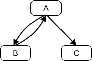
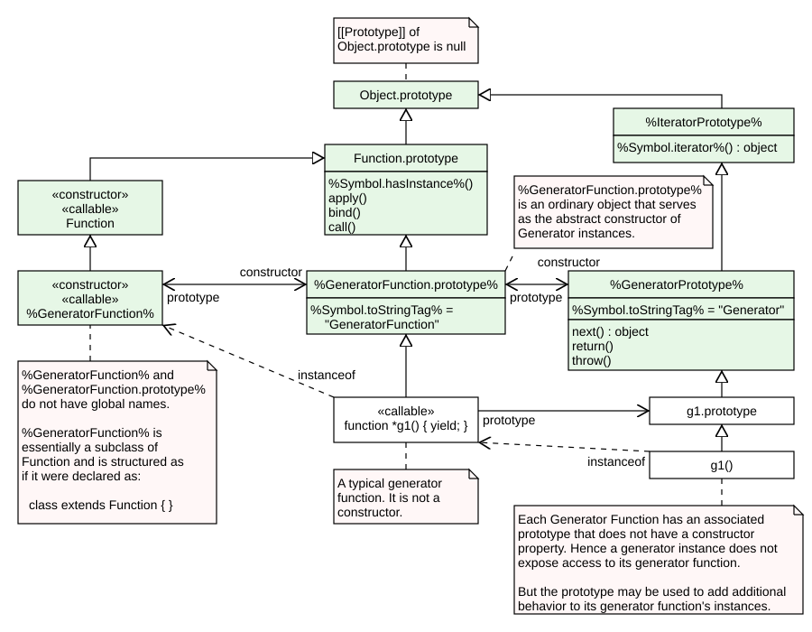

Draft ECMA-262 / September 23, 2025
ECMAScript® 2026 Language Specification

About this Specification
The document at https://tc39.es/ecma262/ is the most accurate and up-to-date ECMAScript specification. It contains the content of the most recent yearly snapshot plus any finished proposals (those that have reached Stage 4 in the proposal process and thus are implemented in several implementations and will be in the next practical revision) since that snapshot was taken.
This document is available as a single page and as multiple pages.
Contributing to this Specification
This specification is developed on GitHub with the help of the ECMAScript community. There are a number of ways to contribute to the development of this specification:
- GitHub Repository: https://github.com/tc39/ecma262
- Issues: All Issues, File a New Issue
- Pull Requests: All Pull Requests, Create a New Pull Request
- Test Suite: Test262
- Editors:
-
Community:
- Discourse: https://es.discourse.group/
- Chat: Matrix
- Mailing
List Archives: https://esdiscuss.org/
Refer to the
Introduction
This Ecma Standard defines the ECMAScript 2026 Language. It is the seventeenth edition of the ECMAScript Language Specification. Since publication of the first edition in 1997, ECMAScript has grown to be one of the world's most widely used general-purpose programming languages. It is best known as the language embedded in web browsers but has also been widely adopted for server and embedded applications.
ECMAScript is based on several originating technologies, the most well-known being JavaScript (Netscape) and JScript (Microsoft). The language was invented by Brendan Eich at Netscape and first appeared in that company's Navigator 2.0 browser. It has appeared in all subsequent browsers from Netscape and in all browsers from Microsoft starting with Internet Explorer 3.0.
The development of the ECMAScript Language Specification started in November 1996. The first edition of this Ecma Standard was adopted by the Ecma General Assembly of June 1997.
That Ecma Standard was submitted to ISO/IEC JTC 1 for adoption under the fast-track procedure, and approved as international standard ISO/IEC 16262, in April 1998. The Ecma General Assembly of June 1998 approved the second edition of ECMA-262 to keep it fully aligned with ISO/IEC 16262. Changes between the first and the second edition are editorial in nature.
The third edition of the Standard introduced powerful regular expressions, better string handling, new control statements, try/catch exception handling, tighter definition of errors, formatting for numeric output and minor changes in anticipation of future language growth. The third edition of the ECMAScript standard was adopted by the Ecma General Assembly of December 1999 and published as ISO/IEC 16262:2002 in June 2002.
After publication of the third edition, ECMAScript achieved massive adoption in conjunction with the World Wide Web where it has become the programming language that is supported by essentially all web browsers. Significant work was done to develop a fourth edition of ECMAScript. However, that work was not completed and not published as the fourth edition of ECMAScript but some of it was incorporated into the development of the sixth edition.
The fifth edition of ECMAScript (published as ECMA-262 5th edition) codified de facto interpretations of the language specification that have become common among browser implementations and added support for new features that had emerged since the publication of the third edition. Such features include
The fifth edition was submitted to ISO/IEC JTC 1 for adoption under the fast-track procedure, and approved as international standard ISO/IEC 16262:2011. Edition 5.1 of the ECMAScript Standard incorporated minor corrections and is the same text as ISO/IEC 16262:2011. The 5.1 Edition was adopted by the Ecma General Assembly of June 2011.
Focused development of the sixth edition started in 2009, as the fifth edition was being prepared for publication. However, this was preceded by significant experimentation and language enhancement design efforts dating to the publication of the third edition in 1999. In a very real sense, the completion of the sixth edition is the culmination of a fifteen year effort. The goals for this edition included providing better support for large applications, library creation, and for use of ECMAScript as a compilation target for other languages. Some of its major enhancements included modules, class declarations, lexical block scoping,
ECMAScript 2016 was the first ECMAScript edition released under Ecma TC39's new yearly release cadence and open development process. A plain-text source document was built from the ECMAScript 2015 source document to serve as the base for further development entirely on GitHub. Over the year of this standard's development, hundreds of pull requests and issues were filed representing thousands of bug fixes, editorial fixes and other improvements. Additionally, numerous software tools were developed to aid in this effort including Ecmarkup, Ecmarkdown, and Grammarkdown. ES2016 also included support for a new exponentiation operator and adds a new method to Array.prototype called includes.
ECMAScript 2017 introduced Async Functions, Shared Memory, and Atomics along with smaller language and library enhancements, bug fixes, and editorial updates. Async functions improve the asynchronous programming experience by providing syntax for promise-returning functions. Shared Memory and Atomics introduce a new Object.values, Object.entries, and Object.getOwnPropertyDescriptors.
ECMAScript 2018 introduced support for asynchronous iteration via the dotAll flag, named capture groups, Unicode property escapes, and look-behind assertions. Lastly it included object rest and spread properties.
ECMAScript 2019 introduced a few new built-in functions: flat and flatMap on Array.prototype for flattening arrays, Object.fromEntries for directly turning the return value of Object.entries into a new Object, and trimStart and trimEnd on String.prototype as better-named alternatives to the widely implemented but non-standard String.prototype.trimLeft and trimRight built-ins. In addition, it included a few minor updates to syntax and semantics. Updated syntax included optional catch binding parameters and allowing U+2028 (LINE SEPARATOR) and U+2029 (PARAGRAPH SEPARATOR) in string literals to align with JSON. Other updates included requiring that Array.prototype.sort be a stable sort, requiring that JSON.stringify return well-formed UTF-8 regardless of input, and clarifying Function.prototype.toString by requiring that it either return the corresponding original source text or a standard placeholder.
ECMAScript 2020, the 11th edition, introduced the matchAll method for Strings, to produce an import(), a syntax to asynchronously import Modules with a dynamic specifier; BigInt, a new number primitive for working with arbitrary precision Promise.allSettled, a new Promise combinator that does not short-circuit; globalThis, a universal way to access the global this value; dedicated export * as ns from 'module' syntax for use within modules; increased standardization of for-in enumeration order; import.meta, a
ECMAScript 2021, the 12th edition, introduced the replaceAll method for Strings; Promise.any, a Promise combinator that short-circuits when an input value is fulfilled; AggregateError, a new Error type to represent multiple errors at once; logical assignment operators (??=, &&=, ||=); WeakRef, for referring to a target object without preserving it from garbage collection, and FinalizationRegistry, to manage registration and unregistration of cleanup operations performed when target objects are garbage collected; separators for numeric literals (1_000); and Array.prototype.sort was made more precise, reducing the amount of cases that result in an
ECMAScript 2022, the 13th edition, introduced top-level await, allowing the #x in obj syntax, to test for presence of private fields on objects; regular expression match indices via the /d flag, which provides start and end indices for matched substrings; the cause property on Error objects, which can be used to record a causation chain in errors; the at method for Strings, Arrays, and Object.hasOwn, a convenient alternative to Object.prototype.hasOwnProperty.
ECMAScript 2023, the 14th edition, introduced the toSorted, toReversed, with, findLast, and findLastIndex methods on Array.prototype and TypedArray.prototype, as well as the toSpliced method on Array.prototype; added support for #! comments at the beginning of files to better facilitate executable ECMAScript files; and allowed the use of most Symbols as keys in weak collections.
ECMAScript 2024, the 15th edition, added facilities for resizing and transferring ArrayBuffers and SharedArrayBuffers; added a new RegExp /v flag for creating RegExps with more advanced features for working with sets of strings; and introduced the Promise.withResolvers convenience method for constructing Promises, the Object.groupBy and Map.groupBy methods for aggregating data, the Atomics.waitAsync method for asynchronously waiting for a change to shared memory, and the String.prototype.isWellFormed and String.prototype.toWellFormed methods for checking and ensuring that strings contain only well-formed Unicode.
ECMAScript 2025, the 16th edition, added a new Iterator global with associated static and prototype methods for working with Set.prototype for performing common operations on Sets; added support for importing JSON modules as well as syntax for declaring attributes of imported modules; added the RegExp.escape method for escaping a string to be safely used in a regular expression; added syntax for enabling and disabling modifier flags inline within regular expressions; added the Promise.try method for calling functions which may or may not return a Promise and ensuring the result is always a Promise; and added a new Float16Array DataView.prototype.getFloat16, DataView.prototype.setFloat16, and Math.f16round methods.
Dozens of individuals representing many organizations have made very significant contributions within Ecma TC39 to the development of this edition and to the prior editions. In addition, a vibrant community has emerged supporting TC39's ECMAScript efforts. This community has reviewed numerous drafts, filed thousands of bug reports, performed implementation experiments, contributed test suites, and educated the world-wide developer community about ECMAScript. Unfortunately, it is impossible to identify and acknowledge every person and organization who has contributed to this effort.
Allen Wirfs-Brock
ECMA-262, Project Editor, 6th Edition
Brian Terlson
ECMA-262, Project Editor, 7th through 10th Editions
Jordan Harband
ECMA-262, Project Editor, 10th through 12th Editions
Shu-yu Guo
ECMA-262, Project Editor, 12th through 16th Editions
Michael Ficarra
ECMA-262, Project Editor, 12th through 16th Editions
Kevin Gibbons
ECMA-262, Project Editor, 12th through 16th Editions
1 Scope
This Standard defines the ECMAScript 2026 general-purpose programming language.
2 Conformance
A conforming implementation of ECMAScript must provide and support all the types, values, objects, properties, functions, and program syntax and semantics described in this specification.
A conforming implementation of ECMAScript must interpret source text input in conformance with the latest version of the Unicode Standard and ISO/IEC 10646.
A conforming implementation of ECMAScript that provides an application programming interface (API) that supports programs that need to adapt to the linguistic and cultural conventions used by different human languages and countries must implement the interface defined by the most recent edition of ECMA-402 that is compatible with this specification.
A conforming implementation of ECMAScript may provide additional types, values, objects, properties, and functions beyond those described in this specification. In particular, a conforming implementation of ECMAScript may provide properties not described in this specification, and values for those properties, for objects that are described in this specification.
A conforming implementation of ECMAScript may support program and regular expression syntax not described in this specification. In particular, a conforming implementation of ECMAScript may support program syntax that makes use of any “future
A conforming implementation of ECMAScript must not implement any extension that is listed as a Forbidden Extension in subclause
A conforming implementation of ECMAScript must not redefine any facilities that are not
A conforming implementation of ECMAScript may choose to implement or not implement Normative Optional subclauses, unless otherwise indicated. Web browsers are generally required to implement all normative optional subclauses. (See Annex
2.1 Example Normative Optional Clause Heading
Example clause contents.
A conforming implementation of ECMAScript must implement Legacy subclauses, unless they are also marked as Normative Optional. All of the language features and behaviours specified within Legacy subclauses have one or more undesirable characteristics. However, their continued usage in existing applications prevents their removal from this specification. These features are not considered part of the core ECMAScript language. Programmers should not use or assume the existence of these features and behaviours when writing new ECMAScript code.
2.2 Example Legacy Clause Heading
Example clause contents.
2.3 Example Legacy Normative Optional Clause Heading
Example clause contents.
3 Normative References
The following referenced documents are indispensable for the application of this document. For dated references, only the edition cited applies. For undated references, the latest edition of the referenced document (including any amendments) applies.
The Unicode Standard.
https://unicode.org/versions/latest
ISO/IEC 10646, Information Technology — Universal Multiple-Octet Coded Character Set (UCS) plus Amendment 1:2005, Amendment 2:2006, Amendment 3:2008, Amendment 4:2008, and additional amendments and corrigenda, or successor.
ECMA-402, ECMAScript Internationalization API Specification, specifically the annual edition corresponding to this edition of this specification.
https://www.ecma-international.org/publications-and-standards/standards/ecma-402/
ECMA-404, The JSON Data Interchange Format.
https://www.ecma-international.org/publications-and-standards/standards/ecma-404/
4 Overview
This section contains a non-normative overview of the ECMAScript language.
ECMAScript is an object-oriented programming language for performing computations and manipulating computational objects within a
ECMAScript was originally designed to be used as a scripting language, but has become widely used as a general-purpose programming language. A scripting language is a programming language that is used to manipulate, customize, and automate the facilities of an existing system. In such systems, useful functionality is already available through a user interface, and the scripting language is a mechanism for exposing that functionality to program control. In this way, the existing system is said to provide a
ECMAScript was originally designed to be a Web scripting language, providing a mechanism to enliven Web pages in browsers and to perform server computation as part of a Web-based client-server architecture. ECMAScript is now used to provide core scripting capabilities for a variety of
ECMAScript usage has moved beyond simple scripting and it is now used for the full spectrum of programming tasks in many different environments and scales. As the usage of ECMAScript has expanded, so have the features and facilities it provides. ECMAScript is now a fully featured general-purpose programming language.
4.1 Web Scripting
A web browser provides an ECMAScript
A web server provides a different
Each Web browser and server that supports ECMAScript supplies its own
4.2 Hosts and Implementations
To aid integrating ECMAScript into
An implementation is an external source that further defines facilities enumerated in Annex
An implementation-defined facility is one that defers its definition to an external source without further qualification. This specification does not make any recommendations for particular behaviours, and conforming implementations are free to choose any behaviour within the constraints put forth by this specification.
An implementation-approximated facility is one that defers its definition to an external source while recommending an ideal behaviour. While conforming implementations are free to choose any behaviour within the constraints put forth by this specification, they are encouraged to strive to approximate the ideal. Some mathematical operations, such as Math.exp
A host is an external source that further defines facilities listed in Annex
A host hook is an abstract operation that is defined in whole or in part by an external source. All
- It must return either a
normal completion or athrow completion .
A host-defined facility is one that defers its definition to an external source without further qualification and is listed in Annex
A host environment is a particular choice of definition for all
This specification follows the editorial convention of always using the most specific term. For example, if a facility is
Both
4.3 ECMAScript Overview
The following is an informal overview of ECMAScript—not all parts of the language are described. This overview is not part of the standard proper.
ECMAScript is object-based: basic language and
ECMAScript defines a collection of built-in objects that round out the definition of ECMAScript entities. These built-in objects include the Object, Function, Boolean, Symbol, and various Error objects; objects that represent and manipulate numeric values including Math, Number, and Date; the text processing objects String and RegExp; objects that are indexed collections of values including Array and nine different kinds of Typed Arrays whose elements all have a specific numeric data representation; keyed collections including Map and Set objects; objects supporting structured data including the JSON object, ArrayBuffer, SharedArrayBuffer, and DataView; objects supporting control abstractions including generator functions and Promise objects; and reflection objects including Proxy and Reflect.
ECMAScript also defines a set of built-in operators. ECMAScript operators include various unary operations, multiplicative operators, additive operators, bitwise shift operators, relational operators, equality operators, binary bitwise operators, binary logical operators, assignment operators, and the comma operator.
Large ECMAScript programs are supported by modules which allow a program to be divided into multiple sequences of statements and declarations. Each module explicitly identifies declarations it uses that need to be provided by other modules and which of its declarations are available for use by other modules.
ECMAScript syntax intentionally resembles Java syntax. ECMAScript syntax is relaxed to enable it to serve as an easy-to-use scripting language. For example, a variable is not required to have its type declared nor are types associated with properties, and defined functions are not required to have their declarations appear textually before calls to them.
4.3.1 Objects
Even though ECMAScript includes syntax for class definitions, ECMAScript objects are not fundamentally class-based such as those in C++, Smalltalk, or Java. Instead objects may be created in various ways including via a literal notation or via new Date(2009, 11) creates a new Date object. Invoking a Date() produces a string representation of the current date and time rather than an object.
Every object created by a

In a class-based object-oriented language, in general, state is carried by instances, methods are carried by classes, and inheritance is only of structure and behaviour. In ECMAScript, the state and methods are carried by objects, while structure, behaviour, and state are all inherited.
All objects that do not directly contain a particular property that their prototype contains share that property and its value. Figure 1 illustrates this:
CF is a new expressions: cf1, cf2, cf3, cf4, and cf5. Each of these objects contains properties named
Unlike most class-based object languages, properties can be added to objects dynamically by assigning values to them. That is,
Although ECMAScript objects are not inherently class-based, it is often convenient to define class-like abstractions based upon a common pattern of
4.3.2 The Strict Variant of ECMAScript
The ECMAScript Language recognizes the possibility that some users of the language may wish to restrict their usage of some features available in the language. They might do so in the interests of security, to avoid what they consider to be error-prone features, to get enhanced error checking, or for other reasons of their choosing. In support of this possibility, ECMAScript defines a strict variant of the language. The strict variant of the language excludes some specific syntactic and semantic features of the regular ECMAScript language and modifies the detailed semantics of some features. The strict variant also specifies additional error conditions that must be reported by throwing error exceptions in situations that are not specified as errors by the non-strict form of the language.
The strict variant of ECMAScript is commonly referred to as the strict mode of the language. Strict mode selection and use of the strict mode syntax and semantics of ECMAScript is explicitly made at the level of individual
In order to conform to this specification, an ECMAScript implementation must implement both the full unrestricted ECMAScript language and the strict variant of the ECMAScript language as defined by this specification. In addition, an implementation must support the combination of unrestricted and strict mode source text units into a single composite program.
4.4 Terms and Definitions
For the purposes of this document, the following terms and definitions apply.
4.4.1 implementation-approximated
an
4.4.2 implementation-defined
an
4.4.3 host-defined
same as
Editorially, see clause
4.4.4 type
set of data values as defined in clause
4.4.5 primitive value
member of one of the types Undefined, Null, Boolean, Number, BigInt, Symbol, or String as defined in clause
A primitive value is a datum that is represented directly at the lowest level of the language implementation.
4.4.6 object
member of the type Object
An object is a collection of properties and has a single prototype object. The prototype may be
4.4.7 constructor
The value of a
4.4.8 prototype
object that provides shared properties for other objects
When a constructor.prototype, and properties added to an object's prototype are shared, through inheritance, by all objects sharing the prototype. Alternatively, a new object may be created with an explicitly specified prototype by using the Object.create built-in function.
4.4.9 ordinary object
object that has the default behaviour for the essential internal methods that must be supported by all objects
4.4.10 exotic object
object that does not have the default behaviour for one or more of the essential internal methods
Any object that is not an
4.4.11 standard object
object whose semantics are defined by this specification
4.4.12 built-in object
object specified and supplied by an ECMAScript implementation
Standard built-in objects are defined in this specification. An ECMAScript implementation may specify and supply additional kinds of built-in objects.
4.4.13 undefined value
primitive value used when a variable has not been assigned a value
4.4.14 Undefined type
type whose sole value is the
4.4.15 null value
primitive value that represents the intentional absence of any object value
4.4.16 Null type
type whose sole value is the
4.4.17 Boolean value
member of the
There are only two Boolean values,
4.4.18 Boolean type
type consisting of the primitive values
4.4.19 Boolean object
member of the
A Boolean object is created by using the Boolean new expression, supplying a Boolean value as an argument. The resulting object has an internal slot whose value is the Boolean value. A Boolean object can be coerced to a Boolean value.
4.4.20 String value
primitive value that is a
A String value is a member of the
4.4.21 String type
set of all possible String values
4.4.22 String object
member of the
A String object is created by using the String new expression, supplying a String value as an argument. The resulting object has an internal slot whose value is the String value. A String object can be coerced to a String value by calling the String
4.4.23 Number value
primitive value corresponding to a double-precision 64-bit binary format
A Number value is a member of the
4.4.24 Number type
set of all possible Number values including
4.4.25 Number object
member of the
A Number object is created by using the Number new expression, supplying a Number value as an argument. The resulting object has an internal slot whose value is the Number value. A Number object can be coerced to a Number value by calling the Number
4.4.26 Infinity
Number value that is the positive infinite Number value
4.4.27 NaN
Number value that is an
4.4.28 BigInt value
primitive value corresponding to an arbitrary-precision
4.4.29 BigInt type
set of all possible BigInt values
4.4.30 BigInt object
member of the
4.4.31 Symbol value
primitive value that represents a unique, non-String Object
4.4.32 Symbol type
set of all possible Symbol values
4.4.33 Symbol object
member of the
4.4.34 function
member of the
In addition to its properties, a function contains executable code and state that determine how it behaves when invoked. A function's code may or may not be written in ECMAScript.
4.4.35 built-in function
built-in object that is a function
Examples of built-in functions include parseInt and Math.exp. A
4.4.36 built-in constructor
built-in function that is a
Examples of built-in Object and Function. A
4.4.37 property
part of an object that associates a key (either a String value or a Symbol value) and a value
Depending upon the form of the property the value may be represented either directly as a data value (a primitive value, an object, or a
4.4.38 method
function that is the value of a property
When a function is called as a method of an object, the object is passed to the function as its
4.4.39 built-in method
method that is a built-in function
Standard built-in methods are defined in this specification. A
4.4.40 attribute
internal value that defines some characteristic of a property
4.4.41 own property
property that is directly contained by its object
4.4.42 inherited property
property of an object that is not an own property but is a property (either own or inherited) of the object's prototype
4.5 Organization of This Specification
The remainder of this specification is organized as follows:
Clause
Clauses
Clauses
Clauses
Clause
5 Notational Conventions
5.1 Syntactic and Lexical Grammars
5.1.1 Context-Free Grammars
A context-free grammar consists of a number of productions. Each production has an abstract symbol called a nonterminal as its left-hand side, and a sequence of zero or more nonterminal and terminal symbols as its right-hand side. For each grammar, the terminal symbols are drawn from a specified alphabet.
A chain production is a production that has exactly one nonterminal symbol on its right-hand side along with zero or more terminal symbols.
Starting from a sentence consisting of a single distinguished nonterminal, called the goal symbol, a given context-free grammar specifies a language, namely, the (perhaps infinite) set of possible sequences of terminal symbols that can result from repeatedly replacing any nonterminal in the sequence with a right-hand side of a production for which the nonterminal is the left-hand side.
5.1.2 The Lexical and RegExp Grammars
A lexical grammar for ECMAScript is given in clause
Input elements other than white space and comments form the terminal symbols for the syntactic grammar for ECMAScript and are called ECMAScript tokens. These tokens are the /*…*/ regardless of whether it spans more than one line) is likewise simply discarded if it contains no line terminator; but if a
A RegExp grammar for ECMAScript is given in
Productions of the lexical and RegExp grammars are distinguished by having two colons “::” as separating punctuation. The lexical and RegExp grammars share some productions.
5.1.3 The Numeric String Grammar
A numeric string grammar appears in
Productions of the numeric string grammar are distinguished by having three colons “:::” as punctuation, and are never used for parsing source text.
5.1.4 The Syntactic Grammar
The syntactic grammar for ECMAScript is given in clauses
When a stream of code points is to be parsed as an ECMAScript
When a parse is successful, it constructs a parse tree, a rooted tree structure in which each node is a Parse Node. Each Parse Node is an instance of a symbol in the grammar; it represents a span of the source text that can be derived from that symbol. The root node of the parse tree, representing the whole of the source text, is an instance of the parse's
New Parse Nodes are instantiated for each invocation of the parser and never reused between parses even of identical source text. Parse Nodes are considered the same Parse Node if and only if they represent the same span of source text, are instances of the same grammar symbol, and resulted from the same parser invocation.
Parsing the same String multiple times will lead to different Parse Nodes. For example, consider:
let str = "1 + 1;";
eval(str);
eval(str);Each call to eval converts the value of str into
Productions of the syntactic grammar are distinguished by having just one colon “:” as punctuation.
The syntactic grammar as presented in clauses
In certain cases, in order to avoid ambiguities, the syntactic grammar uses generalized productions that permit token sequences that do not form a valid ECMAScript
- The sequence of tokens originally matched by P is parsed again using N as the
goal symbol . If N takes grammatical parameters, then they are set to the same values used when P was originally parsed. - If the sequence of tokens can be parsed as a single instance of N, with no tokens left over, then:
- We refer to that instance of N (a Parse Node, unique for a given P) as "the N that is covered by P".
- All Early Error rules for N and its derived productions also apply to the N that is covered by P.
- Otherwise (if the parse fails), it is an early Syntax Error.
5.1.5 Grammar Notation
5.1.5.1 Terminal Symbols
In the ECMAScript grammars, some terminal symbols are shown in fixed-width font. These are to appear in a source text exactly as written. All terminal symbol code points specified in this way are to be understood as the appropriate Unicode code points from the Basic Latin block, as opposed to any similar-looking code points from other Unicode ranges. A code point in a terminal symbol cannot be expressed by a \
In grammars whose terminal symbols are individual Unicode code points (i.e., the lexical, RegExp, and numeric string grammars), a contiguous run of multiple fixed-width code points appearing in a production is a simple shorthand for the same sequence of code points, written as standalone terminal symbols.
For example, the production:
is a shorthand for:
In contrast, in the syntactic grammar, a contiguous run of fixed-width code points is a single terminal symbol.
Terminal symbols come in two other forms:
- In the lexical and RegExp grammars, Unicode code points without a conventional printed representation are instead shown in the form "<ABBREV>" where "ABBREV" is a mnemonic for the code point or set of code points. These forms are defined in
Unicode Format-Control Characters ,White Space , andLine Terminators . - In the syntactic grammar, certain terminal symbols (e.g.
IdentifierName andRegularExpressionLiteral ) are shown in italics, as they refer to the nonterminals of the same name in the lexical grammar.
5.1.5.2 Nonterminal Symbols and Productions
Nonterminal symbols are shown in italic type. The definition of a nonterminal (also called a “production”) is introduced by the name of the nonterminal being defined followed by one or more colons. (The number of colons indicates to which grammar the production belongs.) One or more alternative right-hand sides for the nonterminal then follow on succeeding lines. For example, the syntactic definition:
states that the nonterminal while, followed by a left parenthesis token, followed by an
states that an
5.1.5.3 Optional Symbols
The subscripted suffix “opt”, which may appear after a terminal or nonterminal, indicates an optional symbol. The alternative containing the optional symbol actually specifies two right-hand sides, one that omits the optional element and one that includes it. This means that:
is a convenient abbreviation for:
and that:
is a convenient abbreviation for:
which in turn is an abbreviation for:
so, in this example, the nonterminal
5.1.5.4 Grammatical Parameters
A production may be parameterized by a subscripted annotation of the form “[parameters]”, which may appear as a suffix to the nonterminal symbol defined by the production. “parameters” may be either a single name or a comma separated list of names. A parameterized production is shorthand for a set of productions defining all combinations of the parameter names, preceded by an underscore, appended to the parameterized nonterminal symbol. This means that:
is a convenient abbreviation for:
and that:
is an abbreviation for:
Multiple parameters produce a combinatoric number of productions, not all of which are necessarily referenced in a complete grammar.
References to nonterminals on the right-hand side of a production can also be parameterized. For example:
is equivalent to saying:
and:
is equivalent to:
A nonterminal reference may have both a parameter list and an “opt” suffix. For example:
is an abbreviation for:
Prefixing a parameter name with “?” on a right-hand side nonterminal reference makes that parameter value dependent upon the occurrence of the parameter name on the reference to the current production's left-hand side symbol. For example:
is an abbreviation for:
If a right-hand side alternative is prefixed with “[+parameter]” that alternative is only available if the named parameter was used in referencing the production's nonterminal symbol. If a right-hand side alternative is prefixed with “[~parameter]” that alternative is only available if the named parameter was not used in referencing the production's nonterminal symbol. This means that:
is an abbreviation for:
and that:
is an abbreviation for:
5.1.5.5 one of
When the words “one of” follow the colon(s) in a grammar definition, they signify that each of the terminal symbols on the following line or lines is an alternative definition. For example, the lexical grammar for ECMAScript contains the production:
which is merely a convenient abbreviation for:
5.1.5.6 [empty]
If the phrase “[empty]” appears as the right-hand side of a production, it indicates that the production's right-hand side contains no terminals or nonterminals.
5.1.5.7 Lookahead Restrictions
If the phrase “[lookahead = seq]” appears in the right-hand side of a production, it indicates that the production may only be used if the token sequence seq is a prefix of the immediately following input token sequence. Similarly, “[lookahead ∈ set]”, where set is a
These conditions may be negated. “[lookahead ≠ seq]” indicates that the containing production may only be used if seq is not a prefix of the immediately following input token sequence, and “[lookahead ∉ set]” indicates that the production may only be used if no element of set is a prefix of the immediately following token sequence.
As an example, given the definitions:
the definition:
matches either the letter n followed by one or more decimal digits the first of which is even, or a decimal digit not followed by another decimal digit.
Note that when these phrases are used in the syntactic grammar, it may not be possible to unambiguously identify the immediately following token sequence because determining later tokens requires knowing which lexical
5.1.5.8 [no LineTerminator here]
If the phrase “[no
indicates that the production may not be used if a throw token and the
Unless the presence of a
5.1.5.9 but not
The right-hand side of a production may specify that certain expansions are not permitted by using the phrase “but not” and then indicating the expansions to be excluded. For example, the production:
means that the nonterminal
5.1.5.10 Descriptive Phrases
Finally, a few nonterminal symbols are described by a descriptive phrase in sans-serif type in cases where it would be impractical to list all the alternatives:
5.2 Algorithm Conventions
The specification often uses a numbered list to specify steps in an algorithm. These algorithms are used to precisely specify the required semantics of ECMAScript language constructs. The algorithms are not intended to imply the use of any specific implementation technique. In practice, there may be more efficient algorithms available to implement a given feature.
Algorithms may be explicitly parameterized with an ordered, comma-separated sequence of alias names which may be used within the algorithm steps to reference the argument passed in that position. Optional parameters are denoted with surrounding brackets ([ , name ]) and are no different from required parameters within algorithm steps. A rest parameter may appear at the end of a parameter list, denoted with leading ellipsis (, ...name). The rest parameter captures all of the arguments provided following the required and optional parameters into a
Algorithm steps may be subdivided into sequential substeps. Substeps are indented and may themselves be further divided into indented substeps. Outline numbering conventions are used to identify substeps with the first level of substeps labelled with lowercase alphabetic characters and the second level of substeps labelled with lowercase roman numerals. If more than three levels are required these rules repeat with the fourth level using numeric labels. For example:
- Top-level step
- Substep.
- Substep.
- Subsubstep.
- Subsubsubstep
- Subsubsubsubstep
- Subsubsubsubsubstep
- Subsubsubsubstep
- Subsubsubstep
- Subsubstep.
A step or substep may be written as an “if” predicate that conditions its substeps. In this case, the substeps are only applied if the predicate is true. If a step or substep begins with the word “else”, it is a predicate that is the negation of the preceding “if” predicate step at the same level.
A step may specify the iterative application of its substeps.
A step that begins with “Assert:” asserts an invariant condition of its algorithm. Such assertions are used to make explicit algorithmic invariants that would otherwise be implicit. Such assertions add no additional semantic requirements and hence need not be checked by an implementation. They are used simply to clarify algorithms.
Algorithm steps may declare named aliases for any value using the form “Let x be someValue”. These aliases are reference-like in that both x and someValue refer to the same underlying data and modifications to either are visible to both. Algorithm steps that want to avoid this reference-like behaviour should explicitly make a copy of the right-hand side: “Let x be a copy of someValue” creates a shallow copy of someValue.
Once declared, an alias may be referenced in any subsequent steps and must not be referenced from steps prior to the alias's declaration. Aliases may be modified using the form “Set x to someOtherValue”.
5.2.1 Abstract Operations
In order to facilitate their use in multiple parts of this specification, some algorithms, called abstract operations, are named and written in parameterized functional form so that they may be referenced by name from within other algorithms. Abstract operations are typically referenced using a functional application style such as OperationName(arg1, arg2). Some abstract operations are treated as polymorphically dispatched methods of class-like specification abstractions. Such method-like abstract operations are typically referenced using a method application style such as someValue.OperationName(arg1, arg2).
5.2.2 Syntax-Directed Operations
A syntax-directed operation is a named operation whose definition consists of algorithms, each of which is associated with one or more productions from one of the ECMAScript grammars. A production that has multiple alternative definitions will typically have a distinct algorithm for each alternative. When an algorithm is associated with a grammar production, it may reference the terminal and nonterminal symbols of the production alternative as if they were parameters of the algorithm. When used in this manner, nonterminal symbols refer to the actual alternative definition that is matched when parsing the source text. The source text matched by a grammar production or
When an algorithm is associated with a production alternative, the alternative is typically shown without any “[ ]” grammar annotations. Such annotations should only affect the syntactic recognition of the alternative and have no effect on the associated semantics for the alternative.
Syntax-directed operations are invoked with a parse node and, optionally, other parameters by using the conventions on steps
- Let status be SyntaxDirectedOperation of
SomeNonTerminal . - Let someParseNode be the parse of some source text.
- Perform SyntaxDirectedOperation of someParseNode.
- Perform SyntaxDirectedOperation of someParseNode with argument
"value" .
Unless explicitly specified otherwise, all
but the
Runtime Semantics:
- Return
Evaluation ofStatementList .
5.2.3 Runtime Semantics
Algorithms which specify semantics that must be called at runtime are called runtime semantics. Runtime semantics are defined by
5.2.3.1 Completion ( completionRecord )
The abstract operation Completion takes argument completionRecord (a
Assert : completionRecord is aCompletion Record .- Return completionRecord.
5.2.3.2 Throw an Exception
Algorithms steps that say to throw an exception, such as
- Throw a
TypeError exception.
mean the same things as:
- Return
ThrowCompletion (a newly createdTypeError object).
5.2.3.3 ReturnIfAbrupt
Algorithms steps that say or are otherwise equivalent to:
ReturnIfAbrupt (argument).
mean the same thing as:
Assert : argument is aCompletion Record .- If argument is an
abrupt completion , returnCompletion (argument). - Else, set argument to argument.[[Value]].
Algorithms steps that say or are otherwise equivalent to:
ReturnIfAbrupt (AbstractOperation()).
mean the same thing as:
- Let hygienicTemp be AbstractOperation().
Assert : hygienicTemp is aCompletion Record .- If hygienicTemp is an
abrupt completion , returnCompletion (hygienicTemp). - Else, set hygienicTemp to hygienicTemp.[[Value]].
Where hygienicTemp is ephemeral and visible only in the steps pertaining to ReturnIfAbrupt.
Algorithms steps that say or are otherwise equivalent to:
- Let result be AbstractOperation(
ReturnIfAbrupt (argument)).
mean the same thing as:
Assert : argument is aCompletion Record .- If argument is an
abrupt completion , returnCompletion (argument). - Else, set argument to argument.[[Value]].
- Let result be AbstractOperation(argument).
5.2.3.4 ReturnIfAbrupt Shorthands
Invocations of ? indicate that
- ? OperationName().
is equivalent to the following step:
ReturnIfAbrupt (OperationName()).
Similarly, for method application style, the step:
- ? someValue.OperationName().
is equivalent to:
ReturnIfAbrupt (someValue.OperationName()).
Similarly, prefix ! is used to indicate that the following invocation of an abstract or
- Let val be ! OperationName().
is equivalent to the following steps:
- Let val be OperationName().
Assert : val is anormal completion .- Set val to val.[[Value]].
! or ? before the invocation of the operation:
- Perform ! SyntaxDirectedOperation of
NonTerminal .
5.2.3.5 Implicit Normal Completion
In algorithms within
- when the result of applying
Completion ,NormalCompletion ,ThrowCompletion , orReturnCompletion is directly returned - when the result of constructing a
Completion Record is directly returned
It is an editorial error if a
- Return
true .
means the same things as any of
- Return
NormalCompletion (true ).
or
- Let completion be
NormalCompletion (true ). - Return
Completion (completion).
or
- Return
Completion Record { [[Type]]:normal , [[Value]]:true , [[Target]]:empty }.
Note that, through the
- Return ? completion.
The following example would be an editorial error because a
- Let completion be
NormalCompletion (true ). - Return completion.
5.2.4 Static Semantics
Context-free grammars are not sufficiently powerful to express all the rules that define whether a stream of input elements form a valid ECMAScript
Static Semantic Rules have names and typically are defined using an algorithm. Named Static Semantic Rules are associated with grammar productions and a production that has multiple alternative definitions will typically have for each alternative a distinct algorithm for each applicable named static semantic rule.
A special kind of static semantic rule is an Early Error Rule.
5.2.5 Mathematical Operations
This specification makes reference to these kinds of numeric values:
- Mathematical values: Arbitrary real numbers, used as the default numeric type.
- Extended mathematical values:
Mathematical values together with +∞ and -∞. - Numbers:
IEEE 754-2019 binary64 (double-precision floating point) values. - BigInts:
ECMAScript language values representing arbitraryintegers in a one-to-one correspondence.
In the language of this specification, numerical values are distinguished among different numeric kinds using subscript suffixes. The subscript 𝔽 refers to Numbers, and the subscript ℤ refers to BigInts. Numeric values without a subscript suffix refer to
In general, when this specification refers to a numerical value, such as in the phrase, "the length of y" or "the
When the term integer is used in this specification, it refers to a
Numeric operators such as +, ×, =, and ≥ refer to those operations as determined by the type of the operands. When applied to
Conversions between
The mathematical function
The mathematical function
The notation “
The phrase "the result of clamping x between lower and upper" (where x is an
The mathematical function
The mathematical function
Mathematical functions
An interval from lower bound a to upper bound b is a possibly-infinite, possibly-empty set of numeric values of the same numeric type. Each bound will be described as either inclusive or exclusive, but not both. There are four kinds of intervals, as follows:
- An
interval from a (inclusive) to b (inclusive), also called an inclusive interval from a to b, includes all values x of the same numeric type such that a ≤ x ≤ b, and no others. - An
interval from a (inclusive) to b (exclusive) includes all values x of the same numeric type such that a ≤ x < b, and no others. - An
interval from a (exclusive) to b (inclusive) includes all values x of the same numeric type such that a < x ≤ b, and no others. - An
interval from a (exclusive) to b (exclusive) includes all values x of the same numeric type such that a < x < b, and no others.
For example, the
5.2.6 Value Notation
In this specification, Function.prototype.apply or let n = 42;.
5.2.7 Identity
In this specification, both specification values and
From the perspective of this specification, the word “is” is used to compare two values for equality, as in “If bool is
From the perspective of the ECMAScript language, language values are compared for equality using the
For specification values, examples of values without specification identity include, but are not limited to:
Specification identity agrees with language identity for all
6 ECMAScript Data Types and Values
Algorithms within this specification manipulate values each of which has an associated type. The possible value types are exactly those defined in this clause. Types are further classified into
6.1 ECMAScript Language Types
An ECMAScript language type corresponds to values that are directly manipulated by an ECMAScript programmer using the ECMAScript language. The ECMAScript language types are Undefined, Null, Boolean, String, Symbol, Number, BigInt, and Object. An ECMAScript language value is a value that is characterized by an ECMAScript language type.
6.1.1 The Undefined Type
The Undefined type has exactly one value, called
6.1.2 The Null Type
The Null type has exactly one value, called
6.1.3 The Boolean Type
The Boolean type represents a logical entity having two values, called
6.1.4 The String Type
The String type is the set of all ordered sequences of zero or more 16-bit unsigned
ECMAScript operations that do not interpret String contents apply no further semantics. Operations that do interpret String values treat each element as a single UTF-16 code unit. However, ECMAScript does not restrict the value of or relationships between these code units, so operations that further interpret String contents as sequences of Unicode code points encoded in UTF-16 must account for ill-formed subsequences. Such operations apply special treatment to every code unit with a numeric value in the
-
A code unit that is not a
leading surrogate and not atrailing surrogate is interpreted as a code point with the same value. -
A sequence of two code units, where the first code unit c1 is a
leading surrogate and the second code unit c2 atrailing surrogate , is a surrogate pair and is interpreted as a code point with the value (c1 - 0xD800) × 0x400 + (c2 - 0xDC00) + 0x10000. (See11.1.3 ) -
A code unit that is a
leading surrogate ortrailing surrogate , but is not part of asurrogate pair , is interpreted as a code point with the same value.
The function String.prototype.normalize (see String.prototype.localeCompare (see
The rationale behind this design was to keep the implementation of Strings as simple and high-performing as possible. If
In this specification, the phrase "the string-concatenation of A, B, ..." (where each argument is a String value, a code unit, or a sequence of code units) denotes the String value whose sequence of code units is the concatenation of the code units (in order) of each of the arguments (in order).
The phrase "the substring of S from inclusiveStart to exclusiveEnd" (where S is a String value or a sequence of code units and inclusiveStart and exclusiveEnd are
The phrase "the ASCII word characters" denotes the following String value, which consists solely of every letter and number in the Unicode Basic Latin block along with U+005F (LOW LINE):
For historical reasons, it has significance to various algorithms.
6.1.4.1 StringIndexOf ( string, searchValue, fromIndex )
The abstract operation StringIndexOf takes arguments string (a String), searchValue (a String), and fromIndex (a non-negative
- Let len be the length of string.
- If searchValue is the empty String and fromIndex ≤ len, return fromIndex.
- Let searchLen be the length of searchValue.
- For each
integer i such that fromIndex ≤ i ≤ len - searchLen, in ascending order, do- Let candidate be the
substring of string from i to i + searchLen. - If candidate is searchValue, return i.
- Let candidate be the
- Return
not-found .
If searchValue is the empty String and fromIndex ≤ the length of string, this algorithm returns fromIndex. The empty String is effectively found at every position within a string, including after the last code unit.
This algorithm always returns
6.1.4.2 StringLastIndexOf ( string, searchValue, fromIndex )
The abstract operation StringLastIndexOf takes arguments string (a String), searchValue (a String), and fromIndex (a non-negative
- Let len be the length of string.
- Let searchLen be the length of searchValue.
Assert : fromIndex + searchLen ≤ len.- For each
integer i such that 0 ≤ i ≤ fromIndex, in descending order, do- Let candidate be the
substring of string from i to i + searchLen. - If candidate is searchValue, return i.
- Let candidate be the
- Return
not-found .
If searchValue is the empty String, this algorithm returns fromIndex. The empty String is effectively found at every position within a string, including after the last code unit.
6.1.5 The Symbol Type
The Symbol type is the set of all non-String values that may be used as the key of an Object property (
Each Symbol is unique and immutable.
Each Symbol has an immutable [[Description]] internal slot whose value is either a String or
6.1.5.1 Well-Known Symbols
Well-known symbols are built-in Symbol values that are explicitly referenced by algorithms of this specification. They are typically used as the keys of properties whose values serve as extension points of a specification algorithm. Unless otherwise specified, well-known symbols values are shared by all
Within this specification a well-known symbol is referred to using the standard
%Symbol.name%. In particular, the following names were used: @@asyncIterator, @@hasInstance, @@isConcatSpreadable, @@| Specification Name | [[Description]] | Value and Purpose |
|---|---|---|
| %Symbol.asyncIterator% |
|
A method that returns the default for-await-of statement.
|
| %Symbol.hasInstance% |
|
A method that determines if a instanceof operator.
|
| %Symbol.isConcatSpreadable% |
|
A Boolean valued property that if true indicates that an object should be flattened to its array elements by Array.prototype.concat |
| %Symbol.iterator% |
|
A method that returns the default |
| %Symbol.match% |
|
A regular expression method that matches the regular expression against a string. Called by the String.prototype.match |
| %Symbol.matchAll% |
|
A regular expression method that returns an String.prototype.matchAll |
| %Symbol.replace% |
|
A regular expression method that replaces matched substrings of a string. Called by the String.prototype.replace |
| %Symbol.search% |
|
A regular expression method that returns the index within a string that matches the regular expression. Called by the String.prototype.search |
| %Symbol.species% |
|
A function valued property that is the |
| %Symbol.split% |
|
A regular expression method that splits a string at the indices that match the regular expression. Called by the String.prototype.split |
| %Symbol.toPrimitive% |
|
A method that converts an object to a corresponding primitive value. Called by the |
| %Symbol.toStringTag% |
|
A String valued property that is used in the creation of the default string description of an object. Accessed by the built-in method Object.prototype.toString |
| %Symbol.unscopables% |
|
An object valued property whose own and inherited property names are property names that are excluded from the with environment bindings of the associated object.
|
6.1.6 Numeric Types
ECMAScript has two built-in numeric types: Number and BigInt. The following
Because the numeric types are in general not convertible without loss of precision or truncation, the ECMAScript language provides no implicit conversion among these types. Programmers must explicitly call Number and BigInt functions to convert among types when calling a function which requires another type.
The first and subsequent editions of ECMAScript have provided, for certain operators, implicit numeric conversions that could lose precision or
6.1.6.1 The Number Type
The Number type has exactly 18,437,736,874,454,810,627 (that is, NaN.) In some implementations, external code might be able to detect a difference between various NaN values, but such behaviour is
There are two other special values, called +Infinity (or simply Infinity) and -Infinity.)
The other 18,437,736,874,454,810,624 (that is,
Note that there is both a +0 (or simply 0) and -0.)
The 18,437,736,874,454,810,622 (that is,
18,428,729,675,200,069,632 (that is,
where s is 1 or -1, m is an
The remaining 9,007,199,254,740,990 (that is,
where s is 1 or -1, m is an
Note that all the positive and negative
A
In this specification, the phrase “the Number value for x” where x represents an exact real mathematical quantity (which might even be an irrational number such as π) means a Number value chosen in the following manner. Consider the set of all
The
Some ECMAScript operators deal only with
6.1.6.1.1 Number::unaryMinus ( x )
The abstract operation Number::unaryMinus takes argument x (a Number) and returns a Number. It performs the following steps when called:
- If x is
NaN , returnNaN . - Return the negation of x; that is, compute a Number with the same magnitude but opposite sign.
6.1.6.1.2 Number::bitwiseNOT ( x )
The abstract operation Number::bitwiseNOT takes argument x (a Number) and returns an
- Let oldValue be !
ToInt32 (x). - Return the bitwise complement of oldValue. The
mathematical value of the result is exactly representable as a 32-bit two's complement bit string.
6.1.6.1.3 Number::exponentiate ( base, exponent )
The abstract operation Number::exponentiate takes arguments base (a Number) and exponent (a Number) and returns a Number. It returns an
- If exponent is
NaN , returnNaN . - If exponent is either
+0 𝔽 or-0 𝔽, return1 𝔽. - If base is
NaN , returnNaN . - If base is
+∞ 𝔽, then- If exponent >
+0 𝔽, return+∞ 𝔽; otherwise return+0 𝔽.
- If exponent >
- If base is
-∞ 𝔽, then- If exponent >
+0 𝔽, then- If exponent is an odd
integral Number , return-∞ 𝔽; otherwise return+∞ 𝔽.
- If exponent is an odd
- Else,
- If exponent is an odd
integral Number , return-0 𝔽; otherwise return+0 𝔽.
- If exponent is an odd
- If exponent >
- If base is
+0 𝔽, then- If exponent >
+0 𝔽, return+0 𝔽; otherwise return+∞ 𝔽.
- If exponent >
- If base is
-0 𝔽, then- If exponent >
+0 𝔽, then- If exponent is an odd
integral Number , return-0 𝔽; otherwise return+0 𝔽.
- If exponent is an odd
- Else,
- If exponent is an odd
integral Number , return-∞ 𝔽; otherwise return+∞ 𝔽.
- If exponent is an odd
- If exponent >
Assert : base isfinite and is neither+0 𝔽 nor-0 𝔽.- If exponent is
+∞ 𝔽, then - If exponent is
-∞ 𝔽, then Assert : exponent isfinite and is neither+0 𝔽 nor-0 𝔽.- If base <
-0 𝔽 and exponent is not anintegral Number , returnNaN . - Return an
implementation-approximated Number value representing the result of raisingℝ (base) to theℝ (exponent) power.
The result of base ** exponent when base is
6.1.6.1.4 Number::multiply ( x, y )
The abstract operation Number::multiply takes arguments x (a Number) and y (a Number) and returns a Number. It performs multiplication according to the rules of
- If x is
NaN or y isNaN , returnNaN . - If x is either
+∞ 𝔽 or-∞ 𝔽, then- If y is either
+0 𝔽 or-0 𝔽, returnNaN . - If y >
+0 𝔽, return x. - Return -x.
- If y is either
- If y is either
+∞ 𝔽 or-∞ 𝔽, then- If x is either
+0 𝔽 or-0 𝔽, returnNaN . - If x >
+0 𝔽, return y. - Return -y.
- If x is either
- If x is
-0 𝔽, then- If y is
-0 𝔽 or y <-0 𝔽, return+0 𝔽. - Else, return
-0 𝔽.
- If y is
- If y is
-0 𝔽, then- If x <
-0 𝔽, return+0 𝔽. - Else, return
-0 𝔽.
- If x <
- Return
𝔽 (ℝ (x) ×ℝ (y)).
6.1.6.1.5 Number::divide ( x, y )
The abstract operation Number::divide takes arguments x (a Number) and y (a Number) and returns a Number. It performs division according to the rules of
- If x is
NaN or y isNaN , returnNaN . - If x is either
+∞ 𝔽 or-∞ 𝔽, then- If y is either
+∞ 𝔽 or-∞ 𝔽, returnNaN . - If y is
+0 𝔽 or y >+0 𝔽, return x. - Return -x.
- If y is either
- If y is
+∞ 𝔽, then- If x is
+0 𝔽 or x >+0 𝔽, return+0 𝔽; otherwise return-0 𝔽.
- If x is
- If y is
-∞ 𝔽, then- If x is
+0 𝔽 or x >+0 𝔽, return-0 𝔽; otherwise return+0 𝔽.
- If x is
- If x is either
+0 𝔽 or-0 𝔽, then- If y is either
+0 𝔽 or-0 𝔽, returnNaN . - If y >
+0 𝔽, return x. - Return -x.
- If y is either
- If y is
+0 𝔽, then- If x >
+0 𝔽, return+∞ 𝔽; otherwise return-∞ 𝔽.
- If x >
- If y is
-0 𝔽, then- If x >
+0 𝔽, return-∞ 𝔽; otherwise return+∞ 𝔽.
- If x >
- Return
𝔽 (ℝ (x) /ℝ (y)).
6.1.6.1.6 Number::remainder ( n, d )
The abstract operation Number::remainder takes arguments n (a Number) and d (a Number) and returns a Number. It yields the remainder from an implied division of its operands where n is the dividend and d is the divisor. It performs the following steps when called:
- If n is
NaN or d isNaN , returnNaN . - If n is either
+∞ 𝔽 or-∞ 𝔽, returnNaN . - If d is either
+∞ 𝔽 or-∞ 𝔽, return n. - If d is either
+0 𝔽 or-0 𝔽, returnNaN . - If n is either
+0 𝔽 or-0 𝔽, return n. Assert : n and d arefinite and non-zero.- Let quotient be
ℝ (n) /ℝ (d). - Let q be
truncate (quotient). - Let r be
ℝ (n) - (ℝ (d) × q). - If r = 0 and n <
-0 𝔽, return-0 𝔽. - Return
𝔽 (r).
In C and C++, the remainder operator accepts only integral operands; in ECMAScript, it also accepts floating-point operands.
% operator is not the same as the “remainder” operation defined by % on floating-point operations to behave in a manner analogous to that of the Java 6.1.6.1.7 Number::add ( x, y )
The abstract operation Number::add takes arguments x (a Number) and y (a Number) and returns a Number. It performs addition according to the rules of
6.1.6.1.8 Number::subtract ( x, y )
The abstract operation Number::subtract takes arguments x (a Number) and y (a Number) and returns a Number. It performs subtraction, producing the difference of its operands; x is the minuend and y is the subtrahend. It performs the following steps when called:
- Return
Number::add (x,Number::unaryMinus (y)).
It is always the case that x - y produces the same result as x + (-y).
6.1.6.1.9 Number::leftShift ( x, y )
The abstract operation Number::leftShift takes arguments x (a Number) and y (a Number) and returns an
- Let lNum be !
ToInt32 (x). - Let rNum be !
ToUint32 (y). - Let shiftCount be
ℝ (rNum)modulo 32. - Return the result of left shifting lNum by shiftCount bits. The
mathematical value of the result is exactly representable as a 32-bit two's complement bit string.
6.1.6.1.10 Number::signedRightShift ( x, y )
The abstract operation Number::signedRightShift takes arguments x (a Number) and y (a Number) and returns an
- Let lNum be !
ToInt32 (x). - Let rNum be !
ToUint32 (y). - Let shiftCount be
ℝ (rNum)modulo 32. - Return the result of performing a sign-extending right shift of lNum by shiftCount bits. The most significant bit is propagated. The
mathematical value of the result is exactly representable as a 32-bit two's complement bit string.
6.1.6.1.11 Number::unsignedRightShift ( x, y )
The abstract operation Number::unsignedRightShift takes arguments x (a Number) and y (a Number) and returns an
- Let lNum be !
ToUint32 (x). - Let rNum be !
ToUint32 (y). - Let shiftCount be
ℝ (rNum)modulo 32. - Return the result of performing a zero-filling right shift of lNum by shiftCount bits. Vacated bits are filled with zero. The
mathematical value of the result is exactly representable as a 32-bit unsigned bit string.
6.1.6.1.12 Number::lessThan ( x, y )
The abstract operation Number::lessThan takes arguments x (a Number) and y (a Number) and returns a Boolean or
- If x is
NaN , returnundefined . - If y is
NaN , returnundefined . - If x is y, return
false . - If x is
+0 𝔽 and y is-0 𝔽, returnfalse . - If x is
-0 𝔽 and y is+0 𝔽, returnfalse . - If x is
+∞ 𝔽, returnfalse . - If y is
+∞ 𝔽, returntrue . - If y is
-∞ 𝔽, returnfalse . - If x is
-∞ 𝔽, returntrue . Assert : x and y arefinite .- If
ℝ (x) <ℝ (y), returntrue ; otherwise returnfalse .
6.1.6.1.13 Number::equal ( x, y )
The abstract operation Number::equal takes arguments x (a Number) and y (a Number) and returns a Boolean. It performs the following steps when called:
- If x is
NaN , returnfalse . - If y is
NaN , returnfalse . - If x is y, return
true . - If x is
+0 𝔽 and y is-0 𝔽, returntrue . - If x is
-0 𝔽 and y is+0 𝔽, returntrue . - Return
false .
6.1.6.1.14 Number::sameValue ( x, y )
The abstract operation Number::sameValue takes arguments x (a Number) and y (a Number) and returns a Boolean. It performs the following steps when called:
- If x is
NaN and y isNaN , returntrue . - If x is
+0 𝔽 and y is-0 𝔽, returnfalse . - If x is
-0 𝔽 and y is+0 𝔽, returnfalse . - If x is y, return
true . - Return
false .
6.1.6.1.15 Number::sameValueZero ( x, y )
The abstract operation Number::sameValueZero takes arguments x (a Number) and y (a Number) and returns a Boolean. It performs the following steps when called:
- If x is
NaN and y isNaN , returntrue . - If x is
+0 𝔽 and y is-0 𝔽, returntrue . - If x is
-0 𝔽 and y is+0 𝔽, returntrue . - If x is y, return
true . - Return
false .
6.1.6.1.16 NumberBitwiseOp ( op, x, y )
The abstract operation NumberBitwiseOp takes arguments op (&, ^, or |), x (a Number), and y (a Number) and returns an
- Let lNum be !
ToInt32 (x). - Let rNum be !
ToInt32 (y). - Let lBits be the 32-bit two's complement bit string representing
ℝ (lNum). - Let rBits be the 32-bit two's complement bit string representing
ℝ (rNum). - If op is
&, then- Let result be the result of applying the bitwise AND operation to lBits and rBits.
- Else if op is
^, then- Let result be the result of applying the bitwise exclusive OR (XOR) operation to lBits and rBits.
- Else,
Assert : op is|.- Let result be the result of applying the bitwise inclusive OR operation to lBits and rBits.
- Return the
Number value for theinteger represented by the 32-bit two's complement bit string result.
6.1.6.1.17 Number::bitwiseAND ( x, y )
The abstract operation Number::bitwiseAND takes arguments x (a Number) and y (a Number) and returns an
- Return
NumberBitwiseOp (&, x, y).
6.1.6.1.18 Number::bitwiseXOR ( x, y )
The abstract operation Number::bitwiseXOR takes arguments x (a Number) and y (a Number) and returns an
- Return
NumberBitwiseOp (^, x, y).
6.1.6.1.19 Number::bitwiseOR ( x, y )
The abstract operation Number::bitwiseOR takes arguments x (a Number) and y (a Number) and returns an
- Return
NumberBitwiseOp (|, x, y).
6.1.6.1.20 Number::toString ( x, radix )
The abstract operation Number::toString takes arguments x (a Number) and radix (an
- If x is
NaN , return"NaN" . - If x is either
+0 𝔽 or-0 𝔽, return"0" . - If x <
-0 𝔽, return thestring-concatenation of"-" andNumber::toString (-x, radix). - If x is
+∞ 𝔽, return"Infinity" . - Let n, k, and s be
integers such that k ≥ 1, radixk - 1 ≤ s < radixk,𝔽 (s × radixn - k) is x, and k is as small as possible. Note that k is the number of digits in the representation of s using radix radix, that s is not divisible by radix, and that the least significant digit of s is not necessarily uniquely determined by these criteria. - If radix ≠ 10 or n is in the
inclusive interval from -5 to 21, then- If n ≥ k, then
- Return the
string-concatenation of:- the code units of the k digits of the representation of s using radix radix
- n - k occurrences of the code unit 0x0030 (DIGIT ZERO)
- Return the
- Else if n > 0, then
- Return the
string-concatenation of:- the code units of the most significant n digits of the representation of s using radix radix
- the code unit 0x002E (FULL STOP)
- the code units of the remaining k - n digits of the representation of s using radix radix
- Return the
- Else,
Assert : n ≤ 0.- Return the
string-concatenation of:- the code unit 0x0030 (DIGIT ZERO)
- the code unit 0x002E (FULL STOP)
- -n occurrences of the code unit 0x0030 (DIGIT ZERO)
- the code units of the k digits of the representation of s using radix radix
- If n ≥ k, then
- NOTE: In this case, the input will be represented using scientific E notation, such as
1.2e+3. Assert : radix is 10.- If n < 0, then
- Let exponentSign be the code unit 0x002D (HYPHEN-MINUS).
- Else,
- Let exponentSign be the code unit 0x002B (PLUS SIGN).
- If k = 1, then
- Return the
string-concatenation of:- the code unit of the single digit of s
- the code unit 0x0065 (LATIN SMALL LETTER E)
- exponentSign
- the code units of the decimal representation of
abs (n - 1)
- Return the
- Return the
string-concatenation of:- the code unit of the most significant digit of the decimal representation of s
- the code unit 0x002E (FULL STOP)
- the code units of the remaining k - 1 digits of the decimal representation of s
- the code unit 0x0065 (LATIN SMALL LETTER E)
- exponentSign
- the code units of the decimal representation of
abs (n - 1)
The following observations may be useful as guidelines for implementations, but are not part of the normative requirements of this Standard:
For implementations that provide more accurate conversions than required by the rules above, it is recommended that the following alternative version of step
- Let n, k, and s be
integers such that k ≥ 1, radixk - 1 ≤ s < radixk,𝔽 (s × radixn - k) is x, and k is as small as possible. If there are multiple possibilities for s, choose the value of s for which s × radixn - k is closest in value toℝ (x). If there are two such possible values of s, choose the one that is even. Note that k is the number of digits in the representation of s using radix radix and that s is not divisible by radix.
Implementers of ECMAScript may find useful the paper and code written by David M. Gay for binary-to-decimal conversion of floating-point numbers:
Gay, David M. Correctly Rounded Binary-Decimal and Decimal-Binary Conversions. Numerical Analysis, Manuscript 90-10. AT&T Bell Laboratories (Murray Hill, New Jersey). 30 November 1990. Available as
https://ampl.com/_archive/first-website/REFS/rounding.pdf. Associated code available as
http://netlib.sandia.gov/fp/dtoa.c and as
http://netlib.sandia.gov/fp/g_fmt.c and may also be found at the various netlib mirror sites.
6.1.6.2 The BigInt Type
The BigInt type represents an
6.1.6.2.1 BigInt::unaryMinus ( x )
The abstract operation BigInt::unaryMinus takes argument x (a BigInt) and returns a BigInt. It performs the following steps when called:
- If x =
0 ℤ, return0 ℤ. - Return -x.
6.1.6.2.2 BigInt::bitwiseNOT ( x )
The abstract operation BigInt::bitwiseNOT takes argument x (a BigInt) and returns a BigInt. It returns the one's complement of x. It performs the following steps when called:
- Return -x -
1 ℤ.
6.1.6.2.3 BigInt::exponentiate ( base, exponent )
The abstract operation BigInt::exponentiate takes arguments base (a BigInt) and exponent (a BigInt) and returns either a
- If exponent <
0 ℤ, throw aRangeError exception. - If base =
0 ℤ and exponent =0 ℤ, return1 ℤ. - Return base raised to the power exponent.
6.1.6.2.4 BigInt::multiply ( x, y )
The abstract operation BigInt::multiply takes arguments x (a BigInt) and y (a BigInt) and returns a BigInt. It performs the following steps when called:
- Return x × y.
6.1.6.2.5 BigInt::divide ( x, y )
The abstract operation BigInt::divide takes arguments x (a BigInt) and y (a BigInt) and returns either a
6.1.6.2.6 BigInt::remainder ( n, d )
The abstract operation BigInt::remainder takes arguments n (a BigInt) and d (a BigInt) and returns either a
6.1.6.2.7 BigInt::add ( x, y )
The abstract operation BigInt::add takes arguments x (a BigInt) and y (a BigInt) and returns a BigInt. It performs the following steps when called:
- Return x + y.
6.1.6.2.8 BigInt::subtract ( x, y )
The abstract operation BigInt::subtract takes arguments x (a BigInt) and y (a BigInt) and returns a BigInt. It performs the following steps when called:
- Return x - y.
6.1.6.2.9 BigInt::leftShift ( x, y )
The abstract operation BigInt::leftShift takes arguments x (a BigInt) and y (a BigInt) and returns a BigInt. It performs the following steps when called:
6.1.6.2.10 BigInt::signedRightShift ( x, y )
The abstract operation BigInt::signedRightShift takes arguments x (a BigInt) and y (a BigInt) and returns a BigInt. It performs the following steps when called:
- Return
BigInt::leftShift (x, -y).
6.1.6.2.11 BigInt::unsignedRightShift ( x, y )
The abstract operation BigInt::unsignedRightShift takes arguments x (a BigInt) and y (a BigInt) and returns a
- Throw a
TypeError exception.
6.1.6.2.12 BigInt::lessThan ( x, y )
The abstract operation BigInt::lessThan takes arguments x (a BigInt) and y (a BigInt) and returns a Boolean. It performs the following steps when called:
6.1.6.2.13 BigInt::equal ( x, y )
The abstract operation BigInt::equal takes arguments x (a BigInt) and y (a BigInt) and returns a Boolean. It performs the following steps when called:
6.1.6.2.14 BinaryAnd ( x, y )
The abstract operation BinaryAnd takes arguments x (0 or 1) and y (0 or 1) and returns 0 or 1. It performs the following steps when called:
- If x = 1 and y = 1, return 1.
- Else, return 0.
6.1.6.2.15 BinaryOr ( x, y )
The abstract operation BinaryOr takes arguments x (0 or 1) and y (0 or 1) and returns 0 or 1. It performs the following steps when called:
- If x = 1 or y = 1, return 1.
- Else, return 0.
6.1.6.2.16 BinaryXor ( x, y )
The abstract operation BinaryXor takes arguments x (0 or 1) and y (0 or 1) and returns 0 or 1. It performs the following steps when called:
- If x = 1 and y = 0, return 1.
- Else if x = 0 and y = 1, return 1.
- Else, return 0.
6.1.6.2.17 BigIntBitwiseOp ( op, x, y )
The abstract operation BigIntBitwiseOp takes arguments op (&, ^, or |), x (a BigInt), and y (a BigInt) and returns a BigInt. It performs the following steps when called:
- Set x to
ℝ (x). - Set y to
ℝ (y). - Let result be 0.
- Let shift be 0.
- Repeat, until (x = 0 or x = -1) and (y = 0 or y = -1),
- If op is
&, then - Else if op is
|, then - Else,
- If tmp ≠ 0, then
- Set result to result - 2shift.
- NOTE: This extends the sign.
- Return the
BigInt value for result.
6.1.6.2.18 BigInt::bitwiseAND ( x, y )
The abstract operation BigInt::bitwiseAND takes arguments x (a BigInt) and y (a BigInt) and returns a BigInt. It performs the following steps when called:
- Return
BigIntBitwiseOp (&, x, y).
6.1.6.2.19 BigInt::bitwiseXOR ( x, y )
The abstract operation BigInt::bitwiseXOR takes arguments x (a BigInt) and y (a BigInt) and returns a BigInt. It performs the following steps when called:
- Return
BigIntBitwiseOp (^, x, y).
6.1.6.2.20 BigInt::bitwiseOR ( x, y )
The abstract operation BigInt::bitwiseOR takes arguments x (a BigInt) and y (a BigInt) and returns a BigInt. It performs the following steps when called:
- Return
BigIntBitwiseOp (|, x, y).
6.1.6.2.21 BigInt::toString ( x, radix )
The abstract operation BigInt::toString takes arguments x (a BigInt) and radix (an
- If x <
0 ℤ, return thestring-concatenation of"-" andBigInt::toString (-x, radix). - Return the String value consisting of the representation of x using radix radix.
6.1.7 The Object Type
Each instance of the Object type, also referred to simply as “an Object”, represents a collection of properties. Each property is either a data property, or an accessor property:
-
A data property associates a key value with an
ECMAScript language value and a set of Boolean attributes. -
An accessor property associates a key value with one or two accessor functions, and a set of Boolean attributes. The accessor functions are used to store or retrieve an
ECMAScript language value that is associated with the property.
The properties of an object are uniquely identified using
An integer index is a
Every non-negative
All objects are logically collections of properties, but there are multiple forms of objects that differ in their semantics for accessing and manipulating their properties. Please see
In addition, some objects are callable; these are referred to as functions or
6.1.7.1 Property Attributes
Attributes are used in this specification to define and explain the state of Object properties as described in
| Attribute Name | Types of property for which it is present | Value Domain | Default Value | Description |
|---|---|---|---|---|
| [[Value]] |
|
an |
|
The value retrieved by a get access of the property. |
| [[Writable]] |
|
a Boolean |
|
If |
| [[Get]] |
|
an Object or |
|
If the value |
| [[Set]] |
|
an Object or |
|
If the value |
| [[Enumerable]] |
|
a Boolean |
|
If |
| [[Configurable]] |
|
a Boolean |
|
If |
6.1.7.2 Object Internal Methods and Internal Slots
The actual semantics of objects, in ECMAScript, are specified via algorithms called internal methods. Each object in an ECMAScript engine is associated with a set of internal methods that defines its runtime behaviour. These internal methods are not part of the ECMAScript language. They are defined by this specification purely for expository purposes. However, each object within an implementation of ECMAScript must behave as specified by the internal methods associated with it. The exact manner in which this is accomplished is determined by the implementation.
Internal method names are polymorphic. This means that different object values may perform different algorithms when a common internal method name is invoked upon them. That actual object upon which an internal method is invoked is the “target” of the invocation. If, at runtime, the implementation of an algorithm attempts to use an internal method of an object that the object does not support, a
Internal slots correspond to internal state that is associated with objects, Symbols, or
All objects have an internal slot named [[PrivateElements]], which is a
Internal methods and internal slots are identified within this specification using names enclosed in double square brackets [[ ]].
An ordinary object is an object that satisfies all of the following criteria:
-
For the internal methods listed in
Table 4 , the object uses those defined in10.1 . -
If the object has a [[Call]] internal method, it uses either the one defined in
10.2.1 or the one defined in10.3.1 . -
If the object has a [[Construct]] internal method, it uses either the one defined in
10.2.2 or the one defined in10.3.2 .
An exotic object is an object that is not an
This specification recognizes different kinds of
The “Signature” column of
In addition to its parameters, an internal method always has access to the object that is the target of the method invocation.
An internal method implicitly returns a
| Internal Method | Signature | Description |
|---|---|---|
| [[GetPrototypeOf]] | ( ) → Object | Null |
Determine the object that provides inherited properties for this object. A |
| [[SetPrototypeOf]] | (Object | Null) → Boolean |
Associate this object with another object that provides inherited properties. Passing |
| [[IsExtensible]] | ( ) → Boolean | Determine whether it is permitted to add additional properties to this object. |
| [[PreventExtensions]] | ( ) → Boolean |
Control whether new properties may be added to this object. Returns |
| [[GetOwnProperty]] |
(propertyKey) → Undefined | |
Return a |
| [[DefineOwnProperty]] | (propertyKey, PropertyDescriptor) → Boolean |
Create or alter the own property, whose key is propertyKey, to have the state described by PropertyDescriptor. Return |
| [[HasProperty]] | (propertyKey) → Boolean | Return a Boolean value indicating whether this object already has either an own or inherited property whose key is propertyKey. |
| [[Get]] | (propertyKey, Receiver) → any |
Return the value of the property whose key is propertyKey from this object. If any ECMAScript code must be executed to retrieve the property value, Receiver is used as the |
| [[Set]] | (propertyKey, value, Receiver) → Boolean |
Set the value of the property whose key is propertyKey to value. If any ECMAScript code must be executed to set the property value, Receiver is used as the |
| [[Delete]] | (propertyKey) → Boolean |
Remove the own property whose key is propertyKey from this object. Return |
| [[OwnPropertyKeys]] |
( ) → |
Return a |
| Internal Method | Signature | Description |
|---|---|---|
| [[Call]] |
(any, a |
Executes code associated with this object. Invoked via a function call expression. The arguments to the internal method are a |
| [[Construct]] |
(a |
Creates an object. Invoked via the new operator or a super call. The first argument to the internal method is a super call. The second argument is the object to which the new operator was initially applied. Objects that implement this internal method are called |
The semantics of the essential internal methods for
6.1.7.3 Invariants of the Essential Internal Methods
The Internal Methods of Objects of an ECMAScript engine must conform to the list of invariants specified below. Ordinary ECMAScript Objects as well as all standard
Any implementation provided
An implementation must not allow these invariants to be circumvented in any manner such as by providing alternative interfaces that implement the functionality of the essential internal methods without enforcing their invariants.
Definitions:
- The target of an internal method is the object upon which the internal method is called.
-
A target is non-extensible if it has been observed to return
false from its [[IsExtensible]] internal method, ortrue from its [[PreventExtensions]] internal method. - A non-existent property is a property that does not exist as an own property on a non-extensible target.
-
All references to
SameValue are according to the definition of theSameValue algorithm.
Return value:
The value returned by any internal method must be a
- [[Type]] =
normal , [[Target]] =empty , and [[Value]] = a value of the "normal return type" shown below for that internal method, or - [[Type]] =
throw , [[Target]] =empty , and [[Value]] = anyECMAScript language value .
An internal method must not return a
[[GetPrototypeOf]] ( )
- The normal return type is either Object or Null.
-
If target is non-extensible, and [[GetPrototypeOf]] returns a value V, then any future calls to [[GetPrototypeOf]] should return the
SameValue as V.
An object's prototype chain should have
[[SetPrototypeOf]] ( V )
- The normal return type is Boolean.
-
If target is non-extensible, [[SetPrototypeOf]] must return
false , unless V is theSameValue as the target's observed [[GetPrototypeOf]] value.
[[IsExtensible]] ( )
- The normal return type is Boolean.
-
If [[IsExtensible]] returns
false , all future calls to [[IsExtensible]] on the target must returnfalse .
[[PreventExtensions]] ( )
- The normal return type is Boolean.
-
If [[PreventExtensions]] returns
true , all future calls to [[IsExtensible]] on the target must returnfalse and the target is now considered non-extensible.
[[GetOwnProperty]] ( P )
-
The normal return type is either
Property Descriptor or Undefined. -
If the return value is a
Property Descriptor , it must be afully populated Property Descriptor . -
If P is described as a non-configurable, non-writable own
data property , all future calls to [[GetOwnProperty]] ( P ) must returnProperty Descriptor whose [[Value]] isSameValue as P's [[Value]] attribute. -
If P's attributes other than [[Writable]] and [[Value]] may change over time, or if the property might be deleted, then P's [[Configurable]] attribute must be
true . -
If the [[Writable]] attribute may change from
false totrue , then the [[Configurable]] attribute must betrue . -
If the target is non-extensible and P is non-existent, then all future calls to [[GetOwnProperty]] (P) on the target must describe P as non-existent (i.e. [[GetOwnProperty]] (P) must return
undefined ).
As a consequence of the third invariant, if a property is described as a
[[DefineOwnProperty]] ( P, Desc )
- The normal return type is Boolean.
-
[[DefineOwnProperty]] must return
false if P has previously been observed as a non-configurable own property of the target, unless either:-
P is a writable
data property . A non-configurable writabledata property can be changed into a non-configurable non-writabledata property . -
All attributes of Desc are the
SameValue as P's attributes.
-
P is a writable
-
[[DefineOwnProperty]] (P, Desc) must return
false if target is non-extensible and P is a non-existent own property. That is, a non-extensible target object cannot be extended with new properties.
[[HasProperty]] ( P )
- The normal return type is Boolean.
-
If P was previously observed as a non-configurable own data or
accessor property of the target, [[HasProperty]] must returntrue .
[[Get]] ( P, Receiver )
-
The normal return type is any
ECMAScript language type . -
If P was previously observed as a non-configurable, non-writable own
data property of the target with value V, then [[Get]] must return theSameValue as V. -
If P was previously observed as a non-configurable own
accessor property of the target whose [[Get]] attribute isundefined , the [[Get]] operation must returnundefined .
[[Set]] ( P, V, Receiver )
- The normal return type is Boolean.
-
If P was previously observed as a non-configurable, non-writable own
data property of the target, then [[Set]] must returnfalse unless V is theSameValue as P's [[Value]] attribute. -
If P was previously observed as a non-configurable own
accessor property of the target whose [[Set]] attribute isundefined , the [[Set]] operation must returnfalse .
[[Delete]] ( P )
- The normal return type is Boolean.
-
If P was previously observed as a non-configurable own data or
accessor property of the target, [[Delete]] must returnfalse .
[[OwnPropertyKeys]] ( )
-
The normal return type is
List . -
The returned
List must not contain any duplicate entries. -
Each element of the returned
List must be aproperty key . -
The returned
List must contain at least the keys of all non-configurable own properties that have previously been observed. -
If the target is non-extensible, the returned
List must contain only the keys of all own properties of the target that are observable using [[GetOwnProperty]].
[[Call]] ( )
-
The normal return type is any
ECMAScript language type .
[[Construct]] ( )
- The normal return type is Object.
- The target must also have a [[Call]] internal method.
6.1.7.4 Well-Known Intrinsic Objects
Well-known intrinsics are built-in objects that are explicitly referenced by the algorithms of this specification and which usually have
Within this specification a reference such as %name% means the intrinsic object, associated with the current
| Intrinsic Name | Global Name | ECMAScript Language Association |
|---|---|---|
|
|
AggregateError
|
The AggregateError |
|
|
Array
|
The Array |
|
|
ArrayBuffer
|
The ArrayBuffer |
|
|
The prototype of |
|
|
|
The prototype of |
|
|
|
The |
|
|
|
The |
|
|
|
The prototype of async generator objects ( |
|
|
|
An object that all standard built-in |
|
|
|
Atomics
|
The Atomics object ( |
|
|
BigInt
|
The BigInt |
|
|
BigInt64Array
|
The BigInt64Array |
|
|
BigUint64Array
|
The BigUint64Array |
|
|
Boolean
|
The Boolean |
|
|
DataView
|
The DataView |
|
|
Date
|
The Date |
|
|
decodeURI
|
The decodeURI function ( |
|
|
decodeURIComponent
|
The decodeURIComponent function ( |
|
|
encodeURI
|
The encodeURI function ( |
|
|
encodeURIComponent
|
The encodeURIComponent function ( |
|
|
Error
|
The Error |
|
|
eval
|
The eval function ( |
|
|
EvalError
|
The EvalError |
|
|
FinalizationRegistry
|
The |
|
|
Float16Array
|
The Float16Array |
|
|
Float32Array
|
The Float32Array |
|
|
Float64Array
|
The Float64Array |
|
|
The prototype of |
|
|
|
Function
|
The Function |
|
|
The |
|
|
|
The prototype of generator objects ( |
|
|
|
Int8Array
|
The Int8Array |
|
|
Int16Array
|
The Int16Array |
|
|
Int32Array
|
The Int32Array |
|
|
isFinite
|
The isFinite function ( |
|
|
isNaN
|
The isNaN function ( |
|
|
Iterator
|
The Iterator |
|
|
The prototype of |
|
|
|
JSON
|
The JSON object ( |
|
|
Map
|
The Map |
|
|
The prototype of |
|
|
|
Math
|
The Math object ( |
|
|
Number
|
The Number |
|
|
Object
|
The Object |
|
|
parseFloat
|
The parseFloat function ( |
|
|
parseInt
|
The parseInt function ( |
|
|
Promise
|
The Promise |
|
|
Proxy
|
The Proxy |
|
|
RangeError
|
The RangeError |
|
|
ReferenceError
|
The ReferenceError |
|
|
Reflect
|
The Reflect object ( |
|
|
RegExp
|
The RegExp |
|
|
The prototype of |
|
|
|
Set
|
The Set |
|
|
The prototype of |
|
|
|
SharedArrayBuffer
|
The SharedArrayBuffer |
|
|
String
|
The String |
|
|
The prototype of |
|
|
|
Symbol
|
The Symbol |
|
|
SyntaxError
|
The SyntaxError |
|
|
A |
|
|
|
The super class of all typed Array |
|
|
|
TypeError
|
The TypeError |
|
|
Uint8Array
|
The Uint8Array |
|
|
Uint8ClampedArray
|
The Uint8ClampedArray |
|
|
Uint16Array
|
The Uint16Array |
|
|
Uint32Array
|
The Uint32Array |
|
|
URIError
|
The URIError |
|
|
WeakMap
|
The WeakMap |
|
|
WeakRef
|
The |
|
|
WeakSet
|
The WeakSet |
|
|
The prototype of wrapped |
Additional entries in
6.2 ECMAScript Specification Types
A specification type corresponds to meta-values that are used within algorithms to describe the semantics of ECMAScript language constructs and
6.2.1 The Enum Specification Type
Enums are values which are internal to the specification and not directly observable from ECMAScript code. Enums are denoted using a
6.2.2 The List and Record Specification Types
The List type is used to explain the evaluation of argument lists (see new expressions, in function calls, and in other algorithms where a simple ordered list of values is needed. Values of the List type are simply ordered sequences of list elements containing the individual values. These sequences may be of any length. The elements of a list may be randomly accessed using 0-origin indices. For notational convenience an array-like syntax can be used to access List elements. For example, arguments[2] is shorthand for saying the 3rd element of the List arguments.
When an algorithm iterates over the elements of a List without specifying an order, the order used is the order of the elements in the List.
For notational convenience within this specification, a literal syntax can be used to express a new List value. For example, « 1, 2 » defines a List value that has two elements each of which is initialized to a specific value. A new empty List can be expressed as « ».
In this specification, the phrase "the list-concatenation of A, B, ..." (where each argument is a possibly empty List) denotes a new List value whose elements are the concatenation of the elements (in order) of each of the arguments (in order).
As applied to a List of Strings, the phrase "sorted according to lexicographic code unit order" means sorting by the numeric value of each code unit up to the length of the shorter string, and sorting the shorter string before the longer string if all are equal, as described in the abstract operation
The Record type is used to describe data aggregations within the algorithms of this specification. A Record type value consists of one or more named fields. The value of each field is an
For notational convenience within this specification, an object literal-like syntax can be used to express a Record value. For example, { [[Field1]]: 42, [[Field2]]:
In specification text and algorithms, dot notation may be used to refer to a specific field of a Record value. For example, if R is the record shown in the previous paragraph then R.[[Field2]] is shorthand for “the field of R named [[Field2]]”.
Schema for commonly used Record field combinations may be named, and that name may be used as a prefix to a literal Record value to identify the specific kind of aggregations that is being described. For example: PropertyDescriptor { [[Value]]: 42, [[Writable]]:
6.2.3 The Set and Relation Specification Types
The Set type is used to explain a collection of unordered elements for use in the
The Relation type is used to explain constraints on Sets. Values of the Relation type are Sets of ordered pairs of values from its value domain. For example, a Relation on events is a set of ordered pairs of events. For a Relation R and two values a and b in the value domain of R, a R b is shorthand for saying the ordered pair (a, b) is a member of R. A Relation is the least Relation with respect to some conditions when it is the smallest Relation that satisfies those conditions.
A strict partial order is a Relation value R that satisfies the following.
-
For all a, b, and c in R's domain:
- It is not the case that a R a, and
- If a R b and b R c, then a R c.
The two properties above are called irreflexivity and transitivity, respectively.
A strict total order is a Relation value R that satisfies the following.
-
For all a, b, and c in R's domain:
- a is b or a R b or b R a, and
- It is not the case that a R a, and
- If a R b and b R c, then a R c.
The three properties above are called totality, irreflexivity, and transitivity, respectively.
6.2.4 The Completion Record Specification Type
The Completion Record specification type is used to explain the runtime propagation of values and control flow such as the behaviour of statements (break, continue, return and throw) that perform nonlocal transfers of control.
Completion Records have the fields defined in
| Field Name | Value | Meaning |
|---|---|---|
| [[Type]] |
|
The type of completion that occurred. |
| [[Value]] |
any value except a |
The value that was produced. |
| [[Target]] |
a String or |
The target label for directed control transfers. |
The following shorthand terms are sometimes used to refer to Completion Records.
- normal completion refers to any Completion Record with a [[Type]] value of
normal . - break completion refers to any Completion Record with a [[Type]] value of
break . - continue completion refers to any Completion Record with a [[Type]] value of
continue . - return completion refers to any Completion Record with a [[Type]] value of
return . - throw completion refers to any Completion Record with a [[Type]] value of
throw . - abrupt completion refers to any Completion Record with a [[Type]] value other than
normal . - a normal completion containing some type of value refers to a normal completion that has a value of that type in its [[Value]] field.
Callable objects that are defined in this specification only return a normal completion or a throw completion. Returning any other kind of Completion Record is considered an editorial error.
6.2.4.1 NormalCompletion ( value )
The abstract operation NormalCompletion takes argument value (any value except a
- Return
Completion Record { [[Type]]:normal , [[Value]]: value, [[Target]]:empty }.
6.2.4.2 ThrowCompletion ( value )
The abstract operation ThrowCompletion takes argument value (an
- Return
Completion Record { [[Type]]:throw , [[Value]]: value, [[Target]]:empty }.
6.2.4.3 ReturnCompletion ( value )
The abstract operation ReturnCompletion takes argument value (an
- Return
Completion Record { [[Type]]:return , [[Value]]: value, [[Target]]:empty }.
6.2.4.4 UpdateEmpty ( completionRecord, value )
The abstract operation UpdateEmpty takes arguments completionRecord (a
Assert : If completionRecord is either areturn completion or athrow completion , then completionRecord.[[Value]] is notempty .- If completionRecord.[[Value]] is not
empty , return ? completionRecord. - Return
Completion Record { [[Type]]: completionRecord.[[Type]], [[Value]]: value, [[Target]]: completionRecord.[[Target]] }.
6.2.5 The Reference Record Specification Type
The Reference Record type is used to explain the behaviour of such operators as delete, typeof, the assignment operators, the super
A Reference Record is a resolved name or (possibly not-yet-resolved) property binding; its fields are defined by
| Field Name | Value | Meaning |
|---|---|---|
| [[Base]] | an |
The value or |
| [[ReferencedName]] | an |
The name of the binding. Always a String if [[Base]] value is an |
| [[Strict]] | a Boolean | |
| [[ThisValue]] | an |
If not super |
The following
6.2.5.1 IsPropertyReference ( V )
The abstract operation IsPropertyReference takes argument V (a
- If V.[[Base]] is
unresolvable , returnfalse . - If V.[[Base]] is an
Environment Record , returnfalse ; otherwise returntrue .
6.2.5.2 IsUnresolvableReference ( V )
The abstract operation IsUnresolvableReference takes argument V (a
- If V.[[Base]] is
unresolvable , returntrue ; otherwise returnfalse .
6.2.5.3 IsSuperReference ( V )
The abstract operation IsSuperReference takes argument V (a
- If V.[[ThisValue]] is not
empty , returntrue ; otherwise returnfalse .
6.2.5.4 IsPrivateReference ( V )
The abstract operation IsPrivateReference takes argument V (a
- If V.[[ReferencedName]] is a
Private Name , returntrue ; otherwise returnfalse .
6.2.5.5 GetValue ( V )
The abstract operation GetValue takes argument V (a
- If V is not a
Reference Record , return V. - If
IsUnresolvableReference (V) istrue , throw aReferenceError exception. - If
IsPropertyReference (V) istrue , then- Let baseObj be ?
ToObject (V.[[Base]]). - If
IsPrivateReference (V) istrue , then- Return ?
PrivateGet (baseObj, V.[[ReferencedName]]).
- Return ?
- If V.[[ReferencedName]] is not a
property key , then- Set V.[[ReferencedName]] to ?
ToPropertyKey (V.[[ReferencedName]]).
- Set V.[[ReferencedName]] to ?
- Return ? baseObj.[[Get]](V.[[ReferencedName]],
GetThisValue (V)).
- Let baseObj be ?
- Else,
- Let base be V.[[Base]].
Assert : base is anEnvironment Record .- Return ? base.GetBindingValue(V.[[ReferencedName]], V.[[Strict]]) (see
9.1 ).
The object that may be created in step
6.2.5.6 PutValue ( V, W )
The abstract operation PutValue takes arguments V (a
- If V is not a
Reference Record , throw aReferenceError exception. - If
IsUnresolvableReference (V) istrue , then- If V.[[Strict]] is
true , throw aReferenceError exception. - Let globalObj be
GetGlobalObject (). - Perform ?
Set (globalObj, V.[[ReferencedName]], W,false ). - Return
unused .
- If V.[[Strict]] is
- If
IsPropertyReference (V) istrue , then- Let baseObj be ?
ToObject (V.[[Base]]). - If
IsPrivateReference (V) istrue , then- Return ?
PrivateSet (baseObj, V.[[ReferencedName]], W).
- Return ?
- If V.[[ReferencedName]] is not a
property key , then- Set V.[[ReferencedName]] to ?
ToPropertyKey (V.[[ReferencedName]]).
- Set V.[[ReferencedName]] to ?
- Let succeeded be ? baseObj.[[Set]](V.[[ReferencedName]], W,
GetThisValue (V)). - If succeeded is
false and V.[[Strict]] istrue , throw aTypeError exception. - Return
unused .
- Let baseObj be ?
- Else,
- Let base be V.[[Base]].
Assert : base is anEnvironment Record .- Return ? base.SetMutableBinding(V.[[ReferencedName]], W, V.[[Strict]]) (see
9.1 ).
The object that may be created in step
6.2.5.7 GetThisValue ( V )
The abstract operation GetThisValue takes argument V (a
Assert :IsPropertyReference (V) istrue .- If
IsSuperReference (V) istrue , return V.[[ThisValue]]; otherwise return V.[[Base]].
6.2.5.8 InitializeReferencedBinding ( V, W )
The abstract operation InitializeReferencedBinding takes arguments V (a
Assert :IsUnresolvableReference (V) isfalse .- Let base be V.[[Base]].
Assert : base is anEnvironment Record .- Return ? base.InitializeBinding(V.[[ReferencedName]], W).
6.2.5.9 MakePrivateReference ( baseValue, privateIdentifier )
The abstract operation MakePrivateReference takes arguments baseValue (an
- Let privateEnv be the
running execution context 's PrivateEnvironment. Assert : privateEnv is notnull .- Let privateName be
ResolvePrivateIdentifier (privateEnv, privateIdentifier). - Return the
Reference Record { [[Base]]: baseValue, [[ReferencedName]]: privateName, [[Strict]]:true , [[ThisValue]]:empty }.
6.2.6 The Property Descriptor Specification Type
The Property Descriptor type is used to explain the manipulation and reification of Object property attributes. A Property Descriptor is a
Property Descriptor values may be further classified as data Property Descriptors and accessor Property Descriptors based upon the existence or use of certain fields. A data Property Descriptor is one that includes any fields named either [[Value]] or [[Writable]]. An accessor Property Descriptor is one that includes any fields named either [[Get]] or [[Set]]. Any Property Descriptor may have fields named [[Enumerable]] and [[Configurable]]. A Property Descriptor value may not be both a data Property Descriptor and an accessor Property Descriptor; however, it may be neither (in which case it is a generic Property Descriptor). A fully populated Property Descriptor is one that is either an accessor Property Descriptor or a data Property Descriptor and that has all of the corresponding fields defined in
The following
6.2.6.1 IsAccessorDescriptor ( Desc )
The abstract operation IsAccessorDescriptor takes argument Desc (a
- If Desc has a [[Get]] field, return
true . - If Desc has a [[Set]] field, return
true . - Return
false .
6.2.6.2 IsDataDescriptor ( Desc )
The abstract operation IsDataDescriptor takes argument Desc (a
- If Desc has a [[Value]] field, return
true . - If Desc has a [[Writable]] field, return
true . - Return
false .
6.2.6.3 IsGenericDescriptor ( Desc )
The abstract operation IsGenericDescriptor takes argument Desc (a
- If
IsAccessorDescriptor (Desc) istrue , returnfalse . - If
IsDataDescriptor (Desc) istrue , returnfalse . - Return
true .
6.2.6.4 FromPropertyDescriptor ( Desc )
The abstract operation FromPropertyDescriptor takes argument Desc (a
- If Desc is
undefined , returnundefined . - Let obj be
OrdinaryObjectCreate (%Object.prototype% ). Assert : obj is an extensibleordinary object with no own properties.- If Desc has a [[Value]] field, then
- Perform !
CreateDataPropertyOrThrow (obj,"value" , Desc.[[Value]]).
- Perform !
- If Desc has a [[Writable]] field, then
- Perform !
CreateDataPropertyOrThrow (obj,"writable" , Desc.[[Writable]]).
- Perform !
- If Desc has a [[Get]] field, then
- Perform !
CreateDataPropertyOrThrow (obj,"get" , Desc.[[Get]]).
- Perform !
- If Desc has a [[Set]] field, then
- Perform !
CreateDataPropertyOrThrow (obj,"set" , Desc.[[Set]]).
- Perform !
- If Desc has an [[Enumerable]] field, then
- Perform !
CreateDataPropertyOrThrow (obj,"enumerable" , Desc.[[Enumerable]]).
- Perform !
- If Desc has a [[Configurable]] field, then
- Perform !
CreateDataPropertyOrThrow (obj,"configurable" , Desc.[[Configurable]]).
- Perform !
- Return obj.
6.2.6.5 ToPropertyDescriptor ( Obj )
The abstract operation ToPropertyDescriptor takes argument Obj (an
- If Obj
is not an Object , throw aTypeError exception. - Let desc be a new
Property Descriptor that initially has no fields. - Let hasEnumerable be ?
HasProperty (Obj,"enumerable" ). - If hasEnumerable is
true , then - Let hasConfigurable be ?
HasProperty (Obj,"configurable" ). - If hasConfigurable is
true , then - Let hasValue be ?
HasProperty (Obj,"value" ). - If hasValue is
true , then- Let value be ?
Get (Obj,"value" ). - Set desc.[[Value]] to value.
- Let value be ?
- Let hasWritable be ?
HasProperty (Obj,"writable" ). - If hasWritable is
true , then - Let hasGet be ?
HasProperty (Obj,"get" ). - If hasGet is
true , then- Let getter be ?
Get (Obj,"get" ). - If
IsCallable (getter) isfalse and getter is notundefined , throw aTypeError exception. - Set desc.[[Get]] to getter.
- Let getter be ?
- Let hasSet be ?
HasProperty (Obj,"set" ). - If hasSet is
true , then- Let setter be ?
Get (Obj,"set" ). - If
IsCallable (setter) isfalse and setter is notundefined , throw aTypeError exception. - Set desc.[[Set]] to setter.
- Let setter be ?
- If desc has a [[Get]] field or desc has a [[Set]] field, then
- If desc has a [[Value]] field or desc has a [[Writable]] field, throw a
TypeError exception.
- If desc has a [[Value]] field or desc has a [[Writable]] field, throw a
- Return desc.
6.2.6.6 CompletePropertyDescriptor ( Desc )
The abstract operation CompletePropertyDescriptor takes argument Desc (a
- Let like be the
Record { [[Value]]:undefined , [[Writable]]:false , [[Get]]:undefined , [[Set]]:undefined , [[Enumerable]]:false , [[Configurable]]:false }. - If
IsGenericDescriptor (Desc) istrue orIsDataDescriptor (Desc) istrue , then- If Desc does not have a [[Value]] field, set Desc.[[Value]] to like.[[Value]].
- If Desc does not have a [[Writable]] field, set Desc.[[Writable]] to like.[[Writable]].
- Else,
- If Desc does not have a [[Get]] field, set Desc.[[Get]] to like.[[Get]].
- If Desc does not have a [[Set]] field, set Desc.[[Set]] to like.[[Set]].
- If Desc does not have an [[Enumerable]] field, set Desc.[[Enumerable]] to like.[[Enumerable]].
- If Desc does not have a [[Configurable]] field, set Desc.[[Configurable]] to like.[[Configurable]].
- Return
unused .
6.2.7 The Environment Record Specification Type
The
6.2.8 The Abstract Closure Specification Type
The Abstract Closure specification type is used to refer to algorithm steps together with a collection of values. Abstract Closures are meta-values and are invoked using function application style such as closure(arg1, arg2). Like
In algorithm steps that create an Abstract Closure, values are captured with the verb "capture" followed by a list of aliases. When an Abstract Closure is created, it captures the value that is associated with each alias at that time. In steps that specify the algorithm to be performed when an Abstract Closure is called, each captured value is referred to by the alias that was used to capture the value.
If an Abstract Closure returns a
Abstract Closures are created inline as part of other algorithms, shown in the following example.
- Let addend be 41.
- Let closure be a new
Abstract Closure with parameters (x) that captures addend and performs the following steps when called:- Return x + addend.
- Let val be closure(1).
Assert : val is 42.
6.2.9 Data Blocks
The Data Block specification type is used to describe a distinct and mutable sequence of byte-sized (8 bit) numeric values. A byte value is an
For notational convenience within this specification, an array-like syntax can be used to access the individual bytes of a Data Block value. This notation presents a Data Block value as a 0-based
A data block that resides in memory that can be referenced from multiple
The semantics of Shared Data Blocks is defined using
The following
6.2.9.1 CreateByteDataBlock ( size )
The abstract operation CreateByteDataBlock takes argument size (a non-negative
- If size > 253 - 1, throw a
RangeError exception. - Let db be a new
Data Block value consisting of size bytes. If it is impossible to create such aData Block , throw aRangeError exception. - Set all of the bytes of db to 0.
- Return db.
6.2.9.2 CreateSharedByteDataBlock ( size )
The abstract operation CreateSharedByteDataBlock takes argument size (a non-negative
- Let db be a new
Shared Data Block value consisting of size bytes. If it is impossible to create such aShared Data Block , throw aRangeError exception. - Let execution be the [[CandidateExecution]] field of the
surrounding agent 'sAgent Record . - Let eventsRecord be the
Agent Events Record of execution.[[EventsRecords]] whose [[AgentSignifier]] isAgentSignifier (). - Let zero be « 0 ».
- For each index i of db, do
- Append
WriteSharedMemory { [[Order]]:init , [[NoTear]]:true , [[Block]]: db, [[ByteIndex]]: i, [[ElementSize]]: 1, [[Payload]]: zero } to eventsRecord.[[EventList]].
- Append
- Return db.
6.2.9.3 CopyDataBlockBytes ( toBlock, toIndex, fromBlock, fromIndex, count )
The abstract operation CopyDataBlockBytes takes arguments toBlock (a
Assert : fromBlock and toBlock are distinct values.- Let fromSize be the number of bytes in fromBlock.
Assert : fromIndex + count ≤ fromSize.- Let toSize be the number of bytes in toBlock.
Assert : toIndex + count ≤ toSize.- Repeat, while count > 0,
- If fromBlock is a
Shared Data Block , then- Let execution be the [[CandidateExecution]] field of the
surrounding agent 'sAgent Record . - Let eventsRecord be the
Agent Events Record of execution.[[EventsRecords]] whose [[AgentSignifier]] isAgentSignifier (). - Let bytes be a
List whose sole element is a nondeterministically chosenbyte value . - NOTE: In implementations, bytes is the result of a non-atomic read instruction on the underlying hardware. The nondeterminism is a semantic prescription of the
memory model to describe observable behaviour of hardware with weak consistency. - Let readEvent be
ReadSharedMemory { [[Order]]:unordered , [[NoTear]]:true , [[Block]]: fromBlock, [[ByteIndex]]: fromIndex, [[ElementSize]]: 1 }. - Append readEvent to eventsRecord.[[EventList]].
- Append
Chosen Value Record { [[Event]]: readEvent, [[ChosenValue]]: bytes } to execution.[[ChosenValues]]. - If toBlock is a
Shared Data Block , then- Append
WriteSharedMemory { [[Order]]:unordered , [[NoTear]]:true , [[Block]]: toBlock, [[ByteIndex]]: toIndex, [[ElementSize]]: 1, [[Payload]]: bytes } to eventsRecord.[[EventList]].
- Append
- Else,
- Set toBlock[toIndex] to bytes[0].
- Let execution be the [[CandidateExecution]] field of the
- Else,
Assert : toBlock is not aShared Data Block .- Set toBlock[toIndex] to fromBlock[fromIndex].
- Set toIndex to toIndex + 1.
- Set fromIndex to fromIndex + 1.
- Set count to count - 1.
- If fromBlock is a
- Return
unused .
6.2.10 The PrivateElement Specification Type
The PrivateElement type is a
Values of the PrivateElement type are
| Field Name | Values of the [[Kind]] field for which it is present | Value | Meaning |
|---|---|---|---|
| [[Key]] | All |
a |
The name of the field, method, or accessor. |
| [[Kind]] | All |
|
The kind of the element. |
| [[Value]] |
|
an |
The value of the field. |
| [[Get]] |
|
a |
The getter for a private accessor. |
| [[Set]] |
|
a |
The setter for a private accessor. |
6.2.11 The ClassFieldDefinition Record Specification Type
The ClassFieldDefinition type is a
Values of the ClassFieldDefinition type are
| Field Name | Value | Meaning |
|---|---|---|
| [[Name]] |
a |
The name of the field. |
| [[Initializer]] |
an ECMAScript |
The initializer of the field, if any. |
6.2.12 Private Names
The Private Name specification type is used to describe a globally unique value (one which differs from any other Private Name, even if they are otherwise indistinguishable) which represents the key of a private class element (field, method, or accessor). Each Private Name has an immutable [[Description]] internal slot which
6.2.13 The ClassStaticBlockDefinition Record Specification Type
A ClassStaticBlockDefinition Record is a
ClassStaticBlockDefinition Records have the fields listed in
| Field Name | Value | Meaning |
|---|---|---|
| [[BodyFunction]] |
an ECMAScript |
The |
7 Abstract Operations
These operations are not a part of the ECMAScript language; they are defined here solely to aid the specification of the semantics of the ECMAScript language. Other, more specialized
7.1 Type Conversion
The ECMAScript language implicitly performs automatic type conversion as needed. To clarify the semantics of certain constructs it is useful to define a set of conversion
The
7.1.1 ToPrimitive ( input [ , preferredType ] )
The abstract operation ToPrimitive takes argument input (an
- If input
is an Object , then- Let exoticToPrim be ?
GetMethod (input,%Symbol.toPrimitive% ). - If exoticToPrim is not
undefined , then- If preferredType is not present, then
- Let hint be
"default" .
- Let hint be
- Else if preferredType is
string , then- Let hint be
"string" .
- Let hint be
- Else,
Assert : preferredType isnumber .- Let hint be
"number" .
- Let result be ?
Call (exoticToPrim, input, « hint »). - If result
is not an Object , return result. - Throw a
TypeError exception.
- If preferredType is not present, then
- If preferredType is not present, let preferredType be
number . - Return ?
OrdinaryToPrimitive (input, preferredType).
- Let exoticToPrim be ?
- Return input.
When ToPrimitive is called without a hint, then it generally behaves as if the hint were
7.1.1.1 OrdinaryToPrimitive ( O, hint )
The abstract operation OrdinaryToPrimitive takes arguments O (an Object) and hint (
- If hint is
string , then- Let methodNames be «
"toString" ,"valueOf" ».
- Let methodNames be «
- Else,
- Let methodNames be «
"valueOf" ,"toString" ».
- Let methodNames be «
- For each element name of methodNames, do
- Let method be ?
Get (O, name). - If
IsCallable (method) istrue , then- Let result be ?
Call (method, O). - If result
is not an Object , return result.
- Let result be ?
- Let method be ?
- Throw a
TypeError exception.
7.1.2 ToBoolean ( argument )
The abstract operation ToBoolean takes argument argument (an
- If argument
is a Boolean , return argument. - If argument is one of
undefined ,null ,+0 𝔽,-0 𝔽,NaN ,0 ℤ, or the empty String, returnfalse . - If the
host is a web browser or otherwise supportsThe [[IsHTMLDDA]] Internal Slot , then- If argument
is an Object and argument has an [[IsHTMLDDA]] internal slot, returnfalse .
- If argument
- Return
true .
7.1.3 ToNumeric ( value )
The abstract operation ToNumeric takes argument value (an
- Let primValue be ?
ToPrimitive (value,number ). - If primValue
is a BigInt , return primValue. - Return ?
ToNumber (primValue).
7.1.4 ToNumber ( argument )
The abstract operation ToNumber takes argument argument (an
- If argument
is a Number , return argument. - If argument is either a Symbol or a BigInt, throw a
TypeError exception. - If argument is
undefined , returnNaN . - If argument is either
null orfalse , return+0 𝔽. - If argument is
true , return1 𝔽. - If argument
is a String , returnStringToNumber (argument). Assert : argumentis an Object .- Let primValue be ?
ToPrimitive (argument,number ). Assert : primValueis not an Object .- Return ?
ToNumber (primValue).
7.1.4.1 ToNumber Applied to the String Type
The abstract operation
Syntax
All grammar symbols not explicitly defined above have the definitions used in the Lexical Grammar for numeric literals (
Some differences should be noted between the syntax of a
-
A
StringNumericLiteral may include leading and/or trailing white space and/or line terminators. -
A
StringNumericLiteral that is decimal may have any number of leading0digits. -
A
StringNumericLiteral that is decimal may include a+or-to indicate its sign. -
A
StringNumericLiteral that is empty or contains only white space is converted to+0 𝔽. -
Infinityand-Infinityare recognized as aStringNumericLiteral but not as aNumericLiteral . -
A
StringNumericLiteral cannot include aBigIntLiteralSuffix . -
A
StringNumericLiteral cannot include aNumericLiteralSeparator .
7.1.4.1.1 StringToNumber ( str )
The abstract operation StringToNumber takes argument str (a String) and returns a Number. It performs the following steps when called:
- Let literal be
ParseText (str,StringNumericLiteral ). - If literal is a
List of errors, returnNaN . - Return the
StringNumericValue of literal.
7.1.4.1.2 Runtime Semantics: StringNumericValue
The
The conversion of a
It is defined piecewise over the following productions:
- Return
+0 𝔽.
- Return the
StringNumericValue ofStrNumericLiteral .
- Return
𝔽 (MV ofNonDecimalIntegerLiteral ).
- Let a be the
StringNumericValue ofStrUnsignedDecimalLiteral . - If a is
+0 𝔽, return-0 𝔽. - Return -a.
- Return
+∞ 𝔽.
- Let a be the MV of the first
DecimalDigits . - If the second
DecimalDigits is present, then- Let b be the MV of the second
DecimalDigits . - Let n be the number of code points in the second
DecimalDigits .
- Let b be the MV of the second
- Else,
- Let b be 0.
- Let n be 0.
- If
ExponentPart is present, let e be the MV ofExponentPart ; otherwise let e be 0. - Return
RoundMVResult ((a + (b × 10-n)) × 10e).
- Let b be the MV of
DecimalDigits . - If
ExponentPart is present, let e be the MV ofExponentPart ; otherwise let e be 0. - Let n be the number of code points in
DecimalDigits . - Return
RoundMVResult (b × 10e - n).
- Let a be the MV of
DecimalDigits . - If
ExponentPart is present, let e be the MV ofExponentPart ; otherwise let e be 0. - Return
RoundMVResult (a × 10e).
7.1.4.1.3 RoundMVResult ( n )
The abstract operation RoundMVResult takes argument n (a
- If the decimal representation of n has 20 or fewer significant digits, return
𝔽 (n). - Let option1 be the
mathematical value denoted by the result of replacing each significant digit in the decimal representation of n after the 20th with a 0 digit. - Let option2 be the
mathematical value denoted by the result of replacing each significant digit in the decimal representation of n after the 20th with a 0 digit and then incrementing it at the 20th position (with carrying as necessary). - Let chosen be an
implementation-defined choice of either option1 or option2. - Return
𝔽 (chosen).
7.1.5 ToIntegerOrInfinity ( argument )
The abstract operation ToIntegerOrInfinity takes argument argument (an
7.1.6 ToInt32 ( argument )
The abstract operation ToInt32 takes argument argument (an
Given the above definition of ToInt32:
- The ToInt32 abstract operation is idempotent: if applied to a result that it produced, the second application leaves that value unchanged.
-
ToInt32(
ToUint32 (x)) is the same value as ToInt32(x) for all values of x. (It is to preserve this latter property that+∞ 𝔽 and-∞ 𝔽 are mapped to+0 𝔽.) -
ToInt32 maps
-0 𝔽 to+0 𝔽.
7.1.7 ToUint32 ( argument )
The abstract operation ToUint32 takes argument argument (an
Given the above definition of ToUint32:
-
Step
5 is the only difference between ToUint32 andToInt32 . - The ToUint32 abstract operation is idempotent: if applied to a result that it produced, the second application leaves that value unchanged.
-
ToUint32(
ToInt32 (x)) is the same value as ToUint32(x) for all values of x. (It is to preserve this latter property that+∞ 𝔽 and-∞ 𝔽 are mapped to+0 𝔽.) -
ToUint32 maps
-0 𝔽 to+0 𝔽.
7.1.8 ToInt16 ( argument )
The abstract operation ToInt16 takes argument argument (an
7.1.9 ToUint16 ( argument )
The abstract operation ToUint16 takes argument argument (an
7.1.10 ToInt8 ( argument )
The abstract operation ToInt8 takes argument argument (an
7.1.11 ToUint8 ( argument )
The abstract operation ToUint8 takes argument argument (an
7.1.12 ToUint8Clamp ( argument )
The abstract operation ToUint8Clamp takes argument argument (an
- Let number be ?
ToNumber (argument). - If number is
NaN , return+0 𝔽. - Let mv be the
extended mathematical value of number. - Let clamped be the result of
clamping mv between 0 and 255. - Let f be
floor (clamped). - If clamped < f + 0.5, return
𝔽 (f). - If clamped > f + 0.5, return
𝔽 (f + 1). - If f is even, return
𝔽 (f); otherwise return𝔽 (f + 1).
Unlike most other ECMAScript Math.round
7.1.13 ToBigInt ( argument )
The abstract operation ToBigInt takes argument argument (an
- Let prim be ?
ToPrimitive (argument,number ). - Return the value that prim corresponds to in
Table 12 .
| Argument Type | Result |
|---|---|
| Undefined |
Throw a |
| Null |
Throw a |
| Boolean |
Return 1n if prim is 0n if prim is |
| BigInt | Return prim. |
| Number |
Throw a |
| String |
|
| Symbol |
Throw a |
7.1.14 StringToBigInt ( str )
The abstract operation StringToBigInt takes argument str (a String) and returns a BigInt or
7.1.14.1 StringIntegerLiteral Grammar
Syntax
7.1.14.2 Runtime Semantics: MV
-
The MV of
StringIntegerLiteral ::: StrWhiteSpace opt -
The MV of
StringIntegerLiteral ::: StrWhiteSpace opt StrIntegerLiteral StrWhiteSpace opt StrIntegerLiteral .
7.1.15 ToBigInt64 ( argument )
The abstract operation ToBigInt64 takes argument argument (an
7.1.16 ToBigUint64 ( argument )
The abstract operation ToBigUint64 takes argument argument (an
7.1.17 ToString ( argument )
The abstract operation ToString takes argument argument (an
- If argument
is a String , return argument. - If argument
is a Symbol , throw aTypeError exception. - If argument is
undefined , return"undefined" . - If argument is
null , return"null" . - If argument is
true , return"true" . - If argument is
false , return"false" . - If argument
is a Number , returnNumber::toString (argument, 10). - If argument
is a BigInt , returnBigInt::toString (argument, 10). Assert : argumentis an Object .- Let primValue be ?
ToPrimitive (argument,string ). Assert : primValueis not an Object .- Return ?
ToString (primValue).
7.1.18 ToObject ( argument )
The abstract operation ToObject takes argument argument (an
- If argument is either
undefined ornull , throw aTypeError exception. - If argument
is a Boolean , return a new Boolean object whose [[BooleanData]] internal slot is set to argument. See20.3 for a description of Boolean objects. - If argument
is a Number , return a new Number object whose [[NumberData]] internal slot is set to argument. See21.1 for a description of Number objects. - If argument
is a String , return a new String object whose [[StringData]] internal slot is set to argument. See22.1 for a description of String objects. - If argument
is a Symbol , return a new Symbol object whose [[SymbolData]] internal slot is set to argument. See20.4 for a description of Symbol objects. - If argument
is a BigInt , return a new BigInt object whose [[BigIntData]] internal slot is set to argument. See21.2 for a description of BigInt objects. Assert : argumentis an Object .- Return argument.
7.1.19 ToPropertyKey ( argument )
The abstract operation ToPropertyKey takes argument argument (an
- Let key be ?
ToPrimitive (argument,string ). - If key
is a Symbol , then- Return key.
- Return !
ToString (key).
7.1.20 ToLength ( argument )
The abstract operation ToLength takes argument argument (an
- Let len be ?
ToIntegerOrInfinity (argument). - If len ≤ 0, return
+0 𝔽. - Return
𝔽 (min (len, 253 - 1)).
7.1.21 CanonicalNumericIndexString ( argument )
The abstract operation CanonicalNumericIndexString takes argument argument (a String) and returns a Number or
A canonical numeric string is any String for which the CanonicalNumericIndexString abstract operation does not return
7.1.22 ToIndex ( value )
The abstract operation ToIndex takes argument value (an
- Let integer be ?
ToIntegerOrInfinity (value). - If integer is not in the
inclusive interval from 0 to 253 - 1, throw aRangeError exception. - Return integer.
7.2 Testing and Comparison Operations
7.2.1 RequireObjectCoercible ( argument )
The abstract operation RequireObjectCoercible takes argument argument (an
- If argument is either
undefined ornull , throw aTypeError exception. - Return
unused .
7.2.2 IsArray ( argument )
The abstract operation IsArray takes argument argument (an
- If argument
is not an Object , returnfalse . - If argument is an
Array exotic object , returntrue . - If argument is a
Proxy exotic object , then- Perform ?
ValidateNonRevokedProxy (argument). - Let proxyTarget be argument.[[ProxyTarget]].
- Return ?
IsArray (proxyTarget).
- Perform ?
- Return
false .
7.2.3 IsCallable ( argument )
The abstract operation IsCallable takes argument argument (an
- If argument
is not an Object , returnfalse . - If argument has a [[Call]] internal method, return
true . - Return
false .
7.2.4 IsConstructor ( argument )
The abstract operation IsConstructor takes argument argument (an
- If argument
is not an Object , returnfalse . - If argument has a [[Construct]] internal method, return
true . - Return
false .
7.2.5 IsExtensible ( O )
The abstract operation IsExtensible takes argument O (an Object) and returns either a
- Return ? O.[[IsExtensible]]().
7.2.6 IsRegExp ( argument )
The abstract operation IsRegExp takes argument argument (an
- If argument
is not an Object , returnfalse . - Let matcher be ?
Get (argument,%Symbol.match% ). - If matcher is not
undefined , returnToBoolean (matcher). - If argument has a [[RegExpMatcher]] internal slot, return
true . - Return
false .
7.2.7 Static Semantics: IsStringWellFormedUnicode ( string )
The abstract operation IsStringWellFormedUnicode takes argument string (a String) and returns a Boolean. It interprets string as a sequence of UTF-16 encoded code points, as described in
- Let len be the length of string.
- Let k be 0.
- Repeat, while k < len,
- Let cp be
CodePointAt (string, k). - If cp.[[IsUnpairedSurrogate]] is
true , returnfalse . - Set k to k + cp.[[CodeUnitCount]].
- Let cp be
- Return
true .
7.2.8 SameType ( x, y )
The abstract operation SameType takes arguments x (an
- If x is
undefined and y isundefined , returntrue . - If x is
null and y isnull , returntrue . - If x
is a Boolean and yis a Boolean , returntrue . - If x
is a Number and yis a Number , returntrue . - If x
is a BigInt and yis a BigInt , returntrue . - If x
is a Symbol and yis a Symbol , returntrue . - If x
is a String and yis a String , returntrue . - If x
is an Object and yis an Object , returntrue . - Return
false .
7.2.9 SameValue ( x, y )
The abstract operation SameValue takes arguments x (an
- If
SameType (x, y) isfalse , returnfalse . - If x
is a Number , then- Return
Number::sameValue (x, y).
- Return
- Return
SameValueNonNumber (x, y).
This algorithm differs from the
7.2.10 SameValueZero ( x, y )
The abstract operation SameValueZero takes arguments x (an
- If
SameType (x, y) isfalse , returnfalse . - If x
is a Number , then- Return
Number::sameValueZero (x, y).
- Return
- Return
SameValueNonNumber (x, y).
SameValueZero differs from
7.2.11 SameValueNonNumber ( x, y )
The abstract operation SameValueNonNumber takes arguments x (an
Assert :SameType (x, y) istrue .- If x is either
undefined ornull , returntrue . - If x
is a BigInt , then- Return
BigInt::equal (x, y).
- Return
- If x
is a String , then- If x and y have the same length and the same code units in the same positions, return
true ; otherwise returnfalse .
- If x and y have the same length and the same code units in the same positions, return
- If x
is a Boolean , then- If x and y are both
true or bothfalse , returntrue ; otherwise returnfalse .
- If x and y are both
- NOTE: All other
ECMAScript language values are compared by identity. - If x is y, return
true ; otherwise returnfalse .
7.2.12 IsLessThan ( x, y, LeftFirst )
The abstract operation IsLessThan takes arguments x (an
- If LeftFirst is
true , then- Let px be ?
ToPrimitive (x,number ). - Let py be ?
ToPrimitive (y,number ).
- Let px be ?
- Else,
- NOTE: The order of evaluation needs to be reversed to preserve left to right evaluation.
- Let py be ?
ToPrimitive (y,number ). - Let px be ?
ToPrimitive (x,number ).
- If px
is a String and pyis a String , then- Let lx be the length of px.
- Let ly be the length of py.
- For each
integer i such that 0 ≤ i <min (lx, ly), in ascending order, do- Let cx be the numeric value of the code unit at index i within px.
- Let cy be the numeric value of the code unit at index i within py.
- If cx < cy, return
true . - If cx > cy, return
false .
- If lx < ly, return
true ; otherwise returnfalse .
- Else,
- If px
is a BigInt and pyis a String , then- Let ny be
StringToBigInt (py). - If ny is
undefined , returnundefined . - Return
BigInt::lessThan (px, ny).
- Let ny be
- If px
is a String and pyis a BigInt , then- Let nx be
StringToBigInt (px). - If nx is
undefined , returnundefined . - Return
BigInt::lessThan (nx, py).
- Let nx be
- NOTE: Because px and py are primitive values, evaluation order is not important.
- Let nx be ?
ToNumeric (px). - Let ny be ?
ToNumeric (py). - If
SameType (nx, ny) istrue , then- If nx
is a Number , then- Return
Number::lessThan (nx, ny).
- Return
- Else,
Assert : nxis a BigInt .- Return
BigInt::lessThan (nx, ny).
- If nx
Assert : nxis a BigInt and nyis a Number , or nxis a Number and nyis a BigInt .- If nx or ny is
NaN , returnundefined . - If nx is
-∞ 𝔽 or ny is+∞ 𝔽, returntrue . - If nx is
+∞ 𝔽 or ny is-∞ 𝔽, returnfalse . - If
ℝ (nx) <ℝ (ny), returntrue ; otherwise returnfalse .
- If px
The comparison of Strings uses a simple lexicographic ordering on sequences of UTF-16 code unit values. There is no attempt to use the more complex, semantically oriented definitions of character or string equality and collating order defined in the Unicode specification. Therefore String values that are canonically equal according to the Unicode Standard but not in the same normalization form could test as unequal. Also note that lexicographic ordering by code unit differs from ordering by code point for Strings containing
7.2.13 IsLooselyEqual ( x, y )
The abstract operation IsLooselyEqual takes arguments x (an == operator. It performs the following steps when called:
- If
SameType (x, y) istrue , then- Return
IsStrictlyEqual (x, y).
- Return
- If x is
null and y isundefined , returntrue . - If x is
undefined and y isnull , returntrue . - If the
host is a web browser or otherwise supportsThe [[IsHTMLDDA]] Internal Slot , then- If x
is an Object , x has an [[IsHTMLDDA]] internal slot, and y is eitherundefined ornull , returntrue . - If x is either
undefined ornull , yis an Object , and y has an [[IsHTMLDDA]] internal slot, returntrue .
- If x
- If x
is a Number and yis a String , return !IsLooselyEqual (x, !ToNumber (y)). - If x
is a String and yis a Number , return !IsLooselyEqual (!ToNumber (x), y). - If x
is a BigInt and yis a String , then- Let n be
StringToBigInt (y). - If n is
undefined , returnfalse . - Return !
IsLooselyEqual (x, n).
- Let n be
- If x
is a String and yis a BigInt , return !IsLooselyEqual (y, x). - If x
is a Boolean , return !IsLooselyEqual (!ToNumber (x), y). - If y
is a Boolean , return !IsLooselyEqual (x, !ToNumber (y)). - If x is either a String, a Number, a BigInt, or a Symbol and y
is an Object , return !IsLooselyEqual (x, ?ToPrimitive (y)). - If x
is an Object and y is either a String, a Number, a BigInt, or a Symbol, return !IsLooselyEqual (?ToPrimitive (x), y). - If x
is a BigInt and yis a Number , or if xis a Number and yis a BigInt , then - Return
false .
7.2.14 IsStrictlyEqual ( x, y )
The abstract operation IsStrictlyEqual takes arguments x (an === operator. It performs the following steps when called:
- If
SameType (x, y) isfalse , returnfalse . - If x
is a Number , then- Return
Number::equal (x, y).
- Return
- Return
SameValueNonNumber (x, y).
This algorithm differs from the
7.3 Operations on Objects
7.3.1 MakeBasicObject ( internalSlotsList )
The abstract operation MakeBasicObject takes argument internalSlotsList (a
- Set internalSlotsList to the
list-concatenation of internalSlotsList and « [[PrivateElements]] ». - Let obj be a newly created object with an internal slot for each name in internalSlotsList.
- NOTE: As described in
Object Internal Methods and Internal Slots , the initial value of each such internal slot isundefined unless specified otherwise. - Set obj.[[PrivateElements]] to a new empty
List . - Set obj's essential internal methods to the default
ordinary object definitions specified in10.1 . Assert : If the caller will not be overriding both obj's [[GetPrototypeOf]] and [[SetPrototypeOf]] essential internal methods, then internalSlotsList contains [[Prototype]].Assert : If the caller will not be overriding all of obj's [[SetPrototypeOf]], [[IsExtensible]], and [[PreventExtensions]] essential internal methods, then internalSlotsList contains [[Extensible]].- If internalSlotsList contains [[Extensible]], set obj.[[Extensible]] to
true . - Return obj.
Within this specification,
7.3.2 Get ( O, P )
The abstract operation Get takes arguments O (an Object) and P (a
- Return ? O.[[Get]](P, O).
7.3.3 GetV ( V, P )
The abstract operation GetV takes arguments V (an
- Let O be ?
ToObject (V). - Return ? O.[[Get]](P, V).
7.3.4 Set ( O, P, V, Throw )
The abstract operation Set takes arguments O (an Object), P (a
- Let success be ? O.[[Set]](P, V, O).
- If success is
false and Throw istrue , throw aTypeError exception. - Return
unused .
7.3.5 CreateDataProperty ( O, P, V )
The abstract operation CreateDataProperty takes arguments O (an Object), P (a
- Let newDesc be the PropertyDescriptor { [[Value]]: V, [[Writable]]:
true , [[Enumerable]]:true , [[Configurable]]:true }. - Return ? O.[[DefineOwnProperty]](P, newDesc).
This abstract operation creates a property whose attributes are set to the same defaults used for properties created by the ECMAScript language assignment operator. Normally, the property will not already exist. If it does exist and is not configurable or if O is not extensible, [[DefineOwnProperty]] will return
7.3.6 CreateDataPropertyOrThrow ( O, P, V )
The abstract operation CreateDataPropertyOrThrow takes arguments O (an Object), P (a
- Let success be ?
CreateDataProperty (O, P, V). - If success is
false , throw aTypeError exception. - Return
unused .
This abstract operation creates a property whose attributes are set to the same defaults used for properties created by the ECMAScript language assignment operator. Normally, the property will not already exist. If it does exist and is not configurable or if O is not extensible, [[DefineOwnProperty]] will return
7.3.7 CreateNonEnumerableDataPropertyOrThrow ( O, P, V )
The abstract operation CreateNonEnumerableDataPropertyOrThrow takes arguments O (an Object), P (a
Assert : O is an ordinary, extensible object with no non-configurable properties.- Let newDesc be the PropertyDescriptor { [[Value]]: V, [[Writable]]:
true , [[Enumerable]]:false , [[Configurable]]:true }. - Perform !
DefinePropertyOrThrow (O, P, newDesc). - Return
unused .
This abstract operation creates a property whose attributes are set to the same defaults used for properties created by the ECMAScript language assignment operator except it is not enumerable. Normally, the property will not already exist. If it does exist,
7.3.8 DefinePropertyOrThrow ( O, P, desc )
The abstract operation DefinePropertyOrThrow takes arguments O (an Object), P (a
- Let success be ? O.[[DefineOwnProperty]](P, desc).
- If success is
false , throw aTypeError exception. - Return
unused .
7.3.9 DeletePropertyOrThrow ( O, P )
The abstract operation DeletePropertyOrThrow takes arguments O (an Object) and P (a
- Let success be ? O.[[Delete]](P).
- If success is
false , throw aTypeError exception. - Return
unused .
7.3.10 GetMethod ( V, P )
The abstract operation GetMethod takes arguments V (an
- Let func be ?
GetV (V, P). - If func is either
undefined ornull , returnundefined . - If
IsCallable (func) isfalse , throw aTypeError exception. - Return func.
7.3.11 HasProperty ( O, P )
The abstract operation HasProperty takes arguments O (an Object) and P (a
- Return ? O.[[HasProperty]](P).
7.3.12 HasOwnProperty ( O, P )
The abstract operation HasOwnProperty takes arguments O (an Object) and P (a
- Let desc be ? O.[[GetOwnProperty]](P).
- If desc is
undefined , returnfalse . - Return
true .
7.3.13 Call ( F, V [ , argumentsList ] )
The abstract operation Call takes arguments F (an
- If argumentsList is not present, set argumentsList to a new empty
List . - If
IsCallable (F) isfalse , throw aTypeError exception. - Return ? F.[[Call]](V, argumentsList).
7.3.14 Construct ( F [ , argumentsList [ , newTarget ] ] )
The abstract operation Construct takes argument F (a
- If newTarget is not present, set newTarget to F.
- If argumentsList is not present, set argumentsList to a new empty
List . - Return ? F.[[Construct]](argumentsList, newTarget).
If newTarget is not present, this operation is equivalent to: new F(...argumentsList)
7.3.15 SetIntegrityLevel ( O, level )
The abstract operation SetIntegrityLevel takes arguments O (an Object) and level (
- Let status be ? O.[[PreventExtensions]]().
- If status is
false , returnfalse . - Let keys be ? O.[[OwnPropertyKeys]]().
- If level is
sealed , then- For each element k of keys, do
- Perform ?
DefinePropertyOrThrow (O, k, PropertyDescriptor { [[Configurable]]:false }).
- Perform ?
- For each element k of keys, do
- Else,
Assert : level isfrozen .- For each element k of keys, do
- Let currentDesc be ? O.[[GetOwnProperty]](k).
- If currentDesc is not
undefined , then- If
IsAccessorDescriptor (currentDesc) istrue , then- Let desc be the PropertyDescriptor { [[Configurable]]:
false }.
- Let desc be the PropertyDescriptor { [[Configurable]]:
- Else,
- Let desc be the PropertyDescriptor { [[Configurable]]:
false , [[Writable]]:false }.
- Let desc be the PropertyDescriptor { [[Configurable]]:
- Perform ?
DefinePropertyOrThrow (O, k, desc).
- If
- Return
true .
7.3.16 TestIntegrityLevel ( O, level )
The abstract operation TestIntegrityLevel takes arguments O (an Object) and level (
- Let extensible be ?
IsExtensible (O). - If extensible is
true , returnfalse . - NOTE: If the object is extensible, none of its properties are examined.
- Let keys be ? O.[[OwnPropertyKeys]]().
- For each element k of keys, do
- Let currentDesc be ? O.[[GetOwnProperty]](k).
- If currentDesc is not
undefined , then- If currentDesc.[[Configurable]] is
true , returnfalse . - If level is
frozen andIsDataDescriptor (currentDesc) istrue , then- If currentDesc.[[Writable]] is
true , returnfalse .
- If currentDesc.[[Writable]] is
- If currentDesc.[[Configurable]] is
- Return
true .
7.3.17 CreateArrayFromList ( elements )
The abstract operation CreateArrayFromList takes argument elements (a
- Let array be !
ArrayCreate (0). - Let n be 0.
- For each element e of elements, do
- Perform !
CreateDataPropertyOrThrow (array, !ToString (𝔽 (n)), e). - Set n to n + 1.
- Perform !
- Return array.
7.3.18 LengthOfArrayLike ( obj )
The abstract operation LengthOfArrayLike takes argument obj (an Object) and returns either a
An array-like object is any object for which this operation returns a
7.3.19 CreateListFromArrayLike ( obj [ , validElementTypes ] )
The abstract operation CreateListFromArrayLike takes argument obj (an
- If validElementTypes is not present, set validElementTypes to
all . - If obj
is not an Object , throw aTypeError exception. - Let len be ?
LengthOfArrayLike (obj). - Let list be a new empty
List . - Let index be 0.
- Repeat, while index < len,
- Let indexName be !
ToString (𝔽 (index)). - Let next be ?
Get (obj, indexName). - If validElementTypes is
property-key and next is not aproperty key , throw aTypeError exception. - Append next to list.
- Set index to index + 1.
- Let indexName be !
- Return list.
7.3.20 Invoke ( V, P [ , argumentsList ] )
The abstract operation Invoke takes arguments V (an
7.3.21 OrdinaryHasInstance ( C, O )
The abstract operation OrdinaryHasInstance takes arguments C (an
- If
IsCallable (C) isfalse , returnfalse . - If C has a [[BoundTargetFunction]] internal slot, then
- Let BC be C.[[BoundTargetFunction]].
- Return ?
InstanceofOperator (O, BC).
- If O
is not an Object , returnfalse . - Let P be ?
Get (C,"prototype" ). - If P
is not an Object , throw aTypeError exception. - Repeat,
- Set O to ? O.[[GetPrototypeOf]]().
- If O is
null , returnfalse . - If
SameValue (P, O) istrue , returntrue .
7.3.22 SpeciesConstructor ( O, defaultConstructor )
The abstract operation SpeciesConstructor takes arguments O (an Object) and defaultConstructor (a
- Let C be ?
Get (O,"constructor" ). - If C is
undefined , return defaultConstructor. - If C
is not an Object , throw aTypeError exception. - Let S be ?
Get (C,%Symbol.species% ). - If S is either
undefined ornull , return defaultConstructor. - If
IsConstructor (S) istrue , return S. - Throw a
TypeError exception.
7.3.23 EnumerableOwnProperties ( O, kind )
The abstract operation EnumerableOwnProperties takes arguments O (an Object) and kind (
- Let ownKeys be ? O.[[OwnPropertyKeys]]().
- Let results be a new empty
List . - For each element key of ownKeys, do
- If key
is a String , then- Let desc be ? O.[[GetOwnProperty]](key).
- If desc is not
undefined and desc.[[Enumerable]] istrue , then- If kind is
key , then- Append key to results.
- Else,
- Let value be ?
Get (O, key). - If kind is
value , then- Append value to results.
- Else,
Assert : kind iskey+value .- Let entry be
CreateArrayFromList (« key, value »). - Append entry to results.
- Let value be ?
- If kind is
- If key
- Return results.
7.3.24 GetFunctionRealm ( obj )
The abstract operation GetFunctionRealm takes argument obj (a
- If obj has a [[Realm]] internal slot, then
- Return obj.[[Realm]].
- If obj is a
bound function exotic object , then- Let boundTargetFunction be obj.[[BoundTargetFunction]].
- Return ?
GetFunctionRealm (boundTargetFunction).
- If obj is a
Proxy exotic object , then- Perform ?
ValidateNonRevokedProxy (obj). - Let proxyTarget be obj.[[ProxyTarget]].
Assert : proxyTarget is afunction object .- Return ?
GetFunctionRealm (proxyTarget).
- Perform ?
- Return
the current Realm Record .
Step
7.3.25 CopyDataProperties ( target, source, excludedItems )
The abstract operation CopyDataProperties takes arguments target (an Object), source (an
- If source is either
undefined ornull , returnunused . - Let from be !
ToObject (source). - Let keys be ? from.[[OwnPropertyKeys]]().
- For each element nextKey of keys, do
- Let excluded be
false . - For each element e of excludedItems, do
- If
SameValue (e, nextKey) istrue , then- Set excluded to
true .
- Set excluded to
- If
- If excluded is
false , then- Let desc be ? from.[[GetOwnProperty]](nextKey).
- If desc is not
undefined and desc.[[Enumerable]] istrue , then- Let propValue be ?
Get (from, nextKey). - Perform !
CreateDataPropertyOrThrow (target, nextKey, propValue).
- Let propValue be ?
- Let excluded be
- Return
unused .
The target passed in here is always a newly created object which is not directly accessible in case of an error being thrown.
7.3.26 PrivateElementFind ( O, P )
The abstract operation PrivateElementFind takes arguments O (an Object) and P (a
- If O.[[PrivateElements]] contains a
PrivateElement pe such that pe.[[Key]] is P, then- Return pe.
- Return
empty .
7.3.27 PrivateFieldAdd ( O, P, value )
The abstract operation PrivateFieldAdd takes arguments O (an Object), P (a
- If the
host is a web browser, then- Perform ?
HostEnsureCanAddPrivateElement (O).
- Perform ?
- Let entry be
PrivateElementFind (O, P). - If entry is not
empty , throw aTypeError exception. - Append
PrivateElement { [[Key]]: P, [[Kind]]:field , [[Value]]: value } to O.[[PrivateElements]]. - Return
unused .
7.3.28 PrivateMethodOrAccessorAdd ( O, method )
The abstract operation PrivateMethodOrAccessorAdd takes arguments O (an Object) and method (a
Assert : method.[[Kind]] is eithermethod oraccessor .- If the
host is a web browser, then- Perform ?
HostEnsureCanAddPrivateElement (O).
- Perform ?
- Let entry be
PrivateElementFind (O, method.[[Key]]). - If entry is not
empty , throw aTypeError exception. - Append method to O.[[PrivateElements]].
- Return
unused .
The values for private methods and accessors are shared across instances. This operation does not create a new copy of the method or accessor.
7.3.29 HostEnsureCanAddPrivateElement ( O )
The
An implementation of HostEnsureCanAddPrivateElement must conform to the following requirements:
- If O is not a
host-defined exotic object , this abstract operation must returnNormalCompletion (unused ) and perform no other steps. - Any two calls of this abstract operation with the same argument must return the same kind of
Completion Record .
The default implementation of HostEnsureCanAddPrivateElement is to return
This abstract operation is only invoked by ECMAScript
7.3.30 PrivateGet ( O, P )
The abstract operation PrivateGet takes arguments O (an Object) and P (a
- Let entry be
PrivateElementFind (O, P). - If entry is
empty , throw aTypeError exception. - If entry.[[Kind]] is either
field ormethod , then- Return entry.[[Value]].
Assert : entry.[[Kind]] isaccessor .- If entry.[[Get]] is
undefined , throw aTypeError exception. - Let getter be entry.[[Get]].
- Return ?
Call (getter, O).
7.3.31 PrivateSet ( O, P, value )
The abstract operation PrivateSet takes arguments O (an Object), P (a
- Let entry be
PrivateElementFind (O, P). - If entry is
empty , throw aTypeError exception. - If entry.[[Kind]] is
field , then- Set entry.[[Value]] to value.
- Else if entry.[[Kind]] is
method , then- Throw a
TypeError exception.
- Throw a
- Else,
- Return
unused .
7.3.32 DefineField ( receiver, fieldRecord )
The abstract operation DefineField takes arguments receiver (an Object) and fieldRecord (a
- Let fieldName be fieldRecord.[[Name]].
- Let initializer be fieldRecord.[[Initializer]].
- If initializer is not
empty , then- Let initValue be ?
Call (initializer, receiver).
- Let initValue be ?
- Else,
- Let initValue be
undefined .
- Let initValue be
- If fieldName is a
Private Name , then- Perform ?
PrivateFieldAdd (receiver, fieldName, initValue).
- Perform ?
- Else,
Assert : fieldName is aproperty key .- Perform ?
CreateDataPropertyOrThrow (receiver, fieldName, initValue).
- Return
unused .
7.3.33 InitializeInstanceElements ( O, constructor )
The abstract operation InitializeInstanceElements takes arguments O (an Object) and constructor (an ECMAScript
- Let methods be constructor.[[PrivateMethods]].
- For each
PrivateElement method of methods, do- Perform ?
PrivateMethodOrAccessorAdd (O, method).
- Perform ?
- Let fields be constructor.[[Fields]].
- For each element fieldRecord of fields, do
- Perform ?
DefineField (O, fieldRecord).
- Perform ?
- Return
unused .
7.3.34 AddValueToKeyedGroup ( groups, key, value )
The abstract operation AddValueToKeyedGroup takes arguments groups (a
7.3.35 GroupBy ( items, callback, keyCoercion )
The abstract operation GroupBy takes arguments items (an
- Perform ?
RequireObjectCoercible (items). - If
IsCallable (callback) isfalse , throw aTypeError exception. - Let groups be a new empty
List . - Let iteratorRecord be ?
GetIterator (items,sync ). - Let k be 0.
- Repeat,
- If k ≥ 253 - 1, then
- Let error be
ThrowCompletion (a newly createdTypeError object). - Return ?
IteratorClose (iteratorRecord, error).
- Let error be
- Let next be ?
IteratorStepValue (iteratorRecord). - If next is
done , then- Return groups.
- Let value be next.
- Let key be
Completion (Call (callback,undefined , « value,𝔽 (k) »)). IfAbruptCloseIterator (key, iteratorRecord).- If keyCoercion is
property , then- Set key to
Completion (ToPropertyKey (key)). IfAbruptCloseIterator (key, iteratorRecord).
- Set key to
- Else,
Assert : keyCoercion iscollection .- Set key to
CanonicalizeKeyedCollectionKey (key).
- Perform
AddValueToKeyedGroup (groups, key, value). - Set k to k + 1.
- If k ≥ 253 - 1, then
7.3.36 GetOptionsObject ( options )
The abstract operation GetOptionsObject takes argument options (an
- If options is
undefined , then- Return
OrdinaryObjectCreate (null ).
- Return
- If options
is an Object , then- Return options.
- Throw a
TypeError exception.
7.3.37 SetterThatIgnoresPrototypeProperties ( thisValue, home, p, v )
The abstract operation SetterThatIgnoresPrototypeProperties takes arguments thisValue (an
- If thisValue
is not an Object , then- Throw a
TypeError exception.
- Throw a
- If
SameValue (thisValue, home) istrue , then- NOTE: Throwing here emulates assignment to a non-writable
data property on the home object instrict mode code . - Throw a
TypeError exception.
- NOTE: Throwing here emulates assignment to a non-writable
- Let desc be ? thisValue.[[GetOwnProperty]](p).
- If desc is
undefined , then- Perform ?
CreateDataPropertyOrThrow (thisValue, p, v).
- Perform ?
- Else,
- Perform ?
Set (thisValue, p, v,true ).
- Perform ?
- Return
unused .
7.4 Operations on Iterator Objects
See Common Iteration Interfaces (
7.4.1 Iterator Records
An Iterator Record is a next method.
Iterator Records have the fields listed in
| Field Name | Value | Meaning |
|---|---|---|
| [[Iterator]] | an Object |
An object that conforms to the |
| [[NextMethod]] |
an |
The next method of the [[Iterator]] object.
|
| [[Done]] | a Boolean |
Whether the |
7.4.2 GetIteratorDirect ( obj )
The abstract operation GetIteratorDirect takes argument obj (an Object) and returns either a
- Let nextMethod be ?
Get (obj,"next" ). - Let iteratorRecord be the
Iterator Record { [[Iterator]]: obj, [[NextMethod]]: nextMethod, [[Done]]:false }. - Return iteratorRecord.
7.4.3 GetIteratorFromMethod ( obj, method )
The abstract operation GetIteratorFromMethod takes arguments obj (an
- Let iterator be ?
Call (method, obj). - If iterator
is not an Object , throw aTypeError exception. - Return ?
GetIteratorDirect (iterator).
7.4.4 GetIterator ( obj, kind )
The abstract operation GetIterator takes arguments obj (an
- If kind is
async , then- Let method be ?
GetMethod (obj,%Symbol.asyncIterator% ). - If method is
undefined , then- Let syncMethod be ?
GetMethod (obj,%Symbol.iterator% ). - If syncMethod is
undefined , throw aTypeError exception. - Let syncIteratorRecord be ?
GetIteratorFromMethod (obj, syncMethod). - Return
CreateAsyncFromSyncIterator (syncIteratorRecord).
- Let syncMethod be ?
- Let method be ?
- Else,
- Let method be ?
GetMethod (obj,%Symbol.iterator% ).
- Let method be ?
- If method is
undefined , throw aTypeError exception. - Return ?
GetIteratorFromMethod (obj, method).
7.4.5 GetIteratorFlattenable ( obj, primitiveHandling )
The abstract operation GetIteratorFlattenable takes arguments obj (an
- If obj
is not an Object , then- If primitiveHandling is
reject-primitives , throw aTypeError exception. Assert : primitiveHandling isiterate-string-primitives .- If obj
is not a String , throw aTypeError exception.
- If primitiveHandling is
- Let method be ?
GetMethod (obj,%Symbol.iterator% ). - If method is
undefined , then- Let iterator be obj.
- Else,
- Let iterator be ?
Call (method, obj).
- Let iterator be ?
- If iterator
is not an Object , throw aTypeError exception. - Return ?
GetIteratorDirect (iterator).
7.4.6 IteratorNext ( iteratorRecord [ , value ] )
The abstract operation IteratorNext takes argument iteratorRecord (an
- If value is not present, then
- Let result be
Completion (Call (iteratorRecord.[[NextMethod]], iteratorRecord.[[Iterator]])).
- Let result be
- Else,
- Let result be
Completion (Call (iteratorRecord.[[NextMethod]], iteratorRecord.[[Iterator]], « value »)).
- Let result be
- If result is a
throw completion , then- Set iteratorRecord.[[Done]] to
true . - Return ? result.
- Set iteratorRecord.[[Done]] to
- Set result to ! result.
- If result
is not an Object , then- Set iteratorRecord.[[Done]] to
true . - Throw a
TypeError exception.
- Set iteratorRecord.[[Done]] to
- Return result.
7.4.7 IteratorComplete ( iteratorResult )
The abstract operation IteratorComplete takes argument iteratorResult (an Object) and returns either a
7.4.8 IteratorValue ( iteratorResult )
The abstract operation IteratorValue takes argument iteratorResult (an Object) and returns either a
- Return ?
Get (iteratorResult,"value" ).
7.4.9 IteratorStep ( iteratorRecord )
The abstract operation IteratorStep takes argument iteratorRecord (an
- Let result be ?
IteratorNext (iteratorRecord). - Let done be
Completion (IteratorComplete (result)). - If done is a
throw completion , then- Set iteratorRecord.[[Done]] to
true . - Return ? done.
- Set iteratorRecord.[[Done]] to
- Set done to ! done.
- If done is
true , then- Set iteratorRecord.[[Done]] to
true . - Return
done .
- Set iteratorRecord.[[Done]] to
- Return result.
7.4.10 IteratorStepValue ( iteratorRecord )
The abstract operation IteratorStepValue takes argument iteratorRecord (an
- Let result be ?
IteratorStep (iteratorRecord). - If result is
done , then- Return
done .
- Return
- Let value be
Completion (IteratorValue (result)). - If value is a
throw completion , then- Set iteratorRecord.[[Done]] to
true .
- Set iteratorRecord.[[Done]] to
- Return ? value.
7.4.11 IteratorClose ( iteratorRecord, completion )
The abstract operation IteratorClose takes arguments iteratorRecord (an
Assert : iteratorRecord.[[Iterator]]is an Object .- Let iterator be iteratorRecord.[[Iterator]].
- Let innerResult be
Completion (GetMethod (iterator,"return" )). - If innerResult is a
normal completion , then- Let return be innerResult.[[Value]].
- If return is
undefined , return ? completion. - Set innerResult to
Completion (Call (return, iterator)).
- If completion is a
throw completion , return ? completion. - If innerResult is a
throw completion , return ? innerResult. - If innerResult.[[Value]]
is not an Object , throw aTypeError exception. - Return ? completion.
7.4.12 IfAbruptCloseIterator ( value, iteratorRecord )
IfAbruptCloseIterator is a shorthand for a sequence of algorithm steps that use an
IfAbruptCloseIterator (value, iteratorRecord).
means the same thing as:
Assert : value is aCompletion Record .- If value is an
abrupt completion , return ?IteratorClose (iteratorRecord, value). - Else, set value to ! value.
7.4.13 AsyncIteratorClose ( iteratorRecord, completion )
The abstract operation AsyncIteratorClose takes arguments iteratorRecord (an
Assert : iteratorRecord.[[Iterator]]is an Object .- Let iterator be iteratorRecord.[[Iterator]].
- Let innerResult be
Completion (GetMethod (iterator,"return" )). - If innerResult is a
normal completion , then- Let return be innerResult.[[Value]].
- If return is
undefined , return ? completion. - Set innerResult to
Completion (Call (return, iterator)). - If innerResult is a
normal completion , set innerResult toCompletion (Await (innerResult.[[Value]])).
- If completion is a
throw completion , return ? completion. - If innerResult is a
throw completion , return ? innerResult. - If innerResult.[[Value]]
is not an Object , throw aTypeError exception. - Return ? completion.
7.4.14 CreateIteratorResultObject ( value, done )
The abstract operation CreateIteratorResultObject takes arguments value (an
- Let obj be
OrdinaryObjectCreate (%Object.prototype% ). - Perform !
CreateDataPropertyOrThrow (obj,"value" , value). - Perform !
CreateDataPropertyOrThrow (obj,"done" , done). - Return obj.
7.4.15 CreateListIteratorRecord ( list )
The abstract operation CreateListIteratorRecord takes argument list (a
- Let closure be a new
Abstract Closure with no parameters that captures list and performs the following steps when called:- For each element E of list, do
- Perform ?
GeneratorYield (CreateIteratorResultObject (E,false )).
- Perform ?
- Return
NormalCompletion (undefined ).
- For each element E of list, do
- Let iterator be
CreateIteratorFromClosure (closure,empty ,%Iterator.prototype% ). - Return the
Iterator Record { [[Iterator]]: iterator, [[NextMethod]]: %GeneratorPrototype.next%, [[Done]]:false }.
The list
7.4.16 IteratorToList ( iteratorRecord )
The abstract operation IteratorToList takes argument iteratorRecord (an
- Let values be a new empty
List . - Repeat,
- Let next be ?
IteratorStepValue (iteratorRecord). - If next is
done , then- Return values.
- Append next to values.
- Let next be ?
8 Syntax-Directed Operations
In addition to those defined in this section, specialized
8.1 Runtime Semantics: Evaluation
The
8.2 Scope Analysis
8.2.1 Static Semantics: BoundNames
The
It is defined piecewise over the following productions:
- Return a
List whose sole element is theStringValue ofIdentifier .
- Return «
"yield" ».
- Return «
"await" ».
- Return the
BoundNames ofBindingList .
- Let names1 be the
BoundNames ofBindingList . - Let names2 be the
BoundNames ofLexicalBinding . - Return the
list-concatenation of names1 and names2.
- Return the
BoundNames ofBindingIdentifier .
- Return the
BoundNames ofBindingPattern .
- Let names1 be the
BoundNames ofVariableDeclarationList . - Let names2 be the
BoundNames ofVariableDeclaration . - Return the
list-concatenation of names1 and names2.
- Return the
BoundNames ofBindingIdentifier .
- Return the
BoundNames ofBindingPattern .
- Return a new empty
List .
- Let names1 be the
BoundNames ofBindingPropertyList . - Let names2 be the
BoundNames ofBindingRestProperty . - Return the
list-concatenation of names1 and names2.
- Return a new empty
List .
- Return the
BoundNames ofBindingRestElement .
- Return the
BoundNames ofBindingElementList .
- Let names1 be the
BoundNames ofBindingElementList . - Let names2 be the
BoundNames ofBindingRestElement . - Return the
list-concatenation of names1 and names2.
- Let names1 be the
BoundNames ofBindingPropertyList . - Let names2 be the
BoundNames ofBindingProperty . - Return the
list-concatenation of names1 and names2.
- Let names1 be the
BoundNames ofBindingElementList . - Let names2 be the
BoundNames ofBindingElisionElement . - Return the
list-concatenation of names1 and names2.
- Return the
BoundNames ofBindingElement .
- Return the
BoundNames ofBindingElement .
- Return the
BoundNames ofBindingIdentifier .
- Return the
BoundNames ofBindingPattern .
- Return the
BoundNames ofForBinding .
- Return the
BoundNames ofBindingIdentifier .
- Return «
"*default*" ».
- Return a new empty
List .
- Let names1 be the
BoundNames ofFormalParameterList . - Let names2 be the
BoundNames ofFunctionRestParameter . - Return the
list-concatenation of names1 and names2.
- Let names1 be the
BoundNames ofFormalParameterList . - Let names2 be the
BoundNames ofFormalParameter . - Return the
list-concatenation of names1 and names2.
- Let formals be the
ArrowFormalParameters that iscovered byCoverParenthesizedExpressionAndArrowParameterList . - Return the
BoundNames of formals.
- Return the
BoundNames ofBindingIdentifier .
- Return «
"*default*" ».
- Return the
BoundNames ofBindingIdentifier .
- Return «
"*default*" ».
- Return the
BoundNames ofBindingIdentifier .
- Return «
"*default*" ».
- Return the
BoundNames ofBindingIdentifier .
- Return «
"*default*" ».
- Let head be the
AsyncArrowHead that iscovered byCoverCallExpressionAndAsyncArrowHead . - Return the
BoundNames of head.
- Return the
BoundNames ofImportClause .
- Return a new empty
List .
- Let names1 be the
BoundNames ofImportedDefaultBinding . - Let names2 be the
BoundNames ofNameSpaceImport . - Return the
list-concatenation of names1 and names2.
- Let names1 be the
BoundNames ofImportedDefaultBinding . - Let names2 be the
BoundNames ofNamedImports . - Return the
list-concatenation of names1 and names2.
- Return a new empty
List .
- Let names1 be the
BoundNames ofImportsList . - Let names2 be the
BoundNames ofImportSpecifier . - Return the
list-concatenation of names1 and names2.
- Return the
BoundNames ofImportedBinding .
- Return a new empty
List .
- Return the
BoundNames ofVariableStatement .
- Return the
BoundNames ofDeclaration .
- Let declarationNames be the
BoundNames ofHoistableDeclaration . - If declarationNames does not include the element
"*default*" , append"*default*" to declarationNames. - Return declarationNames.
- Let declarationNames be the
BoundNames ofClassDeclaration . - If declarationNames does not include the element
"*default*" , append"*default*" to declarationNames. - Return declarationNames.
- Return «
"*default*" ».
8.2.2 Static Semantics: DeclarationPart
The
- Return
FunctionDeclaration .
- Return
GeneratorDeclaration .
- Return
AsyncFunctionDeclaration .
- Return
AsyncGeneratorDeclaration .
- Return
ClassDeclaration .
- Return
LexicalDeclaration .
8.2.3 Static Semantics: IsConstantDeclaration
The
- Return
IsConstantDeclaration ofLetOrConst .
- Return
false .
- Return
true .
- Return
false .
- Return
false .
- Return
false .
It is not necessary to treat export default
8.2.4 Static Semantics: LexicallyDeclaredNames
The
- Return a new empty
List .
- Let names1 be the
LexicallyDeclaredNames ofStatementList . - Let names2 be the
LexicallyDeclaredNames ofStatementListItem . - Return the
list-concatenation of names1 and names2.
- If
Statement isStatement : LabelledStatement LexicallyDeclaredNames ofLabelledStatement . - Return a new empty
List .
- Return the
BoundNames ofDeclaration .
- Return a new empty
List .
- If the first
CaseClauses is present, let names1 be theLexicallyDeclaredNames of the firstCaseClauses . - Else, let names1 be a new empty
List . - Let names2 be the
LexicallyDeclaredNames ofDefaultClause . - If the second
CaseClauses is present, let names3 be theLexicallyDeclaredNames of the secondCaseClauses . - Else, let names3 be a new empty
List . - Return the
list-concatenation of names1, names2, and names3.
- Let names1 be the
LexicallyDeclaredNames ofCaseClauses . - Let names2 be the
LexicallyDeclaredNames ofCaseClause . - Return the
list-concatenation of names1 and names2.
- If the
StatementList is present, return theLexicallyDeclaredNames ofStatementList . - Return a new empty
List .
- If the
StatementList is present, return theLexicallyDeclaredNames ofStatementList . - Return a new empty
List .
- Return the
LexicallyDeclaredNames ofLabelledItem .
- Return a new empty
List .
- Return the
BoundNames ofFunctionDeclaration .
- Return a new empty
List .
- Return the
TopLevelLexicallyDeclaredNames ofStatementList .
- Return a new empty
List .
- Return the
TopLevelLexicallyDeclaredNames ofStatementList .
- Return a new empty
List .
- Return a new empty
List .
- Return a new empty
List .
- Return the
TopLevelLexicallyDeclaredNames ofStatementList .
At the top level of a
The LexicallyDeclaredNames of a
- Let names1 be the
LexicallyDeclaredNames ofModuleItemList . - Let names2 be the
LexicallyDeclaredNames ofModuleItem . - Return the
list-concatenation of names1 and names2.
- Return the
BoundNames ofImportDeclaration .
- If
ExportDeclaration isexportVariableStatement , return a new emptyList . - Return the
BoundNames ofExportDeclaration .
- Return the
LexicallyDeclaredNames ofStatementListItem .
At the top level of a
8.2.5 Static Semantics: LexicallyScopedDeclarations
The
- Let declarations1 be the
LexicallyScopedDeclarations ofStatementList . - Let declarations2 be the
LexicallyScopedDeclarations ofStatementListItem . - Return the
list-concatenation of declarations1 and declarations2.
- If
Statement isStatement : LabelledStatement LexicallyScopedDeclarations ofLabelledStatement . - Return a new empty
List .
- Return a
List whose sole element is theDeclarationPart ofDeclaration .
- Return a new empty
List .
- If the first
CaseClauses is present, let declarations1 be theLexicallyScopedDeclarations of the firstCaseClauses . - Else, let declarations1 be a new empty
List . - Let declarations2 be the
LexicallyScopedDeclarations ofDefaultClause . - If the second
CaseClauses is present, let declarations3 be theLexicallyScopedDeclarations of the secondCaseClauses . - Else, let declarations3 be a new empty
List . - Return the
list-concatenation of declarations1, declarations2, and declarations3.
- Let declarations1 be the
LexicallyScopedDeclarations ofCaseClauses . - Let declarations2 be the
LexicallyScopedDeclarations ofCaseClause . - Return the
list-concatenation of declarations1 and declarations2.
- If the
StatementList is present, return theLexicallyScopedDeclarations ofStatementList . - Return a new empty
List .
- If the
StatementList is present, return theLexicallyScopedDeclarations ofStatementList . - Return a new empty
List .
- Return the
LexicallyScopedDeclarations ofLabelledItem .
- Return a new empty
List .
- Return «
FunctionDeclaration ».
- Return a new empty
List .
- Return the
TopLevelLexicallyScopedDeclarations ofStatementList .
- Return a new empty
List .
- Return the
TopLevelLexicallyScopedDeclarations ofStatementList .
- Return a new empty
List .
- Return a new empty
List .
- Return a new empty
List .
- Return the
TopLevelLexicallyScopedDeclarations ofStatementList .
- Return a new empty
List .
- Let declarations1 be the
LexicallyScopedDeclarations ofModuleItemList . - Let declarations2 be the
LexicallyScopedDeclarations ofModuleItem . - Return the
list-concatenation of declarations1 and declarations2.
- Return a new empty
List .
- Return a new empty
List .
- Return a
List whose sole element is theDeclarationPart ofDeclaration .
- Return a
List whose sole element is theDeclarationPart ofHoistableDeclaration .
- Return a
List whose sole element isClassDeclaration .
- Return a
List whose sole element is thisExportDeclaration .
8.2.6 Static Semantics: VarDeclaredNames
The
- Return a new empty
List .
- Return a new empty
List .
- Let names1 be the
VarDeclaredNames ofStatementList . - Let names2 be the
VarDeclaredNames ofStatementListItem . - Return the
list-concatenation of names1 and names2.
- Return a new empty
List .
- Return the
BoundNames ofVariableDeclarationList .
- Let names1 be the
VarDeclaredNames of the firstStatement . - Let names2 be the
VarDeclaredNames of the secondStatement . - Return the
list-concatenation of names1 and names2.
- Return the
VarDeclaredNames ofStatement .
- Return the
VarDeclaredNames ofStatement .
- Return the
VarDeclaredNames ofStatement .
- Return the
VarDeclaredNames ofStatement .
- Let names1 be the
BoundNames ofVariableDeclarationList . - Let names2 be the
VarDeclaredNames ofStatement . - Return the
list-concatenation of names1 and names2.
- Return the
VarDeclaredNames ofStatement .
- Return the
VarDeclaredNames ofStatement .
- Let names1 be the
BoundNames ofForBinding . - Let names2 be the
VarDeclaredNames ofStatement . - Return the
list-concatenation of names1 and names2.
This section is extended by Annex
- Return the
VarDeclaredNames ofStatement .
- Return the
VarDeclaredNames ofCaseBlock .
- Return a new empty
List .
- If the first
CaseClauses is present, let names1 be theVarDeclaredNames of the firstCaseClauses . - Else, let names1 be a new empty
List . - Let names2 be the
VarDeclaredNames ofDefaultClause . - If the second
CaseClauses is present, let names3 be theVarDeclaredNames of the secondCaseClauses . - Else, let names3 be a new empty
List . - Return the
list-concatenation of names1, names2, and names3.
- Let names1 be the
VarDeclaredNames ofCaseClauses . - Let names2 be the
VarDeclaredNames ofCaseClause . - Return the
list-concatenation of names1 and names2.
- If the
StatementList is present, return theVarDeclaredNames ofStatementList . - Return a new empty
List .
- If the
StatementList is present, return theVarDeclaredNames ofStatementList . - Return a new empty
List .
- Return the
VarDeclaredNames ofLabelledItem .
- Return a new empty
List .
- Let names1 be the
VarDeclaredNames ofBlock . - Let names2 be the
VarDeclaredNames ofCatch . - Return the
list-concatenation of names1 and names2.
- Let names1 be the
VarDeclaredNames ofBlock . - Let names2 be the
VarDeclaredNames ofFinally . - Return the
list-concatenation of names1 and names2.
- Let names1 be the
VarDeclaredNames ofBlock . - Let names2 be the
VarDeclaredNames ofCatch . - Let names3 be the
VarDeclaredNames ofFinally . - Return the
list-concatenation of names1, names2, and names3.
- Return the
VarDeclaredNames ofBlock .
- Return a new empty
List .
- Return the
TopLevelVarDeclaredNames ofStatementList .
- Return a new empty
List .
- Return the
TopLevelVarDeclaredNames ofStatementList .
- Return a new empty
List .
- Return a new empty
List .
- Return a new empty
List .
- Return the
TopLevelVarDeclaredNames ofStatementList .
- Let names1 be the
VarDeclaredNames ofModuleItemList . - Let names2 be the
VarDeclaredNames ofModuleItem . - Return the
list-concatenation of names1 and names2.
- Return a new empty
List .
- If
ExportDeclaration isexportVariableStatement , return theBoundNames ofExportDeclaration . - Return a new empty
List .
8.2.7 Static Semantics: VarScopedDeclarations
The
- Return a new empty
List .
- Return a new empty
List .
- Let declarations1 be the
VarScopedDeclarations ofStatementList . - Let declarations2 be the
VarScopedDeclarations ofStatementListItem . - Return the
list-concatenation of declarations1 and declarations2.
- Return a new empty
List .
- Return «
VariableDeclaration ».
- Let declarations1 be the
VarScopedDeclarations ofVariableDeclarationList . - Return the
list-concatenation of declarations1 and «VariableDeclaration ».
- Let declarations1 be the
VarScopedDeclarations of the firstStatement . - Let declarations2 be the
VarScopedDeclarations of the secondStatement . - Return the
list-concatenation of declarations1 and declarations2.
- Return the
VarScopedDeclarations ofStatement .
- Return the
VarScopedDeclarations ofStatement .
- Return the
VarScopedDeclarations ofStatement .
- Return the
VarScopedDeclarations ofStatement .
- Let declarations1 be the
VarScopedDeclarations ofVariableDeclarationList . - Let declarations2 be the
VarScopedDeclarations ofStatement . - Return the
list-concatenation of declarations1 and declarations2.
- Return the
VarScopedDeclarations ofStatement .
- Return the
VarScopedDeclarations ofStatement .
- Let declarations1 be «
ForBinding ». - Let declarations2 be the
VarScopedDeclarations ofStatement . - Return the
list-concatenation of declarations1 and declarations2.
This section is extended by Annex
- Return the
VarScopedDeclarations ofStatement .
- Return the
VarScopedDeclarations ofCaseBlock .
- Return a new empty
List .
- If the first
CaseClauses is present, let declarations1 be theVarScopedDeclarations of the firstCaseClauses . - Else, let declarations1 be a new empty
List . - Let declarations2 be the
VarScopedDeclarations ofDefaultClause . - If the second
CaseClauses is present, let declarations3 be theVarScopedDeclarations of the secondCaseClauses . - Else, let declarations3 be a new empty
List . - Return the
list-concatenation of declarations1, declarations2, and declarations3.
- Let declarations1 be the
VarScopedDeclarations ofCaseClauses . - Let declarations2 be the
VarScopedDeclarations ofCaseClause . - Return the
list-concatenation of declarations1 and declarations2.
- If the
StatementList is present, return theVarScopedDeclarations ofStatementList . - Return a new empty
List .
- If the
StatementList is present, return theVarScopedDeclarations ofStatementList . - Return a new empty
List .
- Return the
VarScopedDeclarations ofLabelledItem .
- Return a new empty
List .
- Let declarations1 be the
VarScopedDeclarations ofBlock . - Let declarations2 be the
VarScopedDeclarations ofCatch . - Return the
list-concatenation of declarations1 and declarations2.
- Let declarations1 be the
VarScopedDeclarations ofBlock . - Let declarations2 be the
VarScopedDeclarations ofFinally . - Return the
list-concatenation of declarations1 and declarations2.
- Let declarations1 be the
VarScopedDeclarations ofBlock . - Let declarations2 be the
VarScopedDeclarations ofCatch . - Let declarations3 be the
VarScopedDeclarations ofFinally . - Return the
list-concatenation of declarations1, declarations2, and declarations3.
- Return the
VarScopedDeclarations ofBlock .
- Return a new empty
List .
- Return the
TopLevelVarScopedDeclarations ofStatementList .
- Return a new empty
List .
- Return the
TopLevelVarScopedDeclarations ofStatementList .
- Return a new empty
List .
- Return a new empty
List .
- Return a new empty
List .
- Return the
TopLevelVarScopedDeclarations ofStatementList .
- Return a new empty
List .
- Let declarations1 be the
VarScopedDeclarations ofModuleItemList . - Let declarations2 be the
VarScopedDeclarations ofModuleItem . - Return the
list-concatenation of declarations1 and declarations2.
- Return a new empty
List .
- If
ExportDeclaration isexportVariableStatement , return theVarScopedDeclarations ofVariableStatement . - Return a new empty
List .
8.2.8 Static Semantics: TopLevelLexicallyDeclaredNames
The
- Let names1 be the
TopLevelLexicallyDeclaredNames ofStatementList . - Let names2 be the
TopLevelLexicallyDeclaredNames ofStatementListItem . - Return the
list-concatenation of names1 and names2.
- Return a new empty
List .
- If
Declaration isDeclaration : HoistableDeclaration - Return a new empty
List .
- Return a new empty
- Return the
BoundNames ofDeclaration .
At the top level of a function, or script, function declarations are treated like var declarations rather than like lexical declarations.
8.2.9 Static Semantics: TopLevelLexicallyScopedDeclarations
The
- Let declarations1 be the
TopLevelLexicallyScopedDeclarations ofStatementList . - Let declarations2 be the
TopLevelLexicallyScopedDeclarations ofStatementListItem . - Return the
list-concatenation of declarations1 and declarations2.
- Return a new empty
List .
- If
Declaration isDeclaration : HoistableDeclaration - Return a new empty
List .
- Return a new empty
- Return «
Declaration ».
8.2.10 Static Semantics: TopLevelVarDeclaredNames
The
- Let names1 be the
TopLevelVarDeclaredNames ofStatementList . - Let names2 be the
TopLevelVarDeclaredNames ofStatementListItem . - Return the
list-concatenation of names1 and names2.
- If
Declaration isDeclaration : HoistableDeclaration - Return the
BoundNames ofHoistableDeclaration .
- Return the
- Return a new empty
List .
- If
Statement isStatement : LabelledStatement TopLevelVarDeclaredNames ofStatement . - Return the
VarDeclaredNames ofStatement .
At the top level of a function or script, inner function declarations are treated like var declarations.
- Return the
TopLevelVarDeclaredNames ofLabelledItem .
- If
Statement isStatement : LabelledStatement TopLevelVarDeclaredNames ofStatement . - Return the
VarDeclaredNames ofStatement .
- Return the
BoundNames ofFunctionDeclaration .
8.2.11 Static Semantics: TopLevelVarScopedDeclarations
The
- Let declarations1 be the
TopLevelVarScopedDeclarations ofStatementList . - Let declarations2 be the
TopLevelVarScopedDeclarations ofStatementListItem . - Return the
list-concatenation of declarations1 and declarations2.
- If
Statement isStatement : LabelledStatement TopLevelVarScopedDeclarations ofStatement . - Return the
VarScopedDeclarations ofStatement .
- If
Declaration isDeclaration : HoistableDeclaration - Let declaration be the
DeclarationPart ofHoistableDeclaration . - Return « declaration ».
- Let declaration be the
- Return a new empty
List .
- Return the
TopLevelVarScopedDeclarations ofLabelledItem .
- If
Statement isStatement : LabelledStatement TopLevelVarScopedDeclarations ofStatement . - Return the
VarScopedDeclarations ofStatement .
- Return «
FunctionDeclaration ».
8.3 Labels
8.3.1 Static Semantics: ContainsDuplicateLabels
The
- Return
false .
- Let hasDuplicates be
ContainsDuplicateLabels ofStatementList with argument labelSet. - If hasDuplicates is
true , returntrue . - Return
ContainsDuplicateLabels ofStatementListItem with argument labelSet.
- Let hasDuplicate be
ContainsDuplicateLabels of the firstStatement with argument labelSet. - If hasDuplicate is
true , returntrue . - Return
ContainsDuplicateLabels of the secondStatement with argument labelSet.
- Return
ContainsDuplicateLabels ofStatement with argument labelSet.
- Return
ContainsDuplicateLabels ofStatement with argument labelSet.
- Return
ContainsDuplicateLabels ofStatement with argument labelSet.
- Return
ContainsDuplicateLabels ofStatement with argument labelSet.
- Return
ContainsDuplicateLabels ofStatement with argument labelSet.
This section is extended by Annex
- Return
ContainsDuplicateLabels ofStatement with argument labelSet.
- Return
ContainsDuplicateLabels ofCaseBlock with argument labelSet.
- Return
false .
- If the first
CaseClauses is present, then- If
ContainsDuplicateLabels of the firstCaseClauses with argument labelSet istrue , returntrue .
- If
- If
ContainsDuplicateLabels ofDefaultClause with argument labelSet istrue , returntrue . - If the second
CaseClauses is not present, returnfalse . - Return
ContainsDuplicateLabels of the secondCaseClauses with argument labelSet.
- Let hasDuplicates be
ContainsDuplicateLabels ofCaseClauses with argument labelSet. - If hasDuplicates is
true , returntrue . - Return
ContainsDuplicateLabels ofCaseClause with argument labelSet.
- If the
StatementList is present, returnContainsDuplicateLabels ofStatementList with argument labelSet. - Return
false .
- If the
StatementList is present, returnContainsDuplicateLabels ofStatementList with argument labelSet. - Return
false .
- Let label be the
StringValue ofLabelIdentifier . - If labelSet contains label, return
true . - Let newLabelSet be the
list-concatenation of labelSet and « label ». - Return
ContainsDuplicateLabels ofLabelledItem with argument newLabelSet.
- Return
false .
- Let hasDuplicates be
ContainsDuplicateLabels ofBlock with argument labelSet. - If hasDuplicates is
true , returntrue . - Return
ContainsDuplicateLabels ofCatch with argument labelSet.
- Let hasDuplicates be
ContainsDuplicateLabels ofBlock with argument labelSet. - If hasDuplicates is
true , returntrue . - Return
ContainsDuplicateLabels ofFinally with argument labelSet.
- If
ContainsDuplicateLabels ofBlock with argument labelSet istrue , returntrue . - If
ContainsDuplicateLabels ofCatch with argument labelSet istrue , returntrue . - Return
ContainsDuplicateLabels ofFinally with argument labelSet.
- Return
ContainsDuplicateLabels ofBlock with argument labelSet.
- Return
false .
- Return
false .
- Let hasDuplicates be
ContainsDuplicateLabels ofModuleItemList with argument labelSet. - If hasDuplicates is
true , returntrue . - Return
ContainsDuplicateLabels ofModuleItem with argument labelSet.
- Return
false .
8.3.2 Static Semantics: ContainsUndefinedBreakTarget
The
- Return
false .
- Let hasUndefinedLabels be
ContainsUndefinedBreakTarget ofStatementList with argument labelSet. - If hasUndefinedLabels is
true , returntrue . - Return
ContainsUndefinedBreakTarget ofStatementListItem with argument labelSet.
- Let hasUndefinedLabels be
ContainsUndefinedBreakTarget of the firstStatement with argument labelSet. - If hasUndefinedLabels is
true , returntrue . - Return
ContainsUndefinedBreakTarget of the secondStatement with argument labelSet.
- Return
ContainsUndefinedBreakTarget ofStatement with argument labelSet.
- Return
ContainsUndefinedBreakTarget ofStatement with argument labelSet.
- Return
ContainsUndefinedBreakTarget ofStatement with argument labelSet.
- Return
ContainsUndefinedBreakTarget ofStatement with argument labelSet.
- Return
ContainsUndefinedBreakTarget ofStatement with argument labelSet.
This section is extended by Annex
- Return
false .
- If labelSet does not contain the
StringValue ofLabelIdentifier , returntrue . - Return
false .
- Return
ContainsUndefinedBreakTarget ofStatement with argument labelSet.
- Return
ContainsUndefinedBreakTarget ofCaseBlock with argument labelSet.
- Return
false .
- If the first
CaseClauses is present, then- If
ContainsUndefinedBreakTarget of the firstCaseClauses with argument labelSet istrue , returntrue .
- If
- If
ContainsUndefinedBreakTarget ofDefaultClause with argument labelSet istrue , returntrue . - If the second
CaseClauses is not present, returnfalse . - Return
ContainsUndefinedBreakTarget of the secondCaseClauses with argument labelSet.
- Let hasUndefinedLabels be
ContainsUndefinedBreakTarget ofCaseClauses with argument labelSet. - If hasUndefinedLabels is
true , returntrue . - Return
ContainsUndefinedBreakTarget ofCaseClause with argument labelSet.
- If the
StatementList is present, returnContainsUndefinedBreakTarget ofStatementList with argument labelSet. - Return
false .
- If the
StatementList is present, returnContainsUndefinedBreakTarget ofStatementList with argument labelSet. - Return
false .
- Let label be the
StringValue ofLabelIdentifier . - Let newLabelSet be the
list-concatenation of labelSet and « label ». - Return
ContainsUndefinedBreakTarget ofLabelledItem with argument newLabelSet.
- Return
false .
- Let hasUndefinedLabels be
ContainsUndefinedBreakTarget ofBlock with argument labelSet. - If hasUndefinedLabels is
true , returntrue . - Return
ContainsUndefinedBreakTarget ofCatch with argument labelSet.
- Let hasUndefinedLabels be
ContainsUndefinedBreakTarget ofBlock with argument labelSet. - If hasUndefinedLabels is
true , returntrue . - Return
ContainsUndefinedBreakTarget ofFinally with argument labelSet.
- If
ContainsUndefinedBreakTarget ofBlock with argument labelSet istrue , returntrue . - If
ContainsUndefinedBreakTarget ofCatch with argument labelSet istrue , returntrue . - Return
ContainsUndefinedBreakTarget ofFinally with argument labelSet.
- Return
ContainsUndefinedBreakTarget ofBlock with argument labelSet.
- Return
false .
- Return
false .
- Let hasUndefinedLabels be
ContainsUndefinedBreakTarget ofModuleItemList with argument labelSet. - If hasUndefinedLabels is
true , returntrue . - Return
ContainsUndefinedBreakTarget ofModuleItem with argument labelSet.
- Return
false .
8.3.3 Static Semantics: ContainsUndefinedContinueTarget
The
- Return
false .
- Return
ContainsUndefinedContinueTarget ofBlockStatement with arguments iterationSet and « ».
- Let newIterationSet be the
list-concatenation of iterationSet and labelSet. - Return
ContainsUndefinedContinueTarget ofIterationStatement with arguments newIterationSet and « ».
- Let hasUndefinedLabels be
ContainsUndefinedContinueTarget ofStatementList with arguments iterationSet and « ». - If hasUndefinedLabels is
true , returntrue . - Return
ContainsUndefinedContinueTarget ofStatementListItem with arguments iterationSet and « ».
- Let hasUndefinedLabels be
ContainsUndefinedContinueTarget of the firstStatement with arguments iterationSet and « ». - If hasUndefinedLabels is
true , returntrue . - Return
ContainsUndefinedContinueTarget of the secondStatement with arguments iterationSet and « ».
- Return
ContainsUndefinedContinueTarget ofStatement with arguments iterationSet and « ».
- Return
ContainsUndefinedContinueTarget ofStatement with arguments iterationSet and « ».
- Return
ContainsUndefinedContinueTarget ofStatement with arguments iterationSet and « ».
- Return
ContainsUndefinedContinueTarget ofStatement with arguments iterationSet and « ».
- Return
ContainsUndefinedContinueTarget ofStatement with arguments iterationSet and « ».
This section is extended by Annex
- Return
false .
- If iterationSet does not contain the
StringValue ofLabelIdentifier , returntrue . - Return
false .
- Return
ContainsUndefinedContinueTarget ofStatement with arguments iterationSet and « ».
- Return
ContainsUndefinedContinueTarget ofCaseBlock with arguments iterationSet and « ».
- Return
false .
- If the first
CaseClauses is present, then- If
ContainsUndefinedContinueTarget of the firstCaseClauses with arguments iterationSet and « » istrue , returntrue .
- If
- If
ContainsUndefinedContinueTarget ofDefaultClause with arguments iterationSet and « » istrue , returntrue . - If the second
CaseClauses is not present, returnfalse . - Return
ContainsUndefinedContinueTarget of the secondCaseClauses with arguments iterationSet and « ».
- Let hasUndefinedLabels be
ContainsUndefinedContinueTarget ofCaseClauses with arguments iterationSet and « ». - If hasUndefinedLabels is
true , returntrue . - Return
ContainsUndefinedContinueTarget ofCaseClause with arguments iterationSet and « ».
- If the
StatementList is present, returnContainsUndefinedContinueTarget ofStatementList with arguments iterationSet and « ». - Return
false .
- If the
StatementList is present, returnContainsUndefinedContinueTarget ofStatementList with arguments iterationSet and « ». - Return
false .
- Let label be the
StringValue ofLabelIdentifier . - Let newLabelSet be the
list-concatenation of labelSet and « label ». - Return
ContainsUndefinedContinueTarget ofLabelledItem with arguments iterationSet and newLabelSet.
- Return
false .
- Let hasUndefinedLabels be
ContainsUndefinedContinueTarget ofBlock with arguments iterationSet and « ». - If hasUndefinedLabels is
true , returntrue . - Return
ContainsUndefinedContinueTarget ofCatch with arguments iterationSet and « ».
- Let hasUndefinedLabels be
ContainsUndefinedContinueTarget ofBlock with arguments iterationSet and « ». - If hasUndefinedLabels is
true , returntrue . - Return
ContainsUndefinedContinueTarget ofFinally with arguments iterationSet and « ».
- If
ContainsUndefinedContinueTarget ofBlock with arguments iterationSet and « » istrue , returntrue . - If
ContainsUndefinedContinueTarget ofCatch with arguments iterationSet and « » istrue , returntrue . - Return
ContainsUndefinedContinueTarget ofFinally with arguments iterationSet and « ».
- Return
ContainsUndefinedContinueTarget ofBlock with arguments iterationSet and « ».
- Return
false .
- Return
false .
- Let hasUndefinedLabels be
ContainsUndefinedContinueTarget ofModuleItemList with arguments iterationSet and « ». - If hasUndefinedLabels is
true , returntrue . - Return
ContainsUndefinedContinueTarget ofModuleItem with arguments iterationSet and « ».
- Return
false .
8.4 Function Name Inference
8.4.1 Static Semantics: HasName
The
- Let expr be the
ParenthesizedExpression that iscovered byCoverParenthesizedExpressionAndArrowParameterList . - If
IsFunctionDefinition of expr isfalse , returnfalse . - Return
HasName of expr.
- Return
false .
- Return
true .
8.4.2 Static Semantics: IsFunctionDefinition
The
- Let expr be the
ParenthesizedExpression that iscovered byCoverParenthesizedExpressionAndArrowParameterList . - Return
IsFunctionDefinition of expr.
- Return
false .
- Return
true .
8.4.3 Static Semantics: IsAnonymousFunctionDefinition ( expr )
The abstract operation IsAnonymousFunctionDefinition takes argument expr (an
- If
IsFunctionDefinition of expr isfalse , returnfalse . - Let hasName be
HasName of expr. - If hasName is
true , returnfalse . - Return
true .
8.4.4 Static Semantics: IsIdentifierRef
The
- Return
true .
- Return
false .
8.4.5 Runtime Semantics: NamedEvaluation
The
- Let expr be the
ParenthesizedExpression that iscovered byCoverParenthesizedExpressionAndArrowParameterList . - Return ?
NamedEvaluation of expr with argument name.
Assert :IsAnonymousFunctionDefinition (Expression ) istrue .- Return ?
NamedEvaluation ofExpression with argument name.
- Return
InstantiateOrdinaryFunctionExpression ofFunctionExpression with argument name.
- Return
InstantiateGeneratorFunctionExpression ofGeneratorExpression with argument name.
- Return
InstantiateAsyncGeneratorFunctionExpression ofAsyncGeneratorExpression with argument name.
- Return
InstantiateAsyncFunctionExpression ofAsyncFunctionExpression with argument name.
- Return
InstantiateArrowFunctionExpression ofArrowFunction with argument name.
- Return
InstantiateAsyncArrowFunctionExpression ofAsyncArrowFunction with argument name.
- Let sourceText be the
source text matched by ClassExpression . - Return ?
ClassDefinitionEvaluation ofClassTail with argumentsundefined , name, and sourceText.
8.5 Contains
8.5.1 Static Semantics: Contains
The
Every grammar production alternative in this specification which is not listed below implicitly has the following default definition of Contains:
- For each child node child of this
Parse Node , do- If child is an instance of symbol, return
true . - If child is an instance of a nonterminal, then
- Let contained be the result of child
Contains symbol. - If contained is
true , returntrue .
- Let contained be the result of child
- If child is an instance of symbol, return
- Return
false .
- Return
false .
Static semantic rules that depend upon substructure generally do not look into function definitions.
- If symbol is
ClassBody , returntrue . - If symbol is
ClassHeritage , then- If
ClassHeritage is present, returntrue ; otherwise returnfalse .
- If
- If
ClassHeritage is present, then- If
ClassHeritage Contains symbol istrue , returntrue .
- If
- Return the result of
ComputedPropertyContains ofClassBody with argument symbol.
Static semantic rules that depend upon substructure generally do not look into class bodies except for
- Return
false .
Static semantic rules that depend upon substructure generally do not look into static initialization blocks.
- If symbol is not one of
NewTarget ,SuperProperty ,SuperCall ,super, orthis, returnfalse . - If
ArrowParameters Contains symbol istrue , returntrue . - Return
ConciseBody Contains symbol.
- Let formals be the
ArrowFormalParameters that iscovered byCoverParenthesizedExpressionAndArrowParameterList . - Return formals
Contains symbol.
- If symbol is not one of
NewTarget ,SuperProperty ,SuperCall ,super, orthis, returnfalse . - Return
AsyncConciseBody Contains symbol.
- If symbol is not one of
NewTarget ,SuperProperty ,SuperCall ,super, orthis, returnfalse . - Let head be the
AsyncArrowHead that iscovered byCoverCallExpressionAndAsyncArrowHead . - If head
Contains symbol istrue , returntrue . - Return
AsyncConciseBody Contains symbol.
Contains is used to detect new.target, this, and super usage within an
- If symbol is
MethodDefinition , returntrue . - Return the result of
ComputedPropertyContains ofMethodDefinition with argument symbol.
- Return
false .
- If
MemberExpression Contains symbol istrue , returntrue . - Return
false .
- If symbol is the
ReservedWord super, returntrue . - Return
false .
- If
CallExpression Contains symbol istrue , returntrue . - Return
false .
- Return
false .
- If
OptionalChain Contains symbol istrue , returntrue . - Return
false .
8.5.2 Static Semantics: ComputedPropertyContains
The
- Return
false .
- Return the result of
ComputedPropertyName Contains symbol.
- Return the result of
ComputedPropertyContains ofClassElementName with argument symbol.
- Return the result of
ComputedPropertyContains ofClassElementName with argument symbol.
- Return the result of
ComputedPropertyContains ofClassElementName with argument symbol.
- Let inList be
ComputedPropertyContains ofClassElementList with argument symbol. - If inList is
true , returntrue . - Return the result of
ComputedPropertyContains ofClassElement with argument symbol.
- Return
false .
- Return
false .
- Return the result of
ComputedPropertyContains ofClassElementName with argument symbol.
- Return the result of
ComputedPropertyContains ofClassElementName with argument symbol.
8.6 Miscellaneous
These operations are used in multiple places throughout the specification.
8.6.1 Runtime Semantics: InstantiateFunctionObject
The
- Return
InstantiateOrdinaryFunctionObject ofFunctionDeclaration with arguments env and privateEnv.
- Return
InstantiateGeneratorFunctionObject ofGeneratorDeclaration with arguments env and privateEnv.
- Return
InstantiateAsyncGeneratorFunctionObject ofAsyncGeneratorDeclaration with arguments env and privateEnv.
- Return
InstantiateAsyncFunctionObject ofAsyncFunctionDeclaration with arguments env and privateEnv.
8.6.2 Runtime Semantics: BindingInitialization
The
var statements and formal parameter lists of some
It is defined piecewise over the following productions:
- Let name be the
StringValue ofIdentifier . - Return ?
InitializeBoundName (name, value, environment).
- Return ?
InitializeBoundName ("yield" , value, environment).
- Return ?
InitializeBoundName ("await" , value, environment).
- Perform ?
RequireObjectCoercible (value). - Return ?
BindingInitialization ofObjectBindingPattern with arguments value and environment.
- Let iteratorRecord be ?
GetIterator (value,sync ). - Let result be
Completion (IteratorBindingInitialization ofArrayBindingPattern with arguments iteratorRecord and environment). - If iteratorRecord.[[Done]] is
false , return ?IteratorClose (iteratorRecord, result). - Return ? result.
- Return
unused .
- Perform ?
PropertyBindingInitialization ofBindingPropertyList with arguments value and environment. - Return
unused .
- Let excludedNames be a new empty
List . - Return ?
RestBindingInitialization ofBindingRestProperty with arguments value, environment, and excludedNames.
- Let excludedNames be ?
PropertyBindingInitialization ofBindingPropertyList with arguments value and environment. - Return ?
RestBindingInitialization ofBindingRestProperty with arguments value, environment, and excludedNames.
8.6.2.1 InitializeBoundName ( name, value, environment )
The abstract operation InitializeBoundName takes arguments name (a String), value (an
- If environment is not
undefined , then- Perform ! environment.InitializeBinding(name, value).
- Return
unused .
- Else,
- Let lhs be ?
ResolveBinding (name). - Return ?
PutValue (lhs, value).
- Let lhs be ?
8.6.3 Runtime Semantics: IteratorBindingInitialization
The
When
It is defined piecewise over the following productions:
- Return
unused .
- Return ?
IteratorDestructuringAssignmentEvaluation ofElision with argument iteratorRecord.
- If
Elision is present, then- Perform ?
IteratorDestructuringAssignmentEvaluation ofElision with argument iteratorRecord.
- Perform ?
- Return ?
IteratorBindingInitialization ofBindingRestElement with arguments iteratorRecord and environment.
- Perform ?
IteratorBindingInitialization ofBindingElementList with arguments iteratorRecord and environment. - Return ?
IteratorDestructuringAssignmentEvaluation ofElision with argument iteratorRecord.
- Perform ?
IteratorBindingInitialization ofBindingElementList with arguments iteratorRecord and environment. - If
Elision is present, then- Perform ?
IteratorDestructuringAssignmentEvaluation ofElision with argument iteratorRecord.
- Perform ?
- Return ?
IteratorBindingInitialization ofBindingRestElement with arguments iteratorRecord and environment.
- Perform ?
IteratorBindingInitialization ofBindingElementList with arguments iteratorRecord and environment. - Return ?
IteratorBindingInitialization ofBindingElisionElement with arguments iteratorRecord and environment.
- Perform ?
IteratorDestructuringAssignmentEvaluation ofElision with argument iteratorRecord. - Return ?
IteratorBindingInitialization ofBindingElement with arguments iteratorRecord and environment.
- Let bindingId be the
StringValue ofBindingIdentifier . - Let lhs be ?
ResolveBinding (bindingId, environment). - Let v be
undefined . - If iteratorRecord.[[Done]] is
false , then- Let next be ?
IteratorStepValue (iteratorRecord). - If next is not
done , then- Set v to next.
- Let next be ?
- If
Initializer is present and v isundefined , then- If
IsAnonymousFunctionDefinition (Initializer ) istrue , then- Set v to ?
NamedEvaluation ofInitializer with argument bindingId.
- Set v to ?
- Else,
- Let defaultValue be ?
Evaluation ofInitializer . - Set v to ?
GetValue (defaultValue).
- Let defaultValue be ?
- If
- If environment is
undefined , return ?PutValue (lhs, v). - Return ?
InitializeReferencedBinding (lhs, v).
- Let v be
undefined . - If iteratorRecord.[[Done]] is
false , then- Let next be ?
IteratorStepValue (iteratorRecord). - If next is not
done , then- Set v to next.
- Let next be ?
- If
Initializer is present and v isundefined , then- Let defaultValue be ?
Evaluation ofInitializer . - Set v to ?
GetValue (defaultValue).
- Let defaultValue be ?
- Return ?
BindingInitialization ofBindingPattern with arguments v and environment.
- Let lhs be ?
ResolveBinding (StringValue ofBindingIdentifier , environment). - Let A be !
ArrayCreate (0). - Let n be 0.
- Repeat,
- Let next be
done . - If iteratorRecord.[[Done]] is
false , then- Set next to ?
IteratorStepValue (iteratorRecord).
- Set next to ?
- If next is
done , then- If environment is
undefined , return ?PutValue (lhs, A). - Return ?
InitializeReferencedBinding (lhs, A).
- If environment is
- Perform !
CreateDataPropertyOrThrow (A, !ToString (𝔽 (n)), next). - Set n to n + 1.
- Let next be
- Let A be !
ArrayCreate (0). - Let n be 0.
- Repeat,
- Let next be
done . - If iteratorRecord.[[Done]] is
false , then- Set next to ?
IteratorStepValue (iteratorRecord).
- Set next to ?
- If next is
done , then- Return ?
BindingInitialization ofBindingPattern with arguments A and environment.
- Return ?
- Perform !
CreateDataPropertyOrThrow (A, !ToString (𝔽 (n)), next). - Set n to n + 1.
- Let next be
- Return
unused .
- Perform ?
IteratorBindingInitialization ofFormalParameterList with arguments iteratorRecord and environment. - Return ?
IteratorBindingInitialization ofFunctionRestParameter with arguments iteratorRecord and environment.
- Perform ?
IteratorBindingInitialization ofFormalParameterList with arguments iteratorRecord and environment. - Return ?
IteratorBindingInitialization ofFormalParameter with arguments iteratorRecord and environment.
- Let v be
undefined . Assert : iteratorRecord.[[Done]] isfalse .- Let next be ?
IteratorStepValue (iteratorRecord). - If next is not
done , then- Set v to next.
- Return ?
BindingInitialization ofBindingIdentifier with arguments v and environment.
- Let formals be the
ArrowFormalParameters that iscovered byCoverParenthesizedExpressionAndArrowParameterList . - Return ?
IteratorBindingInitialization of formals with arguments iteratorRecord and environment.
- Let v be
undefined . Assert : iteratorRecord.[[Done]] isfalse .- Let next be ?
IteratorStepValue (iteratorRecord). - If next is not
done , then- Set v to next.
- Return ?
BindingInitialization ofBindingIdentifier with arguments v and environment.
8.6.4 Static Semantics: AssignmentTargetType
The
- If
IsStrict (thisIdentifierReference ) istrue and theStringValue ofIdentifier is either"eval" or"arguments" , returninvalid . - Return
simple .
- Return
simple .
- Let expr be the
ParenthesizedExpression that iscovered byCoverParenthesizedExpressionAndArrowParameterList . - Return the
AssignmentTargetType of expr.
- If the
host is a web browser or otherwise supportsRuntime Errors for Function Call Assignment Targets andIsStrict (thisCallExpression ) isfalse , then- Return
web-compat .
- Return
- Return
invalid .
- Return
invalid .
8.6.5 Static Semantics: PropName
The
- Return the
StringValue ofIdentifierReference .
- Return
empty .
- Return the
PropName ofPropertyName .
- Return the
StringValue ofIdentifierName .
- Return the
SV ofStringLiteral .
- Let nbr be the
NumericValue ofNumericLiteral . - Return !
ToString (nbr).
- Return
empty .
- Return the
PropName ofClassElementName .
- Return the
PropName ofClassElementName .
- Return the
PropName ofClassElementName .
- Return
empty .
- Return
empty .
- Return the
PropName ofClassElementName .
- Return the
PropName ofClassElementName .
- Return
empty .
9 Executable Code and Execution Contexts
9.1 Environment Records
Environment Record is a specification type used to define the association of
Every Environment Record has an [[OuterEnv]] field, which is either
Environment Records are purely specification mechanisms and need not correspond to any specific artefact of an ECMAScript implementation. It is impossible for an ECMAScript program to directly access or manipulate such values.
9.1.1 The Environment Record Type Hierarchy
-
Environment Record (abstract)-
A
Declarative Environment Record is used to define the effect of ECMAScript language syntactic elements such asFunctionDeclaration s,VariableDeclaration s, andCatch clauses that directly associate identifier bindings withECMAScript language values .-
A
Function Environment Record corresponds to the invocation of an ECMAScriptfunction object , and contains bindings for the top-level declarations within that function. It may establish a newthisbinding. It also captures the state necessary to supportsupermethod invocations. -
A
Module Environment Record contains the bindings for the top-level declarations of aModule . It also contains the bindings that are explicitly imported by theModule . Its [[OuterEnv]] is aGlobal Environment Record .
-
-
An
Object Environment Record is used to define the effect of ECMAScript elements such asWithStatement that associate identifier bindings with the properties of some object. -
A
Global Environment Record is used forScript global declarations. It does not have an outer environment; its [[OuterEnv]] isnull . It may be prepopulated with identifier bindings and it includes an associatedglobal object whose properties provide some of the global environment's identifier bindings. As ECMAScript code is executed, additional properties may be added to theglobal object and the initial properties may be modified.
-
The
| Method | Purpose |
|---|---|
| HasBinding(N) |
Determine if an |
| CreateMutableBinding(N, D) |
Create a new but uninitialized mutable binding in an |
| CreateImmutableBinding(N, S) |
Create a new but uninitialized immutable binding in an |
| InitializeBinding(N, V) |
Set the value of an already existing but uninitialized binding in an |
| SetMutableBinding(N, V, S) |
Set the value of an already existing mutable binding in an |
| GetBindingValue(N, S) |
Returns the value of an already existing binding from an |
| DeleteBinding(N) |
Delete a binding from an |
| HasThisBinding() |
Determine if an this binding. Return |
| HasSuperBinding() |
Determine if an super method binding. Return |
| WithBaseObject() |
If this with statement, return the with object. Otherwise, return |
9.1.1.1 Declarative Environment Records
Each Declarative Environment Record is associated with an ECMAScript program scope containing variable, constant, let, class, module, import, and/or function declarations. A Declarative Environment Record binds the set of identifiers defined by the declarations contained within its scope.
9.1.1.1.1 HasBinding ( N )
The HasBinding concrete method of a
- If envRec has a binding for N, return
true . - Return
false .
9.1.1.1.2 CreateMutableBinding ( N, D )
The CreateMutableBinding concrete method of a
Assert : envRec does not already have a binding for N.- Create a mutable binding in envRec for N and record that it is uninitialized. If D is
true , record that the newly created binding may be deleted by a subsequent DeleteBinding call. - Return
unused .
9.1.1.1.3 CreateImmutableBinding ( N, S )
The CreateImmutableBinding concrete method of a
Assert : envRec does not already have a binding for N.- Create an immutable binding in envRec for N and record that it is uninitialized. If S is
true , record that the newly created binding is a strict binding. - Return
unused .
9.1.1.1.4 InitializeBinding ( N, V )
The InitializeBinding concrete method of a
Assert : envRec must have an uninitialized binding for N.- Set the bound value for N in envRec to V.
Record that the binding for N in envRec has been initialized.- Return
unused .
9.1.1.1.5 SetMutableBinding ( N, V, S )
The SetMutableBinding concrete method of a
- If envRec does not have a binding for N, then
- If S is
true , throw aReferenceError exception. - Perform ! envRec.CreateMutableBinding(N,
true ). - Perform ! envRec.InitializeBinding(N, V).
- Return
unused .
- If S is
- If the binding for N in envRec is a strict binding, set S to
true . - If the binding for N in envRec has not yet been initialized, then
- Throw a
ReferenceError exception.
- Throw a
- Else if the binding for N in envRec is a mutable binding, then
- Change its bound value to V.
- Else,
Assert : This is an attempt to change the value of an immutable binding.- If S is
true , throw aTypeError exception.
- Return
unused .
An example of ECMAScript code that results in a missing binding at step
function f() { eval("var x; x = (delete x, 0);"); }9.1.1.1.6 GetBindingValue ( N, S )
The GetBindingValue concrete method of a
Assert : envRec has a binding for N.- If the binding for N in envRec is an uninitialized binding, throw a
ReferenceError exception. - Return the value currently bound to N in envRec.
9.1.1.1.7 DeleteBinding ( N )
The DeleteBinding concrete method of a
Assert : envRec has a binding for N.- If the binding for N in envRec cannot be deleted, return
false . - Remove the binding for N from envRec.
- Return
true .
9.1.1.1.8 HasThisBinding ( )
The HasThisBinding concrete method of a
- Return
false .
A regular this binding.
9.1.1.1.9 HasSuperBinding ( )
The HasSuperBinding concrete method of a
- Return
false .
A regular super binding.
9.1.1.1.10 WithBaseObject ( )
The WithBaseObject concrete method of a
- Return
undefined .
9.1.1.2 Object Environment Records
Each Object Environment Record is associated with an object called its binding object. An Object Environment Record binds the set of string identifier names that directly correspond to the property names of its binding object.
Object Environment Records created for with statements (
Object Environment Records have the additional state fields listed in
| Field Name | Value | Meaning |
|---|---|---|
| [[BindingObject]] | an Object |
The binding object of this |
| [[IsWithEnvironment]] | a Boolean |
Indicates whether this with statement.
|
9.1.1.2.1 HasBinding ( N )
The HasBinding concrete method of an
- Let bindingObject be envRec.[[BindingObject]].
- Let foundBinding be ?
HasProperty (bindingObject, N). - If foundBinding is
false , returnfalse . - If envRec.[[IsWithEnvironment]] is
false , returntrue . - Let unscopables be ?
Get (bindingObject,%Symbol.unscopables% ). - If unscopables
is an Object , then - Return
true .
9.1.1.2.2 CreateMutableBinding ( N, D )
The CreateMutableBinding concrete method of an
- Let bindingObject be envRec.[[BindingObject]].
- Perform ?
DefinePropertyOrThrow (bindingObject, N, PropertyDescriptor { [[Value]]:undefined , [[Writable]]:true , [[Enumerable]]:true , [[Configurable]]: D }). - Return
unused .
Normally envRec will not have a binding for N but if it does, the semantics of
9.1.1.2.3 CreateImmutableBinding ( N, S )
The CreateImmutableBinding concrete method of an
9.1.1.2.4 InitializeBinding ( N, V )
The InitializeBinding concrete method of an
- Perform ? envRec.SetMutableBinding(N, V,
false ). - Return
unused .
In this specification, all uses of CreateMutableBinding for
9.1.1.2.5 SetMutableBinding ( N, V, S )
The SetMutableBinding concrete method of an
- Let bindingObject be envRec.[[BindingObject]].
- Let stillExists be ?
HasProperty (bindingObject, N). - If stillExists is
false and S istrue , throw aReferenceError exception. - Perform ?
Set (bindingObject, N, V, S). - Return
unused .
9.1.1.2.6 GetBindingValue ( N, S )
The GetBindingValue concrete method of an
- Let bindingObject be envRec.[[BindingObject]].
- Let value be ?
HasProperty (bindingObject, N). - If value is
false , then- If S is
false , returnundefined ; otherwise throw aReferenceError exception.
- If S is
- Return ?
Get (bindingObject, N).
9.1.1.2.7 DeleteBinding ( N )
The DeleteBinding concrete method of an
- Let bindingObject be envRec.[[BindingObject]].
- Return ? bindingObject.[[Delete]](N).
9.1.1.2.8 HasThisBinding ( )
The HasThisBinding concrete method of an
- Return
false .
this binding.
9.1.1.2.9 HasSuperBinding ( )
The HasSuperBinding concrete method of an
- Return
false .
super binding.
9.1.1.2.10 WithBaseObject ( )
The WithBaseObject concrete method of an
- If envRec.[[IsWithEnvironment]] is
true , return envRec.[[BindingObject]]. - Otherwise, return
undefined .
9.1.1.3 Function Environment Records
A Function Environment Record is a this binding. If a function is not an super, its Function Environment Record also contains the state that is used to perform super method invocations from within the function.
Function Environment Records have the additional state fields listed in
| Field Name | Value | Meaning |
|---|---|---|
| [[ThisValue]] |
an |
This is the |
| [[ThisBindingStatus]] |
|
If the value is |
| [[FunctionObject]] |
an ECMAScript |
The |
| [[NewTarget]] |
a |
If this |
Function Environment Records support all of the
| Method | Purpose |
|---|---|
| GetThisBinding() |
Return the value of this this binding. Throws a this binding has not been initialized.
|
9.1.1.3.1 BindThisValue ( envRec, V )
The abstract operation BindThisValue takes arguments envRec (a
Assert : envRec.[[ThisBindingStatus]] is notlexical .- If envRec.[[ThisBindingStatus]] is
initialized , throw aReferenceError exception. - Set envRec.[[ThisValue]] to V.
- Set envRec.[[ThisBindingStatus]] to
initialized . - Return
unused .
9.1.1.3.2 HasThisBinding ( )
The HasThisBinding concrete method of a
- If envRec.[[ThisBindingStatus]] is
lexical , returnfalse ; otherwise returntrue .
9.1.1.3.3 HasSuperBinding ( )
The HasSuperBinding concrete method of a
- If envRec.[[ThisBindingStatus]] is
lexical , returnfalse . - If envRec.[[FunctionObject]].[[HomeObject]] is
undefined , returnfalse ; otherwise returntrue .
9.1.1.3.4 GetThisBinding ( )
The GetThisBinding concrete method of a
Assert : envRec.[[ThisBindingStatus]] is notlexical .- If envRec.[[ThisBindingStatus]] is
uninitialized , throw aReferenceError exception. - Return envRec.[[ThisValue]].
9.1.1.3.5 GetSuperBase ( envRec )
The abstract operation GetSuperBase takes argument envRec (a super property accesses bound in envRec. The value
- Let home be envRec.[[FunctionObject]].[[HomeObject]].
- If home is
undefined , returnundefined . Assert : home is anordinary object .- Return ! home.[[GetPrototypeOf]]().
9.1.1.4 Global Environment Records
A Global Environment Record is used to represent the outer most scope that is shared by all of the ECMAScript
A Global Environment Record is logically a single record but it is specified as a composite encapsulating an
Properties may be created directly on a
Global Environment Records have the additional fields listed in
| Field Name | Value | Meaning |
|---|---|---|
| [[ObjectRecord]] |
an |
Binding object is the |
| [[GlobalThisValue]] | an Object |
The value returned by this in global scope. |
| [[DeclarativeRecord]] |
a |
|
| Method | Purpose |
|---|---|
| GetThisBinding() |
Return the value of this this binding.
|
9.1.1.4.1 HasBinding ( N )
The HasBinding concrete method of a
- Let DclRec be envRec.[[DeclarativeRecord]].
- If ! DclRec.HasBinding(N) is
true , returntrue . - Let ObjRec be envRec.[[ObjectRecord]].
- Return ? ObjRec.HasBinding(N).
9.1.1.4.2 CreateMutableBinding ( N, D )
The CreateMutableBinding concrete method of a
- Let DclRec be envRec.[[DeclarativeRecord]].
- If ! DclRec.HasBinding(N) is
true , throw aTypeError exception. - Return ! DclRec.CreateMutableBinding(N, D).
9.1.1.4.3 CreateImmutableBinding ( N, S )
The CreateImmutableBinding concrete method of a
- Let DclRec be envRec.[[DeclarativeRecord]].
- If ! DclRec.HasBinding(N) is
true , throw aTypeError exception. - Return ! DclRec.CreateImmutableBinding(N, S).
9.1.1.4.4 InitializeBinding ( N, V )
The InitializeBinding concrete method of a
- Let DclRec be envRec.[[DeclarativeRecord]].
- If ! DclRec.HasBinding(N) is
true , then- Return ! DclRec.InitializeBinding(N, V).
Assert : If the binding exists, it must be in theObject Environment Record .- Let ObjRec be envRec.[[ObjectRecord]].
- Return ? ObjRec.InitializeBinding(N, V).
9.1.1.4.5 SetMutableBinding ( N, V, S )
The SetMutableBinding concrete method of a
- Let DclRec be envRec.[[DeclarativeRecord]].
- If ! DclRec.HasBinding(N) is
true , then- Return ? DclRec.SetMutableBinding(N, V, S).
- Let ObjRec be envRec.[[ObjectRecord]].
- Return ? ObjRec.SetMutableBinding(N, V, S).
9.1.1.4.6 GetBindingValue ( N, S )
The GetBindingValue concrete method of a
- Let DclRec be envRec.[[DeclarativeRecord]].
- If ! DclRec.HasBinding(N) is
true , then- Return ? DclRec.GetBindingValue(N, S).
- Let ObjRec be envRec.[[ObjectRecord]].
- Return ? ObjRec.GetBindingValue(N, S).
9.1.1.4.7 DeleteBinding ( N )
The DeleteBinding concrete method of a
- Let DclRec be envRec.[[DeclarativeRecord]].
- If ! DclRec.HasBinding(N) is
true , then- Return ! DclRec.DeleteBinding(N).
- Let ObjRec be envRec.[[ObjectRecord]].
- Let globalObject be ObjRec.[[BindingObject]].
- Let existingProp be ?
HasOwnProperty (globalObject, N). - If existingProp is
true , then- Return ? ObjRec.DeleteBinding(N).
- Return
true .
9.1.1.4.8 HasThisBinding ( )
The HasThisBinding concrete method of a
- Return
true .
this binding.
9.1.1.4.9 HasSuperBinding ( )
The HasSuperBinding concrete method of a
- Return
false .
super binding.
9.1.1.4.10 WithBaseObject ( )
The WithBaseObject concrete method of a
- Return
undefined .
9.1.1.4.11 GetThisBinding ( )
The GetThisBinding concrete method of a
- Return envRec.[[GlobalThisValue]].
9.1.1.4.12 HasLexicalDeclaration ( envRec, N )
The abstract operation HasLexicalDeclaration takes arguments envRec (a
- Let DclRec be envRec.[[DeclarativeRecord]].
- Return ! DclRec.HasBinding(N).
9.1.1.4.13 HasRestrictedGlobalProperty ( envRec, N )
The abstract operation HasRestrictedGlobalProperty takes arguments envRec (a
- Let ObjRec be envRec.[[ObjectRecord]].
- Let globalObject be ObjRec.[[BindingObject]].
- Let existingProp be ? globalObject.[[GetOwnProperty]](N).
- If existingProp is
undefined , returnfalse . - If existingProp.[[Configurable]] is
true , returnfalse . - Return
true .
Properties may exist upon a
9.1.1.4.14 CanDeclareGlobalVar ( envRec, N )
The abstract operation CanDeclareGlobalVar takes arguments envRec (a
- Let ObjRec be envRec.[[ObjectRecord]].
- Let globalObject be ObjRec.[[BindingObject]].
- Let hasProperty be ?
HasOwnProperty (globalObject, N). - If hasProperty is
true , returntrue . - Return ?
IsExtensible (globalObject).
9.1.1.4.15 CanDeclareGlobalFunction ( envRec, N )
The abstract operation CanDeclareGlobalFunction takes arguments envRec (a
- Let ObjRec be envRec.[[ObjectRecord]].
- Let globalObject be ObjRec.[[BindingObject]].
- Let existingProp be ? globalObject.[[GetOwnProperty]](N).
- If existingProp is
undefined , return ?IsExtensible (globalObject). - If existingProp.[[Configurable]] is
true , returntrue . - If
IsDataDescriptor (existingProp) istrue and existingProp has attribute values { [[Writable]]:true , [[Enumerable]]:true }, returntrue . - Return
false .
9.1.1.4.16 CreateGlobalVarBinding ( envRec, N, D )
The abstract operation CreateGlobalVarBinding takes arguments envRec (a
- Let ObjRec be envRec.[[ObjectRecord]].
- Let globalObject be ObjRec.[[BindingObject]].
- Let hasProperty be ?
HasOwnProperty (globalObject, N). - Let extensible be ?
IsExtensible (globalObject). - If hasProperty is
false and extensible istrue , then- Perform ? ObjRec.CreateMutableBinding(N, D).
- Perform ? ObjRec.InitializeBinding(N,
undefined ).
- Return
unused .
9.1.1.4.17 CreateGlobalFunctionBinding ( envRec, N, V, D )
The abstract operation CreateGlobalFunctionBinding takes arguments envRec (a
- Let ObjRec be envRec.[[ObjectRecord]].
- Let globalObject be ObjRec.[[BindingObject]].
- Let existingProp be ? globalObject.[[GetOwnProperty]](N).
- If existingProp is
undefined or existingProp.[[Configurable]] istrue , then- Let desc be the PropertyDescriptor { [[Value]]: V, [[Writable]]:
true , [[Enumerable]]:true , [[Configurable]]: D }.
- Let desc be the PropertyDescriptor { [[Value]]: V, [[Writable]]:
- Else,
- Let desc be the PropertyDescriptor { [[Value]]: V }.
- Perform ?
DefinePropertyOrThrow (globalObject, N, desc). - Perform ?
Set (globalObject, N, V,false ). - Return
unused .
Global function declarations are always represented as own properties of the
9.1.1.5 Module Environment Records
A Module Environment Record is a
Module Environment Records support all of the
| Method | Purpose |
|---|---|
| GetThisBinding() |
Return the value of this this binding.
|
9.1.1.5.1 GetBindingValue ( N, S )
The GetBindingValue concrete method of a
Assert : S istrue .Assert : envRec has a binding for N.- If the binding for N is an indirect binding, then
- Let M and N2 be the indirection values provided when this binding for N was created.
- Let targetEnv be M.[[Environment]].
- If targetEnv is
empty , throw aReferenceError exception. - Return ? targetEnv.GetBindingValue(N2,
true ).
- If the binding for N in envRec is an uninitialized binding, throw a
ReferenceError exception. - Return the value currently bound to N in envRec.
S will always be
9.1.1.5.2 DeleteBinding ( N )
The DeleteBinding concrete method of a
9.1.1.5.3 HasThisBinding ( )
The HasThisBinding concrete method of a
- Return
true .
this binding.
9.1.1.5.4 GetThisBinding ( )
The GetThisBinding concrete method of a
- Return
undefined .
9.1.1.5.5 CreateImportBinding ( envRec, N, M, N2 )
The abstract operation CreateImportBinding takes arguments envRec (a
9.1.2 Environment Record Operations
The following
9.1.2.1 GetIdentifierReference ( env, name, strict )
The abstract operation GetIdentifierReference takes arguments env (an
- If env is
null , then- Return the
Reference Record { [[Base]]:unresolvable , [[ReferencedName]]: name, [[Strict]]: strict, [[ThisValue]]:empty }.
- Return the
- Let exists be ? env.HasBinding(name).
- If exists is
true , then- Return the
Reference Record { [[Base]]: env, [[ReferencedName]]: name, [[Strict]]: strict, [[ThisValue]]:empty }.
- Return the
- Else,
- Let outer be env.[[OuterEnv]].
- Return ?
GetIdentifierReference (outer, name, strict).
9.1.2.2 NewDeclarativeEnvironment ( E )
The abstract operation NewDeclarativeEnvironment takes argument E (an
- Let env be a new
Declarative Environment Record containing no bindings. - Set env.[[OuterEnv]] to E.
- Return env.
9.1.2.3 NewObjectEnvironment ( O, W, E )
The abstract operation NewObjectEnvironment takes arguments O (an Object), W (a Boolean), and E (an
- Let env be a new
Object Environment Record . - Set env.[[BindingObject]] to O.
- Set env.[[IsWithEnvironment]] to W.
- Set env.[[OuterEnv]] to E.
- Return env.
9.1.2.4 NewFunctionEnvironment ( F, newTarget )
The abstract operation NewFunctionEnvironment takes arguments F (an ECMAScript
- Let env be a new
Function Environment Record containing no bindings. - Set env.[[FunctionObject]] to F.
- If F.[[ThisMode]] is
lexical , set env.[[ThisBindingStatus]] tolexical . - Else, set env.[[ThisBindingStatus]] to
uninitialized . - Set env.[[NewTarget]] to newTarget.
- Set env.[[OuterEnv]] to F.[[Environment]].
- Return env.
9.1.2.5 NewGlobalEnvironment ( G, thisValue )
The abstract operation NewGlobalEnvironment takes arguments G (an Object) and thisValue (an Object) and returns a
- Let objRec be
NewObjectEnvironment (G,false ,null ). - Let dclRec be
NewDeclarativeEnvironment (null ). - Let env be a new
Global Environment Record . - Set env.[[ObjectRecord]] to objRec.
- Set env.[[GlobalThisValue]] to thisValue.
- Set env.[[DeclarativeRecord]] to dclRec.
- Set env.[[OuterEnv]] to
null . - Return env.
9.1.2.6 NewModuleEnvironment ( E )
The abstract operation NewModuleEnvironment takes argument E (an
- Let env be a new
Module Environment Record containing no bindings. - Set env.[[OuterEnv]] to E.
- Return env.
9.2 PrivateEnvironment Records
A PrivateEnvironment Record is a specification mechanism used to track
Each
| Field Name | Value Type | Meaning |
|---|---|---|
| [[OuterPrivateEnvironment]] |
a |
The |
| [[Names]] |
a |
The |
9.2.1 PrivateEnvironment Record Operations
The following
9.2.1.1 NewPrivateEnvironment ( outerPrivateEnv )
The abstract operation NewPrivateEnvironment takes argument outerPrivateEnv (a
- Let names be a new empty
List . - Return the
PrivateEnvironment Record { [[OuterPrivateEnvironment]]: outerPrivateEnv, [[Names]]: names }.
9.2.1.2 ResolvePrivateIdentifier ( privateEnv, identifier )
The abstract operation ResolvePrivateIdentifier takes arguments privateEnv (a
- Let names be privateEnv.[[Names]].
- For each
Private Name pn of names, do- If pn.[[Description]] is identifier, then
- Return pn.
- If pn.[[Description]] is identifier, then
- Let outerPrivateEnv be privateEnv.[[OuterPrivateEnvironment]].
Assert : outerPrivateEnv is notnull .- Return
ResolvePrivateIdentifier (outerPrivateEnv, identifier).
9.3 Realms
Before it is evaluated, all ECMAScript code must be associated with a realm. Conceptually, a
A
| Field Name | Value | Meaning |
|---|---|---|
| [[AgentSignifier]] |
an |
The |
| [[Intrinsics]] |
a |
The intrinsic values used by code associated with this |
| [[GlobalObject]] | an Object |
The |
| [[GlobalEnv]] |
a |
The global environment for this |
| [[TemplateMap]] |
a |
Template objects are canonicalized separately for each Once a |
| [[LoadedModules]] |
a |
A map from the specifier strings imported by this
As mentioned in import() expression in a context where there is no |
| [[HostDefined]] |
anything (default value is |
Field reserved for use by |
9.3.1 InitializeHostDefinedRealm ( )
The abstract operation InitializeHostDefinedRealm takes no arguments and returns either a
- Let realm be a new
Realm Record . - Perform
CreateIntrinsics (realm). - Set realm.[[AgentSignifier]] to
AgentSignifier (). - Set realm.[[TemplateMap]] to a new empty
List . - Let newContext be a new
execution context . - Set the Function of newContext to
null . - Set the
Realm of newContext to realm. - Set the ScriptOrModule of newContext to
null . - Push newContext onto the
execution context stack ; newContext is now therunning execution context . - If the
host requires use of anexotic object to serve as realm'sglobal object , then- Let global be such an object created in a
host-defined manner.
- Let global be such an object created in a
- Else,
- Let global be
OrdinaryObjectCreate (realm.[[Intrinsics]].[[%Object.prototype% ]]).
- Let global be
- If the
host requires that thethisbinding in realm's global scope return an object other than theglobal object , then- Let thisValue be such an object created in a
host-defined manner.
- Let thisValue be such an object created in a
- Else,
- Let thisValue be global.
- Set realm.[[GlobalObject]] to global.
- Set realm.[[GlobalEnv]] to
NewGlobalEnvironment (global, thisValue). - Perform ?
SetDefaultGlobalBindings (realm). - Create any
host-defined global object properties on global. - Return
unused .
9.3.2 CreateIntrinsics ( realmRec )
The abstract operation CreateIntrinsics takes argument realmRec (a
- Set realmRec.[[Intrinsics]] to a new
Record . - Set fields of realmRec.[[Intrinsics]] with the values listed in
Table 6 . The field names are the names listed in column one of the table. The value of each field is a new object value fully and recursively populated with property values as defined by the specification of each object in clauses19 through28 . All object property values are newly created object values. All values that are built-infunction objects are created by performingCreateBuiltinFunction (steps, length, name, slots, realmRec, prototype) where steps is the definition of that function provided by this specification, name is the initial value of the function's"name" property, length is the initial value of the function's"length" property, slots is a list of the names, if any, of the function's specified internal slots, and prototype is the specified value of the function's [[Prototype]] internal slot. The creation of the intrinsics and their properties must be ordered to avoid any dependencies upon objects that have not yet been created. - Perform
AddRestrictedFunctionProperties (realmRec.[[Intrinsics]].[[%Function.prototype% ]], realmRec). - Return
unused .
9.3.3 SetDefaultGlobalBindings ( realmRec )
The abstract operation SetDefaultGlobalBindings takes argument realmRec (a
- Let global be realmRec.[[GlobalObject]].
- For each property of the Global Object specified in clause
19 , do- Let name be the String value of the
property name . - Let desc be the fully populated data
Property Descriptor for the property, containing the specified attributes for the property. For properties listed in19.2 ,19.3 , or19.4 the value of the [[Value]] attribute is the corresponding intrinsic object from realmRec. - Perform ?
DefinePropertyOrThrow (global, name, desc).
- Let name be the String value of the
- Return
unused .
9.4 Execution Contexts
An execution context is a specification device that is used to track the runtime evaluation of code by an ECMAScript implementation. At any point in time, there is at most one execution context per
The execution context stack is used to track execution contexts. The
An execution context contains whatever implementation specific state is necessary to track the execution progress of its associated code. Each execution context has at least the state components listed in
| Component | Purpose |
|---|---|
| code evaluation state |
Any state needed to perform, suspend, and resume evaluation of the code associated with this |
| Function |
If this |
|
|
The |
| ScriptOrModule |
The |
The value of the
ECMAScript code execution contexts have the additional state components listed in
| Component | Purpose |
|---|---|
| LexicalEnvironment |
Identifies the |
| VariableEnvironment |
Identifies the |
| PrivateEnvironment |
Identifies the |
The LexicalEnvironment and VariableEnvironment components of an execution context are always
Execution contexts representing the evaluation of Generators have the additional state components listed in
| Component | Purpose |
|---|---|
| Generator |
The Generator that this |
In most situations only the
An execution context is purely a specification mechanism and need not correspond to any particular artefact of an ECMAScript implementation. It is impossible for ECMAScript code to directly access or observe an execution context.
9.4.1 GetActiveScriptOrModule ( )
The abstract operation GetActiveScriptOrModule takes no arguments and returns a
- If the
execution context stack is empty, returnnull . - Let ec be the topmost
execution context on theexecution context stack whose ScriptOrModule component is notnull . - If no such
execution context exists, returnnull ; otherwise return ec's ScriptOrModule.
9.4.2 ResolveBinding ( name [ , env ] )
The abstract operation ResolveBinding takes argument name (a String) and optional argument env (an
- If env is not present or env is
undefined , then- Set env to the
running execution context 's LexicalEnvironment.
- Set env to the
Assert : env is anEnvironment Record .- Let strict be
IsStrict (the syntactic production that is being evaluated). - Return ?
GetIdentifierReference (env, name, strict).
The result of ResolveBinding is always a
9.4.3 GetThisEnvironment ( )
The abstract operation GetThisEnvironment takes no arguments and returns an this. It performs the following steps when called:
- Let env be the
running execution context 's LexicalEnvironment. - Repeat,
- Let exists be env.HasThisBinding().
- If exists is
true , return env. - Let outer be env.[[OuterEnv]].
Assert : outer is notnull .- Set env to outer.
The loop in step this binding.
9.4.4 ResolveThisBinding ( )
The abstract operation ResolveThisBinding takes no arguments and returns either a this using the LexicalEnvironment of the
- Let envRec be
GetThisEnvironment (). - Return ? envRec.GetThisBinding().
9.4.5 GetNewTarget ( )
The abstract operation GetNewTarget takes no arguments and returns an Object or
- Let envRec be
GetThisEnvironment (). Assert : envRec has a [[NewTarget]] field.- Return envRec.[[NewTarget]].
9.4.6 GetGlobalObject ( )
The abstract operation GetGlobalObject takes no arguments and returns an Object. It returns the
- Let currentRealm be
the current Realm Record . - Return currentRealm.[[GlobalObject]].
9.5 Jobs and Host Operations to Enqueue Jobs
A Job is an
- At some future point in time, when there is no running context in the
agent for which the job is scheduled and thatagent 'sexecution context stack is empty, the implementation must:- Perform any
host-defined preparation steps. Invoke theJob Abstract Closure .- Perform any
host-defined cleanup steps, after which theexecution context stack must be empty.
- Perform any
- Only one
Job may be actively undergoing evaluation at any point in time in anagent . - Once evaluation of a
Job starts, it must run to completion before evaluation of any otherJob starts in anagent . - The
Abstract Closure must return anormal completion , implementing its own handling of errors.
At any particular time, scriptOrModule (a
GetActiveScriptOrModule () is scriptOrModule.- If scriptOrModule is a
Script Record orModule Record , let ec be the topmostexecution context on theexecution context stack whose ScriptOrModule component is scriptOrModule. TheRealm component of ec is scriptOrModule.[[Realm]].
At any particular time, an execution is prepared to evaluate ECMAScript code if all of the following conditions are true:
- The
execution context stack is not empty. - The
Realm component of the topmostexecution context on theexecution context stack is aRealm Record .
The specific choice of
Particular kinds of
9.5.1 JobCallback Records
A JobCallback Record is a
The WHATWG HTML specification (https://html.spec.whatwg.org/), for example, uses the
JobCallback Records have the fields listed in
| Field Name | Value | Meaning |
|---|---|---|
| [[Callback]] |
a |
The function to invoke when the |
| [[HostDefined]] |
anything (default value is |
Field reserved for use by |
9.5.2 HostMakeJobCallback ( callback )
The
An implementation of HostMakeJobCallback must conform to the following requirements:
- It must return a
JobCallback Record whose [[Callback]] field is callback.
The default implementation of HostMakeJobCallback performs the following steps when called:
- Return the
JobCallback Record { [[Callback]]: callback, [[HostDefined]]:empty }.
ECMAScript
This is called at the time that the callback is passed to the function that is responsible for its being eventually scheduled and run. For example, promise.then(thenAction) calls MakeJobCallback on thenAction at the time of invoking Promise.prototype.then, not at the time of scheduling the reaction
9.5.3 HostCallJobCallback ( jobCallback, V, argumentsList )
The
An implementation of HostCallJobCallback must conform to the following requirements:
- It must perform and return the result of
Call (jobCallback.[[Callback]], V, argumentsList).
This requirement means that
The default implementation of HostCallJobCallback performs the following steps when called:
Assert :IsCallable (jobCallback.[[Callback]]) istrue .- Return ?
Call (jobCallback.[[Callback]], V, argumentsList).
ECMAScript
9.5.4 HostEnqueueGenericJob ( job, realm )
The
An implementation of HostEnqueueGenericJob must conform to the requirements in
9.5.5 HostEnqueuePromiseJob ( job, realm )
The
An implementation of HostEnqueuePromiseJob must conform to the requirements in
- If realm is not
null , each time job is invoked the implementation must performimplementation-defined steps such that execution isprepared to evaluate ECMAScript code at the time of job's invocation. - Let scriptOrModule be
GetActiveScriptOrModule () at the time HostEnqueuePromiseJob is invoked. If realm is notnull , each time job is invoked the implementation must performimplementation-defined steps such that scriptOrModule is theactive script or module at the time of job's invocation. Jobs must run in the same order as the HostEnqueuePromiseJob invocations that scheduled them.
The realm for
9.5.6 HostEnqueueTimeoutJob ( timeoutJob, realm, milliseconds )
The
An implementation of HostEnqueueTimeoutJob must conform to the requirements in
9.6 Agents
An agent comprises a set of ECMAScript
An
Some web browsers share a single
While an
An agent signifier is a globally-unique opaque value used to identify an
| Field Name | Value | Meaning |
|---|---|---|
| [[LittleEndian]] | a Boolean | The default value computed for the isLittleEndian parameter when it is needed by the algorithms |
| [[CanBlock]] | a Boolean | Determines whether the |
| [[Signifier]] | an |
Uniquely identifies the |
| [[IsLockFree1]] | a Boolean | |
| [[IsLockFree2]] | a Boolean | |
| [[IsLockFree8]] | a Boolean | |
| [[CandidateExecution]] | a |
See the |
| [[KeptAlive]] | a |
Initially a new empty |
| [[ModuleAsyncEvaluationCount]] | an |
Initially 0, used to assign unique incrementing values to the [[AsyncEvaluationOrder]] field of modules that are asynchronous or have asynchronous dependencies. |
Once the values of [[Signifier]], [[IsLockFree1]], and [[IsLockFree2]] have been observed by any
The values of [[IsLockFree1]] and [[IsLockFree2]] are not necessarily determined by the hardware, but may also reflect implementation choices that can vary over time and between ECMAScript implementations.
There is no [[IsLockFree4]] field: 4-byte atomic operations are always lock-free.
In practice, if an atomic operation is implemented with any type of lock the operation is not lock-free. Lock-free does not imply wait-free: there is no upper bound on how many machine steps may be required to complete a lock-free atomic operation.
That an atomic access of size n is lock-free does not imply anything about the (perceived) atomicity of non-atomic accesses of size n, specifically, non-atomic accesses may still be performed as a sequence of several separate memory accesses. See
An
9.6.1 AgentSignifier ( )
The abstract operation AgentSignifier takes no arguments and returns an
- Let AR be the
Agent Record of thesurrounding agent . - Return AR.[[Signifier]].
9.6.2 AgentCanSuspend ( )
The abstract operation AgentCanSuspend takes no arguments and returns a Boolean. It performs the following steps when called:
- Let AR be the
Agent Record of thesurrounding agent . - Return AR.[[CanBlock]].
In some environments it may not be reasonable for a given
9.6.3 IncrementModuleAsyncEvaluationCount ( )
The abstract operation IncrementModuleAsyncEvaluationCount takes no arguments and returns an
- Let AR be the
Agent Record of thesurrounding agent . - Let count be AR.[[ModuleAsyncEvaluationCount]].
- Set AR.[[ModuleAsyncEvaluationCount]] to count + 1.
- Return count.
This value is only used to keep track of the relative evaluation order between pending modules. An implementation may unobservably reset [[ModuleAsyncEvaluationCount]] to 0 whenever there are no pending modules.
9.7 Agent Clusters
An agent cluster is a maximal set of
Programs within different
There may be
Every
All
If different
All
All
An embedding may deactivate (stop forward progress) or activate (resume forward progress) an
The purpose of the preceding restriction is to avoid a situation where an
The implication of the restriction is that it will not be possible to share memory between
An embedding may terminate an
Each of the following specification values, and values transitively reachable from them, belong to exactly one agent cluster.
Prior to any evaluation of any ECMAScript code by any
All
An agent cluster is a specification mechanism and need not correspond to any particular artefact of an ECMAScript implementation.
9.8 Forward Progress
For an
An
Implementations must ensure that:
- every unblocked
agent with a dedicatedexecuting thread eventually makes forward progress - in a set of
agents that share anexecuting thread , oneagent eventually makes forward progress - an
agent does not cause anotheragent to become blocked except via explicit APIs that provide blocking.
This, along with the liveness guarantee in the
9.9 Processing Model of WeakRef and FinalizationRegistry Targets
9.9.1 Objectives
This specification does not make any guarantees that any object or symbol will be garbage collected. Objects or symbols which are not
The semantics of
-
When
WeakRef.prototype.derefis called, the referent (ifundefined is not returned) is kept alive so that subsequent, synchronous accesses also return the same value. This list is reset when synchronous work is done using theClearKeptObjects abstract operation. -
When an object or symbol which is registered with a
FinalizationRegistry becomes unreachable, a call of theFinalizationRegistry 's cleanup callback may eventually be made, after synchronous ECMAScript execution completes. TheFinalizationRegistry cleanup is performed with theCleanupFinalizationRegistry abstract operation.
Neither of these actions (
Some ECMAScript implementations include garbage collector implementations which run in the background, including when ECMAScript is idle. Letting the
9.9.2 Liveness
For some set of objects and/or symbols S a hypothetical WeakRef-oblivious execution with respect to S is an execution whereby the abstract operation
At any point during evaluation, a set of objects and/or symbols S is considered live if either of the following conditions is met:
-
Any element in S is included in any
agent 's [[KeptAlive]]List . - There exists a valid future hypothetical WeakRef-oblivious execution with respect to S that observes the identity of any value in S.
Presence of an object or a symbol in a field, an internal slot, or a property does not imply that the value is live. For example if the value in question is never passed back to the program, then it cannot be observed.
This is the case for keys in a WeakMap, members of a WeakSet, as well as the [[WeakRefTarget]] and [[UnregisterToken]] fields of a
The above definition implies that, if a key in a WeakMap is not live, then its corresponding value is not necessarily live either.
9.9.3 Execution
At any time, if a set of objects and/or symbols S is not
- For each element value of S, do
- For each
WeakRef ref such that ref.[[WeakRefTarget]] is value, do- Set ref.[[WeakRefTarget]] to
empty .
- Set ref.[[WeakRefTarget]] to
- For each
FinalizationRegistry fg such that fg.[[Cells]] contains aRecord cell such that cell.[[WeakRefTarget]] is value, do- Set cell.[[WeakRefTarget]] to
empty . - Optionally, perform
HostEnqueueFinalizationRegistryCleanupJob (fg).
- Set cell.[[WeakRefTarget]] to
- For each WeakMap map such that map.[[WeakMapData]] contains a
Record r such that r.[[Key]] is value, do- Set r.[[Key]] to
empty . - Set r.[[Value]] to
empty .
- Set r.[[Key]] to
- For each WeakSet set such that set.[[WeakSetData]] contains value, do
- Replace the element of set.[[WeakSetData]] whose value is value with an element whose value is
empty .
- Replace the element of set.[[WeakSetData]] whose value is value with an element whose value is
- For each
Together with the definition of liveness, this clause prescribes optimizations that an implementation may apply regarding
It is possible to access an object without observing its identity. Optimizations such as dead variable elimination and scalar replacement on properties of non-escaping objects whose identity is not observed are allowed. These optimizations are thus allowed to observably empty
On the other hand, if an object's identity is observable, and that object is in the [[WeakRefTarget]] internal slot of a
Because calling
Implementations are not obligated to empty
If an implementation chooses a non-
9.9.4 Host Hooks
9.9.4.1 HostEnqueueFinalizationRegistryCleanupJob ( finalizationRegistry )
The
Let cleanupJob be a new
- Let cleanupResult be
Completion (CleanupFinalizationRegistry (finalizationRegistry)). - If cleanupResult is an
abrupt completion , perform anyhost-defined steps for reporting the error. - Return
unused .
An implementation of HostEnqueueFinalizationRegistryCleanupJob schedules cleanupJob to be performed at some future time, if possible. It must also conform to the requirements in
9.10 ClearKeptObjects ( )
The abstract operation ClearKeptObjects takes no arguments and returns
- Let agentRecord be the
surrounding agent 'sAgent Record . - Set agentRecord.[[KeptAlive]] to a new empty
List . - Return
unused .
9.11 AddToKeptObjects ( value )
The abstract operation AddToKeptObjects takes argument value (an Object or a Symbol) and returns
- Let agentRecord be the
surrounding agent 'sAgent Record . - Append value to agentRecord.[[KeptAlive]].
- Return
unused .
9.12 CleanupFinalizationRegistry ( finalizationRegistry )
The abstract operation CleanupFinalizationRegistry takes argument finalizationRegistry (a
Assert : finalizationRegistry has [[Cells]] and [[CleanupCallback]] internal slots.- Let callback be finalizationRegistry.[[CleanupCallback]].
- While finalizationRegistry.[[Cells]] contains a
Record cell such that cell.[[WeakRefTarget]] isempty , an implementation may perform the following steps:- Choose any such cell.
- Remove cell from finalizationRegistry.[[Cells]].
- Perform ?
HostCallJobCallback (callback,undefined , « cell.[[HeldValue]] »).
- Return
unused .
9.13 CanBeHeldWeakly ( v )
The abstract operation CanBeHeldWeakly takes argument v (an
- If v
is an Object , returntrue . - If v
is a Symbol andKeyForSymbol (v) isundefined , returntrue . - Return
false .
A language value without
10 Ordinary and Exotic Objects Behaviours
10.1 Ordinary Object Internal Methods and Internal Slots
All
Every
In the following algorithm descriptions, assume O is an
Each
10.1.1 [[GetPrototypeOf]] ( )
The [[GetPrototypeOf]] internal method of an
- Return
OrdinaryGetPrototypeOf (O).
10.1.1.1 OrdinaryGetPrototypeOf ( O )
The abstract operation OrdinaryGetPrototypeOf takes argument O (an Object) and returns an Object or
- Return O.[[Prototype]].
10.1.2 [[SetPrototypeOf]] ( V )
The [[SetPrototypeOf]] internal method of an
- Return
OrdinarySetPrototypeOf (O, V).
10.1.2.1 OrdinarySetPrototypeOf ( O, V )
The abstract operation OrdinarySetPrototypeOf takes arguments O (an Object) and V (an Object or
- Let current be O.[[Prototype]].
- If
SameValue (V, current) istrue , returntrue . - Let extensible be O.[[Extensible]].
- If extensible is
false , returnfalse . - Let p be V.
- Let done be
false . - Repeat, while done is
false ,- If p is
null , then- Set done to
true .
- Set done to
- Else if
SameValue (p, O) istrue , then- Return
false .
- Return
- Else,
- If p.[[GetPrototypeOf]] is not the
ordinary object internal method defined in10.1.1 , set done totrue . - Else, set p to p.[[Prototype]].
- If p.[[GetPrototypeOf]] is not the
- If p is
- Set O.[[Prototype]] to V.
- Return
true .
The loop in step
10.1.3 [[IsExtensible]] ( )
The [[IsExtensible]] internal method of an
- Return
OrdinaryIsExtensible (O).
10.1.3.1 OrdinaryIsExtensible ( O )
The abstract operation OrdinaryIsExtensible takes argument O (an Object) and returns a Boolean. It performs the following steps when called:
- Return O.[[Extensible]].
10.1.4 [[PreventExtensions]] ( )
The [[PreventExtensions]] internal method of an
- Return
OrdinaryPreventExtensions (O).
10.1.4.1 OrdinaryPreventExtensions ( O )
The abstract operation OrdinaryPreventExtensions takes argument O (an Object) and returns
- Set O.[[Extensible]] to
false . - Return
true .
10.1.5 [[GetOwnProperty]] ( P )
The [[GetOwnProperty]] internal method of an
- Return
OrdinaryGetOwnProperty (O, P).
10.1.5.1 OrdinaryGetOwnProperty ( O, P )
The abstract operation OrdinaryGetOwnProperty takes arguments O (an Object) and P (a
- If O does not have an own property with key P, return
undefined . - Let D be a newly created
Property Descriptor with no fields. - Let X be O's own property whose key is P.
- If X is a
data property , then- Set D.[[Value]] to the value of X's [[Value]] attribute.
- Set D.[[Writable]] to the value of X's [[Writable]] attribute.
- Else,
Assert : X is anaccessor property .- Set D.[[Get]] to the value of X's [[Get]] attribute.
- Set D.[[Set]] to the value of X's [[Set]] attribute.
- Set D.[[Enumerable]] to the value of X's [[Enumerable]] attribute.
- Set D.[[Configurable]] to the value of X's [[Configurable]] attribute.
- Return D.
10.1.6 [[DefineOwnProperty]] ( P, Desc )
The [[DefineOwnProperty]] internal method of an
- Return ?
OrdinaryDefineOwnProperty (O, P, Desc).
10.1.6.1 OrdinaryDefineOwnProperty ( O, P, Desc )
The abstract operation OrdinaryDefineOwnProperty takes arguments O (an Object), P (a
- Let current be ? O.[[GetOwnProperty]](P).
- Let extensible be ?
IsExtensible (O). - Return
ValidateAndApplyPropertyDescriptor (O, P, extensible, Desc, current).
10.1.6.2 IsCompatiblePropertyDescriptor ( Extensible, Desc, Current )
The abstract operation IsCompatiblePropertyDescriptor takes arguments Extensible (a Boolean), Desc (a
- Return
ValidateAndApplyPropertyDescriptor (undefined ,"" , Extensible, Desc, Current).
10.1.6.3 ValidateAndApplyPropertyDescriptor ( O, P, extensible, Desc, current )
The abstract operation ValidateAndApplyPropertyDescriptor takes arguments O (an Object or
Assert : P is aproperty key .- If current is
undefined , then- If extensible is
false , returnfalse . - If O is
undefined , returntrue . - If
IsAccessorDescriptor (Desc) istrue , then- Create an own
accessor property named P of object O whose [[Get]], [[Set]], [[Enumerable]], and [[Configurable]] attributes are set to the value of the corresponding field in Desc if Desc has that field, or to the attribute'sdefault value otherwise.
- Create an own
- Else,
- Create an own
data property named P of object O whose [[Value]], [[Writable]], [[Enumerable]], and [[Configurable]] attributes are set to the value of the corresponding field in Desc if Desc has that field, or to the attribute'sdefault value otherwise.
- Create an own
- Return
true .
- If extensible is
Assert : current is afully populated Property Descriptor .- If Desc does not have any fields, return
true . - If current.[[Configurable]] is
false , then- If Desc has a [[Configurable]] field and Desc.[[Configurable]] is
true , returnfalse . - If Desc has an [[Enumerable]] field and Desc.[[Enumerable]] is not current.[[Enumerable]], return
false . - If
IsGenericDescriptor (Desc) isfalse andIsAccessorDescriptor (Desc) is notIsAccessorDescriptor (current), returnfalse . - If
IsAccessorDescriptor (current) istrue , then - Else if current.[[Writable]] is
false , then- If Desc has a [[Writable]] field and Desc.[[Writable]] is
true , returnfalse . - NOTE:
SameValue returnstrue forNaN values which may be distinguishable by other means. Returning here ensures that any existing property of O remains unmodified. - If Desc has a [[Value]] field, return
SameValue (Desc.[[Value]], current.[[Value]]).
- If Desc has a [[Writable]] field and Desc.[[Writable]] is
- If Desc has a [[Configurable]] field and Desc.[[Configurable]] is
- If O is not
undefined , then- If
IsDataDescriptor (current) istrue andIsAccessorDescriptor (Desc) istrue , then- If Desc has a [[Configurable]] field, let configurable be Desc.[[Configurable]]; else let configurable be current.[[Configurable]].
- If Desc has a [[Enumerable]] field, let enumerable be Desc.[[Enumerable]]; else let enumerable be current.[[Enumerable]].
- Replace the property named P of object O with an
accessor property whose [[Configurable]] and [[Enumerable]] attributes are set to configurable and enumerable, respectively, and whose [[Get]] and [[Set]] attributes are set to the value of the corresponding field in Desc if Desc has that field, or to the attribute'sdefault value otherwise.
- Else if
IsAccessorDescriptor (current) istrue andIsDataDescriptor (Desc) istrue , then- If Desc has a [[Configurable]] field, let configurable be Desc.[[Configurable]]; else let configurable be current.[[Configurable]].
- If Desc has a [[Enumerable]] field, let enumerable be Desc.[[Enumerable]]; else let enumerable be current.[[Enumerable]].
- Replace the property named P of object O with a
data property whose [[Configurable]] and [[Enumerable]] attributes are set to configurable and enumerable, respectively, and whose [[Value]] and [[Writable]] attributes are set to the value of the corresponding field in Desc if Desc has that field, or to the attribute'sdefault value otherwise.
- Else,
- For each field of Desc, set the corresponding attribute of the property named P of object O to the value of the field.
- If
- Return
true .
10.1.7 [[HasProperty]] ( P )
The [[HasProperty]] internal method of an
- Return ?
OrdinaryHasProperty (O, P).
10.1.7.1 OrdinaryHasProperty ( O, P )
The abstract operation OrdinaryHasProperty takes arguments O (an Object) and P (a
- Let hasOwn be ? O.[[GetOwnProperty]](P).
- If hasOwn is not
undefined , returntrue . - Let parent be ? O.[[GetPrototypeOf]]().
- If parent is not
null , then- Return ? parent.[[HasProperty]](P).
- Return
false .
10.1.8 [[Get]] ( P, Receiver )
The [[Get]] internal method of an
- Return ?
OrdinaryGet (O, P, Receiver).
10.1.8.1 OrdinaryGet ( O, P, Receiver )
The abstract operation OrdinaryGet takes arguments O (an Object), P (a
- Let desc be ? O.[[GetOwnProperty]](P).
- If desc is
undefined , then- Let parent be ? O.[[GetPrototypeOf]]().
- If parent is
null , returnundefined . - Return ? parent.[[Get]](P, Receiver).
- If
IsDataDescriptor (desc) istrue , return desc.[[Value]]. Assert :IsAccessorDescriptor (desc) istrue .- Let getter be desc.[[Get]].
- If getter is
undefined , returnundefined . - Return ?
Call (getter, Receiver).
10.1.9 [[Set]] ( P, V, Receiver )
The [[Set]] internal method of an
- Return ?
OrdinarySet (O, P, V, Receiver).
10.1.9.1 OrdinarySet ( O, P, V, Receiver )
The abstract operation OrdinarySet takes arguments O (an Object), P (a
- Let ownDesc be ? O.[[GetOwnProperty]](P).
- Return ?
OrdinarySetWithOwnDescriptor (O, P, V, Receiver, ownDesc).
10.1.9.2 OrdinarySetWithOwnDescriptor ( O, P, V, Receiver, ownDesc )
The abstract operation OrdinarySetWithOwnDescriptor takes arguments O (an Object), P (a
- If ownDesc is
undefined , then- Let parent be ? O.[[GetPrototypeOf]]().
- If parent is not
null , then- Return ? parent.[[Set]](P, V, Receiver).
- Else,
- Set ownDesc to the PropertyDescriptor { [[Value]]:
undefined , [[Writable]]:true , [[Enumerable]]:true , [[Configurable]]:true }.
- Set ownDesc to the PropertyDescriptor { [[Value]]:
- If
IsDataDescriptor (ownDesc) istrue , then- If ownDesc.[[Writable]] is
false , returnfalse . - If Receiver
is not an Object , returnfalse . - Let existingDescriptor be ? Receiver.[[GetOwnProperty]](P).
- If existingDescriptor is not
undefined , then- If
IsAccessorDescriptor (existingDescriptor) istrue , returnfalse . - If existingDescriptor.[[Writable]] is
false , returnfalse . - Let valueDesc be the PropertyDescriptor { [[Value]]: V }.
- Return ? Receiver.[[DefineOwnProperty]](P, valueDesc).
- If
- Else,
Assert : Receiver does not currently have a property P.- Return ?
CreateDataProperty (Receiver, P, V).
- If ownDesc.[[Writable]] is
Assert :IsAccessorDescriptor (ownDesc) istrue .- Let setter be ownDesc.[[Set]].
- If setter is
undefined , returnfalse . - Perform ?
Call (setter, Receiver, « V »). - Return
true .
10.1.10 [[Delete]] ( P )
The [[Delete]] internal method of an
- Return ?
OrdinaryDelete (O, P).
10.1.10.1 OrdinaryDelete ( O, P )
The abstract operation OrdinaryDelete takes arguments O (an Object) and P (a
- Let desc be ? O.[[GetOwnProperty]](P).
- If desc is
undefined , returntrue . - If desc.[[Configurable]] is
true , then- Remove the own property with name P from O.
- Return
true .
- Return
false .
10.1.11 [[OwnPropertyKeys]] ( )
The [[OwnPropertyKeys]] internal method of an
- Return
OrdinaryOwnPropertyKeys (O).
10.1.11.1 OrdinaryOwnPropertyKeys ( O )
The abstract operation OrdinaryOwnPropertyKeys takes argument O (an Object) and returns a
- Let keys be a new empty
List . - For each own
property key P of O such that P is anarray index , in ascending numeric index order, do- Append P to keys.
- For each own
property key P of O such that Pis a String and P is not anarray index , in ascending chronological order of property creation, do- Append P to keys.
- For each own
property key P of O such that Pis a Symbol , in ascending chronological order of property creation, do- Append P to keys.
- Return keys.
10.1.12 OrdinaryObjectCreate ( proto [ , additionalInternalSlotsList ] )
The abstract operation OrdinaryObjectCreate takes argument proto (an Object or
- Let internalSlotsList be « [[Prototype]], [[Extensible]] ».
- If additionalInternalSlotsList is present, set internalSlotsList to the
list-concatenation of internalSlotsList and additionalInternalSlotsList. - Let O be
MakeBasicObject (internalSlotsList). - Set O.[[Prototype]] to proto.
- Return O.
Although OrdinaryObjectCreate does little more than call
10.1.13 OrdinaryCreateFromConstructor ( constructor, intrinsicDefaultProto [ , internalSlotsList ] )
The abstract operation OrdinaryCreateFromConstructor takes arguments constructor (a
Assert : intrinsicDefaultProto is this specification's name of an intrinsic object. The corresponding object must be an intrinsic that is intended to be used as the [[Prototype]] value of an object.- Let proto be ?
GetPrototypeFromConstructor (constructor, intrinsicDefaultProto). - If internalSlotsList is present, let slotsList be internalSlotsList.
- Else, let slotsList be a new empty
List . - Return
OrdinaryObjectCreate (proto, slotsList).
10.1.14 GetPrototypeFromConstructor ( constructor, intrinsicDefaultProto )
The abstract operation GetPrototypeFromConstructor takes arguments constructor (a
Assert : intrinsicDefaultProto is this specification's name of an intrinsic object. The corresponding object must be an intrinsic that is intended to be used as the [[Prototype]] value of an object.- Let proto be ?
Get (constructor,"prototype" ). - If proto
is not an Object , then- Let realm be ?
GetFunctionRealm (constructor). - Set proto to realm's intrinsic object named intrinsicDefaultProto.
- Let realm be ?
- Return proto.
If constructor does not supply a [[Prototype]] value, the default value that is used is obtained from the
10.1.15 RequireInternalSlot ( O, internalSlot )
The abstract operation RequireInternalSlot takes arguments O (an
- If O
is not an Object , throw aTypeError exception. - If O does not have an internalSlot internal slot, throw a
TypeError exception. - Return
unused .
10.2 ECMAScript Function Objects
ECMAScript
In addition to [[Extensible]] and [[Prototype]], ECMAScript
| Internal Slot | Type | Description |
|---|---|---|
| [[Environment]] |
an |
The |
| [[PrivateEnvironment]] |
a |
The |
| [[FormalParameters]] |
a |
The root parse node of the source text that defines the function's formal parameter list. |
| [[ECMAScriptCode]] |
a |
The root parse node of the source text that defines the function's body. |
| [[ConstructorKind]] |
|
Whether or not the function is a derived class |
| [[Realm]] |
a |
The |
| [[ScriptOrModule]] |
a |
The script or module in which the function was created. |
| [[ThisMode]] |
|
Defines how this references are interpreted within the formal parameters and code body of the function. this refers to the |
| [[Strict]] | a Boolean |
|
| [[HomeObject]] | an Object |
If the function uses super, this is the object whose [[GetPrototypeOf]] provides the object where super property lookups begin.
|
| [[SourceText]] | a sequence of Unicode code points |
The |
| [[Fields]] |
a |
If the function is a class, this is a list of |
| [[PrivateMethods]] |
a |
If the function is a class, this is a list representing the non-static private methods and accessors of the class. |
| [[ClassFieldInitializerName]] |
a String, a Symbol, a |
If the function is created as the initializer of a class field, the name to use for |
| [[IsClassConstructor]] | a Boolean |
Indicates whether the function is a class |
All ECMAScript
10.2.1 [[Call]] ( thisArgument, argumentsList )
The [[Call]] internal method of an ECMAScript
- Let callerContext be the
running execution context . - Let calleeContext be
PrepareForOrdinaryCall (F,undefined ). Assert : calleeContext is now therunning execution context .- If F.[[IsClassConstructor]] is
true , then- Let error be a newly created
TypeError object. - NOTE: error is created in calleeContext with F's associated
Realm Record . - Remove calleeContext from the
execution context stack and restore callerContext as therunning execution context . - Return
ThrowCompletion (error).
- Let error be a newly created
- Perform
OrdinaryCallBindThis (F, calleeContext, thisArgument). - Let result be
Completion (OrdinaryCallEvaluateBody (F, argumentsList)). - Remove calleeContext from the
execution context stack and restore callerContext as therunning execution context . - If result is a
return completion , return result.[[Value]]. Assert : result is athrow completion .- Return ? result.
When calleeContext is removed from the
10.2.1.1 PrepareForOrdinaryCall ( F, newTarget )
The abstract operation PrepareForOrdinaryCall takes arguments F (an ECMAScript
- Let callerContext be the
running execution context . - Let calleeContext be a new
ECMAScript code execution context . - Set the Function of calleeContext to F.
- Let calleeRealm be F.[[Realm]].
- Set the
Realm of calleeContext to calleeRealm. - Set the ScriptOrModule of calleeContext to F.[[ScriptOrModule]].
- Let localEnv be
NewFunctionEnvironment (F, newTarget). - Set the LexicalEnvironment of calleeContext to localEnv.
- Set the VariableEnvironment of calleeContext to localEnv.
- Set the PrivateEnvironment of calleeContext to F.[[PrivateEnvironment]].
- If callerContext is not already suspended, suspend callerContext.
- Push calleeContext onto the
execution context stack ; calleeContext is now therunning execution context . - NOTE: Any exception objects produced after this point are associated with calleeRealm.
- Return calleeContext.
10.2.1.2 OrdinaryCallBindThis ( F, calleeContext, thisArgument )
The abstract operation OrdinaryCallBindThis takes arguments F (an ECMAScript
- Let thisMode be F.[[ThisMode]].
- If thisMode is
lexical , returnunused . - Let calleeRealm be F.[[Realm]].
- Let localEnv be the LexicalEnvironment of calleeContext.
- If thisMode is
strict , then- Let thisValue be thisArgument.
- Else,
- If thisArgument is either
undefined ornull , then- Let globalEnv be calleeRealm.[[GlobalEnv]].
Assert : globalEnv is aGlobal Environment Record .- Let thisValue be globalEnv.[[GlobalThisValue]].
- Else,
- If thisArgument is either
Assert : localEnv is aFunction Environment Record .Assert : The next step never returns anabrupt completion because localEnv.[[ThisBindingStatus]] is notinitialized .- Perform !
BindThisValue (localEnv, thisValue). - Return
unused .
10.2.1.3 Runtime Semantics: EvaluateBody
The
- Return ?
EvaluateFunctionBody ofFunctionBody with arguments functionObject and argumentsList.
- Return ?
EvaluateConciseBody ofConciseBody with arguments functionObject and argumentsList.
- Return ?
EvaluateGeneratorBody ofGeneratorBody with arguments functionObject and argumentsList.
- Return ?
EvaluateAsyncGeneratorBody ofAsyncGeneratorBody with arguments functionObject and argumentsList.
- Return ?
EvaluateAsyncFunctionBody ofAsyncFunctionBody with arguments functionObject and argumentsList.
- Return ?
EvaluateAsyncConciseBody ofAsyncConciseBody with arguments functionObject and argumentsList.
Assert : argumentsList is empty.Assert : functionObject.[[ClassFieldInitializerName]] is notempty .- If
IsAnonymousFunctionDefinition (AssignmentExpression ) istrue , then- Let value be ?
NamedEvaluation ofInitializer with argument functionObject.[[ClassFieldInitializerName]].
- Let value be ?
- Else,
- Let rhs be ?
Evaluation ofAssignmentExpression . - Let value be ?
GetValue (rhs).
- Let rhs be ?
- Return
ReturnCompletion (value).
Even though field initializers constitute a function boundary, calling
Assert : argumentsList is empty.- Return ?
EvaluateClassStaticBlockBody ofClassStaticBlockBody with argument functionObject.
10.2.1.4 OrdinaryCallEvaluateBody ( F, argumentsList )
The abstract operation OrdinaryCallEvaluateBody takes arguments F (an ECMAScript
- Return ?
EvaluateBody of F.[[ECMAScriptCode]] with arguments F and argumentsList.
10.2.2 [[Construct]] ( argumentsList, newTarget )
The [[Construct]] internal method of an ECMAScript
- Let callerContext be the
running execution context . - Let kind be F.[[ConstructorKind]].
- If kind is
base , then- Let thisArgument be ?
OrdinaryCreateFromConstructor (newTarget,"%Object.prototype%" ).
- Let thisArgument be ?
- Let calleeContext be
PrepareForOrdinaryCall (F, newTarget). Assert : calleeContext is now therunning execution context .- If kind is
base , then- Perform
OrdinaryCallBindThis (F, calleeContext, thisArgument). - Let initializeResult be
Completion (InitializeInstanceElements (thisArgument, F)). - If initializeResult is an
abrupt completion , then- Remove calleeContext from the
execution context stack and restore callerContext as therunning execution context . - Return ? initializeResult.
- Remove calleeContext from the
- Perform
- Let constructorEnv be the LexicalEnvironment of calleeContext.
- Let result be
Completion (OrdinaryCallEvaluateBody (F, argumentsList)). - Remove calleeContext from the
execution context stack and restore callerContext as therunning execution context . - If result is a
throw completion , then- Return ? result.
Assert : result is areturn completion .- If result.[[Value]]
is an Object , return result.[[Value]]. - If kind is
base , return thisArgument. - If result.[[Value]] is not
undefined , throw aTypeError exception. - Let thisBinding be ? constructorEnv.GetThisBinding().
Assert : thisBindingis an Object .- Return thisBinding.
10.2.3 OrdinaryFunctionCreate ( functionPrototype, sourceText, ParameterList, Body, thisMode, env, privateEnv )
The abstract operation OrdinaryFunctionCreate takes arguments functionPrototype (an Object), sourceText (a sequence of Unicode code points), ParameterList (a
- Let internalSlotsList be the internal slots listed in
Table 28 . - Let F be
OrdinaryObjectCreate (functionPrototype, internalSlotsList). - Set F.[[Call]] to the definition specified in
10.2.1 . - Set F.[[SourceText]] to sourceText.
- Set F.[[FormalParameters]] to ParameterList.
- Set F.[[ECMAScriptCode]] to Body.
- Let Strict be
IsStrict (Body). - Set F.[[Strict]] to Strict.
- If thisMode is
lexical-this , set F.[[ThisMode]] tolexical . - Else if Strict is
true , set F.[[ThisMode]] tostrict . - Else, set F.[[ThisMode]] to
global . - Set F.[[IsClassConstructor]] to
false . - Set F.[[Environment]] to env.
- Set F.[[PrivateEnvironment]] to privateEnv.
- Set F.[[ScriptOrModule]] to
GetActiveScriptOrModule (). - Set F.[[Realm]] to
the current Realm Record . - Set F.[[HomeObject]] to
undefined . - Set F.[[Fields]] to a new empty
List . - Set F.[[PrivateMethods]] to a new empty
List . - Set F.[[ClassFieldInitializerName]] to
empty . - Let len be the
ExpectedArgumentCount of ParameterList. - Perform
SetFunctionLength (F, len). - Return F.
10.2.4 AddRestrictedFunctionProperties ( F, realm )
The abstract operation AddRestrictedFunctionProperties takes arguments F (a
Assert : realm.[[Intrinsics]].[[%ThrowTypeError% ]] exists and has been initialized.- Let thrower be realm.[[Intrinsics]].[[
%ThrowTypeError% ]]. - Perform !
DefinePropertyOrThrow (F,"caller" , PropertyDescriptor { [[Get]]: thrower, [[Set]]: thrower, [[Enumerable]]:false , [[Configurable]]:true }). - Perform !
DefinePropertyOrThrow (F,"arguments" , PropertyDescriptor { [[Get]]: thrower, [[Set]]: thrower, [[Enumerable]]:false , [[Configurable]]:true }). - Return
unused .
10.2.4.1 %ThrowTypeError% ( )
This function is the %ThrowTypeError% intrinsic object.
It is an anonymous built-in
It performs the following steps when called:
- Throw a
TypeError exception.
The value of the [[Extensible]] internal slot of this function is
The
The
10.2.5 MakeConstructor ( F [ , writablePrototype [ , prototype ] ] )
The abstract operation MakeConstructor takes argument F (an ECMAScript
- If F is an ECMAScript
function object , thenAssert :IsConstructor (F) isfalse .Assert : F is an extensible object that does not have a"prototype" own property.- Set F.[[Construct]] to the definition specified in
10.2.2 .
- Else,
- Set F.[[Construct]] to the definition specified in
10.3.2 .
- Set F.[[Construct]] to the definition specified in
- Set F.[[ConstructorKind]] to
base . - If writablePrototype is not present, set writablePrototype to
true . - If prototype is not present, then
- Set prototype to
OrdinaryObjectCreate (%Object.prototype% ). - Perform !
DefinePropertyOrThrow (prototype,"constructor" , PropertyDescriptor { [[Value]]: F, [[Writable]]: writablePrototype, [[Enumerable]]:false , [[Configurable]]:true }).
- Set prototype to
- Perform !
DefinePropertyOrThrow (F,"prototype" , PropertyDescriptor { [[Value]]: prototype, [[Writable]]: writablePrototype, [[Enumerable]]:false , [[Configurable]]:false }). - Return
unused .
10.2.6 MakeClassConstructor ( F )
The abstract operation MakeClassConstructor takes argument F (an ECMAScript
Assert : F.[[IsClassConstructor]] isfalse .- Set F.[[IsClassConstructor]] to
true . - Return
unused .
10.2.7 MakeMethod ( F, homeObject )
The abstract operation MakeMethod takes arguments F (an ECMAScript
Assert : homeObject is anordinary object .- Set F.[[HomeObject]] to homeObject.
- Return
unused .
10.2.8 DefineMethodProperty ( homeObject, key, closure, enumerable )
The abstract operation DefineMethodProperty takes arguments homeObject (an Object), key (a
Assert : homeObject is an ordinary, extensible object.- If key is a
Private Name , then- Return
PrivateElement { [[Key]]: key, [[Kind]]:method , [[Value]]: closure }.
- Return
- Else,
- Let desc be the PropertyDescriptor { [[Value]]: closure, [[Writable]]:
true , [[Enumerable]]: enumerable, [[Configurable]]:true }. - Perform ?
DefinePropertyOrThrow (homeObject, key, desc). - NOTE:
DefinePropertyOrThrow only returns anabrupt completion when attempting to define a class static method whose key is"prototype" . - Return
unused .
- Let desc be the PropertyDescriptor { [[Value]]: closure, [[Writable]]:
10.2.9 SetFunctionName ( F, name [ , prefix ] )
The abstract operation SetFunctionName takes arguments F (a
Assert : F is an extensible object that does not have a"name" own property.- If name
is a Symbol , then- Let description be name.[[Description]].
- If description is
undefined , set name to the empty String. - Else, set name to the
string-concatenation of"[" , description, and"]" .
- Else if name is a
Private Name , then- Set name to name.[[Description]].
- If F has an [[InitialName]] internal slot, then
- Set F.[[InitialName]] to name.
- If prefix is present, then
- Set name to the
string-concatenation of prefix, the code unit 0x0020 (SPACE), and name. - If F has an [[InitialName]] internal slot, then
- NOTE: The choice in the following step is made independently each time this Abstract Operation is invoked.
- Optionally, set F.[[InitialName]] to name.
- Set name to the
- Perform !
DefinePropertyOrThrow (F,"name" , PropertyDescriptor { [[Value]]: name, [[Writable]]:false , [[Enumerable]]:false , [[Configurable]]:true }). - Return
unused .
10.2.10 SetFunctionLength ( F, length )
The abstract operation SetFunctionLength takes arguments F (a
Assert : F is an extensible object that does not have a"length" own property.- Perform !
DefinePropertyOrThrow (F,"length" , PropertyDescriptor { [[Value]]:𝔽 (length), [[Writable]]:false , [[Enumerable]]:false , [[Configurable]]:true }). - Return
unused .
10.2.11 FunctionDeclarationInstantiation ( func, argumentsList )
The abstract operation FunctionDeclarationInstantiation takes arguments func (an ECMAScript
When an
It performs the following steps when called:
- Let calleeContext be the
running execution context . - Let code be func.[[ECMAScriptCode]].
- Let strict be func.[[Strict]].
- Let formals be func.[[FormalParameters]].
- Let parameterNames be the
BoundNames of formals. - If parameterNames has any duplicate entries, let hasDuplicates be
true ; otherwise let hasDuplicates befalse . - Let simpleParameterList be
IsSimpleParameterList of formals. - Let hasParameterExpressions be
ContainsExpression of formals. - Let varNames be the
VarDeclaredNames of code. - Let varDeclarations be the
VarScopedDeclarations of code. - Let lexicalNames be the
LexicallyDeclaredNames of code. - Let functionNames be a new empty
List . - Let functionsToInitialize be a new empty
List . - For each element d of varDeclarations, in reverse
List order, do- If d is neither a
VariableDeclaration nor aForBinding nor aBindingIdentifier , thenAssert : d is either aFunctionDeclaration , aGeneratorDeclaration , anAsyncFunctionDeclaration , or anAsyncGeneratorDeclaration .- Let fn be the sole element of the
BoundNames of d. - If functionNames does not contain fn, then
- Insert fn as the first element of functionNames.
- NOTE: If there are multiple function declarations for the same name, the last declaration is used.
- Insert d as the first element of functionsToInitialize.
- If d is neither a
- Let argumentsObjectNeeded be
true . - If func.[[ThisMode]] is
lexical , then- NOTE: Arrow functions never have an arguments object.
- Set argumentsObjectNeeded to
false .
- Else if parameterNames contains
"arguments" , then- Set argumentsObjectNeeded to
false .
- Set argumentsObjectNeeded to
- Else if hasParameterExpressions is
false , then- If functionNames contains
"arguments" or lexicalNames contains"arguments" , then- Set argumentsObjectNeeded to
false .
- Set argumentsObjectNeeded to
- If functionNames contains
- If strict is
true or hasParameterExpressions isfalse , then- NOTE: Only a single
Environment Record is needed for the parameters, since calls toevalinstrict mode code cannot create new bindings which are visible outside of theeval. - Let env be the LexicalEnvironment of calleeContext.
- NOTE: Only a single
- Else,
- NOTE: A separate
Environment Record is needed to ensure that bindings created bydirect eval calls in the formal parameter list are outside the environment where parameters are declared. - Let calleeEnv be the LexicalEnvironment of calleeContext.
- Let env be
NewDeclarativeEnvironment (calleeEnv). Assert : The VariableEnvironment of calleeContext and calleeEnv are the sameEnvironment Record .- Set the LexicalEnvironment of calleeContext to env.
- NOTE: A separate
- For each String paramName of parameterNames, do
- Let alreadyDeclared be ! env.HasBinding(paramName).
- NOTE:
Early errors ensure that duplicate parameter names can only occur innon-strict functions that do not have parameter default values or rest parameters. - If alreadyDeclared is
false , then- Perform ! env.CreateMutableBinding(paramName,
false ). - If hasDuplicates is
true , then- Perform ! env.InitializeBinding(paramName,
undefined ).
- Perform ! env.InitializeBinding(paramName,
- Perform ! env.CreateMutableBinding(paramName,
- If argumentsObjectNeeded is
true , then- If strict is
true or simpleParameterList isfalse , then- Let ao be
CreateUnmappedArgumentsObject (argumentsList).
- Let ao be
- Else,
- NOTE: A mapped argument object is only provided for
non-strict functions that don't have a rest parameter, any parameter default value initializers, or any destructured parameters. - Let ao be
CreateMappedArgumentsObject (func, formals, argumentsList, env).
- NOTE: A mapped argument object is only provided for
- If strict is
true , then- Perform ! env.CreateImmutableBinding(
"arguments" ,false ). - NOTE: In
strict mode code early errors prevent attempting to assign to this binding, so its mutability is not observable.
- Perform ! env.CreateImmutableBinding(
- Else,
- Perform ! env.CreateMutableBinding(
"arguments" ,false ).
- Perform ! env.CreateMutableBinding(
- Perform ! env.InitializeBinding(
"arguments" , ao). - Let parameterBindings be the
list-concatenation of parameterNames and «"arguments" ».
- If strict is
- Else,
- Let parameterBindings be parameterNames.
- Let iteratorRecord be
CreateListIteratorRecord (argumentsList). - If hasDuplicates is
true , then- Let usedEnv be
undefined .
- Let usedEnv be
- Else,
- Let usedEnv be env.
- NOTE: The following step cannot return a
ReturnCompletion because the only way such a completion can arise in expression position is by use ofYieldExpression , which is forbidden in parameter lists by Early Error rules in15.5.1 and15.6.1 . - Perform ?
IteratorBindingInitialization of formals with arguments iteratorRecord and usedEnv. - If hasParameterExpressions is
false , then- NOTE: Only a single
Environment Record is needed for the parameters and top-level vars. - Let instantiatedVarNames be a copy of the
List parameterBindings. - For each element n of varNames, do
- If instantiatedVarNames does not contain n, then
- Append n to instantiatedVarNames.
- Perform ! env.CreateMutableBinding(n,
false ). - Perform ! env.InitializeBinding(n,
undefined ).
- If instantiatedVarNames does not contain n, then
- Let varEnv be env.
- NOTE: Only a single
- Else,
- NOTE: A separate
Environment Record is needed to ensure that closures created by expressions in the formal parameter list do not have visibility of declarations in the function body. - Let varEnv be
NewDeclarativeEnvironment (env). - Set the VariableEnvironment of calleeContext to varEnv.
- Let instantiatedVarNames be a new empty
List . - For each element n of varNames, do
- If instantiatedVarNames does not contain n, then
- Append n to instantiatedVarNames.
- Perform ! varEnv.CreateMutableBinding(n,
false ). - If parameterBindings does not contain n, or if functionNames contains n, then
- Let initialValue be
undefined .
- Let initialValue be
- Else,
- Let initialValue be ! env.GetBindingValue(n,
false ).
- Let initialValue be ! env.GetBindingValue(n,
- Perform ! varEnv.InitializeBinding(n, initialValue).
- NOTE: A var with the same name as a formal parameter initially has the same value as the corresponding initialized parameter.
- If instantiatedVarNames does not contain n, then
- NOTE: A separate
- If strict is
true , then- Let lexEnv be varEnv.
- Else,
- If the
host is a web browser or otherwise supportsBlock-Level Function Declarations Web Legacy Compatibility Semantics , then- For each
FunctionDeclaration f that is directly contained in theStatementList of anyBlock ,CaseClause , orDefaultClause x such that codeContains x istrue , do- Let F be the
StringValue of theBindingIdentifier of f. - If replacing the
FunctionDeclaration f with aVariableStatement that has F as aBindingIdentifier would not produce any Early Errors for func and parameterNames does not contain F, then- NOTE: A var binding for F is only instantiated here if it is neither a VarDeclaredName, the name of a formal parameter, or another
FunctionDeclaration . - If instantiatedVarNames does not contain F and F is not
"arguments" , then- Perform ! varEnv.CreateMutableBinding(F,
false ). - Perform ! varEnv.InitializeBinding(F,
undefined ). - Append F to instantiatedVarNames.
- Perform ! varEnv.CreateMutableBinding(F,
- When the
FunctionDeclaration f is evaluated, perform the following steps in place of theFunctionDeclaration Evaluation algorithm provided in15.2.6 :- Let fEnv be the
running execution context 's VariableEnvironment. - Let bEnv be the
running execution context 's LexicalEnvironment. - Let fObj be ! bEnv.GetBindingValue(F,
false ). - Perform ! fEnv.SetMutableBinding(F, fObj,
false ). - Return
unused .
- Let fEnv be the
- NOTE: A var binding for F is only instantiated here if it is neither a VarDeclaredName, the name of a formal parameter, or another
- Let F be the
- For each
- Let lexEnv be
NewDeclarativeEnvironment (varEnv). - NOTE:
Non-strict functions use a separateEnvironment Record for top-level lexical declarations so that adirect eval can determine whether any var scoped declarations introduced by the eval code conflict with pre-existing top-level lexically scoped declarations. This is not needed forstrict functions because a strictdirect eval always places all declarations into a newEnvironment Record .
- If the
- Set the LexicalEnvironment of calleeContext to lexEnv.
- Let lexDeclarations be the
LexicallyScopedDeclarations of code. - For each element d of lexDeclarations, do
- NOTE: A lexically declared name cannot be the same as a function/generator declaration, formal parameter, or a var name. Lexically declared names are only instantiated here but not initialized.
- For each element dn of the
BoundNames of d, do- If
IsConstantDeclaration of d istrue , then- Perform ! lexEnv.CreateImmutableBinding(dn,
true ).
- Perform ! lexEnv.CreateImmutableBinding(dn,
- Else,
- Perform ! lexEnv.CreateMutableBinding(dn,
false ).
- Perform ! lexEnv.CreateMutableBinding(dn,
- If
- Let privateEnv be the PrivateEnvironment of calleeContext.
- For each
Parse Node f of functionsToInitialize, do- Let fn be the sole element of the
BoundNames of f. - Let fo be
InstantiateFunctionObject of f with arguments lexEnv and privateEnv. - Perform ! varEnv.SetMutableBinding(fn, fo,
false ).
- Let fn be the sole element of the
- Return
unused .
10.3 Built-in Function Objects
A built-in
In addition to the internal slots required of every
- [[Realm]], a
Realm Record that represents therealm in which the function was created. - [[InitialName]], a String that is the initial name of the function. It is used by
20.2.3.5 .
The initial value of a built-in
A built-in
A built-in
An implementation may provide additional built-in
10.3.1 [[Call]] ( thisArgument, argumentsList )
The [[Call]] internal method of a built-in
- Return ?
BuiltinCallOrConstruct (F, thisArgument, argumentsList,undefined ).
10.3.2 [[Construct]] ( argumentsList, newTarget )
The [[Construct]] internal method of a built-in
- Let result be ?
BuiltinCallOrConstruct (F,uninitialized , argumentsList, newTarget). Assert : resultis an Object .- Return result.
10.3.3 BuiltinCallOrConstruct ( F, thisArgument, argumentsList, newTarget )
The abstract operation BuiltinCallOrConstruct takes arguments F (a built-in
- Let callerContext be the
running execution context . - If callerContext is not already suspended, suspend callerContext.
- Let calleeContext be a new
execution context . - Set the Function of calleeContext to F.
- Let calleeRealm be F.[[Realm]].
- Set the
Realm of calleeContext to calleeRealm. - Set the ScriptOrModule of calleeContext to
null . - Perform any necessary
implementation-defined initialization of calleeContext. - Push calleeContext onto the
execution context stack ; calleeContext is now therunning execution context . - Let result be the
Completion Record that is the result of evaluating F in a manner that conforms to the specification of F. If thisArgument isuninitialized , thethis value is uninitialized; otherwise thisArgument provides thethis value. argumentsList provides the named parameters. newTarget provides the NewTarget value. - NOTE: If F is defined in this document, “the specification of F” is the behaviour specified for it via algorithm steps or other means.
- Remove calleeContext from the
execution context stack and restore callerContext as therunning execution context . - Return ? result.
When calleeContext is removed from the
10.3.4 CreateBuiltinFunction ( behaviour, length, name, additionalInternalSlotsList [ , realm [ , prototype [ , prefix ] ] ] )
The abstract operation CreateBuiltinFunction takes arguments behaviour (an
- If realm is not present, set realm to
the current Realm Record . - If prototype is not present, set prototype to realm.[[Intrinsics]].[[
%Function.prototype% ]]. - Let internalSlotsList be a
List containing the names of all the internal slots that10.3 requires for the built-infunction object that is about to be created. - Append to internalSlotsList the elements of additionalInternalSlotsList.
- Let func be a new built-in
function object that, when called, performs the action described by behaviour using the provided arguments as the values of the corresponding parameters specified by behaviour. The newfunction object has internal slots whose names are the elements of internalSlotsList, and an [[InitialName]] internal slot. - Set func.[[Prototype]] to prototype.
- Set func.[[Extensible]] to
true . - Set func.[[Realm]] to realm.
- Set func.[[InitialName]] to
null . - Perform
SetFunctionLength (func, length). - If prefix is not present, then
- Perform
SetFunctionName (func, name).
- Perform
- Else,
- Perform
SetFunctionName (func, name, prefix).
- Perform
- Return func.
Each built-in function defined in this specification is created by calling the CreateBuiltinFunction abstract operation.
10.4 Built-in Exotic Object Internal Methods and Slots
This specification defines several kinds of built-in
10.4.1 Bound Function Exotic Objects
A
An object is a bound function exotic object if its [[Call]] and (if applicable) [[Construct]] internal methods use the following implementations, and its other essential internal methods use the definitions found in
| Internal Slot | Type | Description |
|---|---|---|
| [[BoundTargetFunction]] | a callable Object |
The wrapped |
| [[BoundThis]] |
an |
The value that is always passed as the |
| [[BoundArguments]] |
a |
A list of values whose elements are used as the first arguments to any call to the wrapped function. |
10.4.1.1 [[Call]] ( thisArgument, argumentsList )
The [[Call]] internal method of a
- Let target be F.[[BoundTargetFunction]].
- Let boundThis be F.[[BoundThis]].
- Let boundArgs be F.[[BoundArguments]].
- Let args be the
list-concatenation of boundArgs and argumentsList. - Return ?
Call (target, boundThis, args).
10.4.1.2 [[Construct]] ( argumentsList, newTarget )
The [[Construct]] internal method of a
- Let target be F.[[BoundTargetFunction]].
Assert :IsConstructor (target) istrue .- Let boundArgs be F.[[BoundArguments]].
- Let args be the
list-concatenation of boundArgs and argumentsList. - If
SameValue (F, newTarget) istrue , set newTarget to target. - Return ?
Construct (target, args, newTarget).
10.4.1.3 BoundFunctionCreate ( targetFunction, boundThis, boundArgs )
The abstract operation BoundFunctionCreate takes arguments targetFunction (a
- Let proto be ? targetFunction.[[GetPrototypeOf]]().
- Let internalSlotsList be the
list-concatenation of « [[Prototype]], [[Extensible]] » and the internal slots listed inTable 29 . - Let obj be
MakeBasicObject (internalSlotsList). - Set obj.[[Prototype]] to proto.
- Set obj.[[Call]] as described in
10.4.1.1 . - If
IsConstructor (targetFunction) istrue , then- Set obj.[[Construct]] as described in
10.4.1.2 .
- Set obj.[[Construct]] as described in
- Set obj.[[BoundTargetFunction]] to targetFunction.
- Set obj.[[BoundThis]] to boundThis.
- Set obj.[[BoundArguments]] to boundArgs.
- Return obj.
10.4.2 Array Exotic Objects
An Array is an
An object is an Array exotic object (or simply, an Array) if its [[DefineOwnProperty]] internal method uses the following implementation, and its other essential internal methods use the definitions found in
10.4.2.1 [[DefineOwnProperty]] ( P, Desc )
The [[DefineOwnProperty]] internal method of an
- If P is
"length" , then- Return ?
ArraySetLength (A, Desc).
- Return ?
- Else if P is an
array index , then- Let lengthDesc be
OrdinaryGetOwnProperty (A,"length" ). Assert : lengthDesc is notundefined .Assert :IsDataDescriptor (lengthDesc) istrue .Assert : lengthDesc.[[Configurable]] isfalse .- Let length be lengthDesc.[[Value]].
Assert : length is a non-negativeintegral Number .- Let index be !
ToUint32 (P). - If index ≥ length and lengthDesc.[[Writable]] is
false , returnfalse . - Let succeeded be !
OrdinaryDefineOwnProperty (A, P, Desc). - If succeeded is
false , returnfalse . - If index ≥ length, then
- Set lengthDesc.[[Value]] to index +
1 𝔽. - Set succeeded to !
OrdinaryDefineOwnProperty (A,"length" , lengthDesc). Assert : succeeded istrue .
- Set lengthDesc.[[Value]] to index +
- Return
true .
- Let lengthDesc be
- Return ?
OrdinaryDefineOwnProperty (A, P, Desc).
10.4.2.2 ArrayCreate ( length [ , proto ] )
The abstract operation ArrayCreate takes argument length (a non-negative
- If length > 232 - 1, throw a
RangeError exception. - If proto is not present, set proto to
%Array.prototype% . - Let A be
MakeBasicObject (« [[Prototype]], [[Extensible]] »). - Set A.[[Prototype]] to proto.
- Set A.[[DefineOwnProperty]] as specified in
10.4.2.1 . - Perform !
OrdinaryDefineOwnProperty (A,"length" , PropertyDescriptor { [[Value]]:𝔽 (length), [[Writable]]:true , [[Enumerable]]:false , [[Configurable]]:false }). - Return A.
10.4.2.3 ArraySpeciesCreate ( originalArray, length )
The abstract operation ArraySpeciesCreate takes arguments originalArray (an Object) and length (a non-negative
- Let isArray be ?
IsArray (originalArray). - If isArray is
false , return ?ArrayCreate (length). - Let C be ?
Get (originalArray,"constructor" ). - If
IsConstructor (C) istrue , then- Let thisRealm be
the current Realm Record . - Let realmC be ?
GetFunctionRealm (C). - If thisRealm and realmC are not the same
Realm Record , then
- Let thisRealm be
- If C
is an Object , then- Set C to ?
Get (C,%Symbol.species% ). - If C is
null , set C toundefined .
- Set C to ?
- If C is
undefined , return ?ArrayCreate (length). - If
IsConstructor (C) isfalse , throw aTypeError exception. - Return ?
Construct (C, «𝔽 (length) »).
If originalArray was created using the standard built-in Array Array.prototype methods that now are defined using ArraySpeciesCreate.
10.4.2.4 ArraySetLength ( A, Desc )
The abstract operation ArraySetLength takes arguments A (an Array) and Desc (a
- If Desc does not have a [[Value]] field, then
- Return !
OrdinaryDefineOwnProperty (A,"length" , Desc).
- Return !
- Let newLenDesc be a copy of Desc.
- Let newLen be ?
ToUint32 (Desc.[[Value]]). - Let numberLen be ?
ToNumber (Desc.[[Value]]). - If
SameValueZero (newLen, numberLen) isfalse , throw aRangeError exception. - Set newLenDesc.[[Value]] to newLen.
- Let oldLenDesc be
OrdinaryGetOwnProperty (A,"length" ). Assert : oldLenDesc is notundefined .Assert :IsDataDescriptor (oldLenDesc) istrue .Assert : oldLenDesc.[[Configurable]] isfalse .- Let oldLen be oldLenDesc.[[Value]].
- If newLen ≥ oldLen, then
- Return !
OrdinaryDefineOwnProperty (A,"length" , newLenDesc).
- Return !
- If oldLenDesc.[[Writable]] is
false , returnfalse . - If newLenDesc does not have a [[Writable]] field or newLenDesc.[[Writable]] is
true , then- Let newWritable be
true .
- Let newWritable be
- Else,
- NOTE: Setting the [[Writable]] attribute to
false is deferred in case any elements cannot be deleted. - Let newWritable be
false . - Set newLenDesc.[[Writable]] to
true .
- NOTE: Setting the [[Writable]] attribute to
- Let succeeded be !
OrdinaryDefineOwnProperty (A,"length" , newLenDesc). - If succeeded is
false , returnfalse . - For each own
property key P of A such that P is anarray index and !ToUint32 (P) ≥ newLen, in descending numeric index order, do- Let deleteSucceeded be ! A.[[Delete]](P).
- If deleteSucceeded is
false , then- Set newLenDesc.[[Value]] to !
ToUint32 (P) +1 𝔽. - If newWritable is
false , set newLenDesc.[[Writable]] tofalse . - Perform !
OrdinaryDefineOwnProperty (A,"length" , newLenDesc). - Return
false .
- Set newLenDesc.[[Value]] to !
- If newWritable is
false , then- Set succeeded to !
OrdinaryDefineOwnProperty (A,"length" , PropertyDescriptor { [[Writable]]:false }). Assert : succeeded istrue .
- Set succeeded to !
- Return
true .
10.4.3 String Exotic Objects
A String object is an
An object is a String exotic object (or simply, a String object) if its [[GetOwnProperty]], [[DefineOwnProperty]], and [[OwnPropertyKeys]] internal methods use the following implementations, and its other essential internal methods use the definitions found in
10.4.3.1 [[GetOwnProperty]] ( P )
The [[GetOwnProperty]] internal method of a
- Let desc be
OrdinaryGetOwnProperty (S, P). - If desc is not
undefined , return desc. - Return
StringGetOwnProperty (S, P).
10.4.3.2 [[DefineOwnProperty]] ( P, Desc )
The [[DefineOwnProperty]] internal method of a
- Let stringDesc be
StringGetOwnProperty (S, P). - If stringDesc is not
undefined , then- Let extensible be S.[[Extensible]].
- Return
IsCompatiblePropertyDescriptor (extensible, Desc, stringDesc).
- Return !
OrdinaryDefineOwnProperty (S, P, Desc).
10.4.3.3 [[OwnPropertyKeys]] ( )
The [[OwnPropertyKeys]] internal method of a
- Let keys be a new empty
List . - Let str be O.[[StringData]].
Assert : stris a String .- Let len be the length of str.
- For each
integer i such that 0 ≤ i < len, in ascending order, do - For each own
property key P of O such that P is anarray index and !ToIntegerOrInfinity (P) ≥ len, in ascending numeric index order, do- Append P to keys.
- For each own
property key P of O such that Pis a String and P is not anarray index , in ascending chronological order of property creation, do- Append P to keys.
- For each own
property key P of O such that Pis a Symbol , in ascending chronological order of property creation, do- Append P to keys.
- Return keys.
10.4.3.4 StringCreate ( value, prototype )
The abstract operation StringCreate takes arguments value (a String) and prototype (an Object) and returns a
- Let S be
MakeBasicObject (« [[Prototype]], [[Extensible]], [[StringData]] »). - Set S.[[Prototype]] to prototype.
- Set S.[[StringData]] to value.
- Set S.[[GetOwnProperty]] as specified in
10.4.3.1 . - Set S.[[DefineOwnProperty]] as specified in
10.4.3.2 . - Set S.[[OwnPropertyKeys]] as specified in
10.4.3.3 . - Let length be the length of value.
- Perform !
DefinePropertyOrThrow (S,"length" , PropertyDescriptor { [[Value]]:𝔽 (length), [[Writable]]:false , [[Enumerable]]:false , [[Configurable]]:false }). - Return S.
10.4.3.5 StringGetOwnProperty ( S, P )
The abstract operation StringGetOwnProperty takes arguments S (an Object that has a [[StringData]] internal slot) and P (a
- If P
is not a String , returnundefined . - Let index be
CanonicalNumericIndexString (P). - If index is not an
integral Number , returnundefined . - If index is
-0 𝔽 or index <-0 𝔽, returnundefined . - Let str be S.[[StringData]].
Assert : stris a String .- Let len be the length of str.
- If
ℝ (index) ≥ len, returnundefined . - Let resultStr be the
substring of str fromℝ (index) toℝ (index) + 1. - Return the PropertyDescriptor { [[Value]]: resultStr, [[Writable]]:
false , [[Enumerable]]:true , [[Configurable]]:false }.
10.4.4 Arguments Exotic Objects
Most ECMAScript functions make an arguments object available to their code. Depending upon the characteristics of the function definition, its arguments object is either an
An object is an arguments exotic object if its internal methods use the following implementations, with the ones not specified here using those found in
While
Object.prototype.toString (
The
The ParameterMap object and its property values are used as a device for specifying the arguments object correspondence to argument bindings. The ParameterMap object and the objects that are the values of its properties are not directly observable from ECMAScript code. An ECMAScript implementation does not need to actually create or use such objects to implement the specified semantics.
Ordinary arguments objects define a non-configurable
ECMAScript implementations of
10.4.4.1 [[GetOwnProperty]] ( P )
The [[GetOwnProperty]] internal method of an
- Let desc be
OrdinaryGetOwnProperty (args, P). - If desc is
undefined , returnundefined . - Let map be args.[[ParameterMap]].
- Let isMapped be !
HasOwnProperty (map, P). - If isMapped is
true , then- Set desc.[[Value]] to !
Get (map, P).
- Set desc.[[Value]] to !
- Return desc.
10.4.4.2 [[DefineOwnProperty]] ( P, Desc )
The [[DefineOwnProperty]] internal method of an
- Let map be args.[[ParameterMap]].
- Let isMapped be !
HasOwnProperty (map, P). - Let newArgDesc be Desc.
- If isMapped is
true andIsDataDescriptor (Desc) istrue , then- If Desc does not have a [[Value]] field, Desc has a [[Writable]] field, and Desc.[[Writable]] is
false , then- Set newArgDesc to a copy of Desc.
- Set newArgDesc.[[Value]] to !
Get (map, P).
- If Desc does not have a [[Value]] field, Desc has a [[Writable]] field, and Desc.[[Writable]] is
- Let allowed be !
OrdinaryDefineOwnProperty (args, P, newArgDesc). - If allowed is
false , returnfalse . - If isMapped is
true , then- If
IsAccessorDescriptor (Desc) istrue , then- Perform ! map.[[Delete]](P).
- Else,
- If
- Return
true .
10.4.4.3 [[Get]] ( P, Receiver )
The [[Get]] internal method of an
- Let map be args.[[ParameterMap]].
- Let isMapped be !
HasOwnProperty (map, P). - If isMapped is
false , then- Return ?
OrdinaryGet (args, P, Receiver).
- Return ?
- Else,
10.4.4.4 [[Set]] ( P, V, Receiver )
The [[Set]] internal method of an
- If
SameValue (args, Receiver) isfalse , then- Let isMapped be
false .
- Let isMapped be
- Else,
- Let map be args.[[ParameterMap]].
- Let isMapped be !
HasOwnProperty (map, P).
- If isMapped is
true , then - Return ?
OrdinarySet (args, P, V, Receiver).
10.4.4.5 [[Delete]] ( P )
The [[Delete]] internal method of an
- Let map be args.[[ParameterMap]].
- Let isMapped be !
HasOwnProperty (map, P). - Let result be ?
OrdinaryDelete (args, P). - If result is
true and isMapped istrue , then- Perform ! map.[[Delete]](P).
- Return result.
10.4.4.6 CreateUnmappedArgumentsObject ( argumentsList )
The abstract operation CreateUnmappedArgumentsObject takes argument argumentsList (a
- Let len be the number of elements in argumentsList.
- Let obj be
OrdinaryObjectCreate (%Object.prototype% , « [[ParameterMap]] »). - Set obj.[[ParameterMap]] to
undefined . - Perform !
DefinePropertyOrThrow (obj,"length" , PropertyDescriptor { [[Value]]:𝔽 (len), [[Writable]]:true , [[Enumerable]]:false , [[Configurable]]:true }). - Let index be 0.
- Repeat, while index < len,
- Let val be argumentsList[index].
- Perform !
CreateDataPropertyOrThrow (obj, !ToString (𝔽 (index)), val). - Set index to index + 1.
- Perform !
DefinePropertyOrThrow (obj,%Symbol.iterator% , PropertyDescriptor { [[Value]]: %Array.prototype.values%, [[Writable]]:true , [[Enumerable]]:false , [[Configurable]]:true }). - Perform !
DefinePropertyOrThrow (obj,"callee" , PropertyDescriptor { [[Get]]:%ThrowTypeError% , [[Set]]:%ThrowTypeError% , [[Enumerable]]:false , [[Configurable]]:false }). - Return obj.
10.4.4.7 CreateMappedArgumentsObject ( func, formals, argumentsList, env )
The abstract operation CreateMappedArgumentsObject takes arguments func (an Object), formals (a
Assert : formals does not contain a rest parameter, any binding patterns, or any initializers. It may contain duplicate identifiers.- Let len be the number of elements in argumentsList.
- Let obj be
MakeBasicObject (« [[Prototype]], [[Extensible]], [[ParameterMap]] »). - Set obj.[[GetOwnProperty]] as specified in
10.4.4.1 . - Set obj.[[DefineOwnProperty]] as specified in
10.4.4.2 . - Set obj.[[Get]] as specified in
10.4.4.3 . - Set obj.[[Set]] as specified in
10.4.4.4 . - Set obj.[[Delete]] as specified in
10.4.4.5 . - Set obj.[[Prototype]] to
%Object.prototype% . - Let map be
OrdinaryObjectCreate (null ). - Set obj.[[ParameterMap]] to map.
- Let parameterNames be the
BoundNames of formals. - Let numberOfParameters be the number of elements in parameterNames.
- Let index be 0.
- Repeat, while index < len,
- Let val be argumentsList[index].
- Perform !
CreateDataPropertyOrThrow (obj, !ToString (𝔽 (index)), val). - Set index to index + 1.
- Perform !
DefinePropertyOrThrow (obj,"length" , PropertyDescriptor { [[Value]]:𝔽 (len), [[Writable]]:true , [[Enumerable]]:false , [[Configurable]]:true }). - Let mappedNames be a new empty
List . - Set index to numberOfParameters - 1.
- Repeat, while index ≥ 0,
- Let name be parameterNames[index].
- If mappedNames does not contain name, then
- Append name to mappedNames.
- If index < len, then
- Let g be
MakeArgGetter (name, env). - Let p be
MakeArgSetter (name, env). - Perform ! map.[[DefineOwnProperty]](!
ToString (𝔽 (index)), PropertyDescriptor { [[Set]]: p, [[Get]]: g, [[Enumerable]]:false , [[Configurable]]:true }).
- Let g be
- Set index to index - 1.
- Perform !
DefinePropertyOrThrow (obj,%Symbol.iterator% , PropertyDescriptor { [[Value]]: %Array.prototype.values%, [[Writable]]:true , [[Enumerable]]:false , [[Configurable]]:true }). - Perform !
DefinePropertyOrThrow (obj,"callee" , PropertyDescriptor { [[Value]]: func, [[Writable]]:true , [[Enumerable]]:false , [[Configurable]]:true }). - Return obj.
10.4.4.7.1 MakeArgGetter ( name, env )
The abstract operation MakeArgGetter takes arguments name (a String) and env (an
- Let getterClosure be a new
Abstract Closure with no parameters that captures name and env and performs the following steps when called:- Return
NormalCompletion (! env.GetBindingValue(name,false )).
- Return
- Let getter be
CreateBuiltinFunction (getterClosure, 0,"" , « »). - NOTE: getter is never directly accessible to ECMAScript code.
- Return getter.
10.4.4.7.2 MakeArgSetter ( name, env )
The abstract operation MakeArgSetter takes arguments name (a String) and env (an
- Let setterClosure be a new
Abstract Closure with parameters (value) that captures name and env and performs the following steps when called:- Return
NormalCompletion (! env.SetMutableBinding(name, value,false )).
- Return
- Let setter be
CreateBuiltinFunction (setterClosure, 1,"" , « »). - NOTE: setter is never directly accessible to ECMAScript code.
- Return setter.
10.4.5 TypedArray Exotic Objects
A
Because
An object is a TypedArray if its [[PreventExtensions]], [[GetOwnProperty]], [[HasProperty]], [[DefineOwnProperty]], [[Get]], [[Set]], [[Delete]], and [[OwnPropertyKeys]], internal methods use the definitions in this section, and its other essential internal methods use the definitions found in
10.4.5.1 [[PreventExtensions]] ( )
The [[PreventExtensions]] internal method of a
- NOTE: The extensibility-related invariants specified in
6.1.7.3 do not allow this method to returntrue when O can gain (or lose and then regain) properties, which might occur for properties withinteger index names when its underlying buffer is resized. - If
IsTypedArrayFixedLength (O) isfalse , returnfalse . - Return
OrdinaryPreventExtensions (O).
10.4.5.2 [[GetOwnProperty]] ( P )
The [[GetOwnProperty]] internal method of a
- If P
is a String , then- Let numericIndex be
CanonicalNumericIndexString (P). - If numericIndex is not
undefined , then- Let value be
TypedArrayGetElement (O, numericIndex). - If value is
undefined , returnundefined . - Return the PropertyDescriptor { [[Value]]: value, [[Writable]]:
true , [[Enumerable]]:true , [[Configurable]]:true }.
- Let value be
- Let numericIndex be
- Return
OrdinaryGetOwnProperty (O, P).
10.4.5.3 [[HasProperty]] ( P )
The [[HasProperty]] internal method of a
- If P
is a String , then- Let numericIndex be
CanonicalNumericIndexString (P). - If numericIndex is not
undefined , returnIsValidIntegerIndex (O, numericIndex).
- Let numericIndex be
- Return ?
OrdinaryHasProperty (O, P).
10.4.5.4 [[DefineOwnProperty]] ( P, Desc )
The [[DefineOwnProperty]] internal method of a
- If P
is a String , then- Let numericIndex be
CanonicalNumericIndexString (P). - If numericIndex is not
undefined , then- If
IsValidIntegerIndex (O, numericIndex) isfalse , returnfalse . - If Desc has a [[Configurable]] field and Desc.[[Configurable]] is
false , returnfalse . - If Desc has an [[Enumerable]] field and Desc.[[Enumerable]] is
false , returnfalse . - If
IsAccessorDescriptor (Desc) istrue , returnfalse . - If Desc has a [[Writable]] field and Desc.[[Writable]] is
false , returnfalse . - If Desc has a [[Value]] field, perform ?
TypedArraySetElement (O, numericIndex, Desc.[[Value]]). - Return
true .
- If
- Let numericIndex be
- Return !
OrdinaryDefineOwnProperty (O, P, Desc).
10.4.5.5 [[Get]] ( P, Receiver )
The [[Get]] internal method of a
- If P
is a String , then- Let numericIndex be
CanonicalNumericIndexString (P). - If numericIndex is not
undefined , then- Return
TypedArrayGetElement (O, numericIndex).
- Return
- Let numericIndex be
- Return ?
OrdinaryGet (O, P, Receiver).
10.4.5.6 [[Set]] ( P, V, Receiver )
The [[Set]] internal method of a
- If P
is a String , then- Let numericIndex be
CanonicalNumericIndexString (P). - If numericIndex is not
undefined , then- If
SameValue (O, Receiver) istrue , then- Perform ?
TypedArraySetElement (O, numericIndex, V). - Return
true .
- Perform ?
- If
IsValidIntegerIndex (O, numericIndex) isfalse , returntrue .
- If
- Let numericIndex be
- Return ?
OrdinarySet (O, P, V, Receiver).
10.4.5.7 [[Delete]] ( P )
The [[Delete]] internal method of a
- If P
is a String , then- Let numericIndex be
CanonicalNumericIndexString (P). - If numericIndex is not
undefined , then- If
IsValidIntegerIndex (O, numericIndex) isfalse , returntrue ; else returnfalse .
- If
- Let numericIndex be
- Return !
OrdinaryDelete (O, P).
10.4.5.8 [[OwnPropertyKeys]] ( )
The [[OwnPropertyKeys]] internal method of a
- Let taRecord be
MakeTypedArrayWithBufferWitnessRecord (O,seq-cst ). - Let keys be a new empty
List . - If
IsTypedArrayOutOfBounds (taRecord) isfalse , then- Let length be
TypedArrayLength (taRecord). - For each
integer i such that 0 ≤ i < length, in ascending order, do
- Let length be
- For each own
property key P of O such that Pis a String and P is not aninteger index , in ascending chronological order of property creation, do- Append P to keys.
- For each own
property key P of O such that Pis a Symbol , in ascending chronological order of property creation, do- Append P to keys.
- Return keys.
10.4.5.9 TypedArray With Buffer Witness Records
An TypedArray With Buffer Witness Record is a
TypedArray With Buffer Witness Records have the fields listed in
| Field Name | Value | Meaning |
|---|---|---|
| [[Object]] |
a |
The |
| [[CachedBufferByteLength]] |
a non-negative |
The byte length of the object's [[ViewedArrayBuffer]] when the |
10.4.5.10 MakeTypedArrayWithBufferWitnessRecord ( obj, order )
The abstract operation MakeTypedArrayWithBufferWitnessRecord takes arguments obj (a
- Let buffer be obj.[[ViewedArrayBuffer]].
- If
IsDetachedBuffer (buffer) istrue , then- Let byteLength be
detached .
- Let byteLength be
- Else,
- Let byteLength be
ArrayBufferByteLength (buffer, order).
- Let byteLength be
- Return the
TypedArray With Buffer Witness Record { [[Object]]: obj, [[CachedBufferByteLength]]: byteLength }.
10.4.5.11 TypedArrayCreate ( prototype )
The abstract operation TypedArrayCreate takes argument prototype (an Object) and returns a
- Let internalSlotsList be « [[Prototype]], [[Extensible]], [[ViewedArrayBuffer]], [[TypedArrayName]], [[ContentType]], [[ByteLength]], [[ByteOffset]], [[ArrayLength]] ».
- Let A be
MakeBasicObject (internalSlotsList). - Set A.[[PreventExtensions]] as specified in
10.4.5.1 . - Set A.[[GetOwnProperty]] as specified in
10.4.5.2 . - Set A.[[HasProperty]] as specified in
10.4.5.3 . - Set A.[[DefineOwnProperty]] as specified in
10.4.5.4 . - Set A.[[Get]] as specified in
10.4.5.5 . - Set A.[[Set]] as specified in
10.4.5.6 . - Set A.[[Delete]] as specified in
10.4.5.7 . - Set A.[[OwnPropertyKeys]] as specified in
10.4.5.8 . - Set A.[[Prototype]] to prototype.
- Return A.
10.4.5.12 TypedArrayByteLength ( taRecord )
The abstract operation TypedArrayByteLength takes argument taRecord (a
- If
IsTypedArrayOutOfBounds (taRecord) istrue , return 0. - Let length be
TypedArrayLength (taRecord). - If length = 0, return 0.
- Let O be taRecord.[[Object]].
- If O.[[ByteLength]] is not
auto , return O.[[ByteLength]]. - Let elementSize be
TypedArrayElementSize (O). - Return length × elementSize.
10.4.5.13 TypedArrayLength ( taRecord )
The abstract operation TypedArrayLength takes argument taRecord (a
Assert :IsTypedArrayOutOfBounds (taRecord) isfalse .- Let O be taRecord.[[Object]].
- If O.[[ArrayLength]] is not
auto , return O.[[ArrayLength]]. Assert :IsFixedLengthArrayBuffer (O.[[ViewedArrayBuffer]]) isfalse .- Let byteOffset be O.[[ByteOffset]].
- Let elementSize be
TypedArrayElementSize (O). - Let byteLength be taRecord.[[CachedBufferByteLength]].
Assert : byteLength is notdetached .- Return
floor ((byteLength - byteOffset) / elementSize).
10.4.5.14 IsTypedArrayOutOfBounds ( taRecord )
The abstract operation IsTypedArrayOutOfBounds takes argument taRecord (a
- Let O be taRecord.[[Object]].
- Let bufferByteLength be taRecord.[[CachedBufferByteLength]].
Assert :IsDetachedBuffer (O.[[ViewedArrayBuffer]]) istrue if and only if bufferByteLength isdetached .- If bufferByteLength is
detached , returntrue . - Let byteOffsetStart be O.[[ByteOffset]].
- If O.[[ArrayLength]] is
auto , then- Let byteOffsetEnd be bufferByteLength.
- Else,
- Let elementSize be
TypedArrayElementSize (O). - Let byteOffsetEnd be byteOffsetStart + O.[[ArrayLength]] × elementSize.
- Let elementSize be
- If byteOffsetStart > bufferByteLength or byteOffsetEnd > bufferByteLength, return
true . - NOTE: 0-length
TypedArrays are not considered out-of-bounds. - Return
false .
10.4.5.15 IsTypedArrayFixedLength ( O )
The abstract operation IsTypedArrayFixedLength takes argument O (a
- If O.[[ArrayLength]] is
auto , returnfalse . - Let buffer be O.[[ViewedArrayBuffer]].
- If
IsFixedLengthArrayBuffer (buffer) isfalse andIsSharedArrayBuffer (buffer) isfalse , returnfalse . - Return
true .
10.4.5.16 IsValidIntegerIndex ( O, index )
The abstract operation IsValidIntegerIndex takes arguments O (a
- If
IsDetachedBuffer (O.[[ViewedArrayBuffer]]) istrue , returnfalse . - If index is not an
integral Number , returnfalse . - If index is
-0 𝔽 or index <-0 𝔽, returnfalse . - Let taRecord be
MakeTypedArrayWithBufferWitnessRecord (O,unordered ). - NOTE: Bounds checking is not a synchronizing operation when O's backing buffer is a
growable SharedArrayBuffer . - If
IsTypedArrayOutOfBounds (taRecord) istrue , returnfalse . - Let length be
TypedArrayLength (taRecord). - If
ℝ (index) ≥ length, returnfalse . - Return
true .
10.4.5.17 TypedArrayGetElement ( O, index )
The abstract operation TypedArrayGetElement takes arguments O (a
- If
IsValidIntegerIndex (O, index) isfalse , returnundefined . - Let offset be O.[[ByteOffset]].
- Let elementSize be
TypedArrayElementSize (O). - Let byteIndexInBuffer be (
ℝ (index) × elementSize) + offset. - Let elementType be
TypedArrayElementType (O). - Return
GetValueFromBuffer (O.[[ViewedArrayBuffer]], byteIndexInBuffer, elementType,true ,unordered ).
10.4.5.18 TypedArraySetElement ( O, index, value )
The abstract operation TypedArraySetElement takes arguments O (a
- If O.[[ContentType]] is
bigint , let numValue be ?ToBigInt (value). - Otherwise, let numValue be ?
ToNumber (value). - If
IsValidIntegerIndex (O, index) istrue , then- Let offset be O.[[ByteOffset]].
- Let elementSize be
TypedArrayElementSize (O). - Let byteIndexInBuffer be (
ℝ (index) × elementSize) + offset. - Let elementType be
TypedArrayElementType (O). - Perform
SetValueInBuffer (O.[[ViewedArrayBuffer]], byteIndexInBuffer, elementType, numValue,true ,unordered ).
- Return
unused .
This operation always appears to succeed, but it has no effect when attempting to write past the end of a
10.4.5.19 IsArrayBufferViewOutOfBounds ( O )
The abstract operation IsArrayBufferViewOutOfBounds takes argument O (a
- If O has a [[DataView]] internal slot, then
- Let viewRecord be
MakeDataViewWithBufferWitnessRecord (O,seq-cst ). - Return
IsViewOutOfBounds (viewRecord).
- Let viewRecord be
- Let taRecord be
MakeTypedArrayWithBufferWitnessRecord (O,seq-cst ). - Return
IsTypedArrayOutOfBounds (taRecord).
10.4.6 Module Namespace Exotic Objects
A export * export items. Each String-valued own
An object is a module namespace exotic object if its [[GetPrototypeOf]], [[SetPrototypeOf]], [[IsExtensible]], [[PreventExtensions]], [[GetOwnProperty]], [[DefineOwnProperty]], [[HasProperty]], [[Get]], [[Set]], [[Delete]], and [[OwnPropertyKeys]] internal methods use the definitions in this section, and its other essential internal methods use the definitions found in
| Internal Slot | Type | Description |
|---|---|---|
| [[Module]] |
a |
The |
| [[Exports]] |
a |
A |
10.4.6.1 [[GetPrototypeOf]] ( )
The [[GetPrototypeOf]] internal method of a
- Return
null .
10.4.6.2 [[SetPrototypeOf]] ( V )
The [[SetPrototypeOf]] internal method of a
- Return !
SetImmutablePrototype (O, V).
10.4.6.3 [[IsExtensible]] ( )
The [[IsExtensible]] internal method of a
- Return
false .
10.4.6.4 [[PreventExtensions]] ( )
The [[PreventExtensions]] internal method of a
- Return
true .
10.4.6.5 [[GetOwnProperty]] ( P )
The [[GetOwnProperty]] internal method of a
- If P
is a Symbol , returnOrdinaryGetOwnProperty (O, P). - Let exports be O.[[Exports]].
- If exports does not contain P, return
undefined . - Let value be ? O.[[Get]](P, O).
- Return PropertyDescriptor { [[Value]]: value, [[Writable]]:
true , [[Enumerable]]:true , [[Configurable]]:false }.
10.4.6.6 [[DefineOwnProperty]] ( P, Desc )
The [[DefineOwnProperty]] internal method of a
- If P
is a Symbol , return !OrdinaryDefineOwnProperty (O, P, Desc). - Let current be ? O.[[GetOwnProperty]](P).
- If current is
undefined , returnfalse . - If Desc has a [[Configurable]] field and Desc.[[Configurable]] is
true , returnfalse . - If Desc has an [[Enumerable]] field and Desc.[[Enumerable]] is
false , returnfalse . - If
IsAccessorDescriptor (Desc) istrue , returnfalse . - If Desc has a [[Writable]] field and Desc.[[Writable]] is
false , returnfalse . - If Desc has a [[Value]] field, return
SameValue (Desc.[[Value]], current.[[Value]]). - Return
true .
10.4.6.7 [[HasProperty]] ( P )
The [[HasProperty]] internal method of a
- If P
is a Symbol , return !OrdinaryHasProperty (O, P). - Let exports be O.[[Exports]].
- If exports contains P, return
true . - Return
false .
10.4.6.8 [[Get]] ( P, Receiver )
The [[Get]] internal method of a
- If P
is a Symbol , then- Return !
OrdinaryGet (O, P, Receiver).
- Return !
- Let exports be O.[[Exports]].
- If exports does not contain P, return
undefined . - Let m be O.[[Module]].
- Let binding be m.ResolveExport(P).
Assert : binding is aResolvedBinding Record .- Let targetModule be binding.[[Module]].
Assert : targetModule is notundefined .- If binding.[[BindingName]] is
namespace , then- Return
GetModuleNamespace (targetModule).
- Return
- Let targetEnv be targetModule.[[Environment]].
- If targetEnv is
empty , throw aReferenceError exception. - Return ? targetEnv.GetBindingValue(binding.[[BindingName]],
true ).
ResolveExport is side-effect free. Each time this operation is called with a specific exportName, resolveSet pair as arguments it must return the same result. An implementation might choose to pre-compute or cache the ResolveExport results for the [[Exports]] of each
10.4.6.9 [[Set]] ( P, V, Receiver )
The [[Set]] internal method of a
- Return
false .
10.4.6.10 [[Delete]] ( P )
The [[Delete]] internal method of a
- If P
is a Symbol , then- Return !
OrdinaryDelete (O, P).
- Return !
- Let exports be O.[[Exports]].
- If exports contains P, return
false . - Return
true .
10.4.6.11 [[OwnPropertyKeys]] ( )
The [[OwnPropertyKeys]] internal method of a
- Let exports be O.[[Exports]].
- Let symbolKeys be
OrdinaryOwnPropertyKeys (O). - Return the
list-concatenation of exports and symbolKeys.
10.4.6.12 ModuleNamespaceCreate ( module, exports )
The abstract operation ModuleNamespaceCreate takes arguments module (a
Assert : module.[[Namespace]] isempty .- Let internalSlotsList be the internal slots listed in
Table 31 . - Let M be
MakeBasicObject (internalSlotsList). - Set M's essential internal methods to the definitions specified in
10.4.6 . - Set M.[[Module]] to module.
- Let sortedExports be a
List whose elements are the elements of exports, sorted according tolexicographic code unit order . - Set M.[[Exports]] to sortedExports.
- Create own properties of M corresponding to the definitions in
28.3 . - Set module.[[Namespace]] to M.
- Return M.
10.4.7 Immutable Prototype Exotic Objects
An
An object is an immutable prototype exotic object if its [[SetPrototypeOf]] internal method uses the following implementation. (Its other essential internal methods may use any implementation, depending on the specific
Unlike other
10.4.7.1 [[SetPrototypeOf]] ( V )
The [[SetPrototypeOf]] internal method of an
- Return ?
SetImmutablePrototype (O, V).
10.4.7.2 SetImmutablePrototype ( O, V )
The abstract operation SetImmutablePrototype takes arguments O (an Object) and V (an Object or
- Let current be ? O.[[GetPrototypeOf]]().
- If
SameValue (V, current) istrue , returntrue . - Return
false .
10.5 Proxy Object Internal Methods and Internal Slots
A Proxy object is an
An object is a Proxy exotic object if its essential internal methods (including [[Call]] and [[Construct]], if applicable) use the definitions in this section. These internal methods are installed in
| Internal Method | Handler Method |
|---|---|
| [[GetPrototypeOf]] |
getPrototypeOf
|
| [[SetPrototypeOf]] |
setPrototypeOf
|
| [[IsExtensible]] |
isExtensible
|
| [[PreventExtensions]] |
preventExtensions
|
| [[GetOwnProperty]] |
getOwnPropertyDescriptor
|
| [[DefineOwnProperty]] |
defineProperty
|
| [[HasProperty]] |
has
|
| [[Get]] |
get
|
| [[Set]] |
set
|
| [[Delete]] |
deleteProperty
|
| [[OwnPropertyKeys]] |
ownKeys
|
| [[Call]] |
apply
|
| [[Construct]] |
construct
|
When a handler method is called to provide the implementation of a Proxy object internal method, the handler method is passed the proxy's target object as a parameter. A proxy's handler object does not necessarily have a method corresponding to every essential internal method. Invoking an internal method on the proxy results in the invocation of the corresponding internal method on the proxy's target object if the handler object does not have a method corresponding to the internal trap.
The [[ProxyHandler]] and [[ProxyTarget]] internal slots of a Proxy object are always initialized when the object is created and typically may not be modified. Some Proxy objects are created in a manner that permits them to be subsequently revoked. When a proxy is revoked, its [[ProxyHandler]] and [[ProxyTarget]] internal slots are set to
Because Proxy objects permit the implementation of internal methods to be provided by arbitrary ECMAScript code, it is possible to define a Proxy object whose handler methods violates the invariants defined in
In the following algorithm descriptions, assume O is an ECMAScript Proxy object, P is a
10.5.1 [[GetPrototypeOf]] ( )
The [[GetPrototypeOf]] internal method of a
- Perform ?
ValidateNonRevokedProxy (O). - Let target be O.[[ProxyTarget]].
- Let handler be O.[[ProxyHandler]].
Assert : handleris an Object .- Let trap be ?
GetMethod (handler,"getPrototypeOf" ). - If trap is
undefined , then- Return ? target.[[GetPrototypeOf]]().
- Let handlerProto be ?
Call (trap, handler, « target »). - If handlerProto
is not an Object and handlerProto is notnull , throw aTypeError exception. - Let extensibleTarget be ?
IsExtensible (target). - If extensibleTarget is
true , return handlerProto. - Let targetProto be ? target.[[GetPrototypeOf]]().
- If
SameValue (handlerProto, targetProto) isfalse , throw aTypeError exception. - Return handlerProto.
[[GetPrototypeOf]] for Proxy objects enforces the following invariants:
-
The result of [[GetPrototypeOf]] must be either an Object or
null . - If the target object is not extensible, [[GetPrototypeOf]] applied to the Proxy object must return the same value as [[GetPrototypeOf]] applied to the Proxy object's target object.
10.5.2 [[SetPrototypeOf]] ( V )
The [[SetPrototypeOf]] internal method of a
- Perform ?
ValidateNonRevokedProxy (O). - Let target be O.[[ProxyTarget]].
- Let handler be O.[[ProxyHandler]].
Assert : handleris an Object .- Let trap be ?
GetMethod (handler,"setPrototypeOf" ). - If trap is
undefined , then- Return ? target.[[SetPrototypeOf]](V).
- Let booleanTrapResult be
ToBoolean (?Call (trap, handler, « target, V »)). - If booleanTrapResult is
false , returnfalse . - Let extensibleTarget be ?
IsExtensible (target). - If extensibleTarget is
true , returntrue . - Let targetProto be ? target.[[GetPrototypeOf]]().
- If
SameValue (V, targetProto) isfalse , throw aTypeError exception. - Return
true .
[[SetPrototypeOf]] for Proxy objects enforces the following invariants:
-
The result of [[SetPrototypeOf]]
is a Boolean value. - If the target object is not extensible, the argument value must be the same as the result of [[GetPrototypeOf]] applied to target object.
10.5.3 [[IsExtensible]] ( )
The [[IsExtensible]] internal method of a
- Perform ?
ValidateNonRevokedProxy (O). - Let target be O.[[ProxyTarget]].
- Let handler be O.[[ProxyHandler]].
Assert : handleris an Object .- Let trap be ?
GetMethod (handler,"isExtensible" ). - If trap is
undefined , then- Return ?
IsExtensible (target).
- Return ?
- Let booleanTrapResult be
ToBoolean (?Call (trap, handler, « target »)). - Let targetResult be ?
IsExtensible (target). - If booleanTrapResult is not targetResult, throw a
TypeError exception. - Return booleanTrapResult.
[[IsExtensible]] for Proxy objects enforces the following invariants:
-
The result of [[IsExtensible]]
is a Boolean value. - [[IsExtensible]] applied to the Proxy object must return the same value as [[IsExtensible]] applied to the Proxy object's target object with the same argument.
10.5.4 [[PreventExtensions]] ( )
The [[PreventExtensions]] internal method of a
- Perform ?
ValidateNonRevokedProxy (O). - Let target be O.[[ProxyTarget]].
- Let handler be O.[[ProxyHandler]].
Assert : handleris an Object .- Let trap be ?
GetMethod (handler,"preventExtensions" ). - If trap is
undefined , then- Return ? target.[[PreventExtensions]]().
- Let booleanTrapResult be
ToBoolean (?Call (trap, handler, « target »)). - If booleanTrapResult is
true , then- Let extensibleTarget be ?
IsExtensible (target). - If extensibleTarget is
true , throw aTypeError exception.
- Let extensibleTarget be ?
- Return booleanTrapResult.
[[PreventExtensions]] for Proxy objects enforces the following invariants:
-
The result of [[PreventExtensions]]
is a Boolean value. -
[[PreventExtensions]] applied to the Proxy object only returns
true if [[IsExtensible]] applied to the Proxy object's target object isfalse .
10.5.5 [[GetOwnProperty]] ( P )
The [[GetOwnProperty]] internal method of a
- Perform ?
ValidateNonRevokedProxy (O). - Let target be O.[[ProxyTarget]].
- Let handler be O.[[ProxyHandler]].
Assert : handleris an Object .- Let trap be ?
GetMethod (handler,"getOwnPropertyDescriptor" ). - If trap is
undefined , then- Return ? target.[[GetOwnProperty]](P).
- Let trapResultObj be ?
Call (trap, handler, « target, P »). - If trapResultObj
is not an Object and trapResultObj is notundefined , throw aTypeError exception. - Let targetDesc be ? target.[[GetOwnProperty]](P).
- If trapResultObj is
undefined , then- If targetDesc is
undefined , returnundefined . - If targetDesc.[[Configurable]] is
false , throw aTypeError exception. - Let extensibleTarget be ?
IsExtensible (target). - If extensibleTarget is
false , throw aTypeError exception. - Return
undefined .
- If targetDesc is
- Let extensibleTarget be ?
IsExtensible (target). - Let resultDesc be ?
ToPropertyDescriptor (trapResultObj). - Perform
CompletePropertyDescriptor (resultDesc). - Let valid be
IsCompatiblePropertyDescriptor (extensibleTarget, resultDesc, targetDesc). - If valid is
false , throw aTypeError exception. - If resultDesc.[[Configurable]] is
false , then- If targetDesc is
undefined or targetDesc.[[Configurable]] istrue , then- Throw a
TypeError exception.
- Throw a
- If resultDesc has a [[Writable]] field and resultDesc.[[Writable]] is
false , thenAssert : targetDesc has a [[Writable]] field.- If targetDesc.[[Writable]] is
true , throw aTypeError exception.
- If targetDesc is
- Return resultDesc.
[[GetOwnProperty]] for Proxy objects enforces the following invariants:
-
The result of [[GetOwnProperty]] must be either an Object or
undefined . - A property cannot be reported as non-existent, if it exists as a non-configurable own property of the target object.
- A property cannot be reported as non-existent, if it exists as an own property of a non-extensible target object.
- A property cannot be reported as existent, if it does not exist as an own property of the target object and the target object is not extensible.
- A property cannot be reported as non-configurable, unless it exists as a non-configurable own property of the target object.
- A property cannot be reported as both non-configurable and non-writable, unless it exists as a non-configurable, non-writable own property of the target object.
10.5.6 [[DefineOwnProperty]] ( P, Desc )
The [[DefineOwnProperty]] internal method of a
- Perform ?
ValidateNonRevokedProxy (O). - Let target be O.[[ProxyTarget]].
- Let handler be O.[[ProxyHandler]].
Assert : handleris an Object .- Let trap be ?
GetMethod (handler,"defineProperty" ). - If trap is
undefined , then- Return ? target.[[DefineOwnProperty]](P, Desc).
- Let descObj be
FromPropertyDescriptor (Desc). - Let booleanTrapResult be
ToBoolean (?Call (trap, handler, « target, P, descObj »)). - If booleanTrapResult is
false , returnfalse . - Let targetDesc be ? target.[[GetOwnProperty]](P).
- Let extensibleTarget be ?
IsExtensible (target). - If Desc has a [[Configurable]] field and Desc.[[Configurable]] is
false , then- Let settingConfigFalse be
true .
- Let settingConfigFalse be
- Else,
- Let settingConfigFalse be
false .
- Let settingConfigFalse be
- If targetDesc is
undefined , then- If extensibleTarget is
false , throw aTypeError exception. - If settingConfigFalse is
true , throw aTypeError exception.
- If extensibleTarget is
- Else,
- If
IsCompatiblePropertyDescriptor (extensibleTarget, Desc, targetDesc) isfalse , throw aTypeError exception. - If settingConfigFalse is
true and targetDesc.[[Configurable]] istrue , throw aTypeError exception. - If
IsDataDescriptor (targetDesc) istrue , targetDesc.[[Configurable]] isfalse , and targetDesc.[[Writable]] istrue , then- If Desc has a [[Writable]] field and Desc.[[Writable]] is
false , throw aTypeError exception.
- If Desc has a [[Writable]] field and Desc.[[Writable]] is
- If
- Return
true .
[[DefineOwnProperty]] for Proxy objects enforces the following invariants:
-
The result of [[DefineOwnProperty]]
is a Boolean value. - A property cannot be added, if the target object is not extensible.
- A property cannot be non-configurable, unless there exists a corresponding non-configurable own property of the target object.
- A non-configurable property cannot be non-writable, unless there exists a corresponding non-configurable, non-writable own property of the target object.
-
If a property has a corresponding target object property then applying the
Property Descriptor of the property to the target object using [[DefineOwnProperty]] will not throw an exception.
10.5.7 [[HasProperty]] ( P )
The [[HasProperty]] internal method of a
- Perform ?
ValidateNonRevokedProxy (O). - Let target be O.[[ProxyTarget]].
- Let handler be O.[[ProxyHandler]].
Assert : handleris an Object .- Let trap be ?
GetMethod (handler,"has" ). - If trap is
undefined , then- Return ? target.[[HasProperty]](P).
- Let booleanTrapResult be
ToBoolean (?Call (trap, handler, « target, P »)). - If booleanTrapResult is
false , then- Let targetDesc be ? target.[[GetOwnProperty]](P).
- If targetDesc is not
undefined , then- If targetDesc.[[Configurable]] is
false , throw aTypeError exception. - Let extensibleTarget be ?
IsExtensible (target). - If extensibleTarget is
false , throw aTypeError exception.
- If targetDesc.[[Configurable]] is
- Return booleanTrapResult.
[[HasProperty]] for Proxy objects enforces the following invariants:
-
The result of [[HasProperty]]
is a Boolean value. - A property cannot be reported as non-existent, if it exists as a non-configurable own property of the target object.
- A property cannot be reported as non-existent, if it exists as an own property of the target object and the target object is not extensible.
10.5.8 [[Get]] ( P, Receiver )
The [[Get]] internal method of a
- Perform ?
ValidateNonRevokedProxy (O). - Let target be O.[[ProxyTarget]].
- Let handler be O.[[ProxyHandler]].
Assert : handleris an Object .- Let trap be ?
GetMethod (handler,"get" ). - If trap is
undefined , then- Return ? target.[[Get]](P, Receiver).
- Let trapResult be ?
Call (trap, handler, « target, P, Receiver »). - Let targetDesc be ? target.[[GetOwnProperty]](P).
- If targetDesc is not
undefined and targetDesc.[[Configurable]] isfalse , then- If
IsDataDescriptor (targetDesc) istrue and targetDesc.[[Writable]] isfalse , then- If
SameValue (trapResult, targetDesc.[[Value]]) isfalse , throw aTypeError exception.
- If
- If
IsAccessorDescriptor (targetDesc) istrue and targetDesc.[[Get]] isundefined , then- If trapResult is not
undefined , throw aTypeError exception.
- If trapResult is not
- If
- Return trapResult.
[[Get]] for Proxy objects enforces the following invariants:
-
The value reported for a property must be the same as the value of the corresponding target object property if the target object property is a non-writable, non-configurable own
data property . -
The value reported for a property must be
undefined if the corresponding target object property is a non-configurable ownaccessor property that hasundefined as its [[Get]] attribute.
10.5.9 [[Set]] ( P, V, Receiver )
The [[Set]] internal method of a
- Perform ?
ValidateNonRevokedProxy (O). - Let target be O.[[ProxyTarget]].
- Let handler be O.[[ProxyHandler]].
Assert : handleris an Object .- Let trap be ?
GetMethod (handler,"set" ). - If trap is
undefined , then- Return ? target.[[Set]](P, V, Receiver).
- Let booleanTrapResult be
ToBoolean (?Call (trap, handler, « target, P, V, Receiver »)). - If booleanTrapResult is
false , returnfalse . - Let targetDesc be ? target.[[GetOwnProperty]](P).
- If targetDesc is not
undefined and targetDesc.[[Configurable]] isfalse , then- If
IsDataDescriptor (targetDesc) istrue and targetDesc.[[Writable]] isfalse , then- If
SameValue (V, targetDesc.[[Value]]) isfalse , throw aTypeError exception.
- If
- If
IsAccessorDescriptor (targetDesc) istrue , then- If targetDesc.[[Set]] is
undefined , throw aTypeError exception.
- If targetDesc.[[Set]] is
- If
- Return
true .
[[Set]] for Proxy objects enforces the following invariants:
-
The result of [[Set]]
is a Boolean value. -
Cannot change the value of a property to be different from the value of the corresponding target object property if the corresponding target object property is a non-writable, non-configurable own
data property . -
Cannot set the value of a property if the corresponding target object property is a non-configurable own
accessor property that hasundefined as its [[Set]] attribute.
10.5.10 [[Delete]] ( P )
The [[Delete]] internal method of a
- Perform ?
ValidateNonRevokedProxy (O). - Let target be O.[[ProxyTarget]].
- Let handler be O.[[ProxyHandler]].
Assert : handleris an Object .- Let trap be ?
GetMethod (handler,"deleteProperty" ). - If trap is
undefined , then- Return ? target.[[Delete]](P).
- Let booleanTrapResult be
ToBoolean (?Call (trap, handler, « target, P »)). - If booleanTrapResult is
false , returnfalse . - Let targetDesc be ? target.[[GetOwnProperty]](P).
- If targetDesc is
undefined , returntrue . - If targetDesc.[[Configurable]] is
false , throw aTypeError exception. - Let extensibleTarget be ?
IsExtensible (target). - If extensibleTarget is
false , throw aTypeError exception. - Return
true .
[[Delete]] for Proxy objects enforces the following invariants:
-
The result of [[Delete]]
is a Boolean value. - A property cannot be reported as deleted, if it exists as a non-configurable own property of the target object.
- A property cannot be reported as deleted, if it exists as an own property of the target object and the target object is non-extensible.
10.5.11 [[OwnPropertyKeys]] ( )
The [[OwnPropertyKeys]] internal method of a
- Perform ?
ValidateNonRevokedProxy (O). - Let target be O.[[ProxyTarget]].
- Let handler be O.[[ProxyHandler]].
Assert : handleris an Object .- Let trap be ?
GetMethod (handler,"ownKeys" ). - If trap is
undefined , then- Return ? target.[[OwnPropertyKeys]]().
- Let trapResultArray be ?
Call (trap, handler, « target »). - Let trapResult be ?
CreateListFromArrayLike (trapResultArray,property-key ). - If trapResult contains any duplicate entries, throw a
TypeError exception. - Let extensibleTarget be ?
IsExtensible (target). - Let targetKeys be ? target.[[OwnPropertyKeys]]().
Assert : targetKeys is aList ofproperty keys .Assert : targetKeys contains no duplicate entries.- Let targetConfigurableKeys be a new empty
List . - Let targetNonconfigurableKeys be a new empty
List . - For each element key of targetKeys, do
- Let desc be ? target.[[GetOwnProperty]](key).
- If desc is not
undefined and desc.[[Configurable]] isfalse , then- Append key to targetNonconfigurableKeys.
- Else,
- Append key to targetConfigurableKeys.
- If extensibleTarget is
true and targetNonconfigurableKeys is empty, then- Return trapResult.
- Let uncheckedResultKeys be a
List whose elements are the elements of trapResult. - For each element key of targetNonconfigurableKeys, do
- If uncheckedResultKeys does not contain key, throw a
TypeError exception. - Remove key from uncheckedResultKeys.
- If uncheckedResultKeys does not contain key, throw a
- If extensibleTarget is
true , return trapResult. - For each element key of targetConfigurableKeys, do
- If uncheckedResultKeys does not contain key, throw a
TypeError exception. - Remove key from uncheckedResultKeys.
- If uncheckedResultKeys does not contain key, throw a
- If uncheckedResultKeys is not empty, throw a
TypeError exception. - Return trapResult.
[[OwnPropertyKeys]] for Proxy objects enforces the following invariants:
-
The result of [[OwnPropertyKeys]] is a
List . -
The returned
List contains no duplicate entries. -
Each element of the returned
List is aproperty key . -
The result
List must contain the keys of all non-configurable own properties of the target object. -
If the target object is not extensible, then the result
List must contain all the keys of the own properties of the target object and no other values.
10.5.12 [[Call]] ( thisArgument, argumentsList )
The [[Call]] internal method of a
- Perform ?
ValidateNonRevokedProxy (O). - Let target be O.[[ProxyTarget]].
- Let handler be O.[[ProxyHandler]].
Assert : handleris an Object .- Let trap be ?
GetMethod (handler,"apply" ). - If trap is
undefined , then- Return ?
Call (target, thisArgument, argumentsList).
- Return ?
- Let argArray be
CreateArrayFromList (argumentsList). - Return ?
Call (trap, handler, « target, thisArgument, argArray »).
A
10.5.13 [[Construct]] ( argumentsList, newTarget )
The [[Construct]] internal method of a
- Perform ?
ValidateNonRevokedProxy (O). - Let target be O.[[ProxyTarget]].
Assert :IsConstructor (target) istrue .- Let handler be O.[[ProxyHandler]].
Assert : handleris an Object .- Let trap be ?
GetMethod (handler,"construct" ). - If trap is
undefined , then- Return ?
Construct (target, argumentsList, newTarget).
- Return ?
- Let argArray be
CreateArrayFromList (argumentsList). - Let newObj be ?
Call (trap, handler, « target, argArray, newTarget »). - If newObj
is not an Object , throw aTypeError exception. - Return newObj.
A
[[Construct]] for Proxy objects enforces the following invariants:
- The result of [[Construct]] must be an Object.
10.5.14 ValidateNonRevokedProxy ( proxy )
The abstract operation ValidateNonRevokedProxy takes argument proxy (a
- If proxy.[[ProxyTarget]] is
null , throw aTypeError exception. Assert : proxy.[[ProxyHandler]] is notnull .- Return
unused .
10.5.15 ProxyCreate ( target, handler )
The abstract operation ProxyCreate takes arguments target (an
- If target
is not an Object , throw aTypeError exception. - If handler
is not an Object , throw aTypeError exception. - Let P be
MakeBasicObject (« [[ProxyHandler]], [[ProxyTarget]] »). - Set P's essential internal methods, except for [[Call]] and [[Construct]], to the definitions specified in
10.5 . - If
IsCallable (target) istrue , then- Set P.[[Call]] as specified in
10.5.12 . - If
IsConstructor (target) istrue , then- Set P.[[Construct]] as specified in
10.5.13 .
- Set P.[[Construct]] as specified in
- Set P.[[Call]] as specified in
- Set P.[[ProxyTarget]] to target.
- Set P.[[ProxyHandler]] to handler.
- Return P.
11 ECMAScript Language: Source Text
11.1 Source Text
Syntax
ECMAScript source text is a sequence of Unicode code points. All Unicode code point values from U+0000 to U+10FFFF, including surrogate code points, may occur in ECMAScript source text where permitted by the ECMAScript grammars. The actual encodings used to store and interchange ECMAScript source text is not relevant to this specification. Regardless of the external source text encoding, a conforming ECMAScript implementation processes the source text as if it was an equivalent sequence of
The components of a combining character sequence are treated as individual Unicode code points even though a user might think of the whole sequence as a single character.
In string literals, regular expression literals, template literals and identifiers, any Unicode code point may also be expressed using Unicode escape sequences that explicitly express a code point's numeric value. Within a comment, such an escape sequence is effectively ignored as part of the comment.
ECMAScript differs from the Java programming language in the behaviour of Unicode escape sequences. In a Java program, if the Unicode escape sequence \u000A, for example, occurs within a single-line comment, it is interpreted as a line terminator (Unicode code point U+000A is LINE FEED (LF)) and therefore the next code point is not part of the comment. Similarly, if the Unicode escape sequence \u000A occurs within a string literal in a Java program, it is likewise interpreted as a line terminator, which is not allowed within a string literal—one must write \n instead of \u000A to cause a LINE FEED (LF) to be part of the value of a string literal. In an ECMAScript program, a Unicode escape sequence occurring within a comment is never interpreted and therefore cannot contribute to termination of the comment. Similarly, a Unicode escape sequence occurring within a string literal in an ECMAScript program always contributes to the literal and is never interpreted as a line terminator or as a code point that might terminate the string literal.
11.1.1 Static Semantics: UTF16EncodeCodePoint ( cp )
The abstract operation UTF16EncodeCodePoint takes argument cp (a Unicode code point) and returns a String. It performs the following steps when called:
Assert : 0 ≤ cp ≤ 0x10FFFF.- If cp ≤ 0xFFFF, return the String value consisting of the code unit whose numeric value is cp.
- Let cu1 be the code unit whose numeric value is
floor ((cp - 0x10000) / 0x400) + 0xD800. - Let cu2 be the code unit whose numeric value is ((cp - 0x10000)
modulo 0x400) + 0xDC00. - Return the
string-concatenation of cu1 and cu2.
11.1.2 Static Semantics: CodePointsToString ( text )
The abstract operation CodePointsToString takes argument text (a sequence of Unicode code points) and returns a String. It converts text into a String value, as described in
- Let result be the empty String.
- For each code point cp of text, do
- Set result to the
string-concatenation of result andUTF16EncodeCodePoint (cp).
- Set result to the
- Return result.
11.1.3 Static Semantics: UTF16SurrogatePairToCodePoint ( lead, trail )
The abstract operation UTF16SurrogatePairToCodePoint takes arguments lead (a code unit) and trail (a code unit) and returns a code point. Two code units that form a UTF-16
Assert : lead is aleading surrogate and trail is atrailing surrogate .- Let cp be (lead - 0xD800) × 0x400 + (trail - 0xDC00) + 0x10000.
- Return the code point cp.
11.1.4 Static Semantics: CodePointAt ( string, position )
The abstract operation CodePointAt takes arguments string (a String) and position (a non-negative
- Let size be the length of string.
Assert : position ≥ 0 and position < size.- Let first be the code unit at index position within string.
- Let cp be the code point whose numeric value is the numeric value of first.
- If first is neither a
leading surrogate nor atrailing surrogate , then- Return the
Record { [[CodePoint]]: cp, [[CodeUnitCount]]: 1, [[IsUnpairedSurrogate]]:false }.
- Return the
- If first is a
trailing surrogate or position + 1 = size, then- Return the
Record { [[CodePoint]]: cp, [[CodeUnitCount]]: 1, [[IsUnpairedSurrogate]]:true }.
- Return the
- Let second be the code unit at index position + 1 within string.
- If second is not a
trailing surrogate , then- Return the
Record { [[CodePoint]]: cp, [[CodeUnitCount]]: 1, [[IsUnpairedSurrogate]]:true }.
- Return the
- Set cp to
UTF16SurrogatePairToCodePoint (first, second). - Return the
Record { [[CodePoint]]: cp, [[CodeUnitCount]]: 2, [[IsUnpairedSurrogate]]:false }.
11.1.5 Static Semantics: StringToCodePoints ( string )
The abstract operation StringToCodePoints takes argument string (a String) and returns a
- Let codePoints be a new empty
List . - Let size be the length of string.
- Let position be 0.
- Repeat, while position < size,
- Let cp be
CodePointAt (string, position). - Append cp.[[CodePoint]] to codePoints.
- Set position to position + cp.[[CodeUnitCount]].
- Let cp be
- Return codePoints.
11.1.6 Static Semantics: ParseText ( sourceText, goalSymbol )
The abstract operation ParseText takes arguments sourceText (a String or a sequence of Unicode code points) and goalSymbol (a nonterminal in one of the ECMAScript grammars) and returns a
- If sourceText
is a String , set sourceText toStringToCodePoints (sourceText). - Attempt to parse sourceText using goalSymbol as the
goal symbol , and analyse the parse result for anyearly error conditions. Parsing andearly error detection may be interleaved in animplementation-defined manner. - If the parse succeeded and no
early errors were found, return theParse Node (an instance of goalSymbol) at the root of the parse tree resulting from the parse. - Otherwise, return a
List of one or moreSyntaxError objects representing the parsing errors and/orearly errors . If more than one parsing error orearly error is present, the number and ordering of error objects in the list isimplementation-defined , but at least one must be present.
Consider a text that has an
See also clause
11.2 Types of Source Code
There are four types of ECMAScript code:
-
Global code is source text that is treated as an ECMAScript
Script . The global code of a particularScript does not include any source text that is parsed as part of aFunctionDeclaration ,FunctionExpression ,GeneratorDeclaration ,GeneratorExpression ,AsyncFunctionDeclaration ,AsyncFunctionExpression ,AsyncGeneratorDeclaration ,AsyncGeneratorExpression ,MethodDefinition ,ArrowFunction ,AsyncArrowFunction ,ClassDeclaration , orClassExpression . -
Eval code is the source text supplied to the built-in
evalfunction. More precisely, if the parameter to the built-inevalfunctionis a String , it is treated as an ECMAScriptScript . The eval code for a particular invocation ofevalis the global code portion of thatScript . -
Function code is source text that is parsed to supply the value of the [[ECMAScriptCode]] and [[FormalParameters]] internal slots (see
10.2 ) of an ECMAScriptfunction object . The function code of a particular ECMAScript function does not include any source text that is parsed as the function code of a nestedFunctionDeclaration ,FunctionExpression ,GeneratorDeclaration ,GeneratorExpression ,AsyncFunctionDeclaration ,AsyncFunctionExpression ,AsyncGeneratorDeclaration ,AsyncGeneratorExpression ,MethodDefinition ,ArrowFunction ,AsyncArrowFunction ,ClassDeclaration , orClassExpression .In addition, if the source text referred to above is parsed as:
- the
FormalParameters andFunctionBody of aFunctionDeclaration orFunctionExpression , - the
FormalParameters andGeneratorBody of aGeneratorDeclaration orGeneratorExpression , - the
FormalParameters andAsyncFunctionBody of anAsyncFunctionDeclaration orAsyncFunctionExpression , or - the
FormalParameters andAsyncGeneratorBody of anAsyncGeneratorDeclaration orAsyncGeneratorExpression ,
then the
source text matched by theBindingIdentifier (if any) of that declaration or expression is also included in the function code of the corresponding function. - the
-
Module code is source text that is code that is provided as a
ModuleBody . It is the code that is directly evaluated when a module is initialized. The module code of a particular module does not include any source text that is parsed as part of a nestedFunctionDeclaration ,FunctionExpression ,GeneratorDeclaration ,GeneratorExpression ,AsyncFunctionDeclaration ,AsyncFunctionExpression ,AsyncGeneratorDeclaration ,AsyncGeneratorExpression ,MethodDefinition ,ArrowFunction ,AsyncArrowFunction ,ClassDeclaration , orClassExpression .
Function code is generally provided as the bodies of Function Definitions (
The practical effect of including the
11.2.1 Directive Prologues and the Use Strict Directive
A Directive Prologue is the longest sequence of
A Use Strict Directive is an "use strict" or 'use strict'. A
A
The
11.2.2 Strict Mode Code
An ECMAScript syntactic unit may be processed using either unrestricted or strict mode syntax and semantics (
-
Global code is strict mode code if it begins with aDirective Prologue that contains aUse Strict Directive . -
Module code is always strict mode code. -
All parts of a
ClassDeclaration or aClassExpression are strict mode code. -
Eval code is strict mode code if it begins with aDirective Prologue that contains aUse Strict Directive or if the call toevalis adirect eval that is contained in strict mode code. -
Function code is strict mode code if the associatedFunctionDeclaration ,FunctionExpression ,GeneratorDeclaration ,GeneratorExpression ,AsyncFunctionDeclaration ,AsyncFunctionExpression ,AsyncGeneratorDeclaration ,AsyncGeneratorExpression ,MethodDefinition ,ArrowFunction , orAsyncArrowFunction is contained in strict mode code or if the code that produces the value of the function's [[ECMAScriptCode]] internal slot begins with aDirective Prologue that contains aUse Strict Directive . -
Function code that is supplied as the arguments to the built-in Function, Generator, AsyncFunction, and AsyncGeneratorconstructors is strict mode code if the last argumentis a String that when processed is aFunctionBody that begins with aDirective Prologue that contains aUse Strict Directive .
ECMAScript code that is not strict mode code is called non-strict code.
11.2.2.1 Static Semantics: IsStrict ( node )
The abstract operation IsStrict takes argument node (a
- If the
source text matched by node isstrict mode code , returntrue ; else returnfalse .
11.2.3 Non-ECMAScript Functions
An ECMAScript implementation may support the evaluation of function
12 ECMAScript Language: Lexical Grammar
The source text of an ECMAScript
There are several situations where the identification of lexical input elements is sensitive to the syntactic grammar context that is consuming the input elements. This requires multiple
The use of multiple lexical goals ensures that there are no lexical ambiguities that would affect automatic semicolon insertion. For example, there are no syntactic grammar contexts where both a leading division or division-assignment, and a leading
a = b
/hi/g.exec(c).map(d);where the first non-whitespace, non-comment code point after a
a = b / hi / g.exec(c).map(d);Syntax
12.1 Unicode Format-Control Characters
The Unicode format-control characters (i.e., the characters in category “Cf” in the Unicode Character Database such as LEFT-TO-RIGHT MARK or RIGHT-TO-LEFT MARK) are control codes used to control the formatting of a range of text in the absence of higher-level protocols for this (such as mark-up languages).
It is useful to allow format-control characters in source text to facilitate editing and display. All format control characters may be used within comments, and within string literals, template literals, and regular expression literals.
U+FEFF (ZERO WIDTH NO-BREAK SPACE) is a format-control character used primarily at the start of a text to mark it as Unicode and to allow detection of the text's encoding and byte order. <ZWNBSP> characters intended for this purpose can sometimes also appear after the start of a text, for example as a result of concatenating files. In
12.2 White Space
White space code points are used to improve source text readability and to separate tokens (indivisible lexical units) from each other, but are otherwise insignificant. White space code points may occur between any two tokens and at the start or end of input. White space code points may occur within a
The ECMAScript white space code points are listed in
| Code Points | Name | Abbreviation |
|---|---|---|
U+0009
|
CHARACTER TABULATION | <TAB> |
U+000B
|
LINE TABULATION | <VT> |
U+000C
|
FORM FEED (FF) | <FF> |
U+FEFF
|
ZERO WIDTH NO-BREAK SPACE | <ZWNBSP> |
| any code point in general category “Space_Separator” | <USP> |
U+0020 (SPACE) and U+00A0 (NO-BREAK SPACE) code points are part of <USP>.
Other than for the code points listed in
Syntax
12.3 Line Terminators
Like white space code points, line terminator code points are used to improve source text readability and to separate tokens (indivisible lexical units) from each other. However, unlike white space code points, line terminators have some influence over the behaviour of the syntactic grammar. In general, line terminators may occur between any two tokens, but there are a few places where they are forbidden by the syntactic grammar. Line terminators also affect the process of automatic semicolon insertion (
A line terminator can occur within a
Line terminators are included in the set of white space code points that are matched by the \s class in regular expressions.
The ECMAScript line terminator code points are listed in
| Code Point | Unicode Name | Abbreviation |
|---|---|---|
U+000A
|
LINE FEED (LF) | <LF> |
U+000D
|
CARRIAGE RETURN (CR) | <CR> |
U+2028
|
LINE SEPARATOR | <LS> |
U+2029
|
PARAGRAPH SEPARATOR | <PS> |
Only the Unicode code points in
Syntax
12.4 Comments
Comments can be either single or multi-line. Multi-line comments cannot nest.
Because a single-line comment can contain any Unicode code point except a // marker to the end of the line. However, the
Comments behave like white space and are discarded except that, if a
Syntax
A number of productions in this section are given alternative definitions in section
12.5 Hashbang Comments
Hashbang Comments are location-sensitive and like other types of comments are discarded from the stream of input elements for the syntactic grammar.
Syntax
12.6 Tokens
Syntax
The
12.7 Names and Keywords
This standard specifies specific code point additions: U+0024 (DOLLAR SIGN) and U+005F (LOW LINE) are permitted anywhere in an
Syntax
The definitions of the nonterminal
The nonterminal _ via
The sets of code points with Unicode properties “ID_Start” and “ID_Continue” include, respectively, the code points with Unicode properties “Other_ID_Start” and “Other_ID_Continue”.
12.7.1 Identifier Names
Unicode escape sequences are permitted in an \ preceding the \
Two
12.7.1.1 Static Semantics: Early Errors
-
It is a Syntax Error if the
IdentifierCodePoint ofUnicodeEscapeSequence is not some Unicode code point matched by theIdentifierStartChar lexical grammar production.
-
It is a Syntax Error if the
IdentifierCodePoint ofUnicodeEscapeSequence is not some Unicode code point matched by theIdentifierPartChar lexical grammar production.
12.7.1.2 Static Semantics: IdentifierCodePoints
The
- Let cp be the
IdentifierCodePoint ofIdentifierStart . - Return « cp ».
- Let cps be the
IdentifierCodePoints of the derivedIdentifierName . - Let cp be the
IdentifierCodePoint ofIdentifierPart . - Return the
list-concatenation of cps and « cp ».
12.7.1.3 Static Semantics: IdentifierCodePoint
The
- Return the code point matched by
IdentifierStartChar .
- Return the code point matched by
IdentifierPartChar .
- Return the code point whose numeric value is the MV of
Hex4Digits .
- Return the code point whose numeric value is the MV of
CodePoint .
12.7.2 Keywords and Reserved Words
A keyword is a token that matches fixed width font, in some syntactic production. The keywords of ECMAScript include if, while, async, await, and many others.
A reserved word is an if and while are reserved words. await is reserved only inside async functions and modules. async is not reserved; it can be used as a variable name or statement label without restriction.
This specification uses a combination of grammatical productions and await and yield, are unconditionally reserved. Exceptions for await and yield are specified in
-
Those that are always allowed as identifiers, and are not keywords, such as
Math,window,toString, and_; -
Those that are never allowed as identifiers, namely the
ReservedWord s listed below exceptawaitandyield; -
Those that are contextually allowed as identifiers, namely
awaitandyield; -
Those that are contextually disallowed as identifiers, in
strict mode code :let,static,implements,interface,package,private,protected, andpublic; -
Those that are always allowed as identifiers, but also appear as keywords within certain syntactic productions, at places where
Identifier is not allowed:as,async,from,get,meta,of,set, andtarget.
The term conditional keyword, or contextual keyword, is sometimes used to refer to the keywords that fall in the last three categories, and thus can be used as identifiers in some contexts and as keywords in others.
Syntax
Per \
An \ els\u{65}. The
enum is not currently used as a keyword in this specification. It is a future reserved word, set aside for use as a keyword in future language extensions.
Similarly, implements, interface, package, private, protected, and public are future reserved words in
12.8 Punctuators
Syntax
12.9 Literals
12.9.1 Null Literals
Syntax
12.9.2 Boolean Literals
Syntax
12.9.3 Numeric Literals
Syntax
The
For example: 3in is an error and not the two input elements 3 and in.
12.9.3.1 Static Semantics: Early Errors
- It is a Syntax Error if
IsStrict (this production) istrue .
12.9.3.2 Static Semantics: MV
A numeric literal stands for a value of the
-
The MV of
DecimalLiteral :: DecimalIntegerLiteral . DecimalDigits DecimalIntegerLiteral plus (the MV ofDecimalDigits × 10-n), where n is the number of code points inDecimalDigits , excluding all occurrences ofNumericLiteralSeparator . -
The MV of
DecimalLiteral :: DecimalIntegerLiteral . ExponentPart DecimalIntegerLiteral × 10e, where e is the MV ofExponentPart . -
The MV of
DecimalLiteral :: DecimalIntegerLiteral . DecimalDigits ExponentPart DecimalIntegerLiteral plus (the MV ofDecimalDigits × 10-n)) × 10e, where n is the number of code points inDecimalDigits , excluding all occurrences ofNumericLiteralSeparator and e is the MV ofExponentPart . -
The MV of
DecimalLiteral :: . DecimalDigits DecimalDigits × 10-n, where n is the number of code points inDecimalDigits , excluding all occurrences ofNumericLiteralSeparator . -
The MV of
DecimalLiteral :: . DecimalDigits ExponentPart DecimalDigits × 10e - n, where n is the number of code points inDecimalDigits , excluding all occurrences ofNumericLiteralSeparator , and e is the MV ofExponentPart . -
The MV of
DecimalLiteral :: DecimalIntegerLiteral ExponentPart DecimalIntegerLiteral × 10e, where e is the MV ofExponentPart . -
The MV of
DecimalIntegerLiteral :: 0 -
The MV of
DecimalIntegerLiteral :: NonZeroDigit NumericLiteralSeparator opt DecimalDigits NonZeroDigit × 10n) plus the MV ofDecimalDigits , where n is the number of code points inDecimalDigits , excluding all occurrences ofNumericLiteralSeparator . -
The MV of
DecimalDigits :: DecimalDigits DecimalDigit DecimalDigits × 10) plus the MV ofDecimalDigit . -
The MV of
DecimalDigits :: DecimalDigits NumericLiteralSeparator DecimalDigit DecimalDigits × 10) plus the MV ofDecimalDigit . -
The MV of
ExponentPart :: ExponentIndicator SignedInteger SignedInteger . -
The MV of
SignedInteger :: - DecimalDigits DecimalDigits . -
The MV of
DecimalDigit :: 0 HexDigit :: 0 OctalDigit :: 0 LegacyOctalEscapeSequence :: 0 BinaryDigit :: 0 -
The MV of
DecimalDigit :: 1 NonZeroDigit :: 1 HexDigit :: 1 OctalDigit :: 1 BinaryDigit :: 1 -
The MV of
DecimalDigit :: 2 NonZeroDigit :: 2 HexDigit :: 2 OctalDigit :: 2 -
The MV of
DecimalDigit :: 3 NonZeroDigit :: 3 HexDigit :: 3 OctalDigit :: 3 -
The MV of
DecimalDigit :: 4 NonZeroDigit :: 4 HexDigit :: 4 OctalDigit :: 4 -
The MV of
DecimalDigit :: 5 NonZeroDigit :: 5 HexDigit :: 5 OctalDigit :: 5 -
The MV of
DecimalDigit :: 6 NonZeroDigit :: 6 HexDigit :: 6 OctalDigit :: 6 -
The MV of
DecimalDigit :: 7 NonZeroDigit :: 7 HexDigit :: 7 OctalDigit :: 7 -
The MV of
DecimalDigit :: 8 NonZeroDigit :: 8 NonOctalDigit :: 8 HexDigit :: 8 -
The MV of
DecimalDigit :: 9 NonZeroDigit :: 9 NonOctalDigit :: 9 HexDigit :: 9 -
The MV of
HexDigit :: a HexDigit :: A -
The MV of
HexDigit :: b HexDigit :: B -
The MV of
HexDigit :: c HexDigit :: C -
The MV of
HexDigit :: d HexDigit :: D -
The MV of
HexDigit :: e HexDigit :: E -
The MV of
HexDigit :: f HexDigit :: F -
The MV of
BinaryDigits :: BinaryDigits BinaryDigit BinaryDigits × 2) plus the MV ofBinaryDigit . -
The MV of
BinaryDigits :: BinaryDigits NumericLiteralSeparator BinaryDigit BinaryDigits × 2) plus the MV ofBinaryDigit . -
The MV of
OctalDigits :: OctalDigits OctalDigit OctalDigits × 8) plus the MV ofOctalDigit . -
The MV of
OctalDigits :: OctalDigits NumericLiteralSeparator OctalDigit OctalDigits × 8) plus the MV ofOctalDigit . -
The MV of
LegacyOctalIntegerLiteral :: LegacyOctalIntegerLiteral OctalDigit LegacyOctalIntegerLiteral times 8) plus the MV ofOctalDigit . -
The MV of
NonOctalDecimalIntegerLiteral :: LegacyOctalLikeDecimalIntegerLiteral NonOctalDigit LegacyOctalLikeDecimalIntegerLiteral times 10) plus the MV ofNonOctalDigit . -
The MV of
NonOctalDecimalIntegerLiteral :: NonOctalDecimalIntegerLiteral DecimalDigit NonOctalDecimalIntegerLiteral times 10) plus the MV ofDecimalDigit . -
The MV of
LegacyOctalLikeDecimalIntegerLiteral :: LegacyOctalLikeDecimalIntegerLiteral OctalDigit LegacyOctalLikeDecimalIntegerLiteral times 10) plus the MV ofOctalDigit . -
The MV of
HexDigits :: HexDigits HexDigit HexDigits × 16) plus the MV ofHexDigit . -
The MV of
HexDigits :: HexDigits NumericLiteralSeparator HexDigit HexDigits × 16) plus the MV ofHexDigit .
12.9.3.3 Static Semantics: NumericValue
The
- Return
RoundMVResult (MV ofDecimalLiteral ).
- Return
𝔽 (MV ofNonDecimalIntegerLiteral ).
- Return
𝔽 (MV ofLegacyOctalIntegerLiteral ).
- Return the
BigInt value for the MV ofNonDecimalIntegerLiteral .
- Return
0 ℤ.
- Return the
BigInt value for the MV ofNonZeroDigit .
- Let n be the number of code points in
DecimalDigits , excluding all occurrences ofNumericLiteralSeparator . - Let mv be (the MV of
NonZeroDigit × 10n) plus the MV ofDecimalDigits . - Return
ℤ (mv).
12.9.4 String Literals
A string literal is 0 or more Unicode code points enclosed in single or double quotes. Unicode code points may also be represented by an escape sequence. All code points may appear literally in a string literal except for the closing quote code points, U+005C (REVERSE SOLIDUS), U+000D (CARRIAGE RETURN), and U+000A (LINE FEED). Any code points may appear in the form of an escape sequence. String literals evaluate to ECMAScript String values. When generating these String values Unicode code points are UTF-16 encoded as defined in
Syntax
The definition of the nonterminal
<LF> and <CR> cannot appear in a string literal, except as part of a \n or \u000A.
12.9.4.1 Static Semantics: Early Errors
- It is a Syntax Error if
IsStrict (this production) istrue .
It is possible for string literals to precede a
function invalid() { "\7"; "use strict"; }12.9.4.2 Static Semantics: SV
The
A string literal stands for a value of the
-
The SV of
StringLiteral :: " " -
The SV of
StringLiteral :: ' ' -
The SV of
DoubleStringCharacters :: DoubleStringCharacter DoubleStringCharacters string-concatenation of the SV ofDoubleStringCharacter and the SV ofDoubleStringCharacters . -
The SV of
SingleStringCharacters :: SingleStringCharacter SingleStringCharacters string-concatenation of the SV ofSingleStringCharacter and the SV ofSingleStringCharacters . -
The SV of
DoubleStringCharacter :: SourceCharacter but not one of " or\ orLineTerminator UTF16EncodeCodePoint on the code point matched bySourceCharacter . -
The SV of
DoubleStringCharacter :: <LS> -
The SV of
DoubleStringCharacter :: <PS> -
The SV of
DoubleStringCharacter :: LineContinuation -
The SV of
SingleStringCharacter :: SourceCharacter but not one of ' or\ orLineTerminator UTF16EncodeCodePoint on the code point matched bySourceCharacter . -
The SV of
SingleStringCharacter :: <LS> -
The SV of
SingleStringCharacter :: <PS> -
The SV of
SingleStringCharacter :: LineContinuation -
The SV of
EscapeSequence :: 0 -
The SV of
CharacterEscapeSequence :: SingleEscapeCharacter SingleEscapeCharacter according toTable 35 .
| Escape Sequence | Code Unit Value | Unicode Character Name | Symbol |
|---|---|---|---|
\b
|
0x0008
|
BACKSPACE | <BS> |
\t
|
0x0009
|
CHARACTER TABULATION | <HT> |
\n
|
0x000A
|
LINE FEED (LF) | <LF> |
\v
|
0x000B
|
LINE TABULATION | <VT> |
\f
|
0x000C
|
FORM FEED (FF) | <FF> |
\r
|
0x000D
|
CARRIAGE RETURN (CR) | <CR> |
\"
|
0x0022
|
QUOTATION MARK |
"
|
\'
|
0x0027
|
APOSTROPHE |
'
|
\\
|
0x005C
|
REVERSE SOLIDUS |
\
|
-
The SV of
NonEscapeCharacter :: SourceCharacter but not one of EscapeCharacter orLineTerminator UTF16EncodeCodePoint on the code point matched bySourceCharacter . -
The SV of
EscapeSequence :: LegacyOctalEscapeSequence LegacyOctalEscapeSequence . -
The SV of
NonOctalDecimalEscapeSequence :: 8 -
The SV of
NonOctalDecimalEscapeSequence :: 9 -
The SV of
HexEscapeSequence :: x HexDigit HexDigit HexEscapeSequence . -
The SV of
Hex4Digits :: HexDigit HexDigit HexDigit HexDigit Hex4Digits . -
The SV of
UnicodeEscapeSequence :: u{ CodePoint } UTF16EncodeCodePoint on the MV ofCodePoint . -
The SV of
TemplateEscapeSequence :: 0
12.9.4.3 Static Semantics: MV
-
The MV of
LegacyOctalEscapeSequence :: ZeroToThree OctalDigit ZeroToThree ) plus the MV ofOctalDigit . -
The MV of
LegacyOctalEscapeSequence :: FourToSeven OctalDigit FourToSeven ) plus the MV ofOctalDigit . -
The MV of
LegacyOctalEscapeSequence :: ZeroToThree OctalDigit OctalDigit ZeroToThree ) plus (8 times the MV of the firstOctalDigit ) plus the MV of the secondOctalDigit . -
The MV of
ZeroToThree :: 0 -
The MV of
ZeroToThree :: 1 -
The MV of
ZeroToThree :: 2 -
The MV of
ZeroToThree :: 3 -
The MV of
FourToSeven :: 4 -
The MV of
FourToSeven :: 5 -
The MV of
FourToSeven :: 6 -
The MV of
FourToSeven :: 7 -
The MV of
HexEscapeSequence :: x HexDigit HexDigit HexDigit ) plus the MV of the secondHexDigit . -
The MV of
Hex4Digits :: HexDigit HexDigit HexDigit HexDigit HexDigit ) plus (0x100 × the MV of the secondHexDigit ) plus (0x10 × the MV of the thirdHexDigit ) plus the MV of the fourthHexDigit .
12.9.5 Regular Expression Literals
A regular expression literal is an input element that is converted to a RegExp object (see === to each other even if the two literals' contents are identical. A RegExp object may also be created at runtime by new RegExp or calling the RegExp
The productions below describe the syntax for a regular expression literal and are used by the input element scanner to find the end of the regular expression literal. The source text comprising the
An implementation may extend the ECMAScript Regular Expression grammar defined in
Syntax
Regular expression literals may not be empty; instead of representing an empty regular expression literal, the code unit sequence // starts a single-line comment. To specify an empty regular expression, use: /(?:)/.
12.9.5.1 Static Semantics: BodyText
The
- Return the source text that was recognized as
RegularExpressionBody .
12.9.5.2 Static Semantics: FlagText
The
- Return the source text that was recognized as
RegularExpressionFlags .
12.9.6 Template Literal Lexical Components
Syntax
12.9.6.1 Static Semantics: TV
The
-
The TV of
NoSubstitutionTemplate :: ` ` -
The TV of
TemplateHead :: ` ${ -
The TV of
TemplateMiddle :: } ${ -
The TV of
TemplateTail :: } ` -
The TV of
TemplateCharacters :: TemplateCharacter TemplateCharacters undefined if the TV ofTemplateCharacter isundefined or the TV ofTemplateCharacters isundefined . Otherwise, it is thestring-concatenation of the TV ofTemplateCharacter and the TV ofTemplateCharacters . -
The TV of
TemplateCharacter :: SourceCharacter but not one of ` or\ or$ orLineTerminator UTF16EncodeCodePoint on the code point matched bySourceCharacter . -
The TV of
TemplateCharacter :: $ -
The TV of
TemplateCharacter :: \ TemplateEscapeSequence SV ofTemplateEscapeSequence . -
The TV of
TemplateCharacter :: \ NotEscapeSequence undefined . -
The TV of
TemplateCharacter :: LineTerminatorSequence TRV ofLineTerminatorSequence . -
The TV of
LineContinuation :: \ LineTerminatorSequence
12.9.6.2 Static Semantics: TRV
The
-
The TRV of
NoSubstitutionTemplate :: ` ` -
The TRV of
TemplateHead :: ` ${ -
The TRV of
TemplateMiddle :: } ${ -
The TRV of
TemplateTail :: } ` -
The TRV of
TemplateCharacters :: TemplateCharacter TemplateCharacters string-concatenation of the TRV ofTemplateCharacter and the TRV ofTemplateCharacters . -
The TRV of
TemplateCharacter :: SourceCharacter but not one of ` or\ or$ orLineTerminator UTF16EncodeCodePoint on the code point matched bySourceCharacter . -
The TRV of
TemplateCharacter :: $ -
The TRV of
TemplateCharacter :: \ TemplateEscapeSequence string-concatenation of the code unit 0x005C (REVERSE SOLIDUS) and the TRV ofTemplateEscapeSequence . -
The TRV of
TemplateCharacter :: \ NotEscapeSequence string-concatenation of the code unit 0x005C (REVERSE SOLIDUS) and the TRV ofNotEscapeSequence . -
The TRV of
TemplateEscapeSequence :: 0 -
The TRV of
NotEscapeSequence :: 0 DecimalDigit string-concatenation of the code unit 0x0030 (DIGIT ZERO) and the TRV ofDecimalDigit . -
The TRV of
NotEscapeSequence :: x [lookahead ∉ HexDigit ] -
The TRV of
NotEscapeSequence :: x HexDigit [lookahead ∉ HexDigit ]string-concatenation of the code unit 0x0078 (LATIN SMALL LETTER X) and the TRV ofHexDigit . -
The TRV of
NotEscapeSequence :: u [lookahead ∉ HexDigit ][lookahead ≠ { ] -
The TRV of
NotEscapeSequence :: u HexDigit [lookahead ∉ HexDigit ]string-concatenation of the code unit 0x0075 (LATIN SMALL LETTER U) and the TRV ofHexDigit . -
The TRV of
NotEscapeSequence :: u HexDigit HexDigit [lookahead ∉ HexDigit ]string-concatenation of the code unit 0x0075 (LATIN SMALL LETTER U), the TRV of the firstHexDigit , and the TRV of the secondHexDigit . -
The TRV of
NotEscapeSequence :: u HexDigit HexDigit HexDigit [lookahead ∉ HexDigit ]string-concatenation of the code unit 0x0075 (LATIN SMALL LETTER U), the TRV of the firstHexDigit , the TRV of the secondHexDigit , and the TRV of the thirdHexDigit . -
The TRV of
NotEscapeSequence :: u { [lookahead ∉ HexDigit ]string-concatenation of the code unit 0x0075 (LATIN SMALL LETTER U) and the code unit 0x007B (LEFT CURLY BRACKET). -
The TRV of
NotEscapeSequence :: u { NotCodePoint [lookahead ∉ HexDigit ]string-concatenation of the code unit 0x0075 (LATIN SMALL LETTER U), the code unit 0x007B (LEFT CURLY BRACKET), and the TRV ofNotCodePoint . -
The TRV of
NotEscapeSequence :: u { CodePoint [lookahead ∉ HexDigit ][lookahead ≠ } ]string-concatenation of the code unit 0x0075 (LATIN SMALL LETTER U), the code unit 0x007B (LEFT CURLY BRACKET), and the TRV ofCodePoint . -
The TRV of
DecimalDigit :: one of 0 1 2 3 4 5 6 7 8 9 UTF16EncodeCodePoint on the single code point matched by this production. -
The TRV of
CharacterEscapeSequence :: NonEscapeCharacter SV ofNonEscapeCharacter . -
The TRV of
SingleEscapeCharacter :: one of ' " \ b f n r t v UTF16EncodeCodePoint on the single code point matched by this production. -
The TRV of
HexEscapeSequence :: x HexDigit HexDigit string-concatenation of the code unit 0x0078 (LATIN SMALL LETTER X), the TRV of the firstHexDigit , and the TRV of the secondHexDigit . -
The TRV of
UnicodeEscapeSequence :: u Hex4Digits string-concatenation of the code unit 0x0075 (LATIN SMALL LETTER U) and the TRV ofHex4Digits . -
The TRV of
UnicodeEscapeSequence :: u{ CodePoint } string-concatenation of the code unit 0x0075 (LATIN SMALL LETTER U), the code unit 0x007B (LEFT CURLY BRACKET), the TRV ofCodePoint , and the code unit 0x007D (RIGHT CURLY BRACKET). -
The TRV of
Hex4Digits :: HexDigit HexDigit HexDigit HexDigit string-concatenation of the TRV of the firstHexDigit , the TRV of the secondHexDigit , the TRV of the thirdHexDigit , and the TRV of the fourthHexDigit . -
The TRV of
HexDigits :: HexDigits HexDigit string-concatenation of the TRV ofHexDigits and the TRV ofHexDigit . -
The TRV of
HexDigit :: one of 0 1 2 3 4 5 6 7 8 9 a b c d e f A B C D E F UTF16EncodeCodePoint on the single code point matched by this production. -
The TRV of
LineContinuation :: \ LineTerminatorSequence string-concatenation of the code unit 0x005C (REVERSE SOLIDUS) and the TRV ofLineTerminatorSequence . -
The TRV of
LineTerminatorSequence :: <LF> -
The TRV of
LineTerminatorSequence :: <CR> -
The TRV of
LineTerminatorSequence :: <LS> -
The TRV of
LineTerminatorSequence :: <PS> -
The TRV of
LineTerminatorSequence :: <CR> <LF>
12.10 Automatic Semicolon Insertion
Most ECMAScript statements and declarations must be terminated with a semicolon. Such semicolons may always appear explicitly in the source text. For convenience, however, such semicolons may be omitted from the source text in certain situations. These situations are described by saying that semicolons are automatically inserted into the source code token stream in those situations.
12.10.1 Rules of Automatic Semicolon Insertion
In the following rules, “token” means the actual recognized lexical token determined using the current lexical
There are three basic rules of semicolon insertion:
-
When, as the source text is parsed from left to right, a token (called the offending token) is encountered that is not allowed by any production of the grammar, then a semicolon is automatically inserted before the offending token if one or more of the following conditions is true:
-
The offending token is separated from the previous token by at least one
LineTerminator . -
The offending token is
}. -
The previous token is
)and the inserted semicolon would then be parsed as the terminating semicolon of a do-while statement (14.7.2 ).
-
The offending token is separated from the previous token by at least one
- When, as the source text is parsed from left to right, the end of the input stream of tokens is encountered and the parser is unable to parse the input token stream as a single instance of the goal nonterminal, then a semicolon is automatically inserted at the end of the input stream.
-
When, as the source text is parsed from left to right, a token is encountered that is allowed by some production of the grammar, but the production is a restricted production and the token would be the first token for a terminal or nonterminal immediately following the annotation “[no
LineTerminator here]” within the restricted production (and therefore such a token is called a restricted token), and the restricted token is separated from the previous token by at least oneLineTerminator , then a semicolon is automatically inserted before the restricted token.
However, there is an additional overriding condition on the preceding rules: a semicolon is never inserted automatically if the semicolon would then be parsed as an empty statement or if that semicolon would become one of the two semicolons in the header of a for statement (see
The following are the only restricted productions in the grammar:
The practical effect of these restricted productions is as follows:
-
When a
++or--token is encountered where the parser would treat it as a postfix operator, and at least oneLineTerminator occurred between the preceding token and the++or--token, then a semicolon is automatically inserted before the++or--token. -
When a
continue,break,return,throw, oryieldtoken is encountered and aLineTerminator is encountered before the next token, a semicolon is automatically inserted after thecontinue,break,return,throw, oryieldtoken. -
When arrow function parameter(s) are followed by a
LineTerminator before a=>token, a semicolon is automatically inserted and the punctuator causes a syntax error. -
When an
asynctoken is followed by aLineTerminator before afunctionorIdentifierName or(token, a semicolon is automatically inserted and theasynctoken is not treated as part of the same expression or class element as the following tokens. -
When an
asynctoken is followed by aLineTerminator before a*token, a semicolon is automatically inserted and the punctuator causes a syntax error.
The resulting practical advice to ECMAScript programmers is:
-
A postfix
++or--operator should be on the same line as its operand. -
An
Expression in areturnorthrowstatement or anAssignmentExpression in ayieldexpression should start on the same line as thereturn,throw, oryieldtoken. -
A
LabelIdentifier in abreakorcontinuestatement should be on the same line as thebreakorcontinuetoken. -
The end of an arrow function's parameter(s) and its
=>should be on the same line. -
The
asynctoken preceding an asynchronous function or method should be on the same line as the immediately following token.
12.10.2 Examples of Automatic Semicolon Insertion
This section is non-normative.The source
{ 1 2 } 3is not a valid sentence in the ECMAScript grammar, even with the automatic semicolon insertion rules. In contrast, the source
{ 1
2 } 3is also not a valid ECMAScript sentence, but is transformed by automatic semicolon insertion into the following:
{ 1
;2 ;} 3;which is a valid ECMAScript sentence.
The source
for (a; b
)is not a valid ECMAScript sentence and is not altered by automatic semicolon insertion because the semicolon is needed for the header of a for statement. Automatic semicolon insertion never inserts one of the two semicolons in the header of a for statement.
The source
return
a + bis transformed by automatic semicolon insertion into the following:
return;
a + b;The expression a + b is not treated as a value to be returned by the return statement, because a return.
The source
a = b
++cis transformed by automatic semicolon insertion into the following:
a = b;
++c;The token ++ is not treated as a postfix operator applying to the variable b, because a b and ++.
The source
if (a > b)
else c = dis not a valid ECMAScript sentence and is not altered by automatic semicolon insertion before the else token, even though no production of the grammar applies at that point, because an automatically inserted semicolon would then be parsed as an empty statement.
The source
a = b + c
(d + e).print()is not transformed by automatic semicolon insertion, because the parenthesized expression that begins the second line can be interpreted as an argument list for a function call:
a = b + c(d + e).print()In the circumstance that an assignment statement must begin with a left parenthesis, it is a good idea for the programmer to provide an explicit semicolon at the end of the preceding statement rather than to rely on automatic semicolon insertion.
12.10.3 Interesting Cases of Automatic Semicolon Insertion
This section is non-normative.ECMAScript programs can be written in a style with very few semicolons by relying on automatic semicolon insertion. As described above, semicolons are not inserted at every newline, and automatic semicolon insertion can depend on multiple tokens across line terminators.
As new syntactic features are added to ECMAScript, additional grammar productions could be added that cause lines relying on automatic semicolon insertion preceding them to change grammar productions when parsed.
For the purposes of this section, a case of automatic semicolon insertion is considered interesting if it is a place where a semicolon may or may not be inserted, depending on the source text which precedes it. The rest of this section describes a number of interesting cases of automatic semicolon insertion in this version of ECMAScript.
12.10.3.1 Interesting Cases of Automatic Semicolon Insertion in Statement Lists
In a
- An opening parenthesis (
(). Without a semicolon, the two lines together are treated as aCallExpression . - An opening square bracket (
[). Without a semicolon, the two lines together are treated as property access, rather than anArrayLiteral orArrayAssignmentPattern . - A template literal (
`). Without a semicolon, the two lines together are interpreted as a tagged Template (13.3.11 ), with the previous expression as theMemberExpression . - Unary
+or-. Without a semicolon, the two lines together are interpreted as a usage of the corresponding binary operator. - A RegExp literal. Without a semicolon, the two lines together may be parsed instead as the
/MultiplicativeOperator , for example if the RegExp has flags.
12.10.3.2 Cases of Automatic Semicolon Insertion and “[no LineTerminator here]”
This section is non-normative.
ECMAScript contains grammar productions which include “[no
The rest of this section describes a number of productions using “[no
12.10.3.2.1 List of Grammar Productions with Optional Operands and “[no LineTerminator here]”
UpdateExpression .ContinueStatement .BreakStatement .ReturnStatement .YieldExpression .- Async Function Definitions (
15.8 ) with relation to Function Definitions (15.2 )
13 ECMAScript Language: Expressions
13.1 Identifiers
Syntax
yield and await are permitted as
let
await 0;13.1.1 Static Semantics: Early Errors
-
It is a Syntax Error if
IsStrict (this production) istrue and theStringValue ofIdentifier is either"arguments" or"eval" .
-
It is a Syntax Error if
IsStrict (this production) istrue .
-
It is a Syntax Error if the
goal symbol of the syntactic grammar isModule .
- It is a Syntax Error if this production has a [Yield] parameter.
- It is a Syntax Error if this production has an [Await] parameter.
-
It is a Syntax Error if this production has a [Yield] parameter and the
StringValue ofIdentifier is"yield" . -
It is a Syntax Error if this production has an [Await] parameter and the
StringValue ofIdentifier is"await" .
-
It is a Syntax Error if
IsStrict (this phrase) istrue and theStringValue ofIdentifierName is one of"implements" ,"interface" ,"let" ,"package" ,"private" ,"protected" ,"public" ,"static" , or"yield" . -
It is a Syntax Error if the
goal symbol of the syntactic grammar isModule and theStringValue ofIdentifierName is"await" . -
It is a Syntax Error if the
StringValue ofIdentifierName is theStringValue of anyReservedWord except foryieldorawait.
The
13.1.2 Static Semantics: StringValue
The
- Let idTextUnescaped be the
IdentifierCodePoints ofIdentifierName . - Return
CodePointsToString (idTextUnescaped).
- Return
"yield" .
- Return
"await" .
- Return the
StringValue ofIdentifierName .
- Return the
string-concatenation of 0x0023 (NUMBER SIGN) and theStringValue ofIdentifierName .
- Return the
SV ofStringLiteral .
13.1.3 Runtime Semantics: Evaluation
- Return ?
ResolveBinding (StringValue ofIdentifier ).
- Return ?
ResolveBinding ("yield" ).
- Return ?
ResolveBinding ("await" ).
The result of evaluating an
In yield may be used as an identifier. Evaluating the yield as if it was an
13.2 Primary Expression
Syntax
Supplemental Syntax
When processing an instance of the production
the interpretation of
13.2.1 The this Keyword
13.2.1.1 Runtime Semantics: Evaluation
- Return ?
ResolveThisBinding ().
13.2.2 Identifier Reference
See
13.2.3 Literals
Syntax
13.2.3.1 Runtime Semantics: Evaluation
- Return
null .
- If
BooleanLiteral is the tokenfalse, returnfalse . - If
BooleanLiteral is the tokentrue, returntrue .
- Return the
NumericValue ofNumericLiteral as defined in12.9.3 .
- Return the
SV ofStringLiteral as defined in12.9.4.2 .
13.2.4 Array Initializer
An
Array elements may be elided at the beginning, middle or end of the element list. Whenever a comma in the element list is not preceded by an
Syntax
13.2.4.1 Runtime Semantics: ArrayAccumulation
The
- Return ?
ArrayAccumulation ofElision with arguments array and (nextIndex + 1).
- If
Elision is present, then- Set nextIndex to ?
ArrayAccumulation ofElision with arguments array and nextIndex.
- Set nextIndex to ?
- Let initResult be ?
Evaluation ofAssignmentExpression . - Let initValue be ?
GetValue (initResult). - Perform !
CreateDataPropertyOrThrow (array, !ToString (𝔽 (nextIndex)), initValue). - Return nextIndex + 1.
- If
Elision is present, then- Set nextIndex to ?
ArrayAccumulation ofElision with arguments array and nextIndex.
- Set nextIndex to ?
- Return ?
ArrayAccumulation ofSpreadElement with arguments array and nextIndex.
- Set nextIndex to ?
ArrayAccumulation ofElementList with arguments array and nextIndex. - If
Elision is present, then- Set nextIndex to ?
ArrayAccumulation ofElision with arguments array and nextIndex.
- Set nextIndex to ?
- Let initResult be ?
Evaluation ofAssignmentExpression . - Let initValue be ?
GetValue (initResult). - Perform !
CreateDataPropertyOrThrow (array, !ToString (𝔽 (nextIndex)), initValue). - Return nextIndex + 1.
- Set nextIndex to ?
ArrayAccumulation ofElementList with arguments array and nextIndex. - If
Elision is present, then- Set nextIndex to ?
ArrayAccumulation ofElision with arguments array and nextIndex.
- Set nextIndex to ?
- Return ?
ArrayAccumulation ofSpreadElement with arguments array and nextIndex.
- Let spreadRef be ?
Evaluation ofAssignmentExpression . - Let spreadObj be ?
GetValue (spreadRef). - Let iteratorRecord be ?
GetIterator (spreadObj,sync ). - Repeat,
- Let next be ?
IteratorStepValue (iteratorRecord). - If next is
done , return nextIndex. - Perform !
CreateDataPropertyOrThrow (array, !ToString (𝔽 (nextIndex)), next). - Set nextIndex to nextIndex + 1.
- Let next be ?
13.2.4.2 Runtime Semantics: Evaluation
- Let array be !
ArrayCreate (0). - If
Elision is present, then- Perform ?
ArrayAccumulation ofElision with arguments array and 0.
- Perform ?
- Return array.
- Let array be !
ArrayCreate (0). - Perform ?
ArrayAccumulation ofElementList with arguments array and 0. - Return array.
- Let array be !
ArrayCreate (0). - Let nextIndex be ?
ArrayAccumulation ofElementList with arguments array and 0. - If
Elision is present, then- Perform ?
ArrayAccumulation ofElision with arguments array and nextIndex.
- Perform ?
- Return array.
13.2.5 Object Initializer
An object initializer is an expression describing the initialization of an Object, written in a form resembling a literal. It is a list of zero or more pairs of
Syntax
In certain contexts,
13.2.5.1 Static Semantics: Early Errors
-
It is a Syntax Error if
HasDirectSuper ofMethodDefinition istrue . -
It is a Syntax Error if the
PrivateBoundIdentifiers ofMethodDefinition is not empty.
In addition to describing an actual object initializer the
- It is a Syntax Error if any source text is matched by this production.
This production exists so that
-
It is a Syntax Error if the
PropertyNameList ofPropertyDefinitionList contains any duplicate entries for"__proto__" and at least two of those entries were obtained from productions of the formPropertyDefinition : PropertyName : AssignmentExpression ObjectLiteral is contained within aScript that is being parsed forParseJSON (see step3 ofParseJSON ).
The
13.2.5.2 Static Semantics: IsComputedPropertyKey
The
- Return
false .
- Return
true .
13.2.5.3 Static Semantics: PropertyNameList
The
- Let propName be the
PropName ofPropertyDefinition . - If propName is
empty , return a new emptyList . - Return « propName ».
- Let list be the
PropertyNameList ofPropertyDefinitionList . - Let propName be the
PropName ofPropertyDefinition . - If propName is
empty , return list. - Return the
list-concatenation of list and « propName ».
13.2.5.4 Runtime Semantics: Evaluation
- Return
OrdinaryObjectCreate (%Object.prototype% ).
- Let obj be
OrdinaryObjectCreate (%Object.prototype% ). - Perform ?
PropertyDefinitionEvaluation ofPropertyDefinitionList with argument obj. - Return obj.
- Return the
StringValue ofIdentifierName .
- Return the
SV ofStringLiteral .
- Let nbr be the
NumericValue ofNumericLiteral . - Return !
ToString (nbr).
- Let exprValue be ?
Evaluation ofAssignmentExpression . - Let propName be ?
GetValue (exprValue). - Return ?
ToPropertyKey (propName).
13.2.5.5 Runtime Semantics: PropertyDefinitionEvaluation
The
- Perform ?
PropertyDefinitionEvaluation ofPropertyDefinitionList with argument object. - Perform ?
PropertyDefinitionEvaluation ofPropertyDefinition with argument object. - Return
unused .
- Let exprValue be ?
Evaluation ofAssignmentExpression . - Let fromValue be ?
GetValue (exprValue). - Let excludedNames be a new empty
List . - Perform ?
CopyDataProperties (object, fromValue, excludedNames). - Return
unused .
- Let propName be the
StringValue ofIdentifierReference . - Let exprValue be ?
Evaluation ofIdentifierReference . - Let propValue be ?
GetValue (exprValue). Assert : object is an ordinary, extensible object with no non-configurable properties.- Perform !
CreateDataPropertyOrThrow (object, propName, propValue). - Return
unused .
- Let propKey be ?
Evaluation ofPropertyName . - If this
PropertyDefinition is contained within aScript that is being evaluated forParseJSON (see step6 ofParseJSON ), then- Let isProtoSetter be
false .
- Let isProtoSetter be
- Else if propKey is
"__proto__" andIsComputedPropertyKey ofPropertyName isfalse , then- Let isProtoSetter be
true .
- Let isProtoSetter be
- Else,
- Let isProtoSetter be
false .
- Let isProtoSetter be
- If
IsAnonymousFunctionDefinition (AssignmentExpression ) istrue and isProtoSetter isfalse , then- Let propValue be ?
NamedEvaluation ofAssignmentExpression with argument propKey.
- Let propValue be ?
- Else,
- Let exprValueRef be ?
Evaluation ofAssignmentExpression . - Let propValue be ?
GetValue (exprValueRef).
- Let exprValueRef be ?
- If isProtoSetter is
true , then- If propValue
is an Object or propValue isnull , then- Perform ! object.[[SetPrototypeOf]](propValue).
- Return
unused .
- If propValue
Assert : object is an ordinary, extensible object with no non-configurable properties.- Perform !
CreateDataPropertyOrThrow (object, propKey, propValue). - Return
unused .
- Perform ?
MethodDefinitionEvaluation ofMethodDefinition with arguments object andtrue . - Return
unused .
13.2.6 Function Defining Expressions
See
See
See
See
See
13.2.7 Regular Expression Literals
Syntax
See
13.2.7.1 Static Semantics: Early Errors
-
It is a Syntax Error if
IsValidRegularExpressionLiteral (RegularExpressionLiteral ) isfalse .
13.2.7.2 Static Semantics: IsValidRegularExpressionLiteral ( literal )
The abstract operation IsValidRegularExpressionLiteral takes argument literal (a
- Let flags be the
FlagText of literal. - If flags contains any code points other than
d,g,i,m,s,u,v, ory, or if flags contains any code point more than once, returnfalse . - If flags contains
u, let u betrue ; else let u befalse . - If flags contains
v, let v betrue ; else let v befalse . - Let patternText be the
BodyText of literal. - If u is
false and v isfalse , then- Let stringValue be
CodePointsToString (patternText). - Set patternText to the sequence of code points resulting from interpreting each of the 16-bit elements of stringValue as a Unicode BMP code point. UTF-16 decoding is not applied to the elements.
- Let stringValue be
- Let parseResult be
ParsePattern (patternText, u, v). - If parseResult is a
Parse Node , returntrue ; else returnfalse .
13.2.7.3 Runtime Semantics: Evaluation
- Let pattern be
CodePointsToString (BodyText ofRegularExpressionLiteral ). - Let flags be
CodePointsToString (FlagText ofRegularExpressionLiteral ). - Return !
RegExpCreate (pattern, flags).
13.2.8 Template Literals
Syntax
13.2.8.1 Static Semantics: Early Errors
-
It is a Syntax Error if the [Tagged] parameter was not set and
NoSubstitutionTemplate Contains NotEscapeSequence .
-
It is a Syntax Error if the number of elements in the
TemplateStrings ofTemplateLiteral with argumentfalse is greater than or equal to 232.
-
It is a Syntax Error if the [Tagged] parameter was not set and
TemplateHead Contains NotEscapeSequence .
-
It is a Syntax Error if the [Tagged] parameter was not set and
TemplateTail Contains NotEscapeSequence .
-
It is a Syntax Error if the [Tagged] parameter was not set and
TemplateMiddle Contains NotEscapeSequence .
13.2.8.2 Static Semantics: TemplateStrings
The
- Return «
TemplateString (NoSubstitutionTemplate , raw) ».
- Let head be «
TemplateString (TemplateHead , raw) ». - Let tail be the
TemplateStrings ofTemplateSpans with argument raw. - Return the
list-concatenation of head and tail.
- Return «
TemplateString (TemplateTail , raw) ».
- Let middle be the
TemplateStrings ofTemplateMiddleList with argument raw. - Let tail be «
TemplateString (TemplateTail , raw) ». - Return the
list-concatenation of middle and tail.
- Return «
TemplateString (TemplateMiddle , raw) ».
- Let front be the
TemplateStrings ofTemplateMiddleList with argument raw. - Let last be «
TemplateString (TemplateMiddle , raw) ». - Return the
list-concatenation of front and last.
13.2.8.3 Static Semantics: TemplateString ( templateToken, raw )
The abstract operation TemplateString takes arguments templateToken (a
This operation returns
13.2.8.4 GetTemplateObject ( templateLiteral )
The abstract operation GetTemplateObject takes argument templateLiteral (a
- Let realm be
the current Realm Record . - Let templateRegistry be realm.[[TemplateMap]].
- For each element e of templateRegistry, do
- If e.[[Site]] is
the same Parse Node as templateLiteral, then- Return e.[[Array]].
- If e.[[Site]] is
- Let rawStrings be the
TemplateStrings of templateLiteral with argumenttrue . Assert : rawStrings is aList of Strings.- Let cookedStrings be the
TemplateStrings of templateLiteral with argumentfalse . - Let count be the number of elements in the
List cookedStrings. Assert : count ≤ 232 - 1.- Let template be !
ArrayCreate (count). - Let rawObj be !
ArrayCreate (count). - Let index be 0.
- Repeat, while index < count,
- Let prop be !
ToString (𝔽 (index)). - Let cookedValue be cookedStrings[index].
- Perform !
DefinePropertyOrThrow (template, prop, PropertyDescriptor { [[Value]]: cookedValue, [[Writable]]:false , [[Enumerable]]:true , [[Configurable]]:false }). - Let rawValue be the String value rawStrings[index].
- Perform !
DefinePropertyOrThrow (rawObj, prop, PropertyDescriptor { [[Value]]: rawValue, [[Writable]]:false , [[Enumerable]]:true , [[Configurable]]:false }). - Set index to index + 1.
- Let prop be !
- Perform !
SetIntegrityLevel (rawObj,frozen ). - Perform !
DefinePropertyOrThrow (template,"raw" , PropertyDescriptor { [[Value]]: rawObj, [[Writable]]:false , [[Enumerable]]:false , [[Configurable]]:false }). - Perform !
SetIntegrityLevel (template,frozen ). - Append the
Record { [[Site]]: templateLiteral, [[Array]]: template } to realm.[[TemplateMap]]. - Return template.
The creation of a template object cannot result in an
Each
Future editions of this specification may define additional non-enumerable properties of template objects.
13.2.8.5 Runtime Semantics: SubstitutionEvaluation
The
- Return a new empty
List .
- Return ?
SubstitutionEvaluation ofTemplateMiddleList .
- Let subRef be ?
Evaluation ofExpression . - Let sub be ?
GetValue (subRef). - Return « sub ».
- Let preceding be ?
SubstitutionEvaluation ofTemplateMiddleList . - Let nextRef be ?
Evaluation ofExpression . - Let next be ?
GetValue (nextRef). - Return the
list-concatenation of preceding and « next ».
13.2.8.6 Runtime Semantics: Evaluation
- Return the
TV ofNoSubstitutionTemplate as defined in12.9.6 .
- Let head be the
TV ofTemplateHead as defined in12.9.6 . - Let subRef be ?
Evaluation ofExpression . - Let sub be ?
GetValue (subRef). - Let middle be ?
ToString (sub). - Let tail be ?
Evaluation ofTemplateSpans . - Return the
string-concatenation of head, middle, and tail.
The string conversion semantics applied to the String.prototype.concat rather than the + operator.
- Return the
TV ofTemplateTail as defined in12.9.6 .
- Let head be ?
Evaluation ofTemplateMiddleList . - Let tail be the
TV ofTemplateTail as defined in12.9.6 . - Return the
string-concatenation of head and tail.
- Let head be the
TV ofTemplateMiddle as defined in12.9.6 . - Let subRef be ?
Evaluation ofExpression . - Let sub be ?
GetValue (subRef). - Let middle be ?
ToString (sub). - Return the
string-concatenation of head and middle.
The string conversion semantics applied to the String.prototype.concat rather than the + operator.
- Let rest be ?
Evaluation ofTemplateMiddleList . - Let middle be the
TV ofTemplateMiddle as defined in12.9.6 . - Let subRef be ?
Evaluation ofExpression . - Let sub be ?
GetValue (subRef). - Let last be ?
ToString (sub). - Return the
string-concatenation of rest, middle, and last.
The string conversion semantics applied to the String.prototype.concat rather than the + operator.
13.2.9 The Grouping Operator
13.2.9.1 Static Semantics: Early Errors
13.2.9.2 Runtime Semantics: Evaluation
- Let expr be the
ParenthesizedExpression that iscovered byCoverParenthesizedExpressionAndArrowParameterList . - Return ?
Evaluation of expr.
- Return ?
Evaluation ofExpression . This may be of type Reference.
This algorithm does not apply delete and typeof may be applied to parenthesized expressions.
13.3 Left-Hand-Side Expressions
Syntax
Supplemental Syntax
When processing an instance of the production
the interpretation of
13.3.1 Static Semantics
13.3.1.1 Static Semantics: Early Errors
- It is a Syntax Error if any source text is matched by this production.
This production exists in order to prevent automatic semicolon insertion rules (
a?.b
`c`so that it would be interpreted as two valid statements. The purpose is to maintain consistency with similar code without optional chaining:
a.b
`c`which is a valid statement and where automatic semicolon insertion does not apply.
-
It is a Syntax Error if the syntactic
goal symbol is notModule .
13.3.2 Property Accessors
Properties are accessed by name, using either the dot notation:
or the bracket notation:
The dot notation is explained by the following syntactic conversion:
is identical in its behaviour to
and similarly
is identical in its behaviour to
where <identifier-name-string> is the
13.3.2.1 Runtime Semantics: Evaluation
- Let baseReference be ?
Evaluation ofMemberExpression . - Let baseValue be ?
GetValue (baseReference). - Let strict be
IsStrict (thisMemberExpression ). - Return ?
EvaluatePropertyAccessWithExpressionKey (baseValue,Expression , strict).
- Let baseReference be ?
Evaluation ofMemberExpression . - Let baseValue be ?
GetValue (baseReference). - Let strict be
IsStrict (thisMemberExpression ). - Return
EvaluatePropertyAccessWithIdentifierKey (baseValue,IdentifierName , strict).
- Let baseReference be ?
Evaluation ofMemberExpression . - Let baseValue be ?
GetValue (baseReference). - Let fieldNameString be the
StringValue ofPrivateIdentifier . - Return
MakePrivateReference (baseValue, fieldNameString).
- Let baseReference be ?
Evaluation ofCallExpression . - Let baseValue be ?
GetValue (baseReference). - Let strict be
IsStrict (thisCallExpression ). - Return ?
EvaluatePropertyAccessWithExpressionKey (baseValue,Expression , strict).
- Let baseReference be ?
Evaluation ofCallExpression . - Let baseValue be ?
GetValue (baseReference). - Let strict be
IsStrict (thisCallExpression ). - Return
EvaluatePropertyAccessWithIdentifierKey (baseValue,IdentifierName , strict).
- Let baseReference be ?
Evaluation ofCallExpression . - Let baseValue be ?
GetValue (baseReference). - Let fieldNameString be the
StringValue ofPrivateIdentifier . - Return
MakePrivateReference (baseValue, fieldNameString).
13.3.3 EvaluatePropertyAccessWithExpressionKey ( baseValue, expression, strict )
The abstract operation EvaluatePropertyAccessWithExpressionKey takes arguments baseValue (an
- Let propertyNameReference be ?
Evaluation of expression. - Let propertyNameValue be ?
GetValue (propertyNameReference). - NOTE: In most cases,
ToPropertyKey will be performed on propertyNameValue immediately after this step. However, in the case ofa[b] = c, it will not be performed until after evaluation ofc. - Return the
Reference Record { [[Base]]: baseValue, [[ReferencedName]]: propertyNameValue, [[Strict]]: strict, [[ThisValue]]:empty }.
13.3.4 EvaluatePropertyAccessWithIdentifierKey ( baseValue, identifierName, strict )
The abstract operation EvaluatePropertyAccessWithIdentifierKey takes arguments baseValue (an
- Let propertyNameString be the
StringValue of identifierName. - Return the
Reference Record { [[Base]]: baseValue, [[ReferencedName]]: propertyNameString, [[Strict]]: strict, [[ThisValue]]:empty }.
13.3.5 The new Operator
13.3.5.1 Runtime Semantics: Evaluation
- Return ?
EvaluateNew (NewExpression ,empty ).
- Return ?
EvaluateNew (MemberExpression ,Arguments ).
13.3.5.1.1 EvaluateNew ( constructExpr, arguments )
The abstract operation EvaluateNew takes arguments constructExpr (a
- Let ref be ?
Evaluation of constructExpr. - Let constructor be ?
GetValue (ref). - If arguments is
empty , then- Let argList be a new empty
List .
- Let argList be a new empty
- Else,
- Let argList be ?
ArgumentListEvaluation of arguments.
- Let argList be ?
- If
IsConstructor (constructor) isfalse , throw aTypeError exception. - Return ?
Construct (constructor, argList).
13.3.6 Function Calls
13.3.6.1 Runtime Semantics: Evaluation
- Let expr be the
CallMemberExpression that iscovered byCoverCallExpressionAndAsyncArrowHead . - Let memberExpr be the
MemberExpression of expr. - Let arguments be the
Arguments of expr. - Let ref be ?
Evaluation of memberExpr. - Let func be ?
GetValue (ref). - If ref is a
Reference Record ,IsPropertyReference (ref) isfalse , and ref.[[ReferencedName]] is"eval" , then- If
SameValue (func,%eval% ) istrue , then- Let argList be ?
ArgumentListEvaluation of arguments. - If argList has no elements, return
undefined . - Let evalArg be the first element of argList.
- If
IsStrict (thisCallExpression ) istrue , let strictCaller betrue ; otherwise let strictCaller befalse . - Return ?
PerformEval (evalArg, strictCaller,true ).
- Let argList be ?
- If
- Let thisCall be this
CallExpression . - Let tailCall be
IsInTailPosition (thisCall). - Return ?
EvaluateCall (func, ref, arguments, tailCall).
A
- Let ref be ?
Evaluation ofCallExpression . - Let func be ?
GetValue (ref). - Let thisCall be this
CallExpression . - Let tailCall be
IsInTailPosition (thisCall). - Return ?
EvaluateCall (func, ref,Arguments , tailCall).
13.3.6.2 EvaluateCall ( func, ref, arguments, tailPosition )
The abstract operation EvaluateCall takes arguments func (an
- If ref is a
Reference Record , then- If
IsPropertyReference (ref) istrue , then- Let thisValue be
GetThisValue (ref).
- Let thisValue be
- Else,
- Let refEnv be ref.[[Base]].
Assert : refEnv is anEnvironment Record .- Let thisValue be refEnv.WithBaseObject().
- If
- Else,
- Let thisValue be
undefined .
- Let thisValue be
- Let argList be ?
ArgumentListEvaluation of arguments. - If func
is not an Object , throw aTypeError exception. - If
IsCallable (func) isfalse , throw aTypeError exception. - If tailPosition is
true , performPrepareForTailCall (). - Return ?
Call (func, thisValue, argList).
13.3.7 The super Keyword
13.3.7.1 Runtime Semantics: Evaluation
- Let env be
GetThisEnvironment (). - Let actualThis be ? env.GetThisBinding().
- Let propertyNameReference be ?
Evaluation ofExpression . - Let propertyNameValue be ?
GetValue (propertyNameReference). - Let strict be
IsStrict (thisSuperProperty ). - NOTE: In most cases,
ToPropertyKey will be performed on propertyNameValue immediately after this step. However, in the case ofsuper[b] = c, it will not be performed until after evaluation ofc. - Return
MakeSuperPropertyReference (actualThis, propertyNameValue, strict).
- Let env be
GetThisEnvironment (). - Let actualThis be ? env.GetThisBinding().
- Let propertyKey be the
StringValue ofIdentifierName . - Let strict be
IsStrict (thisSuperProperty ). - Return
MakeSuperPropertyReference (actualThis, propertyKey, strict).
- Let newTarget be
GetNewTarget (). Assert : newTarget is aconstructor .- Let func be
GetSuperConstructor (). - Let argList be ?
ArgumentListEvaluation ofArguments . - If
IsConstructor (func) isfalse , throw aTypeError exception. - Let result be ?
Construct (func, argList, newTarget). - Let thisER be
GetThisEnvironment (). Assert : thisER is aFunction Environment Record .- Perform ?
BindThisValue (thisER, result). - Let F be thisER.[[FunctionObject]].
Assert : F is an ECMAScriptfunction object .- Perform ?
InitializeInstanceElements (result, F). - Return result.
13.3.7.2 GetSuperConstructor ( )
The abstract operation GetSuperConstructor takes no arguments and returns an
- Let envRec be
GetThisEnvironment (). Assert : envRec is aFunction Environment Record .- Let activeFunction be envRec.[[FunctionObject]].
Assert : activeFunction is an ECMAScriptfunction object .- Let superConstructor be ! activeFunction.[[GetPrototypeOf]]().
- Return superConstructor.
13.3.7.3 MakeSuperPropertyReference ( actualThis, propertyKey, strict )
The abstract operation MakeSuperPropertyReference takes arguments actualThis (an
- Let env be
GetThisEnvironment (). Assert : env.HasSuperBinding() istrue .Assert : env is aFunction Environment Record .- Let baseValue be
GetSuperBase (env). - Return the
Reference Record { [[Base]]: baseValue, [[ReferencedName]]: propertyKey, [[Strict]]: strict, [[ThisValue]]: actualThis }.
13.3.8 Argument Lists
The evaluation of an argument list produces a
13.3.8.1 Runtime Semantics: ArgumentListEvaluation
The
- Return a new empty
List .
- Let ref be ?
Evaluation ofAssignmentExpression . - Let arg be ?
GetValue (ref). - Return « arg ».
- Let list be a new empty
List . - Let spreadRef be ?
Evaluation ofAssignmentExpression . - Let spreadObj be ?
GetValue (spreadRef). - Let iteratorRecord be ?
GetIterator (spreadObj,sync ). - Repeat,
- Let next be ?
IteratorStepValue (iteratorRecord). - If next is
done , return list. - Append next to list.
- Let next be ?
- Let precedingArgs be ?
ArgumentListEvaluation ofArgumentList . - Let ref be ?
Evaluation ofAssignmentExpression . - Let arg be ?
GetValue (ref). - Return the
list-concatenation of precedingArgs and « arg ».
- Let precedingArgs be ?
ArgumentListEvaluation ofArgumentList . - Let spreadRef be ?
Evaluation ofAssignmentExpression . - Let iteratorRecord be ?
GetIterator (?GetValue (spreadRef),sync ). - Repeat,
- Let next be ?
IteratorStepValue (iteratorRecord). - If next is
done , return precedingArgs. - Append next to precedingArgs.
- Let next be ?
- Let templateLiteral be this
TemplateLiteral . - Let siteObj be
GetTemplateObject (templateLiteral). - Return « siteObj ».
- Let templateLiteral be this
TemplateLiteral . - Let siteObj be
GetTemplateObject (templateLiteral). - Let remaining be ?
ArgumentListEvaluation ofSubstitutionTemplate . - Return the
list-concatenation of « siteObj » and remaining.
- Let firstSubRef be ?
Evaluation ofExpression . - Let firstSub be ?
GetValue (firstSubRef). - Let restSub be ?
SubstitutionEvaluation ofTemplateSpans . Assert : restSub is a possibly emptyList .- Return the
list-concatenation of « firstSub » and restSub.
13.3.9 Optional Chains
?..13.3.9.1 Runtime Semantics: Evaluation
- Let baseReference be ?
Evaluation ofMemberExpression . - Let baseValue be ?
GetValue (baseReference). - If baseValue is either
undefined ornull , then- Return
undefined .
- Return
- Return ?
ChainEvaluation ofOptionalChain with arguments baseValue and baseReference.
- Let baseReference be ?
Evaluation ofCallExpression . - Let baseValue be ?
GetValue (baseReference). - If baseValue is either
undefined ornull , then- Return
undefined .
- Return
- Return ?
ChainEvaluation ofOptionalChain with arguments baseValue and baseReference.
- Let baseReference be ?
Evaluation ofOptionalExpression . - Let baseValue be ?
GetValue (baseReference). - If baseValue is either
undefined ornull , then- Return
undefined .
- Return
- Return ?
ChainEvaluation ofOptionalChain with arguments baseValue and baseReference.
13.3.9.2 Runtime Semantics: ChainEvaluation
The
- Let thisChain be this
OptionalChain . - Let tailCall be
IsInTailPosition (thisChain). - Return ?
EvaluateCall (baseValue, baseReference,Arguments , tailCall).
- Let strict be
IsStrict (thisOptionalChain ). - Return ?
EvaluatePropertyAccessWithExpressionKey (baseValue,Expression , strict).
- Let strict be
IsStrict (thisOptionalChain ). - Return
EvaluatePropertyAccessWithIdentifierKey (baseValue,IdentifierName , strict).
- Let fieldNameString be the
StringValue ofPrivateIdentifier . - Return
MakePrivateReference (baseValue, fieldNameString).
- Let optionalChain be
OptionalChain . - Let newReference be ?
ChainEvaluation of optionalChain with arguments baseValue and baseReference. - Let newValue be ?
GetValue (newReference). - Let thisChain be this
OptionalChain . - Let tailCall be
IsInTailPosition (thisChain). - Return ?
EvaluateCall (newValue, newReference,Arguments , tailCall).
- Let optionalChain be
OptionalChain . - Let newReference be ?
ChainEvaluation of optionalChain with arguments baseValue and baseReference. - Let newValue be ?
GetValue (newReference). - Let strict be
IsStrict (thisOptionalChain ). - Return ?
EvaluatePropertyAccessWithExpressionKey (newValue,Expression , strict).
- Let optionalChain be
OptionalChain . - Let newReference be ?
ChainEvaluation of optionalChain with arguments baseValue and baseReference. - Let newValue be ?
GetValue (newReference). - Let strict be
IsStrict (thisOptionalChain ). - Return
EvaluatePropertyAccessWithIdentifierKey (newValue,IdentifierName , strict).
- Let optionalChain be
OptionalChain . - Let newReference be ?
ChainEvaluation of optionalChain with arguments baseValue and baseReference. - Let newValue be ?
GetValue (newReference). - Let fieldNameString be the
StringValue ofPrivateIdentifier . - Return
MakePrivateReference (newValue, fieldNameString).
13.3.10 Import Calls
13.3.10.1 Runtime Semantics: Evaluation
- Return ?
EvaluateImportCall (AssignmentExpression ).
- Return ?
EvaluateImportCall (the firstAssignmentExpression , the secondAssignmentExpression ).
13.3.10.2 EvaluateImportCall ( specifierExpression [ , optionsExpression ] )
The abstract operation EvaluateImportCall takes argument specifierExpression (a
- Let referrer be
GetActiveScriptOrModule (). - If referrer is
null , set referrer tothe current Realm Record . - Let specifierRef be ?
Evaluation of specifierExpression. - Let specifier be ?
GetValue (specifierRef). - If optionsExpression is present, then
- Let optionsRef be ?
Evaluation of optionsExpression. - Let options be ?
GetValue (optionsRef).
- Let optionsRef be ?
- Else,
- Let options be
undefined .
- Let options be
- Let promiseCapability be !
NewPromiseCapability (%Promise% ). - Let specifierString be
Completion (ToString (specifier)). IfAbruptRejectPromise (specifierString, promiseCapability).- Let attributes be a new empty
List . - If options is not
undefined , then- If options
is not an Object , then- Perform !
Call (promiseCapability.[[Reject]],undefined , « a newly createdTypeError object »). - Return promiseCapability.[[Promise]].
- Perform !
- Let attributesObj be
Completion (Get (options,"with" )). IfAbruptRejectPromise (attributesObj, promiseCapability).- If attributesObj is not
undefined , then- If attributesObj
is not an Object , then- Perform !
Call (promiseCapability.[[Reject]],undefined , « a newly createdTypeError object »). - Return promiseCapability.[[Promise]].
- Perform !
- Let entries be
Completion (EnumerableOwnProperties (attributesObj,key+value )). IfAbruptRejectPromise (entries, promiseCapability).- For each element entry of entries, do
- Let key be !
Get (entry,"0" ). - Let value be !
Get (entry,"1" ). - If key
is a String , then- If value
is not a String , then- Perform !
Call (promiseCapability.[[Reject]],undefined , « a newly createdTypeError object »). - Return promiseCapability.[[Promise]].
- Perform !
- Append the
ImportAttribute Record { [[Key]]: key, [[Value]]: value } to attributes.
- If value
- Let key be !
- If attributesObj
- If
AllImportAttributesSupported (attributes) isfalse , then- Perform !
Call (promiseCapability.[[Reject]],undefined , « a newly createdTypeError object »). - Return promiseCapability.[[Promise]].
- Perform !
- Sort attributes according to the lexicographic order of their [[Key]] field, treating the value of each such field as a sequence of UTF-16 code unit values. NOTE: This sorting is observable only in that
hosts are prohibited from changing behaviour based on the order in which attributes are enumerated.
- If options
- Let moduleRequest be a new
ModuleRequest Record { [[Specifier]]: specifierString, [[Attributes]]: attributes }. - Perform
HostLoadImportedModule (referrer, moduleRequest,empty , promiseCapability). - Return promiseCapability.[[Promise]].
13.3.10.3 ContinueDynamicImport ( promiseCapability, moduleCompletion )
The abstract operation ContinueDynamicImport takes arguments promiseCapability (a import()
- If moduleCompletion is an
abrupt completion , then- Perform !
Call (promiseCapability.[[Reject]],undefined , « moduleCompletion.[[Value]] »). - Return
unused .
- Perform !
- Let module be moduleCompletion.[[Value]].
- Let loadPromise be module.LoadRequestedModules().
- Let rejectedClosure be a new
Abstract Closure with parameters (reason) that captures promiseCapability and performs the following steps when called:- Perform !
Call (promiseCapability.[[Reject]],undefined , « reason »). - Return
NormalCompletion (undefined ).
- Perform !
- Let onRejected be
CreateBuiltinFunction (rejectedClosure, 1,"" , « »). - Let linkAndEvaluateClosure be a new
Abstract Closure with no parameters that captures module, promiseCapability, and onRejected and performs the following steps when called:- Let link be
Completion (module.Link()). - If link is an
abrupt completion , then- Perform !
Call (promiseCapability.[[Reject]],undefined , « link.[[Value]] »). - Return
NormalCompletion (undefined ).
- Perform !
- Let evaluatePromise be module.Evaluate().
- Let fulfilledClosure be a new
Abstract Closure with no parameters that captures module and promiseCapability and performs the following steps when called:- Let namespace be
GetModuleNamespace (module). - Perform ! Call(promiseCapability.[[Resolve]],
undefined , « namespace »). - Return
NormalCompletion (undefined ).
- Let namespace be
- Let onFulfilled be
CreateBuiltinFunction (fulfilledClosure, 0,"" , « »). - Perform
PerformPromiseThen (evaluatePromise, onFulfilled, onRejected). - Return
unused .
- Let link be
- Let linkAndEvaluate be
CreateBuiltinFunction (linkAndEvaluateClosure, 0,"" , « »). - Perform
PerformPromiseThen (loadPromise, linkAndEvaluate, onRejected). - Return
unused .
13.3.11 Tagged Templates
A tagged template is a function call where the arguments of the call are derived from a
13.3.11.1 Runtime Semantics: Evaluation
- Let tagRef be ?
Evaluation ofMemberExpression . - Let tagFunc be ?
GetValue (tagRef). - Let thisCall be this
MemberExpression . - Let tailCall be
IsInTailPosition (thisCall). - Return ?
EvaluateCall (tagFunc, tagRef,TemplateLiteral , tailCall).
- Let tagRef be ?
Evaluation ofCallExpression . - Let tagFunc be ?
GetValue (tagRef). - Let thisCall be this
CallExpression . - Let tailCall be
IsInTailPosition (thisCall). - Return ?
EvaluateCall (tagFunc, tagRef,TemplateLiteral , tailCall).
13.3.12 Meta Properties
13.3.12.1 Runtime Semantics: Evaluation
- Return
GetNewTarget ().
- Let module be
GetActiveScriptOrModule (). Assert : module is aSource Text Module Record .- Let importMeta be module.[[ImportMeta]].
- If importMeta is
empty , then- Set importMeta to
OrdinaryObjectCreate (null ). - Let importMetaValues be
HostGetImportMetaProperties (module). - For each
Record { [[Key]], [[Value]] } p of importMetaValues, do- Perform !
CreateDataPropertyOrThrow (importMeta, p.[[Key]], p.[[Value]]).
- Perform !
- Perform
HostFinalizeImportMeta (importMeta, module). - Set module.[[ImportMeta]] to importMeta.
- Return importMeta.
- Set importMeta to
- Else,
Assert : importMetais an Object .- Return importMeta.
13.3.12.1.1 HostGetImportMetaProperties ( moduleRecord )
The import.meta.
The default implementation of HostGetImportMetaProperties is to return a new empty
13.3.12.1.2 HostFinalizeImportMeta ( importMeta, moduleRecord )
The import.meta.
Most
The default implementation of HostFinalizeImportMeta is to return
13.4 Update Expressions
Syntax
13.4.1 Static Semantics: Early Errors
-
It is an early Syntax Error if the
AssignmentTargetType ofLeftHandSideExpression isinvalid .
-
It is an early Syntax Error if the
AssignmentTargetType ofUnaryExpression isinvalid .
13.4.2 Postfix Increment Operator
13.4.2.1 Runtime Semantics: Evaluation
- Let lhs be ?
Evaluation ofLeftHandSideExpression . - If the
AssignmentTargetType ofLeftHandSideExpression isweb-compat , throw aReferenceError exception. - Let oldValue be ?
ToNumeric (?GetValue (lhs)). - If oldValue
is a Number , then- Let newValue be
Number::add (oldValue,1 𝔽).
- Let newValue be
- Else,
Assert : oldValueis a BigInt .- Let newValue be
BigInt::add (oldValue,1 ℤ).
- Perform ?
PutValue (lhs, newValue). - Return oldValue.
13.4.3 Postfix Decrement Operator
13.4.3.1 Runtime Semantics: Evaluation
- Let lhs be ?
Evaluation ofLeftHandSideExpression . - If the
AssignmentTargetType ofLeftHandSideExpression isweb-compat , throw aReferenceError exception. - Let oldValue be ?
ToNumeric (?GetValue (lhs)). - If oldValue
is a Number , then- Let newValue be
Number::subtract (oldValue,1 𝔽).
- Let newValue be
- Else,
Assert : oldValueis a BigInt .- Let newValue be
BigInt::subtract (oldValue,1 ℤ).
- Perform ?
PutValue (lhs, newValue). - Return oldValue.
13.4.4 Prefix Increment Operator
13.4.4.1 Runtime Semantics: Evaluation
- Let expr be ?
Evaluation ofUnaryExpression . - If the
AssignmentTargetType ofUnaryExpression isweb-compat , throw aReferenceError exception. - Let oldValue be ?
ToNumeric (?GetValue (expr)). - If oldValue
is a Number , then- Let newValue be
Number::add (oldValue,1 𝔽).
- Let newValue be
- Else,
Assert : oldValueis a BigInt .- Let newValue be
BigInt::add (oldValue,1 ℤ).
- Perform ?
PutValue (expr, newValue). - Return newValue.
13.4.5 Prefix Decrement Operator
13.4.5.1 Runtime Semantics: Evaluation
- Let expr be ?
Evaluation ofUnaryExpression . - If the
AssignmentTargetType ofUnaryExpression isweb-compat , throw aReferenceError exception. - Let oldValue be ?
ToNumeric (?GetValue (expr)). - If oldValue
is a Number , then- Let newValue be
Number::subtract (oldValue,1 𝔽).
- Let newValue be
- Else,
Assert : oldValueis a BigInt .- Let newValue be
BigInt::subtract (oldValue,1 ℤ).
- Perform ?
PutValue (expr, newValue). - Return newValue.
13.5 Unary Operators
Syntax
13.5.1 The delete Operator
13.5.1.1 Static Semantics: Early Errors
-
It is a Syntax Error if
IsStrict (theUnaryExpression ) istrue and the derivedUnaryExpression isPrimaryExpression : IdentifierReference MemberExpression : MemberExpression . PrivateIdentifier CallExpression : CallExpression . PrivateIdentifier OptionalChain : ?. PrivateIdentifier OptionalChain : OptionalChain . PrivateIdentifier -
It is a Syntax Error if the derived
UnaryExpression is
PrimaryExpression : CoverParenthesizedExpressionAndArrowParameterList
andCoverParenthesizedExpressionAndArrowParameterList ultimately derives a phrase that, if used in place ofUnaryExpression , would produce a Syntax Error according to these rules. This rule is recursively applied.
The last rule means that expressions such as delete (((foo))) produce
13.5.1.2 Runtime Semantics: Evaluation
- Let ref be ?
Evaluation ofUnaryExpression . - If ref is not a
Reference Record , returntrue . - If
IsUnresolvableReference (ref) istrue , thenAssert : ref.[[Strict]] isfalse .- Return
true .
- If
IsPropertyReference (ref) istrue , thenAssert :IsPrivateReference (ref) isfalse .- If
IsSuperReference (ref) istrue , throw aReferenceError exception. - Let baseObj be ?
ToObject (ref.[[Base]]). - If ref.[[ReferencedName]] is not a
property key , then- Set ref.[[ReferencedName]] to ?
ToPropertyKey (ref.[[ReferencedName]]).
- Set ref.[[ReferencedName]] to ?
- Let deleteStatus be ? baseObj.[[Delete]](ref.[[ReferencedName]]).
- If deleteStatus is
false and ref.[[Strict]] istrue , throw aTypeError exception. - Return deleteStatus.
- Else,
- Let base be ref.[[Base]].
Assert : base is anEnvironment Record .- Return ? base.DeleteBinding(ref.[[ReferencedName]]).
When a delete operator occurs within delete operator occurs within
The object that may be created in step
13.5.2 The void Operator
13.5.2.1 Runtime Semantics: Evaluation
- Let expr be ?
Evaluation ofUnaryExpression . - Perform ?
GetValue (expr). - Return
undefined .
13.5.3 The typeof Operator
13.5.3.1 Runtime Semantics: Evaluation
- Let val be ?
Evaluation ofUnaryExpression . - If val is a
Reference Record , then- If
IsUnresolvableReference (val) istrue , return"undefined" .
- If
- Set val to ?
GetValue (val). - If val is
undefined , return"undefined" . - If val is
null , return"object" . - If val
is a String , return"string" . - If val
is a Symbol , return"symbol" . - If val
is a Boolean , return"boolean" . - If val
is a Number , return"number" . - If val
is a BigInt , return"bigint" . Assert : valis an Object .- If the
host is a web browser or otherwise supportsThe [[IsHTMLDDA]] Internal Slot , then- If val has an [[IsHTMLDDA]] internal slot, return
"undefined" .
- If val has an [[IsHTMLDDA]] internal slot, return
- If val has a [[Call]] internal method, return
"function" . - Return
"object" .
13.5.4 Unary + Operator
The unary + operator converts its operand to
13.5.4.1 Runtime Semantics: Evaluation
- Let expr be ?
Evaluation ofUnaryExpression . - Return ?
ToNumber (?GetValue (expr)).
13.5.5 Unary - Operator
The unary - operator converts its operand to a numeric value and then negates it. Negating
13.5.5.1 Runtime Semantics: Evaluation
- Let expr be ?
Evaluation ofUnaryExpression . - Let oldValue be ?
ToNumeric (?GetValue (expr)). - If oldValue
is a Number , then- Return
Number::unaryMinus (oldValue).
- Return
- Else,
Assert : oldValueis a BigInt .- Return
BigInt::unaryMinus (oldValue).
13.5.6 Bitwise NOT Operator ( ~ )
13.5.6.1 Runtime Semantics: Evaluation
- Let expr be ?
Evaluation ofUnaryExpression . - Let oldValue be ?
ToNumeric (?GetValue (expr)). - If oldValue
is a Number , then- Return
Number::bitwiseNOT (oldValue).
- Return
- Else,
Assert : oldValueis a BigInt .- Return
BigInt::bitwiseNOT (oldValue).
13.5.7 Logical NOT Operator ( ! )
13.5.7.1 Runtime Semantics: Evaluation
- Let expr be ?
Evaluation ofUnaryExpression . - Let oldValue be
ToBoolean (?GetValue (expr)). - If oldValue is
true , returnfalse . - Return
true .
13.6 Exponentiation Operator
Syntax
13.6.1 Runtime Semantics: Evaluation
13.7 Multiplicative Operators
Syntax
- The
*operator performs multiplication, producing the product of its operands. - The
/operator performs division, producing the quotient of its operands. - The
%operator yields the remainder of its operands from an implied division.
13.7.1 Runtime Semantics: Evaluation
- Let opText be the
source text matched by MultiplicativeOperator . - Return ?
EvaluateStringOrNumericBinaryExpression (MultiplicativeExpression , opText,ExponentiationExpression ).
13.8 Additive Operators
Syntax
13.8.1 The Addition Operator ( + )
The addition operator either performs string concatenation or numeric addition.
13.8.1.1 Runtime Semantics: Evaluation
13.8.2 The Subtraction Operator ( - )
The - operator performs subtraction, producing the difference of its operands.
13.8.2.1 Runtime Semantics: Evaluation
13.9 Bitwise Shift Operators
Syntax
13.9.1 The Left Shift Operator ( << )
Performs a bitwise left shift operation on the left operand by the amount specified by the right operand.
13.9.1.1 Runtime Semantics: Evaluation
- Return ?
EvaluateStringOrNumericBinaryExpression (ShiftExpression ,<<,AdditiveExpression ).
13.9.2 The Signed Right Shift Operator ( >> )
Performs a sign-filling bitwise right shift operation on the left operand by the amount specified by the right operand.
13.9.2.1 Runtime Semantics: Evaluation
- Return ?
EvaluateStringOrNumericBinaryExpression (ShiftExpression ,>>,AdditiveExpression ).
13.9.3 The Unsigned Right Shift Operator ( >>> )
Performs a zero-filling bitwise right shift operation on the left operand by the amount specified by the right operand.
13.9.3.1 Runtime Semantics: Evaluation
- Return ?
EvaluateStringOrNumericBinaryExpression (ShiftExpression ,>>>,AdditiveExpression ).
13.10 Relational Operators
The result of evaluating a relational operator is always of type Boolean, reflecting whether the relationship named by the operator holds between its two operands.
Syntax
The [In] grammar parameter is needed to avoid confusing the in operator in a relational expression with the in operator in a for statement.
13.10.1 Runtime Semantics: Evaluation
- Let lRef be ?
Evaluation ofRelationalExpression . - Let lVal be ?
GetValue (lRef). - Let rRef be ?
Evaluation ofShiftExpression . - Let rVal be ?
GetValue (rRef). - Let r be ?
IsLessThan (lVal, rVal,true ). - If r is
undefined , returnfalse ; otherwise return r.
- Let lRef be ?
Evaluation ofRelationalExpression . - Let lVal be ?
GetValue (lRef). - Let rRef be ?
Evaluation ofShiftExpression . - Let rVal be ?
GetValue (rRef). - Let r be ?
IsLessThan (rVal, lVal,false ). - If r is
undefined , returnfalse ; otherwise return r.
- Let lRef be ?
Evaluation ofRelationalExpression . - Let lVal be ?
GetValue (lRef). - Let rRef be ?
Evaluation ofShiftExpression . - Let rVal be ?
GetValue (rRef). - Let r be ?
IsLessThan (rVal, lVal,false ). - If r is either
true orundefined , returnfalse ; otherwise returntrue .
- Let lRef be ?
Evaluation ofRelationalExpression . - Let lVal be ?
GetValue (lRef). - Let rRef be ?
Evaluation ofShiftExpression . - Let rVal be ?
GetValue (rRef). - Let r be ?
IsLessThan (lVal, rVal,true ). - If r is either
true orundefined , returnfalse ; otherwise returntrue .
- Let lRef be ?
Evaluation ofRelationalExpression . - Let lVal be ?
GetValue (lRef). - Let rRef be ?
Evaluation ofShiftExpression . - Let rVal be ?
GetValue (rRef). - Return ?
InstanceofOperator (lVal, rVal).
- Let lRef be ?
Evaluation ofRelationalExpression . - Let lVal be ?
GetValue (lRef). - Let rRef be ?
Evaluation ofShiftExpression . - Let rVal be ?
GetValue (rRef). - If rVal
is not an Object , throw aTypeError exception. - Return ?
HasProperty (rVal, ?ToPropertyKey (lVal)).
- Let privateIdentifier be the
StringValue ofPrivateIdentifier . - Let rRef be ?
Evaluation ofShiftExpression . - Let rVal be ?
GetValue (rRef). - If rVal
is not an Object , throw aTypeError exception. - Let privateEnv be the
running execution context 's PrivateEnvironment. Assert : privateEnv is notnull .- Let privateName be
ResolvePrivateIdentifier (privateEnv, privateIdentifier). - If
PrivateElementFind (rVal, privateName) is notempty , returntrue . - Return
false .
13.10.2 InstanceofOperator ( V, target )
The abstract operation InstanceofOperator takes arguments V (an
- If target
is not an Object , throw aTypeError exception. - Let instOfHandler be ?
GetMethod (target,%Symbol.hasInstance% ). - If instOfHandler is not
undefined , then - If
IsCallable (target) isfalse , throw aTypeError exception. - Return ?
OrdinaryHasInstance (target, V).
Steps instanceof operator semantics. If an object does not define or inherit instanceof semantics.
13.11 Equality Operators
The result of evaluating an equality operator is always of type Boolean, reflecting whether the relationship named by the operator holds between its two operands.
Syntax
13.11.1 Runtime Semantics: Evaluation
- Let lRef be ?
Evaluation ofEqualityExpression . - Let lVal be ?
GetValue (lRef). - Let rRef be ?
Evaluation ofRelationalExpression . - Let rVal be ?
GetValue (rRef). - Return ?
IsLooselyEqual (rVal, lVal).
- Let lRef be ?
Evaluation ofEqualityExpression . - Let lVal be ?
GetValue (lRef). - Let rRef be ?
Evaluation ofRelationalExpression . - Let rVal be ?
GetValue (rRef). - Let r be ?
IsLooselyEqual (rVal, lVal). - If r is
true , returnfalse ; otherwise returntrue .
- Let lRef be ?
Evaluation ofEqualityExpression . - Let lVal be ?
GetValue (lRef). - Let rRef be ?
Evaluation ofRelationalExpression . - Let rVal be ?
GetValue (rRef). - Return
IsStrictlyEqual (rVal, lVal).
- Let lRef be ?
Evaluation ofEqualityExpression . - Let lVal be ?
GetValue (lRef). - Let rRef be ?
Evaluation ofRelationalExpression . - Let rVal be ?
GetValue (rRef). - Let r be
IsStrictlyEqual (rVal, lVal). - If r is
true , returnfalse ; otherwise returntrue .
Given the above definition of equality:
-
String comparison can be forced by:
`${a}` == `${b}`. -
Numeric comparison can be forced by:
+a == +b. -
Boolean comparison can be forced by:
!a == !b.
The equality operators maintain the following invariants:
-
A != Bis equivalent to!(A == B). -
A == Bis equivalent toB == A, except in the order of evaluation ofAandB.
The equality operator is not always transitive. For example, there might be two distinct String objects, each representing the same String value; each String object would be considered equal to the String value by the == operator, but the two String objects would not be equal to each other. For example:
-
new String("a") == "a"and"a" == new String("a")are bothtrue . -
new String("a") == new String("a")isfalse .
Comparison of Strings uses a simple equality test on sequences of code unit values. There is no attempt to use the more complex, semantically oriented definitions of character or string equality and collating order defined in the Unicode specification. Therefore Strings values that are canonically equal according to the Unicode Standard could test as unequal. In effect this algorithm assumes that both Strings are already in normalized form.
13.12 Binary Bitwise Operators
Syntax
13.12.1 Runtime Semantics: Evaluation
13.13 Binary Logical Operators
Syntax
The value produced by a && or || operator is not necessarily of type Boolean. The value produced will always be the value of one of the two operand expressions.
13.13.1 Runtime Semantics: Evaluation
- Let lRef be ?
Evaluation ofLogicalANDExpression . - Let lVal be ?
GetValue (lRef). - If
ToBoolean (lVal) isfalse , return lVal. - Let rRef be ?
Evaluation ofBitwiseORExpression . - Return ?
GetValue (rRef).
- Let lRef be ?
Evaluation ofLogicalORExpression . - Let lVal be ?
GetValue (lRef). - If
ToBoolean (lVal) istrue , return lVal. - Let rRef be ?
Evaluation ofLogicalANDExpression . - Return ?
GetValue (rRef).
- Let lRef be ?
Evaluation ofCoalesceExpressionHead . - Let lVal be ?
GetValue (lRef). - If lVal is either
undefined ornull , then- Let rRef be ?
Evaluation ofBitwiseORExpression . - Return ?
GetValue (rRef).
- Let rRef be ?
- Else,
- Return lVal.
13.14 Conditional Operator ( ? : )
Syntax
The grammar for a
13.14.1 Runtime Semantics: Evaluation
- Let lRef be ?
Evaluation ofShortCircuitExpression . - Let lVal be
ToBoolean (?GetValue (lRef)). - If lVal is
true , then- Let trueRef be ?
Evaluation of the firstAssignmentExpression . - Return ?
GetValue (trueRef).
- Let trueRef be ?
- Else,
- Let falseRef be ?
Evaluation of the secondAssignmentExpression . - Return ?
GetValue (falseRef).
- Let falseRef be ?
13.15 Assignment Operators
Syntax
13.15.1 Static Semantics: Early Errors
-
If
LeftHandSideExpression is either anObjectLiteral or anArrayLiteral ,LeftHandSideExpression must cover anAssignmentPattern . -
If
LeftHandSideExpression is neither anObjectLiteral nor anArrayLiteral , it is a Syntax Error if theAssignmentTargetType ofLeftHandSideExpression isinvalid .
-
It is a Syntax Error if the
AssignmentTargetType ofLeftHandSideExpression isinvalid .
-
It is a Syntax Error if the
AssignmentTargetType ofLeftHandSideExpression is notsimple .
13.15.2 Runtime Semantics: Evaluation
- If
LeftHandSideExpression is neither anObjectLiteral nor anArrayLiteral , then- Let lRef be ?
Evaluation ofLeftHandSideExpression . - If the
AssignmentTargetType ofLeftHandSideExpression isweb-compat , throw aReferenceError exception. - If
IsAnonymousFunctionDefinition (AssignmentExpression ) istrue andIsIdentifierRef ofLeftHandSideExpression istrue , then- Let lhs be the
StringValue ofLeftHandSideExpression . - Let rVal be ?
NamedEvaluation ofAssignmentExpression with argument lhs.
- Let lhs be the
- Else,
- Let rRef be ?
Evaluation ofAssignmentExpression . - Let rVal be ?
GetValue (rRef).
- Let rRef be ?
- Perform ?
PutValue (lRef, rVal). - Return rVal.
- Let lRef be ?
- Let assignmentPattern be the
AssignmentPattern that iscovered byLeftHandSideExpression . - Let rRef be ?
Evaluation ofAssignmentExpression . - Let rVal be ?
GetValue (rRef). - Perform ?
DestructuringAssignmentEvaluation of assignmentPattern with argument rVal. - Return rVal.
- Let lRef be ?
Evaluation ofLeftHandSideExpression . - If the
AssignmentTargetType ofLeftHandSideExpression isweb-compat , throw aReferenceError exception. - Let lVal be ?
GetValue (lRef). - Let rRef be ?
Evaluation ofAssignmentExpression . - Let rVal be ?
GetValue (rRef). - Let assignmentOpText be the
source text matched by AssignmentOperator . - Let opText be the sequence of Unicode code points associated with assignmentOpText in the following table:
assignmentOpText opText **=***=*/=/%=%+=+-=-<<=<<>>=>>>>>=>>>&=&^=^|=| - Let r be ?
ApplyStringOrNumericBinaryOperator (lVal, opText, rVal). - Perform ?
PutValue (lRef, r). - Return r.
- Let lRef be ?
Evaluation ofLeftHandSideExpression . - Let lVal be ?
GetValue (lRef). - If
ToBoolean (lVal) isfalse , return lVal. - If
IsAnonymousFunctionDefinition (AssignmentExpression ) istrue andIsIdentifierRef ofLeftHandSideExpression istrue , then- Let lhs be the
StringValue ofLeftHandSideExpression . - Let rVal be ?
NamedEvaluation ofAssignmentExpression with argument lhs.
- Let lhs be the
- Else,
- Let rRef be ?
Evaluation ofAssignmentExpression . - Let rVal be ?
GetValue (rRef).
- Let rRef be ?
- Perform ?
PutValue (lRef, rVal). - Return rVal.
- Let lRef be ?
Evaluation ofLeftHandSideExpression . - Let lVal be ?
GetValue (lRef). - If
ToBoolean (lVal) istrue , return lVal. - If
IsAnonymousFunctionDefinition (AssignmentExpression ) istrue andIsIdentifierRef ofLeftHandSideExpression istrue , then- Let lhs be the
StringValue ofLeftHandSideExpression . - Let rVal be ?
NamedEvaluation ofAssignmentExpression with argument lhs.
- Let lhs be the
- Else,
- Let rRef be ?
Evaluation ofAssignmentExpression . - Let rVal be ?
GetValue (rRef).
- Let rRef be ?
- Perform ?
PutValue (lRef, rVal). - Return rVal.
- Let lRef be ?
Evaluation ofLeftHandSideExpression . - Let lVal be ?
GetValue (lRef). - If lVal is neither
undefined nornull , return lVal. - If
IsAnonymousFunctionDefinition (AssignmentExpression ) istrue andIsIdentifierRef ofLeftHandSideExpression istrue , then- Let lhs be the
StringValue ofLeftHandSideExpression . - Let rVal be ?
NamedEvaluation ofAssignmentExpression with argument lhs.
- Let lhs be the
- Else,
- Let rRef be ?
Evaluation ofAssignmentExpression . - Let rVal be ?
GetValue (rRef).
- Let rRef be ?
- Perform ?
PutValue (lRef, rVal). - Return rVal.
When this expression occurs within
13.15.3 ApplyStringOrNumericBinaryOperator ( lVal, opText, rVal )
The abstract operation ApplyStringOrNumericBinaryOperator takes arguments lVal (an **, *, /, %, +, -, <<, >>, >>>, &, ^, or |), and rVal (an
- If opText is
+, then- Let lPrim be ?
ToPrimitive (lVal). - Let rPrim be ?
ToPrimitive (rVal). - If lPrim
is a String or rPrimis a String , then- Let lStr be ?
ToString (lPrim). - Let rStr be ?
ToString (rPrim). - Return the
string-concatenation of lStr and rStr.
- Let lStr be ?
- Set lVal to lPrim.
- Set rVal to rPrim.
- Let lPrim be ?
- NOTE: At this point, it must be a numeric operation.
- Let lNum be ?
ToNumeric (lVal). - Let rNum be ?
ToNumeric (rVal). - If
SameType (lNum, rNum) isfalse , throw aTypeError exception. - If lNum
is a BigInt , then- If opText is
**, return ?BigInt::exponentiate (lNum, rNum). - If opText is
/, return ?BigInt::divide (lNum, rNum). - If opText is
%, return ?BigInt::remainder (lNum, rNum). - If opText is
>>>, return ?BigInt::unsignedRightShift (lNum, rNum). - Let operation be the abstract operation associated with opText in the following table:
opText operation *BigInt::multiply +BigInt::add -BigInt::subtract <<BigInt::leftShift >>BigInt::signedRightShift &BigInt::bitwiseAND ^BigInt::bitwiseXOR |BigInt::bitwiseOR
- If opText is
- Else,
Assert : lNumis a Number .- Let operation be the abstract operation associated with opText in the following table:
opText operation **Number::exponentiate *Number::multiply /Number::divide %Number::remainder +Number::add -Number::subtract <<Number::leftShift >>Number::signedRightShift >>>Number::unsignedRightShift &Number::bitwiseAND ^Number::bitwiseXOR |Number::bitwiseOR
- Return operation(lNum, rNum).
No hint is provided in the calls to
Step
13.15.4 EvaluateStringOrNumericBinaryExpression ( leftOperand, opText, rightOperand )
The abstract operation EvaluateStringOrNumericBinaryExpression takes arguments leftOperand (a
- Let lRef be ?
Evaluation of leftOperand. - Let lVal be ?
GetValue (lRef). - Let rRef be ?
Evaluation of rightOperand. - Let rVal be ?
GetValue (rRef). - Return ?
ApplyStringOrNumericBinaryOperator (lVal, opText, rVal).
13.15.5 Destructuring Assignment
Supplemental Syntax
In certain circumstances when processing an instance of the production
the interpretation of
13.15.5.1 Static Semantics: Early Errors
-
It is a Syntax Error if the
AssignmentTargetType ofIdentifierReference is notsimple .
-
It is a Syntax Error if
DestructuringAssignmentTarget is either anArrayLiteral or anObjectLiteral .
-
If
LeftHandSideExpression is either anObjectLiteral or anArrayLiteral ,LeftHandSideExpression must cover anAssignmentPattern . -
If
LeftHandSideExpression is neither anObjectLiteral nor anArrayLiteral , it is a Syntax Error if theAssignmentTargetType ofLeftHandSideExpression is notsimple .
13.15.5.2 Runtime Semantics: DestructuringAssignmentEvaluation
The
- Perform ?
RequireObjectCoercible (value). - Return
unused .
- Perform ?
RequireObjectCoercible (value). - Perform ?
PropertyDestructuringAssignmentEvaluation ofAssignmentPropertyList with argument value. - Return
unused .
- Perform ?
RequireObjectCoercible (value). - Let excludedNames be a new empty
List . - Return ?
RestDestructuringAssignmentEvaluation ofAssignmentRestProperty with arguments value and excludedNames.
- Perform ?
RequireObjectCoercible (value). - Let excludedNames be ?
PropertyDestructuringAssignmentEvaluation ofAssignmentPropertyList with argument value. - Return ?
RestDestructuringAssignmentEvaluation ofAssignmentRestProperty with arguments value and excludedNames.
- Let iteratorRecord be ?
GetIterator (value,sync ). - Return ?
IteratorClose (iteratorRecord,NormalCompletion (unused )).
- Let iteratorRecord be ?
GetIterator (value,sync ). - Let result be
Completion (IteratorDestructuringAssignmentEvaluation ofElision with argument iteratorRecord). - If iteratorRecord.[[Done]] is
false , return ?IteratorClose (iteratorRecord, result). - Return result.
- Let iteratorRecord be ?
GetIterator (value,sync ). - If
Elision is present, then- Let status be
Completion (IteratorDestructuringAssignmentEvaluation ofElision with argument iteratorRecord). - If status is an
abrupt completion , thenAssert : iteratorRecord.[[Done]] istrue .- Return ? status.
- Let status be
- Let result be
Completion (IteratorDestructuringAssignmentEvaluation ofAssignmentRestElement with argument iteratorRecord). - If iteratorRecord.[[Done]] is
false , return ?IteratorClose (iteratorRecord, result). - Return result.
- Let iteratorRecord be ?
GetIterator (value,sync ). - Let result be
Completion (IteratorDestructuringAssignmentEvaluation ofAssignmentElementList with argument iteratorRecord). - If iteratorRecord.[[Done]] is
false , return ?IteratorClose (iteratorRecord, result). - Return result.
- Let iteratorRecord be ?
GetIterator (value,sync ). - Let status be
Completion (IteratorDestructuringAssignmentEvaluation ofAssignmentElementList with argument iteratorRecord). - If status is an
abrupt completion , then- If iteratorRecord.[[Done]] is
false , return ?IteratorClose (iteratorRecord, status). - Return ? status.
- If iteratorRecord.[[Done]] is
- If
Elision is present, then- Set status to
Completion (IteratorDestructuringAssignmentEvaluation ofElision with argument iteratorRecord). - If status is an
abrupt completion , thenAssert : iteratorRecord.[[Done]] istrue .- Return ? status.
- Set status to
- If
AssignmentRestElement is present, then- Set status to
Completion (IteratorDestructuringAssignmentEvaluation ofAssignmentRestElement with argument iteratorRecord).
- Set status to
- If iteratorRecord.[[Done]] is
false , return ?IteratorClose (iteratorRecord, status). - Return ? status.
13.15.5.3 Runtime Semantics: PropertyDestructuringAssignmentEvaluation
The
- Let propertyNames be ?
PropertyDestructuringAssignmentEvaluation ofAssignmentPropertyList with argument value. - Let nextNames be ?
PropertyDestructuringAssignmentEvaluation ofAssignmentProperty with argument value. - Return the
list-concatenation of propertyNames and nextNames.
- Let P be the
StringValue ofIdentifierReference . - Let lRef be ?
ResolveBinding (P). - Let v be ?
GetV (value, P). - If
Initializer is present and v isundefined , then- If
IsAnonymousFunctionDefinition (Initializer ) istrue , then- Set v to ?
NamedEvaluation ofInitializer with argument P.
- Set v to ?
- Else,
- Let defaultValue be ?
Evaluation ofInitializer . - Set v to ?
GetValue (defaultValue).
- Let defaultValue be ?
- If
- Perform ?
PutValue (lRef, v). - Return « P ».
- Let name be ?
Evaluation ofPropertyName . - Perform ?
KeyedDestructuringAssignmentEvaluation ofAssignmentElement with arguments value and name. - Return « name ».
13.15.5.4 Runtime Semantics: RestDestructuringAssignmentEvaluation
The
- Let lRef be ?
Evaluation ofDestructuringAssignmentTarget . - Let restObj be
OrdinaryObjectCreate (%Object.prototype% ). - Perform ?
CopyDataProperties (restObj, value, excludedNames). - Return ?
PutValue (lRef, restObj).
13.15.5.5 Runtime Semantics: IteratorDestructuringAssignmentEvaluation
The
- Return ?
IteratorDestructuringAssignmentEvaluation ofAssignmentElisionElement with argument iteratorRecord.
- Perform ?
IteratorDestructuringAssignmentEvaluation ofAssignmentElementList with argument iteratorRecord. - Return ?
IteratorDestructuringAssignmentEvaluation ofAssignmentElisionElement with argument iteratorRecord.
- Return ?
IteratorDestructuringAssignmentEvaluation ofAssignmentElement with argument iteratorRecord.
- Perform ?
IteratorDestructuringAssignmentEvaluation ofElision with argument iteratorRecord. - Return ?
IteratorDestructuringAssignmentEvaluation ofAssignmentElement with argument iteratorRecord.
- If iteratorRecord.[[Done]] is
false , then- Perform ?
IteratorStep (iteratorRecord).
- Perform ?
- Return
unused .
- Perform ?
IteratorDestructuringAssignmentEvaluation ofElision with argument iteratorRecord. - If iteratorRecord.[[Done]] is
false , then- Perform ?
IteratorStep (iteratorRecord).
- Perform ?
- Return
unused .
- If
DestructuringAssignmentTarget is neither anObjectLiteral nor anArrayLiteral , then- Let lRef be ?
Evaluation ofDestructuringAssignmentTarget .
- Let lRef be ?
- Let value be
undefined . - If iteratorRecord.[[Done]] is
false , then- Let next be ?
IteratorStepValue (iteratorRecord). - If next is not
done , then- Set value to next.
- Let next be ?
- If
Initializer is present and value isundefined , then- If
IsAnonymousFunctionDefinition (Initializer ) istrue andIsIdentifierRef ofDestructuringAssignmentTarget istrue , then- Let target be the
StringValue ofDestructuringAssignmentTarget . - Let v be ?
NamedEvaluation ofInitializer with argument target.
- Let target be the
- Else,
- Let defaultValue be ?
Evaluation ofInitializer . - Let v be ?
GetValue (defaultValue).
- Let defaultValue be ?
- If
- Else,
- Let v be value.
- If
DestructuringAssignmentTarget is either anObjectLiteral or anArrayLiteral , then- Let nestedAssignmentPattern be the
AssignmentPattern that iscovered byDestructuringAssignmentTarget . - Return ?
DestructuringAssignmentEvaluation of nestedAssignmentPattern with argument v.
- Let nestedAssignmentPattern be the
- Return ?
PutValue (lRef, v).
Left to right evaluation order is maintained by evaluating a
- If
DestructuringAssignmentTarget is neither anObjectLiteral nor anArrayLiteral , then- Let lRef be ?
Evaluation ofDestructuringAssignmentTarget .
- Let lRef be ?
- Let A be !
ArrayCreate (0). - Let n be 0.
- Repeat, while iteratorRecord.[[Done]] is
false ,- Let next be ?
IteratorStepValue (iteratorRecord). - If next is not
done , then- Perform !
CreateDataPropertyOrThrow (A, !ToString (𝔽 (n)), next). - Set n to n + 1.
- Perform !
- Let next be ?
- If
DestructuringAssignmentTarget is neither anObjectLiteral nor anArrayLiteral , then- Return ?
PutValue (lRef, A).
- Return ?
- Let nestedAssignmentPattern be the
AssignmentPattern that iscovered byDestructuringAssignmentTarget . - Return ?
DestructuringAssignmentEvaluation of nestedAssignmentPattern with argument A.
13.15.5.6 Runtime Semantics: KeyedDestructuringAssignmentEvaluation
The
- If
DestructuringAssignmentTarget is neither anObjectLiteral nor anArrayLiteral , then- Let lRef be ?
Evaluation ofDestructuringAssignmentTarget .
- Let lRef be ?
- Let v be ?
GetV (value, propertyName). - If
Initializer is present and v isundefined , then- If
IsAnonymousFunctionDefinition (Initializer ) istrue andIsIdentifierRef ofDestructuringAssignmentTarget istrue , then- Let target be the
StringValue ofDestructuringAssignmentTarget . - Let rhsValue be ?
NamedEvaluation ofInitializer with argument target.
- Let target be the
- Else,
- Let defaultValue be ?
Evaluation ofInitializer . - Let rhsValue be ?
GetValue (defaultValue).
- Let defaultValue be ?
- If
- Else,
- Let rhsValue be v.
- If
DestructuringAssignmentTarget is either anObjectLiteral or anArrayLiteral , then- Let assignmentPattern be the
AssignmentPattern that iscovered byDestructuringAssignmentTarget . - Return ?
DestructuringAssignmentEvaluation of assignmentPattern with argument rhsValue.
- Let assignmentPattern be the
- Return ?
PutValue (lRef, rhsValue).
13.16 Comma Operator ( , )
Syntax
13.16.1 Runtime Semantics: Evaluation
- Let lRef be ?
Evaluation ofExpression . - Perform ?
GetValue (lRef). - Let rRef be ?
Evaluation ofAssignmentExpression . - Return ?
GetValue (rRef).
14 ECMAScript Language: Statements and Declarations
Syntax
14.1 Statement Semantics
14.1.1 Runtime Semantics: Evaluation
- Return
empty .
- Return ?
Evaluation ofFunctionDeclaration .
- Let newLabelSet be a new empty
List . - Return ?
LabelledEvaluation of thisBreakableStatement with argument newLabelSet.
14.2 Block
Syntax
14.2.1 Static Semantics: Early Errors
-
It is a Syntax Error if the
LexicallyDeclaredNames ofStatementList contains any duplicate entries, unless thehost is a web browser or otherwise supportsBlock-Level Function Declarations Web Legacy Compatibility Semantics , and both of the following conditions are true:IsStrict (this production) isfalse .- The duplicate entries are only bound by FunctionDeclarations.
-
It is a Syntax Error if any element of the
LexicallyDeclaredNames ofStatementList also occurs in theVarDeclaredNames ofStatementList .
14.2.2 Runtime Semantics: Evaluation
- Return
empty .
- Let oldEnv be the
running execution context 's LexicalEnvironment. - Let blockEnv be
NewDeclarativeEnvironment (oldEnv). - Perform
BlockDeclarationInstantiation (StatementList , blockEnv). - Set the
running execution context 's LexicalEnvironment to blockEnv. - Let blockValue be
Completion (Evaluation ofStatementList ). - Set the
running execution context 's LexicalEnvironment to oldEnv. - Return ? blockValue.
No matter how control leaves the
- Let sl be ?
Evaluation ofStatementList . - Let s be
Completion (Evaluation ofStatementListItem ). - Return ?
UpdateEmpty (s, sl).
The value of a eval function all return the value 1:
eval("1;;;;;")
eval("1;{}")
eval("1;var a;")14.2.3 BlockDeclarationInstantiation ( code, env )
The abstract operation BlockDeclarationInstantiation takes arguments code (a
When a
It performs the following steps when called:
- Let declarations be the
LexicallyScopedDeclarations of code. - Let privateEnv be the
running execution context 's PrivateEnvironment. - For each element d of declarations, do
- For each element dn of the
BoundNames of d, do- If
IsConstantDeclaration of d istrue , then- Perform ! env.CreateImmutableBinding(dn,
true ).
- Perform ! env.CreateImmutableBinding(dn,
- Else,
- If the
host is a web browser or otherwise supportsBlock-Level Function Declarations Web Legacy Compatibility Semantics , then- If ! env.HasBinding(dn) is
false , then- Perform ! env.CreateMutableBinding(dn,
false ).
- Perform ! env.CreateMutableBinding(dn,
- If ! env.HasBinding(dn) is
- Else,
- Perform ! env.CreateMutableBinding(dn,
false ).
- Perform ! env.CreateMutableBinding(dn,
- If the
- If
- If d is either a
FunctionDeclaration , aGeneratorDeclaration , anAsyncFunctionDeclaration , or anAsyncGeneratorDeclaration , then- Let fn be the sole element of the
BoundNames of d. - Let fo be
InstantiateFunctionObject of d with arguments env and privateEnv. - If the
host is a web browser or otherwise supportsBlock-Level Function Declarations Web Legacy Compatibility Semantics , then- If the binding for fn in env is an uninitialized binding, then
- Perform ! env.InitializeBinding(fn, fo).
- Else,
Assert : d is aFunctionDeclaration .- Perform ! env.SetMutableBinding(fn, fo,
false ).
- If the binding for fn in env is an uninitialized binding, then
- Else,
- Perform ! env.InitializeBinding(fn, fo).
- Let fn be the sole element of the
- For each element dn of the
- Return
unused .
14.3 Declarations and the Variable Statement
14.3.1 Let and Const Declarations
let and const declarations define variables that are scoped to the let declaration does not have an
Syntax
14.3.1.1 Static Semantics: Early Errors
-
It is a Syntax Error if the
BoundNames ofBindingList contains"let" . -
It is a Syntax Error if the
BoundNames ofBindingList contains any duplicate entries.
-
It is a Syntax Error if
Initializer is not present andIsConstantDeclaration of theLexicalDeclaration containing thisLexicalBinding istrue .
14.3.1.2 Runtime Semantics: Evaluation
- Perform ?
Evaluation ofBindingList . - Return
empty .
- Perform ?
Evaluation ofBindingList . - Return ?
Evaluation ofLexicalBinding .
- Let lhs be !
ResolveBinding (StringValue ofBindingIdentifier ). - Perform !
InitializeReferencedBinding (lhs,undefined ). - Return
empty .
A const declaration.
- Let bindingId be the
StringValue ofBindingIdentifier . - Let lhs be !
ResolveBinding (bindingId). - If
IsAnonymousFunctionDefinition (Initializer ) istrue , then- Let value be ?
NamedEvaluation ofInitializer with argument bindingId.
- Let value be ?
- Else,
- Let rhs be ?
Evaluation ofInitializer . - Let value be ?
GetValue (rhs).
- Let rhs be ?
- Perform !
InitializeReferencedBinding (lhs, value). - Return
empty .
- Let rhs be ?
Evaluation ofInitializer . - Let value be ?
GetValue (rhs). - Let env be the
running execution context 's LexicalEnvironment. - Return ?
BindingInitialization ofBindingPattern with arguments value and env.
14.3.2 Variable Statement
A var statement declares variables that are scoped to the
Syntax
14.3.2.1 Runtime Semantics: Evaluation
- Perform ?
Evaluation ofVariableDeclarationList . - Return
empty .
- Perform ?
Evaluation ofVariableDeclarationList . - Return ?
Evaluation ofVariableDeclaration .
- Return
empty .
- Let bindingId be the
StringValue ofBindingIdentifier . - Let lhs be ?
ResolveBinding (bindingId). - If
IsAnonymousFunctionDefinition (Initializer ) istrue , then- Let value be ?
NamedEvaluation ofInitializer with argument bindingId.
- Let value be ?
- Else,
- Let rhs be ?
Evaluation ofInitializer . - Let value be ?
GetValue (rhs).
- Let rhs be ?
- Perform ?
PutValue (lhs, value). - Return
empty .
If a
- Let rhs be ?
Evaluation ofInitializer . - Let rVal be ?
GetValue (rhs). - Return ?
BindingInitialization ofBindingPattern with arguments rVal andundefined .
14.3.3 Destructuring Binding Patterns
Syntax
14.3.3.1 Runtime Semantics: PropertyBindingInitialization
The
- Let boundNames be ?
PropertyBindingInitialization ofBindingPropertyList with arguments value and environment. - Let nextNames be ?
PropertyBindingInitialization ofBindingProperty with arguments value and environment. - Return the
list-concatenation of boundNames and nextNames.
- Let name be the sole element of the
BoundNames ofSingleNameBinding . - Perform ?
KeyedBindingInitialization ofSingleNameBinding with arguments value, environment, and name. - Return « name ».
- Let P be ?
Evaluation ofPropertyName . - Perform ?
KeyedBindingInitialization ofBindingElement with arguments value, environment, and P. - Return « P ».
14.3.3.2 Runtime Semantics: RestBindingInitialization
The
- Let lhs be ?
ResolveBinding (StringValue ofBindingIdentifier , environment). - Let restObj be
OrdinaryObjectCreate (%Object.prototype% ). - Perform ?
CopyDataProperties (restObj, value, excludedNames). - If environment is
undefined , return ?PutValue (lhs, restObj). - Return ?
InitializeReferencedBinding (lhs, restObj).
14.3.3.3 Runtime Semantics: KeyedBindingInitialization
The
When
It is defined piecewise over the following productions:
- Let v be ?
GetV (value, propertyName). - If
Initializer is present and v isundefined , then- Let defaultValue be ?
Evaluation ofInitializer . - Set v to ?
GetValue (defaultValue).
- Let defaultValue be ?
- Return ?
BindingInitialization ofBindingPattern with arguments v and environment.
- Let bindingId be the
StringValue ofBindingIdentifier . - Let lhs be ?
ResolveBinding (bindingId, environment). - Let v be ?
GetV (value, propertyName). - If
Initializer is present and v isundefined , then- If
IsAnonymousFunctionDefinition (Initializer ) istrue , then- Set v to ?
NamedEvaluation ofInitializer with argument bindingId.
- Set v to ?
- Else,
- Let defaultValue be ?
Evaluation ofInitializer . - Set v to ?
GetValue (defaultValue).
- Let defaultValue be ?
- If
- If environment is
undefined , return ?PutValue (lhs, v). - Return ?
InitializeReferencedBinding (lhs, v).
14.4 Empty Statement
Syntax
14.4.1 Runtime Semantics: Evaluation
- Return
empty .
14.5 Expression Statement
Syntax
An function or class async function because that would make it ambiguous with an let [ because that would make it ambiguous with a let
14.5.1 Runtime Semantics: Evaluation
- Let exprRef be ?
Evaluation ofExpression . - Return ?
GetValue (exprRef).
14.6 The if Statement
Syntax
else] resolves the classic "dangling else" problem in the usual way. That is, when the choice of associated if is otherwise ambiguous, the else is associated with the nearest (innermost) of the candidate ifs14.6.1 Static Semantics: Early Errors
-
It is a Syntax Error if
IsLabelledFunction (the firstStatement ) istrue . -
It is a Syntax Error if
IsLabelledFunction (the secondStatement ) istrue .
-
It is a Syntax Error if
IsLabelledFunction (Statement ) istrue .
It is only necessary to apply this rule if the extension specified in
14.6.2 Runtime Semantics: Evaluation
- Let exprRef be ?
Evaluation ofExpression . - Let exprValue be
ToBoolean (?GetValue (exprRef)). - If exprValue is
true , then- Let stmtCompletion be
Completion (Evaluation of the firstStatement ).
- Let stmtCompletion be
- Else,
- Let stmtCompletion be
Completion (Evaluation of the secondStatement ).
- Let stmtCompletion be
- Return ?
UpdateEmpty (stmtCompletion,undefined ).
- Let exprRef be ?
Evaluation ofExpression . - Let exprValue be
ToBoolean (?GetValue (exprRef)). - If exprValue is
false , then- Return
undefined .
- Return
- Else,
- Let stmtCompletion be
Completion (Evaluation ofStatement ). - Return ?
UpdateEmpty (stmtCompletion,undefined ).
- Let stmtCompletion be
14.7 Iteration Statements
Syntax
14.7.1 Semantics
14.7.1.1 LoopContinues ( completion, labelSet )
The abstract operation LoopContinues takes arguments completion (a
- If completion is a
normal completion , returntrue . - If completion is not a
continue completion , returnfalse . - If completion.[[Target]] is
empty , returntrue . - If labelSet contains completion.[[Target]], return
true . - Return
false .
Within the
14.7.1.2 Runtime Semantics: LoopEvaluation
The
- Return ?
DoWhileLoopEvaluation ofDoWhileStatement with argument labelSet.
- Return ?
WhileLoopEvaluation ofWhileStatement with argument labelSet.
- Return ?
ForLoopEvaluation ofForStatement with argument labelSet.
- Return ?
ForInOfLoopEvaluation ofForInOfStatement with argument labelSet.
14.7.2 The do-while Statement
Syntax
14.7.2.1 Static Semantics: Early Errors
-
It is a Syntax Error if
IsLabelledFunction (Statement ) istrue .
It is only necessary to apply this rule if the extension specified in
14.7.2.2 Runtime Semantics: DoWhileLoopEvaluation
The
- Let V be
undefined . - Repeat,
- Let stmtResult be
Completion (Evaluation ofStatement ). - If
LoopContinues (stmtResult, labelSet) isfalse , return ?UpdateEmpty (stmtResult, V). - If stmtResult.[[Value]] is not
empty , set V to stmtResult.[[Value]]. - Let exprRef be ?
Evaluation ofExpression . - Let exprValue be ?
GetValue (exprRef). - If
ToBoolean (exprValue) isfalse , return V.
- Let stmtResult be
14.7.3 The while Statement
Syntax
14.7.3.1 Static Semantics: Early Errors
-
It is a Syntax Error if
IsLabelledFunction (Statement ) istrue .
It is only necessary to apply this rule if the extension specified in
14.7.3.2 Runtime Semantics: WhileLoopEvaluation
The
- Let V be
undefined . - Repeat,
- Let exprRef be ?
Evaluation ofExpression . - Let exprValue be ?
GetValue (exprRef). - If
ToBoolean (exprValue) isfalse , return V. - Let stmtResult be
Completion (Evaluation ofStatement ). - If
LoopContinues (stmtResult, labelSet) isfalse , return ?UpdateEmpty (stmtResult, V). - If stmtResult.[[Value]] is not
empty , set V to stmtResult.[[Value]].
- Let exprRef be ?
14.7.4 The for Statement
Syntax
14.7.4.1 Static Semantics: Early Errors
-
It is a Syntax Error if
IsLabelledFunction (Statement ) istrue .
It is only necessary to apply this rule if the extension specified in
-
It is a Syntax Error if any element of the
BoundNames ofLexicalDeclaration also occurs in theVarDeclaredNames ofStatement .
14.7.4.2 Runtime Semantics: ForLoopEvaluation
The
- If the first
Expression is present, then- Let exprRef be ?
Evaluation of the firstExpression . - Perform ?
GetValue (exprRef).
- Let exprRef be ?
- If the second
Expression is present, let test be the secondExpression ; otherwise let test beempty . - If the third
Expression is present, let increment be the thirdExpression ; otherwise let increment beempty . - Return ?
ForBodyEvaluation (test, increment,Statement , « », labelSet).
- Perform ?
Evaluation ofVariableDeclarationList . - If the first
Expression is present, let test be the firstExpression ; otherwise let test beempty . - If the second
Expression is present, let increment be the secondExpression ; otherwise let increment beempty . - Return ?
ForBodyEvaluation (test, increment,Statement , « », labelSet).
- Let oldEnv be the
running execution context 's LexicalEnvironment. - Let loopEnv be
NewDeclarativeEnvironment (oldEnv). - Let isConst be
IsConstantDeclaration ofLexicalDeclaration . - Let boundNames be the
BoundNames ofLexicalDeclaration . - For each element dn of boundNames, do
- If isConst is
true , then- Perform ! loopEnv.CreateImmutableBinding(dn,
true ).
- Perform ! loopEnv.CreateImmutableBinding(dn,
- Else,
- Perform ! loopEnv.CreateMutableBinding(dn,
false ).
- Perform ! loopEnv.CreateMutableBinding(dn,
- If isConst is
- Set the
running execution context 's LexicalEnvironment to loopEnv. - Let forDcl be
Completion (Evaluation ofLexicalDeclaration ). - If forDcl is an
abrupt completion , then- Set the
running execution context 's LexicalEnvironment to oldEnv. - Return ? forDcl.
- Set the
- If isConst is
false , let perIterationLets be boundNames; otherwise let perIterationLets be a new emptyList . - If the first
Expression is present, let test be the firstExpression ; otherwise let test beempty . - If the second
Expression is present, let increment be the secondExpression ; otherwise let increment beempty . - Let bodyResult be
Completion (ForBodyEvaluation (test, increment,Statement , perIterationLets, labelSet)). - Set the
running execution context 's LexicalEnvironment to oldEnv. - Return ? bodyResult.
14.7.4.3 ForBodyEvaluation ( test, increment, stmt, perIterationBindings, labelSet )
The abstract operation ForBodyEvaluation takes arguments test (an
- Let V be
undefined . - Perform ?
CreatePerIterationEnvironment (perIterationBindings). - Repeat,
- If test is not
empty , then- Let testRef be ?
Evaluation of test. - Let testValue be ?
GetValue (testRef). - If
ToBoolean (testValue) isfalse , return V.
- Let testRef be ?
- Let result be
Completion (Evaluation of stmt). - If
LoopContinues (result, labelSet) isfalse , return ?UpdateEmpty (result, V). - If result.[[Value]] is not
empty , set V to result.[[Value]]. - Perform ?
CreatePerIterationEnvironment (perIterationBindings). - If increment is not
empty , then- Let incRef be ?
Evaluation of increment. - Perform ?
GetValue (incRef).
- Let incRef be ?
- If test is not
14.7.4.4 CreatePerIterationEnvironment ( perIterationBindings )
The abstract operation CreatePerIterationEnvironment takes argument perIterationBindings (a
- If perIterationBindings has any elements, then
- Let lastIterationEnv be the
running execution context 's LexicalEnvironment. - Let outer be lastIterationEnv.[[OuterEnv]].
Assert : outer is notnull .- Let thisIterationEnv be
NewDeclarativeEnvironment (outer). - For each element bn of perIterationBindings, do
- Perform ! thisIterationEnv.CreateMutableBinding(bn,
false ). - Let lastValue be ? lastIterationEnv.GetBindingValue(bn,
true ). - Perform ! thisIterationEnv.InitializeBinding(bn, lastValue).
- Perform ! thisIterationEnv.CreateMutableBinding(bn,
- Set the
running execution context 's LexicalEnvironment to thisIterationEnv.
- Let lastIterationEnv be the
- Return
unused .
14.7.5 The for-in, for-of, and for-await-of Statements
Syntax
This section is extended by Annex
14.7.5.1 Static Semantics: Early Errors
-
It is a Syntax Error if
IsLabelledFunction (Statement ) istrue .
It is only necessary to apply this rule if the extension specified in
-
If
LeftHandSideExpression is either anObjectLiteral or anArrayLiteral ,LeftHandSideExpression must cover anAssignmentPattern . -
If
LeftHandSideExpression is neither anObjectLiteral nor anArrayLiteral , it is a Syntax Error if theAssignmentTargetType ofLeftHandSideExpression isinvalid .
-
It is a Syntax Error if the
BoundNames ofForDeclaration contains"let" . -
It is a Syntax Error if any element of the
BoundNames ofForDeclaration also occurs in theVarDeclaredNames ofStatement . -
It is a Syntax Error if the
BoundNames ofForDeclaration contains any duplicate entries.
14.7.5.2 Static Semantics: IsDestructuring
The
- If
PrimaryExpression is either anObjectLiteral or anArrayLiteral , returntrue . - Return
false .
- Return
false .
- Return
IsDestructuring ofForBinding .
- Return
false .
- Return
true .
This section is extended by Annex
14.7.5.3 Runtime Semantics: ForDeclarationBindingInitialization
The
var statements and the formal parameter lists of some
It is defined piecewise over the following productions:
- Return ?
BindingInitialization ofForBinding with arguments value and environment.
14.7.5.4 Runtime Semantics: ForDeclarationBindingInstantiation
The
- For each element name of the
BoundNames ofForBinding , do- If
IsConstantDeclaration ofLetOrConst istrue , then- Perform ! environment.CreateImmutableBinding(name,
true ).
- Perform ! environment.CreateImmutableBinding(name,
- Else,
- Perform ! environment.CreateMutableBinding(name,
false ).
- Perform ! environment.CreateMutableBinding(name,
- If
- Return
unused .
14.7.5.5 Runtime Semantics: ForInOfLoopEvaluation
The
- Let keyResult be ?
ForIn/OfHeadEvaluation (« »,Expression ,enumerate ). - Return ?
ForIn/OfBodyEvaluation (LeftHandSideExpression ,Statement , keyResult,enumerate ,assignment , labelSet).
- Let keyResult be ?
ForIn/OfHeadEvaluation (« »,Expression ,enumerate ). - Return ?
ForIn/OfBodyEvaluation (ForBinding ,Statement , keyResult,enumerate ,var-binding , labelSet).
- Let keyResult be ?
ForIn/OfHeadEvaluation (BoundNames ofForDeclaration ,Expression ,enumerate ). - Return ?
ForIn/OfBodyEvaluation (ForDeclaration ,Statement , keyResult,enumerate ,lexical-binding , labelSet).
- Let keyResult be ?
ForIn/OfHeadEvaluation (« »,AssignmentExpression ,iterate ). - Return ?
ForIn/OfBodyEvaluation (LeftHandSideExpression ,Statement , keyResult,iterate ,assignment , labelSet).
- Let keyResult be ?
ForIn/OfHeadEvaluation (« »,AssignmentExpression ,iterate ). - Return ?
ForIn/OfBodyEvaluation (ForBinding ,Statement , keyResult,iterate ,var-binding , labelSet).
- Let keyResult be ?
ForIn/OfHeadEvaluation (BoundNames ofForDeclaration ,AssignmentExpression ,iterate ). - Return ?
ForIn/OfBodyEvaluation (ForDeclaration ,Statement , keyResult,iterate ,lexical-binding , labelSet).
- Let keyResult be ?
ForIn/OfHeadEvaluation (« »,AssignmentExpression ,async-iterate ). - Return ?
ForIn/OfBodyEvaluation (LeftHandSideExpression ,Statement , keyResult,iterate ,assignment , labelSet,async ).
- Let keyResult be ?
ForIn/OfHeadEvaluation (« »,AssignmentExpression ,async-iterate ). - Return ?
ForIn/OfBodyEvaluation (ForBinding ,Statement , keyResult,iterate ,var-binding , labelSet,async ).
- Let keyResult be ?
ForIn/OfHeadEvaluation (BoundNames ofForDeclaration ,AssignmentExpression ,async-iterate ). - Return ?
ForIn/OfBodyEvaluation (ForDeclaration ,Statement , keyResult,iterate ,lexical-binding , labelSet,async ).
This section is extended by Annex
14.7.5.6 ForIn/OfHeadEvaluation ( uninitializedBoundNames, expr, iterationKind )
The abstract operation ForIn/OfHeadEvaluation takes arguments uninitializedBoundNames (a
- Let oldEnv be the
running execution context 's LexicalEnvironment. - If uninitializedBoundNames is not empty, then
Assert : uninitializedBoundNames has no duplicate entries.- Let newEnv be
NewDeclarativeEnvironment (oldEnv). - For each String name of uninitializedBoundNames, do
- Perform ! newEnv.CreateMutableBinding(name,
false ).
- Perform ! newEnv.CreateMutableBinding(name,
- Set the
running execution context 's LexicalEnvironment to newEnv.
- Let exprRef be
Completion (Evaluation of expr). - Set the
running execution context 's LexicalEnvironment to oldEnv. - Let exprValue be ?
GetValue (? exprRef). - If iterationKind is
enumerate , then- If exprValue is either
undefined ornull , then- Return
Completion Record { [[Type]]:break , [[Value]]:empty , [[Target]]:empty }.
- Return
- Let obj be !
ToObject (exprValue). - Let iterator be
EnumerateObjectProperties (obj). - Let nextMethod be !
GetV (iterator,"next" ). - Return the
Iterator Record { [[Iterator]]: iterator, [[NextMethod]]: nextMethod, [[Done]]:false }.
- If exprValue is either
- Else,
Assert : iterationKind is eitheriterate orasync-iterate .- If iterationKind is
async-iterate , let iteratorKind beasync . - Else, let iteratorKind be
sync . - Return ?
GetIterator (exprValue, iteratorKind).
14.7.5.7 ForIn/OfBodyEvaluation ( lhs, stmt, iteratorRecord, iterationKind, lhsKind, labelSet [ , iteratorKind ] )
The abstract operation ForIn/OfBodyEvaluation takes arguments lhs (a
- If iteratorKind is not present, set iteratorKind to
sync . - Let oldEnv be the
running execution context 's LexicalEnvironment. - Let V be
undefined . - Let destructuring be
IsDestructuring of lhs. - If destructuring is
true and lhsKind isassignment , thenAssert : lhs is aLeftHandSideExpression .- Let assignmentPattern be the
AssignmentPattern that iscovered by lhs.
- Repeat,
- Let nextResult be ?
Call (iteratorRecord.[[NextMethod]], iteratorRecord.[[Iterator]]). - If iteratorKind is
async , set nextResult to ?Await (nextResult). - If nextResult
is not an Object , throw aTypeError exception. - Let done be ?
IteratorComplete (nextResult). - If done is
true , return V. - Let nextValue be ?
IteratorValue (nextResult). - If lhsKind is either
assignment orvar-binding , then- If destructuring is
true , then- If lhsKind is
assignment , then- Let status be
Completion (DestructuringAssignmentEvaluation of assignmentPattern with argument nextValue).
- Let status be
- Else,
Assert : lhsKind isvar-binding .Assert : lhs is aForBinding .- Let status be
Completion (BindingInitialization of lhs with arguments nextValue andundefined ).
- If lhsKind is
- Else,
- Let lhsRef be
Completion (Evaluation of lhs). (It may be evaluated repeatedly.) - If lhsKind is
assignment and theAssignmentTargetType of lhs isweb-compat , throw aReferenceError exception. - If lhsRef is an
abrupt completion , then- Let status be lhsRef.
- Else,
- Let status be
Completion (PutValue (lhsRef.[[Value]], nextValue)).
- Let status be
- Let lhsRef be
- If destructuring is
- Else,
Assert : lhsKind islexical-binding .Assert : lhs is aForDeclaration .- Let iterationEnv be
NewDeclarativeEnvironment (oldEnv). - Perform
ForDeclarationBindingInstantiation of lhs with argument iterationEnv. - Set the
running execution context 's LexicalEnvironment to iterationEnv. - If destructuring is
true , then- Let status be
Completion (ForDeclarationBindingInitialization of lhs with arguments nextValue and iterationEnv).
- Let status be
- Else,
Assert : lhs binds a single name.- Let lhsName be the sole element of the
BoundNames of lhs. - Let lhsRef be !
ResolveBinding (lhsName). - Let status be
Completion (InitializeReferencedBinding (lhsRef, nextValue)).
- If status is an
abrupt completion , then- Set the
running execution context 's LexicalEnvironment to oldEnv. - If iteratorKind is
async , return ?AsyncIteratorClose (iteratorRecord, status). - If iterationKind is
enumerate , then- Return ? status.
- Else,
Assert : iterationKind isiterate .- Return ?
IteratorClose (iteratorRecord, status).
- Set the
- Let result be
Completion (Evaluation of stmt). - Set the
running execution context 's LexicalEnvironment to oldEnv. - If
LoopContinues (result, labelSet) isfalse , then- If iterationKind is
enumerate , then- Return ?
UpdateEmpty (result, V).
- Return ?
- Else,
Assert : iterationKind isiterate .- Set status to
Completion (UpdateEmpty (result, V)). - If iteratorKind is
async , return ?AsyncIteratorClose (iteratorRecord, status). - Return ?
IteratorClose (iteratorRecord, status).
- If iterationKind is
- If result.[[Value]] is not
empty , set V to result.[[Value]].
- Let nextResult be ?
14.7.5.8 Runtime Semantics: Evaluation
- Let bindingId be the
StringValue ofBindingIdentifier . - Return ?
ResolveBinding (bindingId).
14.7.5.9 EnumerateObjectProperties ( O )
The abstract operation EnumerateObjectProperties takes argument O (an Object) and returns an
- Return an
iterator object whosenextmethod iterates over all the String-valued keys of enumerable properties of O. Theiterator object is never directly accessible to ECMAScript code. The mechanics and order of enumerating the properties is not specified but must conform to the rules specified below.
The throw and return methods are next method processes object properties to determine whether the next method is ignored. If new properties are added to the target object during enumeration, the newly added properties are not guaranteed to be processed in the active enumeration. A next method at most once in any enumeration.
Enumerating the properties of the target object includes enumerating properties of its prototype, and the prototype of the prototype, and so on, recursively; but a property of a prototype is not processed if it has the same name as a property that has already been processed by the next method. The values of [[Enumerable]] attributes are not considered when determining if a property of a prototype object has already been processed. The enumerable property names of prototype objects must be obtained by invoking EnumerateObjectProperties passing the prototype object as the argument. EnumerateObjectProperties must obtain the own
In addition, if neither O nor any object in its prototype chain is a
- the value of the [[Prototype]] internal slot of O or an object in its prototype chain changes,
- a property is removed from O or an object in its prototype chain,
- a property is added to an object in O's prototype chain, or
- the value of the [[Enumerable]] attribute of a property of O or an object in its prototype chain changes.
ECMAScript implementations are not required to implement the algorithm in
The following is an informative definition of an ECMAScript generator function that conforms to these rules:
function* EnumerateObjectProperties(obj) {
const visited = new Set();
for (const key of Reflect.ownKeys(obj)) {
if (typeof key === "symbol") continue;
const desc = Reflect.getOwnPropertyDescriptor(obj, key);
if (desc) {
visited.add(key);
if (desc.enumerable) yield key;
}
}
const proto = Reflect.getPrototypeOf(obj);
if (proto === null) return;
for (const protoKey of EnumerateObjectProperties(proto)) {
if (!visited.has(protoKey)) yield protoKey;
}
}14.7.5.10 For-In Iterator Objects
A For-In Iterator is an object that represents a specific iteration over some specific object. For-In Iterator objects are never directly accessible to ECMAScript code; they exist solely to illustrate the behaviour of
14.7.5.10.1 CreateForInIterator ( object )
The abstract operation CreateForInIterator takes argument object (an Object) and returns a
- Let iterator be
OrdinaryObjectCreate (%ForInIteratorPrototype% , « [[Object]], [[ObjectWasVisited]], [[VisitedKeys]], [[RemainingKeys]] »). - Set iterator.[[Object]] to object.
- Set iterator.[[ObjectWasVisited]] to
false . - Set iterator.[[VisitedKeys]] to a new empty
List . - Set iterator.[[RemainingKeys]] to a new empty
List . - Return iterator.
14.7.5.10.2 The %ForInIteratorPrototype% Object
The %ForInIteratorPrototype% object:
- has properties that are inherited by all
For-In Iterator objects . - is an
ordinary object . - has a [[Prototype]] internal slot whose value is
%Iterator.prototype% . - is never directly accessible to ECMAScript code.
- has the following properties:
14.7.5.10.2.1 %ForInIteratorPrototype%.next ( )
- Let O be the
this value. Assert : Ois an Object .Assert : O has all of the internal slots of aFor-In Iterator instance (14.7.5.10.3 ).- Let object be O.[[Object]].
- Repeat,
- If O.[[ObjectWasVisited]] is
false , then- Let keys be ? object.[[OwnPropertyKeys]]().
- For each element key of keys, do
- If key
is a String , then- Append key to O.[[RemainingKeys]].
- If key
- Set O.[[ObjectWasVisited]] to
true .
- Repeat, while O.[[RemainingKeys]] is not empty,
- Let r be the first element of O.[[RemainingKeys]].
- Remove the first element from O.[[RemainingKeys]].
- If O.[[VisitedKeys]] does not contain r, then
- Let desc be ? object.[[GetOwnProperty]](r).
- If desc is not
undefined , then- Append r to O.[[VisitedKeys]].
- If desc.[[Enumerable]] is
true , returnCreateIteratorResultObject (r,false ).
- Set object to ? object.[[GetPrototypeOf]]().
- Set O.[[Object]] to object.
- Set O.[[ObjectWasVisited]] to
false . - If object is
null , returnCreateIteratorResultObject (undefined ,true ).
- If O.[[ObjectWasVisited]] is
14.7.5.10.3 Properties of For-In Iterator Instances
| Internal Slot | Type | Description |
|---|---|---|
| [[Object]] | an Object | The Object value whose properties are being iterated. |
| [[ObjectWasVisited]] | a Boolean |
|
| [[VisitedKeys]] |
a |
The values that have been emitted by this |
| [[RemainingKeys]] |
a |
The values remaining to be emitted for the current object, before iterating the properties of its prototype (if its prototype is not |
14.8 The continue Statement
Syntax
14.8.1 Static Semantics: Early Errors
-
It is a Syntax Error if this
ContinueStatement is not nested, directly or indirectly (but not crossing function orstaticinitialization block boundaries), within anIterationStatement .
14.8.2 Runtime Semantics: Evaluation
- Return
Completion Record { [[Type]]:continue , [[Value]]:empty , [[Target]]:empty }.
- Let label be the
StringValue ofLabelIdentifier . - Return
Completion Record { [[Type]]:continue , [[Value]]:empty , [[Target]]: label }.
14.9 The break Statement
Syntax
14.9.1 Static Semantics: Early Errors
-
It is a Syntax Error if this
BreakStatement is not nested, directly or indirectly (but not crossing function orstaticinitialization block boundaries), within anIterationStatement or aSwitchStatement .
14.9.2 Runtime Semantics: Evaluation
- Return
Completion Record { [[Type]]:break , [[Value]]:empty , [[Target]]:empty }.
- Let label be the
StringValue ofLabelIdentifier . - Return
Completion Record { [[Type]]:break , [[Value]]:empty , [[Target]]: label }.
14.10 The return Statement
Syntax
A return statement causes a function to cease execution and, in most cases, returns a value to the caller. If return statement may not actually return a value to the caller depending on surrounding context. For example, in a try block, a return statement's finally block.
14.10.1 Runtime Semantics: Evaluation
- Return
ReturnCompletion (undefined ).
- Let exprRef be ?
Evaluation ofExpression . - Let exprValue be ?
GetValue (exprRef). - If
GetGeneratorKind () isasync , set exprValue to ?Await (exprValue). - Return
ReturnCompletion (exprValue).
14.11 The with Statement
Use of the with statement is discouraged in new ECMAScript code. Consider alternatives that are permitted in both
Syntax
The with statement adds an
14.11.1 Static Semantics: Early Errors
-
It is a Syntax Error if
IsStrict (this production) istrue . -
It is a Syntax Error if
IsLabelledFunction (Statement ) istrue .
It is only necessary to apply the second rule if the extension specified in
14.11.2 Runtime Semantics: Evaluation
- Let val be ?
Evaluation ofExpression . - Let obj be ?
ToObject (?GetValue (val)). - Let oldEnv be the
running execution context 's LexicalEnvironment. - Let newEnv be
NewObjectEnvironment (obj,true , oldEnv). - Set the
running execution context 's LexicalEnvironment to newEnv. - Let C be
Completion (Evaluation ofStatement ). - Set the
running execution context 's LexicalEnvironment to oldEnv. - Return ?
UpdateEmpty (C,undefined ).
No matter how control leaves the embedded
14.12 The switch Statement
Syntax
14.12.1 Static Semantics: Early Errors
-
It is a Syntax Error if the
LexicallyDeclaredNames ofCaseBlock contains any duplicate entries, unless thehost is a web browser or otherwise supportsBlock-Level Function Declarations Web Legacy Compatibility Semantics , and both of the following conditions are true:IsStrict (this production) isfalse .- The duplicate entries are only bound by FunctionDeclarations.
-
It is a Syntax Error if any element of the
LexicallyDeclaredNames ofCaseBlock also occurs in theVarDeclaredNames ofCaseBlock .
14.12.2 Runtime Semantics: CaseBlockEvaluation
The
- Return
undefined .
- Let V be
undefined . - Let A be the
List ofCaseClause items inCaseClauses , in source text order. - Let found be
false . - For each
CaseClause C of A, do- If found is
false , then- Set found to ?
CaseClauseIsSelected (C, input).
- Set found to ?
- If found is
true , then- Let R be
Completion (Evaluation of C). - If R.[[Value]] is not
empty , set V to R.[[Value]]. - If R is an
abrupt completion , return ?UpdateEmpty (R, V).
- Let R be
- If found is
- Return V.
- Let V be
undefined . - If the first
CaseClauses is present, then- Let A be the
List ofCaseClause items in the firstCaseClauses , in source text order.
- Let A be the
- Else,
- Let A be a new empty
List .
- Let A be a new empty
- Let found be
false . - For each
CaseClause C of A, do- If found is
false , then- Set found to ?
CaseClauseIsSelected (C, input).
- Set found to ?
- If found is
true , then- Let R be
Completion (Evaluation of C). - If R.[[Value]] is not
empty , set V to R.[[Value]]. - If R is an
abrupt completion , return ?UpdateEmpty (R, V).
- Let R be
- If found is
- Let foundInB be
false . - If the second
CaseClauses is present, then- Let B be the
List ofCaseClause items in the secondCaseClauses , in source text order.
- Let B be the
- Else,
- Let B be a new empty
List .
- Let B be a new empty
- If found is
false , then- For each
CaseClause C of B, do- If foundInB is
false , then- Set foundInB to ?
CaseClauseIsSelected (C, input).
- Set foundInB to ?
- If foundInB is
true , then- Let R be
Completion (Evaluation ofCaseClause C). - If R.[[Value]] is not
empty , set V to R.[[Value]]. - If R is an
abrupt completion , return ?UpdateEmpty (R, V).
- Let R be
- If foundInB is
- For each
- If foundInB is
true , return V. - Let defaultR be
Completion (Evaluation ofDefaultClause ). - If defaultR.[[Value]] is not
empty , set V to defaultR.[[Value]]. - If defaultR is an
abrupt completion , return ?UpdateEmpty (defaultR, V). - NOTE: The following is another complete iteration of the second
CaseClauses . - For each
CaseClause C of B, do- Let R be
Completion (Evaluation ofCaseClause C). - If R.[[Value]] is not
empty , set V to R.[[Value]]. - If R is an
abrupt completion , return ?UpdateEmpty (R, V).
- Let R be
- Return V.
14.12.3 CaseClauseIsSelected ( C, input )
The abstract operation CaseClauseIsSelected takes arguments C (a
Assert : C is an instance of the productionCaseClause : case Expression : StatementList opt - Let exprRef be ?
Evaluation of theExpression of C. - Let clauseSelector be ?
GetValue (exprRef). - Return
IsStrictlyEqual (input, clauseSelector).
This operation does not execute C's
14.12.4 Runtime Semantics: Evaluation
- Let exprRef be ?
Evaluation ofExpression . - Let switchValue be ?
GetValue (exprRef). - Let oldEnv be the
running execution context 's LexicalEnvironment. - Let blockEnv be
NewDeclarativeEnvironment (oldEnv). - Perform
BlockDeclarationInstantiation (CaseBlock , blockEnv). - Set the
running execution context 's LexicalEnvironment to blockEnv. - Let R be
Completion (CaseBlockEvaluation ofCaseBlock with argument switchValue). - Set the
running execution context 's LexicalEnvironment to oldEnv. - Return R.
No matter how control leaves the
- Return
empty .
- Return ?
Evaluation ofStatementList .
- Return
empty .
- Return ?
Evaluation ofStatementList .
14.13 Labelled Statements
Syntax
A break and continue statements. ECMAScript has no goto statement. A
14.13.1 Static Semantics: Early Errors
-
It is a Syntax Error if any source text is matched by this production, unless that source text is
non-strict code and thehost is a web browser or otherwise supportsLabelled Function Declarations .
14.13.2 Static Semantics: IsLabelledFunction ( stmt )
The abstract operation IsLabelledFunction takes argument stmt (a
- If stmt is not a
LabelledStatement , returnfalse . - Let item be the
LabelledItem of stmt. - If item is
LabelledItem : FunctionDeclaration true . - Let subStmt be the
Statement of item. - Return
IsLabelledFunction (subStmt).
14.13.3 Runtime Semantics: Evaluation
- Return ?
LabelledEvaluation of thisLabelledStatement with argument « ».
14.13.4 Runtime Semantics: LabelledEvaluation
The
- Let stmtResult be
Completion (LoopEvaluation ofIterationStatement with argument labelSet). - If stmtResult is a
break completion , then- If stmtResult.[[Target]] is
empty , then- If stmtResult.[[Value]] is
empty , set stmtResult toNormalCompletion (undefined ). - Else, set stmtResult to
NormalCompletion (stmtResult.[[Value]]).
- If stmtResult.[[Value]] is
- If stmtResult.[[Target]] is
- Return ? stmtResult.
- Let stmtResult be
Completion (Evaluation ofSwitchStatement ). - If stmtResult is a
break completion , then- If stmtResult.[[Target]] is
empty , then- If stmtResult.[[Value]] is
empty , set stmtResult toNormalCompletion (undefined ). - Else, set stmtResult to
NormalCompletion (stmtResult.[[Value]]).
- If stmtResult.[[Value]] is
- If stmtResult.[[Target]] is
- Return ? stmtResult.
A
- Let label be the
StringValue ofLabelIdentifier . - Let newLabelSet be the
list-concatenation of labelSet and « label ». - Let stmtResult be
Completion (LabelledEvaluation ofLabelledItem with argument newLabelSet). - If stmtResult is a
break completion and stmtResult.[[Target]] is label, then- Set stmtResult to
NormalCompletion (stmtResult.[[Value]]).
- Set stmtResult to
- Return ? stmtResult.
- Return ?
Evaluation ofFunctionDeclaration .
- Return ?
Evaluation ofStatement .
The only two productions of
14.14 The throw Statement
Syntax
14.14.1 Runtime Semantics: Evaluation
- Let exprRef be ?
Evaluation ofExpression . - Let exprValue be ?
GetValue (exprRef). - Return
ThrowCompletion (exprValue).
14.15 The try Statement
Syntax
The try statement encloses a block of code in which an exceptional condition can occur, such as a runtime error or a throw statement. The catch clause provides the exception-handling code. When a catch clause catches an exception, its
14.15.1 Static Semantics: Early Errors
-
It is a Syntax Error if the
BoundNames ofCatchParameter contains any duplicate elements. -
It is a Syntax Error if any element of the
BoundNames ofCatchParameter also occurs in theLexicallyDeclaredNames ofBlock . -
It is a Syntax Error if any element of the
BoundNames ofCatchParameter also occurs in theVarDeclaredNames ofBlock , unlessCatchParameter isCatchParameter : BindingIdentifier host is a web browser or otherwise supportsVariableStatements in Catch Blocks .
14.15.2 Runtime Semantics: CatchClauseEvaluation
The
- Let oldEnv be the
running execution context 's LexicalEnvironment. - Let catchEnv be
NewDeclarativeEnvironment (oldEnv). - For each element argName of the
BoundNames ofCatchParameter , do- Perform ! catchEnv.CreateMutableBinding(argName,
false ).
- Perform ! catchEnv.CreateMutableBinding(argName,
- Set the
running execution context 's LexicalEnvironment to catchEnv. - Let status be
Completion (BindingInitialization ofCatchParameter with arguments thrownValue and catchEnv). - If status is an
abrupt completion , then- Set the
running execution context 's LexicalEnvironment to oldEnv. - Return ? status.
- Set the
- Let B be
Completion (Evaluation ofBlock ). - Set the
running execution context 's LexicalEnvironment to oldEnv. - Return ? B.
- Return ?
Evaluation ofBlock .
No matter how control leaves the
14.15.3 Runtime Semantics: Evaluation
- Let B be
Completion (Evaluation ofBlock ). - If B is a
throw completion , let C beCompletion (CatchClauseEvaluation ofCatch with argument B.[[Value]]). - Else, let C be B.
- Return ?
UpdateEmpty (C,undefined ).
- Let B be
Completion (Evaluation ofBlock ). - Let F be
Completion (Evaluation ofFinally ). - If F is a
normal completion , set F to B. - Return ?
UpdateEmpty (F,undefined ).
- Let B be
Completion (Evaluation ofBlock ). - If B is a
throw completion , let C beCompletion (CatchClauseEvaluation ofCatch with argument B.[[Value]]). - Else, let C be B.
- Let F be
Completion (Evaluation ofFinally ). - If F is a
normal completion , set F to C. - Return ?
UpdateEmpty (F,undefined ).
14.16 The debugger Statement
Syntax
14.16.1 Runtime Semantics: Evaluation
Evaluating a
- If an
implementation-defined debugging facility is available and enabled, then- Perform an
implementation-defined debugging action. - Return a new
implementation-defined Completion Record .
- Perform an
- Else,
- Return
empty .
- Return
15 ECMAScript Language: Functions and Classes
Various ECMAScript language elements cause the creation of ECMAScript
15.1 Parameter Lists
Syntax
15.1.1 Static Semantics: Early Errors
-
It is a Syntax Error if the
BoundNames ofFormalParameters contains any duplicate elements.
-
It is a Syntax Error if
IsSimpleParameterList ofFormalParameterList isfalse and theBoundNames ofFormalParameterList contains any duplicate elements.
Multiple occurrences of the same
15.1.2 Static Semantics: ContainsExpression
The
- Return
false .
- Return
ContainsExpression ofBindingPropertyList .
- Return
false .
- Return
ContainsExpression ofBindingRestElement .
- Return
ContainsExpression ofBindingElementList .
- Let has be
ContainsExpression ofBindingElementList . - If has is
true , returntrue . - Return
ContainsExpression ofBindingRestElement .
- Let has be
ContainsExpression ofBindingPropertyList . - If has is
true , returntrue . - Return
ContainsExpression ofBindingProperty .
- Let has be
ContainsExpression ofBindingElementList . - If has is
true , returntrue . - Return
ContainsExpression ofBindingElisionElement .
- Return
ContainsExpression ofBindingElement .
- Let has be
IsComputedPropertyKey ofPropertyName . - If has is
true , returntrue . - Return
ContainsExpression ofBindingElement .
- Return
true .
- Return
false .
- Return
true .
- Return
false .
- Return
ContainsExpression ofBindingPattern .
- Return
false .
- If
ContainsExpression ofFormalParameterList istrue , returntrue . - Return
ContainsExpression ofFunctionRestParameter .
- If
ContainsExpression ofFormalParameterList istrue , returntrue . - Return
ContainsExpression ofFormalParameter .
- Return
false .
- Let formals be the
ArrowFormalParameters that iscovered byCoverParenthesizedExpressionAndArrowParameterList . - Return
ContainsExpression of formals.
- Return
false .
15.1.3 Static Semantics: IsSimpleParameterList
The
- Return
false .
- Return
false .
- Return
true .
- Return
false .
- Return
true .
- Return
false .
- Return
false .
- If
IsSimpleParameterList ofFormalParameterList isfalse , returnfalse . - Return
IsSimpleParameterList ofFormalParameter .
- Return
IsSimpleParameterList ofBindingElement .
- Return
true .
- Let formals be the
ArrowFormalParameters that iscovered byCoverParenthesizedExpressionAndArrowParameterList . - Return
IsSimpleParameterList of formals.
- Return
true .
- Let head be the
AsyncArrowHead that iscovered byCoverCallExpressionAndAsyncArrowHead . - Return
IsSimpleParameterList of head.
15.1.4 Static Semantics: HasInitializer
The
- Return
false .
- Return
true .
- Return
false .
- Return
true .
- If
HasInitializer ofFormalParameterList istrue , returntrue . - Return
HasInitializer ofFormalParameter .
15.1.5 Static Semantics: ExpectedArgumentCount
The
- Return 0.
- Return the
ExpectedArgumentCount ofFormalParameterList .
The ExpectedArgumentCount of a
- If
HasInitializer ofFormalParameter istrue , return 0. - Return 1.
- Let count be the
ExpectedArgumentCount ofFormalParameterList . - If
HasInitializer ofFormalParameterList istrue orHasInitializer ofFormalParameter istrue , return count. - Return count + 1.
- Return 1.
- Let formals be the
ArrowFormalParameters that iscovered byCoverParenthesizedExpressionAndArrowParameterList . - Return the
ExpectedArgumentCount of formals.
- If
HasInitializer ofFormalParameter istrue , return 0. - Return 1.
- Return 1.
15.2 Function Definitions
Syntax
15.2.1 Static Semantics: Early Errors
-
If
IsStrict (FormalParameters ) istrue , the Early Error rules forUniqueFormalParameters : FormalParameters -
If
BindingIdentifier is present andIsStrict (BindingIdentifier ) istrue , it is a Syntax Error if theStringValue ofBindingIdentifier is either"eval" or"arguments" . -
It is a Syntax Error if
FunctionBodyContainsUseStrict ofFunctionBody istrue andIsSimpleParameterList ofFormalParameters isfalse . -
It is a Syntax Error if any element of the
BoundNames ofFormalParameters also occurs in theLexicallyDeclaredNames ofFunctionBody . -
It is a Syntax Error if
FormalParameters Contains SuperProperty istrue . -
It is a Syntax Error if
FunctionBody Contains SuperProperty istrue . -
It is a Syntax Error if
FormalParameters Contains SuperCall istrue . -
It is a Syntax Error if
FunctionBody Contains SuperCall istrue .
The
-
It is a Syntax Error if the
LexicallyDeclaredNames ofFunctionStatementList contains any duplicate entries. -
It is a Syntax Error if any element of the
LexicallyDeclaredNames ofFunctionStatementList also occurs in theVarDeclaredNames ofFunctionStatementList . -
It is a Syntax Error if
ContainsDuplicateLabels ofFunctionStatementList with argument « » istrue . -
It is a Syntax Error if
ContainsUndefinedBreakTarget ofFunctionStatementList with argument « » istrue . -
It is a Syntax Error if
ContainsUndefinedContinueTarget ofFunctionStatementList with arguments « » and « » istrue .
15.2.2 Static Semantics: FunctionBodyContainsUseStrict
The
- If the
Directive Prologue ofFunctionBody contains aUse Strict Directive , returntrue ; otherwise returnfalse .
15.2.3 Runtime Semantics: EvaluateFunctionBody
The
- Perform ?
FunctionDeclarationInstantiation (functionObject, argumentsList). - Perform ?
Evaluation ofFunctionStatementList . - NOTE: If the previous step resulted in a
normal completion , then evaluation finished by proceeding past the end of theFunctionStatementList . - Return
ReturnCompletion (undefined ).
15.2.4 Runtime Semantics: InstantiateOrdinaryFunctionObject
The
- Let name be the
StringValue ofBindingIdentifier . - Let sourceText be the
source text matched by FunctionDeclaration . - Let F be
OrdinaryFunctionCreate (%Function.prototype% , sourceText,FormalParameters ,FunctionBody ,non-lexical-this , env, privateEnv). - Perform
SetFunctionName (F, name). - Perform
MakeConstructor (F). - Return F.
- Let sourceText be the
source text matched by FunctionDeclaration . - Let F be
OrdinaryFunctionCreate (%Function.prototype% , sourceText,FormalParameters ,FunctionBody ,non-lexical-this , env, privateEnv). - Perform
SetFunctionName (F,"default" ). - Perform
MakeConstructor (F). - Return F.
An anonymous export default declaration, and its function code is therefore always
15.2.5 Runtime Semantics: InstantiateOrdinaryFunctionExpression
The
- If name is not present, set name to
"" . - Let env be the LexicalEnvironment of the
running execution context . - Let privateEnv be the
running execution context 's PrivateEnvironment. - Let sourceText be the
source text matched by FunctionExpression . - Let closure be
OrdinaryFunctionCreate (%Function.prototype% , sourceText,FormalParameters ,FunctionBody ,non-lexical-this , env, privateEnv). - Perform
SetFunctionName (closure, name). - Perform
MakeConstructor (closure). - Return closure.
Assert : name is not present.- Set name to the
StringValue ofBindingIdentifier . - Let outerEnv be the
running execution context 's LexicalEnvironment. - Let funcEnv be
NewDeclarativeEnvironment (outerEnv). - Perform ! funcEnv.CreateImmutableBinding(name,
false ). - Let privateEnv be the
running execution context 's PrivateEnvironment. - Let sourceText be the
source text matched by FunctionExpression . - Let closure be
OrdinaryFunctionCreate (%Function.prototype% , sourceText,FormalParameters ,FunctionBody ,non-lexical-this , funcEnv, privateEnv). - Perform
SetFunctionName (closure, name). - Perform
MakeConstructor (closure). - Perform ! funcEnv.InitializeBinding(name, closure).
- Return closure.
The
15.2.6 Runtime Semantics: Evaluation
- Return
empty .
An alternative semantics is provided by
- Return
empty .
A
- Return
undefined .
15.3 Arrow Function Definitions
Syntax
Supplemental Syntax
When processing an instance of the production
the interpretation of
15.3.1 Static Semantics: Early Errors
-
It is a Syntax Error if
ArrowParameters Contains YieldExpression istrue . -
It is a Syntax Error if
ArrowParameters Contains AwaitExpression istrue . -
It is a Syntax Error if
ConciseBodyContainsUseStrict ofConciseBody istrue andIsSimpleParameterList ofArrowParameters isfalse . -
It is a Syntax Error if any element of the
BoundNames ofArrowParameters also occurs in theLexicallyDeclaredNames ofConciseBody .
15.3.2 Static Semantics: ConciseBodyContainsUseStrict
The
- Return
false .
- Return
FunctionBodyContainsUseStrict ofFunctionBody .
15.3.3 Runtime Semantics: EvaluateConciseBody
The
- Perform ?
FunctionDeclarationInstantiation (functionObject, argumentsList). - Return ?
Evaluation ofExpressionBody .
15.3.4 Runtime Semantics: InstantiateArrowFunctionExpression
The
- If name is not present, set name to
"" . - Let env be the LexicalEnvironment of the
running execution context . - Let privateEnv be the
running execution context 's PrivateEnvironment. - Let sourceText be the
source text matched by ArrowFunction . - Let closure be
OrdinaryFunctionCreate (%Function.prototype% , sourceText,ArrowParameters ,ConciseBody ,lexical-this , env, privateEnv). - Perform
SetFunctionName (closure, name). - Return closure.
An arguments, super, this, or new.target. Any reference to arguments, super, this, or new.target within an super, the super is always contained within a non-super is accessible via the env that is captured by the
15.3.5 Runtime Semantics: Evaluation
- Return
InstantiateArrowFunctionExpression ofArrowFunction .
- Let exprRef be ?
Evaluation ofAssignmentExpression . - Let exprValue be ?
GetValue (exprRef). - Return
ReturnCompletion (exprValue).
15.4 Method Definitions
Syntax
15.4.1 Static Semantics: Early Errors
-
It is a Syntax Error if
FunctionBodyContainsUseStrict ofFunctionBody istrue andIsSimpleParameterList ofUniqueFormalParameters isfalse . -
It is a Syntax Error if any element of the
BoundNames ofUniqueFormalParameters also occurs in theLexicallyDeclaredNames ofFunctionBody .
-
It is a Syntax Error if the
BoundNames ofPropertySetParameterList contains any duplicate elements. -
It is a Syntax Error if
FunctionBodyContainsUseStrict ofFunctionBody istrue andIsSimpleParameterList ofPropertySetParameterList isfalse . -
It is a Syntax Error if any element of the
BoundNames ofPropertySetParameterList also occurs in theLexicallyDeclaredNames ofFunctionBody .
15.4.2 Static Semantics: HasDirectSuper
The
- If
UniqueFormalParameters Contains SuperCall istrue , returntrue . - Return
FunctionBody Contains SuperCall .
- Return
FunctionBody Contains SuperCall .
- If
PropertySetParameterList Contains SuperCall istrue , returntrue . - Return
FunctionBody Contains SuperCall .
- If
UniqueFormalParameters Contains SuperCall istrue , returntrue . - Return
GeneratorBody Contains SuperCall .
- If
UniqueFormalParameters Contains SuperCall istrue , returntrue . - Return
AsyncGeneratorBody Contains SuperCall .
- If
UniqueFormalParameters Contains SuperCall istrue , returntrue . - Return
AsyncFunctionBody Contains SuperCall .
15.4.3 Static Semantics: SpecialMethod
The
- Return
false .
- Return
true .
15.4.4 Runtime Semantics: DefineMethod
The
- Let propKey be ?
Evaluation ofClassElementName . - Let env be the
running execution context 's LexicalEnvironment. - Let privateEnv be the
running execution context 's PrivateEnvironment. - If functionPrototype is present, then
- Let prototype be functionPrototype.
- Else,
- Let prototype be
%Function.prototype% .
- Let prototype be
- Let sourceText be the
source text matched by MethodDefinition . - Let closure be
OrdinaryFunctionCreate (prototype, sourceText,UniqueFormalParameters ,FunctionBody ,non-lexical-this , env, privateEnv). - Perform
MakeMethod (closure, object). - Return the
Record { [[Key]]: propKey, [[Closure]]: closure }.
15.4.5 Runtime Semantics: MethodDefinitionEvaluation
The
- Let methodDef be ?
DefineMethod ofMethodDefinition with argument object. - Perform
SetFunctionName (methodDef.[[Closure]], methodDef.[[Key]]). - Return ?
DefineMethodProperty (object, methodDef.[[Key]], methodDef.[[Closure]], enumerable).
- Let propKey be ?
Evaluation ofClassElementName . - Let env be the
running execution context 's LexicalEnvironment. - Let privateEnv be the
running execution context 's PrivateEnvironment. - Let sourceText be the
source text matched by MethodDefinition . - Let formalParameterList be an instance of the production
FormalParameters : [empty] - Let closure be
OrdinaryFunctionCreate (%Function.prototype% , sourceText, formalParameterList,FunctionBody ,non-lexical-this , env, privateEnv). - Perform
MakeMethod (closure, object). - Perform
SetFunctionName (closure, propKey,"get" ). - If propKey is a
Private Name , then- Return
PrivateElement { [[Key]]: propKey, [[Kind]]:accessor , [[Get]]: closure, [[Set]]:undefined }.
- Return
- Else,
- Let desc be the PropertyDescriptor { [[Get]]: closure, [[Enumerable]]: enumerable, [[Configurable]]:
true }. - Perform ?
DefinePropertyOrThrow (object, propKey, desc). - Return
unused .
- Let desc be the PropertyDescriptor { [[Get]]: closure, [[Enumerable]]: enumerable, [[Configurable]]:
- Let propKey be ?
Evaluation ofClassElementName . - Let env be the
running execution context 's LexicalEnvironment. - Let privateEnv be the
running execution context 's PrivateEnvironment. - Let sourceText be the
source text matched by MethodDefinition . - Let closure be
OrdinaryFunctionCreate (%Function.prototype% , sourceText,PropertySetParameterList ,FunctionBody ,non-lexical-this , env, privateEnv). - Perform
MakeMethod (closure, object). - Perform
SetFunctionName (closure, propKey,"set" ). - If propKey is a
Private Name , then- Return
PrivateElement { [[Key]]: propKey, [[Kind]]:accessor , [[Get]]:undefined , [[Set]]: closure }.
- Return
- Else,
- Let desc be the PropertyDescriptor { [[Set]]: closure, [[Enumerable]]: enumerable, [[Configurable]]:
true }. - Perform ?
DefinePropertyOrThrow (object, propKey, desc). - Return
unused .
- Let desc be the PropertyDescriptor { [[Set]]: closure, [[Enumerable]]: enumerable, [[Configurable]]:
- Let propKey be ?
Evaluation ofClassElementName . - Let env be the
running execution context 's LexicalEnvironment. - Let privateEnv be the
running execution context 's PrivateEnvironment. - Let sourceText be the
source text matched by GeneratorMethod . - Let closure be
OrdinaryFunctionCreate (%GeneratorFunction.prototype% , sourceText,UniqueFormalParameters ,GeneratorBody ,non-lexical-this , env, privateEnv). - Perform
MakeMethod (closure, object). - Perform
SetFunctionName (closure, propKey). - Let prototype be
OrdinaryObjectCreate (%GeneratorPrototype% ). - Perform !
DefinePropertyOrThrow (closure,"prototype" , PropertyDescriptor { [[Value]]: prototype, [[Writable]]:true , [[Enumerable]]:false , [[Configurable]]:false }). - Return ?
DefineMethodProperty (object, propKey, closure, enumerable).
- Let propKey be ?
Evaluation ofClassElementName . - Let env be the
running execution context 's LexicalEnvironment. - Let privateEnv be the
running execution context 's PrivateEnvironment. - Let sourceText be the
source text matched by AsyncGeneratorMethod . - Let closure be
OrdinaryFunctionCreate (%AsyncGeneratorFunction.prototype% , sourceText,UniqueFormalParameters ,AsyncGeneratorBody ,non-lexical-this , env, privateEnv). - Perform
MakeMethod (closure, object). - Perform
SetFunctionName (closure, propKey). - Let prototype be
OrdinaryObjectCreate (%AsyncGeneratorPrototype% ). - Perform !
DefinePropertyOrThrow (closure,"prototype" , PropertyDescriptor { [[Value]]: prototype, [[Writable]]:true , [[Enumerable]]:false , [[Configurable]]:false }). - Return ?
DefineMethodProperty (object, propKey, closure, enumerable).
- Let propKey be ?
Evaluation ofClassElementName . - Let env be the LexicalEnvironment of the
running execution context . - Let privateEnv be the
running execution context 's PrivateEnvironment. - Let sourceText be the
source text matched by AsyncMethod . - Let closure be
OrdinaryFunctionCreate (%AsyncFunction.prototype% , sourceText,UniqueFormalParameters ,AsyncFunctionBody ,non-lexical-this , env, privateEnv). - Perform
MakeMethod (closure, object). - Perform
SetFunctionName (closure, propKey). - Return ?
DefineMethodProperty (object, propKey, closure, enumerable).
15.5 Generator Function Definitions
Syntax
The syntactic context immediately following yield requires use of the
15.5.1 Static Semantics: Early Errors
-
It is a Syntax Error if
HasDirectSuper ofGeneratorMethod istrue . -
It is a Syntax Error if
UniqueFormalParameters Contains YieldExpression istrue . -
It is a Syntax Error if
FunctionBodyContainsUseStrict ofGeneratorBody istrue andIsSimpleParameterList ofUniqueFormalParameters isfalse . -
It is a Syntax Error if any element of the
BoundNames ofUniqueFormalParameters also occurs in theLexicallyDeclaredNames ofGeneratorBody .
-
If
IsStrict (FormalParameters ) istrue , the Early Error rules forUniqueFormalParameters : FormalParameters -
If
BindingIdentifier is present andIsStrict (BindingIdentifier ) istrue , it is a Syntax Error if theStringValue ofBindingIdentifier is either"eval" or"arguments" . -
It is a Syntax Error if
FunctionBodyContainsUseStrict ofGeneratorBody istrue andIsSimpleParameterList ofFormalParameters isfalse . -
It is a Syntax Error if any element of the
BoundNames ofFormalParameters also occurs in theLexicallyDeclaredNames ofGeneratorBody . -
It is a Syntax Error if
FormalParameters Contains YieldExpression istrue . -
It is a Syntax Error if
FormalParameters Contains SuperProperty istrue . -
It is a Syntax Error if
GeneratorBody Contains SuperProperty istrue . -
It is a Syntax Error if
FormalParameters Contains SuperCall istrue . -
It is a Syntax Error if
GeneratorBody Contains SuperCall istrue .
15.5.2 Runtime Semantics: EvaluateGeneratorBody
The
- Perform ?
FunctionDeclarationInstantiation (functionObject, argumentsList). - Let G be ?
OrdinaryCreateFromConstructor (functionObject,"%GeneratorPrototype%" , « [[GeneratorState]], [[GeneratorContext]], [[GeneratorBrand]] »). - Set G.[[GeneratorBrand]] to
empty . - Set G.[[GeneratorState]] to
suspended-start . - Perform
GeneratorStart (G,FunctionBody ). - Return
ReturnCompletion (G).
15.5.3 Runtime Semantics: InstantiateGeneratorFunctionObject
The
- Let name be the
StringValue ofBindingIdentifier . - Let sourceText be the
source text matched by GeneratorDeclaration . - Let F be
OrdinaryFunctionCreate (%GeneratorFunction.prototype% , sourceText,FormalParameters ,GeneratorBody ,non-lexical-this , env, privateEnv). - Perform
SetFunctionName (F, name). - Let prototype be
OrdinaryObjectCreate (%GeneratorPrototype% ). - Perform !
DefinePropertyOrThrow (F,"prototype" , PropertyDescriptor { [[Value]]: prototype, [[Writable]]:true , [[Enumerable]]:false , [[Configurable]]:false }). - Return F.
- Let sourceText be the
source text matched by GeneratorDeclaration . - Let F be
OrdinaryFunctionCreate (%GeneratorFunction.prototype% , sourceText,FormalParameters ,GeneratorBody ,non-lexical-this , env, privateEnv). - Perform
SetFunctionName (F,"default" ). - Let prototype be
OrdinaryObjectCreate (%GeneratorPrototype% ). - Perform !
DefinePropertyOrThrow (F,"prototype" , PropertyDescriptor { [[Value]]: prototype, [[Writable]]:true , [[Enumerable]]:false , [[Configurable]]:false }). - Return F.
An anonymous export default declaration, and its function code is therefore always
15.5.4 Runtime Semantics: InstantiateGeneratorFunctionExpression
The
- If name is not present, set name to
"" . - Let env be the LexicalEnvironment of the
running execution context . - Let privateEnv be the
running execution context 's PrivateEnvironment. - Let sourceText be the
source text matched by GeneratorExpression . - Let closure be
OrdinaryFunctionCreate (%GeneratorFunction.prototype% , sourceText,FormalParameters ,GeneratorBody ,non-lexical-this , env, privateEnv). - Perform
SetFunctionName (closure, name). - Let prototype be
OrdinaryObjectCreate (%GeneratorPrototype% ). - Perform !
DefinePropertyOrThrow (closure,"prototype" , PropertyDescriptor { [[Value]]: prototype, [[Writable]]:true , [[Enumerable]]:false , [[Configurable]]:false }). - Return closure.
Assert : name is not present.- Set name to the
StringValue ofBindingIdentifier . - Let outerEnv be the
running execution context 's LexicalEnvironment. - Let funcEnv be
NewDeclarativeEnvironment (outerEnv). - Perform ! funcEnv.CreateImmutableBinding(name,
false ). - Let privateEnv be the
running execution context 's PrivateEnvironment. - Let sourceText be the
source text matched by GeneratorExpression . - Let closure be
OrdinaryFunctionCreate (%GeneratorFunction.prototype% , sourceText,FormalParameters ,GeneratorBody ,non-lexical-this , funcEnv, privateEnv). - Perform
SetFunctionName (closure, name). - Let prototype be
OrdinaryObjectCreate (%GeneratorPrototype% ). - Perform !
DefinePropertyOrThrow (closure,"prototype" , PropertyDescriptor { [[Value]]: prototype, [[Writable]]:true , [[Enumerable]]:false , [[Configurable]]:false }). - Perform ! funcEnv.InitializeBinding(name, closure).
- Return closure.
The
15.5.5 Runtime Semantics: Evaluation
- Return ?
Yield (undefined ).
- Let exprRef be ?
Evaluation ofAssignmentExpression . - Let value be ?
GetValue (exprRef). - Return ?
Yield (value).
- Let generatorKind be
GetGeneratorKind (). Assert : generatorKind is eithersync orasync .- Let exprRef be ?
Evaluation ofAssignmentExpression . - Let value be ?
GetValue (exprRef). - Let iteratorRecord be ?
GetIterator (value, generatorKind). - Let iterator be iteratorRecord.[[Iterator]].
- Let received be
NormalCompletion (undefined ). - Repeat,
- If received is a
normal completion , then- Let innerResult be ?
Call (iteratorRecord.[[NextMethod]], iteratorRecord.[[Iterator]], « received.[[Value]] »). - If generatorKind is
async , set innerResult to ?Await (innerResult). - If innerResult
is not an Object , throw aTypeError exception. - Let done be ?
IteratorComplete (innerResult). - If done is
true , then- Return ?
IteratorValue (innerResult).
- Return ?
- If generatorKind is
async , set received toCompletion (AsyncGeneratorYield (?IteratorValue (innerResult))). - Else, set received to
Completion (GeneratorYield (innerResult)).
- Let innerResult be ?
- Else if received is a
throw completion , then- Let throw be ?
GetMethod (iterator,"throw" ). - If throw is not
undefined , then- Let innerResult be ?
Call (throw, iterator, « received.[[Value]] »). - If generatorKind is
async , set innerResult to ?Await (innerResult). - NOTE: Exceptions from the inner
iterator throwmethod are propagated.Normal completions from an innerthrowmethod are processed similarly to an innernext. - If innerResult
is not an Object , throw aTypeError exception. - Let done be ?
IteratorComplete (innerResult). - If done is
true , then- Return ?
IteratorValue (innerResult).
- Return ?
- If generatorKind is
async , set received toCompletion (AsyncGeneratorYield (?IteratorValue (innerResult))). - Else, set received to
Completion (GeneratorYield (innerResult)).
- Let innerResult be ?
- Else,
- NOTE: If iterator does not have a
throwmethod, this throw is going to terminate theyield*loop. But first we need to give iterator a chance to clean up. - Let closeCompletion be
NormalCompletion (empty ). - If generatorKind is
async , perform ?AsyncIteratorClose (iteratorRecord, closeCompletion). - Else, perform ?
IteratorClose (iteratorRecord, closeCompletion). - NOTE: The next step throws a
TypeError to indicate that there was ayield*protocol violation: iterator does not have athrowmethod. - Throw a
TypeError exception.
- NOTE: If iterator does not have a
- Let throw be ?
- Else,
Assert : received is areturn completion .- Let return be ?
GetMethod (iterator,"return" ). - If return is
undefined , then- Set value to received.[[Value]].
- If generatorKind is
async , then- Set value to ?
Await (value).
- Set value to ?
- Return
ReturnCompletion (value).
- Let innerReturnResult be ?
Call (return, iterator, « received.[[Value]] »). - If generatorKind is
async , set innerReturnResult to ?Await (innerReturnResult). - If innerReturnResult
is not an Object , throw aTypeError exception. - Let done be ?
IteratorComplete (innerReturnResult). - If done is
true , then- Set value to ?
IteratorValue (innerReturnResult). - Return
ReturnCompletion (value).
- Set value to ?
- If generatorKind is
async , set received toCompletion (AsyncGeneratorYield (?IteratorValue (innerReturnResult))). - Else, set received to
Completion (GeneratorYield (innerReturnResult)).
- If received is a
15.6 Async Generator Function Definitions
Syntax
15.6.1 Static Semantics: Early Errors
- It is a Syntax Error if
HasDirectSuper ofAsyncGeneratorMethod istrue . - It is a Syntax Error if
UniqueFormalParameters Contains YieldExpression istrue . - It is a Syntax Error if
UniqueFormalParameters Contains AwaitExpression istrue . - It is a Syntax Error if
FunctionBodyContainsUseStrict ofAsyncGeneratorBody istrue andIsSimpleParameterList ofUniqueFormalParameters isfalse . - It is a Syntax Error if any element of the
BoundNames ofUniqueFormalParameters also occurs in theLexicallyDeclaredNames ofAsyncGeneratorBody .
- If
IsStrict (FormalParameters ) istrue , the Early Error rules forUniqueFormalParameters : FormalParameters - If
BindingIdentifier is present andIsStrict (BindingIdentifier ) istrue , it is a Syntax Error if theStringValue ofBindingIdentifier is either"eval" or"arguments" . - It is a Syntax Error if
FunctionBodyContainsUseStrict ofAsyncGeneratorBody istrue andIsSimpleParameterList ofFormalParameters isfalse . - It is a Syntax Error if any element of the
BoundNames ofFormalParameters also occurs in theLexicallyDeclaredNames ofAsyncGeneratorBody . - It is a Syntax Error if
FormalParameters Contains YieldExpression istrue . - It is a Syntax Error if
FormalParameters Contains AwaitExpression istrue . - It is a Syntax Error if
FormalParameters Contains SuperProperty istrue . - It is a Syntax Error if
AsyncGeneratorBody Contains SuperProperty istrue . - It is a Syntax Error if
FormalParameters Contains SuperCall istrue . - It is a Syntax Error if
AsyncGeneratorBody Contains SuperCall istrue .
15.6.2 Runtime Semantics: EvaluateAsyncGeneratorBody
The
- Perform ?
FunctionDeclarationInstantiation (functionObject, argumentsList). - Let generator be ?
OrdinaryCreateFromConstructor (functionObject,"%AsyncGeneratorPrototype%" , « [[AsyncGeneratorState]], [[AsyncGeneratorContext]], [[AsyncGeneratorQueue]], [[GeneratorBrand]] »). - Set generator.[[GeneratorBrand]] to
empty . - Set generator.[[AsyncGeneratorState]] to
suspended-start . - Perform
AsyncGeneratorStart (generator,FunctionBody ). - Return
ReturnCompletion (generator).
15.6.3 Runtime Semantics: InstantiateAsyncGeneratorFunctionObject
The
- Let name be the
StringValue ofBindingIdentifier . - Let sourceText be the
source text matched by AsyncGeneratorDeclaration . - Let F be
OrdinaryFunctionCreate (%AsyncGeneratorFunction.prototype% , sourceText,FormalParameters ,AsyncGeneratorBody ,non-lexical-this , env, privateEnv). - Perform
SetFunctionName (F, name). - Let prototype be
OrdinaryObjectCreate (%AsyncGeneratorPrototype% ). - Perform !
DefinePropertyOrThrow (F,"prototype" , PropertyDescriptor { [[Value]]: prototype, [[Writable]]:true , [[Enumerable]]:false , [[Configurable]]:false }). - Return F.
- Let sourceText be the
source text matched by AsyncGeneratorDeclaration . - Let F be
OrdinaryFunctionCreate (%AsyncGeneratorFunction.prototype% , sourceText,FormalParameters ,AsyncGeneratorBody ,non-lexical-this , env, privateEnv). - Perform
SetFunctionName (F,"default" ). - Let prototype be
OrdinaryObjectCreate (%AsyncGeneratorPrototype% ). - Perform !
DefinePropertyOrThrow (F,"prototype" , PropertyDescriptor { [[Value]]: prototype, [[Writable]]:true , [[Enumerable]]:false , [[Configurable]]:false }). - Return F.
An anonymous export default declaration.
15.6.4 Runtime Semantics: InstantiateAsyncGeneratorFunctionExpression
The
- If name is not present, set name to
"" . - Let env be the LexicalEnvironment of the
running execution context . - Let privateEnv be the
running execution context 's PrivateEnvironment. - Let sourceText be the
source text matched by AsyncGeneratorExpression . - Let closure be
OrdinaryFunctionCreate (%AsyncGeneratorFunction.prototype% , sourceText,FormalParameters ,AsyncGeneratorBody ,non-lexical-this , env, privateEnv). - Perform
SetFunctionName (closure, name). - Let prototype be
OrdinaryObjectCreate (%AsyncGeneratorPrototype% ). - Perform !
DefinePropertyOrThrow (closure,"prototype" , PropertyDescriptor { [[Value]]: prototype, [[Writable]]:true , [[Enumerable]]:false , [[Configurable]]:false }). - Return closure.
Assert : name is not present.- Set name to the
StringValue ofBindingIdentifier . - Let outerEnv be the
running execution context 's LexicalEnvironment. - Let funcEnv be
NewDeclarativeEnvironment (outerEnv). - Perform ! funcEnv.CreateImmutableBinding(name,
false ). - Let privateEnv be the
running execution context 's PrivateEnvironment. - Let sourceText be the
source text matched by AsyncGeneratorExpression . - Let closure be
OrdinaryFunctionCreate (%AsyncGeneratorFunction.prototype% , sourceText,FormalParameters ,AsyncGeneratorBody ,non-lexical-this , funcEnv, privateEnv). - Perform
SetFunctionName (closure, name). - Let prototype be
OrdinaryObjectCreate (%AsyncGeneratorPrototype% ). - Perform !
DefinePropertyOrThrow (closure,"prototype" , PropertyDescriptor { [[Value]]: prototype, [[Writable]]:true , [[Enumerable]]:false , [[Configurable]]:false }). - Perform ! funcEnv.InitializeBinding(name, closure).
- Return closure.
The
15.6.5 Runtime Semantics: Evaluation
15.7 Class Definitions
Syntax
A class definition is always
15.7.1 Static Semantics: Early Errors
-
It is a Syntax Error if
ClassHeritage is not present and the following algorithm returnstrue :- Let constructor be the
ConstructorMethod ofClassBody . - If constructor is
empty , returnfalse . - Return
HasDirectSuper of constructor.
- Let constructor be the
-
It is a Syntax Error if the
PrototypePropertyNameList ofClassElementList contains more than one occurrence of"constructor" . -
It is a Syntax Error if the
PrivateBoundIdentifiers ofClassElementList contains any duplicate entries, unless the name is used once for a getter and once for a setter and in no other entries, and the getter and setter are either both static or both non-static.
-
It is a Syntax Error if the
PropName ofMethodDefinition is not"constructor" andHasDirectSuper ofMethodDefinition istrue . -
It is a Syntax Error if the
PropName ofMethodDefinition is"constructor" andSpecialMethod ofMethodDefinition istrue .
-
It is a Syntax Error if
HasDirectSuper ofMethodDefinition istrue . -
It is a Syntax Error if the
PropName ofMethodDefinition is"prototype" .
- It is a Syntax Error if the
PropName ofFieldDefinition is"constructor" .
-
It is a Syntax Error if the
PropName ofFieldDefinition is either"prototype" or"constructor" .
- It is a Syntax Error if
Initializer is present andContainsArguments ofInitializer istrue . - It is a Syntax Error if
Initializer is present andInitializer Contains SuperCall istrue .
- It is a Syntax Error if the
StringValue ofPrivateIdentifier is"#constructor" .
-
It is a Syntax Error if the
LexicallyDeclaredNames ofClassStaticBlockStatementList contains any duplicate entries. -
It is a Syntax Error if any element of the
LexicallyDeclaredNames ofClassStaticBlockStatementList also occurs in theVarDeclaredNames ofClassStaticBlockStatementList . -
It is a Syntax Error if
ContainsDuplicateLabels ofClassStaticBlockStatementList with argument « » istrue . -
It is a Syntax Error if
ContainsUndefinedBreakTarget ofClassStaticBlockStatementList with argument « » istrue . -
It is a Syntax Error if
ContainsUndefinedContinueTarget ofClassStaticBlockStatementList with arguments « » and « » istrue . -
It is a Syntax Error if
ContainsArguments ofClassStaticBlockStatementList istrue . -
It is a Syntax Error if
ClassStaticBlockStatementList Contains SuperCall istrue . -
It is a Syntax Error if
ClassStaticBlockStatementList Contains awaitistrue .
15.7.2 Static Semantics: ClassElementKind
The
- If the
PropName ofMethodDefinition is"constructor" , returnconstructor-method . - Return
non-constructor-method .
- Return
non-constructor-method .
- Return
non-constructor-method .
- Return
empty .
15.7.3 Static Semantics: ConstructorMethod
The
- If the
ClassElementKind ofClassElement isconstructor-method , returnClassElement . - Return
empty .
- Let head be the
ConstructorMethod ofClassElementList . - If head is not
empty , return head. - If the
ClassElementKind ofClassElement isconstructor-method , returnClassElement . - Return
empty .
Early Error rules ensure that there is only one method definition named
15.7.4 Static Semantics: IsStatic
The
- Return
false .
- Return
true .
- Return
false .
- Return
true .
- Return
true .
- Return
false .
15.7.5 Static Semantics: NonConstructorElements
The
- If the
ClassElementKind ofClassElement isnon-constructor-method , then- Return «
ClassElement ».
- Return «
- Return a new empty
List .
- Let list be the
NonConstructorElements ofClassElementList . - If the
ClassElementKind ofClassElement isnon-constructor-method , then- Append
ClassElement to the end of list.
- Append
- Return list.
15.7.6 Static Semantics: PrototypePropertyNameList
The
- Let propName be the
PropName ofClassElement . - If propName is
empty , return a new emptyList . - If
IsStatic ofClassElement istrue , return a new emptyList . - Return « propName ».
- Let list be the
PrototypePropertyNameList ofClassElementList . - Let propName be the
PropName ofClassElement . - If propName is
empty , return list. - If
IsStatic ofClassElement istrue , return list. - Return the
list-concatenation of list and « propName ».
15.7.7 Static Semantics: AllPrivateIdentifiersValid
The
Every grammar production alternative in this specification which is not listed below implicitly has the following default definition of AllPrivateIdentifiersValid:
- For each child node child of this
Parse Node , do- If child is an instance of a nonterminal, then
- If
AllPrivateIdentifiersValid of child with argument names isfalse , returnfalse .
- If
- If child is an instance of a nonterminal, then
- Return
true .
- If names contains the
StringValue ofPrivateIdentifier , then- Return
AllPrivateIdentifiersValid ofMemberExpression with argument names.
- Return
- Return
false .
- If names contains the
StringValue ofPrivateIdentifier , then- Return
AllPrivateIdentifiersValid ofCallExpression with argument names.
- Return
- Return
false .
- If names contains the
StringValue ofPrivateIdentifier , returntrue . - Return
false .
- If names contains the
StringValue ofPrivateIdentifier , then- Return
AllPrivateIdentifiersValid ofOptionalChain with argument names.
- Return
- Return
false .
- Let newNames be the
list-concatenation of names and thePrivateBoundIdentifiers ofClassBody . - Return
AllPrivateIdentifiersValid ofClassElementList with argument newNames.
- If names contains the
StringValue ofPrivateIdentifier , then- Return
AllPrivateIdentifiersValid ofShiftExpression with argument names.
- Return
- Return
false .
15.7.8 Static Semantics: PrivateBoundIdentifiers
The
- Return the
PrivateBoundIdentifiers ofClassElementName .
- Return a
List whose sole element is theStringValue ofPrivateIdentifier .
- Return a new empty
List .
- Let names1 be the
PrivateBoundIdentifiers ofClassElementList . - Let names2 be the
PrivateBoundIdentifiers ofClassElement . - Return the
list-concatenation of names1 and names2.
- Return the
PrivateBoundIdentifiers ofClassElementName .
15.7.9 Static Semantics: ContainsArguments
The
Every grammar production alternative in this specification which is not listed below implicitly has the following default definition of ContainsArguments:
- For each child node child of this
Parse Node , do- If child is an instance of a nonterminal, then
- If
ContainsArguments of child istrue , returntrue .
- If
- If child is an instance of a nonterminal, then
- Return
false .
- If the
StringValue ofIdentifier is"arguments" , returntrue . - Return
false .
- Return
false .
- Return
ContainsArguments ofClassElementName .
15.7.10 Runtime Semantics: ClassFieldDefinitionEvaluation
The
- Let name be ?
Evaluation ofClassElementName . - If
Initializer is present, then- Let formalParameterList be an instance of the production
FormalParameters : [empty] - Let env be the LexicalEnvironment of the
running execution context . - Let privateEnv be the
running execution context 's PrivateEnvironment. - Let sourceText be the empty sequence of Unicode code points.
- Let initializer be
OrdinaryFunctionCreate (%Function.prototype% , sourceText, formalParameterList,Initializer ,non-lexical-this , env, privateEnv). - Perform
MakeMethod (initializer, homeObject). - Set initializer.[[ClassFieldInitializerName]] to name.
- Let formalParameterList be an instance of the production
- Else,
- Let initializer be
empty .
- Let initializer be
- Return the
ClassFieldDefinition Record { [[Name]]: name, [[Initializer]]: initializer }.
15.7.11 Runtime Semantics: ClassStaticBlockDefinitionEvaluation
The
- Let lex be the
running execution context 's LexicalEnvironment. - Let privateEnv be the
running execution context 's PrivateEnvironment. - Let sourceText be the empty sequence of Unicode code points.
- Let formalParameters be an instance of the production
FormalParameters : [empty] - Let bodyFunction be
OrdinaryFunctionCreate (%Function.prototype% , sourceText, formalParameters,ClassStaticBlockBody ,non-lexical-this , lex, privateEnv). - Perform
MakeMethod (bodyFunction, homeObject). - Return the
ClassStaticBlockDefinition Record { [[BodyFunction]]: bodyFunction }.
15.7.12 Runtime Semantics: EvaluateClassStaticBlockBody
The
Assert : functionObject is a synthetic function created byClassStaticBlockDefinitionEvaluation step5 .- Perform !
FunctionDeclarationInstantiation (functionObject, « »). - Perform ?
Evaluation ofClassStaticBlockStatementList . - Return
ReturnCompletion (undefined ).
15.7.13 Runtime Semantics: ClassElementEvaluation
The
- Return ?
ClassFieldDefinitionEvaluation ofFieldDefinition with argument object.
- Return ?
MethodDefinitionEvaluation ofMethodDefinition with arguments object andfalse .
- Return the
ClassStaticBlockDefinitionEvaluation ofClassStaticBlock with argument object.
- Return
unused .
15.7.14 Runtime Semantics: ClassDefinitionEvaluation
The
For ease of specification, private methods and accessors are included alongside private fields in the [[PrivateElements]] slot of class instances. However, any given object has either all or none of the private methods and accessors defined by a given class. This feature has been designed so that implementations may choose to implement private methods and accessors using a strategy which does not require tracking each method or accessor individually.
For example, an implementation could directly associate instance private methods with their corresponding this value. Looking up an instance private method on an object then consists of checking that the class
This differs from private fields: because field initializers can throw during class instantiation, an individual object may have some proper subset of the private fields of a given class, and so private fields must in general be tracked individually.
It is defined piecewise over the following productions:
- Let env be the LexicalEnvironment of the
running execution context . - Let classEnv be
NewDeclarativeEnvironment (env). - If classBinding is not
undefined , then- Perform ! classEnv.CreateImmutableBinding(classBinding,
true ).
- Perform ! classEnv.CreateImmutableBinding(classBinding,
- Let outerPrivateEnvironment be the
running execution context 's PrivateEnvironment. - Let classPrivateEnvironment be
NewPrivateEnvironment (outerPrivateEnvironment). - If
ClassBody is present, then- For each String dn of the
PrivateBoundIdentifiers ofClassBody , do- If classPrivateEnvironment.[[Names]] contains a
Private Name pn such that pn.[[Description]] is dn, thenAssert : This is only possible for getter/setter pairs.
- Else,
- Let name be a new
Private Name whose [[Description]] is dn. - Append name to classPrivateEnvironment.[[Names]].
- Let name be a new
- If classPrivateEnvironment.[[Names]] contains a
- For each String dn of the
- If
ClassHeritage is not present, then- Let protoParent be
%Object.prototype% . - Let constructorParent be
%Function.prototype% .
- Let protoParent be
- Else,
- Set the
running execution context 's LexicalEnvironment to classEnv. - NOTE: The
running execution context 's PrivateEnvironment is outerPrivateEnvironment when evaluatingClassHeritage . - Let superclassRef be
Completion (Evaluation ofClassHeritage ). - Set the
running execution context 's LexicalEnvironment to env. - Let superclass be ?
GetValue (? superclassRef). - If superclass is
null , then- Let protoParent be
null . - Let constructorParent be
%Function.prototype% .
- Let protoParent be
- Else if
IsConstructor (superclass) isfalse , then- Throw a
TypeError exception.
- Throw a
- Else,
- Let protoParent be ?
Get (superclass,"prototype" ). - If protoParent
is not an Object and protoParent is notnull , throw aTypeError exception. - Let constructorParent be superclass.
- Let protoParent be ?
- Set the
- Let proto be
OrdinaryObjectCreate (protoParent). - If
ClassBody is not present, let constructor beempty . - Else, let constructor be the
ConstructorMethod ofClassBody . - Set the
running execution context 's LexicalEnvironment to classEnv. - Set the
running execution context 's PrivateEnvironment to classPrivateEnvironment. - If constructor is
empty , then- Let defaultConstructor be a new
Abstract Closure with no parameters that captures nothing and performs the following steps when called:- Let args be the
List of arguments that was passed to this function by [[Call]] or [[Construct]]. - If NewTarget is
undefined , throw aTypeError exception. - Let F be the
active function object . - If F.[[ConstructorKind]] is
derived , then- NOTE: This branch behaves similarly to
constructor(...args) { super(...args); }. The most notable distinction is that while the aforementionedECMAScript source text observably calls the%Symbol.iterator% method on%Array.prototype%, this function does not. - Let func be ! F.[[GetPrototypeOf]]().
- If
IsConstructor (func) isfalse , throw aTypeError exception. - Let result be ?
Construct (func, args, NewTarget).
- NOTE: This branch behaves similarly to
- Else,
- NOTE: This branch behaves similarly to
constructor() {}. - Let result be ?
OrdinaryCreateFromConstructor (NewTarget,"%Object.prototype%" ).
- NOTE: This branch behaves similarly to
- Perform ?
InitializeInstanceElements (result, F). - Return
NormalCompletion (result).
- Let args be the
- Let F be
CreateBuiltinFunction (defaultConstructor, 0, className, « [[ConstructorKind]], [[SourceText]] »,the current Realm Record , constructorParent).
- Let defaultConstructor be a new
- Else,
- Let constructorInfo be !
DefineMethod of constructor with arguments proto and constructorParent. - Let F be constructorInfo.[[Closure]].
- Perform
MakeClassConstructor (F). - Perform
SetFunctionName (F, className).
- Let constructorInfo be !
- Set F.[[SourceText]] to sourceText.
- Perform
MakeConstructor (F,false , proto). - If
ClassHeritage is present, set F.[[ConstructorKind]] toderived . - Perform !
DefineMethodProperty (proto,"constructor" , F,false ). - If
ClassBody is not present, let elements be a new emptyList . - Else, let elements be the
NonConstructorElements ofClassBody . - Let instancePrivateMethods be a new empty
List . - Let staticPrivateMethods be a new empty
List . - Let instanceFields be a new empty
List . - Let staticElements be a new empty
List . - For each
ClassElement e of elements, do- If
IsStatic of e isfalse , then- Let element be
Completion (ClassElementEvaluation of e with argument proto).
- Let element be
- Else,
- Let element be
Completion (ClassElementEvaluation of e with argument F).
- Let element be
- If element is an
abrupt completion , then- Set the
running execution context 's LexicalEnvironment to env. - Set the
running execution context 's PrivateEnvironment to outerPrivateEnvironment. - Return ? element.
- Set the
- Set element to ! element.
- If element is a
PrivateElement , thenAssert : element.[[Kind]] is eithermethod oraccessor .- If
IsStatic of e isfalse , let container be instancePrivateMethods. - Else, let container be staticPrivateMethods.
- If container contains a
PrivateElement pe such that pe.[[Key]] is element.[[Key]], thenAssert : element.[[Kind]] and pe.[[Kind]] are bothaccessor .- If element.[[Get]] is
undefined , then- Let combined be
PrivateElement { [[Key]]: element.[[Key]], [[Kind]]:accessor , [[Get]]: pe.[[Get]], [[Set]]: element.[[Set]] }.
- Let combined be
- Else,
- Let combined be
PrivateElement { [[Key]]: element.[[Key]], [[Kind]]:accessor , [[Get]]: element.[[Get]], [[Set]]: pe.[[Set]] }.
- Let combined be
- Replace pe in container with combined.
- Else,
- Append element to container.
- Else if element is a
ClassFieldDefinition Record , then- If
IsStatic of e isfalse , append element to instanceFields. - Else, append element to staticElements.
- If
- Else if element is a
ClassStaticBlockDefinition Record , then- Append element to staticElements.
- If
- Set the
running execution context 's LexicalEnvironment to env. - If classBinding is not
undefined , then- Perform ! classEnv.InitializeBinding(classBinding, F).
- Set F.[[PrivateMethods]] to instancePrivateMethods.
- Set F.[[Fields]] to instanceFields.
- For each
PrivateElement method of staticPrivateMethods, do- Perform !
PrivateMethodOrAccessorAdd (F, method).
- Perform !
- For each element elementRecord of staticElements, do
- If elementRecord is a
ClassFieldDefinition Record , then- Let result be
Completion (DefineField (F, elementRecord)).
- Let result be
- Else,
Assert : elementRecord is aClassStaticBlockDefinition Record .- Let result be
Completion (Call (elementRecord.[[BodyFunction]], F)).
- If result is an
abrupt completion , then- Set the
running execution context 's PrivateEnvironment to outerPrivateEnvironment. - Return ? result.
- Set the
- If elementRecord is a
- Set the
running execution context 's PrivateEnvironment to outerPrivateEnvironment. - Return F.
15.7.15 Runtime Semantics: BindingClassDeclarationEvaluation
The
- Let className be the
StringValue ofBindingIdentifier . - Let sourceText be the
source text matched by ClassDeclaration . - Let value be ?
ClassDefinitionEvaluation ofClassTail with arguments className, className, and sourceText. - Let env be the
running execution context 's LexicalEnvironment. - Perform ?
InitializeBoundName (className, value, env). - Return value.
- Let sourceText be the
source text matched by ClassDeclaration . - Return ?
ClassDefinitionEvaluation ofClassTail with argumentsundefined ,"default" , and sourceText.
15.7.16 Runtime Semantics: Evaluation
- Perform ?
BindingClassDeclarationEvaluation of thisClassDeclaration . - Return
empty .
- Let sourceText be the
source text matched by ClassExpression . - Return ?
ClassDefinitionEvaluation ofClassTail with argumentsundefined ,"" , and sourceText.
- Let className be the
StringValue ofBindingIdentifier . - Let sourceText be the
source text matched by ClassExpression . - Return ?
ClassDefinitionEvaluation ofClassTail with arguments className, className, and sourceText.
- Let privateIdentifier be the
StringValue ofPrivateIdentifier . - Let privateEnvRec be the
running execution context 's PrivateEnvironment. - Let names be privateEnvRec.[[Names]].
Assert : Exactly one element of names is aPrivate Name whose [[Description]] is privateIdentifier.- Let privateName be the
Private Name in names whose [[Description]] is privateIdentifier. - Return privateName.
- Return
undefined .
15.8 Async Function Definitions
Syntax
await is parsed as a
- In an
AsyncFunctionBody . - In the
FormalParameters of anAsyncFunctionDeclaration ,AsyncFunctionExpression ,AsyncGeneratorDeclaration , orAsyncGeneratorExpression .AwaitExpression in this position is a Syntax error viastatic semantics . - In a
Module .
When await may be parsed as an identifier when the [Await] parameter is absent. This includes the following contexts:
- Anywhere outside of an
AsyncFunctionBody orFormalParameters of anAsyncFunctionDeclaration ,AsyncFunctionExpression ,AsyncGeneratorDeclaration , orAsyncGeneratorExpression . - In the
BindingIdentifier of aFunctionExpression ,GeneratorExpression , orAsyncGeneratorExpression .
Unlike
15.8.1 Static Semantics: Early Errors
- It is a Syntax Error if
FunctionBodyContainsUseStrict ofAsyncFunctionBody istrue andIsSimpleParameterList ofUniqueFormalParameters isfalse . - It is a Syntax Error if
HasDirectSuper ofAsyncMethod istrue . - It is a Syntax Error if
UniqueFormalParameters Contains AwaitExpression istrue . - It is a Syntax Error if any element of the
BoundNames ofUniqueFormalParameters also occurs in theLexicallyDeclaredNames ofAsyncFunctionBody .
- It is a Syntax Error if
FunctionBodyContainsUseStrict ofAsyncFunctionBody istrue andIsSimpleParameterList ofFormalParameters isfalse . - It is a Syntax Error if
FormalParameters Contains AwaitExpression istrue . - If
IsStrict (FormalParameters ) istrue , the Early Error rules forUniqueFormalParameters : FormalParameters - If
BindingIdentifier is present andIsStrict (BindingIdentifier ) istrue , it is a Syntax Error if theStringValue ofBindingIdentifier is either"eval" or"arguments" . - It is a Syntax Error if any element of the
BoundNames ofFormalParameters also occurs in theLexicallyDeclaredNames ofAsyncFunctionBody . - It is a Syntax Error if
FormalParameters Contains SuperProperty istrue . - It is a Syntax Error if
AsyncFunctionBody Contains SuperProperty istrue . - It is a Syntax Error if
FormalParameters Contains SuperCall istrue . - It is a Syntax Error if
AsyncFunctionBody Contains SuperCall istrue .
15.8.2 Runtime Semantics: InstantiateAsyncFunctionObject
The
- Let name be the
StringValue ofBindingIdentifier . - Let sourceText be the
source text matched by AsyncFunctionDeclaration . - Let F be
OrdinaryFunctionCreate (%AsyncFunction.prototype% , sourceText,FormalParameters ,AsyncFunctionBody ,non-lexical-this , env, privateEnv). - Perform
SetFunctionName (F, name). - Return F.
- Let sourceText be the
source text matched by AsyncFunctionDeclaration . - Let F be
OrdinaryFunctionCreate (%AsyncFunction.prototype% , sourceText,FormalParameters ,AsyncFunctionBody ,non-lexical-this , env, privateEnv). - Perform
SetFunctionName (F,"default" ). - Return F.
15.8.3 Runtime Semantics: InstantiateAsyncFunctionExpression
The
- If name is not present, set name to
"" . - Let env be the LexicalEnvironment of the
running execution context . - Let privateEnv be the
running execution context 's PrivateEnvironment. - Let sourceText be the
source text matched by AsyncFunctionExpression . - Let closure be
OrdinaryFunctionCreate (%AsyncFunction.prototype% , sourceText,FormalParameters ,AsyncFunctionBody ,non-lexical-this , env, privateEnv). - Perform
SetFunctionName (closure, name). - Return closure.
Assert : name is not present.- Set name to the
StringValue ofBindingIdentifier . - Let outerEnv be the LexicalEnvironment of the
running execution context . - Let funcEnv be
NewDeclarativeEnvironment (outerEnv). - Perform ! funcEnv.CreateImmutableBinding(name,
false ). - Let privateEnv be the
running execution context 's PrivateEnvironment. - Let sourceText be the
source text matched by AsyncFunctionExpression . - Let closure be
OrdinaryFunctionCreate (%AsyncFunction.prototype% , sourceText,FormalParameters ,AsyncFunctionBody ,non-lexical-this , funcEnv, privateEnv). - Perform
SetFunctionName (closure, name). - Perform ! funcEnv.InitializeBinding(name, closure).
- Return closure.
The
15.8.4 Runtime Semantics: EvaluateAsyncFunctionBody
The
- Let promiseCapability be !
NewPromiseCapability (%Promise% ). - Let completion be
Completion (FunctionDeclarationInstantiation (functionObject, argumentsList)). - If completion is an
abrupt completion , then- Perform !
Call (promiseCapability.[[Reject]],undefined , « completion.[[Value]] »).
- Perform !
- Else,
- Perform
AsyncFunctionStart (promiseCapability,FunctionBody ).
- Perform
- Return
ReturnCompletion (promiseCapability.[[Promise]]).
15.8.5 Runtime Semantics: Evaluation
- Let exprRef be ?
Evaluation ofUnaryExpression . - Let value be ?
GetValue (exprRef). - Return ?
Await (value).
15.9 Async Arrow Function Definitions
Syntax
Supplemental Syntax
When processing an instance of the production
the interpretation of
15.9.1 Static Semantics: Early Errors
- It is a Syntax Error if any element of the
BoundNames ofAsyncArrowBindingIdentifier also occurs in theLexicallyDeclaredNames ofAsyncConciseBody .
CoverCallExpressionAndAsyncArrowHead must cover anAsyncArrowHead .- It is a Syntax Error if
CoverCallExpressionAndAsyncArrowHead Contains YieldExpression istrue . - It is a Syntax Error if
CoverCallExpressionAndAsyncArrowHead Contains AwaitExpression istrue . - It is a Syntax Error if any element of the
BoundNames ofCoverCallExpressionAndAsyncArrowHead also occurs in theLexicallyDeclaredNames ofAsyncConciseBody . - It is a Syntax Error if
AsyncConciseBodyContainsUseStrict ofAsyncConciseBody istrue andIsSimpleParameterList ofCoverCallExpressionAndAsyncArrowHead isfalse .
15.9.2 Static Semantics: AsyncConciseBodyContainsUseStrict
The
- Return
false .
- Return
FunctionBodyContainsUseStrict ofAsyncFunctionBody .
15.9.3 Runtime Semantics: EvaluateAsyncConciseBody
The
- Let promiseCapability be !
NewPromiseCapability (%Promise% ). - Let completion be
Completion (FunctionDeclarationInstantiation (functionObject, argumentsList)). - If completion is an
abrupt completion , then- Perform !
Call (promiseCapability.[[Reject]],undefined , « completion.[[Value]] »).
- Perform !
- Else,
- Perform
AsyncFunctionStart (promiseCapability,ExpressionBody ).
- Perform
- Return
ReturnCompletion (promiseCapability.[[Promise]]).
15.9.4 Runtime Semantics: InstantiateAsyncArrowFunctionExpression
The
- If name is not present, set name to
"" . - Let env be the LexicalEnvironment of the
running execution context . - Let privateEnv be the
running execution context 's PrivateEnvironment. - Let sourceText be the
source text matched by AsyncArrowFunction . - Let parameters be
AsyncArrowBindingIdentifier . - Let closure be
OrdinaryFunctionCreate (%AsyncFunction.prototype% , sourceText, parameters,AsyncConciseBody ,lexical-this , env, privateEnv). - Perform
SetFunctionName (closure, name). - Return closure.
- If name is not present, set name to
"" . - Let env be the LexicalEnvironment of the
running execution context . - Let privateEnv be the
running execution context 's PrivateEnvironment. - Let sourceText be the
source text matched by AsyncArrowFunction . - Let head be the
AsyncArrowHead that iscovered byCoverCallExpressionAndAsyncArrowHead . - Let parameters be the
ArrowFormalParameters of head. - Let closure be
OrdinaryFunctionCreate (%AsyncFunction.prototype% , sourceText, parameters,AsyncConciseBody ,lexical-this , env, privateEnv). - Perform
SetFunctionName (closure, name). - Return closure.
15.9.5 Runtime Semantics: Evaluation
15.10 Tail Position Calls
15.10.1 Static Semantics: IsInTailPosition ( call )
The abstract operation IsInTailPosition takes argument call (a
- If
IsStrict (call) isfalse , returnfalse . - If call is not contained within a
FunctionBody , aConciseBody , or anAsyncConciseBody , returnfalse . - Let body be the
FunctionBody ,ConciseBody , orAsyncConciseBody that most closely contains call. - If body is the
FunctionBody of aGeneratorBody , returnfalse . - If body is the
FunctionBody of anAsyncFunctionBody , returnfalse . - If body is the
FunctionBody of anAsyncGeneratorBody , returnfalse . - If body is an
AsyncConciseBody , returnfalse . - Return the result of
HasCallInTailPosition of body with argument call.
Tail Position calls are only defined in
15.10.2 Static Semantics: HasCallInTailPosition
The
call is a
A potential tail position call that is immediately followed by return
It is defined piecewise over the following productions:
- Let has be
HasCallInTailPosition ofStatementList with argument call. - If has is
true , returntrue . - Return
HasCallInTailPosition ofStatementListItem with argument call.
- Return
false .
- Let has be
HasCallInTailPosition of the firstStatement with argument call. - If has is
true , returntrue . - Return
HasCallInTailPosition of the secondStatement with argument call.
- Return
HasCallInTailPosition ofStatement with argument call.
- Return
HasCallInTailPosition ofLabelledItem with argument call.
- Return
HasCallInTailPosition ofExpression with argument call.
- Return
HasCallInTailPosition ofCaseBlock with argument call.
- Let has be
false . - If the first
CaseClauses is present, set has toHasCallInTailPosition of the firstCaseClauses with argument call. - If has is
true , returntrue . - Set has to
HasCallInTailPosition ofDefaultClause with argument call. - If has is
true , returntrue . - If the second
CaseClauses is present, set has toHasCallInTailPosition of the secondCaseClauses with argument call. - Return has.
- Let has be
HasCallInTailPosition ofCaseClauses with argument call. - If has is
true , returntrue . - Return
HasCallInTailPosition ofCaseClause with argument call.
- If
StatementList is present, returnHasCallInTailPosition ofStatementList with argument call. - Return
false .
- Return
HasCallInTailPosition ofCatch with argument call.
- Return
HasCallInTailPosition ofFinally with argument call.
- Return
HasCallInTailPosition ofBlock with argument call.
- Return
false .
- Return
HasCallInTailPosition ofAssignmentExpression with argument call.
- Let has be
HasCallInTailPosition of the firstAssignmentExpression with argument call. - If has is
true , returntrue . - Return
HasCallInTailPosition of the secondAssignmentExpression with argument call.
- Return
HasCallInTailPosition ofBitwiseORExpression with argument call.
- Return
HasCallInTailPosition ofLogicalANDExpression with argument call.
- Return
HasCallInTailPosition ofBitwiseORExpression with argument call.
- If this
CallExpression is call, returntrue . - Return
false .
- Return
HasCallInTailPosition ofOptionalChain with argument call.
- Return
false .
- If this
OptionalChain is call, returntrue . - Return
false .
- If this
MemberExpression is call, returntrue . - Return
false .
- Let expr be the
ParenthesizedExpression that iscovered byCoverParenthesizedExpressionAndArrowParameterList . - Return
HasCallInTailPosition of expr with argument call.
- Return
HasCallInTailPosition ofExpression with argument call.
15.10.3 PrepareForTailCall ( )
The abstract operation PrepareForTailCall takes no arguments and returns
Assert : The currentexecution context will not subsequently be used for the evaluation of any ECMAScript code or built-in functions. The invocation of Call subsequent to the invocation of this abstract operation will create and push a newexecution context before performing any such evaluation.- Discard all resources associated with the current
execution context . - Return
unused .
A tail position call must either release any transient internal resources associated with the currently executing function
For example, a tail position call should only grow an implementation's activation record stack by the amount that the size of the target function's activation record exceeds the size of the calling function's activation record. If the target function's activation record is smaller, then the total size of the stack should decrease.
16 ECMAScript Language: Scripts and Modules
16.1 Scripts
Syntax
16.1.1 Static Semantics: Early Errors
-
It is a Syntax Error if the
LexicallyDeclaredNames ofScriptBody contains any duplicate entries. -
It is a Syntax Error if any element of the
LexicallyDeclaredNames ofScriptBody also occurs in theVarDeclaredNames ofScriptBody .
-
It is a Syntax Error if
StatementList Contains superunless the source text containingsuperis eval code that is being processed by adirect eval . Additionalearly error rules forsuperwithindirect eval are defined in19.2.1.1 . -
It is a Syntax Error if
StatementList Contains NewTarget unless the source text containingNewTarget is eval code that is being processed by adirect eval . Additionalearly error rules forNewTarget indirect eval are defined in19.2.1.1 . -
It is a Syntax Error if
ContainsDuplicateLabels ofStatementList with argument « » istrue . -
It is a Syntax Error if
ContainsUndefinedBreakTarget ofStatementList with argument « » istrue . -
It is a Syntax Error if
ContainsUndefinedContinueTarget ofStatementList with arguments « » and « » istrue . -
It is a Syntax Error if
AllPrivateIdentifiersValid ofStatementList with argument « » isfalse unless the source text containingScriptBody is eval code that is being processed by adirect eval .
16.1.2 Static Semantics: ScriptIsStrict
The
- If
ScriptBody is present and theDirective Prologue ofScriptBody contains aUse Strict Directive , returntrue ; otherwise returnfalse .
16.1.3 Runtime Semantics: Evaluation
- Return
undefined .
16.1.4 Script Records
A Script Record encapsulates information about a script being evaluated. Each script record contains the fields listed in
| Field Name | Value Type | Meaning |
|---|---|---|
| [[Realm]] |
a |
The |
| [[ECMAScriptCode]] |
a |
The result of parsing the source text of this script. |
| [[LoadedModules]] |
a |
A map from the specifier strings imported by this script to the resolved |
| [[HostDefined]] |
anything (default value is |
Field reserved for use by |
16.1.5 ParseScript ( sourceText, realm, hostDefined )
The abstract operation ParseScript takes arguments sourceText (
- Let script be
ParseText (sourceText,Script ). - If script is a
List of errors, return script. - Return
Script Record { [[Realm]]: realm, [[ECMAScriptCode]]: script, [[LoadedModules]]: « », [[HostDefined]]: hostDefined }.
An implementation may parse script source text and analyse it for Early Error conditions prior to evaluation of ParseScript for that script source text. However, the reporting of any errors must be deferred until the point where this specification actually performs ParseScript upon that source text.
16.1.6 ScriptEvaluation ( scriptRecord )
The abstract operation ScriptEvaluation takes argument scriptRecord (a
- Let globalEnv be scriptRecord.[[Realm]].[[GlobalEnv]].
- Let scriptContext be a new
ECMAScript code execution context . - Set the Function of scriptContext to
null . - Set the
Realm of scriptContext to scriptRecord.[[Realm]]. - Set the ScriptOrModule of scriptContext to scriptRecord.
- Set the VariableEnvironment of scriptContext to globalEnv.
- Set the LexicalEnvironment of scriptContext to globalEnv.
- Set the PrivateEnvironment of scriptContext to
null . - Suspend the
running execution context . - Push scriptContext onto the
execution context stack ; scriptContext is now therunning execution context . - Let script be scriptRecord.[[ECMAScriptCode]].
- Let result be
Completion (GlobalDeclarationInstantiation (script, globalEnv)). - If result is a
normal completion , then- Set result to
Completion (Evaluation of script). - If result is a
normal completion and result.[[Value]] isempty , then- Set result to
NormalCompletion (undefined ).
- Set result to
- Set result to
- Suspend scriptContext and remove it from the
execution context stack . Assert : Theexecution context stack is not empty.- Resume the context that is now on the top of the
execution context stack as therunning execution context . - Return ? result.
16.1.7 GlobalDeclarationInstantiation ( script, env )
The abstract operation GlobalDeclarationInstantiation takes arguments script (a
When an
It performs the following steps when called:
- Let lexNames be the
LexicallyDeclaredNames of script. - Let varNames be the
VarDeclaredNames of script. - For each element name of lexNames, do
- If
HasLexicalDeclaration (env, name) istrue , throw aSyntaxError exception. - Let hasRestrictedGlobal be ?
HasRestrictedGlobalProperty (env, name). - NOTE: Global
varandfunctionbindings (except those that are introduced by non-strictdirect eval ) are non-configurable and are therefore restricted global properties. - If hasRestrictedGlobal is
true , throw aSyntaxError exception.
- If
- For each element name of varNames, do
- If
HasLexicalDeclaration (env, name) istrue , throw aSyntaxError exception.
- If
- Let varDeclarations be the
VarScopedDeclarations of script. - Let functionsToInitialize be a new empty
List . - Let declaredFunctionNames be a new empty
List . - For each element d of varDeclarations, in reverse
List order, do- If d is not either a
VariableDeclaration , aForBinding , or aBindingIdentifier , thenAssert : d is either aFunctionDeclaration , aGeneratorDeclaration , anAsyncFunctionDeclaration , or anAsyncGeneratorDeclaration .- NOTE: If there are multiple function declarations for the same name, the last declaration is used.
- Let fn be the sole element of the
BoundNames of d. - If declaredFunctionNames does not contain fn, then
- Let fnDefinable be ?
CanDeclareGlobalFunction (env, fn). - If fnDefinable is
false , throw aTypeError exception. - Append fn to declaredFunctionNames.
- Insert d as the first element of functionsToInitialize.
- Let fnDefinable be ?
- If d is not either a
- Let declaredVarNames be a new empty
List . - For each element d of varDeclarations, do
- If d is either a
VariableDeclaration , aForBinding , or aBindingIdentifier , then- For each String vn of the
BoundNames of d, do- If declaredFunctionNames does not contain vn, then
- Let vnDefinable be ?
CanDeclareGlobalVar (env, vn). - If vnDefinable is
false , throw aTypeError exception. - If declaredVarNames does not contain vn, then
- Append vn to declaredVarNames.
- Let vnDefinable be ?
- If declaredFunctionNames does not contain vn, then
- For each String vn of the
- If d is either a
- NOTE: No abnormal terminations occur after this algorithm step if the
global object is anordinary object . However, if theglobal object is aProxy exotic object it may exhibit behaviours that cause abnormal terminations in some of the following steps. - If the
host is a web browser or otherwise supportsBlock-Level Function Declarations Web Legacy Compatibility Semantics , then- Let strict be
ScriptIsStrict of script. - If strict is
false , then- Let declaredFunctionOrVarNames be the
list-concatenation of declaredFunctionNames and declaredVarNames. - For each
FunctionDeclaration f that is directly contained in theStatementList of anyBlock ,CaseClause , orDefaultClause x such that scriptContains x istrue , do- Let F be the
StringValue of theBindingIdentifier of f. - If replacing the
FunctionDeclaration f with aVariableStatement that has F as aBindingIdentifier would not produce any Early Errors for script, then- If
HasLexicalDeclaration (env, F) isfalse , then- Let fnDefinable be ?
CanDeclareGlobalVar (env, F). - If fnDefinable is
true , then- NOTE: A var binding for F is only instantiated here if it is neither a VarDeclaredName nor the name of another
FunctionDeclaration . - If declaredFunctionOrVarNames does not contain F, then
- Perform ?
CreateGlobalVarBinding (env, F,false ). - Append F to declaredFunctionOrVarNames.
- Perform ?
- When the
FunctionDeclaration f is evaluated, perform the following steps in place of theFunctionDeclaration Evaluation algorithm provided in15.2.6 :- Let gEnv be the
running execution context 's VariableEnvironment. - Let bEnv be the
running execution context 's LexicalEnvironment. - Let fObj be ! bEnv.GetBindingValue(F,
false ). - Perform ? gEnv.SetMutableBinding(F, fObj,
false ). - Return
unused .
- Let gEnv be the
- NOTE: A var binding for F is only instantiated here if it is neither a VarDeclaredName nor the name of another
- Let fnDefinable be ?
- If
- Let F be the
- Let declaredFunctionOrVarNames be the
- Let strict be
- Let lexDeclarations be the
LexicallyScopedDeclarations of script. - Let privateEnv be
null . - For each element d of lexDeclarations, do
- NOTE: Lexically declared names are only instantiated here but not initialized.
- For each element dn of the
BoundNames of d, do- If
IsConstantDeclaration of d istrue , then- Perform ? env.CreateImmutableBinding(dn,
true ).
- Perform ? env.CreateImmutableBinding(dn,
- Else,
- Perform ? env.CreateMutableBinding(dn,
false ).
- Perform ? env.CreateMutableBinding(dn,
- If
- For each
Parse Node f of functionsToInitialize, do- Let fn be the sole element of the
BoundNames of f. - Let fo be
InstantiateFunctionObject of f with arguments env and privateEnv. - Perform ?
CreateGlobalFunctionBinding (env, fn, fo,false ).
- Let fn be the sole element of the
- For each String vn of declaredVarNames, do
- Perform ?
CreateGlobalVarBinding (env, vn,false ).
- Perform ?
- Return
unused .
Unlike explicit var or function declarations, properties that are directly created on the
16.2 Modules
Syntax
16.2.1 Module Semantics
16.2.1.1 Static Semantics: Early Errors
-
It is a Syntax Error if the
LexicallyDeclaredNames ofModuleItemList contains any duplicate entries. -
It is a Syntax Error if any element of the
LexicallyDeclaredNames ofModuleItemList also occurs in theVarDeclaredNames ofModuleItemList . -
It is a Syntax Error if the
ExportedNames ofModuleItemList contains any duplicate entries. -
It is a Syntax Error if any element of the
ExportedBindings ofModuleItemList does not also occur in either theVarDeclaredNames ofModuleItemList , or theLexicallyDeclaredNames ofModuleItemList . -
It is a Syntax Error if
ModuleItemList Contains super. -
It is a Syntax Error if
ModuleItemList Contains NewTarget . -
It is a Syntax Error if
ContainsDuplicateLabels ofModuleItemList with argument « » istrue . -
It is a Syntax Error if
ContainsUndefinedBreakTarget ofModuleItemList with argument « » istrue . -
It is a Syntax Error if
ContainsUndefinedContinueTarget ofModuleItemList with arguments « » and « » istrue . -
It is a Syntax Error if
AllPrivateIdentifiersValid ofModuleItemList with argument « » isfalse .
The duplicate export default
- It is a Syntax Error if
IsStringWellFormedUnicode (SV ofStringLiteral ) isfalse .
16.2.1.2 Static Semantics: ImportedLocalNames ( importEntries )
The abstract operation ImportedLocalNames takes argument importEntries (a
- Let localNames be a new empty
List . - For each
ImportEntry Record i of importEntries, do- Append i.[[LocalName]] to localNames.
- Return localNames.
16.2.1.3 ModuleRequest Records
A ModuleRequest Record represents the request to import a module with given import attributes. It consists of the following fields:
| Field Name | Value Type | Meaning |
|---|---|---|
| [[Specifier]] | a String | The module specifier |
| [[Attributes]] |
a |
The import attributes |
A LoadedModuleRequest Record represents the request to import a module together with the resulting
| Field Name | Value Type | Meaning |
|---|---|---|
| [[Specifier]] | a String | The module specifier |
| [[Attributes]] |
a |
The import attributes |
| [[Module]] |
a |
The loaded module corresponding to this module request |
An ImportAttribute Record consists of the following fields:
| Field Name | Value Type | Meaning |
|---|---|---|
| [[Key]] | a String | The attribute key |
| [[Value]] | a String | The attribute value |
16.2.1.3.1 ModuleRequestsEqual ( left, right )
The abstract operation ModuleRequestsEqual takes arguments left (a
- If left.[[Specifier]] is not right.[[Specifier]], return
false . - Let leftAttrs be left.[[Attributes]].
- Let rightAttrs be right.[[Attributes]].
- Let leftAttrsCount be the number of elements in leftAttrs.
- Let rightAttrsCount be the number of elements in rightAttrs.
- If leftAttrsCount ≠ rightAttrsCount, return
false . - For each
ImportAttribute Record l of leftAttrs, do- If rightAttrs does not contain an
ImportAttribute Record r such that l.[[Key]] is r.[[Key]] and l.[[Value]] is r.[[Value]], returnfalse .
- If rightAttrs does not contain an
- Return
true .
16.2.1.4 Static Semantics: ModuleRequests
The
- Return a new empty
List .
- Return the
ModuleRequests ofModuleItem .
- Let requests be the
ModuleRequests ofModuleItemList . - Let additionalRequests be the
ModuleRequests ofModuleItem . - For each
ModuleRequest Record mr of additionalRequests, do- If requests does not contain a
ModuleRequest Record mr2 such thatModuleRequestsEqual (mr, mr2) istrue , then- Append mr to requests.
- If requests does not contain a
- Return requests.
- Return a new empty
List .
- Let specifier be the
SV ofFromClause . - Return a
List whose sole element is theModuleRequest Record { [[Specifier]]: specifier, [[Attributes]]: « » }.
- Let specifier be the
SV ofFromClause . - Let attributes be
WithClauseToAttributes ofWithClause . - Return a
List whose sole element is theModuleRequest Record { [[Specifier]]: specifier, [[Attributes]]: attributes }.
- Let specifier be the
SV ofModuleSpecifier . - Return a
List whose sole element is theModuleRequest Record { [[Specifier]]: specifier, [[Attributes]]: « » }.
- Let specifier be the
SV ofModuleSpecifier . - Let attributes be
WithClauseToAttributes ofWithClause . - Return a
List whose sole element is theModuleRequest Record { [[Specifier]]: specifier, [[Attributes]]: attributes }.
- Let specifier be the
SV ofFromClause . - Return a
List whose sole element is theModuleRequest Record { [[Specifier]]: specifier, [[Attributes]]: « » }.
- Let specifier be the
SV ofFromClause . - Let attributes be
WithClauseToAttributes ofWithClause . - Return a
List whose sole element is theModuleRequest Record { [[Specifier]]: specifier, [[Attributes]]: attributes }.
- Return a new empty
List .
16.2.1.5 Abstract Module Records
A Module Record encapsulates structural information about the imports and exports of a single module. This information is used to link the imports and exports of sets of connected modules. A Module Record includes four fields that are only used when evaluating a module.
For specification purposes Module Record values are values of the
Module Record defines the fields listed in
| Field Name | Value Type | Meaning |
|---|---|---|
| [[Realm]] |
a |
The |
| [[Environment]] |
a |
The |
| [[Namespace]] |
an Object or |
The Module Namespace Object ( |
| [[HostDefined]] |
anything (default value is |
Field reserved for use by |
| Method | Purpose |
|---|---|
| LoadRequestedModules([hostDefined]) |
Prepares the module for linking by recursively loading all its dependencies, and returns a promise. |
| GetExportedNames([exportStarSet]) |
Return a list of all names that are either directly or indirectly exported from this module. LoadRequestedModules must have completed successfully prior to invoking this method. |
| ResolveExport(exportName [, resolveSet]) |
Return the binding of a name exported by this module. Bindings are represented by a ResolvedBinding Record, of the form { [[Module]]: Each time this operation is called with a specific exportName, resolveSet pair as arguments it must return the same result. LoadRequestedModules must have completed successfully prior to invoking this method. |
| Link() |
Prepare the module for evaluation by transitively resolving all module dependencies and creating a LoadRequestedModules must have completed successfully prior to invoking this method. |
| Evaluate() |
Returns a promise for the evaluation of this module and its dependencies, resolving on successful evaluation or if it has already been evaluated successfully, and rejecting for an evaluation error or if it has already been evaluated unsuccessfully. If the promise is rejected, Link must have completed successfully prior to invoking this method. |
16.2.1.5.1 EvaluateModuleSync ( module )
The abstract operation EvaluateModuleSync takes argument module (a
Assert : module is not aCyclic Module Record .- Let promise be module.Evaluate().
Assert : promise.[[PromiseState]] is eitherfulfilled orrejected .- If promise.[[PromiseState]] is
rejected , then- If promise.[[PromiseIsHandled]] is
false , performHostPromiseRejectionTracker (promise,"handle" ). - Set promise.[[PromiseIsHandled]] to
true . - Return
ThrowCompletion (promise.[[PromiseResult]]).
- If promise.[[PromiseIsHandled]] is
- Return
unused .
16.2.1.6 Cyclic Module Records
A Cyclic Module Record is used to represent information about a module that can participate in dependency cycles with other modules that are subclasses of the
In addition to the fields defined in
| Field Name | Value Type | Meaning |
|---|---|---|
| [[Status]] |
|
Initially |
| [[EvaluationError]] |
a |
A |
| [[DFSAncestorIndex]] |
an |
Auxiliary field used during Link and Evaluate only. If [[Status]] is either |
| [[RequestedModules]] |
a |
A |
| [[LoadedModules]] |
a |
A map from the specifier strings used by the module represented by this record to request the importation of a module with the relative import attributes to the resolved |
| [[CycleRoot]] |
a |
The first visited module of the cycle, the root DFS ancestor of the strongly connected component. For a module not in a cycle, this would be the module itself. Once Evaluate has completed, a module's [[DFSAncestorIndex]] is the depth-first traversal index of its [[CycleRoot]]. |
| [[HasTLA]] | a Boolean |
Whether this module is individually asynchronous (for example, if it's a |
| [[AsyncEvaluationOrder]] |
|
This field is initially set to |
| [[TopLevelCapability]] |
a |
If this module is the [[CycleRoot]] of some cycle, and Evaluate() was called on some module in that cycle, this field contains the |
| [[AsyncParentModules]] |
a |
If this module or a dependency has [[HasTLA]] |
| [[PendingAsyncDependencies]] |
an |
If this module has any asynchronous dependencies, this tracks the number of asynchronous dependency modules remaining to execute for this module. A module with asynchronous dependencies will be executed when this field reaches 0 and there are no execution errors. |
In addition to the methods defined in
| Method | Purpose |
|---|---|
| InitializeEnvironment() |
Initialize the |
| ExecuteModule([promiseCapability]) |
Evaluate the module's code within its |
A GraphLoadingState Record is a
| Field Name | Value Type | Meaning |
|---|---|---|
| [[PromiseCapability]] |
a |
The promise to resolve when the loading process finishes. |
| [[IsLoading]] | a Boolean | It is true if the loading process has not finished yet, neither successfully nor with an error. |
| [[PendingModulesCount]] |
a non-negative |
It tracks the number of pending |
| [[Visited]] |
a |
It is a list of the |
| [[HostDefined]] |
anything (default value is |
It contains |
16.2.1.6.1 Implementation of Module Record Abstract Methods
The following are the concrete methods for
16.2.1.6.1.1 LoadRequestedModules ( [ hostDefined ] )
The LoadRequestedModules concrete method of a
- If hostDefined is not present, let hostDefined be
empty . - Let pc be !
NewPromiseCapability (%Promise% ). - Let state be the
GraphLoadingState Record { [[IsLoading]]:true , [[PendingModulesCount]]: 1, [[Visited]]: « », [[PromiseCapability]]: pc, [[HostDefined]]: hostDefined }. - Perform
InnerModuleLoading (state, module). - Return pc.[[Promise]].
<link rel="preload" as="..."> tags.
import() expressions never set the hostDefined parameter.
16.2.1.6.1.1.1 InnerModuleLoading ( state, module )
The abstract operation InnerModuleLoading takes arguments state (a
Assert : state.[[IsLoading]] istrue .- If module is a
Cyclic Module Record , module.[[Status]] isnew , and state.[[Visited]] does not contain module, then- Append module to state.[[Visited]].
- Let requestedModulesCount be the number of elements in module.[[RequestedModules]].
- Set state.[[PendingModulesCount]] to state.[[PendingModulesCount]] + requestedModulesCount.
- For each
ModuleRequest Record request of module.[[RequestedModules]], do- If
AllImportAttributesSupported (request.[[Attributes]]) isfalse , then- Let error be
ThrowCompletion (a newly createdSyntaxError object). - Perform
ContinueModuleLoading (state, error).
- Let error be
- Else if module.[[LoadedModules]] contains a
LoadedModuleRequest Record record such thatModuleRequestsEqual (record, request) istrue , then- Perform
InnerModuleLoading (state, record.[[Module]]).
- Perform
- Else,
- Perform
HostLoadImportedModule (module, request, state.[[HostDefined]], state). - NOTE:
HostLoadImportedModule will callFinishLoadingImportedModule , which re-enters the graph loading process throughContinueModuleLoading .
- Perform
- If state.[[IsLoading]] is
false , returnunused .
- If
Assert : state.[[PendingModulesCount]] ≥ 1.- Set state.[[PendingModulesCount]] to state.[[PendingModulesCount]] - 1.
- If state.[[PendingModulesCount]] = 0, then
- Set state.[[IsLoading]] to
false . - For each
Cyclic Module Record loaded of state.[[Visited]], do- If loaded.[[Status]] is
new , set loaded.[[Status]] tounlinked .
- If loaded.[[Status]] is
- Perform !
Call (state.[[PromiseCapability]].[[Resolve]],undefined , «undefined »).
- Set state.[[IsLoading]] to
- Return
unused .
16.2.1.6.1.1.2 ContinueModuleLoading ( state, moduleCompletion )
The abstract operation ContinueModuleLoading takes arguments state (a
- If state.[[IsLoading]] is
false , returnunused . - If moduleCompletion is a
normal completion , then- Perform
InnerModuleLoading (state, moduleCompletion.[[Value]]).
- Perform
- Else,
- Set state.[[IsLoading]] to
false . - Perform !
Call (state.[[PromiseCapability]].[[Reject]],undefined , « moduleCompletion.[[Value]] »).
- Set state.[[IsLoading]] to
- Return
unused .
16.2.1.6.1.2 Link ( )
The Link concrete method of a
Assert : module.[[Status]] is one ofunlinked ,linked ,evaluating-async , orevaluated .- Let stack be a new empty
List . - Let result be
Completion (InnerModuleLinking (module, stack, 0)). - If result is an
abrupt completion , then- For each
Cyclic Module Record m of stack, doAssert : m.[[Status]] islinking .- Set m.[[Status]] to
unlinked .
Assert : module.[[Status]] isunlinked .- Return ? result.
- For each
Assert : module.[[Status]] is one oflinked ,evaluating-async , orevaluated .Assert : stack is empty.- Return
unused .
16.2.1.6.1.2.1 InnerModuleLinking ( module, stack, index )
The abstract operation InnerModuleLinking takes arguments module (a
- If module is not a
Cyclic Module Record , then- Perform ? module.Link().
- Return index.
- If module.[[Status]] is one of
linking ,linked ,evaluating-async , orevaluated , then- Return index.
Assert : module.[[Status]] isunlinked .- Set module.[[Status]] to
linking . - Let moduleIndex be index.
- Set module.[[DFSAncestorIndex]] to index.
- Set index to index + 1.
- Append module to stack.
- For each
ModuleRequest Record request of module.[[RequestedModules]], do- Let requiredModule be
GetImportedModule (module, request). - Set index to ?
InnerModuleLinking (requiredModule, stack, index). - If requiredModule is a
Cyclic Module Record , thenAssert : requiredModule.[[Status]] is one oflinking ,linked ,evaluating-async , orevaluated .Assert : requiredModule.[[Status]] islinking if and only if stack contains requiredModule.- If requiredModule.[[Status]] is
linking , then- Set module.[[DFSAncestorIndex]] to
min (module.[[DFSAncestorIndex]], requiredModule.[[DFSAncestorIndex]]).
- Set module.[[DFSAncestorIndex]] to
- Let requiredModule be
- Perform ? module.InitializeEnvironment().
Assert : module occurs exactly once in stack.Assert : module.[[DFSAncestorIndex]] ≤ moduleIndex.- If module.[[DFSAncestorIndex]] = moduleIndex, then
- Let done be
false . - Repeat, while done is
false ,- Let requiredModule be the last element of stack.
- Remove the last element of stack.
Assert : requiredModule is aCyclic Module Record .- Set requiredModule.[[Status]] to
linked . - If requiredModule and module are the same
Module Record , set done totrue .
- Let done be
- Return index.
16.2.1.6.1.3 Evaluate ( )
The Evaluate concrete method of a
Assert : This call to Evaluate is not happening at the same time as another call to Evaluate within thesurrounding agent .Assert : module.[[Status]] is one oflinked ,evaluating-async , orevaluated .- If module.[[Status]] is either
evaluating-async orevaluated , set module to module.[[CycleRoot]]. - If module.[[TopLevelCapability]] is not
empty , then- Return module.[[TopLevelCapability]].[[Promise]].
- Let stack be a new empty
List . - Let capability be !
NewPromiseCapability (%Promise% ). - Set module.[[TopLevelCapability]] to capability.
- Let result be
Completion (InnerModuleEvaluation (module, stack, 0)). - If result is an
abrupt completion , then- For each
Cyclic Module Record m of stack, do Assert : module.[[Status]] isevaluated .Assert : module.[[EvaluationError]] and result are the sameCompletion Record .- Perform !
Call (capability.[[Reject]],undefined , « result.[[Value]] »).
- For each
- Else,
- Return capability.[[Promise]].
16.2.1.6.1.3.1 InnerModuleEvaluation ( module, stack, index )
The abstract operation InnerModuleEvaluation takes arguments module (a
- If module is not a
Cyclic Module Record , then- Perform ?
EvaluateModuleSync (module). - Return index.
- Perform ?
- If module.[[Status]] is either
evaluating-async orevaluated , then- If module.[[EvaluationError]] is
empty , return index. - Otherwise, return ? module.[[EvaluationError]].
- If module.[[EvaluationError]] is
- If module.[[Status]] is
evaluating , return index. Assert : module.[[Status]] islinked .- Set module.[[Status]] to
evaluating . - Let moduleIndex be index.
- Set module.[[DFSAncestorIndex]] to index.
- Set module.[[PendingAsyncDependencies]] to 0.
- Set index to index + 1.
- Append module to stack.
- For each
ModuleRequest Record request of module.[[RequestedModules]], do- Let requiredModule be
GetImportedModule (module, request). - Set index to ?
InnerModuleEvaluation (requiredModule, stack, index). - If requiredModule is a
Cyclic Module Record , thenAssert : requiredModule.[[Status]] is one ofevaluating ,evaluating-async , orevaluated .Assert : requiredModule.[[Status]] isevaluating if and only if stack contains requiredModule.- If requiredModule.[[Status]] is
evaluating , then- Set module.[[DFSAncestorIndex]] to
min (module.[[DFSAncestorIndex]], requiredModule.[[DFSAncestorIndex]]).
- Set module.[[DFSAncestorIndex]] to
- Else,
- Set requiredModule to requiredModule.[[CycleRoot]].
Assert : requiredModule.[[Status]] is eitherevaluating-async orevaluated .- If requiredModule.[[EvaluationError]] is not
empty , return ? requiredModule.[[EvaluationError]].
- If requiredModule.[[AsyncEvaluationOrder]] is an
integer , then- Set module.[[PendingAsyncDependencies]] to module.[[PendingAsyncDependencies]] + 1.
- Append module to requiredModule.[[AsyncParentModules]].
- Let requiredModule be
- If module.[[PendingAsyncDependencies]] > 0 or module.[[HasTLA]] is
true , thenAssert : module.[[AsyncEvaluationOrder]] isunset .- Set module.[[AsyncEvaluationOrder]] to
IncrementModuleAsyncEvaluationCount (). - If module.[[PendingAsyncDependencies]] = 0, perform
ExecuteAsyncModule (module).
- Else,
- Perform ? module.ExecuteModule().
Assert : module occurs exactly once in stack.Assert : module.[[DFSAncestorIndex]] ≤ moduleIndex.- If module.[[DFSAncestorIndex]] = moduleIndex, then
- Let done be
false . - Repeat, while done is
false ,- Let requiredModule be the last element of stack.
- Remove the last element of stack.
Assert : requiredModule is aCyclic Module Record .Assert : requiredModule.[[AsyncEvaluationOrder]] is either aninteger orunset .- If requiredModule.[[AsyncEvaluationOrder]] is
unset , set requiredModule.[[Status]] toevaluated . - Otherwise, set requiredModule.[[Status]] to
evaluating-async . - If requiredModule and module are the same
Module Record , set done totrue . - Set requiredModule.[[CycleRoot]] to module.
- Let done be
- Return index.
A module is
Any modules depending on a module of an asynchronous cycle when that cycle is not
16.2.1.6.1.3.2 ExecuteAsyncModule ( module )
The abstract operation ExecuteAsyncModule takes argument module (a
Assert : module.[[Status]] is eitherevaluating orevaluating-async .Assert : module.[[HasTLA]] istrue .- Let capability be !
NewPromiseCapability (%Promise% ). - Let fulfilledClosure be a new
Abstract Closure with no parameters that captures module and performs the following steps when called:- Perform
AsyncModuleExecutionFulfilled (module). - Return
NormalCompletion (undefined ).
- Perform
- Let onFulfilled be
CreateBuiltinFunction (fulfilledClosure, 0,"" , « »). - Let rejectedClosure be a new
Abstract Closure with parameters (error) that captures module and performs the following steps when called:- Perform
AsyncModuleExecutionRejected (module, error). - Return
NormalCompletion (undefined ).
- Perform
- Let onRejected be
CreateBuiltinFunction (rejectedClosure, 0,"" , « »). - Perform
PerformPromiseThen (capability.[[Promise]], onFulfilled, onRejected). - Perform ! module.ExecuteModule(capability).
- Return
unused .
16.2.1.6.1.3.3 GatherAvailableAncestors ( module, execList )
The abstract operation GatherAvailableAncestors takes arguments module (a
- For each
Cyclic Module Record m of module.[[AsyncParentModules]], do- If execList does not contain m and m.[[CycleRoot]].[[EvaluationError]] is
empty , thenAssert : m.[[Status]] isevaluating-async .Assert : m.[[EvaluationError]] isempty .Assert : m.[[AsyncEvaluationOrder]] is aninteger .Assert : m.[[PendingAsyncDependencies]] > 0.- Set m.[[PendingAsyncDependencies]] to m.[[PendingAsyncDependencies]] - 1.
- If m.[[PendingAsyncDependencies]] = 0, then
- Append m to execList.
- If m.[[HasTLA]] is
false , performGatherAvailableAncestors (m, execList).
- If execList does not contain m and m.[[CycleRoot]].[[EvaluationError]] is
- Return
unused .
When an asynchronous execution for a root module is fulfilled, this function determines the list of modules which are able to synchronously execute together on this completion, populating them in execList.
16.2.1.6.1.3.4 AsyncModuleExecutionFulfilled ( module )
The abstract operation AsyncModuleExecutionFulfilled takes argument module (a
- If module.[[Status]] is
evaluated , thenAssert : module.[[EvaluationError]] is notempty .- Return
unused .
Assert : module.[[Status]] isevaluating-async .Assert : module.[[AsyncEvaluationOrder]] is aninteger .Assert : module.[[EvaluationError]] isempty .- Set module.[[AsyncEvaluationOrder]] to
done . - Set module.[[Status]] to
evaluated . - If module.[[TopLevelCapability]] is not
empty , thenAssert : module.[[CycleRoot]] and module are the sameModule Record .- Perform !
Call (module.[[TopLevelCapability]].[[Resolve]],undefined , «undefined »).
- Let execList be a new empty
List . - Perform
GatherAvailableAncestors (module, execList). Assert : All elements of execList have their [[AsyncEvaluationOrder]] field set to aninteger , [[PendingAsyncDependencies]] field set to 0, and [[EvaluationError]] field set toempty .- Let sortedExecList be a
List whose elements are the elements of execList, sorted by their [[AsyncEvaluationOrder]] field in ascending order. - For each
Cyclic Module Record m of sortedExecList, do- If m.[[Status]] is
evaluated , thenAssert : m.[[EvaluationError]] is notempty .
- Else if m.[[HasTLA]] is
true , then- Perform
ExecuteAsyncModule (m).
- Perform
- Else,
- Let result be m.ExecuteModule().
- If result is an
abrupt completion , then- Perform
AsyncModuleExecutionRejected (m, result.[[Value]]).
- Perform
- Else,
- Set m.[[AsyncEvaluationOrder]] to
done . - Set m.[[Status]] to
evaluated . - If m.[[TopLevelCapability]] is not
empty , thenAssert : m.[[CycleRoot]] and m are the sameModule Record .- Perform !
Call (m.[[TopLevelCapability]].[[Resolve]],undefined , «undefined »).
- Set m.[[AsyncEvaluationOrder]] to
- If m.[[Status]] is
- Return
unused .
16.2.1.6.1.3.5 AsyncModuleExecutionRejected ( module, error )
The abstract operation AsyncModuleExecutionRejected takes arguments module (a
- If module.[[Status]] is
evaluated , thenAssert : module.[[EvaluationError]] is notempty .- Return
unused .
Assert : module.[[Status]] isevaluating-async .Assert : module.[[AsyncEvaluationOrder]] is aninteger .Assert : module.[[EvaluationError]] isempty .- Set module.[[EvaluationError]] to
ThrowCompletion (error). - Set module.[[Status]] to
evaluated . - Set module.[[AsyncEvaluationOrder]] to
done . - NOTE: module.[[AsyncEvaluationOrder]] is set to
done for symmetry withAsyncModuleExecutionFulfilled . InInnerModuleEvaluation , the value of a module's [[AsyncEvaluationOrder]] internal slot is unused when its [[EvaluationError]] internal slot is notempty . - For each
Cyclic Module Record m of module.[[AsyncParentModules]], do- Perform
AsyncModuleExecutionRejected (m, error).
- Perform
- If module.[[TopLevelCapability]] is not
empty , thenAssert : module.[[CycleRoot]] and module are the sameModule Record .- Perform !
Call (module.[[TopLevelCapability]].[[Reject]],undefined , « error »).
- Return
unused .
16.2.1.6.2 Example Cyclic Module Record Graphs
This non-normative section gives a series of examples of the linking and evaluation of a few common module graphs, with a specific focus on how errors can occur.
First consider the following simple module graph:

Let's first assume that there are no error conditions. When a
Consider then cases involving linking errors, after a successful call to A.LoadRequestedModules(). If
Finally, consider a case involving evaluation errors after a successful call to Link(). If
Now consider a different type of error condition:
In this scenario, module A declares a dependency on some other module, but no
The difference here between loading, linking and evaluation errors is due to the following characteristic:
Evaluation must be only performed once, as it can cause side effects; it is thus important to remember whether evaluation has already been performed, even if unsuccessfully. (In the error case, it makes sense to also remember the exception because otherwise subsequent Evaluate() calls would have to synthesize a new one.)- Linking, on the other hand, is side-effect-free, and thus even if it fails, it can be retried at a later time with no issues.
- Loading closely interacts with the
host , and it may be desirable for some of them to allow users to retry failed loads (for example, if the failure is caused by temporarily bad network conditions).
Now, consider a module graph with a cycle:

Here we assume that the entry point is module A, so that the
Then the
An analogous story occurs for the evaluation phase of a cyclic module graph, in the success case.
Now consider a case where A has a linking error; for example, it tries to import a binding from C that does not exist. In that case, the above steps still occur, including the early return from the second call to
Alternatively, consider a case where A has an evaluation error; for example, its source code throws an exception. In that case, the evaluation-time analogue of the above steps still occurs, including the early return from the second call to await through the whole dependency graph through the
Lastly, consider a module graph with a cycle, where all modules complete asynchronously:

Loading and linking happen as before, and all modules end up with [[Status]] set to
Calling A.Evaluate() calls
|
Field
|
A | B | C | D | E |
|---|---|---|---|---|---|
| [[DFSAncestorIndex]] | 0 | 0 | 0 | 0 | 4 |
| [[Status]] | |||||
| [[AsyncEvaluationOrder]] | 4 | 1 | 3 | 0 | 2 |
| [[AsyncParentModules]] | « » | « A » | « A » | « B, C » | « C » |
| [[PendingAsyncDependencies]] | 2 (B and C) | 1 (D) | 2 (D and E) | 0 | 0 |
Let us assume that E finishes executing first. When that happens,
|
Field
|
C | E |
|---|---|---|
| [[DFSAncestorIndex]] | 0 | 4 |
| [[Status]] | ||
| [[AsyncEvaluationOrder]] | 3 | |
| [[AsyncParentModules]] | « A » | « C » |
| [[PendingAsyncDependencies]] | 1 (D) | 0 |
D is next to finish (as it was the only module that was still executing). When that happens, await). The fields of the updated modules are as given in
|
Field
|
B | C | D |
|---|---|---|---|
| [[DFSAncestorIndex]] | 0 | 0 | 0 |
| [[Status]] | |||
| [[AsyncEvaluationOrder]] | 1 | 3 | |
| [[AsyncParentModules]] | « A » | « A » | « B, C » |
| [[PendingAsyncDependencies]] | 0 | 0 | 0 |
Let us assume that C finishes executing next. When that happens,
|
Field
|
A | C |
|---|---|---|
| [[DFSAncestorIndex]] | 0 | 0 |
| [[Status]] | ||
| [[AsyncEvaluationOrder]] | 4 | |
| [[AsyncParentModules]] | « » | « A » |
| [[PendingAsyncDependencies]] | 1 (B) | 0 |
Then, B finishes executing. When that happens,
|
Field
|
A | B |
|---|---|---|
| [[DFSAncestorIndex]] | 0 | 0 |
| [[Status]] | ||
| [[AsyncEvaluationOrder]] | 4 | |
| [[AsyncParentModules]] | « » | « A » |
| [[PendingAsyncDependencies]] | 0 | 0 |
Finally, A finishes executing. When that happens,
|
Field
|
A |
|---|---|
| [[DFSAncestorIndex]] | 0 |
| [[Status]] | |
| [[AsyncEvaluationOrder]] | |
| [[AsyncParentModules]] | « » |
| [[PendingAsyncDependencies]] | 0 |
Alternatively, consider a failure case where C fails execution and returns an error before B has finished executing. When that happens,
|
Field
|
A | C |
|---|---|---|
| [[DFSAncestorIndex]] | 0 | 0 |
| [[Status]] | ||
| [[AsyncEvaluationOrder]] | ||
| [[AsyncParentModules]] | « » | « A » |
| [[PendingAsyncDependencies]] | 1 (B) | 0 |
| [[EvaluationError]] | C's evaluation error |
A will be rejected with the same error as C since C will call
|
Field
|
A |
|---|---|
| [[DFSAncestorIndex]] | 0 |
| [[Status]] | |
| [[AsyncEvaluationOrder]] | |
| [[AsyncParentModules]] | « » |
| [[PendingAsyncDependencies]] | 0 |
| [[EvaluationError]] | C's |
Then, B finishes executing without an error. When that happens,
|
Field
|
A | B |
|---|---|---|
| [[DFSAncestorIndex]] | 0 | 0 |
| [[Status]] | ||
| [[AsyncEvaluationOrder]] | 4 | 1 |
| [[AsyncParentModules]] | « » | « A » |
| [[PendingAsyncDependencies]] | 0 | 0 |
| [[EvaluationError]] | C's |
16.2.1.7 Source Text Module Records
A Source Text Module Record is used to represent information about a module that was defined from
A
In addition to the fields defined in
| Field Name | Value Type | Meaning |
|---|---|---|
| [[ECMAScriptCode]] |
a |
The result of parsing the source text of this module using |
| [[Context]] |
an |
The |
| [[ImportMeta]] |
an Object or |
An object exposed through the import.meta meta property. It is |
| [[ImportEntries]] |
a |
A |
| [[LocalExportEntries]] |
a |
A |
| [[IndirectExportEntries]] |
a |
A export * as namespace declarations.
|
| [[StarExportEntries]] |
a |
A export * declarations that occur within the module, not including export * as namespace declarations.
|
An ImportEntry Record is a
| Field Name | Value Type | Meaning |
|---|---|---|
| [[ModuleRequest]] |
a |
|
| [[ImportName]] |
a String or |
The name under which the desired binding is exported by the module identified by [[ModuleRequest]]. The value |
| [[LocalName]] | a String | The name that is used to locally access the imported value from within the importing module. |
| Import Statement Form | [[ModuleRequest]] | [[ImportName]] | [[LocalName]] |
|---|---|---|---|
import v from "mod";
|
|
|
|
import * as ns from "mod";
|
|
|
|
import {x} from "mod";
|
|
|
|
import {x as v} from "mod";
|
|
|
|
import "mod";
|
An |
||
An ExportEntry Record is a
| Field Name | Value Type | Meaning |
|---|---|---|
| [[ExportName]] |
a String or |
The name used to export this binding by this module. |
| [[ModuleRequest]] |
a |
The |
| [[ImportName]] |
a String, |
The name under which the desired binding is exported by the module identified by [[ModuleRequest]]. export * as ns from "mod" declarations. export * from "mod" declarations.
|
| [[LocalName]] |
a String or |
The name that is used to locally access the exported value from within the importing module. |
| Export Statement Form | [[ExportName]] | [[ModuleRequest]] | [[ImportName]] | [[LocalName]] |
|---|---|---|---|---|
export var v;
|
|
|
|
|
export default function f() {}
|
|
|
|
|
export default function () {}
|
|
|
|
|
export default 42;
|
|
|
|
|
export {x};
|
|
|
|
|
export {v as x};
|
|
|
|
|
export {x} from "mod";
|
|
|
|
|
export {v as x} from "mod";
|
|
|
|
|
export * from "mod";
|
|
|
|
|
export * as ns from "mod";
|
|
|
|
|
The following definitions specify the required concrete methods and other
16.2.1.7.1 ParseModule ( sourceText, realm, hostDefined )
The abstract operation ParseModule takes arguments sourceText (
- Let body be
ParseText (sourceText,Module ). - If body is a
List of errors, return body. - Let requestedModules be the
ModuleRequests of body. - Let importEntries be the
ImportEntries of body. - Let importedBoundNames be
ImportedLocalNames (importEntries). - Let indirectExportEntries be a new empty
List . - Let localExportEntries be a new empty
List . - Let starExportEntries be a new empty
List . - Let exportEntries be the
ExportEntries of body. - For each
ExportEntry Record ee of exportEntries, do- If ee.[[ModuleRequest]] is
null , then- If importedBoundNames does not contain ee.[[LocalName]], then
- Append ee to localExportEntries.
- Else,
- Let ie be the element of importEntries whose [[LocalName]] is ee.[[LocalName]].
- If ie.[[ImportName]] is
namespace-object , then- NOTE: This is a re-export of an imported module namespace object.
- Append ee to localExportEntries.
- Else,
- NOTE: This is a re-export of a single name.
- Append the
ExportEntry Record { [[ModuleRequest]]: ie.[[ModuleRequest]], [[ImportName]]: ie.[[ImportName]], [[LocalName]]:null , [[ExportName]]: ee.[[ExportName]] } to indirectExportEntries.
- If importedBoundNames does not contain ee.[[LocalName]], then
- Else if ee.[[ImportName]] is
all-but-default , thenAssert : ee.[[ExportName]] isnull .- Append ee to starExportEntries.
- Else,
- Append ee to indirectExportEntries.
- If ee.[[ModuleRequest]] is
- Let async be body
Contains await. - Return
Source Text Module Record { [[Realm]]: realm, [[Environment]]:empty , [[Namespace]]:empty , [[CycleRoot]]:empty , [[HasTLA]]: async, [[AsyncEvaluationOrder]]:unset , [[TopLevelCapability]]:empty , [[AsyncParentModules]]: « », [[PendingAsyncDependencies]]:empty , [[Status]]:new , [[EvaluationError]]:empty , [[HostDefined]]: hostDefined, [[ECMAScriptCode]]: body, [[Context]]:empty , [[ImportMeta]]:empty , [[RequestedModules]]: requestedModules, [[LoadedModules]]: « », [[ImportEntries]]: importEntries, [[LocalExportEntries]]: localExportEntries, [[IndirectExportEntries]]: indirectExportEntries, [[StarExportEntries]]: starExportEntries, [[DFSAncestorIndex]]:empty }.
An implementation may parse module source text and analyse it for Early Error conditions prior to the evaluation of ParseModule for that module source text. However, the reporting of any errors must be deferred until the point where this specification actually performs ParseModule upon that source text.
16.2.1.7.2 Implementation of Module Record Abstract Methods
The following are the concrete methods for
16.2.1.7.2.1 GetExportedNames ( [ exportStarSet ] )
The GetExportedNames concrete method of a
Assert : module.[[Status]] is notnew .- If exportStarSet is not present, set exportStarSet to a new empty
List . - If exportStarSet contains module, then
- Append module to exportStarSet.
- Let exportedNames be a new empty
List . - For each
ExportEntry Record e of module.[[LocalExportEntries]], do - For each
ExportEntry Record e of module.[[IndirectExportEntries]], do - For each
ExportEntry Record e of module.[[StarExportEntries]], doAssert : e.[[ModuleRequest]] is notnull .- Let requestedModule be
GetImportedModule (module, e.[[ModuleRequest]]). - Let starNames be requestedModule.GetExportedNames(exportStarSet).
- For each element n of starNames, do
- If n is not
"default" , then- If exportedNames does not contain n, then
- Append n to exportedNames.
- If exportedNames does not contain n, then
- If n is not
- Return exportedNames.
GetExportedNames does not filter out or throw an exception for names that have ambiguous star export bindings.
16.2.1.7.2.2 ResolveExport ( exportName [ , resolveSet ] )
The ResolveExport concrete method of a
ResolveExport attempts to resolve an imported binding to the actual defining module and local binding name. The defining module may be the module represented by the
If a defining module is found, a
It performs the following steps when called:
Assert : module.[[Status]] is notnew .- If resolveSet is not present, set resolveSet to a new empty
List . - For each
Record { [[Module]], [[ExportName]] } r of resolveSet, do- If module and r.[[Module]] are the same
Module Record and exportName is r.[[ExportName]], thenAssert : This is a circular import request.- Return
null .
- If module and r.[[Module]] are the same
- Append the
Record { [[Module]]: module, [[ExportName]]: exportName } to resolveSet. - For each
ExportEntry Record e of module.[[LocalExportEntries]], do- If e.[[ExportName]] is exportName, then
Assert : module provides the direct binding for this export.- Return
ResolvedBinding Record { [[Module]]: module, [[BindingName]]: e.[[LocalName]] }.
- If e.[[ExportName]] is exportName, then
- For each
ExportEntry Record e of module.[[IndirectExportEntries]], do- If e.[[ExportName]] is exportName, then
Assert : e.[[ModuleRequest]] is notnull .- Let importedModule be
GetImportedModule (module, e.[[ModuleRequest]]). - If e.[[ImportName]] is
all , thenAssert : module does not provide the direct binding for this export.- Return
ResolvedBinding Record { [[Module]]: importedModule, [[BindingName]]:namespace }.
- Else,
Assert : module imports a specific binding for this export.Assert : e.[[ImportName]]is a String .- Return importedModule.ResolveExport(e.[[ImportName]], resolveSet).
- If e.[[ExportName]] is exportName, then
- If exportName is
"default" , thenAssert : Adefaultexport was not explicitly defined by this module.- Return
null . - NOTE: A
defaultexport cannot be provided by anexport * from "mod"declaration.
- Let starResolution be
null . - For each
ExportEntry Record e of module.[[StarExportEntries]], doAssert : e.[[ModuleRequest]] is notnull .- Let importedModule be
GetImportedModule (module, e.[[ModuleRequest]]). - Let resolution be importedModule.ResolveExport(exportName, resolveSet).
- If resolution is
ambiguous , returnambiguous . - If resolution is not
null , thenAssert : resolution is aResolvedBinding Record .- If starResolution is
null , then- Set starResolution to resolution.
- Else,
Assert : There is more than one*import that includes the requested name.- If resolution.[[Module]] and starResolution.[[Module]] are not the same
Module Record , returnambiguous . - If resolution.[[BindingName]] is not starResolution.[[BindingName]] and either resolution.[[BindingName]] or starResolution.[[BindingName]] is
namespace , returnambiguous . - If resolution.[[BindingName]]
is a String , starResolution.[[BindingName]]is a String , and resolution.[[BindingName]] is not starResolution.[[BindingName]], returnambiguous .
- Return starResolution.
16.2.1.7.3 Implementation of Cyclic Module Record Abstract Methods
The following are the concrete methods for
16.2.1.7.3.1 InitializeEnvironment ( )
The InitializeEnvironment concrete method of a
- For each
ExportEntry Record e of module.[[IndirectExportEntries]], doAssert : e.[[ExportName]] is notnull .- Let resolution be module.ResolveExport(e.[[ExportName]]).
- If resolution is either
null orambiguous , throw aSyntaxError exception. Assert : resolution is aResolvedBinding Record .
Assert : All named exports from module are resolvable.- Let realm be module.[[Realm]].
Assert : realm is notundefined .- Let env be
NewModuleEnvironment (realm.[[GlobalEnv]]). - Set module.[[Environment]] to env.
- For each
ImportEntry Record in of module.[[ImportEntries]], do- Let importedModule be
GetImportedModule (module, in.[[ModuleRequest]]). - If in.[[ImportName]] is
namespace-object , then- Let namespace be
GetModuleNamespace (importedModule). - Perform ! env.CreateImmutableBinding(in.[[LocalName]],
true ). - Perform ! env.InitializeBinding(in.[[LocalName]], namespace).
- Let namespace be
- Else,
- Let resolution be importedModule.ResolveExport(in.[[ImportName]]).
- If resolution is either
null orambiguous , throw aSyntaxError exception. - If resolution.[[BindingName]] is
namespace , then- Let namespace be
GetModuleNamespace (resolution.[[Module]]). - Perform ! env.CreateImmutableBinding(in.[[LocalName]],
true ). - Perform ! env.InitializeBinding(in.[[LocalName]], namespace).
- Let namespace be
- Else,
- Perform
CreateImportBinding (env, in.[[LocalName]], resolution.[[Module]], resolution.[[BindingName]]).
- Perform
- Let importedModule be
- Let moduleContext be a new
ECMAScript code execution context . - Set the Function of moduleContext to
null . Assert : module.[[Realm]] is notundefined .- Set the
Realm of moduleContext to module.[[Realm]]. - Set the ScriptOrModule of moduleContext to module.
- Set the VariableEnvironment of moduleContext to module.[[Environment]].
- Set the LexicalEnvironment of moduleContext to module.[[Environment]].
- Set the PrivateEnvironment of moduleContext to
null . - Set module.[[Context]] to moduleContext.
- Push moduleContext onto the
execution context stack ; moduleContext is now therunning execution context . - Let code be module.[[ECMAScriptCode]].
- Let varDeclarations be the
VarScopedDeclarations of code. - Let declaredVarNames be a new empty
List . - For each element d of varDeclarations, do
- For each element dn of the
BoundNames of d, do- If declaredVarNames does not contain dn, then
- Perform ! env.CreateMutableBinding(dn,
false ). - Perform ! env.InitializeBinding(dn,
undefined ). - Append dn to declaredVarNames.
- Perform ! env.CreateMutableBinding(dn,
- If declaredVarNames does not contain dn, then
- For each element dn of the
- Let lexDeclarations be the
LexicallyScopedDeclarations of code. - Let privateEnv be
null . - For each element d of lexDeclarations, do
- For each element dn of the
BoundNames of d, do- If
IsConstantDeclaration of d istrue , then- Perform ! env.CreateImmutableBinding(dn,
true ).
- Perform ! env.CreateImmutableBinding(dn,
- Else,
- Perform ! env.CreateMutableBinding(dn,
false ).
- Perform ! env.CreateMutableBinding(dn,
- If d is either a
FunctionDeclaration , aGeneratorDeclaration , anAsyncFunctionDeclaration , or anAsyncGeneratorDeclaration , then- Let fo be
InstantiateFunctionObject of d with arguments env and privateEnv. - Perform ! env.InitializeBinding(dn, fo).
- Let fo be
- If
- For each element dn of the
- Remove moduleContext from the
execution context stack . - Return
unused .
16.2.1.7.3.2 ExecuteModule ( [ capability ] )
The ExecuteModule concrete method of a
- Let moduleContext be a new
ECMAScript code execution context . - Set the Function of moduleContext to
null . - Set the
Realm of moduleContext to module.[[Realm]]. - Set the ScriptOrModule of moduleContext to module.
Assert : module has been linked and declarations in its module environment have been instantiated.- Set the VariableEnvironment of moduleContext to module.[[Environment]].
- Set the LexicalEnvironment of moduleContext to module.[[Environment]].
- Suspend the
running execution context . - If module.[[HasTLA]] is
false , thenAssert : capability is not present.- Push moduleContext onto the
execution context stack ; moduleContext is now therunning execution context . - Let result be
Completion (Evaluation of module.[[ECMAScriptCode]]). - Suspend moduleContext and remove it from the
execution context stack . - Resume the context that is now on the top of the
execution context stack as therunning execution context . - If result is an
abrupt completion , then- Return ? result.
- Else,
Assert : capability is aPromiseCapability Record .- Perform
AsyncBlockStart (capability, module.[[ECMAScriptCode]], moduleContext).
- Return
unused .
16.2.1.8 Synthetic Module Records
A Synthetic Module Record is used to represent information about a module that is defined by specifications. Its exported names are statically defined at creation, while their corresponding values can change over time using
In addition to the fields defined in
| Field Name | Value Type | Meaning |
|---|---|---|
| [[ExportNames]] | a |
The names of the exports of the module. This list does not contain duplicates. |
| [[EvaluationSteps]] | an |
The initialization logic to perform upon evaluation of the module, taking the |
16.2.1.8.1 CreateDefaultExportSyntheticModule ( defaultExport )
The abstract operation CreateDefaultExportSyntheticModule takes argument defaultExport (an
- Let realm be
the current Realm Record . - Let setDefaultExport be a new
Abstract Closure with parameters (module) that captures defaultExport and performs the following steps when called:- Perform
SetSyntheticModuleExport (module,"default" , defaultExport). - Return
NormalCompletion (unused ).
- Perform
- Return the
Synthetic Module Record { [[Realm]]: realm, [[Environment]]:empty , [[Namespace]]:empty , [[HostDefined]]:undefined , [[ExportNames]]: «"default" », [[EvaluationSteps]]: setDefaultExport }.
16.2.1.8.2 ParseJSONModule ( source )
The abstract operation ParseJSONModule takes argument source (a String) and returns either a
- Let json be ?
ParseJSON (source). - Return
CreateDefaultExportSyntheticModule (json).
16.2.1.8.3 SetSyntheticModuleExport ( module, exportName, exportValue )
The abstract operation SetSyntheticModuleExport takes arguments module (a
16.2.1.8.4 Implementation of Module Record Abstract Methods
The following are the concrete methods for
16.2.1.8.4.1 LoadRequestedModules ( )
The LoadRequestedModules concrete method of a
- Return !
PromiseResolve (%Promise% ,undefined ).
16.2.1.8.4.2 GetExportedNames ( )
The GetExportedNames concrete method of a
- Return module.[[ExportNames]].
16.2.1.8.4.3 ResolveExport ( exportName )
The ResolveExport concrete method of a
- If module.[[ExportNames]] does not contain exportName, return
null . - Return
ResolvedBinding Record { [[Module]]: module, [[BindingName]]: exportName }.
16.2.1.8.4.4 Link ( )
The Link concrete method of a
- Let realm be module.[[Realm]].
- Let env be
NewModuleEnvironment (realm.[[GlobalEnv]]). - Set module.[[Environment]] to env.
- For each String exportName of module.[[ExportNames]], do
- Perform ! env.CreateMutableBinding(exportName,
false ). - Perform ! env.InitializeBinding(exportName,
undefined ).
- Perform ! env.CreateMutableBinding(exportName,
- Return
NormalCompletion (unused ).
16.2.1.8.4.5 Evaluate ( )
The Evaluate concrete method of a
- Let moduleContext be a new
ECMAScript code execution context . - Set the Function of moduleContext to
null . - Set the
Realm of moduleContext to module.[[Realm]]. - Set the ScriptOrModule of moduleContext to module.
- Set the VariableEnvironment of moduleContext to module.[[Environment]].
- Set the LexicalEnvironment of moduleContext to module.[[Environment]].
- Suspend the
running execution context . - Push moduleContext onto the
execution context stack ; moduleContext is now therunning execution context . - Let steps be module.[[EvaluationSteps]].
- Let result be
Completion (steps(module)). - Suspend moduleContext and remove it from the
execution context stack . - Resume the context that is now on the top of the
execution context stack as therunning execution context . - Let pc be !
NewPromiseCapability (%Promise% ). IfAbruptRejectPromise (result, pc).- Perform !
Call (pc.[[Resolve]],undefined , «undefined »). - Return pc.[[Promise]].
16.2.1.9 GetImportedModule ( referrer, request )
The abstract operation GetImportedModule takes arguments referrer (a
- Let records be a
List consisting of eachLoadedModuleRequest Record r of referrer.[[LoadedModules]] such thatModuleRequestsEqual (r, request) istrue . Assert : records has exactly one element, since LoadRequestedModules has completed successfully on referrer prior to invoking this abstract operation.- Let record be the sole element of records.
- Return record.[[Module]].
16.2.1.10 HostLoadImportedModule ( referrer, moduleRequest, hostDefined, payload )
The
An example of when referrer can be a
<button type="button" onclick="import('./foo.mjs')">Click me</button>there will be no import()
An implementation of HostLoadImportedModule must conform to the following requirements:
-
The
host environment must performFinishLoadingImportedModule (referrer, moduleRequest, payload, result), where result is either anormal completion containing the loadedModule Record or athrow completion , either synchronously or asynchronously. -
If this operation is called multiple times with two (referrer, moduleRequest) pairs such that:
- the first referrer is the same as the second referrer;
ModuleRequestsEqual (the first moduleRequest, the second moduleRequest) istrue ;
and it performs
FinishLoadingImportedModule (referrer, moduleRequest, payload, result) where result is anormal completion , then it must performFinishLoadingImportedModule (referrer, moduleRequest, payload, result) with the same result each time. -
If moduleRequest.[[Attributes]] has an entry entry such that entry.[[Key]] is
"type" and entry.[[Value]] is"json" , when thehost environment performsFinishLoadingImportedModule (referrer, moduleRequest, payload, result), result must either be theCompletion Record returned by an invocation ofParseJSONModule or athrow completion . -
The operation must treat payload as an opaque value to be passed through to
FinishLoadingImportedModule .
The actual process performed is
16.2.1.11 FinishLoadingImportedModule ( referrer, moduleRequest, payload, result )
The abstract operation FinishLoadingImportedModule takes arguments referrer (a
- If result is a
normal completion , then- If referrer.[[LoadedModules]] contains a
LoadedModuleRequest Record record such thatModuleRequestsEqual (record, moduleRequest) istrue , thenAssert : record.[[Module]] and result.[[Value]] are the sameModule Record .
- Else,
- Append the
LoadedModuleRequest Record { [[Specifier]]: moduleRequest.[[Specifier]], [[Attributes]]: moduleRequest.[[Attributes]], [[Module]]: result.[[Value]] } to referrer.[[LoadedModules]].
- Append the
- If referrer.[[LoadedModules]] contains a
- If payload is a
GraphLoadingState Record , then- Perform
ContinueModuleLoading (payload, result).
- Perform
- Else,
- Perform
ContinueDynamicImport (payload, result).
- Perform
- Return
unused .
16.2.1.12 AllImportAttributesSupported ( attributes )
The abstract operation AllImportAttributesSupported takes argument attributes (a
- Let supported be
HostGetSupportedImportAttributes (). - For each
ImportAttribute Record attribute of attributes, do- If supported does not contain attribute.[[Key]], return
false .
- If supported does not contain attribute.[[Key]], return
- Return
true .
16.2.1.12.1 HostGetSupportedImportAttributes ( )
The
An implementation of HostGetSupportedImportAttributes must conform to the following requirements:
- It must return a
List of Strings, each indicating a supported attribute. - Each time this operation is called, it must return the same
List with the same contents in the same order.
The default implementation of HostGetSupportedImportAttributes is to return a new empty
16.2.1.13 GetModuleNamespace ( module )
The abstract operation GetModuleNamespace takes argument module (an instance of a concrete subclass of
Assert : If module is aCyclic Module Record , then module.[[Status]] is notnew orunlinked .- Let namespace be module.[[Namespace]].
- If namespace is
empty , then- Let exportedNames be module.GetExportedNames().
- Let unambiguousNames be a new empty
List . - For each element name of exportedNames, do
- Let resolution be module.ResolveExport(name).
- If resolution is a
ResolvedBinding Record , append name to unambiguousNames.
- Set namespace to
ModuleNamespaceCreate (module, unambiguousNames).
- Return namespace.
GetModuleNamespace never throws. Instead, unresolvable names are simply excluded from the namespace at this point. They will lead to a real linking error later unless they are all ambiguous star exports that are not explicitly requested anywhere.
16.2.1.14 Runtime Semantics: Evaluation
- Return
undefined .
- Let result be
Completion (Evaluation ofModuleItemList ). - If result is a
normal completion and result.[[Value]] isempty , then- Return
undefined .
- Return
- Return ? result.
- Let sl be ?
Evaluation ofModuleItemList . - Let s be
Completion (Evaluation ofModuleItem ). - Return ?
UpdateEmpty (s, sl).
The value of a
- Return
empty .
16.2.2 Imports
Syntax
16.2.2.1 Static Semantics: Early Errors
-
It is a Syntax Error if the
BoundNames ofImportDeclaration contains any duplicate entries.
-
It is a Syntax Error if
WithClauseToAttributes ofWithClause has two different entries a and b such that a.[[Key]] is b.[[Key]].
16.2.2.2 Static Semantics: ImportEntries
The
- Return a new empty
List .
- Let entries1 be the
ImportEntries ofModuleItemList . - Let entries2 be the
ImportEntries ofModuleItem . - Return the
list-concatenation of entries1 and entries2.
- Return a new empty
List .
- Let module be the sole element of the
ModuleRequests ofImportDeclaration . - Return the
ImportEntriesForModule ofImportClause with argument module.
- Return a new empty
List .
16.2.2.3 Static Semantics: ImportEntriesForModule
The
- Let entries1 be the
ImportEntriesForModule ofImportedDefaultBinding with argument module. - Let entries2 be the
ImportEntriesForModule ofNameSpaceImport with argument module. - Return the
list-concatenation of entries1 and entries2.
- Let entries1 be the
ImportEntriesForModule ofImportedDefaultBinding with argument module. - Let entries2 be the
ImportEntriesForModule ofNamedImports with argument module. - Return the
list-concatenation of entries1 and entries2.
- Let localName be the sole element of the
BoundNames ofImportedBinding . - Let defaultEntry be the
ImportEntry Record { [[ModuleRequest]]: module, [[ImportName]]:"default" , [[LocalName]]: localName }. - Return « defaultEntry ».
- Let localName be the
StringValue ofImportedBinding . - Let entry be the
ImportEntry Record { [[ModuleRequest]]: module, [[ImportName]]:namespace-object , [[LocalName]]: localName }. - Return « entry ».
- Return a new empty
List .
- Let specs1 be the
ImportEntriesForModule ofImportsList with argument module. - Let specs2 be the
ImportEntriesForModule ofImportSpecifier with argument module. - Return the
list-concatenation of specs1 and specs2.
- Let localName be the sole element of the
BoundNames ofImportedBinding . - Let entry be the
ImportEntry Record { [[ModuleRequest]]: module, [[ImportName]]: localName, [[LocalName]]: localName }. - Return « entry ».
- Let importName be the
StringValue ofModuleExportName . - Let localName be the
StringValue ofImportedBinding . - Let entry be the
ImportEntry Record { [[ModuleRequest]]: module, [[ImportName]]: importName, [[LocalName]]: localName }. - Return « entry ».
16.2.2.4 Static Semantics: WithClauseToAttributes
The
- Return a new empty
List .
- Let attributes be
WithClauseToAttributes ofWithEntries . - Sort attributes according to the lexicographic order of their [[Key]] field, treating the value of each such field as a sequence of UTF-16 code unit values. NOTE: This sorting is observable only in that
hosts are prohibited from changing behaviour based on the order in which attributes are enumerated. - Return attributes.
- Let key be the
PropName ofAttributeKey . - Let entry be the
ImportAttribute Record { [[Key]]: key, [[Value]]: theSV ofStringLiteral }. - Return « entry ».
- Let key be the
PropName ofAttributeKey . - Let entry be the
ImportAttribute Record { [[Key]]: key, [[Value]]: theSV ofStringLiteral }. - Let rest be
WithClauseToAttributes ofWithEntries . - Return the
list-concatenation of « entry » and rest.
16.2.3 Exports
Syntax
16.2.3.1 Static Semantics: Early Errors
-
It is a Syntax Error if the
ReferencedBindings ofNamedExports contains anyStringLiteral s. -
For each
IdentifierName n in theReferencedBindings ofNamedExports : It is a Syntax Error if theStringValue of n is aReservedWord or theStringValue of n is one of"implements" ,"interface" ,"let" ,"package" ,"private" ,"protected" ,"public" , or"static" .
The above rule means that each
16.2.3.2 Static Semantics: ExportedBindings
The
ExportedBindings are the locally bound names that are explicitly associated with a
It is defined piecewise over the following productions:
- Let names1 be the
ExportedBindings ofModuleItemList . - Let names2 be the
ExportedBindings ofModuleItem . - Return the
list-concatenation of names1 and names2.
- Return a new empty
List .
- Return a new empty
List .
- Return the
ExportedBindings ofNamedExports .
- Return the
BoundNames ofVariableStatement .
- Return the
BoundNames ofDeclaration .
- Return the
BoundNames of thisExportDeclaration .
- Return a new empty
List .
- Let names1 be the
ExportedBindings ofExportsList . - Let names2 be the
ExportedBindings ofExportSpecifier . - Return the
list-concatenation of names1 and names2.
- Return a
List whose sole element is theStringValue ofModuleExportName .
- Return a
List whose sole element is theStringValue of the firstModuleExportName .
16.2.3.3 Static Semantics: ExportedNames
The
ExportedNames are the externally visible names that a
It is defined piecewise over the following productions:
- Let names1 be the
ExportedNames ofModuleItemList . - Let names2 be the
ExportedNames ofModuleItem . - Return the
list-concatenation of names1 and names2.
- Return the
ExportedNames ofExportDeclaration .
- Return a new empty
List .
- Return the
ExportedNames ofExportFromClause .
- Return a new empty
List .
- Return a
List whose sole element is theStringValue ofModuleExportName .
- Return the
ExportedNames ofNamedExports .
- Return the
BoundNames ofVariableStatement .
- Return the
BoundNames ofDeclaration .
- Return «
"default" ».
- Return a new empty
List .
- Let names1 be the
ExportedNames ofExportsList . - Let names2 be the
ExportedNames ofExportSpecifier . - Return the
list-concatenation of names1 and names2.
- Return a
List whose sole element is theStringValue ofModuleExportName .
- Return a
List whose sole element is theStringValue of the secondModuleExportName .
16.2.3.4 Static Semantics: ExportEntries
The
- Return a new empty
List .
- Let entries1 be the
ExportEntries ofModuleItemList . - Let entries2 be the
ExportEntries ofModuleItem . - Return the
list-concatenation of entries1 and entries2.
- Return a new empty
List .
- Let module be the sole element of the
ModuleRequests ofExportDeclaration . - Return the
ExportEntriesForModule ofExportFromClause with argument module.
- Return the
ExportEntriesForModule ofNamedExports with argumentnull .
- Let entries be a new empty
List . - Let names be the
BoundNames ofVariableStatement . - For each element name of names, do
- Append the
ExportEntry Record { [[ModuleRequest]]:null , [[ImportName]]:null , [[LocalName]]: name, [[ExportName]]: name } to entries.
- Append the
- Return entries.
- Let entries be a new empty
List . - Let names be the
BoundNames ofDeclaration . - For each element name of names, do
- Append the
ExportEntry Record { [[ModuleRequest]]:null , [[ImportName]]:null , [[LocalName]]: name, [[ExportName]]: name } to entries.
- Append the
- Return entries.
- Let names be the
BoundNames ofHoistableDeclaration . - Let localName be the sole element of names.
- Return a
List whose sole element is a newExportEntry Record { [[ModuleRequest]]:null , [[ImportName]]:null , [[LocalName]]: localName, [[ExportName]]:"default" }.
- Let names be the
BoundNames ofClassDeclaration . - Let localName be the sole element of names.
- Return a
List whose sole element is a newExportEntry Record { [[ModuleRequest]]:null , [[ImportName]]:null , [[LocalName]]: localName, [[ExportName]]:"default" }.
- Let entry be the
ExportEntry Record { [[ModuleRequest]]:null , [[ImportName]]:null , [[LocalName]]:"*default*" , [[ExportName]]:"default" }. - Return « entry ».
16.2.3.5 Static Semantics: ExportEntriesForModule
The
- Let entry be the
ExportEntry Record { [[ModuleRequest]]: module, [[ImportName]]:all-but-default , [[LocalName]]:null , [[ExportName]]:null }. - Return « entry ».
- Let exportName be the
StringValue ofModuleExportName . - Let entry be the
ExportEntry Record { [[ModuleRequest]]: module, [[ImportName]]:all , [[LocalName]]:null , [[ExportName]]: exportName }. - Return « entry ».
- Return a new empty
List .
- Let specs1 be the
ExportEntriesForModule ofExportsList with argument module. - Let specs2 be the
ExportEntriesForModule ofExportSpecifier with argument module. - Return the
list-concatenation of specs1 and specs2.
- Let sourceName be the
StringValue ofModuleExportName . - If module is
null , then- Let localName be sourceName.
- Let importName be
null .
- Else,
- Let localName be
null . - Let importName be sourceName.
- Let localName be
- Return a
List whose sole element is a newExportEntry Record { [[ModuleRequest]]: module, [[ImportName]]: importName, [[LocalName]]: localName, [[ExportName]]: sourceName }.
- Let sourceName be the
StringValue of the firstModuleExportName . - Let exportName be the
StringValue of the secondModuleExportName . - If module is
null , then- Let localName be sourceName.
- Let importName be
null .
- Else,
- Let localName be
null . - Let importName be sourceName.
- Let localName be
- Return a
List whose sole element is a newExportEntry Record { [[ModuleRequest]]: module, [[ImportName]]: importName, [[LocalName]]: localName, [[ExportName]]: exportName }.
16.2.3.6 Static Semantics: ReferencedBindings
The
- Return a new empty
List .
- Let names1 be the
ReferencedBindings ofExportsList . - Let names2 be the
ReferencedBindings ofExportSpecifier . - Return the
list-concatenation of names1 and names2.
- Return the
ReferencedBindings of the firstModuleExportName .
- Return a
List whose sole element is theIdentifierName .
- Return a
List whose sole element is theStringLiteral .
16.2.3.7 Runtime Semantics: Evaluation
- Return
empty .
- Return ?
Evaluation ofVariableStatement .
- Return ?
Evaluation ofDeclaration .
- Return ?
Evaluation ofHoistableDeclaration .
- Let value be ?
BindingClassDeclarationEvaluation ofClassDeclaration . - Let className be the sole element of the
BoundNames ofClassDeclaration . - If className is
"*default*" , then- Let env be the
running execution context 's LexicalEnvironment. - Perform ?
InitializeBoundName ("*default*" , value, env).
- Let env be the
- Return
empty .
- If
IsAnonymousFunctionDefinition (AssignmentExpression ) istrue , then- Let value be ?
NamedEvaluation ofAssignmentExpression with argument"default" .
- Let value be ?
- Else,
- Let rhs be ?
Evaluation ofAssignmentExpression . - Let value be ?
GetValue (rhs).
- Let rhs be ?
- Let env be the
running execution context 's LexicalEnvironment. - Perform ?
InitializeBoundName ("*default*" , value, env). - Return
empty .
17 Error Handling and Language Extensions
An implementation must report most errors at the time the relevant ECMAScript language construct is evaluated. An early error is an error that can be detected and reported prior to the evaluation of any construct in the eval is called and prevent evaluation of the eval code. All errors that are not
An implementation must report as an
An implementation shall not treat other kinds of errors as
An implementation shall report all errors as specified, except for the following:
-
Except as restricted in
17.1 , ahost or implementation may extendScript syntax,Module syntax, and regular expression pattern or flag syntax. To permit this, all operations (such as callingeval, using a regular expression literal, or using the Function or RegExpconstructor ) that are allowed to throwSyntaxError are permitted to exhibithost-defined behaviour instead of throwingSyntaxError when they encounter ahost-defined extension to the script syntax or regular expression pattern or flag syntax. -
Except as restricted in
17.1 , ahost or implementation may provide additional types, values, objects, properties, and functions beyond those described in this specification. This may cause constructs (such as looking up a variable in the global scope) to havehost-defined behaviour instead of throwing an error (such asReferenceError ).
17.1 Forbidden Extensions
An implementation must not extend this specification in the following ways:
-
ECMAScript
function objects defined using syntacticconstructors instrict mode code must not be created with own properties named"caller" or"arguments" . Such own properties also must not be created forfunction objects defined using anArrowFunction ,MethodDefinition ,GeneratorDeclaration ,GeneratorExpression ,AsyncGeneratorDeclaration ,AsyncGeneratorExpression ,ClassDeclaration ,ClassExpression ,AsyncFunctionDeclaration ,AsyncFunctionExpression , orAsyncArrowFunction regardless of whether the definition is contained instrict mode code . Built-in functions,strict functions created using the Functionconstructor , generator functions created using the Generatorconstructor , async functions created using the AsyncFunctionconstructor , and functions created using thebindmethod also must not be created with such own properties. -
If an implementation extends any
function object with an own property named"caller" the value of that property, as observed using [[Get]] or [[GetOwnProperty]], must not be astrict function object. If it is anaccessor property , the function that is the value of the property's [[Get]] attribute must never return astrict function when called. -
Neither mapped nor unmapped arguments objects may be created with an own property named
"caller" . -
The behaviour of built-in methods which are specified in ECMA-402, such as those named
toLocaleString, must not be extended except as specified in ECMA-402. -
The RegExp pattern grammars in
22.2.1 andB.1.2 must not be extended to recognize any of the source characters A-Z or a-z asIdentityEscape when the [UnicodeMode] grammar parameter is present.[+UnicodeMode] -
The Syntactic Grammar must not be extended in any manner that allows the token
:to immediately follow source text that is matched by theBindingIdentifier nonterminal symbol. -
When processing
strict mode code , an implementation must not relax theearly error rules of12.9.3.1 . -
TemplateEscapeSequence must not be extended to includeLegacyOctalEscapeSequence orNonOctalDecimalEscapeSequence as defined in12.9.4 . -
When processing
strict mode code , the extensions defined inB.3.1 ,B.3.2 ,B.3.3 , andB.3.5 must not be supported. -
When parsing for the
Module goal symbol , the lexical grammar extensions defined inB.1.1 must not be supported. -
ImportCall must not be extended.
18 ECMAScript Standard Built-in Objects
There are certain built-in objects available whenever an ECMAScript
Unless specified otherwise, a built-in object that is callable as a function is a built-in
Many built-in objects are functions: they can be invoked with arguments. Some of them furthermore are new operator. For each built-in function, this specification describes the arguments required by that function and the properties of that new expression that invokes that
Unless otherwise specified in the description of a particular function, if a built-in function or
Unless otherwise specified in the description of a particular function, if a built-in function or
Implementations that add additional capabilities to the set of built-in functions are encouraged to do so by adding new functions rather than adding new parameters to existing functions.
Unless otherwise specified every built-in function and every built-in Function.prototype (
Unless otherwise specified every built-in prototype object has the Object.prototype (
If this specification defines a built-in
Built-in
Built-in
Each built-in function defined in this specification is created by calling the
Every built-in
For example, the
Unless otherwise specified, the
Every built-in
The value of the
Unless otherwise specified, the
Every other
Every
19 The Global Object
The global object:
- is created before control enters any
execution context . - does not have a [[Construct]] internal method; it cannot be used as a
constructor with thenewoperator. - does not have a [[Call]] internal method; it cannot be invoked as a function.
- has a [[Prototype]] internal slot whose value is
host-defined . - may have
host-defined properties in addition to the properties defined in this specification. This may include a property whose value is the global object itself.
19.1 Value Properties of the Global Object
19.1.1 globalThis
The initial value of the
This property has the attributes { [[Writable]]:
19.1.2 Infinity
The value of Infinity is
19.1.3 NaN
The value of NaN is
19.1.4 undefined
The value of undefined is
19.2 Function Properties of the Global Object
19.2.1 eval ( x )
This function is the %eval% intrinsic object.
It performs the following steps when called:
- Return ?
PerformEval (x,false ,false ).
19.2.1.1 PerformEval ( x, strictCaller, direct )
The abstract operation PerformEval takes arguments x (an
Assert : If direct isfalse , then strictCaller is alsofalse .- If x
is not a String , return x. - Let evalRealm be
the current Realm Record . - NOTE: In the case of a
direct eval , evalRealm is therealm of both the caller ofevaland of theevalfunction itself. - Perform ?
HostEnsureCanCompileStrings (evalRealm, « », x, direct). - Let inFunction be
false . - Let inMethod be
false . - Let inDerivedConstructor be
false . - Let inClassFieldInitializer be
false . - If direct is
true , then- Let thisEnvRec be
GetThisEnvironment (). - If thisEnvRec is a
Function Environment Record , then- Let F be thisEnvRec.[[FunctionObject]].
- Set inFunction to
true . - Set inMethod to thisEnvRec.HasSuperBinding().
- If F.[[ConstructorKind]] is
derived , set inDerivedConstructor totrue . - Let classFieldInitializerName be F.[[ClassFieldInitializerName]].
- If classFieldInitializerName is not
empty , set inClassFieldInitializer totrue .
- Let thisEnvRec be
- Perform the following substeps in an
implementation-defined order, possibly interleaving parsing and error detection:- Let script be
ParseText (x,Script ). - If script is a
List of errors, throw aSyntaxError exception. - If script
Contains ScriptBody isfalse , returnundefined . - Let body be the
ScriptBody of script. - If inFunction is
false and bodyContains NewTarget , throw aSyntaxError exception. - If inMethod is
false and bodyContains SuperProperty , throw aSyntaxError exception. - If inDerivedConstructor is
false and bodyContains SuperCall , throw aSyntaxError exception. - If inClassFieldInitializer is
true andContainsArguments of body istrue , throw aSyntaxError exception.
- Let script be
- If strictCaller is
true , let strictEval betrue . - Else, let strictEval be
ScriptIsStrict of script. - Let runningContext be the
running execution context . - NOTE: If direct is
true , runningContext will be theexecution context that performed thedirect eval . If direct isfalse , runningContext will be theexecution context for the invocation of theevalfunction. - If direct is
true , then- Let lexEnv be
NewDeclarativeEnvironment (runningContext's LexicalEnvironment). - Let varEnv be runningContext's VariableEnvironment.
- Let privateEnv be runningContext's PrivateEnvironment.
- Let lexEnv be
- Else,
- Let lexEnv be
NewDeclarativeEnvironment (evalRealm.[[GlobalEnv]]). - Let varEnv be evalRealm.[[GlobalEnv]].
- Let privateEnv be
null .
- Let lexEnv be
- If strictEval is
true , set varEnv to lexEnv. - If runningContext is not already suspended, suspend runningContext.
- Let evalContext be a new
ECMAScript code execution context . - Set evalContext's Function to
null . - Set evalContext's
Realm to evalRealm. - Set evalContext's ScriptOrModule to runningContext's ScriptOrModule.
- Set evalContext's VariableEnvironment to varEnv.
- Set evalContext's LexicalEnvironment to lexEnv.
- Set evalContext's PrivateEnvironment to privateEnv.
- Push evalContext onto the
execution context stack ; evalContext is now therunning execution context . - Let result be
Completion (EvalDeclarationInstantiation (body, varEnv, lexEnv, privateEnv, strictEval)). - If result is a
normal completion , then- Set result to
Completion (Evaluation of body).
- Set result to
- If result is a
normal completion and result.[[Value]] isempty , then- Set result to
NormalCompletion (undefined ).
- Set result to
- Suspend evalContext and remove it from the
execution context stack . - Resume the context that is now on the top of the
execution context stack as therunning execution context . - Return ? result.
The eval code cannot instantiate variable or function bindings in the variable environment of the calling context that invoked the eval if either the code of the calling context or the eval code is let, const, or class declarations are always instantiated in a new LexicalEnvironment.
19.2.1.2 HostEnsureCanCompileStrings ( calleeRealm, parameterStrings, bodyString, direct )
The
parameterStrings represents the strings that, when using one of the function eval call.
direct signifies whether the evaluation is a
The default implementation of HostEnsureCanCompileStrings is to return
19.2.1.3 EvalDeclarationInstantiation ( body, varEnv, lexEnv, privateEnv, strict )
The abstract operation EvalDeclarationInstantiation takes arguments body (a
- Let varNames be the
VarDeclaredNames of body. - Let varDeclarations be the
VarScopedDeclarations of body. - If strict is
false , then- If varEnv is a
Global Environment Record , then- For each element name of varNames, do
- If
HasLexicalDeclaration (varEnv, name) istrue , throw aSyntaxError exception. - NOTE:
evalwill not create a global var declaration that would be shadowed by a global lexical declaration.
- If
- For each element name of varNames, do
- Let thisEnv be lexEnv.
Assert : The following loop will terminate.- Repeat, while thisEnv and varEnv are not the same
Environment Record ,- If thisEnv
is not an Object Environment Record , then- NOTE: The environment of with statements cannot contain any lexical declaration so it doesn't need to be checked for var/let hoisting conflicts.
- For each element name of varNames, do
- If ! thisEnv.HasBinding(name) is
true , then- If the
host is a web browser or otherwise supportsVariableStatements in Catch Blocks , then- If thisEnv is not the
Environment Record for aCatch clause, throw aSyntaxError exception.
- If thisEnv is not the
- Else,
- Throw a
SyntaxError exception.
- Throw a
- If the
- NOTE: A
direct eval will not hoist var declaration over a like-named lexical declaration.
- If ! thisEnv.HasBinding(name) is
- Set thisEnv to thisEnv.[[OuterEnv]].
- If thisEnv
- If varEnv is a
- Let privateIdentifiers be a new empty
List . - Let pointer be privateEnv.
- Repeat, while pointer is not
null ,- For each
Private Name binding of pointer.[[Names]], do- If privateIdentifiers does not contain binding.[[Description]], append binding.[[Description]] to privateIdentifiers.
- Set pointer to pointer.[[OuterPrivateEnvironment]].
- For each
- If
AllPrivateIdentifiersValid of body with argument privateIdentifiers isfalse , throw aSyntaxError exception. - Let functionsToInitialize be a new empty
List . - Let declaredFunctionNames be a new empty
List . - For each element d of varDeclarations, in reverse
List order, do- If d is not either a
VariableDeclaration , aForBinding , or aBindingIdentifier , thenAssert : d is either aFunctionDeclaration , aGeneratorDeclaration , anAsyncFunctionDeclaration , or anAsyncGeneratorDeclaration .- NOTE: If there are multiple function declarations for the same name, the last declaration is used.
- Let fn be the sole element of the
BoundNames of d. - If declaredFunctionNames does not contain fn, then
- If varEnv is a
Global Environment Record , then- Let fnDefinable be ?
CanDeclareGlobalFunction (varEnv, fn). - If fnDefinable is
false , throw aTypeError exception.
- Let fnDefinable be ?
- Append fn to declaredFunctionNames.
- Insert d as the first element of functionsToInitialize.
- If varEnv is a
- If d is not either a
- Let declaredVarNames be a new empty
List . - For each element d of varDeclarations, do
- If d is either a
VariableDeclaration , aForBinding , or aBindingIdentifier , then- For each String vn of the
BoundNames of d, do- If declaredFunctionNames does not contain vn, then
- If varEnv is a
Global Environment Record , then- Let vnDefinable be ?
CanDeclareGlobalVar (varEnv, vn). - If vnDefinable is
false , throw aTypeError exception.
- Let vnDefinable be ?
- If declaredVarNames does not contain vn, then
- Append vn to declaredVarNames.
- If varEnv is a
- If declaredFunctionNames does not contain vn, then
- For each String vn of the
- If d is either a
- If strict is
false and thehost is a web browser or otherwise supportsBlock-Level Function Declarations Web Legacy Compatibility Semantics , then- Let declaredFunctionOrVarNames be the
list-concatenation of declaredFunctionNames and declaredVarNames. - For each
FunctionDeclaration f that is directly contained in theStatementList of anyBlock ,CaseClause , orDefaultClause x such that bodyContains x istrue , do- Let F be the
StringValue of theBindingIdentifier of f. - If replacing the
FunctionDeclaration f with aVariableStatement that has F as aBindingIdentifier would not produce any Early Errors for body, then- Let bindingExists be
false . - Set thisEnv to lexEnv.
Assert : The following loop will terminate.- Repeat, while thisEnv is not varEnv,
- If thisEnv
is not an Object Environment Record , then- If ! thisEnv.HasBinding(F) is
true , then- If the
host is a web browser or otherwise supportsVariableStatements in Catch Blocks , then- If thisEnv is not the
Environment Record for aCatch clause, set bindingExists totrue .
- If thisEnv is not the
- Else,
- Set bindingExists to
true .
- Set bindingExists to
- If the
- If ! thisEnv.HasBinding(F) is
- Set thisEnv to thisEnv.[[OuterEnv]].
- If thisEnv
- If bindingExists is
false and varEnv is aGlobal Environment Record , then- If
HasLexicalDeclaration (varEnv, F) isfalse , then- Let fnDefinable be ?
CanDeclareGlobalVar (varEnv, F).
- Let fnDefinable be ?
- Else,
- Let fnDefinable be
false .
- Let fnDefinable be
- If
- Else,
- Let fnDefinable be
true .
- Let fnDefinable be
- If bindingExists is
false and fnDefinable istrue , then- If declaredFunctionOrVarNames does not contain F, then
- If varEnv is a
Global Environment Record , then- Perform ?
CreateGlobalVarBinding (varEnv, F,true ).
- Perform ?
- Else,
- Set bindingExists to ! varEnv.HasBinding(F).
- If bindingExists is
false , then- Perform ! varEnv.CreateMutableBinding(F,
true ). - Perform ! varEnv.InitializeBinding(F,
undefined ).
- Perform ! varEnv.CreateMutableBinding(F,
- Append F to declaredFunctionOrVarNames.
- If varEnv is a
- When the
FunctionDeclaration f is evaluated, perform the following steps in place of theFunctionDeclaration Evaluation algorithm provided in15.2.6 :- Let gEnv be the
running execution context 's VariableEnvironment. - Let bEnv be the
running execution context 's LexicalEnvironment. - Let fObj be ! bEnv.GetBindingValue(F,
false ). - Perform ? gEnv.SetMutableBinding(F, fObj,
false ). - Return
unused .
- Let gEnv be the
- If declaredFunctionOrVarNames does not contain F, then
- Let bindingExists be
- Let F be the
- Let declaredFunctionOrVarNames be the
- NOTE: No abnormal terminations occur after this algorithm step unless varEnv is a
Global Environment Record and theglobal object is aProxy exotic object . - Let lexDeclarations be the
LexicallyScopedDeclarations of body. - For each element d of lexDeclarations, do
- NOTE: Lexically declared names are only instantiated here but not initialized.
- For each element dn of the
BoundNames of d, do- If
IsConstantDeclaration of d istrue , then- Perform ? lexEnv.CreateImmutableBinding(dn,
true ).
- Perform ? lexEnv.CreateImmutableBinding(dn,
- Else,
- Perform ? lexEnv.CreateMutableBinding(dn,
false ).
- Perform ? lexEnv.CreateMutableBinding(dn,
- If
- For each
Parse Node f of functionsToInitialize, do- Let fn be the sole element of the
BoundNames of f. - Let fo be
InstantiateFunctionObject of f with arguments lexEnv and privateEnv. - If varEnv is a
Global Environment Record , then- Perform ?
CreateGlobalFunctionBinding (varEnv, fn, fo,true ).
- Perform ?
- Else,
- Let bindingExists be ! varEnv.HasBinding(fn).
- If bindingExists is
false , then- NOTE: The following invocation cannot return an
abrupt completion because of the validation preceding step14 . - Perform ! varEnv.CreateMutableBinding(fn,
true ). - Perform ! varEnv.InitializeBinding(fn, fo).
- NOTE: The following invocation cannot return an
- Else,
- Perform ! varEnv.SetMutableBinding(fn, fo,
false ).
- Perform ! varEnv.SetMutableBinding(fn, fo,
- Let fn be the sole element of the
- For each String vn of declaredVarNames, do
- If varEnv is a
Global Environment Record , then- Perform ?
CreateGlobalVarBinding (varEnv, vn,true ).
- Perform ?
- Else,
- Let bindingExists be ! varEnv.HasBinding(vn).
- If bindingExists is
false , then- NOTE: The following invocation cannot return an
abrupt completion because of the validation preceding step14 . - Perform ! varEnv.CreateMutableBinding(vn,
true ). - Perform ! varEnv.InitializeBinding(vn,
undefined ).
- NOTE: The following invocation cannot return an
- If varEnv is a
- Return
unused .
19.2.2 isFinite ( number )
This function is the %isFinite% intrinsic object.
It performs the following steps when called:
19.2.3 isNaN ( number )
This function is the %isNaN% intrinsic object.
It performs the following steps when called:
- Let num be ?
ToNumber (number). - If num is
NaN , returntrue . - Otherwise, return
false .
A reliable way for ECMAScript code to test if a value X is X !== X. The result will be X is
19.2.4 parseFloat ( string )
This function produces a Number value dictated by interpretation of the contents of the string argument as a decimal literal.
It is the %parseFloat% intrinsic object.
It performs the following steps when called:
- Let inputString be ?
ToString (string). - Let trimmedString be !
TrimString (inputString,start ). - Let trimmed be
StringToCodePoints (trimmedString). - Let trimmedPrefix be the longest prefix of trimmed that satisfies the syntax of a
StrDecimalLiteral , which might be trimmed itself. If there is no such prefix, returnNaN . - Let parsedNumber be
ParseText (trimmedPrefix,StrDecimalLiteral ). Assert : parsedNumber is aParse Node .- Return the
StringNumericValue of parsedNumber.
This function may interpret only a leading portion of string as a Number value; it ignores any code units that cannot be interpreted as part of the notation of a decimal literal, and no indication is given that any such code units were ignored.
19.2.5 parseInt ( string, radix )
This function produces an
It is the %parseInt% intrinsic object.
It performs the following steps when called:
- Let inputString be ?
ToString (string). - Let S be !
TrimString (inputString,start ). - Let sign be 1.
- If S is not empty and the first code unit of S is the code unit 0x002D (HYPHEN-MINUS), set sign to -1.
- If S is not empty and the first code unit of S is either the code unit 0x002B (PLUS SIGN) or the code unit 0x002D (HYPHEN-MINUS), set S to the
substring of S from index 1. - Let R be
ℝ (?ToInt32 (radix)). - Let stripPrefix be
true . - If R ≠ 0, then
- If R < 2 or R > 36, return
NaN . - If R ≠ 16, set stripPrefix to
false .
- If R < 2 or R > 36, return
- Else,
- Set R to 10.
- If stripPrefix is
true , then- If the length of S is at least 2 and the first two code units of S are either
"0x" or"0X" , then- Set S to the
substring of S from index 2. - Set R to 16.
- Set S to the
- If the length of S is at least 2 and the first two code units of S are either
- If S contains a code unit that is not a radix-R digit, let end be the index within S of the first such code unit; otherwise let end be the length of S.
- Let Z be the
substring of S from 0 to end. - If Z is empty, return
NaN . - Let mathInt be the
integer value that is represented by Z in radix-R notation, using the letters A through Z and a through z for digits with values 10 through 35. (However, if R = 10 and Z contains more than 20 significant digits, every significant digit after the 20th may be replaced by a 0 digit, at the option of the implementation; and if R is not one of 2, 4, 8, 10, 16, or 32, then mathInt may be animplementation-approximated integer representing theinteger value denoted by Z in radix-R notation.) - If mathInt = 0, then
- If sign = -1, return
-0 𝔽. - Return
+0 𝔽.
- If sign = -1, return
- Return
𝔽 (sign × mathInt).
19.2.6 URI Handling Functions
Uniform Resource Identifiers, or URIs, are Strings that identify resources (e.g. web pages or files) and transport protocols by which to access them (e.g. HTTP or FTP) on the Internet. The ECMAScript language itself does not provide any support for using URIs except for functions that encode and decode URIs as described in this section. encodeURI and decodeURI are intended to work with complete URIs; they assume that any reserved characters are intended to have special meaning (e.g., as delimiters) and so are not encoded. encodeURIComponent and decodeURIComponent are intended to work with the individual components of a URI; they assume that any reserved characters represent text and must be encoded to avoid special meaning when the component is part of a complete URI.
The set of reserved characters is based upon RFC 2396 and does not reflect changes introduced by the more recent RFC 3986.
Many implementations of ECMAScript provide additional functions and methods that manipulate web pages; these functions are beyond the scope of this standard.
19.2.6.1 decodeURI ( encodedURI )
This function computes a new version of a URI in which each escape sequence and UTF-8 encoding of the sort that might be introduced by the encodeURI function is replaced with the UTF-16 encoding of the code point that it represents. Escape sequences that could not have been introduced by encodeURI are not replaced.
It is the %decodeURI% intrinsic object.
It performs the following steps when called:
19.2.6.2 decodeURIComponent ( encodedURIComponent )
This function computes a new version of a URI in which each escape sequence and UTF-8 encoding of the sort that might be introduced by the encodeURIComponent function is replaced with the UTF-16 encoding of the code point that it represents.
It is the %decodeURIComponent% intrinsic object.
It performs the following steps when called:
19.2.6.3 encodeURI ( uri )
This function computes a new version of a UTF-16 encoded (
It is the %encodeURI% intrinsic object.
It performs the following steps when called:
19.2.6.4 encodeURIComponent ( uriComponent )
This function computes a new version of a UTF-16 encoded (
It is the %encodeURIComponent% intrinsic object.
It performs the following steps when called:
19.2.6.5 Encode ( string, extraUnescaped )
The abstract operation Encode takes arguments string (a String) and extraUnescaped (a String) and returns either a
- Let len be the length of string.
- Let R be the empty String.
- Let alwaysUnescaped be the
string-concatenation ofthe ASCII word characters and"-.!~*'()" . - Let unescapedSet be the
string-concatenation of alwaysUnescaped and extraUnescaped. - Let k be 0.
- Repeat, while k < len,
- Let C be the code unit at index k within string.
- If unescapedSet contains C, then
- Set k to k + 1.
- Set R to the
string-concatenation of R and C.
- Else,
- Let cp be
CodePointAt (string, k). - If cp.[[IsUnpairedSurrogate]] is
true , throw aURIError exception. - Set k to k + cp.[[CodeUnitCount]].
- Let Octets be the
List of octets resulting by applying the UTF-8 transformation to cp.[[CodePoint]]. - For each element octet of Octets, do
- Let hex be the String representation of octet, formatted as an uppercase hexadecimal number.
- Set R to the
string-concatenation of R,"%" , andStringPad (hex, 2,"0" ,start ).
- Let cp be
- Return R.
Because percent-encoding is used to represent individual octets, a single code point may be expressed as multiple consecutive escape sequences (one for each of its 8-bit UTF-8 code units).
19.2.6.6 Decode ( string, preserveEscapeSet )
The abstract operation Decode takes arguments string (a String) and preserveEscapeSet (a String) and returns either a
- Let len be the length of string.
- Let R be the empty String.
- Let k be 0.
- Repeat, while k < len,
- Let C be the code unit at index k within string.
- Let S be C.
- If C is the code unit 0x0025 (PERCENT SIGN), then
- If k + 3 > len, throw a
URIError exception. - Let escape be the
substring of string from k to k + 3. - Let B be
ParseHexOctet (string, k + 1). - If B is not an
integer , throw aURIError exception. - Set k to k + 2.
- Let n be the number of leading 1 bits in B.
- If n = 0, then
- Let asciiChar be the code unit whose numeric value is B.
- If preserveEscapeSet contains asciiChar, set S to escape; otherwise set S to asciiChar.
- Else,
- If n = 1 or n > 4, throw a
URIError exception. - Let Octets be « B ».
- Let j be 1.
- Repeat, while j < n,
- Set k to k + 1.
- If k + 3 > len, throw a
URIError exception. - If the code unit at index k within string is not the code unit 0x0025 (PERCENT SIGN), throw a
URIError exception. - Let continuationByte be
ParseHexOctet (string, k + 1). - If continuationByte is not an
integer , throw aURIError exception. - Append continuationByte to Octets.
- Set k to k + 2.
- Set j to j + 1.
Assert : The length of Octets is n.- If Octets does not contain a valid UTF-8 encoding of a Unicode code point, throw a
URIError exception. - Let V be the code point obtained by applying the UTF-8 transformation to Octets, that is, from a
List of octets into a 21-bit value. - Set S to
UTF16EncodeCodePoint (V).
- If n = 1 or n > 4, throw a
- If k + 3 > len, throw a
- Set R to the
string-concatenation of R and S. - Set k to k + 1.
- Return R.
RFC 3629 prohibits the decoding of invalid UTF-8 octet sequences. For example, the invalid sequence 0xC0 0x80 must not decode into the code unit 0x0000. Implementations of the Decode algorithm are required to throw a
19.2.6.7 ParseHexOctet ( string, position )
The abstract operation ParseHexOctet takes arguments string (a String) and position (a non-negative
- Let len be the length of string.
Assert : position + 2 ≤ len.- Let hexDigits be the
substring of string from position to position + 2. - Let parseResult be
ParseText (hexDigits,HexDigits ).[~Sep] - If parseResult is not a
Parse Node , return parseResult. - Let n be the MV of parseResult.
Assert : n is in theinclusive interval from 0 to 255.- Return n.
19.3 Constructor Properties of the Global Object
19.3.1 AggregateError ( . . . )
See
19.3.2 Array ( . . . )
See
19.3.3 ArrayBuffer ( . . . )
See
19.3.4 BigInt ( . . . )
See
19.3.5 BigInt64Array ( . . . )
See
19.3.6 BigUint64Array ( . . . )
See
19.3.7 Boolean ( . . . )
See
19.3.8 DataView ( . . . )
See
19.3.9 Date ( . . . )
See
19.3.10 Error ( . . . )
See
19.3.11 EvalError ( . . . )
See
19.3.12 FinalizationRegistry ( . . . )
See
19.3.13 Float16Array ( . . . )
See
19.3.14 Float32Array ( . . . )
See
19.3.15 Float64Array ( . . . )
See
19.3.16 Function ( . . . )
See
19.3.17 Int8Array ( . . . )
See
19.3.18 Int16Array ( . . . )
See
19.3.19 Int32Array ( . . . )
See
19.3.20 Iterator ( . . . )
See
19.3.21 Map ( . . . )
See
19.3.22 Number ( . . . )
See
19.3.23 Object ( . . . )
See
19.3.24 Promise ( . . . )
See
19.3.25 Proxy ( . . . )
See
19.3.26 RangeError ( . . . )
See
19.3.27 ReferenceError ( . . . )
See
19.3.28 RegExp ( . . . )
See
19.3.29 Set ( . . . )
See
19.3.30 SharedArrayBuffer ( . . . )
See
19.3.31 String ( . . . )
See
19.3.32 Symbol ( . . . )
See
19.3.33 SyntaxError ( . . . )
See
19.3.34 TypeError ( . . . )
See
19.3.35 Uint8Array ( . . . )
See
19.3.36 Uint8ClampedArray ( . . . )
See
19.3.37 Uint16Array ( . . . )
See
19.3.38 Uint32Array ( . . . )
See
19.3.39 URIError ( . . . )
See
19.3.40 WeakMap ( . . . )
See
19.3.41 WeakRef ( . . . )
See
19.3.42 WeakSet ( . . . )
See
19.4 Other Properties of the Global Object
19.4.1 Atomics
See
19.4.2 JSON
See
19.4.3 Math
See
19.4.4 Reflect
See
20 Fundamental Objects
20.1 Object Objects
20.1.1 The Object Constructor
The Object
- is %Object%.
- is the initial value of the
"Object" property of theglobal object . - creates a new
ordinary object when called as aconstructor . - performs a type conversion when called as a function rather than as a
constructor . - may be used as the value of an
extendsclause of a class definition.
20.1.1.1 Object ( [ value ] )
This function performs the following steps when called:
- If NewTarget is neither
undefined nor theactive function object , then- Return ?
OrdinaryCreateFromConstructor (NewTarget,"%Object.prototype%" ).
- Return ?
- If value is either
undefined ornull , returnOrdinaryObjectCreate (%Object.prototype% ). - Return !
ToObject (value).
20.1.2 Properties of the Object Constructor
The Object
- has a [[Prototype]] internal slot whose value is
%Function.prototype% . - has a
"length" property whose value is1 𝔽. - has the following additional properties:
20.1.2.1 Object.assign ( target, ...sources )
This function copies the values of all of the enumerable own properties from one or more source objects to a target object.
It performs the following steps when called:
The
20.1.2.2 Object.create ( O, Properties )
This function creates a new object with a specified prototype.
It performs the following steps when called:
- If O
is not an Object and O is notnull , throw aTypeError exception. - Let obj be
OrdinaryObjectCreate (O). - If Properties is not
undefined , then- Return ?
ObjectDefineProperties (obj, Properties).
- Return ?
- Return obj.
20.1.2.3 Object.defineProperties ( O, Properties )
This function adds own properties and/or updates the attributes of existing own properties of an object.
It performs the following steps when called:
- If O
is not an Object , throw aTypeError exception. - Return ?
ObjectDefineProperties (O, Properties).
20.1.2.3.1 ObjectDefineProperties ( O, Properties )
The abstract operation ObjectDefineProperties takes arguments O (an Object) and Properties (an
- Let props be ?
ToObject (Properties). - Let keys be ? props.[[OwnPropertyKeys]]().
- Let descriptors be a new empty
List . - For each element nextKey of keys, do
- Let propDesc be ? props.[[GetOwnProperty]](nextKey).
- If propDesc is not
undefined and propDesc.[[Enumerable]] istrue , then- Let descObj be ?
Get (props, nextKey). - Let desc be ?
ToPropertyDescriptor (descObj). - Append the
Record { [[Key]]: nextKey, [[Descriptor]]: desc } to descriptors.
- Let descObj be ?
- For each element property of descriptors, do
- Perform ?
DefinePropertyOrThrow (O, property.[[Key]], property.[[Descriptor]]).
- Perform ?
- Return O.
20.1.2.4 Object.defineProperty ( O, P, Attributes )
This function adds an own property and/or updates the attributes of an existing own property of an object.
It performs the following steps when called:
- If O
is not an Object , throw aTypeError exception. - Let key be ?
ToPropertyKey (P). - Let desc be ?
ToPropertyDescriptor (Attributes). - Perform ?
DefinePropertyOrThrow (O, key, desc). - Return O.
20.1.2.5 Object.entries ( O )
This function performs the following steps when called:
- Let obj be ?
ToObject (O). - Let entryList be ?
EnumerableOwnProperties (obj,key+value ). - Return
CreateArrayFromList (entryList).
20.1.2.6 Object.freeze ( O )
This function performs the following steps when called:
- If O
is not an Object , return O. - Let status be ?
SetIntegrityLevel (O,frozen ). - If status is
false , throw aTypeError exception. - Return O.
20.1.2.7 Object.fromEntries ( iterable )
This function performs the following steps when called:
- Perform ?
RequireObjectCoercible (iterable). - Let obj be
OrdinaryObjectCreate (%Object.prototype% ). Assert : obj is an extensibleordinary object with no own properties.- Let closure be a new
Abstract Closure with parameters (key, value) that captures obj and performs the following steps when called:- Let propertyKey be ?
ToPropertyKey (key). - Perform !
CreateDataPropertyOrThrow (obj, propertyKey, value). - Return
NormalCompletion (undefined ).
- Let propertyKey be ?
- Let adder be
CreateBuiltinFunction (closure, 2,"" , « »). - Return ?
AddEntriesFromIterable (obj, iterable, adder).
20.1.2.8 Object.getOwnPropertyDescriptor ( O, P )
This function performs the following steps when called:
- Let obj be ?
ToObject (O). - Let key be ?
ToPropertyKey (P). - Let desc be ? obj.[[GetOwnProperty]](key).
- Return
FromPropertyDescriptor (desc).
20.1.2.9 Object.getOwnPropertyDescriptors ( O )
This function performs the following steps when called:
- Let obj be ?
ToObject (O). - Let ownKeys be ? obj.[[OwnPropertyKeys]]().
- Let descriptors be
OrdinaryObjectCreate (%Object.prototype% ). - For each element key of ownKeys, do
- Let desc be ? obj.[[GetOwnProperty]](key).
- Let descriptor be
FromPropertyDescriptor (desc). - If descriptor is not
undefined , perform !CreateDataPropertyOrThrow (descriptors, key, descriptor).
- Return descriptors.
20.1.2.10 Object.getOwnPropertyNames ( O )
This function performs the following steps when called:
- Return
CreateArrayFromList (?GetOwnPropertyKeys (O,string )).
20.1.2.11 Object.getOwnPropertySymbols ( O )
This function performs the following steps when called:
- Return
CreateArrayFromList (?GetOwnPropertyKeys (O,symbol )).
20.1.2.11.1 GetOwnPropertyKeys ( O, type )
The abstract operation GetOwnPropertyKeys takes arguments O (an
- Let obj be ?
ToObject (O). - Let keys be ? obj.[[OwnPropertyKeys]]().
- Let nameList be a new empty
List . - For each element nextKey of keys, do
- If nextKey
is a Symbol and type issymbol , or if nextKeyis a String and type isstring , then- Append nextKey to nameList.
- If nextKey
- Return nameList.
20.1.2.12 Object.getPrototypeOf ( O )
This function performs the following steps when called:
- Let obj be ?
ToObject (O). - Return ? obj.[[GetPrototypeOf]]().
20.1.2.13 Object.groupBy ( items, callback )
callback should be a function that accepts two arguments. groupBy calls callback once for each element in items, in ascending order, and constructs a new object. Each value returned by callback is coerced to a
callback is called with two arguments: the value of the element and the index of the element.
The return value of groupBy is an object that does not inherit from
This function performs the following steps when called:
- Let groups be ?
GroupBy (items, callback,property ). - Let obj be
OrdinaryObjectCreate (null ). - For each
Record { [[Key]], [[Elements]] } g of groups, do- Let elements be
CreateArrayFromList (g.[[Elements]]). - Perform !
CreateDataPropertyOrThrow (obj, g.[[Key]], elements).
- Let elements be
- Return obj.
20.1.2.14 Object.hasOwn ( O, P )
This function performs the following steps when called:
- Let obj be ?
ToObject (O). - Let key be ?
ToPropertyKey (P). - Return ?
HasOwnProperty (obj, key).
20.1.2.15 Object.is ( value1, value2 )
This function performs the following steps when called:
- Return
SameValue (value1, value2).
20.1.2.16 Object.isExtensible ( O )
This function performs the following steps when called:
- If O
is not an Object , returnfalse . - Return ?
IsExtensible (O).
20.1.2.17 Object.isFrozen ( O )
This function performs the following steps when called:
- If O
is not an Object , returntrue . - Return ?
TestIntegrityLevel (O,frozen ).
20.1.2.18 Object.isSealed ( O )
This function performs the following steps when called:
- If O
is not an Object , returntrue . - Return ?
TestIntegrityLevel (O,sealed ).
20.1.2.19 Object.keys ( O )
This function performs the following steps when called:
- Let obj be ?
ToObject (O). - Let keyList be ?
EnumerableOwnProperties (obj,key ). - Return
CreateArrayFromList (keyList).
20.1.2.20 Object.preventExtensions ( O )
This function performs the following steps when called:
- If O
is not an Object , return O. - Let status be ? O.[[PreventExtensions]]().
- If status is
false , throw aTypeError exception. - Return O.
20.1.2.21 Object.prototype
The initial value of Object.prototype is the
This property has the attributes { [[Writable]]:
20.1.2.22 Object.seal ( O )
This function performs the following steps when called:
- If O
is not an Object , return O. - Let status be ?
SetIntegrityLevel (O,sealed ). - If status is
false , throw aTypeError exception. - Return O.
20.1.2.23 Object.setPrototypeOf ( O, proto )
This function performs the following steps when called:
- Perform ?
RequireObjectCoercible (O). - If proto
is not an Object and proto is notnull , throw aTypeError exception. - If O
is not an Object , return O. - Let status be ? O.[[SetPrototypeOf]](proto).
- If status is
false , throw aTypeError exception. - Return O.
20.1.2.24 Object.values ( O )
This function performs the following steps when called:
- Let obj be ?
ToObject (O). - Let valueList be ?
EnumerableOwnProperties (obj,value ). - Return
CreateArrayFromList (valueList).
20.1.3 Properties of the Object Prototype Object
The Object prototype object:
- is %Object.prototype%.
- has an [[Extensible]] internal slot whose value is
true . - has the internal methods defined for
ordinary objects , except for the [[SetPrototypeOf]] method, which is as defined in10.4.7.1 . (Thus, it is animmutable prototype exotic object .) - has a [[Prototype]] internal slot whose value is
null .
20.1.3.1 Object.prototype.constructor
The initial value of Object.prototype.constructor is
20.1.3.2 Object.prototype.hasOwnProperty ( V )
This method performs the following steps when called:
- Let P be ?
ToPropertyKey (V). - Let O be ?
ToObject (this value). - Return ?
HasOwnProperty (O, P).
20.1.3.3 Object.prototype.isPrototypeOf ( V )
This method performs the following steps when called:
- If V
is not an Object , returnfalse . - Let O be ?
ToObject (this value). - Repeat,
- Set V to ? V.[[GetPrototypeOf]]().
- If V is
null , returnfalse . - If
SameValue (O, V) istrue , returntrue .
20.1.3.4 Object.prototype.propertyIsEnumerable ( V )
This method performs the following steps when called:
- Let P be ?
ToPropertyKey (V). - Let O be ?
ToObject (this value). - Let desc be ? O.[[GetOwnProperty]](P).
- If desc is
undefined , returnfalse . - Return desc.[[Enumerable]].
This method does not consider objects in the prototype chain.
20.1.3.5 Object.prototype.toLocaleString ( [ reserved1 [ , reserved2 ] ] )
This method performs the following steps when called:
- Let O be the
this value. - Return ?
Invoke (O,"toString" ).
The optional parameters to this method are not used but are intended to correspond to the parameter pattern used by ECMA-402 toLocaleString methods. Implementations that do not include ECMA-402 support must not use those parameter positions for other purposes.
This method provides a generic toLocaleString implementation for objects that have no locale-sensitive toString behaviour. Array, Number, Date, and toLocaleString methods.
ECMA-402 intentionally does not provide an alternative to this default implementation.
20.1.3.6 Object.prototype.toString ( )
This method performs the following steps when called:
- If the
this value isundefined , return"[object Undefined]" . - If the
this value isnull , return"[object Null]" . - Let O be !
ToObject (this value). - Let isArray be ?
IsArray (O). - If isArray is
true , let builtinTag be"Array" . - Else if O has a [[ParameterMap]] internal slot, let builtinTag be
"Arguments" . - Else if O has a [[Call]] internal method, let builtinTag be
"Function" . - Else if O has an [[ErrorData]] internal slot, let builtinTag be
"Error" . - Else if O has a [[BooleanData]] internal slot, let builtinTag be
"Boolean" . - Else if O has a [[NumberData]] internal slot, let builtinTag be
"Number" . - Else if O has a [[StringData]] internal slot, let builtinTag be
"String" . - Else if O has a [[DateValue]] internal slot, let builtinTag be
"Date" . - Else if O has a [[RegExpMatcher]] internal slot, let builtinTag be
"RegExp" . - Else, let builtinTag be
"Object" . - Let tag be ?
Get (O,%Symbol.toStringTag% ). - If tag
is not a String , set tag to builtinTag. - Return the
string-concatenation of"[object " , tag, and"]" .
Historically, this method was occasionally used to access the String value of the [[Class]] internal slot that was used in previous editions of this specification as a nominal type tag for various built-in objects. The above definition of toString preserves compatibility for legacy code that uses toString as a test for those specific kinds of built-in objects. It does not provide a reliable type testing mechanism for other kinds of built-in or program defined objects. In addition, programs can use
20.1.3.7 Object.prototype.valueOf ( )
This method performs the following steps when called:
- Return ?
ToObject (this value).
20.1.3.8 Object.prototype.__proto__
Object.prototype.__proto__ is an
20.1.3.8.1 get Object.prototype.__proto__
The value of the [[Get]] attribute is a built-in function that requires no arguments. It performs the following steps when called:
- Let O be ?
ToObject (this value). - Return ? O.[[GetPrototypeOf]]().
20.1.3.8.2 set Object.prototype.__proto__
The value of the [[Set]] attribute is a built-in function that takes an argument proto. It performs the following steps when called:
- Let O be the
this value. - Perform ?
RequireObjectCoercible (O). - If proto
is not an Object and proto is notnull , returnundefined . - If O
is not an Object , returnundefined . - Let status be ? O.[[SetPrototypeOf]](proto).
- If status is
false , throw aTypeError exception. - Return
undefined .
20.1.3.9 Legacy Object.prototype Accessor Methods
20.1.3.9.1 Object.prototype.__defineGetter__ ( P, getter )
This method performs the following steps when called:
- Let O be ?
ToObject (this value). - If
IsCallable (getter) isfalse , throw aTypeError exception. - Let desc be PropertyDescriptor { [[Get]]: getter, [[Enumerable]]:
true , [[Configurable]]:true }. - Let key be ?
ToPropertyKey (P). - Perform ?
DefinePropertyOrThrow (O, key, desc). - Return
undefined .
20.1.3.9.2 Object.prototype.__defineSetter__ ( P, setter )
This method performs the following steps when called:
- Let O be ?
ToObject (this value). - If
IsCallable (setter) isfalse , throw aTypeError exception. - Let desc be PropertyDescriptor { [[Set]]: setter, [[Enumerable]]:
true , [[Configurable]]:true }. - Let key be ?
ToPropertyKey (P). - Perform ?
DefinePropertyOrThrow (O, key, desc). - Return
undefined .
20.1.3.9.3 Object.prototype.__lookupGetter__ ( P )
This method performs the following steps when called:
- Let O be ?
ToObject (this value). - Let key be ?
ToPropertyKey (P). - Repeat,
- Let desc be ? O.[[GetOwnProperty]](key).
- If desc is not
undefined , then- If
IsAccessorDescriptor (desc) istrue , return desc.[[Get]]. - Return
undefined .
- If
- Set O to ? O.[[GetPrototypeOf]]().
- If O is
null , returnundefined .
20.1.3.9.4 Object.prototype.__lookupSetter__ ( P )
This method performs the following steps when called:
- Let O be ?
ToObject (this value). - Let key be ?
ToPropertyKey (P). - Repeat,
- Let desc be ? O.[[GetOwnProperty]](key).
- If desc is not
undefined , then- If
IsAccessorDescriptor (desc) istrue , return desc.[[Set]]. - Return
undefined .
- If
- Set O to ? O.[[GetPrototypeOf]]().
- If O is
null , returnundefined .
20.1.4 Properties of Object Instances
Object instances have no special properties beyond those inherited from the
20.2 Function Objects
20.2.1 The Function Constructor
The Function
- is %Function%.
- is the initial value of the
"Function" property of theglobal object . - creates and initializes a new
function object when called as a function rather than as aconstructor . Thus the function callFunction(…)is equivalent to the object creation expressionnew Function(…)with the same arguments. - may be used as the value of an
extendsclause of a class definition. Subclassconstructors that intend to inherit the specified Function behaviour must include asupercall to the Functionconstructor to create and initialize a subclass instance with the internal slots necessary for built-in function behaviour. All ECMAScript syntactic forms for definingfunction objects create instances of Function. There is no syntactic means to create instances of Function subclasses except for the built-in GeneratorFunction, AsyncFunction, and AsyncGeneratorFunction subclasses.
20.2.1.1 Function ( ...parameterArgs, bodyArg )
The last argument (if any) specifies the body (executable code) of a function; any preceding arguments specify formal parameters.
This function performs the following steps when called:
- Let C be the
active function object . - If bodyArg is not present, set bodyArg to the empty String.
- Return ?
CreateDynamicFunction (C, NewTarget,normal , parameterArgs, bodyArg).
It is permissible but not necessary to have one argument for each formal parameter to be specified. For example, all three of the following expressions produce the same result:
new Function("a", "b", "c", "return a+b+c")
new Function("a, b, c", "return a+b+c")
new Function("a,b", "c", "return a+b+c")20.2.1.1.1 CreateDynamicFunction ( constructor, newTarget, kind, parameterArgs, bodyArg )
The abstract operation CreateDynamicFunction takes arguments constructor (a new was initially applied to. parameterArgs and bodyArg reflect the argument values that were passed to constructor. It performs the following steps when called:
- If newTarget is
undefined , set newTarget to constructor. - If kind is
normal , then- Let prefix be
"function" . - Let exprSym be the grammar symbol
FunctionExpression . - Let bodySym be the grammar symbol
FunctionBody .[~Yield, ~Await] - Let parameterSym be the grammar symbol
FormalParameters .[~Yield, ~Await] - Let fallbackProto be
"%Function.prototype%" .
- Let prefix be
- Else if kind is
generator , then- Let prefix be
"function*" . - Let exprSym be the grammar symbol
GeneratorExpression . - Let bodySym be the grammar symbol
GeneratorBody . - Let parameterSym be the grammar symbol
FormalParameters .[+Yield, ~Await] - Let fallbackProto be
"%GeneratorFunction.prototype%" .
- Let prefix be
- Else if kind is
async , then- Let prefix be
"async function" . - Let exprSym be the grammar symbol
AsyncFunctionExpression . - Let bodySym be the grammar symbol
AsyncFunctionBody . - Let parameterSym be the grammar symbol
FormalParameters .[~Yield, +Await] - Let fallbackProto be
"%AsyncFunction.prototype%" .
- Let prefix be
- Else,
Assert : kind isasync-generator .- Let prefix be
"async function*" . - Let exprSym be the grammar symbol
AsyncGeneratorExpression . - Let bodySym be the grammar symbol
AsyncGeneratorBody . - Let parameterSym be the grammar symbol
FormalParameters .[+Yield, +Await] - Let fallbackProto be
"%AsyncGeneratorFunction.prototype%" .
- Let argCount be the number of elements in parameterArgs.
- Let parameterStrings be a new empty
List . - For each element arg of parameterArgs, do
- Append ?
ToString (arg) to parameterStrings.
- Append ?
- Let bodyString be ?
ToString (bodyArg). - Let currentRealm be
the current Realm Record . - Perform ?
HostEnsureCanCompileStrings (currentRealm, parameterStrings, bodyString,false ). - Let P be the empty String.
- If argCount > 0, then
- Set P to parameterStrings[0].
- Let k be 1.
- Repeat, while k < argCount,
- Let nextArgString be parameterStrings[k].
- Set P to the
string-concatenation of P,"," (a comma), and nextArgString. - Set k to k + 1.
- Let bodyParseString be the
string-concatenation of 0x000A (LINE FEED), bodyString, and 0x000A (LINE FEED). - Let sourceString be the
string-concatenation of prefix," anonymous(" , P, 0x000A (LINE FEED),") {" , bodyParseString, and"}" . - Let sourceText be
StringToCodePoints (sourceString). - Let parameters be
ParseText (P, parameterSym). - If parameters is a
List of errors, throw aSyntaxError exception. - Let body be
ParseText (bodyParseString, bodySym). - If body is a
List of errors, throw aSyntaxError exception. - NOTE: The parameters and body are parsed separately to ensure that each is valid alone. For example,
new Function("/*", "*/ ) {")does not evaluate to a function. - NOTE: If this step is reached, sourceText must have the syntax of exprSym (although the reverse implication does not hold). The purpose of the next two steps is to enforce any Early Error rules which apply to exprSym directly.
- Let expr be
ParseText (sourceText, exprSym). - If expr is a
List of errors, throw aSyntaxError exception. - Let proto be ?
GetPrototypeFromConstructor (newTarget, fallbackProto). - Let env be currentRealm.[[GlobalEnv]].
- Let privateEnv be
null . - Let F be
OrdinaryFunctionCreate (proto, sourceText, parameters, body,non-lexical-this , env, privateEnv). - Perform
SetFunctionName (F,"anonymous" ). - If kind is
generator , then- Let prototype be
OrdinaryObjectCreate (%GeneratorPrototype% ). - Perform !
DefinePropertyOrThrow (F,"prototype" , PropertyDescriptor { [[Value]]: prototype, [[Writable]]:true , [[Enumerable]]:false , [[Configurable]]:false }).
- Let prototype be
- Else if kind is
async-generator , then- Let prototype be
OrdinaryObjectCreate (%AsyncGeneratorPrototype% ). - Perform !
DefinePropertyOrThrow (F,"prototype" , PropertyDescriptor { [[Value]]: prototype, [[Writable]]:true , [[Enumerable]]:false , [[Configurable]]:false }).
- Let prototype be
- Else if kind is
normal , then- Perform
MakeConstructor (F).
- Perform
- NOTE: Functions whose kind is
async are not constructable and do not have a [[Construct]] internal method or a"prototype" property. - Return F.
CreateDynamicFunction defines a
20.2.2 Properties of the Function Constructor
The Function
- is itself a built-in
function object . - has a [[Prototype]] internal slot whose value is
%Function.prototype% . - has a
"length" property whose value is1 𝔽. - has the following properties:
20.2.2.1 Function.prototype
The value of Function.prototype is the
This property has the attributes { [[Writable]]:
20.2.3 Properties of the Function Prototype Object
The Function prototype object:
- is %Function.prototype%.
- is itself a built-in
function object . - accepts any arguments and returns
undefined when invoked. - does not have a [[Construct]] internal method; it cannot be used as a
constructor with thenewoperator. - has a [[Prototype]] internal slot whose value is
%Object.prototype% . - does not have a
"prototype" property. - has a
"length" property whose value is+0 𝔽. - has a
"name" property whose value is the empty String.
The Function prototype object is specified to be a
20.2.3.1 Function.prototype.apply ( thisArg, argArray )
This method performs the following steps when called:
- Let func be the
this value. - If
IsCallable (func) isfalse , throw aTypeError exception. - If argArray is either
undefined ornull , then- Perform
PrepareForTailCall (). - Return ?
Call (func, thisArg).
- Perform
- Let argList be ?
CreateListFromArrayLike (argArray). - Perform
PrepareForTailCall (). - Return ?
Call (func, thisArg, argList).
The thisArg value is passed without modification as the
If func is either an arrow function or a
20.2.3.2 Function.prototype.bind ( thisArg, ...args )
This method performs the following steps when called:
- Let Target be the
this value. - If
IsCallable (Target) isfalse , throw aTypeError exception. - Let F be ?
BoundFunctionCreate (Target, thisArg, args). - Let L be 0.
- Let targetHasLength be ?
HasOwnProperty (Target,"length" ). - If targetHasLength is
true , then- Let targetLen be ?
Get (Target,"length" ). - If targetLen
is a Number , then- If targetLen is
+∞ 𝔽, then- Set L to +∞.
- Else if targetLen is
-∞ 𝔽, then- Set L to 0.
- Else,
- Let targetLenAsInt be !
ToIntegerOrInfinity (targetLen). Assert : targetLenAsInt isfinite .- Let argCount be the number of elements in args.
- Set L to
max (targetLenAsInt - argCount, 0).
- Let targetLenAsInt be !
- If targetLen is
- Let targetLen be ?
- Perform
SetFunctionLength (F, L). - Let targetName be ?
Get (Target,"name" ). - If targetName
is not a String , set targetName to the empty String. - Perform
SetFunctionName (F, targetName,"bound" ). - Return F.
Function.prototype.bind are
If Target is either an arrow function or a
20.2.3.3 Function.prototype.call ( thisArg, ...args )
This method performs the following steps when called:
- Let func be the
this value. - If
IsCallable (func) isfalse , throw aTypeError exception. - Perform
PrepareForTailCall (). - Return ?
Call (func, thisArg, args).
The thisArg value is passed without modification as the
If func is either an arrow function or a
20.2.3.4 Function.prototype.constructor
The initial value of Function.prototype.constructor is
20.2.3.5 Function.prototype.toString ( )
This method performs the following steps when called:
- Let func be the
this value. - If func
is an Object , func has a [[SourceText]] internal slot, func.[[SourceText]] is a sequence of Unicode code points, andHostHasSourceTextAvailable (func) istrue , then- Return
CodePointsToString (func.[[SourceText]]).
- Return
- If func is a
built-in function object , return animplementation-defined String source code representation of func. The representation must have the syntax of aNativeFunction . Additionally, if func has an [[InitialName]] internal slot and func.[[InitialName]]is a String , the portion of the returned String that would be matched byNativeFunctionAccessor opt PropertyName must be func.[[InitialName]]. - If func
is an Object andIsCallable (func) istrue , return animplementation-defined String source code representation of func. The representation must have the syntax of aNativeFunction . - Throw a
TypeError exception.
20.2.3.6 Function.prototype [ %Symbol.hasInstance% ] ( V )
This method performs the following steps when called:
- Let F be the
this value. - Return ?
OrdinaryHasInstance (F, V).
This property has the attributes { [[Writable]]:
This is the default implementation of %Symbol.hasInstance% that most functions inherit. %Symbol.hasInstance% is called by the instanceof operator to determine whether a value is an instance of a specific
v instanceof Fevaluates as
F[%Symbol.hasInstance%](v)A instanceof by exposing a different %Symbol.hasInstance% method on the function.
This property is non-writable and non-configurable to prevent tampering that could be used to globally expose the target function of a bound function.
The value of the
20.2.4 Function Instances
Every Function instance is an ECMAScript Function.prototype.bind method (
Function instances have the following properties:
20.2.4.1 length
The value of the
20.2.4.2 name
The value of the
Anonymous
20.2.4.3 prototype
Function instances that can be used as a
This property has the attributes { [[Writable]]:
Function.prototype.bind, or by evaluating a
20.2.5 HostHasSourceTextAvailable ( func )
The
An implementation of HostHasSourceTextAvailable must conform to the following requirements:
- It must be deterministic with respect to its parameters. Each time it is called with a specific func as its argument, it must return the same result.
The default implementation of HostHasSourceTextAvailable is to return
20.3 Boolean Objects
20.3.1 The Boolean Constructor
The Boolean
- is %Boolean%.
- is the initial value of the
"Boolean" property of theglobal object . - creates and initializes a new Boolean object when called as a
constructor . - performs a type conversion when called as a function rather than as a
constructor . - may be used as the value of an
extendsclause of a class definition. Subclassconstructors that intend to inherit the specified Boolean behaviour must include asupercall to the Booleanconstructor to create and initialize the subclass instance with a [[BooleanData]] internal slot.
20.3.1.1 Boolean ( value )
This function performs the following steps when called:
- Let b be
ToBoolean (value). - If NewTarget is
undefined , return b. - Let O be ?
OrdinaryCreateFromConstructor (NewTarget,"%Boolean.prototype%" , « [[BooleanData]] »). - Set O.[[BooleanData]] to b.
- Return O.
20.3.2 Properties of the Boolean Constructor
The Boolean
- has a [[Prototype]] internal slot whose value is
%Function.prototype% . - has the following properties:
20.3.2.1 Boolean.prototype
The initial value of Boolean.prototype is the
This property has the attributes { [[Writable]]:
20.3.3 Properties of the Boolean Prototype Object
The Boolean prototype object:
- is %Boolean.prototype%.
- is an
ordinary object . - is itself a Boolean object; it has a [[BooleanData]] internal slot with the value
false . - has a [[Prototype]] internal slot whose value is
%Object.prototype% .
20.3.3.1 Boolean.prototype.constructor
The initial value of Boolean.prototype.constructor is
20.3.3.2 Boolean.prototype.toString ( )
This method performs the following steps when called:
- Let b be ?
ThisBooleanValue (this value). - If b is
true , return"true" ; else return"false" .
20.3.3.3 Boolean.prototype.valueOf ( )
This method performs the following steps when called:
- Return ?
ThisBooleanValue (this value).
20.3.3.3.1 ThisBooleanValue ( value )
The abstract operation ThisBooleanValue takes argument value (an
- If value
is a Boolean , return value. - If value
is an Object and value has a [[BooleanData]] internal slot, then- Let b be value.[[BooleanData]].
Assert : bis a Boolean .- Return b.
- Throw a
TypeError exception.
20.3.4 Properties of Boolean Instances
Boolean instances are
20.4 Symbol Objects
20.4.1 The Symbol Constructor
The Symbol
- is %Symbol%.
- is the initial value of the
"Symbol" property of theglobal object . - returns a new Symbol value when called as a function.
- is not intended to be used with the
newoperator. - is not intended to be subclassed.
- may be used as the value of an
extendsclause of a class definition but asupercall to it will cause an exception.
20.4.1.1 Symbol ( [ description ] )
This function performs the following steps when called:
- If NewTarget is not
undefined , throw aTypeError exception. - If description is
undefined , let descString beundefined . - Else, let descString be ?
ToString (description). - Return a new Symbol whose [[Description]] is descString.
20.4.2 Properties of the Symbol Constructor
The Symbol
- has a [[Prototype]] internal slot whose value is
%Function.prototype% . - has the following properties:
20.4.2.1 Symbol.asyncIterator
The initial value of Symbol.asyncIterator is the well-known symbol
This property has the attributes { [[Writable]]:
20.4.2.2 Symbol.for ( key )
This function performs the following steps when called:
- Let stringKey be ?
ToString (key). - For each element e of the
GlobalSymbolRegistry List , do- If e.[[Key]] is stringKey, return e.[[Symbol]].
Assert : TheGlobalSymbolRegistry List does not currently contain an entry for stringKey.- Let newSymbol be a new Symbol whose [[Description]] is stringKey.
- Append the GlobalSymbolRegistry
Record { [[Key]]: stringKey, [[Symbol]]: newSymbol } to theGlobalSymbolRegistry List . - Return newSymbol.
The GlobalSymbolRegistry List is an append-only
20.4.2.3 Symbol.hasInstance
The initial value of Symbol.hasInstance is the well-known symbol
This property has the attributes { [[Writable]]:
20.4.2.4 Symbol.isConcatSpreadable
The initial value of Symbol.isConcatSpreadable is the well-known symbol
This property has the attributes { [[Writable]]:
20.4.2.5 Symbol.iterator
The initial value of Symbol.iterator is the well-known symbol
This property has the attributes { [[Writable]]:
20.4.2.6 Symbol.keyFor ( sym )
This function performs the following steps when called:
- If sym
is not a Symbol , throw aTypeError exception. - Return
KeyForSymbol (sym).
20.4.2.7 Symbol.match
The initial value of Symbol.match is the well-known symbol
This property has the attributes { [[Writable]]:
20.4.2.8 Symbol.matchAll
The initial value of Symbol.matchAll is the well-known symbol
This property has the attributes { [[Writable]]:
20.4.2.9 Symbol.prototype
The initial value of Symbol.prototype is the
This property has the attributes { [[Writable]]:
20.4.2.10 Symbol.replace
The initial value of Symbol.replace is the well-known symbol
This property has the attributes { [[Writable]]:
20.4.2.11 Symbol.search
The initial value of Symbol.search is the well-known symbol
This property has the attributes { [[Writable]]:
20.4.2.12 Symbol.species
The initial value of Symbol.species is the well-known symbol
This property has the attributes { [[Writable]]:
20.4.2.13 Symbol.split
The initial value of Symbol.split is the well-known symbol
This property has the attributes { [[Writable]]:
20.4.2.14 Symbol.toPrimitive
The initial value of Symbol.toPrimitive is the well-known symbol
This property has the attributes { [[Writable]]:
20.4.2.15 Symbol.toStringTag
The initial value of Symbol.toStringTag is the well-known symbol
This property has the attributes { [[Writable]]:
20.4.2.16 Symbol.unscopables
The initial value of Symbol.unscopables is the well-known symbol
This property has the attributes { [[Writable]]:
20.4.3 Properties of the Symbol Prototype Object
The Symbol prototype object:
- is %Symbol.prototype%.
- is an
ordinary object . is not a Symbol instance and does not have a [[SymbolData]] internal slot.- has a [[Prototype]] internal slot whose value is
%Object.prototype% .
20.4.3.1 Symbol.prototype.constructor
The initial value of Symbol.prototype.constructor is
20.4.3.2 get Symbol.prototype.description
Symbol.prototype.description is an
- Let s be the
this value. - Let sym be ?
ThisSymbolValue (s). - Return sym.[[Description]].
20.4.3.3 Symbol.prototype.toString ( )
This method performs the following steps when called:
- Let sym be ?
ThisSymbolValue (this value). - Return
SymbolDescriptiveString (sym).
20.4.3.3.1 SymbolDescriptiveString ( sym )
The abstract operation SymbolDescriptiveString takes argument sym (a Symbol) and returns a String. It performs the following steps when called:
- Let desc be sym.[[Description]].
- If desc is
undefined , set desc to the empty String. Assert : descis a String .- Return the
string-concatenation of"Symbol(" , desc, and")" .
20.4.3.4 Symbol.prototype.valueOf ( )
This method performs the following steps when called:
- Return ?
ThisSymbolValue (this value).
20.4.3.4.1 ThisSymbolValue ( value )
The abstract operation ThisSymbolValue takes argument value (an
- If value
is a Symbol , return value. - If value
is an Object and value has a [[SymbolData]] internal slot, then- Let s be value.[[SymbolData]].
Assert : sis a Symbol .- Return s.
- Throw a
TypeError exception.
20.4.3.5 Symbol.prototype [ %Symbol.toPrimitive% ] ( hint )
This method is called by ECMAScript language operators to convert a Symbol object to a primitive value.
It performs the following steps when called:
- Return ?
ThisSymbolValue (this value).
The argument is ignored.
This property has the attributes { [[Writable]]:
The value of the
20.4.3.6 Symbol.prototype [ %Symbol.toStringTag% ]
The initial value of the
This property has the attributes { [[Writable]]:
20.4.4 Properties of Symbol Instances
Symbol instances are
20.4.5 Abstract Operations for Symbols
20.4.5.1 KeyForSymbol ( sym )
The abstract operation KeyForSymbol takes argument sym (a Symbol) and returns a String or
- For each element e of the
GlobalSymbolRegistry List , do- If
SameValue (e.[[Symbol]], sym) istrue , return e.[[Key]].
- If
Assert : TheGlobalSymbolRegistry List does not currently contain an entry for sym.- Return
undefined .
20.5 Error Objects
Instances of Error objects are thrown as exceptions when runtime errors occur. The Error objects may also serve as base objects for user-defined exception classes.
When an ECMAScript implementation detects a runtime error, it throws a new instance of one of the NativeError objects defined in
20.5.1 The Error Constructor
The Error
- is %Error%.
- is the initial value of the
"Error" property of theglobal object . - creates and initializes a new Error object when called as a function rather than as a
constructor . Thus the function callError(…)is equivalent to the object creation expressionnew Error(…)with the same arguments. - may be used as the value of an
extendsclause of a class definition. Subclassconstructors that intend to inherit the specified Error behaviour must include asupercall to the Errorconstructor to create and initialize subclass instances with an [[ErrorData]] internal slot.
20.5.1.1 Error ( message [ , options ] )
This function performs the following steps when called:
- If NewTarget is
undefined , let newTarget be theactive function object ; else let newTarget be NewTarget. - Let O be ?
OrdinaryCreateFromConstructor (newTarget,"%Error.prototype%" , « [[ErrorData]] »). - If message is not
undefined , then- Let msg be ?
ToString (message). - Perform
CreateNonEnumerableDataPropertyOrThrow (O,"message" , msg).
- Let msg be ?
- Perform ?
InstallErrorCause (O, options). - Return O.
20.5.2 Properties of the Error Constructor
The Error
- has a [[Prototype]] internal slot whose value is
%Function.prototype% . - has the following properties:
20.5.2.1 Error.isError ( arg )
This function performs the following steps when called:
- If arg
is not an Object , returnfalse . - If arg does not have an [[ErrorData]] internal slot, return
false . - Return
true .
20.5.2.2 Error.prototype
The initial value of Error.prototype is the
This property has the attributes { [[Writable]]:
20.5.3 Properties of the Error Prototype Object
The Error prototype object:
- is %Error.prototype%.
- is an
ordinary object . - is not an Error instance and does not have an [[ErrorData]] internal slot.
- has a [[Prototype]] internal slot whose value is
%Object.prototype% .
20.5.3.1 Error.prototype.constructor
The initial value of Error.prototype.constructor is
20.5.3.2 Error.prototype.message
The initial value of Error.prototype.message is the empty String.
20.5.3.3 Error.prototype.name
The initial value of Error.prototype.name is
20.5.3.4 Error.prototype.toString ( )
This method performs the following steps when called:
- Let O be the
this value. - If O
is not an Object , throw aTypeError exception. - Let name be ?
Get (O,"name" ). - If name is
undefined , set name to"Error" ; otherwise set name to ?ToString (name). - Let msg be ?
Get (O,"message" ). - If msg is
undefined , set msg to the empty String; otherwise set msg to ?ToString (msg). - If name is the empty String, return msg.
- If msg is the empty String, return name.
- Return the
string-concatenation of name, the code unit 0x003A (COLON), the code unit 0x0020 (SPACE), and msg.
20.5.4 Properties of Error Instances
Error instances are Object.prototype.toString and Error.isError.
20.5.5 Native Error Types Used in This Standard
A new instance of one of the NativeError objects below or of the AggregateError object is thrown when a runtime error is detected. All NativeError objects share the same structure, as described in
20.5.5.1 EvalError
The EvalError
This exception is not currently used within this specification. This object remains for compatibility with previous editions of this specification.
20.5.5.2 RangeError
The RangeError
Indicates a value that is not in the set or range of allowable values.
20.5.5.3 ReferenceError
The ReferenceError
Indicate that an invalid reference has been detected.
20.5.5.4 SyntaxError
The SyntaxError
Indicates that a parsing error has occurred.
20.5.5.5 TypeError
The TypeError
TypeError is used to indicate an unsuccessful operation when none of the other NativeError objects are an appropriate indication of the failure cause.
20.5.5.6 URIError
The URIError
Indicates that one of the global URI handling functions was used in a way that is incompatible with its definition.
20.5.6 NativeError Object Structure
Each of these objects has the structure described below, differing only in the name used as the
For each error object, references to NativeError in the definition should be replaced with the appropriate error object name from
20.5.6.1 The NativeError Constructors
Each NativeError
- creates and initializes a new NativeError object when called as a function rather than as a
constructor . A call of the object as a function is equivalent to calling it as aconstructor with the same arguments. Thus the function callNativeError(…)is equivalent to the object creation expressionnew NativeError(…)with the same arguments. - may be used as the value of an
extendsclause of a class definition. Subclassconstructors that intend to inherit the specified NativeError behaviour must include asupercall to the NativeErrorconstructor to create and initialize subclass instances with an [[ErrorData]] internal slot.
20.5.6.1.1 NativeError ( message [ , options ] )
Each NativeError function performs the following steps when called:
- If NewTarget is
undefined , let newTarget be theactive function object ; else let newTarget be NewTarget. - Let O be ?
OrdinaryCreateFromConstructor (newTarget,"%NativeError.prototype%", « [[ErrorData]] »). - If message is not
undefined , then- Let msg be ?
ToString (message). - Perform
CreateNonEnumerableDataPropertyOrThrow (O,"message" , msg).
- Let msg be ?
- Perform ?
InstallErrorCause (O, options). - Return O.
The actual value of the string passed in step
20.5.6.2 Properties of the NativeError Constructors
Each NativeError
- has a [[Prototype]] internal slot whose value is
%Error% . - has a
"name" property whose value is the String value"NativeError" . - has the following properties:
20.5.6.2.1 NativeError.prototype
The initial value of NativeError.prototype is a NativeError prototype object (
This property has the attributes { [[Writable]]:
20.5.6.3 Properties of the NativeError Prototype Objects
Each NativeError prototype object:
- is an
ordinary object . - is not an Error instance and does not have an [[ErrorData]] internal slot.
- has a [[Prototype]] internal slot whose value is
%Error.prototype% .
20.5.6.3.1 NativeError.prototype.constructor
The initial value of the
20.5.6.3.2 NativeError.prototype.message
The initial value of the
20.5.6.3.3 NativeError.prototype.name
The initial value of the
20.5.6.4 Properties of NativeError Instances
NativeError instances are Object.prototype.toString (Error.isError (
20.5.7 AggregateError Objects
20.5.7.1 The AggregateError Constructor
The AggregateError
- is %AggregateError%.
- is the initial value of the
"AggregateError" property of theglobal object . - creates and initializes a new AggregateError object when called as a function rather than as a
constructor . Thus the function callAggregateError(…)is equivalent to the object creation expressionnew AggregateError(…)with the same arguments. - may be used as the value of an
extendsclause of a class definition. Subclassconstructors that intend to inherit the specified AggregateError behaviour must include asupercall to the AggregateErrorconstructor to create and initialize subclass instances with an [[ErrorData]] internal slot.
20.5.7.1.1 AggregateError ( errors, message [ , options ] )
This function performs the following steps when called:
- If NewTarget is
undefined , let newTarget be theactive function object ; else let newTarget be NewTarget. - Let O be ?
OrdinaryCreateFromConstructor (newTarget,"%AggregateError.prototype%" , « [[ErrorData]] »). - If message is not
undefined , then- Let msg be ?
ToString (message). - Perform
CreateNonEnumerableDataPropertyOrThrow (O,"message" , msg).
- Let msg be ?
- Perform ?
InstallErrorCause (O, options). - Let errorsList be ?
IteratorToList (?GetIterator (errors,sync )). - Perform !
DefinePropertyOrThrow (O,"errors" , PropertyDescriptor { [[Configurable]]:true , [[Enumerable]]:false , [[Writable]]:true , [[Value]]:CreateArrayFromList (errorsList) }). - Return O.
20.5.7.2 Properties of the AggregateError Constructor
The AggregateError
- has a [[Prototype]] internal slot whose value is
%Error% . - has the following properties:
20.5.7.2.1 AggregateError.prototype
The initial value of AggregateError.prototype is
This property has the attributes { [[Writable]]:
20.5.7.3 Properties of the AggregateError Prototype Object
The AggregateError prototype object:
- is %AggregateError.prototype%.
- is an
ordinary object . - is not an Error instance or an AggregateError instance and does not have an [[ErrorData]] internal slot.
- has a [[Prototype]] internal slot whose value is
%Error.prototype% .
20.5.7.3.1 AggregateError.prototype.constructor
The initial value of AggregateError.prototype.constructor is
20.5.7.3.2 AggregateError.prototype.message
The initial value of AggregateError.prototype.message is the empty String.
20.5.7.3.3 AggregateError.prototype.name
The initial value of AggregateError.prototype.name is
20.5.7.4 Properties of AggregateError Instances
AggregateError instances are Object.prototype.toString (Error.isError (
20.5.8 Abstract Operations for Error Objects
20.5.8.1 InstallErrorCause ( O, options )
The abstract operation InstallErrorCause takes arguments O (an Object) and options (an
- If options
is an Object and ?HasProperty (options,"cause" ) istrue , then- Let cause be ?
Get (options,"cause" ). - Perform
CreateNonEnumerableDataPropertyOrThrow (O,"cause" , cause).
- Let cause be ?
- Return
unused .
21 Numbers and Dates
21.1 Number Objects
21.1.1 The Number Constructor
The Number
- is %Number%.
- is the initial value of the
"Number" property of theglobal object . - creates and initializes a new Number object when called as a
constructor . - performs a type conversion when called as a function rather than as a
constructor . - may be used as the value of an
extendsclause of a class definition. Subclassconstructors that intend to inherit the specified Number behaviour must include asupercall to the Numberconstructor to create and initialize the subclass instance with a [[NumberData]] internal slot.
21.1.1.1 Number ( value )
This function performs the following steps when called:
- If value is present, then
- Let prim be ?
ToNumeric (value). - If prim
is a BigInt , let n be𝔽 (ℝ (prim)). - Otherwise, let n be prim.
- Let prim be ?
- Else,
- Let n be
+0 𝔽.
- Let n be
- If NewTarget is
undefined , return n. - Let O be ?
OrdinaryCreateFromConstructor (NewTarget,"%Number.prototype%" , « [[NumberData]] »). - Set O.[[NumberData]] to n.
- Return O.
21.1.2 Properties of the Number Constructor
The Number
- has a [[Prototype]] internal slot whose value is
%Function.prototype% . - has the following properties:
21.1.2.1 Number.EPSILON
The value of Number.EPSILON is the
This property has the attributes { [[Writable]]:
21.1.2.2 Number.isFinite ( number )
This function performs the following steps when called:
- If number
is not a Number , returnfalse . - If number is not
finite , returnfalse . - Otherwise, return
true .
21.1.2.3 Number.isInteger ( number )
This function performs the following steps when called:
- If number is an
integral Number , returntrue . - Return
false .
21.1.2.4 Number.isNaN ( number )
This function performs the following steps when called:
- If number
is not a Number , returnfalse . - If number is
NaN , returntrue . - Otherwise, return
false .
This function differs from the global isNaN function (
21.1.2.5 Number.isSafeInteger ( number )
An
This function performs the following steps when called:
- If number is an
integral Number , then - Return
false .
21.1.2.6 Number.MAX_SAFE_INTEGER
Due to rounding behaviour necessitated by precision limitations of Number.MAX_SAFE_INTEGER is shared with at least one other 9007199254740992 and 9007199254740993 evaluate to the Number value
The value of Number.MAX_SAFE_INTEGER is
This property has the attributes { [[Writable]]:
21.1.2.7 Number.MAX_VALUE
The value of Number.MAX_VALUE is the largest positive
This property has the attributes { [[Writable]]:
21.1.2.8 Number.MIN_SAFE_INTEGER
Due to rounding behaviour necessitated by precision limitations of Number.MIN_SAFE_INTEGER is shared with at least one other -9007199254740992 and -9007199254740993 evaluate to the Number value
The value of Number.MIN_SAFE_INTEGER is
This property has the attributes { [[Writable]]:
21.1.2.9 Number.MIN_VALUE
The value of Number.MIN_VALUE is the smallest positive value of the
In the Number.MIN_VALUE must be the smallest non-zero positive value that can actually be represented by the implementation.
This property has the attributes { [[Writable]]:
21.1.2.10 Number.NaN
The value of Number.NaN is
This property has the attributes { [[Writable]]:
21.1.2.11 Number.NEGATIVE_INFINITY
The value of Number.NEGATIVE_INFINITY is
This property has the attributes { [[Writable]]:
21.1.2.12 Number.parseFloat ( string )
The initial value of the
21.1.2.13 Number.parseInt ( string, radix )
The initial value of the
21.1.2.14 Number.POSITIVE_INFINITY
The value of Number.POSITIVE_INFINITY is
This property has the attributes { [[Writable]]:
21.1.2.15 Number.prototype
The initial value of Number.prototype is the
This property has the attributes { [[Writable]]:
21.1.3 Properties of the Number Prototype Object
The Number prototype object:
- is %Number.prototype%.
- is an
ordinary object . - is itself a Number object; it has a [[NumberData]] internal slot with the value
+0 𝔽. - has a [[Prototype]] internal slot whose value is
%Object.prototype% .
Unless explicitly stated otherwise, the methods of the Number prototype object defined below are not generic and the
The phrase “this Number value” within the specification of a method refers to the result returned by calling the abstract operation
21.1.3.1 Number.prototype.constructor
The initial value of Number.prototype.constructor is
21.1.3.2 Number.prototype.toExponential ( fractionDigits )
This method returns a String containing this Number value represented in decimal exponential notation with one digit before the significand's decimal point and fractionDigits digits after the significand's decimal point. If fractionDigits is
It performs the following steps when called:
- Let x be ?
ThisNumberValue (this value). - Let f be ?
ToIntegerOrInfinity (fractionDigits). Assert : If fractionDigits isundefined , then f is 0.- If x is not
finite , returnNumber::toString (x, 10). - If f < 0 or f > 100, throw a
RangeError exception. - Set x to
ℝ (x). - Let s be the empty String.
- If x < 0, then
- Set s to
"-" . - Set x to -x.
- Set s to
- If x = 0, then
- Let m be the String value consisting of f + 1 occurrences of the code unit 0x0030 (DIGIT ZERO).
- Let e be 0.
- Else,
- If fractionDigits is not
undefined , then- Let e and n be
integers such that 10f ≤ n < 10f + 1 and for which n × 10e - f - x is as close to zero as possible. If there are two such sets of e and n, pick the e and n for which n × 10e - f is larger.
- Let e and n be
- Else,
- Let e, n, and ff be
integers such that ff ≥ 0, 10ff ≤ n < 10ff + 1,𝔽 (n × 10e - ff) is𝔽 (x), and ff is as small as possible. Note that the decimal representation of n has ff + 1 digits, n is not divisible by 10, and the least significant digit of n is not necessarily uniquely determined by these criteria. - Set f to ff.
- Let e, n, and ff be
- Let m be the String value consisting of the digits of the decimal representation of n (in order, with no leading zeroes).
- If fractionDigits is not
- If f ≠ 0, then
- Let a be the first code unit of m.
- Let b be the other f code units of m.
- Set m to the
string-concatenation of a,"." , and b.
- If e = 0, then
- Let c be
"+" . - Let d be
"0" .
- Let c be
- Else,
- If e > 0, then
- Let c be
"+" .
- Let c be
- Else,
Assert : e < 0.- Let c be
"-" . - Set e to -e.
- Let d be the String value consisting of the digits of the decimal representation of e (in order, with no leading zeroes).
- If e > 0, then
- Set m to the
string-concatenation of m,"e" , c, and d. - Return the
string-concatenation of s and m.
For implementations that provide more accurate conversions than required by the rules above, it is recommended that the following alternative version of step
- Let e, n, and f be
integers such that f ≥ 0, 10f ≤ n < 10f + 1,𝔽 (n × 10e - f) is𝔽 (x), and f is as small as possible. If there are multiple possibilities for n, choose the value of n for which𝔽 (n × 10e - f) is closest in value to𝔽 (x). If there are two such possible values of n, choose the one that is even.
21.1.3.3 Number.prototype.toFixed ( fractionDigits )
This method returns a String containing this Number value represented in decimal fixed-point notation with fractionDigits digits after the decimal point. If fractionDigits is
It performs the following steps when called:
- Let x be ?
ThisNumberValue (this value). - Let f be ?
ToIntegerOrInfinity (fractionDigits). Assert : If fractionDigits isundefined , then f is 0.- If f is not
finite , throw aRangeError exception. - If f < 0 or f > 100, throw a
RangeError exception. - If x is not
finite , returnNumber::toString (x, 10). - Set x to
ℝ (x). - Let s be the empty String.
- If x < 0, then
- Set s to
"-" . - Set x to -x.
- Set s to
- If x ≥ 1021, then
- Else,
- Let n be an
integer for which n / 10f - x is as close to zero as possible. If there are two such n, pick the larger n. - If n = 0, let m be
"0" ; otherwise let m be the String value consisting of the digits of the decimal representation of n (in order, with no leading zeroes). - If f ≠ 0, then
- Let k be the length of m.
- If k ≤ f, then
- Let z be the String value consisting of f + 1 - k occurrences of the code unit 0x0030 (DIGIT ZERO).
- Set m to the
string-concatenation of z and m. - Set k to f + 1.
- Let a be the first k - f code units of m.
- Let b be the other f code units of m.
- Set m to the
string-concatenation of a,"." , and b.
- Let n be an
- Return the
string-concatenation of s and m.
The output of toFixed may be more precise than toString for some values because toString only prints enough significant digits to distinguish the number from adjacent Number values. For example,
(1000000000000000128).toString() returns
(1000000000000000128).toFixed(0) returns
21.1.3.4 Number.prototype.toLocaleString ( [ reserved1 [ , reserved2 ] ] )
An ECMAScript implementation that includes the ECMA-402 Internationalization API must implement this method as specified in the ECMA-402 specification. If an ECMAScript implementation does not include the ECMA-402 API the following specification of this method is used:
This method produces a String value that represents this Number value formatted according to the conventions of the toString.
The meanings of the optional parameters to this method are defined in the ECMA-402 specification; implementations that do not include ECMA-402 support must not use those parameter positions for anything else.
21.1.3.5 Number.prototype.toPrecision ( precision )
This method returns a String containing this Number value represented either in decimal exponential notation with one digit before the significand's decimal point and
It performs the following steps when called:
- Let x be ?
ThisNumberValue (this value). - If precision is
undefined , return !ToString (x). - Let p be ?
ToIntegerOrInfinity (precision). - If x is not
finite , returnNumber::toString (x, 10). - If p < 1 or p > 100, throw a
RangeError exception. - Set x to
ℝ (x). - Let s be the empty String.
- If x < 0, then
- Set s to the code unit 0x002D (HYPHEN-MINUS).
- Set x to -x.
- If x = 0, then
- Let m be the String value consisting of p occurrences of the code unit 0x0030 (DIGIT ZERO).
- Let e be 0.
- Else,
- Let e and n be
integers such that 10p - 1 ≤ n < 10p and for which n × 10e - p + 1 - x is as close to zero as possible. If there are two such sets of e and n, pick the e and n for which n × 10e - p + 1 is larger. - Let m be the String value consisting of the digits of the decimal representation of n (in order, with no leading zeroes).
- If e < -6 or e ≥ p, then
Assert : e ≠ 0.- If p ≠ 1, then
- Let a be the first code unit of m.
- Let b be the other p - 1 code units of m.
- Set m to the
string-concatenation of a,"." , and b.
- If e > 0, then
- Let c be the code unit 0x002B (PLUS SIGN).
- Else,
Assert : e < 0.- Let c be the code unit 0x002D (HYPHEN-MINUS).
- Set e to -e.
- Let d be the String value consisting of the digits of the decimal representation of e (in order, with no leading zeroes).
- Return the
string-concatenation of s, m, the code unit 0x0065 (LATIN SMALL LETTER E), c, and d.
- Let e and n be
- If e = p - 1, return the
string-concatenation of s and m. - If e ≥ 0, then
- Set m to the
string-concatenation of the first e + 1 code units of m, the code unit 0x002E (FULL STOP), and the remaining p - (e + 1) code units of m.
- Set m to the
- Else,
- Set m to the
string-concatenation of the code unit 0x0030 (DIGIT ZERO), the code unit 0x002E (FULL STOP), -(e + 1) occurrences of the code unit 0x0030 (DIGIT ZERO), and the String m.
- Set m to the
- Return the
string-concatenation of s and m.
21.1.3.6 Number.prototype.toString ( [ radix ] )
The optional radix should be an
This method performs the following steps when called:
- Let x be ?
ThisNumberValue (this value). - If radix is
undefined , let radixMV be 10. - Else, let radixMV be ?
ToIntegerOrInfinity (radix). - If radixMV is not in the
inclusive interval from 2 to 36, throw aRangeError exception. - Return
Number::toString (x, radixMV).
This method is not generic; it throws a
The
21.1.3.7 Number.prototype.valueOf ( )
- Return ?
ThisNumberValue (this value).
21.1.3.7.1 ThisNumberValue ( value )
The abstract operation ThisNumberValue takes argument value (an
- If value
is a Number , return value. - If value
is an Object and value has a [[NumberData]] internal slot, then- Let n be value.[[NumberData]].
Assert : nis a Number .- Return n.
- Throw a
TypeError exception.
21.1.4 Properties of Number Instances
Number instances are
21.2 BigInt Objects
21.2.1 The BigInt Constructor
The BigInt
- is %BigInt%.
- is the initial value of the
"BigInt" property of theglobal object . - performs a type conversion when called as a function rather than as a
constructor . - is not intended to be used with the
newoperator or to be subclassed. It may be used as the value of anextendsclause of a class definition but asupercall to the BigIntconstructor will cause an exception.
21.2.1.1 BigInt ( value )
This function performs the following steps when called:
- If NewTarget is not
undefined , throw aTypeError exception. - Let prim be ?
ToPrimitive (value,number ). - If prim
is a Number , return ?NumberToBigInt (prim). - Otherwise, return ?
ToBigInt (prim).
21.2.1.1.1 NumberToBigInt ( number )
The abstract operation NumberToBigInt takes argument number (a Number) and returns either a
- If number is not an
integral Number , throw aRangeError exception. - Return
ℤ (ℝ (number)).
21.2.2 Properties of the BigInt Constructor
The BigInt
- has a [[Prototype]] internal slot whose value is
%Function.prototype% . - has the following properties:
21.2.2.1 BigInt.asIntN ( bits, bigint )
This function performs the following steps when called:
21.2.2.2 BigInt.asUintN ( bits, bigint )
This function performs the following steps when called:
21.2.2.3 BigInt.prototype
The initial value of BigInt.prototype is the
This property has the attributes { [[Writable]]:
21.2.3 Properties of the BigInt Prototype Object
The BigInt prototype object:
- is %BigInt.prototype%.
- is an
ordinary object . is not a BigInt object; it does not have a [[BigIntData]] internal slot.- has a [[Prototype]] internal slot whose value is
%Object.prototype% .
The phrase “this BigInt value” within the specification of a method refers to the result returned by calling the abstract operation
21.2.3.1 BigInt.prototype.constructor
The initial value of BigInt.prototype.constructor is
21.2.3.2 BigInt.prototype.toLocaleString ( [ reserved1 [ , reserved2 ] ] )
An ECMAScript implementation that includes the ECMA-402 Internationalization API must implement this method as specified in the ECMA-402 specification. If an ECMAScript implementation does not include the ECMA-402 API the following specification of this method is used:
This method produces a String value that represents this BigInt value formatted according to the conventions of the toString.
The meanings of the optional parameters to this method are defined in the ECMA-402 specification; implementations that do not include ECMA-402 support must not use those parameter positions for anything else.
21.2.3.3 BigInt.prototype.toString ( [ radix ] )
The optional radix should be an
This method performs the following steps when called:
- Let x be ?
ThisBigIntValue (this value). - If radix is
undefined , let radixMV be 10. - Else, let radixMV be ?
ToIntegerOrInfinity (radix). - If radixMV is not in the
inclusive interval from 2 to 36, throw aRangeError exception. - Return
BigInt::toString (x, radixMV).
This method is not generic; it throws a
21.2.3.4 BigInt.prototype.valueOf ( )
- Return ?
ThisBigIntValue (this value).
21.2.3.4.1 ThisBigIntValue ( value )
The abstract operation ThisBigIntValue takes argument value (an
- If value
is a BigInt , return value. - If value
is an Object and value has a [[BigIntData]] internal slot, thenAssert : value.[[BigIntData]]is a BigInt .- Return value.[[BigIntData]].
- Throw a
TypeError exception.
21.2.3.5 BigInt.prototype [ %Symbol.toStringTag% ]
The initial value of the
This property has the attributes { [[Writable]]:
21.2.4 Properties of BigInt Instances
BigInt instances are
21.3 The Math Object
The Math object:
- is %Math%.
- is the initial value of the
"Math" property of theglobal object . - is an
ordinary object . - has a [[Prototype]] internal slot whose value is
%Object.prototype% . - is not a
function object . - does not have a [[Construct]] internal method; it cannot be used as a
constructor with thenewoperator. - does not have a [[Call]] internal method; it cannot be invoked as a function.
In this specification, the phrase “the
21.3.1 Value Properties of the Math Object
21.3.1.1 Math.E
The
This property has the attributes { [[Writable]]:
21.3.1.2 Math.LN10
The
This property has the attributes { [[Writable]]:
21.3.1.3 Math.LN2
The
This property has the attributes { [[Writable]]:
21.3.1.4 Math.LOG10E
The
This property has the attributes { [[Writable]]:
The value of Math.LOG10E is approximately the reciprocal of the value of Math.LN10.
21.3.1.5 Math.LOG2E
The
This property has the attributes { [[Writable]]:
The value of Math.LOG2E is approximately the reciprocal of the value of Math.LN2.
21.3.1.6 Math.PI
The
This property has the attributes { [[Writable]]:
21.3.1.7 Math.SQRT1_2
The
This property has the attributes { [[Writable]]:
The value of Math.SQRT1_2 is approximately the reciprocal of the value of Math.SQRT2.
21.3.1.8 Math.SQRT2
The
This property has the attributes { [[Writable]]:
21.3.1.9 Math [ %Symbol.toStringTag% ]
The initial value of the
This property has the attributes { [[Writable]]:
21.3.2 Function Properties of the Math Object
The behaviour of the functions acos, acosh, asin, asinh, atan, atanh, atan2, cbrt, cos, cosh, exp, expm1, hypot, log, log1p, log2, log10, pow, random, sin, sinh, tan, and tanh is not precisely specified here except to require specific results for certain argument values that represent boundary cases of interest. For other argument values, these functions are intended to compute approximations to the results of familiar mathematical functions, but some latitude is allowed in the choice of approximation algorithms. The general intent is that an implementer should be able to use the same mathematical library for ECMAScript on a given hardware platform that is available to C programmers on that platform.
Although the choice of algorithms is left to the implementation, it is recommended (but not specified by this standard) that implementations use the approximation algorithms for fdlibm, the freely distributable mathematical library from Sun Microsystems (http://www.netlib.org/fdlibm).
21.3.2.1 Math.abs ( x )
This function returns the absolute value of x; the result has the same magnitude as x but has positive sign.
It performs the following steps when called:
- Let n be ?
ToNumber (x). - If n is
NaN , returnNaN . - If n is
-0 𝔽, return+0 𝔽. - If n is
-∞ 𝔽, return+∞ 𝔽. - If n <
-0 𝔽, return -n. - Return n.
21.3.2.2 Math.acos ( x )
This function returns the inverse cosine of x. The result is expressed in radians and is in the
It performs the following steps when called:
- Let n be ?
ToNumber (x). - If n is
NaN , n >1 𝔽, or n <-1 𝔽, returnNaN . - If n is
1 𝔽, return+0 𝔽. - Return an
implementation-approximated Number value representing the inverse cosine ofℝ (n).
21.3.2.3 Math.acosh ( x )
This function returns the inverse hyperbolic cosine of x.
It performs the following steps when called:
- Let n be ?
ToNumber (x). - If n is either
NaN or+∞ 𝔽, return n. - If n is
1 𝔽, return+0 𝔽. - If n <
1 𝔽, returnNaN . - Return an
implementation-approximated Number value representing the inverse hyperbolic cosine ofℝ (n).
21.3.2.4 Math.asin ( x )
This function returns the inverse sine of x. The result is expressed in radians and is in the
It performs the following steps when called:
- Let n be ?
ToNumber (x). - If n is one of
NaN ,+0 𝔽, or-0 𝔽, return n. - If n >
1 𝔽 or n <-1 𝔽, returnNaN . - Return an
implementation-approximated Number value representing the inverse sine ofℝ (n).
21.3.2.5 Math.asinh ( x )
This function returns the inverse hyperbolic sine of x.
It performs the following steps when called:
- Let n be ?
ToNumber (x). - If n is not
finite or n is either+0 𝔽 or-0 𝔽, return n. - Return an
implementation-approximated Number value representing the inverse hyperbolic sine ofℝ (n).
21.3.2.6 Math.atan ( x )
This function returns the inverse tangent of x. The result is expressed in radians and is in the
It performs the following steps when called:
- Let n be ?
ToNumber (x). - If n is one of
NaN ,+0 𝔽, or-0 𝔽, return n. - If n is
+∞ 𝔽, return animplementation-approximated Number value representing π / 2. - If n is
-∞ 𝔽, return animplementation-approximated Number value representing -π / 2. - Return an
implementation-approximated Number value representing the inverse tangent ofℝ (n).
21.3.2.7 Math.atanh ( x )
This function returns the inverse hyperbolic tangent of x.
It performs the following steps when called:
- Let n be ?
ToNumber (x). - If n is one of
NaN ,+0 𝔽, or-0 𝔽, return n. - If n >
1 𝔽 or n <-1 𝔽, returnNaN . - If n is
1 𝔽, return+∞ 𝔽. - If n is
-1 𝔽, return-∞ 𝔽. - Return an
implementation-approximated Number value representing the inverse hyperbolic tangent ofℝ (n).
21.3.2.8 Math.atan2 ( y, x )
This function returns the inverse tangent of the quotient
It performs the following steps when called:
- Let ny be ?
ToNumber (y). - Let nx be ?
ToNumber (x). - If ny is
NaN or nx isNaN , returnNaN . - If ny is
+∞ 𝔽, then- If nx is
+∞ 𝔽, return animplementation-approximated Number value representing π / 4. - If nx is
-∞ 𝔽, return animplementation-approximated Number value representing 3π / 4. - Return an
implementation-approximated Number value representing π / 2.
- If nx is
- If ny is
-∞ 𝔽, then- If nx is
+∞ 𝔽, return animplementation-approximated Number value representing -π / 4. - If nx is
-∞ 𝔽, return animplementation-approximated Number value representing -3π / 4. - Return an
implementation-approximated Number value representing -π / 2.
- If nx is
- If ny is
+0 𝔽, then- If nx >
+0 𝔽 or nx is+0 𝔽, return+0 𝔽. - Return an
implementation-approximated Number value representing π.
- If nx >
- If ny is
-0 𝔽, then- If nx >
+0 𝔽 or nx is+0 𝔽, return-0 𝔽. - Return an
implementation-approximated Number value representing -π.
- If nx >
Assert : ny isfinite and is neither+0 𝔽 nor-0 𝔽.- If ny >
+0 𝔽, then- If nx is
+∞ 𝔽, return+0 𝔽. - If nx is
-∞ 𝔽, return animplementation-approximated Number value representing π. - If nx is either
+0 𝔽 or-0 𝔽, return animplementation-approximated Number value representing π / 2.
- If nx is
- If ny <
-0 𝔽, then- If nx is
+∞ 𝔽, return-0 𝔽. - If nx is
-∞ 𝔽, return animplementation-approximated Number value representing -π. - If nx is either
+0 𝔽 or-0 𝔽, return animplementation-approximated Number value representing -π / 2.
- If nx is
Assert : nx isfinite and is neither+0 𝔽 nor-0 𝔽.- Let r be the inverse tangent of
abs (ℝ (ny) /ℝ (nx)). - If nx <
-0 𝔽, then- If ny >
+0 𝔽, set r to π - r. - Else, set r to -π + r.
- If ny >
- Else,
- If ny <
-0 𝔽, set r to -r.
- If ny <
- Return an
implementation-approximated Number value representing r.
21.3.2.9 Math.cbrt ( x )
This function returns the cube root of x.
It performs the following steps when called:
- Let n be ?
ToNumber (x). - If n is not
finite or n is either+0 𝔽 or-0 𝔽, return n. - Return an
implementation-approximated Number value representing the cube root ofℝ (n).
21.3.2.10 Math.ceil ( x )
This function returns the smallest (closest to -∞)
It performs the following steps when called:
- Let n be ?
ToNumber (x). - If n is not
finite or n is either+0 𝔽 or-0 𝔽, return n. - If n <
-0 𝔽 and n >-1 𝔽, return-0 𝔽. - If n is an
integral Number , return n. - Return the smallest (closest to -∞)
integral Number value that is not less than n.
The value of Math.ceil(x) is the same as the value of -Math.floor(-x).
21.3.2.11 Math.clz32 ( x )
This function performs the following steps when called:
If n is either
21.3.2.12 Math.cos ( x )
This function returns the cosine of x. The argument is expressed in radians.
It performs the following steps when called:
- Let n be ?
ToNumber (x). - If n is not
finite , returnNaN . - If n is either
+0 𝔽 or-0 𝔽, return1 𝔽. - Return an
implementation-approximated Number value representing the cosine ofℝ (n).
21.3.2.13 Math.cosh ( x )
This function returns the hyperbolic cosine of x.
It performs the following steps when called:
- Let n be ?
ToNumber (x). - If n is
NaN , returnNaN . - If n is either
+∞ 𝔽 or-∞ 𝔽, return+∞ 𝔽. - If n is either
+0 𝔽 or-0 𝔽, return1 𝔽. - Return an
implementation-approximated Number value representing the hyperbolic cosine ofℝ (n).
The value of Math.cosh(x) is the same as the value of (Math.exp(x) + Math.exp(-x)) / 2.
21.3.2.14 Math.exp ( x )
This function returns the exponential function of x (e raised to the power of x, where e is the base of the natural logarithms).
It performs the following steps when called:
- Let n be ?
ToNumber (x). - If n is either
NaN or+∞ 𝔽, return n. - If n is either
+0 𝔽 or-0 𝔽, return1 𝔽. - If n is
-∞ 𝔽, return+0 𝔽. - Return an
implementation-approximated Number value representing the exponential function ofℝ (n).
21.3.2.15 Math.expm1 ( x )
This function returns the result of subtracting 1 from the exponential function of x (e raised to the power of x, where e is the base of the natural logarithms). The result is computed in a way that is accurate even when the value of x is close to 0.
It performs the following steps when called:
- Let n be ?
ToNumber (x). - If n is one of
NaN ,+0 𝔽,-0 𝔽, or+∞ 𝔽, return n. - If n is
-∞ 𝔽, return-1 𝔽. - Let exp be the exponential function of
ℝ (n). - Return an
implementation-approximated Number value representing exp - 1.
21.3.2.16 Math.floor ( x )
This function returns the greatest (closest to +∞)
It performs the following steps when called:
- Let n be ?
ToNumber (x). - If n is not
finite or n is either+0 𝔽 or-0 𝔽, return n. - If n <
1 𝔽 and n >+0 𝔽, return+0 𝔽. - If n is an
integral Number , return n. - Return the greatest (closest to +∞)
integral Number value that is not greater than n.
The value of Math.floor(x) is the same as the value of -Math.ceil(-x).
21.3.2.17 Math.fround ( x )
This function performs the following steps when called:
- Let n be ?
ToNumber (x). - If n is
NaN , returnNaN . - If n is one of
+0 𝔽,-0 𝔽,+∞ 𝔽, or-∞ 𝔽, return n. - Let n32 be the result of converting n to
IEEE 754-2019 binary32 format using roundTiesToEven mode. - Let n64 be the result of converting n32 to
IEEE 754-2019 binary64 format. - Return the ECMAScript Number value corresponding to n64.
21.3.2.18 Math.f16round ( x )
This function performs the following steps when called:
- Let n be ?
ToNumber (x). - If n is
NaN , returnNaN . - If n is one of
+0 𝔽,-0 𝔽,+∞ 𝔽, or-∞ 𝔽, return n. - Let n16 be the result of converting n to
IEEE 754-2019 binary16 format using roundTiesToEven mode. - Let n64 be the result of converting n16 to
IEEE 754-2019 binary64 format. - Return the ECMAScript Number value corresponding to n64.
This operation is not the same as casting to binary32 and then to binary16 because of the possibility of double-rounding: consider the number k =
Not all platforms provide native support for casting from binary64 to binary16. There are various libraries which can provide this, including the MIT-licensed half library. Alternatively, it is possible to first cast from binary64 to binary32 under roundTiesToEven and then check whether the result could lead to incorrect double-rounding. The cases which could can be handled explicitly by adjusting the mantissa of the binary32 value so that it is the value which would be produced by performing the initial cast under roundTiesToOdd. Casting the adjusted value to binary16 under roundTiesToEven then produces the correct value.
21.3.2.19 Math.hypot ( ...args )
Given zero or more arguments, this function returns the square root of the sum of squares of its arguments.
It performs the following steps when called:
- Let coerced be a new empty
List . - For each element arg of args, do
- Let n be ?
ToNumber (arg). - Append n to coerced.
- Let n be ?
- For each element number of coerced, do
- If number is either
+∞ 𝔽 or-∞ 𝔽, return+∞ 𝔽.
- If number is either
- Let onlyZero be
true . - For each element number of coerced, do
- If number is
NaN , returnNaN . - If number is neither
+0 𝔽 nor-0 𝔽, set onlyZero tofalse .
- If number is
- If onlyZero is
true , return+0 𝔽. - Return an
implementation-approximated Number value representing the square root of the sum of squares of themathematical values of the elements of coerced.
The
Implementations should take care to avoid the loss of precision from overflows and underflows that are prone to occur in naive implementations when this function is called with two or more arguments.
21.3.2.20 Math.imul ( x, y )
This function performs the following steps when called:
21.3.2.21 Math.log ( x )
This function returns the natural logarithm of x.
It performs the following steps when called:
- Let n be ?
ToNumber (x). - If n is either
NaN or+∞ 𝔽, return n. - If n is
1 𝔽, return+0 𝔽. - If n is either
+0 𝔽 or-0 𝔽, return-∞ 𝔽. - If n <
-0 𝔽, returnNaN . - Return an
implementation-approximated Number value representing the natural logarithm ofℝ (n).
21.3.2.22 Math.log1p ( x )
This function returns the natural logarithm of 1 + x. The result is computed in a way that is accurate even when the value of x is close to zero.
It performs the following steps when called:
- Let n be ?
ToNumber (x). - If n is one of
NaN ,+0 𝔽,-0 𝔽, or+∞ 𝔽, return n. - If n is
-1 𝔽, return-∞ 𝔽. - If n <
-1 𝔽, returnNaN . - Return an
implementation-approximated Number value representing the natural logarithm of 1 +ℝ (n).
21.3.2.23 Math.log10 ( x )
This function returns the base 10 logarithm of x.
It performs the following steps when called:
- Let n be ?
ToNumber (x). - If n is either
NaN or+∞ 𝔽, return n. - If n is
1 𝔽, return+0 𝔽. - If n is either
+0 𝔽 or-0 𝔽, return-∞ 𝔽. - If n <
-0 𝔽, returnNaN . - Return an
implementation-approximated Number value representing the base 10 logarithm ofℝ (n).
21.3.2.24 Math.log2 ( x )
This function returns the base 2 logarithm of x.
It performs the following steps when called:
- Let n be ?
ToNumber (x). - If n is either
NaN or+∞ 𝔽, return n. - If n is
1 𝔽, return+0 𝔽. - If n is either
+0 𝔽 or-0 𝔽, return-∞ 𝔽. - If n <
-0 𝔽, returnNaN . - Return an
implementation-approximated Number value representing the base 2 logarithm ofℝ (n).
21.3.2.25 Math.max ( ...args )
Given zero or more arguments, this function calls
It performs the following steps when called:
- Let coerced be a new empty
List . - For each element arg of args, do
- Let n be ?
ToNumber (arg). - Append n to coerced.
- Let n be ?
- Let highest be
-∞ 𝔽. - For each element number of coerced, do
- If number is
NaN , returnNaN . - If number is
+0 𝔽 and highest is-0 𝔽, set highest to+0 𝔽. - If number > highest, set highest to number.
- If number is
- Return highest.
The comparison of values to determine the largest value is done using the
The
21.3.2.26 Math.min ( ...args )
Given zero or more arguments, this function calls
It performs the following steps when called:
- Let coerced be a new empty
List . - For each element arg of args, do
- Let n be ?
ToNumber (arg). - Append n to coerced.
- Let n be ?
- Let lowest be
+∞ 𝔽. - For each element number of coerced, do
- If number is
NaN , returnNaN . - If number is
-0 𝔽 and lowest is+0 𝔽, set lowest to-0 𝔽. - If number < lowest, set lowest to number.
- If number is
- Return lowest.
The comparison of values to determine the largest value is done using the
The
21.3.2.27 Math.pow ( base, exponent )
This function performs the following steps when called:
- Set base to ?
ToNumber (base). - Set exponent to ?
ToNumber (exponent). - Return
Number::exponentiate (base, exponent).
21.3.2.28 Math.random ( )
This function returns a Number value with positive sign, greater than or equal to
Each Math.random function created for distinct
21.3.2.29 Math.round ( x )
This function returns the Number value that is closest to x and is integral. If two
It performs the following steps when called:
- Let n be ?
ToNumber (x). - If n is not
finite or n is anintegral Number , return n. - If n <
0.5 𝔽 and n >+0 𝔽, return+0 𝔽. - If n <
-0 𝔽 and n ≥-0.5 𝔽, return-0 𝔽. - Return the
integral Number closest to n, preferring the Number closer to +∞ in the case of a tie.
Math.round(3.5) returns 4, but Math.round(-3.5) returns -3.
The value of Math.round(x) is not always the same as the value of Math.floor(x + 0.5). When x is x is less than Math.round(x) returns Math.floor(x + 0.5) returns Math.round(x) may also differ from the value of Math.floor(x + 0.5)because of internal rounding when computing x + 0.5.
21.3.2.30 Math.sign ( x )
This function returns the sign of x, indicating whether x is positive, negative, or zero.
It performs the following steps when called:
- Let n be ?
ToNumber (x). - If n is one of
NaN ,+0 𝔽, or-0 𝔽, return n. - If n <
-0 𝔽, return-1 𝔽. - Return
1 𝔽.
21.3.2.31 Math.sin ( x )
This function returns the sine of x. The argument is expressed in radians.
It performs the following steps when called:
- Let n be ?
ToNumber (x). - If n is one of
NaN ,+0 𝔽, or-0 𝔽, return n. - If n is either
+∞ 𝔽 or-∞ 𝔽, returnNaN . - Return an
implementation-approximated Number value representing the sine ofℝ (n).
21.3.2.32 Math.sinh ( x )
This function returns the hyperbolic sine of x.
It performs the following steps when called:
- Let n be ?
ToNumber (x). - If n is not
finite or n is either+0 𝔽 or-0 𝔽, return n. - Return an
implementation-approximated Number value representing the hyperbolic sine ofℝ (n).
The value of Math.sinh(x) is the same as the value of (Math.exp(x) - Math.exp(-x)) / 2.
21.3.2.33 Math.sqrt ( x )
This function returns the square root of x.
It performs the following steps when called:
21.3.2.34 Math.sumPrecise ( items )
Given an
It performs the following steps when called:
- Perform ?
RequireObjectCoercible (items). - Let iteratorRecord be ?
GetIterator (items,sync ). - Let state be
minus-zero . - Let sum be 0.
- Let count be 0.
- Let next be
not-started . - Repeat, while next is not
done ,- Set next to ?
IteratorStepValue (iteratorRecord). - If next is not
done , then- If count ≥ 253 - 1, then
- NOTE: This step is not expected to be reached in practice and is included only so that implementations may rely on inputs being "reasonably sized" without violating this specification.
- Let error be
ThrowCompletion (a newly createdRangeError object). - Return ?
IteratorClose (iteratorRecord, error).
- If next
is not a Number , then- Let error be
ThrowCompletion (a newly createdTypeError object). - Return ?
IteratorClose (iteratorRecord, error).
- Let error be
- Let n be next.
- If state is not
not-a-number , then- If n is
NaN , then- Set state to
not-a-number .
- Set state to
- Else if n is
+∞ 𝔽, then- If state is
minus-infinity , set state tonot-a-number . - Else, set state to
plus-infinity .
- If state is
- Else if n is
-∞ 𝔽, then- If state is
plus-infinity , set state tonot-a-number . - Else, set state to
minus-infinity .
- If state is
- Else if n is not
-0 𝔽 and state is eitherminus-zero orfinite , then- Set state to
finite . - Set sum to sum +
ℝ (n).
- Set state to
- If n is
- Set count to count + 1.
- If count ≥ 253 - 1, then
- Set next to ?
- If state is
not-a-number , returnNaN . - If state is
plus-infinity , return+∞ 𝔽. - If state is
minus-infinity , return-∞ 𝔽. - If state is
minus-zero , return-0 𝔽. - Return
𝔽 (sum).
The value of sum can be computed without arbitrary-precision arithmetic by a variety of algorithms. One such is the "Grow-Expansion" algorithm given in Adaptive Precision Floating-Point Arithmetic and Fast Robust Geometric Predicates by Jonathan Richard Shewchuk. A more recent algorithm is given in "Fast exact summation using small and large superaccumulators", code for which is available at https://gitlab.com/radfordneal/xsum.
21.3.2.35 Math.tan ( x )
This function returns the tangent of x. The argument is expressed in radians.
It performs the following steps when called:
- Let n be ?
ToNumber (x). - If n is one of
NaN ,+0 𝔽, or-0 𝔽, return n. - If n is either
+∞ 𝔽 or-∞ 𝔽, returnNaN . - Return an
implementation-approximated Number value representing the tangent ofℝ (n).
21.3.2.36 Math.tanh ( x )
This function returns the hyperbolic tangent of x.
It performs the following steps when called:
- Let n be ?
ToNumber (x). - If n is one of
NaN ,+0 𝔽, or-0 𝔽, return n. - If n is
+∞ 𝔽, return1 𝔽. - If n is
-∞ 𝔽, return-1 𝔽. - Return an
implementation-approximated Number value representing the hyperbolic tangent ofℝ (n).
The value of Math.tanh(x) is the same as the value of (Math.exp(x) - Math.exp(-x)) / (Math.exp(x) + Math.exp(-x)).
21.3.2.37 Math.trunc ( x )
This function returns the integral part of the number x, removing any fractional digits. If x is already integral, the result is x.
It performs the following steps when called:
- Let n be ?
ToNumber (x). - If n is not
finite or n is either+0 𝔽 or-0 𝔽, return n. - If n <
1 𝔽 and n >+0 𝔽, return+0 𝔽. - If n <
-0 𝔽 and n >-1 𝔽, return-0 𝔽. - Return the
integral Number nearest n in the direction of+0 𝔽.
21.4 Date Objects
21.4.1 Overview of Date Objects and Definitions of Abstract Operations
The following
21.4.1.1 Time Values and Time Range
Time measurement in ECMAScript is analogous to time measurement in POSIX, in particular sharing definition in terms of the proleptic Gregorian calendar, an epoch of midnight at the beginning of 1 January 1970 UTC, and an accounting of every day as comprising exactly 86,400 seconds (each of which is 1000 milliseconds long).
An ECMAScript time value
Time values do not account for UTC leap seconds—there are no time values representing instants within positive leap seconds, and there are time values representing instants removed from the UTC timeline by negative leap seconds. However, the definition of time values nonetheless yields piecewise alignment with UTC, with discontinuities only at leap second boundaries and zero difference outside of leap seconds.
A Number can exactly represent all
The exact moment of midnight at the beginning of 1 January 1970 UTC is represented by the time value
In the proleptic Gregorian calendar, leap years are precisely those which are both divisible by 4 and either divisible by 400 or not divisible by 100.
The 400 year cycle of the proleptic Gregorian calendar contains 97 leap years. This yields an average of 365.2425 days per year, which is 31,556,952,000 milliseconds. Therefore, the maximum range a Number could represent exactly with millisecond precision is approximately -285,426 to 285,426 years relative to 1970. The smaller range supported by a time value as specified in this section is approximately -273,790 to 273,790 years relative to 1970.
21.4.1.2 Time-related Constants
These constants are referenced by algorithms in the following sections.
21.4.1.3 Day ( t )
The abstract operation Day takes argument t (a
21.4.1.4 TimeWithinDay ( t )
The abstract operation TimeWithinDay takes argument t (a
21.4.1.5 DaysInYear ( y )
The abstract operation DaysInYear takes argument y (an
21.4.1.6 DayFromYear ( y )
The abstract operation DayFromYear takes argument y (an
- Let ry be
ℝ (y). - NOTE: In the following steps, numYears1, numYears4, numYears100, and numYears400 represent the number of years divisible by 1, 4, 100, and 400, respectively, that occur between the
epoch and the start of year y. The number is negative if y is before theepoch . - Let numYears1 be (ry - 1970).
- Let numYears4 be
floor ((ry - 1969) / 4). - Let numYears100 be
floor ((ry - 1901) / 100). - Let numYears400 be
floor ((ry - 1601) / 400). - Return
𝔽 (365 × numYears1 + numYears4 - numYears100 + numYears400).
21.4.1.7 TimeFromYear ( y )
The abstract operation TimeFromYear takes argument y (an
- Return
msPerDay ×DayFromYear (y).
21.4.1.8 YearFromTime ( t )
The abstract operation YearFromTime takes argument t (a
- Return the largest
integral Number y (closest to +∞) such thatTimeFromYear (y) ≤ t.
21.4.1.9 DayWithinYear ( t )
The abstract operation DayWithinYear takes argument t (a
- Return
Day (t) -DayFromYear (YearFromTime (t)).
21.4.1.10 InLeapYear ( t )
The abstract operation InLeapYear takes argument t (a
- If
DaysInYear (YearFromTime (t)) is366 𝔽, return1 𝔽; else return+0 𝔽.
21.4.1.11 MonthFromTime ( t )
The abstract operation MonthFromTime takes argument t (a
- Let inLeapYear be
InLeapYear (t). - Let dayWithinYear be
DayWithinYear (t). - If dayWithinYear <
31 𝔽, return+0 𝔽. - If dayWithinYear <
59 𝔽 + inLeapYear, return1 𝔽. - If dayWithinYear <
90 𝔽 + inLeapYear, return2 𝔽. - If dayWithinYear <
120 𝔽 + inLeapYear, return3 𝔽. - If dayWithinYear <
151 𝔽 + inLeapYear, return4 𝔽. - If dayWithinYear <
181 𝔽 + inLeapYear, return5 𝔽. - If dayWithinYear <
212 𝔽 + inLeapYear, return6 𝔽. - If dayWithinYear <
243 𝔽 + inLeapYear, return7 𝔽. - If dayWithinYear <
273 𝔽 + inLeapYear, return8 𝔽. - If dayWithinYear <
304 𝔽 + inLeapYear, return9 𝔽. - If dayWithinYear <
334 𝔽 + inLeapYear, return10 𝔽. Assert : dayWithinYear <365 𝔽 + inLeapYear.- Return
11 𝔽.
21.4.1.12 DateFromTime ( t )
The abstract operation DateFromTime takes argument t (a
- Let inLeapYear be
InLeapYear (t). - Let dayWithinYear be
DayWithinYear (t). - Let month be
MonthFromTime (t). - If month is
+0 𝔽, return dayWithinYear +1 𝔽. - If month is
1 𝔽, return dayWithinYear -30 𝔽. - If month is
2 𝔽, return dayWithinYear -58 𝔽 - inLeapYear. - If month is
3 𝔽, return dayWithinYear -89 𝔽 - inLeapYear. - If month is
4 𝔽, return dayWithinYear -119 𝔽 - inLeapYear. - If month is
5 𝔽, return dayWithinYear -150 𝔽 - inLeapYear. - If month is
6 𝔽, return dayWithinYear -180 𝔽 - inLeapYear. - If month is
7 𝔽, return dayWithinYear -211 𝔽 - inLeapYear. - If month is
8 𝔽, return dayWithinYear -242 𝔽 - inLeapYear. - If month is
9 𝔽, return dayWithinYear -272 𝔽 - inLeapYear. - If month is
10 𝔽, return dayWithinYear -303 𝔽 - inLeapYear. Assert : month is11 𝔽.- Return dayWithinYear -
333 𝔽 - inLeapYear.
21.4.1.13 WeekDay ( t )
The abstract operation WeekDay takes argument t (a
21.4.1.14 HourFromTime ( t )
The abstract operation HourFromTime takes argument t (a
21.4.1.15 MinFromTime ( t )
The abstract operation MinFromTime takes argument t (a
- Return
𝔽 (floor (ℝ (t /msPerMinute ))modulo MinutesPerHour ).
21.4.1.16 SecFromTime ( t )
The abstract operation SecFromTime takes argument t (a
- Return
𝔽 (floor (ℝ (t /msPerSecond ))modulo SecondsPerMinute ).
21.4.1.17 msFromTime ( t )
The abstract operation msFromTime takes argument t (a
- Return
𝔽 (ℝ (t)modulo ℝ (msPerSecond )).
21.4.1.18 GetUTCEpochNanoseconds ( year, month, day, hour, minute, second, millisecond, microsecond, nanosecond )
The abstract operation GetUTCEpochNanoseconds takes arguments year (an
21.4.1.19 Time Zone Identifiers
Time zones in ECMAScript are represented by time zone identifiers, which are Strings composed entirely of code units in the
A primary time zone identifier is the preferred identifier for an available named time zone. A non-primary time zone identifier is an identifier for an available named time zone that is not a primary time zone identifier. An available named time zone identifier is either a primary time zone identifier or a non-primary time zone identifier. Each available named time zone identifier is associated with exactly one available named time zone. Each available named time zone is associated with exactly one primary time zone identifier and zero or more non-primary time zone identifiers.
ECMAScript implementations must support an available named time zone with the identifier
Implementations that follow the requirements for time zones as described in the ECMA-402 Internationalization API specification are called time zone aware.
Time zone aware implementations must support available named time zones corresponding to the Zone and Link names of the IANA Time Zone Database, and only such names.
In time zone aware implementations, a primary time zone identifier is a Zone name, and a non-primary time zone identifier is a Link name, respectively, in the IANA Time Zone Database except as specifically overridden by
21.4.1.20 GetNamedTimeZoneEpochNanoseconds ( timeZoneIdentifier, year, month, day, hour, minute, second, millisecond, microsecond, nanosecond )
The
When the input represents a local time occurring more than once because of a negative time zone transition (e.g. when daylight saving time ends or the time zone offset is decreased due to a time zone rule change), the returned
The default implementation of GetNamedTimeZoneEpochNanoseconds, to be used for ECMAScript implementations that do not include local political rules for any time zones, performs the following steps when called:
Assert : timeZoneIdentifier is"UTC" .- Let epochNanoseconds be
GetUTCEpochNanoseconds (year, month, day, hour, minute, second, millisecond, microsecond, nanosecond). - Return « epochNanoseconds ».
It is required for
1:30 AM on 5 November 2017 in America/New_York is repeated twice, so GetNamedTimeZoneEpochNanoseconds(
2:30 AM on 12 March 2017 in America/New_York does not exist, so GetNamedTimeZoneEpochNanoseconds(
21.4.1.21 GetNamedTimeZoneOffsetNanoseconds ( timeZoneIdentifier, epochNanoseconds )
The
The returned
The default implementation of GetNamedTimeZoneOffsetNanoseconds, to be used for ECMAScript implementations that do not include local political rules for any time zones, performs the following steps when called:
Assert : timeZoneIdentifier is"UTC" .- Return 0.
Time zone offset values may be positive or negative.
21.4.1.22 Time Zone Identifier Record
A Time Zone Identifier Record is a
Time Zone Identifier Records have the fields listed in
| Field Name | Value | Meaning |
|---|---|---|
| [[Identifier]] | a String | An |
| [[PrimaryIdentifier]] | a String | The |
If [[Identifier]] is a
21.4.1.23 AvailableNamedTimeZoneIdentifiers ( )
The
- If the implementation does not include local political rules for any time zones, then
- Return « the
Time Zone Identifier Record { [[Identifier]]:"UTC" , [[PrimaryIdentifier]]:"UTC" } ».
- Return « the
- Let identifiers be the
List of uniqueavailable named time zone identifiers , sorted according tolexicographic code unit order . - Let result be a new empty
List . - For each element identifier of identifiers, do
- Let primary be identifier.
- If identifier is a
non-primary time zone identifier in this implementation and identifier is not"UTC" , then- Set primary to the
primary time zone identifier associated with identifier. - NOTE: An implementation may need to resolve identifier iteratively to obtain the
primary time zone identifier .
- Set primary to the
- Let record be the
Time Zone Identifier Record { [[Identifier]]: identifier, [[PrimaryIdentifier]]: primary }. - Append record to result.
Assert : result contains aTime Zone Identifier Record r such that r.[[Identifier]] is"UTC" and r.[[PrimaryIdentifier]] is"UTC" .- Return result.
21.4.1.24 SystemTimeZoneIdentifier ( )
The
- If the implementation only supports the UTC time zone, return
"UTC" . - Let systemTimeZoneString be the String representing the
host environment 's current time zone, either aprimary time zone identifier or anoffset time zone identifier. - Return systemTimeZoneString.
To ensure the level of functionality that implementations commonly provide in the methods of the Date object, it is recommended that SystemTimeZoneIdentifier return an IANA time zone name corresponding to the
For example, if the
21.4.1.25 LocalTime ( t )
The abstract operation LocalTime takes argument t (a
- Let systemTimeZoneIdentifier be
SystemTimeZoneIdentifier (). - If
IsTimeZoneOffsetString (systemTimeZoneIdentifier) istrue , then- Let offsetNs be
ParseTimeZoneOffsetString (systemTimeZoneIdentifier).
- Let offsetNs be
- Else,
- Let offsetNs be
GetNamedTimeZoneOffsetNanoseconds (systemTimeZoneIdentifier,ℤ (ℝ (t) × 106)).
- Let offsetNs be
- Let offsetMs be
truncate (offsetNs / 106). - Return t +
𝔽 (offsetMs).
If political rules for the local time t are not available within the implementation, the result is t because
It is required for
Two different input
21.4.1.26 UTC ( t )
The abstract operation UTC takes argument t (a Number) and returns a
- If t is not
finite , returnNaN . - Let systemTimeZoneIdentifier be
SystemTimeZoneIdentifier (). - If
IsTimeZoneOffsetString (systemTimeZoneIdentifier) istrue , then- Let offsetNs be
ParseTimeZoneOffsetString (systemTimeZoneIdentifier).
- Let offsetNs be
- Else,
- Let possibleInstants be
GetNamedTimeZoneEpochNanoseconds (systemTimeZoneIdentifier,ℝ (YearFromTime (t)),ℝ (MonthFromTime (t)) + 1,ℝ (DateFromTime (t)),ℝ (HourFromTime (t)),ℝ (MinFromTime (t)),ℝ (SecFromTime (t)),ℝ (msFromTime (t)), 0, 0). - NOTE: The following steps ensure that when t represents local time repeating multiple times at a negative time zone transition (e.g. when the daylight saving time ends or the time zone offset is decreased due to a time zone rule change) or skipped local time at a positive time zone transition (e.g. when the daylight saving time starts or the time zone offset is increased due to a time zone rule change), t is interpreted using the time zone offset before the transition.
- If possibleInstants is not empty, then
- Let disambiguatedInstant be possibleInstants[0].
- Else,
- NOTE: t represents a local time skipped at a positive time zone transition (e.g. due to daylight saving time starting or a time zone rule change increasing the UTC offset).
- Let possibleInstantsBefore be
GetNamedTimeZoneEpochNanoseconds (systemTimeZoneIdentifier,ℝ (YearFromTime (tBefore)),ℝ (MonthFromTime (tBefore)) + 1,ℝ (DateFromTime (tBefore)),ℝ (HourFromTime (tBefore)),ℝ (MinFromTime (tBefore)),ℝ (SecFromTime (tBefore)),ℝ (msFromTime (tBefore)), 0, 0), where tBefore is the largestintegral Number < t for which possibleInstantsBefore is not empty (i.e., tBefore represents the last local time before the transition). - Let disambiguatedInstant be the last element of possibleInstantsBefore.
- Let offsetNs be
GetNamedTimeZoneOffsetNanoseconds (systemTimeZoneIdentifier, disambiguatedInstant).
- Let possibleInstants be
- Let offsetMs be
truncate (offsetNs / 106). - Return t -
𝔽 (offsetMs).
Input t is nominally a
If political rules for the local time t are not available within the implementation, the result is t because
It is required for
1:30 AM on 5 November 2017 in America/New_York is repeated twice (fall backward), but it must be interpreted as 1:30 AM UTC-04 instead of 1:30 AM UTC-05.
In UTC(
2:30 AM on 12 March 2017 in America/New_York does not exist, but it must be interpreted as 2:30 AM UTC-05 (equivalent to 3:30 AM UTC-04).
In UTC(
21.4.1.27 MakeTime ( hour, min, sec, ms )
The abstract operation MakeTime takes arguments hour (a Number), min (a Number), sec (a Number), and ms (a Number) and returns a Number. It calculates a number of milliseconds. It performs the following steps when called:
- If hour is not
finite , min is notfinite , sec is notfinite , or ms is notfinite , returnNaN . - Let h be
𝔽 (!ToIntegerOrInfinity (hour)). - Let m be
𝔽 (!ToIntegerOrInfinity (min)). - Let s be
𝔽 (!ToIntegerOrInfinity (sec)). - Let milli be
𝔽 (!ToIntegerOrInfinity (ms)). - Return ((h ×
msPerHour + m ×msPerMinute ) + s ×msPerSecond ) + milli.
The arithmetic in MakeTime is floating-point arithmetic, which is not associative, so the operations must be performed in the correct order.
21.4.1.28 MakeDay ( year, month, date )
The abstract operation MakeDay takes arguments year (a Number), month (a Number), and date (a Number) and returns a Number. It calculates a number of days. It performs the following steps when called:
- If year is not
finite , month is notfinite , or date is notfinite , returnNaN . - Let y be
𝔽 (!ToIntegerOrInfinity (year)). - Let m be
𝔽 (!ToIntegerOrInfinity (month)). - Let dt be
𝔽 (!ToIntegerOrInfinity (date)). - Let ym be y +
𝔽 (floor (ℝ (m) / 12)). - If ym is not
finite , returnNaN . - Let mn be
𝔽 (ℝ (m)modulo 12). - Find a
finite time value t such thatYearFromTime (t) is ym,MonthFromTime (t) is mn, andDateFromTime (t) is1 𝔽; but if this is not possible (because some argument is out of range), returnNaN . - Return
Day (t) + dt -1 𝔽.
21.4.1.29 MakeDate ( day, time )
The abstract operation MakeDate takes arguments day (a Number) and time (a Number) and returns a Number. It calculates a number of milliseconds. It performs the following steps when called:
21.4.1.30 MakeFullYear ( year )
The abstract operation MakeFullYear takes argument year (a Number) and returns an
- If year is
NaN , returnNaN . - Let truncated be !
ToIntegerOrInfinity (year). - If truncated is in the
inclusive interval from 0 to 99, return1900 𝔽 +𝔽 (truncated). - Return
𝔽 (truncated).
21.4.1.31 TimeClip ( time )
The abstract operation TimeClip takes argument time (a Number) and returns a Number. It calculates a number of milliseconds. It performs the following steps when called:
- If time is not
finite , returnNaN . - If
abs (ℝ (time)) > 8.64 × 1015, returnNaN . - Return
𝔽 (!ToIntegerOrInfinity (time)).
21.4.1.32 Date Time String Format
ECMAScript defines a string interchange format for date-times based upon a simplification of the ISO 8601 calendar date extended format. The format is as follows: YYYY-MM-DDTHH:mm:ss.sssZ
Where the elements are as follows:
YYYY
|
is the year in the proleptic Gregorian calendar as four decimal digits from 0000 to 9999, or as an |
-
|
|
MM
|
is the month of the year as two decimal digits from 01 (January) to 12 (December). |
DD
|
is the day of the month as two decimal digits from 01 to 31. |
T
|
|
HH
|
is the number of complete hours that have passed since midnight as two decimal digits from 00 to 24. |
:
|
|
mm
|
is the number of complete minutes since the start of the hour as two decimal digits from 00 to 59. |
ss
|
is the number of complete seconds since the start of the minute as two decimal digits from 00 to 59. |
.
|
|
sss
|
is the number of complete milliseconds since the start of the second as three decimal digits. |
Z
|
is the UTC offset representation specified as HH:mm (a subset of the |
This format includes date-only forms:
YYYY
YYYY-MM
YYYY-MM-DD
It also includes “date-time” forms that consist of one of the above date-only forms immediately followed by one of the following time forms with an optional UTC offset representation appended:
THH:mm
THH:mm:ss
THH:mm:ss.sss
A string containing out-of-bounds or nonconforming elements is not a valid instance of this format.
As every day both starts and ends with midnight, the two notations 00:00 and 24:00 are available to distinguish the two midnights that can be associated with one date. This means that the following two notations refer to exactly the same point in time: 1995-02-04T24:00 and 1995-02-05T00:00. This interpretation of the latter form as "end of a calendar day" is consistent with ISO 8601, even though that specification reserves it for describing time intervals and does not permit it within representations of single points in time.
There exists no international standard that specifies abbreviations for civil time zones like CET, EST, etc. and sometimes the same abbreviation is even used for two very different time zones. For this reason, both ISO 8601 and this format specify numeric representations of time zone offsets.
21.4.1.32.1 Expanded Years
Covering the full Date.parse
Examples of date-
| -271821-04-20T00:00:00Z | 271822 B.C. |
| -000001-01-01T00:00:00Z | 2 B.C. |
| +000000-01-01T00:00:00Z | 1 B.C. |
| +000001-01-01T00:00:00Z | 1 A.D. |
| +001970-01-01T00:00:00Z | 1970 A.D. |
| +002009-12-15T00:00:00Z | 2009 A.D. |
| +275760-09-13T00:00:00Z | 275760 A.D. |
21.4.1.33 Time Zone Offset String Format
ECMAScript defines a string interchange format for UTC offsets, derived from ISO 8601. The format is described by the following grammar.
Syntax
21.4.1.33.1 IsTimeZoneOffsetString ( offsetString )
The abstract operation IsTimeZoneOffsetString takes argument offsetString (a String) and returns a Boolean. The return value indicates whether offsetString conforms to the grammar given by
21.4.1.33.2 ParseTimeZoneOffsetString ( offsetString )
The abstract operation ParseTimeZoneOffsetString takes argument offsetString (a String) and returns an
- Let parseResult be
ParseText (offsetString,UTCOffset ). Assert : parseResult is not aList of errors.Assert : parseResult contains aASCIISign Parse Node .- Let parsedSign be the
source text matched by theASCIISign Parse Node contained within parseResult. - If parsedSign is the single code point U+002D (HYPHEN-MINUS), then
- Let sign be -1.
- Else,
- Let sign be 1.
- NOTE: Applications of
StringToNumber below do not lose precision, since each of the parsed values is guaranteed to be a sufficiently short string of decimal digits. Assert : parseResult contains anHour Parse Node .- Let parsedHours be the
source text matched by theHour Parse Node contained within parseResult. - Let hours be
ℝ (StringToNumber (CodePointsToString (parsedHours))). - If parseResult does not contain a
MinuteSecond Parse Node , then- Let minutes be 0.
- Else,
- Let parsedMinutes be the
source text matched by the firstMinuteSecond Parse Node contained within parseResult. - Let minutes be
ℝ (StringToNumber (CodePointsToString (parsedMinutes))).
- Let parsedMinutes be the
- If parseResult does not contain two
MinuteSecond Parse Nodes , then- Let seconds be 0.
- Else,
- Let parsedSeconds be the
source text matched by the secondMinuteSecond Parse Node contained within parseResult. - Let seconds be
ℝ (StringToNumber (CodePointsToString (parsedSeconds))).
- Let parsedSeconds be the
- If parseResult does not contain a
TemporalDecimalFraction Parse Node , then- Let nanoseconds be 0.
- Else,
- Let parsedFraction be the
source text matched by theTemporalDecimalFraction Parse Node contained within parseResult. - Let fraction be the
string-concatenation ofCodePointsToString (parsedFraction) and"000000000" . - Let nanosecondsString be the
substring of fraction from 1 to 10. - Let nanoseconds be
ℝ (StringToNumber (nanosecondsString)).
- Let parsedFraction be the
- Return sign × (((hours × 60 + minutes) × 60 + seconds) × 109 + nanoseconds).
21.4.2 The Date Constructor
The Date
- is %Date%.
- is the initial value of the
"Date" property of theglobal object . - creates and initializes a new Date when called as a
constructor . - returns a String representing the current time (UTC) when called as a function rather than as a
constructor . - is a function whose behaviour differs based upon the number and types of its arguments.
- may be used as the value of an
extendsclause of a class definition. Subclassconstructors that intend to inherit the specified Date behaviour must include asupercall to the Dateconstructor to create and initialize the subclass instance with a [[DateValue]] internal slot.
21.4.2.1 Date ( ...values )
This function performs the following steps when called:
- If NewTarget is
undefined , then- Let now be the
time value (UTC) identifying the current time. - Return
ToDateString (now).
- Let now be the
- Let numberOfArgs be the number of elements in values.
- If numberOfArgs = 0, then
- Let dv be the
time value (UTC) identifying the current time.
- Let dv be the
- Else if numberOfArgs = 1, then
- Let value be values[0].
- If value
is an Object and value has a [[DateValue]] internal slot, then- Let tv be value.[[DateValue]].
- Else,
- Let v be ?
ToPrimitive (value). - If v
is a String , thenAssert : The next step never returns anabrupt completion because vis a String .- Let tv be the result of parsing v as a date, in exactly the same manner as for the
parsemethod (21.4.3.2 ).
- Else,
- Let tv be ?
ToNumber (v).
- Let tv be ?
- Let v be ?
- Let dv be
TimeClip (tv).
- Else,
Assert : numberOfArgs ≥ 2.- Let y be ?
ToNumber (values[0]). - Let m be ?
ToNumber (values[1]). - If numberOfArgs > 2, let dt be ?
ToNumber (values[2]); else let dt be1 𝔽. - If numberOfArgs > 3, let h be ?
ToNumber (values[3]); else let h be+0 𝔽. - If numberOfArgs > 4, let min be ?
ToNumber (values[4]); else let min be+0 𝔽. - If numberOfArgs > 5, let s be ?
ToNumber (values[5]); else let s be+0 𝔽. - If numberOfArgs > 6, let milli be ?
ToNumber (values[6]); else let milli be+0 𝔽. - Let yr be
MakeFullYear (y). - Let finalDate be
MakeDate (MakeDay (yr, m, dt),MakeTime (h, min, s, milli)). - Let dv be
TimeClip (UTC (finalDate)).
- Let O be ?
OrdinaryCreateFromConstructor (NewTarget,"%Date.prototype%" , « [[DateValue]] »). - Set O.[[DateValue]] to dv.
- Return O.
21.4.3 Properties of the Date Constructor
The Date
- has a [[Prototype]] internal slot whose value is
%Function.prototype% . - has a
"length" property whose value is7 𝔽. - has the following properties:
21.4.3.1 Date.now ( )
This function returns the
21.4.3.2 Date.parse ( string )
This function applies the
If the String conforms to the MM or DD elements are absent, HH, mm, or ss elements are absent, sss element is absent,
If x is any Date whose milliseconds amount is zero within a particular implementation of ECMAScript, then all of the following expressions should produce the same numeric value in that implementation, if all the properties referenced have their initial values:
x.valueOf()
Date.parse(x.toString())
Date.parse(x.toUTCString())
Date.parse(x.toISOString())However, the expression
Date.parse(x.toLocaleString())is not required to produce the same Number value as the preceding three expressions and, in general, the value produced by this function is toString or toUTCString method.
21.4.3.3 Date.prototype
The initial value of Date.prototype is the
This property has the attributes { [[Writable]]:
21.4.3.4 Date.UTC ( year [ , month [ , date [ , hours [ , minutes [ , seconds [ , ms ] ] ] ] ] ] )
This function performs the following steps when called:
- Let y be ?
ToNumber (year). - If month is present, let m be ?
ToNumber (month); else let m be+0 𝔽. - If date is present, let dt be ?
ToNumber (date); else let dt be1 𝔽. - If hours is present, let h be ?
ToNumber (hours); else let h be+0 𝔽. - If minutes is present, let min be ?
ToNumber (minutes); else let min be+0 𝔽. - If seconds is present, let s be ?
ToNumber (seconds); else let s be+0 𝔽. - If ms is present, let milli be ?
ToNumber (ms); else let milli be+0 𝔽. - Let yr be
MakeFullYear (y). - Return
TimeClip (MakeDate (MakeDay (yr, m, dt),MakeTime (h, min, s, milli))).
The
This function differs from the Date
21.4.4 Properties of the Date Prototype Object
The Date prototype object:
- is %Date.prototype%.
- is itself an
ordinary object . - is not a Date instance and does not have a [[DateValue]] internal slot.
- has a [[Prototype]] internal slot whose value is
%Object.prototype% .
Unless explicitly defined otherwise, the methods of the Date prototype object defined below are not generic and the
21.4.4.1 Date.prototype.constructor
The initial value of Date.prototype.constructor is
21.4.4.2 Date.prototype.getDate ( )
This method performs the following steps when called:
- Let dateObject be the
this value. - Perform ?
RequireInternalSlot (dateObject, [[DateValue]]). - Let t be dateObject.[[DateValue]].
- If t is
NaN , returnNaN . - Return
DateFromTime (LocalTime (t)).
21.4.4.3 Date.prototype.getDay ( )
This method performs the following steps when called:
- Let dateObject be the
this value. - Perform ?
RequireInternalSlot (dateObject, [[DateValue]]). - Let t be dateObject.[[DateValue]].
- If t is
NaN , returnNaN . - Return
WeekDay (LocalTime (t)).
21.4.4.4 Date.prototype.getFullYear ( )
This method performs the following steps when called:
- Let dateObject be the
this value. - Perform ?
RequireInternalSlot (dateObject, [[DateValue]]). - Let t be dateObject.[[DateValue]].
- If t is
NaN , returnNaN . - Return
YearFromTime (LocalTime (t)).
21.4.4.5 Date.prototype.getHours ( )
This method performs the following steps when called:
- Let dateObject be the
this value. - Perform ?
RequireInternalSlot (dateObject, [[DateValue]]). - Let t be dateObject.[[DateValue]].
- If t is
NaN , returnNaN . - Return
HourFromTime (LocalTime (t)).
21.4.4.6 Date.prototype.getMilliseconds ( )
This method performs the following steps when called:
- Let dateObject be the
this value. - Perform ?
RequireInternalSlot (dateObject, [[DateValue]]). - Let t be dateObject.[[DateValue]].
- If t is
NaN , returnNaN . - Return
msFromTime (LocalTime (t)).
21.4.4.7 Date.prototype.getMinutes ( )
This method performs the following steps when called:
- Let dateObject be the
this value. - Perform ?
RequireInternalSlot (dateObject, [[DateValue]]). - Let t be dateObject.[[DateValue]].
- If t is
NaN , returnNaN . - Return
MinFromTime (LocalTime (t)).
21.4.4.8 Date.prototype.getMonth ( )
This method performs the following steps when called:
- Let dateObject be the
this value. - Perform ?
RequireInternalSlot (dateObject, [[DateValue]]). - Let t be dateObject.[[DateValue]].
- If t is
NaN , returnNaN . - Return
MonthFromTime (LocalTime (t)).
21.4.4.9 Date.prototype.getSeconds ( )
This method performs the following steps when called:
- Let dateObject be the
this value. - Perform ?
RequireInternalSlot (dateObject, [[DateValue]]). - Let t be dateObject.[[DateValue]].
- If t is
NaN , returnNaN . - Return
SecFromTime (LocalTime (t)).
21.4.4.10 Date.prototype.getTime ( )
This method performs the following steps when called:
- Let dateObject be the
this value. - Perform ?
RequireInternalSlot (dateObject, [[DateValue]]). - Return dateObject.[[DateValue]].
21.4.4.11 Date.prototype.getTimezoneOffset ( )
This method performs the following steps when called:
- Let dateObject be the
this value. - Perform ?
RequireInternalSlot (dateObject, [[DateValue]]). - Let t be dateObject.[[DateValue]].
- If t is
NaN , returnNaN . - Return (t -
LocalTime (t)) /msPerMinute .
21.4.4.12 Date.prototype.getUTCDate ( )
This method performs the following steps when called:
- Let dateObject be the
this value. - Perform ?
RequireInternalSlot (dateObject, [[DateValue]]). - Let t be dateObject.[[DateValue]].
- If t is
NaN , returnNaN . - Return
DateFromTime (t).
21.4.4.13 Date.prototype.getUTCDay ( )
This method performs the following steps when called:
- Let dateObject be the
this value. - Perform ?
RequireInternalSlot (dateObject, [[DateValue]]). - Let t be dateObject.[[DateValue]].
- If t is
NaN , returnNaN . - Return
WeekDay (t).
21.4.4.14 Date.prototype.getUTCFullYear ( )
This method performs the following steps when called:
- Let dateObject be the
this value. - Perform ?
RequireInternalSlot (dateObject, [[DateValue]]). - Let t be dateObject.[[DateValue]].
- If t is
NaN , returnNaN . - Return
YearFromTime (t).
21.4.4.15 Date.prototype.getUTCHours ( )
This method performs the following steps when called:
- Let dateObject be the
this value. - Perform ?
RequireInternalSlot (dateObject, [[DateValue]]). - Let t be dateObject.[[DateValue]].
- If t is
NaN , returnNaN . - Return
HourFromTime (t).
21.4.4.16 Date.prototype.getUTCMilliseconds ( )
This method performs the following steps when called:
- Let dateObject be the
this value. - Perform ?
RequireInternalSlot (dateObject, [[DateValue]]). - Let t be dateObject.[[DateValue]].
- If t is
NaN , returnNaN . - Return
msFromTime (t).
21.4.4.17 Date.prototype.getUTCMinutes ( )
This method performs the following steps when called:
- Let dateObject be the
this value. - Perform ?
RequireInternalSlot (dateObject, [[DateValue]]). - Let t be dateObject.[[DateValue]].
- If t is
NaN , returnNaN . - Return
MinFromTime (t).
21.4.4.18 Date.prototype.getUTCMonth ( )
This method performs the following steps when called:
- Let dateObject be the
this value. - Perform ?
RequireInternalSlot (dateObject, [[DateValue]]). - Let t be dateObject.[[DateValue]].
- If t is
NaN , returnNaN . - Return
MonthFromTime (t).
21.4.4.19 Date.prototype.getUTCSeconds ( )
This method performs the following steps when called:
- Let dateObject be the
this value. - Perform ?
RequireInternalSlot (dateObject, [[DateValue]]). - Let t be dateObject.[[DateValue]].
- If t is
NaN , returnNaN . - Return
SecFromTime (t).
21.4.4.20 Date.prototype.setDate ( date )
This method performs the following steps when called:
- Let dateObject be the
this value. - Perform ?
RequireInternalSlot (dateObject, [[DateValue]]). - Let t be dateObject.[[DateValue]].
- Let dt be ?
ToNumber (date). - If t is
NaN , returnNaN . - Set t to
LocalTime (t). - Let newDate be
MakeDate (MakeDay (YearFromTime (t),MonthFromTime (t), dt),TimeWithinDay (t)). - Let u be
TimeClip (UTC (newDate)). - Set dateObject.[[DateValue]] to u.
- Return u.
21.4.4.21 Date.prototype.setFullYear ( year [ , month [ , date ] ] )
This method performs the following steps when called:
- Let dateObject be the
this value. - Perform ?
RequireInternalSlot (dateObject, [[DateValue]]). - Let t be dateObject.[[DateValue]].
- Let y be ?
ToNumber (year). - If t is
NaN , set t to+0 𝔽; otherwise set t toLocalTime (t). - If month is not present, let m be
MonthFromTime (t); otherwise let m be ?ToNumber (month). - If date is not present, let dt be
DateFromTime (t); otherwise let dt be ?ToNumber (date). - Let newDate be
MakeDate (MakeDay (y, m, dt),TimeWithinDay (t)). - Let u be
TimeClip (UTC (newDate)). - Set dateObject.[[DateValue]] to u.
- Return u.
The
If month is not present, this method behaves as if month was present with the value getMonth(). If date is not present, it behaves as if date was present with the value getDate().
21.4.4.22 Date.prototype.setHours ( hour [ , min [ , sec [ , ms ] ] ] )
This method performs the following steps when called:
- Let dateObject be the
this value. - Perform ?
RequireInternalSlot (dateObject, [[DateValue]]). - Let t be dateObject.[[DateValue]].
- Let h be ?
ToNumber (hour). - If min is present, let m be ?
ToNumber (min). - If sec is present, let s be ?
ToNumber (sec). - If ms is present, let milli be ?
ToNumber (ms). - If t is
NaN , returnNaN . - Set t to
LocalTime (t). - If min is not present, let m be
MinFromTime (t). - If sec is not present, let s be
SecFromTime (t). - If ms is not present, let milli be
msFromTime (t). - Let date be
MakeDate (Day (t),MakeTime (h, m, s, milli)). - Let u be
TimeClip (UTC (date)). - Set dateObject.[[DateValue]] to u.
- Return u.
The
If min is not present, this method behaves as if min was present with the value getMinutes(). If sec is not present, it behaves as if sec was present with the value getSeconds(). If ms is not present, it behaves as if ms was present with the value getMilliseconds().
21.4.4.23 Date.prototype.setMilliseconds ( ms )
This method performs the following steps when called:
- Let dateObject be the
this value. - Perform ?
RequireInternalSlot (dateObject, [[DateValue]]). - Let t be dateObject.[[DateValue]].
- Set ms to ?
ToNumber (ms). - If t is
NaN , returnNaN . - Set t to
LocalTime (t). - Let time be
MakeTime (HourFromTime (t),MinFromTime (t),SecFromTime (t), ms). - Let u be
TimeClip (UTC (MakeDate (Day (t), time))). - Set dateObject.[[DateValue]] to u.
- Return u.
21.4.4.24 Date.prototype.setMinutes ( min [ , sec [ , ms ] ] )
This method performs the following steps when called:
- Let dateObject be the
this value. - Perform ?
RequireInternalSlot (dateObject, [[DateValue]]). - Let t be dateObject.[[DateValue]].
- Let m be ?
ToNumber (min). - If sec is present, let s be ?
ToNumber (sec). - If ms is present, let milli be ?
ToNumber (ms). - If t is
NaN , returnNaN . - Set t to
LocalTime (t). - If sec is not present, let s be
SecFromTime (t). - If ms is not present, let milli be
msFromTime (t). - Let date be
MakeDate (Day (t),MakeTime (HourFromTime (t), m, s, milli)). - Let u be
TimeClip (UTC (date)). - Set dateObject.[[DateValue]] to u.
- Return u.
The
If sec is not present, this method behaves as if sec was present with the value getSeconds(). If ms is not present, this behaves as if ms was present with the value getMilliseconds().
21.4.4.25 Date.prototype.setMonth ( month [ , date ] )
This method performs the following steps when called:
- Let dateObject be the
this value. - Perform ?
RequireInternalSlot (dateObject, [[DateValue]]). - Let t be dateObject.[[DateValue]].
- Let m be ?
ToNumber (month). - If date is present, let dt be ?
ToNumber (date). - If t is
NaN , returnNaN . - Set t to
LocalTime (t). - If date is not present, let dt be
DateFromTime (t). - Let newDate be
MakeDate (MakeDay (YearFromTime (t), m, dt),TimeWithinDay (t)). - Let u be
TimeClip (UTC (newDate)). - Set dateObject.[[DateValue]] to u.
- Return u.
The
If date is not present, this method behaves as if date was present with the value getDate().
21.4.4.26 Date.prototype.setSeconds ( sec [ , ms ] )
This method performs the following steps when called:
- Let dateObject be the
this value. - Perform ?
RequireInternalSlot (dateObject, [[DateValue]]). - Let t be dateObject.[[DateValue]].
- Let s be ?
ToNumber (sec). - If ms is present, let milli be ?
ToNumber (ms). - If t is
NaN , returnNaN . - Set t to
LocalTime (t). - If ms is not present, let milli be
msFromTime (t). - Let date be
MakeDate (Day (t),MakeTime (HourFromTime (t),MinFromTime (t), s, milli)). - Let u be
TimeClip (UTC (date)). - Set dateObject.[[DateValue]] to u.
- Return u.
The
If ms is not present, this method behaves as if ms was present with the value getMilliseconds().
21.4.4.27 Date.prototype.setTime ( time )
This method performs the following steps when called:
- Let dateObject be the
this value. - Perform ?
RequireInternalSlot (dateObject, [[DateValue]]). - Let t be ?
ToNumber (time). - Let v be
TimeClip (t). - Set dateObject.[[DateValue]] to v.
- Return v.
21.4.4.28 Date.prototype.setUTCDate ( date )
This method performs the following steps when called:
- Let dateObject be the
this value. - Perform ?
RequireInternalSlot (dateObject, [[DateValue]]). - Let t be dateObject.[[DateValue]].
- Let dt be ?
ToNumber (date). - If t is
NaN , returnNaN . - Let newDate be
MakeDate (MakeDay (YearFromTime (t),MonthFromTime (t), dt),TimeWithinDay (t)). - Let v be
TimeClip (newDate). - Set dateObject.[[DateValue]] to v.
- Return v.
21.4.4.29 Date.prototype.setUTCFullYear ( year [ , month [ , date ] ] )
This method performs the following steps when called:
- Let dateObject be the
this value. - Perform ?
RequireInternalSlot (dateObject, [[DateValue]]). - Let t be dateObject.[[DateValue]].
- If t is
NaN , set t to+0 𝔽. - Let y be ?
ToNumber (year). - If month is not present, let m be
MonthFromTime (t); otherwise let m be ?ToNumber (month). - If date is not present, let dt be
DateFromTime (t); otherwise let dt be ?ToNumber (date). - Let newDate be
MakeDate (MakeDay (y, m, dt),TimeWithinDay (t)). - Let v be
TimeClip (newDate). - Set dateObject.[[DateValue]] to v.
- Return v.
The
If month is not present, this method behaves as if month was present with the value getUTCMonth(). If date is not present, it behaves as if date was present with the value getUTCDate().
21.4.4.30 Date.prototype.setUTCHours ( hour [ , min [ , sec [ , ms ] ] ] )
This method performs the following steps when called:
- Let dateObject be the
this value. - Perform ?
RequireInternalSlot (dateObject, [[DateValue]]). - Let t be dateObject.[[DateValue]].
- Let h be ?
ToNumber (hour). - If min is present, let m be ?
ToNumber (min). - If sec is present, let s be ?
ToNumber (sec). - If ms is present, let milli be ?
ToNumber (ms). - If t is
NaN , returnNaN . - If min is not present, let m be
MinFromTime (t). - If sec is not present, let s be
SecFromTime (t). - If ms is not present, let milli be
msFromTime (t). - Let date be
MakeDate (Day (t),MakeTime (h, m, s, milli)). - Let v be
TimeClip (date). - Set dateObject.[[DateValue]] to v.
- Return v.
The
If min is not present, this method behaves as if min was present with the value getUTCMinutes(). If sec is not present, it behaves as if sec was present with the value getUTCSeconds(). If ms is not present, it behaves as if ms was present with the value getUTCMilliseconds().
21.4.4.31 Date.prototype.setUTCMilliseconds ( ms )
This method performs the following steps when called:
- Let dateObject be the
this value. - Perform ?
RequireInternalSlot (dateObject, [[DateValue]]). - Let t be dateObject.[[DateValue]].
- Set ms to ?
ToNumber (ms). - If t is
NaN , returnNaN . - Let time be
MakeTime (HourFromTime (t),MinFromTime (t),SecFromTime (t), ms). - Let v be
TimeClip (MakeDate (Day (t), time)). - Set dateObject.[[DateValue]] to v.
- Return v.
21.4.4.32 Date.prototype.setUTCMinutes ( min [ , sec [ , ms ] ] )
This method performs the following steps when called:
- Let dateObject be the
this value. - Perform ?
RequireInternalSlot (dateObject, [[DateValue]]). - Let t be dateObject.[[DateValue]].
- Let m be ?
ToNumber (min). - If sec is present, let s be ?
ToNumber (sec). - If ms is present, let milli be ?
ToNumber (ms). - If t is
NaN , returnNaN . - If sec is not present, let s be
SecFromTime (t). - If ms is not present, let milli be
msFromTime (t). - Let date be
MakeDate (Day (t),MakeTime (HourFromTime (t), m, s, milli)). - Let v be
TimeClip (date). - Set dateObject.[[DateValue]] to v.
- Return v.
The
If sec is not present, this method behaves as if sec was present with the value getUTCSeconds(). If ms is not present, it behaves as if ms was present with the value return by getUTCMilliseconds().
21.4.4.33 Date.prototype.setUTCMonth ( month [ , date ] )
This method performs the following steps when called:
- Let dateObject be the
this value. - Perform ?
RequireInternalSlot (dateObject, [[DateValue]]). - Let t be dateObject.[[DateValue]].
- Let m be ?
ToNumber (month). - If date is present, let dt be ?
ToNumber (date). - If t is
NaN , returnNaN . - If date is not present, let dt be
DateFromTime (t). - Let newDate be
MakeDate (MakeDay (YearFromTime (t), m, dt),TimeWithinDay (t)). - Let v be
TimeClip (newDate). - Set dateObject.[[DateValue]] to v.
- Return v.
The
If date is not present, this method behaves as if date was present with the value getUTCDate().
21.4.4.34 Date.prototype.setUTCSeconds ( sec [ , ms ] )
This method performs the following steps when called:
- Let dateObject be the
this value. - Perform ?
RequireInternalSlot (dateObject, [[DateValue]]). - Let t be dateObject.[[DateValue]].
- Let s be ?
ToNumber (sec). - If ms is present, let milli be ?
ToNumber (ms). - If t is
NaN , returnNaN . - If ms is not present, let milli be
msFromTime (t). - Let date be
MakeDate (Day (t),MakeTime (HourFromTime (t),MinFromTime (t), s, milli)). - Let v be
TimeClip (date). - Set dateObject.[[DateValue]] to v.
- Return v.
The
If ms is not present, this method behaves as if ms was present with the value getUTCMilliseconds().
21.4.4.35 Date.prototype.toDateString ( )
This method performs the following steps when called:
- Let dateObject be the
this value. - Perform ?
RequireInternalSlot (dateObject, [[DateValue]]). - Let tv be dateObject.[[DateValue]].
- If tv is
NaN , return"Invalid Date" . - Let t be
LocalTime (tv). - Return
DateString (t).
21.4.4.36 Date.prototype.toISOString ( )
This method performs the following steps when called:
- Let dateObject be the
this value. - Perform ?
RequireInternalSlot (dateObject, [[DateValue]]). - Let tv be dateObject.[[DateValue]].
- If tv is
NaN , throw aRangeError exception. Assert : tv is anintegral Number .- If tv corresponds with a year that cannot be represented in the
Date Time String Format , throw aRangeError exception. - Return a String representation of tv in the
Date Time String Format on the UTC time scale, including all format elements and the UTC offset representation"Z" .
21.4.4.37 Date.prototype.toJSON ( key )
This method provides a String representation of a Date for use by JSON.stringify (
It performs the following steps when called:
- Let O be ?
ToObject (this value). - Let tv be ?
ToPrimitive (O,number ). - If tv
is a Number and tv is notfinite , returnnull . - Return ?
Invoke (O,"toISOString" ).
The argument is ignored.
This method is intentionally generic; it does not require that its toISOString method.
21.4.4.38 Date.prototype.toLocaleDateString ( [ reserved1 [ , reserved2 ] ] )
An ECMAScript implementation that includes the ECMA-402 Internationalization API must implement this method as specified in the ECMA-402 specification. If an ECMAScript implementation does not include the ECMA-402 API the following specification of this method is used:
This method returns a String value. The contents of the String are
The meaning of the optional parameters to this method are defined in the ECMA-402 specification; implementations that do not include ECMA-402 support must not use those parameter positions for anything else.
21.4.4.39 Date.prototype.toLocaleString ( [ reserved1 [ , reserved2 ] ] )
An ECMAScript implementation that includes the ECMA-402 Internationalization API must implement this method as specified in the ECMA-402 specification. If an ECMAScript implementation does not include the ECMA-402 API the following specification of this method is used:
This method returns a String value. The contents of the String are
The meaning of the optional parameters to this method are defined in the ECMA-402 specification; implementations that do not include ECMA-402 support must not use those parameter positions for anything else.
21.4.4.40 Date.prototype.toLocaleTimeString ( [ reserved1 [ , reserved2 ] ] )
An ECMAScript implementation that includes the ECMA-402 Internationalization API must implement this method as specified in the ECMA-402 specification. If an ECMAScript implementation does not include the ECMA-402 API the following specification of this method is used:
This method returns a String value. The contents of the String are
The meaning of the optional parameters to this method are defined in the ECMA-402 specification; implementations that do not include ECMA-402 support must not use those parameter positions for anything else.
21.4.4.41 Date.prototype.toString ( )
This method performs the following steps when called:
- Let dateObject be the
this value. - Perform ?
RequireInternalSlot (dateObject, [[DateValue]]). - Let tv be dateObject.[[DateValue]].
- Return
ToDateString (tv).
For any Date d such that d.[[DateValue]] is evenly divisible by 1000, the result of Date.parse(d.toString()) = d.valueOf(). See
This method is not generic; it throws a
21.4.4.41.1 TimeString ( tv )
The abstract operation TimeString takes argument tv (a Number, but not
- Let hour be
ToZeroPaddedDecimalString (ℝ (HourFromTime (tv)), 2). - Let minute be
ToZeroPaddedDecimalString (ℝ (MinFromTime (tv)), 2). - Let second be
ToZeroPaddedDecimalString (ℝ (SecFromTime (tv)), 2). - Return the
string-concatenation of hour,":" , minute,":" , second, the code unit 0x0020 (SPACE), and"GMT" .
21.4.4.41.2 DateString ( tv )
The abstract operation DateString takes argument tv (a Number, but not
- Let weekday be the Name of the entry in
Table 63 with the NumberWeekDay (tv). - Let month be the Name of the entry in
Table 64 with the NumberMonthFromTime (tv). - Let day be
ToZeroPaddedDecimalString (ℝ (DateFromTime (tv)), 2). - Let yv be
YearFromTime (tv). - If yv is
+0 𝔽 or yv >+0 𝔽, let yearSign be the empty String; otherwise let yearSign be"-" . - Let paddedYear be
ToZeroPaddedDecimalString (abs (ℝ (yv)), 4). - Return the
string-concatenation of weekday, the code unit 0x0020 (SPACE), month, the code unit 0x0020 (SPACE), day, the code unit 0x0020 (SPACE), yearSign, and paddedYear.
| Number | Name |
|---|---|
|
|
|
|
|
|
|
|
|
|
|
|
|
|
|
|
|
|
|
|
|
| Number | Name |
|---|---|
|
|
|
|
|
|
|
|
|
|
|
|
|
|
|
|
|
|
|
|
|
|
|
|
|
|
|
|
|
|
|
|
|
|
|
|
21.4.4.41.3 TimeZoneString ( tv )
The abstract operation TimeZoneString takes argument tv (an
- Let systemTimeZoneIdentifier be
SystemTimeZoneIdentifier (). - If
IsTimeZoneOffsetString (systemTimeZoneIdentifier) istrue , then- Let offsetNs be
ParseTimeZoneOffsetString (systemTimeZoneIdentifier).
- Let offsetNs be
- Else,
- Let offsetNs be
GetNamedTimeZoneOffsetNanoseconds (systemTimeZoneIdentifier,ℤ (ℝ (tv) × 106)).
- Let offsetNs be
- Let offset be
𝔽 (truncate (offsetNs / 106)). - If offset is
+0 𝔽 or offset >+0 𝔽, then- Let offsetSign be
"+" . - Let absOffset be offset.
- Let offsetSign be
- Else,
- Let offsetSign be
"-" . - Let absOffset be -offset.
- Let offsetSign be
- Let offsetMin be
ToZeroPaddedDecimalString (ℝ (MinFromTime (absOffset)), 2). - Let offsetHour be
ToZeroPaddedDecimalString (ℝ (HourFromTime (absOffset)), 2). - Let tzName be an
implementation-defined string that is either the empty String or thestring-concatenation of the code unit 0x0020 (SPACE), the code unit 0x0028 (LEFT PARENTHESIS), animplementation-defined timezone name, and the code unit 0x0029 (RIGHT PARENTHESIS). - Return the
string-concatenation of offsetSign, offsetHour, offsetMin, and tzName.
21.4.4.41.4 ToDateString ( tv )
The abstract operation ToDateString takes argument tv (an
- If tv is
NaN , return"Invalid Date" . - Let t be
LocalTime (tv). - Return the
string-concatenation ofDateString (t), the code unit 0x0020 (SPACE),TimeString (t), andTimeZoneString (tv).
21.4.4.42 Date.prototype.toTimeString ( )
This method performs the following steps when called:
- Let dateObject be the
this value. - Perform ?
RequireInternalSlot (dateObject, [[DateValue]]). - Let tv be dateObject.[[DateValue]].
- If tv is
NaN , return"Invalid Date" . - Let t be
LocalTime (tv). - Return the
string-concatenation ofTimeString (t) andTimeZoneString (tv).
21.4.4.43 Date.prototype.toUTCString ( )
This method returns a String value representing the instant in time corresponding to the
It performs the following steps when called:
- Let dateObject be the
this value. - Perform ?
RequireInternalSlot (dateObject, [[DateValue]]). - Let tv be dateObject.[[DateValue]].
- If tv is
NaN , return"Invalid Date" . - Let weekday be the Name of the entry in
Table 63 with the NumberWeekDay (tv). - Let month be the Name of the entry in
Table 64 with the NumberMonthFromTime (tv). - Let day be
ToZeroPaddedDecimalString (ℝ (DateFromTime (tv)), 2). - Let yv be
YearFromTime (tv). - If yv is
+0 𝔽 or yv >+0 𝔽, let yearSign be the empty String; otherwise let yearSign be"-" . - Let paddedYear be
ToZeroPaddedDecimalString (abs (ℝ (yv)), 4). - Return the
string-concatenation of weekday,"," , the code unit 0x0020 (SPACE), day, the code unit 0x0020 (SPACE), month, the code unit 0x0020 (SPACE), yearSign, paddedYear, the code unit 0x0020 (SPACE), andTimeString (tv).
21.4.4.44 Date.prototype.valueOf ( )
This method performs the following steps when called:
- Let dateObject be the
this value. - Perform ?
RequireInternalSlot (dateObject, [[DateValue]]). - Return dateObject.[[DateValue]].
21.4.4.45 Date.prototype [ %Symbol.toPrimitive% ] ( hint )
This method is called by ECMAScript language operators to convert a Date to a primitive value. The allowed values for hint are
It performs the following steps when called:
- Let O be the
this value. - If O
is not an Object , throw aTypeError exception. - If hint is either
"string" or"default" , then- Let tryFirst be
string .
- Let tryFirst be
- Else if hint is
"number" , then- Let tryFirst be
number .
- Let tryFirst be
- Else,
- Throw a
TypeError exception.
- Throw a
- Return ?
OrdinaryToPrimitive (O, tryFirst).
This property has the attributes { [[Writable]]:
The value of the
21.4.5 Properties of Date Instances
Date instances are
22 Text Processing
22.1 String Objects
22.1.1 The String Constructor
The String
- is %String%.
- is the initial value of the
"String" property of theglobal object . - creates and initializes a new String object when called as a
constructor . - performs a type conversion when called as a function rather than as a
constructor . - may be used as the value of an
extendsclause of a class definition. Subclassconstructors that intend to inherit the specified String behaviour must include asupercall to the Stringconstructor to create and initialize the subclass instance with a [[StringData]] internal slot.
22.1.1.1 String ( value )
This function performs the following steps when called:
- If value is not present, then
- Let s be the empty String.
- Else,
- If NewTarget is
undefined and valueis a Symbol , returnSymbolDescriptiveString (value). - Let s be ?
ToString (value).
- If NewTarget is
- If NewTarget is
undefined , return s. - Return
StringCreate (s, ?GetPrototypeFromConstructor (NewTarget,"%String.prototype%" )).
22.1.2 Properties of the String Constructor
The String
- has a [[Prototype]] internal slot whose value is
%Function.prototype% . - has the following properties:
22.1.2.1 String.fromCharCode ( ...codeUnits )
This function may be called with any number of arguments which form the rest parameter codeUnits.
It performs the following steps when called:
- Let result be the empty String.
- For each element next of codeUnits, do
- Let nextCU be the code unit whose numeric value is
ℝ (?ToUint16 (next)). - Set result to the
string-concatenation of result and nextCU.
- Let nextCU be the code unit whose numeric value is
- Return result.
The
22.1.2.2 String.fromCodePoint ( ...codePoints )
This function may be called with any number of arguments which form the rest parameter codePoints.
It performs the following steps when called:
- Let result be the empty String.
- For each element next of codePoints, do
- Let nextCP be ?
ToNumber (next). - If nextCP is not an
integral Number , throw aRangeError exception. - If
ℝ (nextCP) < 0 orℝ (nextCP) > 0x10FFFF, throw aRangeError exception. - Set result to the
string-concatenation of result andUTF16EncodeCodePoint (ℝ (nextCP)).
- Let nextCP be ?
Assert : If codePoints is empty, then result is the empty String.- Return result.
The
22.1.2.3 String.prototype
The initial value of String.prototype is the
This property has the attributes { [[Writable]]:
22.1.2.4 String.raw ( template, ...substitutions )
This function may be called with a variable number of arguments. The first argument is template and the remainder of the arguments form the
It performs the following steps when called:
- Let substitutionCount be the number of elements in substitutions.
- Let cooked be ?
ToObject (template). - Let literals be ?
ToObject (?Get (cooked,"raw" )). - Let literalCount be ?
LengthOfArrayLike (literals). - If literalCount ≤ 0, return the empty String.
- Let R be the empty String.
- Let nextIndex be 0.
- Repeat,
- Let nextLiteralVal be ?
Get (literals, !ToString (𝔽 (nextIndex))). - Let nextLiteral be ?
ToString (nextLiteralVal). - Set R to the
string-concatenation of R and nextLiteral. - If nextIndex + 1 = literalCount, return R.
- If nextIndex < substitutionCount, then
- Let nextSubVal be substitutions[nextIndex].
- Let nextSub be ?
ToString (nextSubVal). - Set R to the
string-concatenation of R and nextSub.
- Set nextIndex to nextIndex + 1.
- Let nextLiteralVal be ?
This function is intended for use as a tag function of a Tagged Template (
22.1.3 Properties of the String Prototype Object
The String prototype object:
- is %String.prototype%.
is a String exotic object and has the internal methods specified for such objects.- has a [[StringData]] internal slot whose value is the empty String.
- has a
"length" property whose initial value is+0 𝔽 and whose attributes are { [[Writable]]:false , [[Enumerable]]:false , [[Configurable]]:false }. - has a [[Prototype]] internal slot whose value is
%Object.prototype% .
Unless explicitly stated otherwise, the methods of the String prototype object defined below are not generic and the
22.1.3.1 String.prototype.at ( index )
- Let O be the
this value. - Perform ?
RequireObjectCoercible (O). - Let S be ?
ToString (O). - Let len be the length of S.
- Let relativeIndex be ?
ToIntegerOrInfinity (index). - If relativeIndex ≥ 0, then
- Let k be relativeIndex.
- Else,
- Let k be len + relativeIndex.
- If k < 0 or k ≥ len, return
undefined . - Return the
substring of S from k to k + 1.
22.1.3.2 String.prototype.charAt ( pos )
This method returns a single element String containing the code unit at index pos within the String value resulting from converting this object to a String. If there is no element at that index, the result is the empty String. The result
If pos is an x.charAt(pos) is equivalent to the result of x.substring(pos, pos + 1).
This method performs the following steps when called:
- Let O be the
this value. - Perform ?
RequireObjectCoercible (O). - Let S be ?
ToString (O). - Let position be ?
ToIntegerOrInfinity (pos). - Let size be the length of S.
- If position < 0 or position ≥ size, return the empty String.
- Return the
substring of S from position to position + 1.
This method is intentionally generic; it does not require that its
22.1.3.3 String.prototype.charCodeAt ( pos )
This method returns a Number (a non-negative
This method performs the following steps when called:
- Let O be the
this value. - Perform ?
RequireObjectCoercible (O). - Let S be ?
ToString (O). - Let position be ?
ToIntegerOrInfinity (pos). - Let size be the length of S.
- If position < 0 or position ≥ size, return
NaN . - Return the
Number value for the numeric value of the code unit at index position within the String S.
This method is intentionally generic; it does not require that its
22.1.3.4 String.prototype.codePointAt ( pos )
This method returns a non-negative
This method performs the following steps when called:
- Let O be the
this value. - Perform ?
RequireObjectCoercible (O). - Let S be ?
ToString (O). - Let position be ?
ToIntegerOrInfinity (pos). - Let size be the length of S.
- If position < 0 or position ≥ size, return
undefined . - Let cp be
CodePointAt (S, position). - Return
𝔽 (cp.[[CodePoint]]).
This method is intentionally generic; it does not require that its
22.1.3.5 String.prototype.concat ( ...args )
When this method is called it returns the String value consisting of the code units of the
This method performs the following steps when called:
- Let O be the
this value. - Perform ?
RequireObjectCoercible (O). - Let S be ?
ToString (O). - Let R be S.
- For each element next of args, do
- Let nextString be ?
ToString (next). - Set R to the
string-concatenation of R and nextString.
- Let nextString be ?
- Return R.
The
This method is intentionally generic; it does not require that its
22.1.3.6 String.prototype.constructor
The initial value of String.prototype.constructor is
22.1.3.7 String.prototype.endsWith ( searchString [ , endPosition ] )
This method performs the following steps when called:
- Let O be the
this value. - Perform ?
RequireObjectCoercible (O). - Let S be ?
ToString (O). - Let isRegExp be ?
IsRegExp (searchString). - If isRegExp is
true , throw aTypeError exception. - Let searchStr be ?
ToString (searchString). - Let len be the length of S.
- If endPosition is
undefined , let pos be len; else let pos be ?ToIntegerOrInfinity (endPosition). - Let end be the result of
clamping pos between 0 and len. - Let searchLength be the length of searchStr.
- If searchLength = 0, return
true . - Let start be end - searchLength.
- If start < 0, return
false . - Let substring be the
substring of S from start to end. - If substring is searchStr, return
true . - Return
false .
This method returns
Throwing an exception if the first argument is a RegExp is specified in order to allow future editions to define extensions that allow such argument values.
This method is intentionally generic; it does not require that its
22.1.3.8 String.prototype.includes ( searchString [ , position ] )
This method performs the following steps when called:
- Let O be the
this value. - Perform ?
RequireObjectCoercible (O). - Let S be ?
ToString (O). - Let isRegExp be ?
IsRegExp (searchString). - If isRegExp is
true , throw aTypeError exception. - Let searchStr be ?
ToString (searchString). - Let pos be ?
ToIntegerOrInfinity (position). Assert : If position isundefined , then pos is 0.- Let len be the length of S.
- Let start be the result of
clamping pos between 0 and len. - Let index be
StringIndexOf (S, searchStr, start). - If index is
not-found , returnfalse . - Return
true .
If searchString appears as a
Throwing an exception if the first argument is a RegExp is specified in order to allow future editions to define extensions that allow such argument values.
This method is intentionally generic; it does not require that its
22.1.3.9 String.prototype.indexOf ( searchString [ , position ] )
If searchString appears as a
This method performs the following steps when called:
- Let O be the
this value. - Perform ?
RequireObjectCoercible (O). - Let S be ?
ToString (O). - Let searchStr be ?
ToString (searchString). - Let pos be ?
ToIntegerOrInfinity (position). Assert : If position isundefined , then pos is 0.- Let len be the length of S.
- Let start be the result of
clamping pos between 0 and len. - Let result be
StringIndexOf (S, searchStr, start). - If result is
not-found , return-1 𝔽. - Return
𝔽 (result).
This method is intentionally generic; it does not require that its
22.1.3.10 String.prototype.isWellFormed ( )
This method performs the following steps when called:
- Let O be the
this value. - Perform ?
RequireObjectCoercible (O). - Let S be ?
ToString (O). - Return
IsStringWellFormedUnicode (S).
22.1.3.11 String.prototype.lastIndexOf ( searchString [ , position ] )
If searchString appears as a
This method performs the following steps when called:
- Let O be the
this value. - Perform ?
RequireObjectCoercible (O). - Let S be ?
ToString (O). - Let searchStr be ?
ToString (searchString). - Let numPos be ?
ToNumber (position). Assert : If position isundefined , then numPos isNaN .- If numPos is
NaN , let pos be +∞; otherwise let pos be !ToIntegerOrInfinity (numPos). - Let len be the length of S.
- Let searchLen be the length of searchStr.
- If len < searchLen, return
-1 𝔽. - Let start be the result of
clamping pos between 0 and len - searchLen. - Let result be
StringLastIndexOf (S, searchStr, start). - If result is
not-found , return-1 𝔽. - Return
𝔽 (result).
This method is intentionally generic; it does not require that its
22.1.3.12 String.prototype.localeCompare ( that [ , reserved1 [ , reserved2 ] ] )
An ECMAScript implementation that includes the ECMA-402 Internationalization API must implement this method as specified in the ECMA-402 specification. If an ECMAScript implementation does not include the ECMA-402 API the following specification of this method is used:
This method returns a Number other than
Before performing the comparisons, this method performs the following steps to prepare the Strings:
- Let O be the
this value. - Perform ?
RequireObjectCoercible (O). - Let S be ?
ToString (O). - Let thatValue be ?
ToString (that).
The meaning of the optional second and third parameters to this method are defined in the ECMA-402 specification; implementations that do not include ECMA-402 support must not assign any other interpretation to those parameter positions.
The actual return values are
This method itself is not directly suitable as an argument to Array.prototype.sort because the latter requires a function of two arguments.
This method may rely on whatever language- and/or locale-sensitive comparison functionality is available to the ECMAScript environment from the
// Å ANGSTROM SIGN vs.
// Å LATIN CAPITAL LETTER A + COMBINING RING ABOVE
"\u212B".localeCompare("A\u030A")
// Ω OHM SIGN vs.
// Ω GREEK CAPITAL LETTER OMEGA
"\u2126".localeCompare("\u03A9")
// ṩ LATIN SMALL LETTER S WITH DOT BELOW AND DOT ABOVE vs.
// ṩ LATIN SMALL LETTER S + COMBINING DOT ABOVE + COMBINING DOT BELOW
"\u1E69".localeCompare("s\u0307\u0323")
// ḍ̇ LATIN SMALL LETTER D WITH DOT ABOVE + COMBINING DOT BELOW vs.
// ḍ̇ LATIN SMALL LETTER D WITH DOT BELOW + COMBINING DOT ABOVE
"\u1E0B\u0323".localeCompare("\u1E0D\u0307")
// 가 HANGUL CHOSEONG KIYEOK + HANGUL JUNGSEONG A vs.
// 가 HANGUL SYLLABLE GA
"\u1100\u1161".localeCompare("\uAC00")For a definition and discussion of canonical equivalence see the Unicode Standard, chapters 2 and 3, as well as Unicode Standard Annex #15, Unicode Normalization Forms and Unicode Technical Note #5, Canonical Equivalence in Applications. Also see Unicode Technical Standard #10, Unicode Collation Algorithm.
It is recommended that this method should not honour Unicode compatibility equivalents or compatibility decompositions as defined in the Unicode Standard, chapter 3, section 3.7.
This method is intentionally generic; it does not require that its
22.1.3.13 String.prototype.match ( regexp )
This method performs the following steps when called:
- Let O be the
this value. - Perform ?
RequireObjectCoercible (O). - If regexp is neither
undefined nornull , then- Let matcher be ?
GetMethod (regexp,%Symbol.match% ). - If matcher is not
undefined , then- Return ?
Call (matcher, regexp, « O »).
- Return ?
- Let matcher be ?
- Let S be ?
ToString (O). - Let rx be ?
RegExpCreate (regexp,undefined ). - Return ?
Invoke (rx,%Symbol.match% , « S »).
This method is intentionally generic; it does not require that its
22.1.3.14 String.prototype.matchAll ( regexp )
This method performs a regular expression match of the String representing the
It performs the following steps when called:
- Let O be the
this value. - Perform ?
RequireObjectCoercible (O). - If regexp is neither
undefined nornull , then- Let isRegExp be ?
IsRegExp (regexp). - If isRegExp is
true , then- Let flags be ?
Get (regexp,"flags" ). - Perform ?
RequireObjectCoercible (flags). - If ?
ToString (flags) does not contain"g" , throw aTypeError exception.
- Let flags be ?
- Let matcher be ?
GetMethod (regexp,%Symbol.matchAll% ). - If matcher is not
undefined , then- Return ?
Call (matcher, regexp, « O »).
- Return ?
- Let isRegExp be ?
- Let S be ?
ToString (O). - Let rx be ?
RegExpCreate (regexp,"g" ). - Return ?
Invoke (rx,%Symbol.matchAll% , « S »).
String.prototype.split, String.prototype.matchAll is designed to typically act without mutating its inputs.22.1.3.15 String.prototype.normalize ( [ form ] )
This method performs the following steps when called:
- Let O be the
this value. - Perform ?
RequireObjectCoercible (O). - Let S be ?
ToString (O). - If form is
undefined , let f be"NFC" . - Else, let f be ?
ToString (form). - If f is not one of
"NFC" ,"NFD" ,"NFKC" , or"NFKD" , throw aRangeError exception. - Let ns be the String value that is the result of normalizing S into the normalization form named by f as specified in the latest Unicode Standard, Normalization Forms.
- Return ns.
This method is intentionally generic; it does not require that its
22.1.3.16 String.prototype.padEnd ( maxLength [ , fillString ] )
This method performs the following steps when called:
- Let O be the
this value. - Perform ?
RequireObjectCoercible (O). - Return ?
StringPaddingBuiltinsImpl (O, maxLength, fillString,end ).
22.1.3.17 String.prototype.padStart ( maxLength [ , fillString ] )
This method performs the following steps when called:
- Let O be the
this value. - Perform ?
RequireObjectCoercible (O). - Return ?
StringPaddingBuiltinsImpl (O, maxLength, fillString,start ).
22.1.3.17.1 StringPaddingBuiltinsImpl ( O, maxLength, fillString, placement )
The abstract operation StringPaddingBuiltinsImpl takes arguments O (an
- Let S be ?
ToString (O). - Let intMaxLength be
ℝ (?ToLength (maxLength)). - Let stringLength be the length of S.
- If intMaxLength ≤ stringLength, return S.
- If fillString is
undefined , set fillString to the String value consisting solely of the code unit 0x0020 (SPACE). - Else, set fillString to ?
ToString (fillString). - Return
StringPad (S, intMaxLength, fillString, placement).
22.1.3.17.2 StringPad ( S, maxLength, fillString, placement )
The abstract operation StringPad takes arguments S (a String), maxLength (a non-negative
- Let stringLength be the length of S.
- If maxLength ≤ stringLength, return S.
- If fillString is the empty String, return S.
- Let fillLen be maxLength - stringLength.
- Let truncatedStringFiller be the String value consisting of repeated concatenations of fillString truncated to length fillLen.
- If placement is
start , return thestring-concatenation of truncatedStringFiller and S. - Else, return the
string-concatenation of S and truncatedStringFiller.
The argument maxLength will be clamped such that it can be no smaller than the length of S.
The argument fillString defaults to
22.1.3.17.3 ToZeroPaddedDecimalString ( n, minLength )
The abstract operation ToZeroPaddedDecimalString takes arguments n (a non-negative
- Let S be the String representation of n, formatted as a decimal number.
- Return
StringPad (S, minLength,"0" ,start ).
22.1.3.18 String.prototype.repeat ( count )
This method performs the following steps when called:
- Let O be the
this value. - Perform ?
RequireObjectCoercible (O). - Let S be ?
ToString (O). - Let n be ?
ToIntegerOrInfinity (count). - If n < 0 or n = +∞, throw a
RangeError exception. - If n = 0, return the empty String.
- Return the String value that is made from n copies of S appended together.
This method creates the String value consisting of the code units of the
This method is intentionally generic; it does not require that its
22.1.3.19 String.prototype.replace ( searchValue, replaceValue )
This method performs the following steps when called:
- Let O be the
this value. - Perform ?
RequireObjectCoercible (O). - If searchValue is neither
undefined nornull , then- Let replacer be ?
GetMethod (searchValue,%Symbol.replace% ). - If replacer is not
undefined , then- Return ?
Call (replacer, searchValue, « O, replaceValue »).
- Return ?
- Let replacer be ?
- Let string be ?
ToString (O). - Let searchString be ?
ToString (searchValue). - Let functionalReplace be
IsCallable (replaceValue). - If functionalReplace is
false , then- Set replaceValue to ?
ToString (replaceValue).
- Set replaceValue to ?
- Let searchLength be the length of searchString.
- Let position be
StringIndexOf (string, searchString, 0). - If position is
not-found , return string. - Let preceding be the
substring of string from 0 to position. - Let following be the
substring of string from position + searchLength. - If functionalReplace is
true , then - Else,
Assert : replaceValueis a String .- Let captures be a new empty
List . - Let replacement be !
GetSubstitution (searchString, string, position, captures,undefined , replaceValue).
- Return the
string-concatenation of preceding, replacement, and following.
This method is intentionally generic; it does not require that its
22.1.3.19.1 GetSubstitution ( matched, str, position, captures, namedCaptures, replacementTemplate )
The abstract operation GetSubstitution takes arguments matched (a String), str (a String), position (a non-negative
- Let stringLength be the length of str.
Assert : position ≤ stringLength.- Let result be the empty String.
- Let templateRemainder be replacementTemplate.
- Repeat, while templateRemainder is not the empty String,
- NOTE: The following steps isolate ref (a prefix of templateRemainder), determine refReplacement (its replacement), and then append that replacement to result.
- If templateRemainder starts with
"$$" , then- Let ref be
"$$" . - Let refReplacement be
"$" .
- Let ref be
- Else if templateRemainder starts with
"$`" , then- Let ref be
"$`" . - Let refReplacement be the
substring of str from 0 to position.
- Let ref be
- Else if templateRemainder starts with
"$&" , then- Let ref be
"$&" . - Let refReplacement be matched.
- Let ref be
- Else if templateRemainder starts with
"$'" (0x0024 (DOLLAR SIGN) followed by 0x0027 (APOSTROPHE)), then- Let ref be
"$'" . - Let matchLength be the length of matched.
- Let tailPos be position + matchLength.
- Let refReplacement be the
substring of str frommin (tailPos, stringLength). - NOTE: tailPos can exceed stringLength only if this abstract operation was invoked by a call to the intrinsic
%Symbol.replace% method of%RegExp.prototype% on an object whose"exec" property is not the intrinsic %RegExp.prototype.exec%.
- Let ref be
- Else if templateRemainder starts with
"$" followed by 1 or more decimal digits, then- If templateRemainder starts with
"$" followed by 2 or more decimal digits, let digitCount be 2; otherwise let digitCount be 1. - Let digits be the
substring of templateRemainder from 1 to 1 + digitCount. - Let index be
ℝ (StringToNumber (digits)). Assert : 0 ≤ index ≤ 99.- Let captureLen be the number of elements in captures.
- If index > captureLen and digitCount = 2, then
- NOTE: When a two-digit replacement pattern specifies an index exceeding the count of capturing groups, it is treated as a one-digit replacement pattern followed by a literal digit.
- Set digitCount to 1.
- Set digits to the
substring of digits from 0 to 1. - Set index to
ℝ (StringToNumber (digits)).
- Let ref be the
substring of templateRemainder from 0 to 1 + digitCount. - If 1 ≤ index ≤ captureLen, then
- Let capture be captures[index - 1].
- If capture is
undefined , then- Let refReplacement be the empty String.
- Else,
- Let refReplacement be capture.
- Else,
- Let refReplacement be ref.
- If templateRemainder starts with
- Else if templateRemainder starts with
"$<" , then- Let gtPos be
StringIndexOf (templateRemainder,">" , 0). - If gtPos is
not-found or namedCaptures isundefined , then- Let ref be
"$<" . - Let refReplacement be ref.
- Let ref be
- Else,
- Let ref be the
substring of templateRemainder from 0 to gtPos + 1. - Let groupName be the
substring of templateRemainder from 2 to gtPos. Assert : namedCapturesis an Object .- Let capture be ?
Get (namedCaptures, groupName). - If capture is
undefined , then- Let refReplacement be the empty String.
- Else,
- Let refReplacement be ?
ToString (capture).
- Let refReplacement be ?
- Let ref be the
- Let gtPos be
- Else,
- Let ref be the
substring of templateRemainder from 0 to 1. - Let refReplacement be ref.
- Let ref be the
- Let refLength be the length of ref.
- Set templateRemainder to the
substring of templateRemainder from refLength. - Set result to the
string-concatenation of result and refReplacement.
- Return result.
22.1.3.20 String.prototype.replaceAll ( searchValue, replaceValue )
This method performs the following steps when called:
- Let O be the
this value. - Perform ?
RequireObjectCoercible (O). - If searchValue is neither
undefined nornull , then- Let isRegExp be ?
IsRegExp (searchValue). - If isRegExp is
true , then- Let flags be ?
Get (searchValue,"flags" ). - Perform ?
RequireObjectCoercible (flags). - If ?
ToString (flags) does not contain"g" , throw aTypeError exception.
- Let flags be ?
- Let replacer be ?
GetMethod (searchValue,%Symbol.replace% ). - If replacer is not
undefined , then- Return ?
Call (replacer, searchValue, « O, replaceValue »).
- Return ?
- Let isRegExp be ?
- Let string be ?
ToString (O). - Let searchString be ?
ToString (searchValue). - Let functionalReplace be
IsCallable (replaceValue). - If functionalReplace is
false , then- Set replaceValue to ?
ToString (replaceValue).
- Set replaceValue to ?
- Let searchLength be the length of searchString.
- Let advanceBy be
max (1, searchLength). - Let matchPositions be a new empty
List . - Let position be
StringIndexOf (string, searchString, 0). - Repeat, while position is not
not-found ,- Append position to matchPositions.
- Set position to
StringIndexOf (string, searchString, position + advanceBy).
- Let endOfLastMatch be 0.
- Let result be the empty String.
- For each element p of matchPositions, do
- Let preserved be the
substring of string from endOfLastMatch to p. - If functionalReplace is
true , then - Else,
Assert : replaceValueis a String .- Let captures be a new empty
List . - Let replacement be !
GetSubstitution (searchString, string, p, captures,undefined , replaceValue).
- Set result to the
string-concatenation of result, preserved, and replacement. - Set endOfLastMatch to p + searchLength.
- Let preserved be the
- If endOfLastMatch < the length of string, then
- Set result to the
string-concatenation of result and thesubstring of string from endOfLastMatch.
- Set result to the
- Return result.
22.1.3.21 String.prototype.search ( regexp )
This method performs the following steps when called:
- Let O be the
this value. - Perform ?
RequireObjectCoercible (O). - If regexp is neither
undefined nornull , then- Let searcher be ?
GetMethod (regexp,%Symbol.search% ). - If searcher is not
undefined , then- Return ?
Call (searcher, regexp, « O »).
- Return ?
- Let searcher be ?
- Let string be ?
ToString (O). - Let rx be ?
RegExpCreate (regexp,undefined ). - Return ?
Invoke (rx,%Symbol.search% , « string »).
This method is intentionally generic; it does not require that its
22.1.3.22 String.prototype.slice ( start, end )
This method returns a
It performs the following steps when called:
- Let O be the
this value. - Perform ?
RequireObjectCoercible (O). - Let S be ?
ToString (O). - Let len be the length of S.
- Let intStart be ?
ToIntegerOrInfinity (start). - If intStart = -∞, let from be 0.
- Else if intStart < 0, let from be
max (len + intStart, 0). - Else, let from be
min (intStart, len). - If end is
undefined , let intEnd be len; else let intEnd be ?ToIntegerOrInfinity (end). - If intEnd = -∞, let to be 0.
- Else if intEnd < 0, let to be
max (len + intEnd, 0). - Else, let to be
min (intEnd, len). - If from ≥ to, return the empty String.
- Return the
substring of S from from to to.
This method is intentionally generic; it does not require that its
22.1.3.23 String.prototype.split ( separator, limit )
This method returns an Array into which substrings of the result of converting this object to a String have been stored. The substrings are determined by searching from left to right for occurrences of separator; these occurrences are not part of any String in the returned array, but serve to divide up the String value. The value of separator may be a String of any length or it may be an object, such as a RegExp, that has a
It performs the following steps when called:
- Let O be the
this value. - Perform ?
RequireObjectCoercible (O). - If separator is neither
undefined nornull , then- Let splitter be ?
GetMethod (separator,%Symbol.split% ). - If splitter is not
undefined , then- Return ?
Call (splitter, separator, « O, limit »).
- Return ?
- Let splitter be ?
- Let S be ?
ToString (O). - If limit is
undefined , let lim be 232 - 1; else let lim beℝ (?ToUint32 (limit)). - Let R be ?
ToString (separator). - If lim = 0, then
- Return
CreateArrayFromList (« »).
- Return
- If separator is
undefined , then- Return
CreateArrayFromList (« S »).
- Return
- Let separatorLength be the length of R.
- If separatorLength = 0, then
- Let strLen be the length of S.
- Let outLen be the result of
clamping lim between 0 and strLen. - Let head be the
substring of S from 0 to outLen. - Let codeUnits be a
List consisting of the sequence of code units that are the elements of head. - Return
CreateArrayFromList (codeUnits).
- If S is the empty String, return
CreateArrayFromList (« S »). - Let substrings be a new empty
List . - Let i be 0.
- Let j be
StringIndexOf (S, R, 0). - Repeat, while j is not
not-found ,- Let T be the
substring of S from i to j. - Append T to substrings.
- If the number of elements in substrings is lim, return
CreateArrayFromList (substrings). - Set i to j + separatorLength.
- Set j to
StringIndexOf (S, R, i).
- Let T be the
- Let T be the
substring of S from i. - Append T to substrings.
- Return
CreateArrayFromList (substrings).
The value of separator may be an empty String. In this case, separator does not match the empty
If the
If separator is
This method is intentionally generic; it does not require that its
22.1.3.24 String.prototype.startsWith ( searchString [ , position ] )
This method performs the following steps when called:
- Let O be the
this value. - Perform ?
RequireObjectCoercible (O). - Let S be ?
ToString (O). - Let isRegExp be ?
IsRegExp (searchString). - If isRegExp is
true , throw aTypeError exception. - Let searchStr be ?
ToString (searchString). - Let len be the length of S.
- If position is
undefined , let pos be 0; else let pos be ?ToIntegerOrInfinity (position). - Let start be the result of
clamping pos between 0 and len. - Let searchLength be the length of searchStr.
- If searchLength = 0, return
true . - Let end be start + searchLength.
- If end > len, return
false . - Let substring be the
substring of S from start to end. - If substring is searchStr, return
true . - Return
false .
This method returns
Throwing an exception if the first argument is a RegExp is specified in order to allow future editions to define extensions that allow such argument values.
This method is intentionally generic; it does not require that its
22.1.3.25 String.prototype.substring ( start, end )
This method returns a
If either argument is
If start is strictly greater than end, they are swapped.
It performs the following steps when called:
- Let O be the
this value. - Perform ?
RequireObjectCoercible (O). - Let S be ?
ToString (O). - Let len be the length of S.
- Let intStart be ?
ToIntegerOrInfinity (start). - If end is
undefined , let intEnd be len; else let intEnd be ?ToIntegerOrInfinity (end). - Let finalStart be the result of
clamping intStart between 0 and len. - Let finalEnd be the result of
clamping intEnd between 0 and len. - Let from be
min (finalStart, finalEnd). - Let to be
max (finalStart, finalEnd). - Return the
substring of S from from to to.
This method is intentionally generic; it does not require that its
22.1.3.26 String.prototype.toLocaleLowerCase ( [ reserved1 [ , reserved2 ] ] )
An ECMAScript implementation that includes the ECMA-402 Internationalization API must implement this method as specified in the ECMA-402 specification. If an ECMAScript implementation does not include the ECMA-402 API the following specification of this method is used:
This method interprets a String value as a sequence of UTF-16 encoded code points, as described in
It works exactly the same as toLowerCase except that it is intended to yield a locale-sensitive result corresponding with conventions of the
The meaning of the optional parameters to this method are defined in the ECMA-402 specification; implementations that do not include ECMA-402 support must not use those parameter positions for anything else.
This method is intentionally generic; it does not require that its
22.1.3.27 String.prototype.toLocaleUpperCase ( [ reserved1 [ , reserved2 ] ] )
An ECMAScript implementation that includes the ECMA-402 Internationalization API must implement this method as specified in the ECMA-402 specification. If an ECMAScript implementation does not include the ECMA-402 API the following specification of this method is used:
This method interprets a String value as a sequence of UTF-16 encoded code points, as described in
It works exactly the same as toUpperCase except that it is intended to yield a locale-sensitive result corresponding with conventions of the
The meaning of the optional parameters to this method are defined in the ECMA-402 specification; implementations that do not include ECMA-402 support must not use those parameter positions for anything else.
This method is intentionally generic; it does not require that its
22.1.3.28 String.prototype.toLowerCase ( )
This method interprets a String value as a sequence of UTF-16 encoded code points, as described in
It performs the following steps when called:
- Let O be the
this value. - Perform ?
RequireObjectCoercible (O). - Let S be ?
ToString (O). - Let sText be
StringToCodePoints (S). - Let lowerText be toLowercase(sText), according to the Unicode Default Case Conversion algorithm.
- Let L be
CodePointsToString (lowerText). - Return L.
The result must be derived according to the locale-insensitive case mappings in the Unicode Character Database (this explicitly includes not only the file UnicodeData.txt, but also all locale-insensitive mappings in the file SpecialCasing.txt that accompanies it).
The case mapping of some code points may produce multiple code points. In this case the result String may not be the same length as the source String. Because both toUpperCase and toLowerCase have context-sensitive behaviour, the methods are not symmetrical. In other words, s.toUpperCase().toLowerCase() is not necessarily equal to s.toLowerCase().
This method is intentionally generic; it does not require that its
22.1.3.29 String.prototype.toString ( )
This method performs the following steps when called:
- Return ?
ThisStringValue (this value).
For a String object, this method happens to return the same thing as the valueOf method.
22.1.3.30 String.prototype.toUpperCase ( )
This method interprets a String value as a sequence of UTF-16 encoded code points, as described in
It behaves in exactly the same way as String.prototype.toLowerCase, except that the String is mapped using the toUppercase algorithm of the Unicode Default Case Conversion.
This method is intentionally generic; it does not require that its
22.1.3.31 String.prototype.toWellFormed ( )
This method returns a String representation of this object with all
It performs the following steps when called:
- Let O be the
this value. - Perform ?
RequireObjectCoercible (O). - Let S be ?
ToString (O). - Let strLen be the length of S.
- Let k be 0.
- Let result be the empty String.
- Repeat, while k < strLen,
- Let cp be
CodePointAt (S, k). - If cp.[[IsUnpairedSurrogate]] is
true , then- Set result to the
string-concatenation of result and 0xFFFD (REPLACEMENT CHARACTER).
- Set result to the
- Else,
- Set result to the
string-concatenation of result andUTF16EncodeCodePoint (cp.[[CodePoint]]).
- Set result to the
- Set k to k + cp.[[CodeUnitCount]].
- Let cp be
- Return result.
22.1.3.32 String.prototype.trim ( )
This method interprets a String value as a sequence of UTF-16 encoded code points, as described in
It performs the following steps when called:
- Let S be the
this value. - Return ?
TrimString (S,start+end ).
This method is intentionally generic; it does not require that its
22.1.3.32.1 TrimString ( string, where )
The abstract operation TrimString takes arguments string (an
- Perform ?
RequireObjectCoercible (string). - Let S be ?
ToString (string). - If where is
start , then- Let T be the String value that is a copy of S with leading white space removed.
- Else if where is
end , then- Let T be the String value that is a copy of S with trailing white space removed.
- Else,
Assert : where isstart+end .- Let T be the String value that is a copy of S with both leading and trailing white space removed.
- Return T.
The definition of white space is the union of
22.1.3.33 String.prototype.trimEnd ( )
This method interprets a String value as a sequence of UTF-16 encoded code points, as described in
It performs the following steps when called:
- Let S be the
this value. - Return ?
TrimString (S,end ).
This method is intentionally generic; it does not require that its
22.1.3.34 String.prototype.trimStart ( )
This method interprets a String value as a sequence of UTF-16 encoded code points, as described in
It performs the following steps when called:
- Let S be the
this value. - Return ?
TrimString (S,start ).
This method is intentionally generic; it does not require that its
22.1.3.35 String.prototype.valueOf ( )
This method performs the following steps when called:
- Return ?
ThisStringValue (this value).
22.1.3.35.1 ThisStringValue ( value )
The abstract operation ThisStringValue takes argument value (an
- If value
is a String , return value. - If value
is an Object and value has a [[StringData]] internal slot, then- Let s be value.[[StringData]].
Assert : sis a String .- Return s.
- Throw a
TypeError exception.
22.1.3.36 String.prototype [ %Symbol.iterator% ] ( )
This method returns an
It performs the following steps when called:
- Let O be the
this value. - Perform ?
RequireObjectCoercible (O). - Let s be ?
ToString (O). - Let closure be a new
Abstract Closure with no parameters that captures s and performs the following steps when called:- Let len be the length of s.
- Let position be 0.
- Repeat, while position < len,
- Let cp be
CodePointAt (s, position). - Let nextIndex be position + cp.[[CodeUnitCount]].
- Let resultString be the
substring of s from position to nextIndex. - Set position to nextIndex.
- Perform ?
GeneratorYield (CreateIteratorResultObject (resultString,false )).
- Let cp be
- Return
NormalCompletion (unused ).
- Return
CreateIteratorFromClosure (closure,"%StringIteratorPrototype%" ,%StringIteratorPrototype% ).
The value of the
22.1.4 Properties of String Instances
String instances are
String instances have a
22.1.4.1 length
The number of elements in the String value represented by this String object.
Once a String object is initialized, this property is unchanging. It has the attributes { [[Writable]]:
22.1.5 String Iterator Objects
A String Iterator is an object that represents a specific iteration over some specific String instance object. There is not a named
22.1.5.1 The %StringIteratorPrototype% Object
The %StringIteratorPrototype% object:
- has properties that are inherited by all
String Iterator objects . - is an
ordinary object . - has a [[Prototype]] internal slot whose value is
%Iterator.prototype% . - has the following properties:
22.1.5.1.1 %StringIteratorPrototype%.next ( )
- Return ?
GeneratorResume (this value,empty ,"%StringIteratorPrototype%" ).
22.1.5.1.2 %StringIteratorPrototype% [ %Symbol.toStringTag% ]
The initial value of the
This property has the attributes { [[Writable]]:
22.2 RegExp (Regular Expression) Objects
A RegExp object contains a regular expression and the associated flags.
The form and functionality of regular expressions is modelled after the regular expression facility in the Perl 5 programming language.
22.2.1 Patterns
The RegExp
Syntax
Each \u u u \u
The first two lines here are equivalent to CharacterClass.
A number of productions in this section are given alternative definitions in section
22.2.1.1 Static Semantics: Early Errors
This section is amended in
-
It is a Syntax Error if
CountLeftCapturingParensWithin (Pattern ) ≥ 232 - 1. -
It is a Syntax Error if
Pattern contains two distinctGroupSpecifier s x and y such that theCapturingGroupName of x is theCapturingGroupName of y and such thatMightBothParticipate (x, y) istrue .
-
It is a Syntax Error if the MV of the first
DecimalDigits is strictly greater than the MV of the secondDecimalDigits .
-
It is a Syntax Error if the
source text matched by RegularExpressionModifiers contains the same code point more than once.
-
It is a Syntax Error if the
source text matched by the firstRegularExpressionModifiers and thesource text matched by the secondRegularExpressionModifiers are both empty. -
It is a Syntax Error if the
source text matched by the firstRegularExpressionModifiers contains the same code point more than once. -
It is a Syntax Error if the
source text matched by the secondRegularExpressionModifiers contains the same code point more than once. -
It is a Syntax Error if any code point in the
source text matched by the firstRegularExpressionModifiers is also contained in thesource text matched by the secondRegularExpressionModifiers .
-
It is a Syntax Error if
GroupSpecifiersThatMatch (GroupName ) is empty.
-
It is a Syntax Error if the
CapturingGroupNumber ofDecimalEscape is strictly greater thanCountLeftCapturingParensWithin (thePattern containingAtomEscape ).
-
It is a Syntax Error if
IsCharacterClass of the firstClassAtom istrue orIsCharacterClass of the secondClassAtom istrue . -
It is a Syntax Error if
IsCharacterClass of the firstClassAtom isfalse ,IsCharacterClass of the secondClassAtom isfalse , and theCharacterValue of the firstClassAtom is strictly greater than theCharacterValue of the secondClassAtom .
-
It is a Syntax Error if
IsCharacterClass ofClassAtomNoDash istrue orIsCharacterClass ofClassAtom istrue . -
It is a Syntax Error if
IsCharacterClass ofClassAtomNoDash isfalse ,IsCharacterClass ofClassAtom isfalse , and theCharacterValue ofClassAtomNoDash is strictly greater than theCharacterValue ofClassAtom .
-
It is a Syntax Error if the
CharacterValue ofRegExpUnicodeEscapeSequence is not the numeric value of some code point matched by theIdentifierStartChar lexical grammar production.
-
It is a Syntax Error if the
RegExpIdentifierCodePoint ofRegExpIdentifierStart is not matched by theUnicodeIDStart lexical grammar production.
-
It is a Syntax Error if the
CharacterValue ofRegExpUnicodeEscapeSequence is not the numeric value of some code point matched by theIdentifierPartChar lexical grammar production.
-
It is a Syntax Error if the
RegExpIdentifierCodePoint ofRegExpIdentifierPart is not matched by theUnicodeIDContinue lexical grammar production.
-
It is a Syntax Error if the
source text matched by UnicodePropertyName is not a Unicodeproperty name or property alias listed in the “Property name and aliases” column ofTable 67 . -
It is a Syntax Error if the
source text matched by UnicodePropertyValue is not a property value or property value alias for the Unicode property or property alias given by thesource text matched by UnicodePropertyName listed inPropertyValueAliases.txt.
-
It is a Syntax Error if the
source text matched by LoneUnicodePropertyNameOrValue is not a Unicode property value or property value alias for the General_Category (gc) property listed inPropertyValueAliases.txt, nor a binary property or binary property alias listed in the “Property name and aliases” column ofTable 68 , nor a binary property of strings listed in the “Property name ” column ofTable 69 . -
It is a Syntax Error if the enclosing
Pattern does not have a [UnicodeSetsMode] parameter and thesource text matched by LoneUnicodePropertyNameOrValue is a binary property of strings listed in the “Property name ” column ofTable 69 .
-
It is a Syntax Error if
MayContainStrings of theUnicodePropertyValueExpression istrue .
-
It is a Syntax Error if
MayContainStrings of theClassContents istrue .
-
It is a Syntax Error if
MayContainStrings of theClassContents istrue .
-
It is a Syntax Error if the
CharacterValue of the firstClassSetCharacter is strictly greater than theCharacterValue of the secondClassSetCharacter .
22.2.1.2 Static Semantics: CountLeftCapturingParensWithin ( node )
The abstract operation CountLeftCapturingParensWithin takes argument node (a ( pattern character that is matched by the ( terminal of the
This section is amended in
It performs the following steps when called:
Assert : node is an instance of a production inthe RegExp Pattern grammar .- Return the number of
Atom :: ( GroupSpecifier opt Disjunction ) Parse Nodes contained within node.
22.2.1.3 Static Semantics: CountLeftCapturingParensBefore ( node )
The abstract operation CountLeftCapturingParensBefore takes argument node (a
This section is amended in
It performs the following steps when called:
Assert : node is an instance of a production inthe RegExp Pattern grammar .- Let pattern be the
Pattern containing node. - Return the number of
Atom :: ( GroupSpecifier opt Disjunction ) Parse Nodes contained within pattern that either occur before node or contain node.
22.2.1.4 Static Semantics: MightBothParticipate ( x, y )
The abstract operation MightBothParticipate takes arguments x (a
Assert : x and y have the same enclosingPattern .- If the enclosing
Pattern contains aDisjunction :: Alternative | Disjunction Parse Node such that either x is contained within theAlternative and y is contained within the derivedDisjunction , or x is contained within the derivedDisjunction and y is contained within theAlternative , returnfalse . - Return
true .
22.2.1.5 Static Semantics: CapturingGroupNumber
The
This section is amended in
It is defined piecewise over the following productions:
- Return the MV of
NonZeroDigit .
- Let n be the number of code points in
DecimalDigits . - Return (the MV of
NonZeroDigit × 10n plus the MV ofDecimalDigits ).
The definitions of “the MV of
22.2.1.6 Static Semantics: IsCharacterClass
The
This section is amended in
It is defined piecewise over the following productions:
- Return
false .
- Return
true .
22.2.1.7 Static Semantics: CharacterValue
The
This section is amended in
It is defined piecewise over the following productions:
- Return the numeric value of U+002D (HYPHEN-MINUS).
- Let ch be the code point matched by
SourceCharacter . - Return the numeric value of ch.
- Return the numeric value of U+0008 (BACKSPACE).
- Return the numeric value of U+002D (HYPHEN-MINUS).
- Return the numeric value according to
Table 65 .
| ControlEscape | Numeric Value | Code Point | Unicode Name | Symbol |
|---|---|---|---|---|
t
|
9 |
U+0009
|
CHARACTER TABULATION | <HT> |
n
|
10 |
U+000A
|
LINE FEED (LF) | <LF> |
v
|
11 |
U+000B
|
LINE TABULATION | <VT> |
f
|
12 |
U+000C
|
FORM FEED (FF) | <FF> |
r
|
13 |
U+000D
|
CARRIAGE RETURN (CR) | <CR> |
- Let ch be the code point matched by
AsciiLetter . - Let i be the numeric value of ch.
- Return the remainder of dividing i by 32.
- Return the numeric value of U+0000 (NULL).
\0 represents the <NUL> character and cannot be followed by a decimal digit.
- Return the MV of
HexEscapeSequence .
- Let lead be the
CharacterValue ofHexLeadSurrogate . - Let trail be the
CharacterValue ofHexTrailSurrogate . - Let cp be
UTF16SurrogatePairToCodePoint (lead, trail). - Return the numeric value of cp.
- Return the MV of
Hex4Digits .
- Return the MV of
CodePoint .
- Return the MV of
Hex4Digits .
- Let ch be the code point matched by
IdentityEscape . - Return the numeric value of ch.
- Let ch be the code point matched by
SourceCharacter . - Return the numeric value of ch.
- Let ch be the code point matched by
ClassSetReservedPunctuator . - Return the numeric value of ch.
- Return the numeric value of U+0008 (BACKSPACE).
22.2.1.8 Static Semantics: MayContainStrings
The
- Return
false .
- If the
source text matched by LoneUnicodePropertyNameOrValue is a binary property of strings listed in the “Property name ” column ofTable 69 , returntrue . - Return
false .
- If the
ClassUnion is present, returnMayContainStrings of theClassUnion . - Return
false .
- If
MayContainStrings of theClassSetOperand istrue , returntrue . - If
ClassUnion is present, returnMayContainStrings of theClassUnion . - Return
false .
- If
MayContainStrings of the firstClassSetOperand isfalse , returnfalse . - If
MayContainStrings of the secondClassSetOperand isfalse , returnfalse . - Return
true .
- If
MayContainStrings of theClassIntersection isfalse , returnfalse . - If
MayContainStrings of theClassSetOperand isfalse , returnfalse . - Return
true .
- Return
MayContainStrings of the firstClassSetOperand .
- Return
MayContainStrings of theClassSubtraction .
- If
MayContainStrings of theClassString istrue , returntrue . - Return
MayContainStrings of theClassStringDisjunctionContents .
- Return
true .
- Return
MayContainStrings of theNonEmptyClassString .
- If
NonEmptyClassString is present, returntrue . - Return
false .
22.2.1.9 Static Semantics: GroupSpecifiersThatMatch ( thisGroupName )
The abstract operation GroupSpecifiersThatMatch takes argument thisGroupName (a
- Let name be the
CapturingGroupName of thisGroupName. - Let pattern be the
Pattern containing thisGroupName. - Let result be a new empty
List . - For each
GroupSpecifier gs that pattern contains, do- If the
CapturingGroupName of gs is name, then- Append gs to result.
- If the
- Return result.
22.2.1.10 Static Semantics: CapturingGroupName
The
- Let idTextUnescaped be the
RegExpIdentifierCodePoints ofRegExpIdentifierName . - Return
CodePointsToString (idTextUnescaped).
22.2.1.11 Static Semantics: RegExpIdentifierCodePoints
The
- Let cp be the
RegExpIdentifierCodePoint ofRegExpIdentifierStart . - Return « cp ».
- Let cps be the
RegExpIdentifierCodePoints of the derivedRegExpIdentifierName . - Let cp be the
RegExpIdentifierCodePoint ofRegExpIdentifierPart . - Return the
list-concatenation of cps and « cp ».
22.2.1.12 Static Semantics: RegExpIdentifierCodePoint
The
- Return the code point matched by
IdentifierStartChar .
- Return the code point matched by
IdentifierPartChar .
- Return the code point whose numeric value is the
CharacterValue ofRegExpUnicodeEscapeSequence .
- Let lead be the code unit whose numeric value is the numeric value of the code point matched by
UnicodeLeadSurrogate . - Let trail be the code unit whose numeric value is the numeric value of the code point matched by
UnicodeTrailSurrogate . - Return
UTF16SurrogatePairToCodePoint (lead, trail).
22.2.2 Pattern Semantics
A regular expression pattern is converted into an
A u nor a v. Otherwise, it is a Unicode pattern. A BMP pattern matches against a String interpreted as consisting of a sequence of 16-bit values that are Unicode code points in the range of the Basic Multilingual Plane. A Unicode pattern matches against a String interpreted as consisting of Unicode code points encoded using UTF-16. In the context of describing the behaviour of a BMP pattern “character” means a single 16-bit Unicode BMP code point. In the context of describing the behaviour of a Unicode pattern “character” means a UTF-16 encoded code point (
The syntax and semantics of
For example, consider a pattern expressed in source text as the single non-BMP character U+1D11E (MUSICAL SYMBOL G CLEF). Interpreted as a Unicode pattern, it would be a single element (character)
Patterns are passed to the RegExp
An implementation may not actually perform such translations to or from UTF-16, but the semantics of this specification requires that the result of pattern matching be as if such translations were performed.
22.2.2.1 Notation
The descriptions below use the following internal data structures:
-
A CharSetElement is one of the two following entities:
-
If rer.[[UnicodeSets]] is
false , then a CharSetElement is a character in the sense of the Pattern Semantics above. -
If rer.[[UnicodeSets]] is
true , then a CharSetElement is a sequence whose elements are characters in the sense of the Pattern Semantics above. This includes the empty sequence, sequences of one character, and sequences of more than one character. For convenience, when working with CharSetElements of this kind, an individual character is treated interchangeably with a sequence of one character.
-
If rer.[[UnicodeSets]] is
- A CharSet is a mathematical set of CharSetElements.
-
A CaptureRange is a
Record { [[StartIndex]], [[EndIndex]] } that represents the range of characters included in a capture, where [[StartIndex]] is aninteger representing the start index (inclusive) of the range within Input, and [[EndIndex]] is aninteger representing the end index (exclusive) of the range within Input. For anyCaptureRange , these indices must satisfy the invariant that [[StartIndex]] ≤ [[EndIndex]]. -
A MatchState is a
Record { [[Input]], [[EndIndex]], [[Captures]] } where [[Input]] is aList of characters representing the String being matched, [[EndIndex]] is aninteger , and [[Captures]] is aList of values, one for eachleft-capturing parenthesis in the pattern.MatchStates are used to represent partial match states in the regular expression matching algorithms. The [[EndIndex]] is one plus the index of the last input character matched so far by the pattern, while [[Captures]] holds the results of capturing parentheses. The nth element of [[Captures]] is either aCaptureRange representing the range of characters captured by the nth set of capturing parentheses, orundefined if the nth set of capturing parentheses hasn't been reached yet. Due to backtracking, manyMatchStates may be in use at any time during the matching process. -
A MatcherContinuation is an
Abstract Closure that takes oneMatchState argument and returns either aMatchState orfailure . TheMatcherContinuation attempts to match the remaining portion (specified by the closure's captured values) of the pattern against Input, starting at the intermediate state given by itsMatchState argument. If the match succeeds, theMatcherContinuation returns the finalMatchState that it reached; if the match fails, theMatcherContinuation returnsfailure . -
A Matcher is an
Abstract Closure that takes two arguments—aMatchState and aMatcherContinuation —and returns either aMatchState orfailure . AMatcher attempts to match a middle subpattern (specified by the closure's captured values) of the pattern against theMatchState 's [[Input]], starting at the intermediate state given by itsMatchState argument. TheMatcherContinuation argument should be a closure that matches the rest of the pattern. After matching the subpattern of a pattern to obtain a newMatchState , theMatcher then callsMatcherContinuation on that newMatchState to test if the rest of the pattern can match as well. If it can, theMatcher returns theMatchState returned byMatcherContinuation ; if not, theMatcher may try different choices at its choice points, repeatedly callingMatcherContinuation until it either succeeds or all possibilities have been exhausted.
22.2.2.1.1 RegExp Records
A RegExp Record is a
It has the following fields:
| Field Name | Value | Meaning |
|---|---|---|
| [[IgnoreCase]] | a Boolean | indicates whether |
| [[Multiline]] | a Boolean | indicates whether |
| [[DotAll]] | a Boolean | indicates whether |
| [[Unicode]] | a Boolean | indicates whether |
| [[UnicodeSets]] | a Boolean | indicates whether |
| [[CapturingGroupsCount]] | a non-negative |
the number of |
22.2.2.2 Runtime Semantics: CompilePattern
The
- Let m be
CompileSubpattern ofDisjunction with arguments rer andforward . - Return a new
Abstract Closure with parameters (Input, index) that captures rer and m and performs the following steps when called:Assert : Input is aList of characters.Assert : 0 ≤ index ≤ the number of elements in Input.- Let c be a new
MatcherContinuation with parameters (y) that captures nothing and performs the following steps when called:Assert : y is aMatchState .- Return y.
- Let cap be a
List of rer.[[CapturingGroupsCount]]undefined values, indexed 1 through rer.[[CapturingGroupsCount]]. - Let x be the
MatchState { [[Input]]: Input, [[EndIndex]]: index, [[Captures]]: cap }. - Return m(x, c).
A Pattern compiles to an
22.2.2.3 Runtime Semantics: CompileSubpattern
The
This section is amended in
It is defined piecewise over the following productions:
- Let m1 be
CompileSubpattern ofAlternative with arguments rer and direction. - Let m2 be
CompileSubpattern ofDisjunction with arguments rer and direction. - Return
MatchTwoAlternatives (m1, m2).
The | regular expression operator separates two alternatives. The pattern first tries to match the left | produce
/a|ab/.exec("abc")returns the result
/((a)|(ab))((c)|(bc))/.exec("abc")returns the array
["abc", "a", "a", undefined, "bc", undefined, "bc"]and not
["abc", "ab", undefined, "ab", "c", "c", undefined]The order in which the two alternatives are tried is independent of the value of direction.
- Return
EmptyMatcher ().
- Let m1 be
CompileSubpattern ofAlternative with arguments rer and direction. - Let m2 be
CompileSubpattern ofTerm with arguments rer and direction. - Return
MatchSequence (m1, m2, direction).
Consecutive
- Return
CompileAssertion ofAssertion with argument rer.
The resulting
- Return
CompileAtom ofAtom with arguments rer and direction.
- Let m be
CompileAtom ofAtom with arguments rer and direction. - Let q be
CompileQuantifier ofQuantifier . Assert : q.[[Min]] ≤ q.[[Max]].- Let parenIndex be
CountLeftCapturingParensBefore (Term ). - Let parenCount be
CountLeftCapturingParensWithin (Atom ). - Return a new
Matcher with parameters (x, c) that captures m, q, parenIndex, and parenCount and performs the following steps when called:Assert : x is aMatchState .Assert : c is aMatcherContinuation .- Return
RepeatMatcher (m, q.[[Min]], q.[[Max]], q.[[Greedy]], x, c, parenIndex, parenCount).
22.2.2.3.1 RepeatMatcher ( m, min, max, greedy, x, c, parenIndex, parenCount )
The abstract operation RepeatMatcher takes arguments m (a
- If max = 0, return c(x).
- Let d be a new
MatcherContinuation with parameters (y) that captures m, min, max, greedy, x, c, parenIndex, and parenCount and performs the following steps when called:Assert : y is aMatchState .- If min = 0 and y.[[EndIndex]] = x.[[EndIndex]], return
failure . - If min = 0, let min2 be 0; otherwise let min2 be min - 1.
- If max = +∞, let max2 be +∞; otherwise let max2 be max - 1.
- Return
RepeatMatcher (m, min2, max2, greedy, y, c, parenIndex, parenCount).
- Let cap be a copy of x.[[Captures]].
- For each
integer k in theinclusive interval from parenIndex + 1 to parenIndex + parenCount, set cap[k] toundefined . - Let Input be x.[[Input]].
- Let e be x.[[EndIndex]].
- Let xr be the
MatchState { [[Input]]: Input, [[EndIndex]]: e, [[Captures]]: cap }. - If min ≠ 0, return m(xr, d).
- If greedy is
false , then- Let z be c(x).
- If z is not
failure , return z. - Return m(xr, d).
- Let z be m(xr, d).
- If z is not
failure , return z. - Return c(x).
An
If the
Compare
/a[a-z]{2,4}/.exec("abcdefghi")which returns
/a[a-z]{2,4}?/.exec("abcdefghi")which returns
Consider also
/(aa|aabaac|ba|b|c)*/.exec("aabaac")which, by the choice point ordering above, returns the array
["aaba", "ba"]and not any of:
["aabaac", "aabaac"]
["aabaac", "c"]The above ordering of choice points can be used to write a regular expression that calculates the greatest common divisor of two numbers (represented in unary notation). The following example calculates the gcd of 10 and 15:
"aaaaaaaaaa,aaaaaaaaaaaaaaa".replace(/^(a+)\1*,\1+$/, "$1")which returns the gcd in unary notation
Step
/(z)((a+)?(b+)?(c))*/.exec("zaacbbbcac")which returns the array
["zaacbbbcac", "z", "ac", "a", undefined, "c"]and not
["zaacbbbcac", "z", "ac", "a", "bbb", "c"]because each iteration of the outermost * clears all captured Strings contained in the quantified
Step
/(a*)*/.exec("b")or the slightly more complicated:
/(a*)b\1+/.exec("baaaac")which returns the array
["b", ""]22.2.2.3.2 EmptyMatcher ( )
The abstract operation EmptyMatcher takes no arguments and returns a
- Return a new
Matcher with parameters (x, c) that captures nothing and performs the following steps when called:Assert : x is aMatchState .Assert : c is aMatcherContinuation .- Return c(x).
22.2.2.3.3 MatchTwoAlternatives ( m1, m2 )
The abstract operation MatchTwoAlternatives takes arguments m1 (a
- Return a new
Matcher with parameters (x, c) that captures m1 and m2 and performs the following steps when called:Assert : x is aMatchState .Assert : c is aMatcherContinuation .- Let r be m1(x, c).
- If r is not
failure , return r. - Return m2(x, c).
22.2.2.3.4 MatchSequence ( m1, m2, direction )
The abstract operation MatchSequence takes arguments m1 (a
- If direction is
forward , then- Return a new
Matcher with parameters (x, c) that captures m1 and m2 and performs the following steps when called:Assert : x is aMatchState .Assert : c is aMatcherContinuation .- Let d be a new
MatcherContinuation with parameters (y) that captures c and m2 and performs the following steps when called:Assert : y is aMatchState .- Return m2(y, c).
- Return m1(x, d).
- Return a new
- Else,
Assert : direction isbackward .- Return a new
Matcher with parameters (x, c) that captures m1 and m2 and performs the following steps when called:Assert : x is aMatchState .Assert : c is aMatcherContinuation .- Let d be a new
MatcherContinuation with parameters (y) that captures c and m1 and performs the following steps when called:Assert : y is aMatchState .- Return m1(y, c).
- Return m2(x, d).
22.2.2.4 Runtime Semantics: CompileAssertion
The
This section is amended in
It is defined piecewise over the following productions:
- Return a new
Matcher with parameters (x, c) that captures rer and performs the following steps when called:Assert : x is aMatchState .Assert : c is aMatcherContinuation .- Let Input be x.[[Input]].
- Let e be x.[[EndIndex]].
- If e = 0, or if rer.[[Multiline]] is
true and the character Input[e - 1] is matched byLineTerminator , then- Return c(x).
- Return
failure .
Even when the y flag is used with a pattern, ^ always matches only at the beginning of Input, or (if rer.[[Multiline]] is
- Return a new
Matcher with parameters (x, c) that captures rer and performs the following steps when called:Assert : x is aMatchState .Assert : c is aMatcherContinuation .- Let Input be x.[[Input]].
- Let e be x.[[EndIndex]].
- Let InputLength be the number of elements in Input.
- If e = InputLength, or if rer.[[Multiline]] is
true and the character Input[e] is matched byLineTerminator , then- Return c(x).
- Return
failure .
- Return a new
Matcher with parameters (x, c) that captures rer and performs the following steps when called:Assert : x is aMatchState .Assert : c is aMatcherContinuation .- Let Input be x.[[Input]].
- Let e be x.[[EndIndex]].
- Let a be
IsWordChar (rer, Input, e - 1). - Let b be
IsWordChar (rer, Input, e). - If a is
true and b isfalse , or if a isfalse and b istrue , return c(x). - Return
failure .
- Return a new
Matcher with parameters (x, c) that captures rer and performs the following steps when called:Assert : x is aMatchState .Assert : c is aMatcherContinuation .- Let Input be x.[[Input]].
- Let e be x.[[EndIndex]].
- Let a be
IsWordChar (rer, Input, e - 1). - Let b be
IsWordChar (rer, Input, e). - If a is
true and b istrue , or if a isfalse and b isfalse , return c(x). - Return
failure .
- Let m be
CompileSubpattern ofDisjunction with arguments rer andforward . - Return a new
Matcher with parameters (x, c) that captures m and performs the following steps when called:Assert : x is aMatchState .Assert : c is aMatcherContinuation .- Let d be a new
MatcherContinuation with parameters (y) that captures nothing and performs the following steps when called:Assert : y is aMatchState .- Return y.
- Let r be m(x, d).
- If r is
failure , returnfailure . Assert : r is aMatchState .- Let cap be r.[[Captures]].
- Let Input be x.[[Input]].
- Let xe be x.[[EndIndex]].
- Let z be the
MatchState { [[Input]]: Input, [[EndIndex]]: xe, [[Captures]]: cap }. - Return c(z).
The form (?= ) specifies a zero-width positive lookahead. In order for it to succeed, the pattern inside (?= form (this unusual behaviour is inherited from Perl). This only matters when the
For example,
/(?=(a+))/.exec("baaabac")matches the empty String immediately after the first b and therefore returns the array:
["", "aaa"]To illustrate the lack of backtracking into the lookahead, consider:
/(?=(a+))a*b\1/.exec("baaabac")This expression returns
["aba", "a"]and not:
["aaaba", "a"]- Let m be
CompileSubpattern ofDisjunction with arguments rer andforward . - Return a new
Matcher with parameters (x, c) that captures m and performs the following steps when called:Assert : x is aMatchState .Assert : c is aMatcherContinuation .- Let d be a new
MatcherContinuation with parameters (y) that captures nothing and performs the following steps when called:Assert : y is aMatchState .- Return y.
- Let r be m(x, d).
- If r is not
failure , returnfailure . - Return c(x).
The form (?! ) specifies a zero-width negative lookahead. In order for it to succeed, the pattern inside
/(.*?)a(?!(a+)b\2c)\2(.*)/.exec("baaabaac")looks for an a not immediately followed by some positive number n of a's, a b, another n a's (specified by the first \2) and a c. The second \2 is outside the negative lookahead, so it matches against
["baaabaac", "ba", undefined, "abaac"]- Let m be
CompileSubpattern ofDisjunction with arguments rer andbackward . - Return a new
Matcher with parameters (x, c) that captures m and performs the following steps when called:Assert : x is aMatchState .Assert : c is aMatcherContinuation .- Let d be a new
MatcherContinuation with parameters (y) that captures nothing and performs the following steps when called:Assert : y is aMatchState .- Return y.
- Let r be m(x, d).
- If r is
failure , returnfailure . Assert : r is aMatchState .- Let cap be r.[[Captures]].
- Let Input be x.[[Input]].
- Let xe be x.[[EndIndex]].
- Let z be the
MatchState { [[Input]]: Input, [[EndIndex]]: xe, [[Captures]]: cap }. - Return c(z).
- Let m be
CompileSubpattern ofDisjunction with arguments rer andbackward . - Return a new
Matcher with parameters (x, c) that captures m and performs the following steps when called:Assert : x is aMatchState .Assert : c is aMatcherContinuation .- Let d be a new
MatcherContinuation with parameters (y) that captures nothing and performs the following steps when called:Assert : y is aMatchState .- Return y.
- Let r be m(x, d).
- If r is not
failure , returnfailure . - Return c(x).
22.2.2.4.1 IsWordChar ( rer, Input, e )
The abstract operation IsWordChar takes arguments rer (a
- Let InputLength be the number of elements in Input.
- If e = -1 or e = InputLength, return
false . - Let c be the character Input[e].
- If
WordCharacters (rer) contains c, returntrue . - Return
false .
22.2.2.5 Runtime Semantics: CompileQuantifier
The
- Let qp be
CompileQuantifierPrefix ofQuantifierPrefix . - Return the
Record { [[Min]]: qp.[[Min]], [[Max]]: qp.[[Max]], [[Greedy]]:true }.
- Let qp be
CompileQuantifierPrefix ofQuantifierPrefix . - Return the
Record { [[Min]]: qp.[[Min]], [[Max]]: qp.[[Max]], [[Greedy]]:false }.
22.2.2.6 Runtime Semantics: CompileQuantifierPrefix
The
- Return the
Record { [[Min]]: 0, [[Max]]: +∞ }.
- Return the
Record { [[Min]]: 1, [[Max]]: +∞ }.
- Return the
Record { [[Min]]: 0, [[Max]]: 1 }.
- Let i be the MV of
DecimalDigits (see12.9.3 ). - Return the
Record { [[Min]]: i, [[Max]]: i }.
- Let i be the MV of
DecimalDigits . - Return the
Record { [[Min]]: i, [[Max]]: +∞ }.
- Let i be the MV of the first
DecimalDigits . - Let j be the MV of the second
DecimalDigits . - Return the
Record { [[Min]]: i, [[Max]]: j }.
22.2.2.7 Runtime Semantics: CompileAtom
The
This section is amended in
It is defined piecewise over the following productions:
- Let ch be the character matched by
PatternCharacter . - Let A be a one-element
CharSet containing the character ch. - Return
CharacterSetMatcher (rer, A,false , direction).
- Let A be
AllCharacters (rer). - If rer.[[DotAll]] is not
true , then- Remove from A all characters corresponding to a code point on the right-hand side of the
LineTerminator production.
- Remove from A all characters corresponding to a code point on the right-hand side of the
- Return
CharacterSetMatcher (rer, A,false , direction).
- Let cc be
CompileCharacterClass ofCharacterClass with argument rer. - Let cs be cc.[[CharSet]].
- If rer.[[UnicodeSets]] is
false , or if everyCharSetElement of cs consists of a single character (including if cs is empty), returnCharacterSetMatcher (rer, cs, cc.[[Invert]], direction). Assert : cc.[[Invert]] isfalse .- Let lm be an empty
List ofMatchers . - For each
CharSetElement s in cs containing more than 1 character, iterating in descending order of length, do- Let cs2 be a one-element
CharSet containing the last code point of s. - Let m2 be
CharacterSetMatcher (rer, cs2,false , direction). - For each code point c1 in s, iterating backwards from its second-to-last code point, do
- Let cs1 be a one-element
CharSet containing c1. - Let m1 be
CharacterSetMatcher (rer, cs1,false , direction). - Set m2 to
MatchSequence (m1, m2, direction).
- Let cs1 be a one-element
- Append m2 to lm.
- Let cs2 be a one-element
- Let singles be the
CharSet containing everyCharSetElement of cs that consists of a single character. - Append
CharacterSetMatcher (rer, singles,false , direction) to lm. - If cs contains the empty sequence of characters, append
EmptyMatcher () to lm. - Let m2 be the last
Matcher in lm. - For each
Matcher m1 of lm, iterating backwards from its second-to-last element, do- Set m2 to
MatchTwoAlternatives (m1, m2).
- Set m2 to
- Return m2.
- Let m be
CompileSubpattern ofDisjunction with arguments rer and direction. - Let parenIndex be
CountLeftCapturingParensBefore (Atom ). - Return a new
Matcher with parameters (x, c) that captures direction, m, and parenIndex and performs the following steps when called:Assert : x is aMatchState .Assert : c is aMatcherContinuation .- Let d be a new
MatcherContinuation with parameters (y) that captures x, c, direction, and parenIndex and performs the following steps when called:Assert : y is aMatchState .- Let cap be a copy of y.[[Captures]].
- Let Input be x.[[Input]].
- Let xe be x.[[EndIndex]].
- Let ye be y.[[EndIndex]].
- If direction is
forward , thenAssert : xe ≤ ye.- Let r be the
CaptureRange { [[StartIndex]]: xe, [[EndIndex]]: ye }.
- Else,
Assert : direction isbackward .Assert : ye ≤ xe.- Let r be the
CaptureRange { [[StartIndex]]: ye, [[EndIndex]]: xe }.
- Set cap[parenIndex + 1] to r.
- Let z be the
MatchState { [[Input]]: Input, [[EndIndex]]: ye, [[Captures]]: cap }. - Return c(z).
- Return m(x, d).
Parentheses of the form ( ) serve both to group the components of the \ followed by a non-zero decimal number), referenced in a replace String, or returned as part of an array from the regular expression matching (?: ) instead.
- Let addModifiers be the
source text matched by RegularExpressionModifiers . - Let removeModifiers be the empty String.
- Let modifiedRer be
UpdateModifiers (rer,CodePointsToString (addModifiers), removeModifiers). - Return
CompileSubpattern ofDisjunction with arguments modifiedRer and direction.
- Let addModifiers be the
source text matched by the firstRegularExpressionModifiers . - Let removeModifiers be the
source text matched by the secondRegularExpressionModifiers . - Let modifiedRer be
UpdateModifiers (rer,CodePointsToString (addModifiers),CodePointsToString (removeModifiers)). - Return
CompileSubpattern ofDisjunction with arguments modifiedRer and direction.
- Let n be the
CapturingGroupNumber ofDecimalEscape . Assert : n ≤ rer.[[CapturingGroupsCount]].- Return
BackreferenceMatcher (rer, « n », direction).
An escape sequence of the form \ followed by a non-zero decimal number n matches the result of the nth set of capturing parentheses (
- Let cv be the
CharacterValue ofCharacterEscape . - Let ch be the character whose character value is cv.
- Let A be a one-element
CharSet containing the character ch. - Return
CharacterSetMatcher (rer, A,false , direction).
- Let cs be
CompileToCharSet ofCharacterClassEscape with argument rer. - If rer.[[UnicodeSets]] is
false , or if everyCharSetElement of cs consists of a single character (including if cs is empty), returnCharacterSetMatcher (rer, cs,false , direction). - Let lm be an empty
List ofMatchers . - For each
CharSetElement s in cs containing more than 1 character, iterating in descending order of length, do- Let cs2 be a one-element
CharSet containing the last code point of s. - Let m2 be
CharacterSetMatcher (rer, cs2,false , direction). - For each code point c1 in s, iterating backwards from its second-to-last code point, do
- Let cs1 be a one-element
CharSet containing c1. - Let m1 be
CharacterSetMatcher (rer, cs1,false , direction). - Set m2 to
MatchSequence (m1, m2, direction).
- Let cs1 be a one-element
- Append m2 to lm.
- Let cs2 be a one-element
- Let singles be the
CharSet containing everyCharSetElement of cs that consists of a single character. - Append
CharacterSetMatcher (rer, singles,false , direction) to lm. - If cs contains the empty sequence of characters, append
EmptyMatcher () to lm. - Let m2 be the last
Matcher in lm. - For each
Matcher m1 of lm, iterating backwards from its second-to-last element, do- Set m2 to
MatchTwoAlternatives (m1, m2).
- Set m2 to
- Return m2.
- Let matchingGroupSpecifiers be
GroupSpecifiersThatMatch (GroupName ). - Let parenIndices be a new empty
List . - For each
GroupSpecifier groupSpecifier of matchingGroupSpecifiers, do- Let parenIndex be
CountLeftCapturingParensBefore (groupSpecifier). - Append parenIndex to parenIndices.
- Let parenIndex be
- Return
BackreferenceMatcher (rer, parenIndices, direction).
22.2.2.7.1 CharacterSetMatcher ( rer, A, invert, direction )
The abstract operation CharacterSetMatcher takes arguments rer (a
- If rer.[[UnicodeSets]] is
true , thenAssert : invert isfalse .Assert : EveryCharSetElement of A consists of a single character.
- Return a new
Matcher with parameters (x, c) that captures rer, A, invert, and direction and performs the following steps when called:Assert : x is aMatchState .Assert : c is aMatcherContinuation .- Let Input be x.[[Input]].
- Let e be x.[[EndIndex]].
- If direction is
forward , let f be e + 1. - Else, let f be e - 1.
- Let InputLength be the number of elements in Input.
- If f < 0 or f > InputLength, return
failure . - Let index be
min (e, f). - Let ch be the character Input[index].
- Let cc be
Canonicalize (rer, ch). - If there exists a
CharSetElement in A containing exactly one character a such thatCanonicalize (rer, a) is cc, let found betrue ; otherwise let found befalse . - If invert is
false and found isfalse , returnfailure . - If invert is
true and found istrue , returnfailure . - Let cap be x.[[Captures]].
- Let y be the
MatchState { [[Input]]: Input, [[EndIndex]]: f, [[Captures]]: cap }. - Return c(y).
22.2.2.7.2 BackreferenceMatcher ( rer, ns, direction )
The abstract operation BackreferenceMatcher takes arguments rer (a
- Return a new
Matcher with parameters (x, c) that captures rer, ns, and direction and performs the following steps when called:Assert : x is aMatchState .Assert : c is aMatcherContinuation .- Let Input be x.[[Input]].
- Let cap be x.[[Captures]].
- Let r be
undefined . - For each
integer n of ns, do- If cap[n] is not
undefined , thenAssert : r isundefined .- Set r to cap[n].
- If cap[n] is not
- If r is
undefined , return c(x). - Let e be x.[[EndIndex]].
- Let rs be r.[[StartIndex]].
- Let re be r.[[EndIndex]].
- Let len be re - rs.
- If direction is
forward , let f be e + len. - Else, let f be e - len.
- Let InputLength be the number of elements in Input.
- If f < 0 or f > InputLength, return
failure . - Let g be
min (e, f). - If there exists an
integer i in theinterval from 0 (inclusive) to len (exclusive) such thatCanonicalize (rer, Input[rs + i]) is notCanonicalize (rer, Input[g + i]), returnfailure . - Let y be the
MatchState { [[Input]]: Input, [[EndIndex]]: f, [[Captures]]: cap }. - Return c(y).
22.2.2.7.3 Canonicalize ( rer, ch )
The abstract operation Canonicalize takes arguments rer (a
- If
HasEitherUnicodeFlag (rer) istrue and rer.[[IgnoreCase]] istrue , then- If the file
CaseFolding.txtof the Unicode Character Database provides a simple or common case folding mapping for ch, return the result of applying that mapping to ch. - Return ch.
- If the file
- If rer.[[IgnoreCase]] is
false , return ch. Assert : ch is a UTF-16 code unit.- Let cp be the code point whose numeric value is the numeric value of ch.
- Let u be toUppercase(« cp »), according to the Unicode Default Case Conversion algorithm.
- Let uStr be
CodePointsToString (u). - If the length of uStr ≠ 1, return ch.
- Let cu be uStr's single code unit element.
- If the numeric value of ch ≥ 128 and the numeric value of cu < 128, return ch.
- Return cu.
In case-insignificant matches when ß (U+00DF LATIN SMALL LETTER SHARP S) to ss or SS. It may however map code points outside the Basic Latin block to code points within it—for example, ſ (U+017F LATIN SMALL LETTER LONG S) case-folds to s (U+0073 LATIN SMALL LETTER S) and K (U+212A KELVIN SIGN) case-folds to k (U+006B LATIN SMALL LETTER K). Strings containing those code points are matched by regular expressions such as /[a-z]/ui.
In case-insignificant matches when Ω (U+2126 OHM SIGN) is mapped by toUppercase to itself but by toCasefold to ω (U+03C9 GREEK SMALL LETTER OMEGA) along with Ω (U+03A9 GREEK CAPITAL LETTER OMEGA), so /[ω]/ui and /[\u03A9]/ui but not by /[ω]/i or /[\u03A9]/i. Also, no code point outside the Basic Latin block is mapped to a code point within it, so strings such as /[a-z]/i.
22.2.2.7.4 UpdateModifiers ( rer, add, remove )
The abstract operation UpdateModifiers takes arguments rer (a
Assert : add and remove have no elements in common.- Let ignoreCase be rer.[[IgnoreCase]].
- Let multiline be rer.[[Multiline]].
- Let dotAll be rer.[[DotAll]].
- Let unicode be rer.[[Unicode]].
- Let unicodeSets be rer.[[UnicodeSets]].
- Let capturingGroupsCount be rer.[[CapturingGroupsCount]].
- If remove contains
"i" , set ignoreCase tofalse . - Else if add contains
"i" , set ignoreCase totrue . - If remove contains
"m" , set multiline tofalse . - Else if add contains
"m" , set multiline totrue . - If remove contains
"s" , set dotAll tofalse . - Else if add contains
"s" , set dotAll totrue . - Return the
RegExp Record { [[IgnoreCase]]: ignoreCase, [[Multiline]]: multiline, [[DotAll]]: dotAll, [[Unicode]]: unicode, [[UnicodeSets]]: unicodeSets, [[CapturingGroupsCount]]: capturingGroupsCount }.
22.2.2.8 Runtime Semantics: CompileCharacterClass
The
- Let A be
CompileToCharSet ofClassContents with argument rer. - Return the
Record { [[CharSet]]: A, [[Invert]]:false }.
- Let A be
CompileToCharSet ofClassContents with argument rer. - If rer.[[UnicodeSets]] is
true , then- Return the
Record { [[CharSet]]:CharacterComplement (rer, A), [[Invert]]:false }.
- Return the
- Return the
Record { [[CharSet]]: A, [[Invert]]:true }.
22.2.2.9 Runtime Semantics: CompileToCharSet
The
This section is amended in
It is defined piecewise over the following productions:
- Return the empty
CharSet .
- Let A be
CompileToCharSet ofClassAtom with argument rer. - Let B be
CompileToCharSet ofNonemptyClassRangesNoDash with argument rer. - Return the union of
CharSets A and B.
- Let A be
CompileToCharSet of the firstClassAtom with argument rer. - Let B be
CompileToCharSet of the secondClassAtom with argument rer. - Let C be
CompileToCharSet ofClassContents with argument rer. - Let D be
CharacterRange (A, B). - Return the union of D and C.
- Let A be
CompileToCharSet ofClassAtomNoDash with argument rer. - Let B be
CompileToCharSet ofNonemptyClassRangesNoDash with argument rer. - Return the union of
CharSets A and B.
- Let A be
CompileToCharSet ofClassAtomNoDash with argument rer. - Let B be
CompileToCharSet ofClassAtom with argument rer. - Let C be
CompileToCharSet ofClassContents with argument rer. - Let D be
CharacterRange (A, B). - Return the union of D and C.
Even if the pattern ignores case, the case of the two ends of a range is significant in determining which characters belong to the range. Thus, for example, the pattern /[E-F]/i matches only the letters E, F, e, and f, while the pattern /[E-f]/i matches all uppercase and lowercase letters in the Unicode Basic Latin block as well as the symbols [, \, ], ^, _, and `.
A - character can be treated literally or it can denote a range. It is treated literally if it is the first or last character of
- Return the
CharSet containing the single character-U+002D (HYPHEN-MINUS).
- Return the
CharSet containing the character matched bySourceCharacter .
- Let cv be the
CharacterValue of thisClassEscape . - Let c be the character whose character value is cv.
- Return the
CharSet containing the single character c.
A \b, \B, and backreferences. Inside a \b means the backspace character, while \B and backreferences raise errors. Using a backreference inside a
- Return the ten-element
CharSet containing the characters0,1,2,3,4,5,6,7,8, and9.
- Let S be the
CharSet returned byCharacterClassEscape :: d - Return
CharacterComplement (rer, S).
- Return the
CharSet containing all characters corresponding to a code point on the right-hand side of theWhiteSpace orLineTerminator productions.
- Let S be the
CharSet returned byCharacterClassEscape :: s - Return
CharacterComplement (rer, S).
- Return
MaybeSimpleCaseFolding (rer,WordCharacters (rer)).
- Let S be the
CharSet returned byCharacterClassEscape :: w - Return
CharacterComplement (rer, S).
- Return
CompileToCharSet ofUnicodePropertyValueExpression with argument rer.
- Let S be
CompileToCharSet ofUnicodePropertyValueExpression with argument rer. Assert : S contains only single code points.- Return
CharacterComplement (rer, S).
- Let ps be the
source text matched by UnicodePropertyName . - Let p be
UnicodeMatchProperty (rer, ps). Assert : p is a Unicodeproperty name or property alias listed in the “Property name and aliases” column ofTable 67 .- Let vs be the
source text matched by UnicodePropertyValue . - Let v be
UnicodeMatchPropertyValue (p, vs). - Let A be the
CharSet containing all Unicode code points whose character database definition includes the property p with value v. - Return
MaybeSimpleCaseFolding (rer, A).
- Let s be the
source text matched by LoneUnicodePropertyNameOrValue . - If
UnicodeMatchPropertyValue (General_Category, s) is a Unicode property value or property value alias for the General_Category (gc) property listed inPropertyValueAliases.txt, then- Return the
CharSet containing all Unicode code points whose character database definition includes the property “General_Category” with value s.
- Return the
- Let p be
UnicodeMatchProperty (rer, s). Assert : p is a binary Unicode property or binary property alias listed in the “Property name and aliases” column ofTable 68 , or a binary Unicode property of strings listed in the “Property name ” column ofTable 69 .- Let A be the
CharSet containing all CharSetElements whose character database definition includes the property p with value “True”. - Return
MaybeSimpleCaseFolding (rer, A).
- Let A be
CompileToCharSet ofClassSetRange with argument rer. - If
ClassUnion is present, then- Let B be
CompileToCharSet ofClassUnion with argument rer. - Return the union of
CharSets A and B.
- Let B be
- Return A.
- Let A be
CompileToCharSet ofClassSetOperand with argument rer. - If
ClassUnion is present, then- Let B be
CompileToCharSet ofClassUnion with argument rer. - Return the union of
CharSets A and B.
- Let B be
- Return A.
- Let A be
CompileToCharSet of the firstClassSetOperand with argument rer. - Let B be
CompileToCharSet of the secondClassSetOperand with argument rer. - Return the intersection of
CharSets A and B.
- Let A be
CompileToCharSet of theClassIntersection with argument rer. - Let B be
CompileToCharSet of theClassSetOperand with argument rer. - Return the intersection of
CharSets A and B.
- Let A be
CompileToCharSet of the firstClassSetOperand with argument rer. - Let B be
CompileToCharSet of the secondClassSetOperand with argument rer. - Return the
CharSet containing the CharSetElements of A which are not also CharSetElements of B.
- Let A be
CompileToCharSet of theClassSubtraction with argument rer. - Let B be
CompileToCharSet of theClassSetOperand with argument rer. - Return the
CharSet containing the CharSetElements of A which are not also CharSetElements of B.
- Let A be
CompileToCharSet of the firstClassSetCharacter with argument rer. - Let B be
CompileToCharSet of the secondClassSetCharacter with argument rer. - Return
MaybeSimpleCaseFolding (rer,CharacterRange (A, B)).
The result will often consist of two or more ranges. When UnicodeSets is
- Let A be
CompileToCharSet ofClassSetCharacter with argument rer. - Return
MaybeSimpleCaseFolding (rer, A).
- Let A be
CompileToCharSet ofClassStringDisjunction with argument rer. - Return
MaybeSimpleCaseFolding (rer, A).
- Return
CompileToCharSet ofNestedClass with argument rer.
- Return
CompileToCharSet ofClassContents with argument rer.
- Let A be
CompileToCharSet ofClassContents with argument rer. - Return
CharacterComplement (rer, A).
- Return
CompileToCharSet ofCharacterClassEscape with argument rer.
- Return
CompileToCharSet ofClassStringDisjunctionContents with argument rer.
- Let s be
CompileClassSetString ofClassString with argument rer. - Return the
CharSet containing the one string s.
- Let s be
CompileClassSetString ofClassString with argument rer. - Let A be the
CharSet containing the one string s. - Let B be
CompileToCharSet ofClassStringDisjunctionContents with argument rer. - Return the union of
CharSets A and B.
- Let cv be the
CharacterValue of thisClassSetCharacter . - Let c be the character whose character value is cv.
- Return the
CharSet containing the single character c.
- Return the
CharSet containing the single character U+0008 (BACKSPACE).
22.2.2.9.1 CharacterRange ( A, B )
The abstract operation CharacterRange takes arguments A (a
Assert : A and B each contain exactly one character.- Let a be the one character in
CharSet A. - Let b be the one character in
CharSet B. - Let i be the character value of character a.
- Let j be the character value of character b.
Assert : i ≤ j.- Return the
CharSet containing all characters with a character value in theinclusive interval from i to j.
22.2.2.9.2 HasEitherUnicodeFlag ( rer )
The abstract operation HasEitherUnicodeFlag takes argument rer (a
- If rer.[[Unicode]] is
true or rer.[[UnicodeSets]] istrue , then- Return
true .
- Return
- Return
false .
22.2.2.9.3 WordCharacters ( rer )
The abstract operation WordCharacters takes argument rer (a \b, \B, \w, and \W It performs the following steps when called:
- Let basicWordChars be the
CharSet containing every character inthe ASCII word characters . - Let extraWordChars be the
CharSet containing all characters c such that c is not in basicWordChars butCanonicalize (rer, c) is in basicWordChars. Assert : extraWordChars is empty unlessHasEitherUnicodeFlag (rer) istrue and rer.[[IgnoreCase]] istrue .- Return the union of basicWordChars and extraWordChars.
22.2.2.9.4 AllCharacters ( rer )
The abstract operation AllCharacters takes argument rer (a
- If rer.[[UnicodeSets]] is
true and rer.[[IgnoreCase]] istrue , then- Return the
CharSet containing all Unicode code points c that do not have a Simple Case Folding mapping (that is,scf (c)=c).
- Return the
- Else if
HasEitherUnicodeFlag (rer) istrue , then- Return the
CharSet containing all code point values.
- Return the
- Else,
- Return the
CharSet containing all code unit values.
- Return the
22.2.2.9.5 MaybeSimpleCaseFolding ( rer, A )
The abstract operation MaybeSimpleCaseFolding takes arguments rer (a CaseFolding.txt of the Unicode Character Database (each of which maps a single code point to another single code point) to map each
- If rer.[[UnicodeSets]] is
false or rer.[[IgnoreCase]] isfalse , return A. - Let B be a new empty
CharSet . - For each
CharSetElement s of A, do- Let t be an empty sequence of characters.
- For each single code point cp in s, do
- Append
scf (cp) to t.
- Append
- Add t to B.
- Return B.
22.2.2.9.6 CharacterComplement ( rer, S )
The abstract operation CharacterComplement takes arguments rer (a
- Let A be
AllCharacters (rer). - Return the
CharSet containing the CharSetElements of A which are not also CharSetElements of S.
22.2.2.9.7 UnicodeMatchProperty ( rer, p )
The abstract operation UnicodeMatchProperty takes arguments rer (a
- If rer.[[UnicodeSets]] is
true and p is a Unicodeproperty name listed in the “Property name ” column ofTable 69 , then- Return the
List of Unicode code points p.
- Return the
Assert : p is a Unicodeproperty name or property alias listed in the “Property name and aliases” column ofTable 67 orTable 68 .- Let c be the canonical
property name of p as given in the “Canonicalproperty name ” column of the corresponding row. - Return the
List of Unicode code points c.
Implementations must support the Unicode property names and aliases listed in
For example, Script_Extensions (scx (property alias) are valid, but script_extensions or Scx aren't.
The listed properties form a superset of what UTS18 RL1.2 requires.
The spellings of entries in these tables (including casing) match the spellings used in the file PropertyAliases.txt in the Unicode Character Database. The precise spellings in that file are guaranteed to be stable.
| Canonical |
|
|---|---|
General_Category |
General_Category |
gc |
|
Script |
Script |
sc |
|
Script_Extensions |
Script_Extensions |
scx |
| Canonical |
|
|---|---|
ASCII |
ASCII |
ASCII_Hex_Digit |
ASCII_Hex_Digit |
AHex |
|
Alphabetic |
Alphabetic |
Alpha |
|
Any |
Any |
Assigned |
Assigned |
Bidi_Control |
Bidi_Control |
Bidi_C |
|
Bidi_Mirrored |
Bidi_Mirrored |
Bidi_M |
|
Case_Ignorable |
Case_Ignorable |
CI |
|
Cased |
Cased |
Changes_When_Casefolded |
Changes_When_Casefolded |
CWCF |
|
Changes_When_Casemapped |
Changes_When_Casemapped |
CWCM |
|
Changes_When_Lowercased |
Changes_When_Lowercased |
CWL |
|
Changes_When_NFKC_Casefolded |
Changes_When_NFKC_Casefolded |
CWKCF |
|
Changes_When_Titlecased |
Changes_When_Titlecased |
CWT |
|
Changes_When_Uppercased |
Changes_When_Uppercased |
CWU |
|
Dash |
Dash |
Default_Ignorable_Code_Point |
Default_Ignorable_Code_Point |
DI |
|
Deprecated |
Deprecated |
Dep |
|
Diacritic |
Diacritic |
Dia |
|
Emoji |
Emoji |
Emoji_Component |
Emoji_Component |
EComp |
|
Emoji_Modifier |
Emoji_Modifier |
EMod |
|
Emoji_Modifier_Base |
Emoji_Modifier_Base |
EBase |
|
Emoji_Presentation |
Emoji_Presentation |
EPres |
|
Extended_Pictographic |
Extended_Pictographic |
ExtPict |
|
Extender |
Extender |
Ext |
|
Grapheme_Base |
Grapheme_Base |
Gr_Base |
|
Grapheme_Extend |
Grapheme_Extend |
Gr_Ext |
|
Hex_Digit |
Hex_Digit |
Hex |
|
IDS_Binary_Operator |
IDS_Binary_Operator |
IDSB |
|
IDS_Trinary_Operator |
IDS_Trinary_Operator |
IDST |
|
ID_Continue |
ID_Continue |
IDC |
|
ID_Start |
ID_Start |
IDS |
|
Ideographic |
Ideographic |
Ideo |
|
Join_Control |
Join_Control |
Join_C |
|
Logical_Order_Exception |
Logical_Order_Exception |
LOE |
|
Lowercase |
Lowercase |
Lower |
|
Math |
Math |
Noncharacter_Code_Point |
Noncharacter_Code_Point |
NChar |
|
Pattern_Syntax |
Pattern_Syntax |
Pat_Syn |
|
Pattern_White_Space |
Pattern_White_Space |
Pat_WS |
|
Quotation_Mark |
Quotation_Mark |
QMark |
|
Radical |
Radical |
Regional_Indicator |
Regional_Indicator |
RI |
|
Sentence_Terminal |
Sentence_Terminal |
STerm |
|
Soft_Dotted |
Soft_Dotted |
SD |
|
Terminal_Punctuation |
Terminal_Punctuation |
Term |
|
Unified_Ideograph |
Unified_Ideograph |
UIdeo |
|
Uppercase |
Uppercase |
Upper |
|
Variation_Selector |
Variation_Selector |
VS |
|
White_Space |
White_Space |
space |
|
XID_Continue |
XID_Continue |
XIDC |
|
XID_Start |
XID_Start |
XIDS |
Basic_Emoji |
Emoji_Keycap_Sequence |
RGI_Emoji_Modifier_Sequence |
RGI_Emoji_Flag_Sequence |
RGI_Emoji_Tag_Sequence |
RGI_Emoji_ZWJ_Sequence |
RGI_Emoji |
22.2.2.9.8 UnicodeMatchPropertyValue ( p, v )
The abstract operation UnicodeMatchPropertyValue takes arguments p (
Assert : p is a canonical, unaliased Unicodeproperty name listed in the “Canonicalproperty name ” column ofTable 67 .Assert : v is a property value or property value alias for the Unicode property p listed inPropertyValueAliases.txt.- Let value be the canonical property value of v as given in the “Canonical property value” column of the corresponding row.
- Return the
List of Unicode code points value.
Implementations must support the Unicode property values and property value aliases listed in PropertyValueAliases.txt for the properties listed in
For example, Xpeo and Old_Persian are valid Script_Extensions values, but xpeo and Old Persian aren't.
This algorithm differs from the matching rules for symbolic values listed in UAX44: case, Is prefix is not supported.
22.2.2.10 Runtime Semantics: CompileClassSetString
The
- Return an empty sequence of characters.
- Return
CompileClassSetString ofNonEmptyClassString with argument rer.
- Let cs be
CompileToCharSet ofClassSetCharacter with argument rer. - Let s1 be the sequence of characters that is the single
CharSetElement of cs. - If
NonEmptyClassString is present, then- Let s2 be
CompileClassSetString ofNonEmptyClassString with argument rer. - Return the concatenation of s1 and s2.
- Let s2 be
- Return s1.
22.2.3 Abstract Operations for RegExp Creation
22.2.3.1 RegExpCreate ( P, F )
The abstract operation RegExpCreate takes arguments P (an
- Let obj be !
RegExpAlloc (%RegExp% ). - Return ?
RegExpInitialize (obj, P, F).
22.2.3.2 RegExpAlloc ( newTarget )
The abstract operation RegExpAlloc takes argument newTarget (a
- Let obj be ?
OrdinaryCreateFromConstructor (newTarget,"%RegExp.prototype%" , « [[OriginalSource]], [[OriginalFlags]], [[RegExpRecord]], [[RegExpMatcher]] »). - Perform !
DefinePropertyOrThrow (obj,"lastIndex" , PropertyDescriptor { [[Writable]]:true , [[Enumerable]]:false , [[Configurable]]:false }). - Return obj.
22.2.3.3 RegExpInitialize ( obj, pattern, flags )
The abstract operation RegExpInitialize takes arguments obj (an Object), pattern (an
- If pattern is
undefined , let P be the empty String. - Else, let P be ?
ToString (pattern). - If flags is
undefined , let F be the empty String. - Else, let F be ?
ToString (flags). - If F contains any code unit other than
"d" ,"g" ,"i" ,"m" ,"s" ,"u" ,"v" , or"y" , or if F contains any code unit more than once, throw aSyntaxError exception. - If F contains
"i" , let i betrue ; else let i befalse . - If F contains
"m" , let m betrue ; else let m befalse . - If F contains
"s" , let s betrue ; else let s befalse . - If F contains
"u" , let u betrue ; else let u befalse . - If F contains
"v" , let v betrue ; else let v befalse . - If u is
true or v istrue , then- Let patternText be
StringToCodePoints (P).
- Let patternText be
- Else,
- Let patternText be the result of interpreting each of P's 16-bit elements as a Unicode BMP code point. UTF-16 decoding is not applied to the elements.
- Let parseResult be
ParsePattern (patternText, u, v). - If parseResult is a non-empty
List ofSyntaxError objects, throw aSyntaxError exception. Assert : parseResult is aPattern Parse Node .- Set obj.[[OriginalSource]] to P.
- Set obj.[[OriginalFlags]] to F.
- Let capturingGroupsCount be
CountLeftCapturingParensWithin (parseResult). - Let rer be the
RegExp Record { [[IgnoreCase]]: i, [[Multiline]]: m, [[DotAll]]: s, [[Unicode]]: u, [[UnicodeSets]]: v, [[CapturingGroupsCount]]: capturingGroupsCount }. - Set obj.[[RegExpRecord]] to rer.
- Set obj.[[RegExpMatcher]] to
CompilePattern of parseResult with argument rer. - Perform ?
Set (obj,"lastIndex" ,+0 𝔽,true ). - Return obj.
22.2.3.4 Static Semantics: ParsePattern ( patternText, u, v )
The abstract operation ParsePattern takes arguments patternText (a sequence of Unicode code points), u (a Boolean), and v (a Boolean) and returns a
This section is amended in
It performs the following steps when called:
- If v is
true and u istrue , then- Let parseResult be a
List containing one or moreSyntaxError objects.
- Let parseResult be a
- Else if v is
true , then - Else if u is
true , then - Else,
- Return parseResult.
22.2.4 The RegExp Constructor
The RegExp
- is %RegExp%.
- is the initial value of the
"RegExp" property of theglobal object . - creates and initializes a new RegExp object when called as a
constructor . - when called as a function rather than as a
constructor , returns either a new RegExp object, or the argument itself if the only argument is a RegExp object. - may be used as the value of an
extendsclause of a class definition. Subclassconstructors that intend to inherit the specified RegExp behaviour must include asupercall to the RegExpconstructor to create and initialize subclass instances with the necessary internal slots.
22.2.4.1 RegExp ( pattern, flags )
This function performs the following steps when called:
- Let patternIsRegExp be ?
IsRegExp (pattern). - If NewTarget is
undefined , then- Let newTarget be the
active function object . - If patternIsRegExp is
true and flags isundefined , then
- Let newTarget be the
- Else,
- Let newTarget be NewTarget.
- If pattern
is an Object and pattern has a [[RegExpMatcher]] internal slot, then- Let P be pattern.[[OriginalSource]].
- If flags is
undefined , let F be pattern.[[OriginalFlags]]. - Else, let F be flags.
- Else if patternIsRegExp is
true , then - Else,
- Let P be pattern.
- Let F be flags.
- Let O be ?
RegExpAlloc (newTarget). - Return ?
RegExpInitialize (O, P, F).
If pattern is supplied using a
22.2.5 Properties of the RegExp Constructor
The RegExp
- has a [[Prototype]] internal slot whose value is
%Function.prototype% . - has the following properties:
22.2.5.1 RegExp.escape ( S )
This function returns a copy of S in which characters that are potentially special in a regular expression
It performs the following steps when called:
- If S
is not a String , throw aTypeError exception. - Let escaped be the empty String.
- Let cpList be
StringToCodePoints (S). - For each code point cp of cpList, do
- If escaped is the empty String and cp is matched by either
DecimalDigit orAsciiLetter , then- NOTE: Escaping a leading digit ensures that output corresponds with pattern text which may be used after a
\0character escape or aDecimalEscape such as\1and still match S rather than be interpreted as an extension of the preceding escape sequence. Escaping a leading ASCII letter does the same for the context after\c. - Let numericValue be the numeric value of cp.
- Let hex be
Number::toString (𝔽 (numericValue), 16). Assert : The length of hex is 2.- Set escaped to the
string-concatenation of the code unit 0x005C (REVERSE SOLIDUS),"x" , and hex.
- NOTE: Escaping a leading digit ensures that output corresponds with pattern text which may be used after a
- Else,
- Set escaped to the
string-concatenation of escaped andEncodeForRegExpEscape (cp).
- Set escaped to the
- If escaped is the empty String and cp is matched by either
- Return escaped.
Despite having similar names, RegExp.escape do not perform similar actions. The former escapes a pattern for representation as a string, while this function escapes a string for representation inside a pattern.
22.2.5.1.1 EncodeForRegExpEscape ( cp )
The abstract operation EncodeForRegExpEscape takes argument cp (a code point) and returns a String. It returns a String representing a
- If cp is matched by
SyntaxCharacter or cp is U+002F (SOLIDUS), then- Return the
string-concatenation of 0x005C (REVERSE SOLIDUS) andUTF16EncodeCodePoint (cp).
- Return the
- Else if cp is a code point listed in the “Code Point” column of
Table 65 , then- Return the
string-concatenation of 0x005C (REVERSE SOLIDUS) and the string in the “ControlEscape” column of the row whose “Code Point” column contains cp.
- Return the
- Let otherPunctuators be the
string-concatenation of",-=<>#&!%:;@~'`" and the code unit 0x0022 (QUOTATION MARK). - Let toEscape be
StringToCodePoints (otherPunctuators). - If toEscape contains cp, cp is matched by either
WhiteSpace orLineTerminator , or cp has the same numeric value as aleading surrogate ortrailing surrogate , then- Let cpNum be the numeric value of cp.
- If cpNum ≤ 0xFF, then
- Let hex be
Number::toString (𝔽 (cpNum), 16). - Return the
string-concatenation of the code unit 0x005C (REVERSE SOLIDUS),"x" , andStringPad (hex, 2,"0" ,start ).
- Let hex be
- Let escaped be the empty String.
- Let codeUnits be
UTF16EncodeCodePoint (cp). - For each code unit cu of codeUnits, do
- Set escaped to the
string-concatenation of escaped andUnicodeEscape (cu).
- Set escaped to the
- Return escaped.
- Return
UTF16EncodeCodePoint (cp).
22.2.5.2 RegExp.prototype
The initial value of RegExp.prototype is the
This property has the attributes { [[Writable]]:
22.2.5.3 get RegExp [ %Symbol.species% ]
RegExp[%Symbol.species%] is an
- Return the
this value.
The value of the
RegExp prototype methods normally use their
22.2.6 Properties of the RegExp Prototype Object
The RegExp prototype object:
- is %RegExp.prototype%.
- is an
ordinary object . - is not a RegExp instance and does not have a [[RegExpMatcher]] internal slot or any of the other internal slots of RegExp instance objects.
- has a [[Prototype]] internal slot whose value is
%Object.prototype% .
The RegExp prototype object does not have a
22.2.6.1 RegExp.prototype.constructor
The initial value of RegExp.prototype.constructor is
22.2.6.2 RegExp.prototype.exec ( string )
This method searches string for an occurrence of the regular expression pattern and returns an Array containing the results of the match, or
It performs the following steps when called:
- Let R be the
this value. - Perform ?
RequireInternalSlot (R, [[RegExpMatcher]]). - Let S be ?
ToString (string). - Return ?
RegExpBuiltinExec (R, S).
22.2.6.3 get RegExp.prototype.dotAll
RegExp.prototype.dotAll is an
- Let R be the
this value. - Let cu be the code unit 0x0073 (LATIN SMALL LETTER S).
- Return ?
RegExpHasFlag (R, cu).
22.2.6.4 get RegExp.prototype.flags
RegExp.prototype.flags is an
- Let R be the
this value. - If R
is not an Object , throw aTypeError exception. - Let codeUnits be a new empty
List . - Let hasIndices be
ToBoolean (?Get (R,"hasIndices" )). - If hasIndices is
true , append the code unit 0x0064 (LATIN SMALL LETTER D) to codeUnits. - Let global be
ToBoolean (?Get (R,"global" )). - If global is
true , append the code unit 0x0067 (LATIN SMALL LETTER G) to codeUnits. - Let ignoreCase be
ToBoolean (?Get (R,"ignoreCase" )). - If ignoreCase is
true , append the code unit 0x0069 (LATIN SMALL LETTER I) to codeUnits. - Let multiline be
ToBoolean (?Get (R,"multiline" )). - If multiline is
true , append the code unit 0x006D (LATIN SMALL LETTER M) to codeUnits. - Let dotAll be
ToBoolean (?Get (R,"dotAll" )). - If dotAll is
true , append the code unit 0x0073 (LATIN SMALL LETTER S) to codeUnits. - Let unicode be
ToBoolean (?Get (R,"unicode" )). - If unicode is
true , append the code unit 0x0075 (LATIN SMALL LETTER U) to codeUnits. - Let unicodeSets be
ToBoolean (?Get (R,"unicodeSets" )). - If unicodeSets is
true , append the code unit 0x0076 (LATIN SMALL LETTER V) to codeUnits. - Let sticky be
ToBoolean (?Get (R,"sticky" )). - If sticky is
true , append the code unit 0x0079 (LATIN SMALL LETTER Y) to codeUnits. - Return the String value whose code units are the elements of the
List codeUnits. If codeUnits has no elements, the empty String is returned.
22.2.6.4.1 RegExpHasFlag ( R, codeUnit )
The abstract operation RegExpHasFlag takes arguments R (an
- If R
is not an Object , throw aTypeError exception. - If R does not have an [[OriginalFlags]] internal slot, then
- If
SameValue (R,%RegExp.prototype% ) istrue , returnundefined . - Otherwise, throw a
TypeError exception.
- If
- Let flags be R.[[OriginalFlags]].
- If flags contains codeUnit, return
true . - Return
false .
22.2.6.5 get RegExp.prototype.global
RegExp.prototype.global is an
- Let R be the
this value. - Let cu be the code unit 0x0067 (LATIN SMALL LETTER G).
- Return ?
RegExpHasFlag (R, cu).
22.2.6.6 get RegExp.prototype.hasIndices
RegExp.prototype.hasIndices is an
- Let R be the
this value. - Let cu be the code unit 0x0064 (LATIN SMALL LETTER D).
- Return ?
RegExpHasFlag (R, cu).
22.2.6.7 get RegExp.prototype.ignoreCase
RegExp.prototype.ignoreCase is an
- Let R be the
this value. - Let cu be the code unit 0x0069 (LATIN SMALL LETTER I).
- Return ?
RegExpHasFlag (R, cu).
22.2.6.8 RegExp.prototype [ %Symbol.match% ] ( string )
This method performs the following steps when called:
- Let rx be the
this value. - If rx
is not an Object , throw aTypeError exception. - Let S be ?
ToString (string). - Let flags be ?
ToString (?Get (rx,"flags" )). - If flags does not contain
"g" , then- Return ?
RegExpExec (rx, S).
- Return ?
- Else,
- If flags contains
"u" or flags contains"v" , let fullUnicode betrue ; otherwise let fullUnicode befalse . - Perform ?
Set (rx,"lastIndex" ,+0 𝔽,true ). - Let A be !
ArrayCreate (0). - Let n be 0.
- Repeat,
- Let result be ?
RegExpExec (rx, S). - If result is
null , then- If n = 0, return
null . - Return A.
- If n = 0, return
- Else,
- Let matchStr be ?
ToString (?Get (result,"0" )). - Perform !
CreateDataPropertyOrThrow (A, !ToString (𝔽 (n)), matchStr). - If matchStr is the empty String, then
- Set n to n + 1.
- Let matchStr be ?
- Let result be ?
- If flags contains
The value of the
The
22.2.6.9 RegExp.prototype [ %Symbol.matchAll% ] ( string )
This method performs the following steps when called:
- Let R be the
this value. - If R
is not an Object , throw aTypeError exception. - Let S be ?
ToString (string). - Let C be ?
SpeciesConstructor (R,%RegExp% ). - Let flags be ?
ToString (?Get (R,"flags" )). - Let matcher be ?
Construct (C, « R, flags »). - Let lastIndex be ?
ToLength (?Get (R,"lastIndex" )). - Perform ?
Set (matcher,"lastIndex" , lastIndex,true ). - If flags contains
"g" , let global betrue . - Else, let global be
false . - If flags contains
"u" or flags contains"v" , let fullUnicode betrue . - Else, let fullUnicode be
false . - Return
CreateRegExpStringIterator (matcher, S, global, fullUnicode).
The value of the
22.2.6.10 get RegExp.prototype.multiline
RegExp.prototype.multiline is an
- Let R be the
this value. - Let cu be the code unit 0x006D (LATIN SMALL LETTER M).
- Return ?
RegExpHasFlag (R, cu).
22.2.6.11 RegExp.prototype [ %Symbol.replace% ] ( string, replaceValue )
This method performs the following steps when called:
- Let rx be the
this value. - If rx
is not an Object , throw aTypeError exception. - Let S be ?
ToString (string). - Let lengthS be the length of S.
- Let functionalReplace be
IsCallable (replaceValue). - If functionalReplace is
false , then- Set replaceValue to ?
ToString (replaceValue).
- Set replaceValue to ?
- Let flags be ?
ToString (?Get (rx,"flags" )). - If flags contains
"g" , let global betrue ; otherwise let global befalse . - If global is
true , then- Perform ?
Set (rx,"lastIndex" ,+0 𝔽,true ).
- Perform ?
- Let results be a new empty
List . - Let done be
false . - Repeat, while done is
false ,- Let result be ?
RegExpExec (rx, S). - If result is
null , then- Set done to
true .
- Set done to
- Else,
- Let result be ?
- Let accumulatedResult be the empty String.
- Let nextSourcePosition be 0.
- For each element result of results, do
- Let resultLength be ?
LengthOfArrayLike (result). - Let nCaptures be
max (resultLength - 1, 0). - Let matched be ?
ToString (?Get (result,"0" )). - Let matchLength be the length of matched.
- Let position be ?
ToIntegerOrInfinity (?Get (result,"index" )). - Set position to the result of
clamping position between 0 and lengthS. - Let captures be a new empty
List . - Let n be 1.
- Repeat, while n ≤ nCaptures,
- Let capN be ?
Get (result, !ToString (𝔽 (n))). - If capN is not
undefined , then- Set capN to ?
ToString (capN).
- Set capN to ?
- Append capN to captures.
- NOTE: When n = 1, the preceding step puts the first element into captures (at index 0). More generally, the nth capture (the characters captured by the nth set of capturing parentheses) is at captures[n - 1].
- Set n to n + 1.
- Let capN be ?
- Let namedCaptures be ?
Get (result,"groups" ). - If functionalReplace is
true , then- Let replacerArgs be the
list-concatenation of « matched », captures, and «𝔽 (position), S ». - If namedCaptures is not
undefined , then- Append namedCaptures to replacerArgs.
- Let replacementValue be ?
Call (replaceValue,undefined , replacerArgs). - Let replacementString be ?
ToString (replacementValue).
- Let replacerArgs be the
- Else,
- If namedCaptures is not
undefined , then- Set namedCaptures to ?
ToObject (namedCaptures).
- Set namedCaptures to ?
- Let replacementString be ?
GetSubstitution (matched, S, position, captures, namedCaptures, replaceValue).
- If namedCaptures is not
- If position ≥ nextSourcePosition, then
- NOTE: position should not normally move backwards. If it does, it is an indication of an ill-behaving RegExp subclass or use of an access triggered side-effect to change the global flag or other characteristics of rx. In such cases, the corresponding substitution is ignored.
- Set accumulatedResult to the
string-concatenation of accumulatedResult, thesubstring of S from nextSourcePosition to position, and replacementString. - Set nextSourcePosition to position + matchLength.
- Let resultLength be ?
- If nextSourcePosition ≥ lengthS, return accumulatedResult.
- Return the
string-concatenation of accumulatedResult and thesubstring of S from nextSourcePosition.
The value of the
22.2.6.12 RegExp.prototype [ %Symbol.search% ] ( string )
This method performs the following steps when called:
- Let rx be the
this value. - If rx
is not an Object , throw aTypeError exception. - Let S be ?
ToString (string). - Let previousLastIndex be ?
Get (rx,"lastIndex" ). - If previousLastIndex is not
+0 𝔽, then- Perform ?
Set (rx,"lastIndex" ,+0 𝔽,true ).
- Perform ?
- Let result be ?
RegExpExec (rx, S). - Let currentLastIndex be ?
Get (rx,"lastIndex" ). - If
SameValue (currentLastIndex, previousLastIndex) isfalse , then- Perform ?
Set (rx,"lastIndex" , previousLastIndex,true ).
- Perform ?
- If result is
null , return-1 𝔽. - Return ?
Get (result,"index" ).
The value of the
The
22.2.6.13 get RegExp.prototype.source
RegExp.prototype.source is an
- Let R be the
this value. - If R
is not an Object , throw aTypeError exception. - If R does not have an [[OriginalSource]] internal slot, then
- If
SameValue (R,%RegExp.prototype% ) istrue , return"(?:)" . - Otherwise, throw a
TypeError exception.
- If
Assert : R has an [[OriginalFlags]] internal slot.- Let src be R.[[OriginalSource]].
- Let flags be R.[[OriginalFlags]].
- Return
EscapeRegExpPattern (src, flags).
22.2.6.13.1 EscapeRegExpPattern ( P, F )
The abstract operation EscapeRegExpPattern takes arguments P (a String) and F (a String) and returns a String. It performs the following steps when called:
- If F contains
"v" , then- Let patternSymbol be
Pattern .[+UnicodeMode, +UnicodeSetsMode]
- Let patternSymbol be
- Else if F contains
"u" , then- Let patternSymbol be
Pattern .[+UnicodeMode, ~UnicodeSetsMode]
- Let patternSymbol be
- Else,
- Let patternSymbol be
Pattern .[~UnicodeMode, ~UnicodeSetsMode]
- Let patternSymbol be
- Let S be a String in the form of a patternSymbol equivalent to P interpreted as UTF-16 encoded Unicode code points (
6.1.4 ), in which certain code points are escaped as described below. S may or may not differ from P; however, theAbstract Closure that would result from evaluating S as a patternSymbol must behave identically to theAbstract Closure given by the constructed object's [[RegExpMatcher]] internal slot. Multiple calls to this abstract operation using the same values for P and F must produce identical results. - The code points
/or anyLineTerminator occurring in the pattern shall be escaped in S as necessary to ensure that thestring-concatenation of"/" , S,"/" , and F can be parsed (in an appropriate lexical context) as aRegularExpressionLiteral that behaves identically to the constructed regular expression. For example, if P is"/" , then S could be"\/" or"\u002F" , among other possibilities, but not"/" , because///followed by F would be parsed as aSingleLineComment rather than aRegularExpressionLiteral . If P is the empty String, this specification can be met by letting S be"(?:)" . - Return S.
Despite having similar names, RegExp.escape and EscapeRegExpPattern do not perform similar actions. The former escapes a string for representation inside a pattern, while this function escapes a pattern for representation as a string.
22.2.6.14 RegExp.prototype [ %Symbol.split% ] ( string, limit )
This method returns an Array into which substrings of the result of converting string to a String have been stored. The substrings are determined by searching from left to right for matches of the
The /a*?/[Symbol.split]("ab") evaluates to the array ["a", "b"], while /a*/[Symbol.split]("ab") evaluates to the array ["","b"].)
If string is (or converts to) the empty String, the result depends on whether the regular expression can match the empty String. If it can, the result array contains no elements. Otherwise, the result array contains one element, which is the empty String.
If the regular expression contains capturing parentheses, then each time separator is matched the results (including any
/<(\/)?([^<>]+)>/[Symbol.split]("A<B>bold</B>and<CODE>coded</CODE>")evaluates to the array
["A", undefined, "B", "bold", "/", "B", "and", undefined, "CODE", "coded", "/", "CODE", ""]If limit is not
This method performs the following steps when called:
- Let rx be the
this value. - If rx
is not an Object , throw aTypeError exception. - Let S be ?
ToString (string). - Let C be ?
SpeciesConstructor (rx,%RegExp% ). - Let flags be ?
ToString (?Get (rx,"flags" )). - If flags contains
"u" or flags contains"v" , let unicodeMatching betrue . - Else, let unicodeMatching be
false . - If flags contains
"y" , let newFlags be flags. - Else, let newFlags be the
string-concatenation of flags and"y" . - Let splitter be ?
Construct (C, « rx, newFlags »). - Let A be !
ArrayCreate (0). - Let lengthA be 0.
- If limit is
undefined , let lim be 232 - 1; else let lim beℝ (?ToUint32 (limit)). - If lim = 0, return A.
- If S is the empty String, then
- Let z be ?
RegExpExec (splitter, S). - If z is not
null , return A. - Perform !
CreateDataPropertyOrThrow (A,"0" , S). - Return A.
- Let z be ?
- Let size be the length of S.
- Let p be 0.
- Let q be p.
- Repeat, while q < size,
- Perform ?
Set (splitter,"lastIndex" ,𝔽 (q),true ). - Let z be ?
RegExpExec (splitter, S). - If z is
null , then- Set q to
AdvanceStringIndex (S, q, unicodeMatching).
- Set q to
- Else,
- Let e be
ℝ (?ToLength (?Get (splitter,"lastIndex" ))). - Set e to
min (e, size). - If e = p, then
- Set q to
AdvanceStringIndex (S, q, unicodeMatching).
- Set q to
- Else,
- Let T be the
substring of S from p to q. - Perform !
CreateDataPropertyOrThrow (A, !ToString (𝔽 (lengthA)), T). - Set lengthA to lengthA + 1.
- If lengthA = lim, return A.
- Set p to e.
- Let numberOfCaptures be ?
LengthOfArrayLike (z). - Set numberOfCaptures to
max (numberOfCaptures - 1, 0). - Let i be 1.
- Repeat, while i ≤ numberOfCaptures,
- Set q to p.
- Let T be the
- Let e be
- Perform ?
- Let T be the
substring of S from p to size. - Perform !
CreateDataPropertyOrThrow (A, !ToString (𝔽 (lengthA)), T). - Return A.
The value of the
This method ignores the value of the
22.2.6.15 get RegExp.prototype.sticky
RegExp.prototype.sticky is an
- Let R be the
this value. - Let cu be the code unit 0x0079 (LATIN SMALL LETTER Y).
- Return ?
RegExpHasFlag (R, cu).
22.2.6.16 RegExp.prototype.test ( S )
This method performs the following steps when called:
- Let R be the
this value. - If R
is not an Object , throw aTypeError exception. - Let string be ?
ToString (S). - Let match be ?
RegExpExec (R, string). - If match is not
null , returntrue ; else returnfalse .
22.2.6.17 RegExp.prototype.toString ( )
- Let R be the
this value. - If R
is not an Object , throw aTypeError exception. - Let pattern be ?
ToString (?Get (R,"source" )). - Let flags be ?
ToString (?Get (R,"flags" )). - Let result be the
string-concatenation of"/" , pattern,"/" , and flags. - Return result.
The returned String has the form of a
22.2.6.18 get RegExp.prototype.unicode
RegExp.prototype.unicode is an
- Let R be the
this value. - Let cu be the code unit 0x0075 (LATIN SMALL LETTER U).
- Return ?
RegExpHasFlag (R, cu).
22.2.6.19 get RegExp.prototype.unicodeSets
RegExp.prototype.unicodeSets is an
- Let R be the
this value. - Let cu be the code unit 0x0076 (LATIN SMALL LETTER V).
- Return ?
RegExpHasFlag (R, cu).
22.2.7 Abstract Operations for RegExp Matching
22.2.7.1 RegExpExec ( R, S )
The abstract operation RegExpExec takes arguments R (an Object) and S (a String) and returns either a
- Let exec be ?
Get (R,"exec" ). - If
IsCallable (exec) istrue , then- Let result be ?
Call (exec, R, « S »). - If result
is not an Object and result is notnull , throw aTypeError exception. - Return result.
- Let result be ?
- Perform ?
RequireInternalSlot (R, [[RegExpMatcher]]). - Return ?
RegExpBuiltinExec (R, S).
If a callable
22.2.7.2 RegExpBuiltinExec ( R, S )
The abstract operation RegExpBuiltinExec takes arguments R (an initialized RegExp instance) and S (a String) and returns either a
- Let length be the length of S.
- Let lastIndex be
ℝ (?ToLength (!Get (R,"lastIndex" ))). - Let flags be R.[[OriginalFlags]].
- If flags contains
"g" , let global betrue ; else let global befalse . - If flags contains
"y" , let sticky betrue ; else let sticky befalse . - If flags contains
"d" , let hasIndices betrue ; else let hasIndices befalse . - If global is
false and sticky isfalse , set lastIndex to 0. - Let matcher be R.[[RegExpMatcher]].
- If flags contains
"u" or flags contains"v" , let fullUnicode betrue ; else let fullUnicode befalse . - Let matchSucceeded be
false . - If fullUnicode is
true , let input beStringToCodePoints (S); otherwise let input be aList whose elements are the code units that are the elements of S. - NOTE: Each element of input is considered to be a character.
- Repeat, while matchSucceeded is
false ,- If lastIndex > length, then
- If global is
true or sticky istrue , then- Perform ?
Set (R,"lastIndex" ,+0 𝔽,true ).
- Perform ?
- Return
null .
- If global is
- Let inputIndex be the index into input of the character that was obtained from element lastIndex of S.
- Let r be matcher(input, inputIndex).
- If r is
failure , then- If sticky is
true , then- Perform ?
Set (R,"lastIndex" ,+0 𝔽,true ). - Return
null .
- Perform ?
- Set lastIndex to
AdvanceStringIndex (S, lastIndex, fullUnicode).
- If sticky is
- Else,
Assert : r is aMatchState .- Set matchSucceeded to
true .
- If lastIndex > length, then
- Let e be r.[[EndIndex]].
- If fullUnicode is
true , set e toGetStringIndex (S, e). - If global is
true or sticky istrue , then - Let n be the number of elements in r.[[Captures]].
Assert : n = R.[[RegExpRecord]].[[CapturingGroupsCount]].Assert : n < 232 - 1.- Let A be !
ArrayCreate (n + 1). Assert : Themathematical value of A's"length" property is n + 1.- Perform !
CreateDataPropertyOrThrow (A,"index" ,𝔽 (lastIndex)). - Perform !
CreateDataPropertyOrThrow (A,"input" , S). - Let match be the
Match Record { [[StartIndex]]: lastIndex, [[EndIndex]]: e }. - Let indices be a new empty
List . - Let groupNames be a new empty
List . - Append match to indices.
- Let matchedSubstr be
GetMatchString (S, match). - Perform !
CreateDataPropertyOrThrow (A,"0" , matchedSubstr). - If R contains any
GroupName , then- Let groups be
OrdinaryObjectCreate (null ). - Let hasGroups be
true .
- Let groups be
- Else,
- Let groups be
undefined . - Let hasGroups be
false .
- Let groups be
- Perform !
CreateDataPropertyOrThrow (A,"groups" , groups). - Let matchedGroupNames be a new empty
List . - For each
integer i such that 1 ≤ i ≤ n, in ascending order, do- Let captureI be ith element of r.[[Captures]].
- If captureI is
undefined , then- Let capturedValue be
undefined . - Append
undefined to indices.
- Let capturedValue be
- Else,
- Let captureStart be captureI.[[StartIndex]].
- Let captureEnd be captureI.[[EndIndex]].
- If fullUnicode is
true , then- Set captureStart to
GetStringIndex (S, captureStart). - Set captureEnd to
GetStringIndex (S, captureEnd).
- Set captureStart to
- Let capture be the
Match Record { [[StartIndex]]: captureStart, [[EndIndex]]: captureEnd }. - Let capturedValue be
GetMatchString (S, capture). - Append capture to indices.
- Perform !
CreateDataPropertyOrThrow (A, !ToString (𝔽 (i)), capturedValue). - If the ith capture of R was defined with a
GroupName , then- Let s be the
CapturingGroupName of thatGroupName . - If matchedGroupNames contains s, then
Assert : capturedValue isundefined .- Append
undefined to groupNames.
- Else,
- If capturedValue is not
undefined , append s to matchedGroupNames. - NOTE: If there are multiple groups named s, groups may already have an s property at this point. However, because groups is an
ordinary object whose properties are all writabledata properties , the call toCreateDataPropertyOrThrow is nevertheless guaranteed to succeed. - Perform !
CreateDataPropertyOrThrow (groups, s, capturedValue). - Append s to groupNames.
- If capturedValue is not
- Let s be the
- Else,
- Append
undefined to groupNames.
- Append
- If hasIndices is
true , then- Let indicesArray be
MakeMatchIndicesIndexPairArray (S, indices, groupNames, hasGroups). - Perform !
CreateDataPropertyOrThrow (A,"indices" , indicesArray).
- Let indicesArray be
- Return A.
22.2.7.3 AdvanceStringIndex ( S, index, unicode )
The abstract operation AdvanceStringIndex takes arguments S (a String), index (a non-negative
Assert : index ≤ 253 - 1.- If unicode is
false , return index + 1. - Let length be the length of S.
- If index + 1 ≥ length, return index + 1.
- Let cp be
CodePointAt (S, index). - Return index + cp.[[CodeUnitCount]].
22.2.7.4 GetStringIndex ( S, codePointIndex )
The abstract operation GetStringIndex takes arguments S (a String) and codePointIndex (a non-negative
- If S is the empty String, return 0.
- Let len be the length of S.
- Let codeUnitCount be 0.
- Let codePointCount be 0.
- Repeat, while codeUnitCount < len,
- If codePointCount = codePointIndex, return codeUnitCount.
- Let cp be
CodePointAt (S, codeUnitCount). - Set codeUnitCount to codeUnitCount + cp.[[CodeUnitCount]].
- Set codePointCount to codePointCount + 1.
- Return len.
22.2.7.5 Match Records
A Match Record is a
Match Records have the fields listed in
| Field Name | Value | Meaning |
|---|---|---|
| [[StartIndex]] | a non-negative |
The number of code units from the start of a string at which the match begins (inclusive). |
| [[EndIndex]] | an |
The number of code units from the start of a string at which the match ends (exclusive). |
22.2.7.6 GetMatchString ( S, match )
The abstract operation GetMatchString takes arguments S (a String) and match (a
22.2.7.7 GetMatchIndexPair ( S, match )
The abstract operation GetMatchIndexPair takes arguments S (a String) and match (a
Assert : match.[[StartIndex]] ≤ match.[[EndIndex]] ≤ the length of S.- Return
CreateArrayFromList («𝔽 (match.[[StartIndex]]),𝔽 (match.[[EndIndex]]) »).
22.2.7.8 MakeMatchIndicesIndexPairArray ( S, indices, groupNames, hasGroups )
The abstract operation MakeMatchIndicesIndexPairArray takes arguments S (a String), indices (a
- Let n be the number of elements in indices.
Assert : n < 232 - 1.Assert : groupNames has n - 1 elements.- NOTE: The groupNames
List contains elements aligned with the indicesList starting at indices[1]. - Let A be !
ArrayCreate (n). - If hasGroups is
true , then- Let groups be
OrdinaryObjectCreate (null ).
- Let groups be
- Else,
- Let groups be
undefined .
- Let groups be
- Perform !
CreateDataPropertyOrThrow (A,"groups" , groups). - For each
integer i such that 0 ≤ i < n, in ascending order, do- Let matchIndices be indices[i].
- If matchIndices is not
undefined , then- Let matchIndexPair be
GetMatchIndexPair (S, matchIndices).
- Let matchIndexPair be
- Else,
- Let matchIndexPair be
undefined .
- Let matchIndexPair be
- Perform !
CreateDataPropertyOrThrow (A, !ToString (𝔽 (i)), matchIndexPair). - If i > 0, then
- Let s be groupNames[i - 1].
- If s is not
undefined , thenAssert : groups is notundefined .- NOTE: If there are multiple groups named s, groups may already have an s property at this point. However, because groups is an
ordinary object whose properties are all writabledata properties , the call toCreateDataPropertyOrThrow is nevertheless guaranteed to succeed. - Perform !
CreateDataPropertyOrThrow (groups, s, matchIndexPair).
- Return A.
22.2.8 Properties of RegExp Instances
RegExp instances are
Prior to ECMAScript 2015, RegExp instances were specified as having the own RegExp.prototype.
RegExp instances also have the following property:
22.2.8.1 lastIndex
The value of the
22.2.9 RegExp String Iterator Objects
A RegExp String Iterator is an object that represents a specific iteration over some specific String instance object, matching against some specific RegExp instance object. There is not a named
22.2.9.1 CreateRegExpStringIterator ( R, S, global, fullUnicode )
The abstract operation CreateRegExpStringIterator takes arguments R (an Object), S (a String), global (a Boolean), and fullUnicode (a Boolean) and returns an Object. It performs the following steps when called:
- Let iterator be
OrdinaryObjectCreate (%RegExpStringIteratorPrototype% , « [[IteratingRegExp]], [[IteratedString]], [[Global]], [[Unicode]], [[Done]] »). - Set iterator.[[IteratingRegExp]] to R.
- Set iterator.[[IteratedString]] to S.
- Set iterator.[[Global]] to global.
- Set iterator.[[Unicode]] to fullUnicode.
- Set iterator.[[Done]] to
false . - Return iterator.
22.2.9.2 The %RegExpStringIteratorPrototype% Object
The %RegExpStringIteratorPrototype% object:
- has properties that are inherited by all
RegExp String Iterator objects . - is an
ordinary object . - has a [[Prototype]] internal slot whose value is
%Iterator.prototype% . - has the following properties:
22.2.9.2.1 %RegExpStringIteratorPrototype%.next ( )
- Let O be the
this value. - If O
is not an Object , throw aTypeError exception. - If O does not have all of the internal slots of a
RegExp String Iterator Object Instance (see22.2.9.3 ), throw aTypeError exception. - If O.[[Done]] is
true , then- Return
CreateIteratorResultObject (undefined ,true ).
- Return
- Let R be O.[[IteratingRegExp]].
- Let S be O.[[IteratedString]].
- Let global be O.[[Global]].
- Let fullUnicode be O.[[Unicode]].
- Let match be ?
RegExpExec (R, S). - If match is
null , then- Set O.[[Done]] to
true . - Return
CreateIteratorResultObject (undefined ,true ).
- Set O.[[Done]] to
- If global is
false , then- Set O.[[Done]] to
true . - Return
CreateIteratorResultObject (match,false ).
- Set O.[[Done]] to
- Let matchStr be ?
ToString (?Get (match,"0" )). - If matchStr is the empty String, then
- Return
CreateIteratorResultObject (match,false ).
22.2.9.2.2 %RegExpStringIteratorPrototype% [ %Symbol.toStringTag% ]
The initial value of the
This property has the attributes { [[Writable]]:
22.2.9.3 Properties of RegExp String Iterator Instances
| Internal Slot | Type | Description |
|---|---|---|
| [[IteratingRegExp]] | an Object | The regular expression used for iteration. |
| [[IteratedString]] | a String | The String value being iterated upon. |
| [[Global]] | a Boolean | Indicates whether the [[IteratingRegExp]] is global or not. |
| [[Unicode]] | a Boolean | Indicates whether the [[IteratingRegExp]] is in Unicode mode or not. |
| [[Done]] | a Boolean | Indicates whether the iteration is complete or not. |
23 Indexed Collections
23.1 Array Objects
Arrays are
23.1.1 The Array Constructor
The Array
- is %Array%.
- is the initial value of the
"Array" property of theglobal object . - creates and initializes a new Array when called as a
constructor . - also creates and initializes a new Array when called as a function rather than as a
constructor . Thus the function callArray(…)is equivalent to the object creation expressionnew Array(…)with the same arguments. - is a function whose behaviour differs based upon the number and types of its arguments.
- may be used as the value of an
extendsclause of a class definition. Subclassconstructors that intend to inherit the exotic Array behaviour must include asupercall to the Arrayconstructor to initialize subclass instances that areArray exotic objects . However, most of theArray.prototypemethods are generic methods that are not dependent upon theirthis value being anArray exotic object .
23.1.1.1 Array ( ...values )
This function performs the following steps when called:
- If NewTarget is
undefined , let newTarget be theactive function object ; else let newTarget be NewTarget. - Let proto be ?
GetPrototypeFromConstructor (newTarget,"%Array.prototype%" ). - Let numberOfArgs be the number of elements in values.
- If numberOfArgs = 0, then
- Return !
ArrayCreate (0, proto).
- Return !
- Else if numberOfArgs = 1, then
- Let len be values[0].
- Let array be !
ArrayCreate (0, proto). - If len
is not a Number , then- Perform !
CreateDataPropertyOrThrow (array,"0" , len). - Let intLen be
1 𝔽.
- Perform !
- Else,
- Let intLen be !
ToUint32 (len). - If
SameValueZero (intLen, len) isfalse , throw aRangeError exception.
- Let intLen be !
- Perform !
Set (array,"length" , intLen,true ). - Return array.
- Else,
Assert : numberOfArgs ≥ 2.- Let array be ?
ArrayCreate (numberOfArgs, proto). - Let k be 0.
- Repeat, while k < numberOfArgs,
- Let Pk be !
ToString (𝔽 (k)). - Let itemK be values[k].
- Perform !
CreateDataPropertyOrThrow (array, Pk, itemK). - Set k to k + 1.
- Let Pk be !
Assert : Themathematical value of array's"length" property is numberOfArgs.- Return array.
23.1.2 Properties of the Array Constructor
The Array
- has a [[Prototype]] internal slot whose value is
%Function.prototype% . - has a
"length" property whose value is1 𝔽. - has the following properties:
23.1.2.1 Array.from ( items [ , mapper [ , thisArg ] ] )
This method performs the following steps when called:
- Let C be the
this value. - If mapper is
undefined , then- Let mapping be
false .
- Let mapping be
- Else,
- If
IsCallable (mapper) isfalse , throw aTypeError exception. - Let mapping be
true .
- If
- Let usingIterator be ?
GetMethod (items,%Symbol.iterator% ). - If usingIterator is not
undefined , then- If
IsConstructor (C) istrue , then- Let A be ?
Construct (C).
- Let A be ?
- Else,
- Let A be !
ArrayCreate (0).
- Let A be !
- Let iteratorRecord be ?
GetIteratorFromMethod (items, usingIterator). - Let k be 0.
- Repeat,
- If k ≥ 253 - 1, then
- Let error be
ThrowCompletion (a newly createdTypeError object). - Return ?
IteratorClose (iteratorRecord, error).
- Let error be
- Let Pk be !
ToString (𝔽 (k)). - Let next be ?
IteratorStepValue (iteratorRecord). - If next is
done , then - If mapping is
true , then- Let mappedValue be
Completion (Call (mapper, thisArg, « next,𝔽 (k) »)). IfAbruptCloseIterator (mappedValue, iteratorRecord).
- Let mappedValue be
- Else,
- Let mappedValue be next.
- Let defineStatus be
Completion (CreateDataPropertyOrThrow (A, Pk, mappedValue)). IfAbruptCloseIterator (defineStatus, iteratorRecord).- Set k to k + 1.
- If k ≥ 253 - 1, then
- If
- NOTE: items is not
iterable so assume it is anarray-like object . - Let arrayLike be !
ToObject (items). - Let len be ?
LengthOfArrayLike (arrayLike). - If
IsConstructor (C) istrue , then - Else,
- Let A be ?
ArrayCreate (len).
- Let A be ?
- Let k be 0.
- Repeat, while k < len,
- Perform ?
Set (A,"length" ,𝔽 (len),true ). - Return A.
This method is an intentionally generic factory method; it does not require that its
23.1.2.2 Array.isArray ( arg )
This function performs the following steps when called:
- Return ?
IsArray (arg).
23.1.2.3 Array.of ( ...items )
This method performs the following steps when called:
- Let len be the number of elements in items.
- Let lenNumber be
𝔽 (len). - Let C be the
this value. - If
IsConstructor (C) istrue , then- Let A be ?
Construct (C, « lenNumber »).
- Let A be ?
- Else,
- Let A be ?
ArrayCreate (len).
- Let A be ?
- Let k be 0.
- Repeat, while k < len,
- Let kValue be items[k].
- Let Pk be !
ToString (𝔽 (k)). - Perform ?
CreateDataPropertyOrThrow (A, Pk, kValue). - Set k to k + 1.
- Perform ?
Set (A,"length" , lenNumber,true ). - Return A.
This method is an intentionally generic factory method; it does not require that its
23.1.2.4 Array.prototype
The value of Array.prototype is the
This property has the attributes { [[Writable]]:
23.1.2.5 get Array [ %Symbol.species% ]
Array[%Symbol.species%] is an
- Return the
this value.
The value of the
Array prototype methods normally use their
23.1.3 Properties of the Array Prototype Object
The Array prototype object:
- is %Array.prototype%.
- is an
Array exotic object and has the internal methods specified for such objects. - has a
"length" property whose initial value is+0 𝔽 and whose attributes are { [[Writable]]:true , [[Enumerable]]:false , [[Configurable]]:false }. - has a [[Prototype]] internal slot whose value is
%Object.prototype% .
The Array prototype object is specified to be an
23.1.3.1 Array.prototype.at ( index )
- Let O be ?
ToObject (this value). - Let len be ?
LengthOfArrayLike (O). - Let relativeIndex be ?
ToIntegerOrInfinity (index). - If relativeIndex ≥ 0, then
- Let k be relativeIndex.
- Else,
- Let k be len + relativeIndex.
- If k < 0 or k ≥ len, return
undefined . - Return ?
Get (O, !ToString (𝔽 (k))).
23.1.3.2 Array.prototype.concat ( ...items )
This method returns an array containing the array elements of the object followed by the array elements of each argument.
It performs the following steps when called:
- Let O be ?
ToObject (this value). - Let A be ?
ArraySpeciesCreate (O, 0). - Let n be 0.
- Prepend O to items.
- For each element E of items, do
- Let spreadable be ?
IsConcatSpreadable (E). - If spreadable is
true , then- Let len be ?
LengthOfArrayLike (E). - If n + len > 253 - 1, throw a
TypeError exception. - Let k be 0.
- Repeat, while k < len,
- Let Pk be !
ToString (𝔽 (k)). - Let exists be ?
HasProperty (E, Pk). - If exists is
true , then- Let subElement be ?
Get (E, Pk). - Perform ?
CreateDataPropertyOrThrow (A, !ToString (𝔽 (n)), subElement).
- Let subElement be ?
- Set n to n + 1.
- Set k to k + 1.
- Let Pk be !
- Let len be ?
- Else,
- NOTE: E is added as a single item rather than spread.
- If n ≥ 253 - 1, throw a
TypeError exception. - Perform ?
CreateDataPropertyOrThrow (A, !ToString (𝔽 (n)), E). - Set n to n + 1.
- Let spreadable be ?
- Perform ?
Set (A,"length" ,𝔽 (n),true ). - Return A.
The
The explicit setting of the
This method is intentionally generic; it does not require that its
23.1.3.2.1 IsConcatSpreadable ( O )
The abstract operation IsConcatSpreadable takes argument O (an
- If O
is not an Object , returnfalse . - Let spreadable be ?
Get (O,%Symbol.isConcatSpreadable% ). - If spreadable is not
undefined , returnToBoolean (spreadable). - Return ?
IsArray (O).
23.1.3.3 Array.prototype.constructor
The initial value of Array.prototype.constructor is
23.1.3.4 Array.prototype.copyWithin ( target, start [ , end ] )
The end argument is optional. If it is not provided, the length of the
If target is negative, it is treated as
This method performs the following steps when called:
- Let O be ?
ToObject (this value). - Let len be ?
LengthOfArrayLike (O). - Let relativeTarget be ?
ToIntegerOrInfinity (target). - If relativeTarget = -∞, let to be 0.
- Else if relativeTarget < 0, let to be
max (len + relativeTarget, 0). - Else, let to be
min (relativeTarget, len). - Let relativeStart be ?
ToIntegerOrInfinity (start). - If relativeStart = -∞, let from be 0.
- Else if relativeStart < 0, let from be
max (len + relativeStart, 0). - Else, let from be
min (relativeStart, len). - If end is
undefined , let relativeEnd be len; else let relativeEnd be ?ToIntegerOrInfinity (end). - If relativeEnd = -∞, let final be 0.
- Else if relativeEnd < 0, let final be
max (len + relativeEnd, 0). - Else, let final be
min (relativeEnd, len). - Let count be
min (final - from, len - to). - If from < to and to < from + count, then
- Let direction be -1.
- Set from to from + count - 1.
- Set to to to + count - 1.
- Else,
- Let direction be 1.
- Repeat, while count > 0,
- Let fromKey be !
ToString (𝔽 (from)). - Let toKey be !
ToString (𝔽 (to)). - Let fromPresent be ?
HasProperty (O, fromKey). - If fromPresent is
true , then - Else,
Assert : fromPresent isfalse .- Perform ?
DeletePropertyOrThrow (O, toKey).
- Set from to from + direction.
- Set to to to + direction.
- Set count to count - 1.
- Let fromKey be !
- Return O.
This method is intentionally generic; it does not require that its
23.1.3.5 Array.prototype.entries ( )
This method performs the following steps when called:
- Let O be ?
ToObject (this value). - Return
CreateArrayIterator (O,key+value ).
23.1.3.6 Array.prototype.every ( callback [ , thisArg ] )
callback should be a function that accepts three arguments and returns a value that is coercible to a Boolean value. every calls callback once for each element present in the array, in ascending order, until it finds one where callback returns every immediately returns every returns
If a thisArg parameter is provided, it will be used as the
callback is called with three arguments: the value of the element, the index of the element, and the object being traversed.
every does not directly mutate the object on which it is called but the object may be mutated by the calls to callback.
The range of elements processed by every is set before the first call to callback. Elements which are appended to the array after the call to every begins will not be visited by callback. If existing elements of the array are changed, their value as passed to callback will be the value at the time every visits them; elements that are deleted after the call to every begins and before being visited are not visited. every acts like the "for all" quantifier in mathematics. In particular, for an empty array, it returns
This method performs the following steps when called:
- Let O be ?
ToObject (this value). - Let len be ?
LengthOfArrayLike (O). - If
IsCallable (callback) isfalse , throw aTypeError exception. - Let k be 0.
- Repeat, while k < len,
- Return
true .
This method is intentionally generic; it does not require that its
23.1.3.7 Array.prototype.fill ( value [ , start [ , end ] ] )
The start argument is optional. If it is not provided,
The end argument is optional. If it is not provided, the length of the
If start is negative, it is treated as
This method performs the following steps when called:
- Let O be ?
ToObject (this value). - Let len be ?
LengthOfArrayLike (O). - Let relativeStart be ?
ToIntegerOrInfinity (start). - If relativeStart = -∞, let k be 0.
- Else if relativeStart < 0, let k be
max (len + relativeStart, 0). - Else, let k be
min (relativeStart, len). - If end is
undefined , let relativeEnd be len; else let relativeEnd be ?ToIntegerOrInfinity (end). - If relativeEnd = -∞, let final be 0.
- Else if relativeEnd < 0, let final be
max (len + relativeEnd, 0). - Else, let final be
min (relativeEnd, len). - Repeat, while k < final,
- Return O.
This method is intentionally generic; it does not require that its
23.1.3.8 Array.prototype.filter ( callback [ , thisArg ] )
callback should be a function that accepts three arguments and returns a value that is coercible to a Boolean value. filter calls callback once for each element in the array, in ascending order, and constructs a new array of all the values for which callback returns
If a thisArg parameter is provided, it will be used as the
callback is called with three arguments: the value of the element, the index of the element, and the object being traversed.
filter does not directly mutate the object on which it is called but the object may be mutated by the calls to callback.
The range of elements processed by filter is set before the first call to callback. Elements which are appended to the array after the call to filter begins will not be visited by callback. If existing elements of the array are changed their value as passed to callback will be the value at the time filter visits them; elements that are deleted after the call to filter begins and before being visited are not visited.
This method performs the following steps when called:
- Let O be ?
ToObject (this value). - Let len be ?
LengthOfArrayLike (O). - If
IsCallable (callback) isfalse , throw aTypeError exception. - Let A be ?
ArraySpeciesCreate (O, 0). - Let k be 0.
- Let to be 0.
- Repeat, while k < len,
- Let Pk be !
ToString (𝔽 (k)). - Let kPresent be ?
HasProperty (O, Pk). - If kPresent is
true , then - Set k to k + 1.
- Let Pk be !
- Return A.
This method is intentionally generic; it does not require that its
23.1.3.9 Array.prototype.find ( predicate [ , thisArg ] )
This method calls predicate once for each element of the array, in ascending index order, until it finds one where predicate returns a value that coerces to find immediately returns that element value. Otherwise, find returns
See
This method performs the following steps when called:
- Let O be ?
ToObject (this value). - Let len be ?
LengthOfArrayLike (O). - Let findRec be ?
FindViaPredicate (O, len,ascending , predicate, thisArg). - Return findRec.[[Value]].
This method is intentionally generic; it does not require that its
23.1.3.10 Array.prototype.findIndex ( predicate [ , thisArg ] )
This method calls predicate once for each element of the array, in ascending index order, until it finds one where predicate returns a value that coerces to findIndex immediately returns the index of that element value. Otherwise, findIndex returns -1.
See
This method performs the following steps when called:
- Let O be ?
ToObject (this value). - Let len be ?
LengthOfArrayLike (O). - Let findRec be ?
FindViaPredicate (O, len,ascending , predicate, thisArg). - Return findRec.[[Index]].
This method is intentionally generic; it does not require that its
23.1.3.11 Array.prototype.findLast ( predicate [ , thisArg ] )
This method calls predicate once for each element of the array, in descending index order, until it finds one where predicate returns a value that coerces to findLast immediately returns that element value. Otherwise, findLast returns
See
This method performs the following steps when called:
- Let O be ?
ToObject (this value). - Let len be ?
LengthOfArrayLike (O). - Let findRec be ?
FindViaPredicate (O, len,descending , predicate, thisArg). - Return findRec.[[Value]].
This method is intentionally generic; it does not require that its
23.1.3.12 Array.prototype.findLastIndex ( predicate [ , thisArg ] )
This method calls predicate once for each element of the array, in descending index order, until it finds one where predicate returns a value that coerces to findLastIndex immediately returns the index of that element value. Otherwise, findLastIndex returns -1.
See
This method performs the following steps when called:
- Let O be ?
ToObject (this value). - Let len be ?
LengthOfArrayLike (O). - Let findRec be ?
FindViaPredicate (O, len,descending , predicate, thisArg). - Return findRec.[[Index]].
This method is intentionally generic; it does not require that its
23.1.3.12.1 FindViaPredicate ( O, len, direction, predicate, thisArg )
The abstract operation FindViaPredicate takes arguments O (an Object), len (a non-negative
O should be an
predicate should be a function. When called for an element of the array, it is passed three arguments: the value of the element, the index of the element, and the object being traversed. Its return value will be coerced to a Boolean value.
thisArg will be used as the
This operation does not directly mutate the object on which it is called, but the object may be mutated by the calls to predicate.
The range of elements processed is set before the first call to predicate, just before the traversal begins. Elements that are appended to the array after this will not be visited by predicate. If existing elements of the array are changed, their value as passed to predicate will be the value at the time that this operation visits them. Elements that are deleted after traversal begins and before being visited are still visited and are either looked up from the prototype or are
It performs the following steps when called:
- If
IsCallable (predicate) isfalse , throw aTypeError exception. - If direction is
ascending , then - Else,
- For each
integer k of indices, do- Let Pk be !
ToString (𝔽 (k)). - NOTE: If O is a
TypedArray , the following invocation ofGet will return anormal completion . - Let kValue be ?
Get (O, Pk). - Let testResult be ?
Call (predicate, thisArg, « kValue,𝔽 (k), O »). - If
ToBoolean (testResult) istrue , return theRecord { [[Index]]:𝔽 (k), [[Value]]: kValue }.
- Let Pk be !
- Return the
Record { [[Index]]:-1 𝔽, [[Value]]:undefined }.
23.1.3.13 Array.prototype.flat ( [ depth ] )
This method performs the following steps when called:
- Let O be ?
ToObject (this value). - Let sourceLen be ?
LengthOfArrayLike (O). - Let depthNum be 1.
- If depth is not
undefined , then- Set depthNum to ?
ToIntegerOrInfinity (depth). - If depthNum < 0, set depthNum to 0.
- Set depthNum to ?
- Let A be ?
ArraySpeciesCreate (O, 0). - Perform ?
FlattenIntoArray (A, O, sourceLen, 0, depthNum). - Return A.
23.1.3.13.1 FlattenIntoArray ( target, source, sourceLen, start, depth [ , mapperFunction [ , thisArg ] ] )
The abstract operation FlattenIntoArray takes arguments target (an Object), source (an Object), sourceLen (a non-negative
Assert : If mapperFunction is present, thenIsCallable (mapperFunction) istrue , thisArg is present, and depth is 1.- Let targetIndex be start.
- Let sourceIndex be
+0 𝔽. - Repeat, while
ℝ (sourceIndex) < sourceLen,- Let P be !
ToString (sourceIndex). - Let exists be ?
HasProperty (source, P). - If exists is
true , then- Let element be ?
Get (source, P). - If mapperFunction is present, then
- Set element to ?
Call (mapperFunction, thisArg, « element, sourceIndex, source »).
- Set element to ?
- Let shouldFlatten be
false . - If depth > 0, then
- Set shouldFlatten to ?
IsArray (element).
- Set shouldFlatten to ?
- If shouldFlatten is
true , then- If depth = +∞, let newDepth be +∞.
- Else, let newDepth be depth - 1.
- Let elementLen be ?
LengthOfArrayLike (element). - Set targetIndex to ?
FlattenIntoArray (target, element, elementLen, targetIndex, newDepth).
- Else,
- If targetIndex ≥ 253 - 1, throw a
TypeError exception. - Perform ?
CreateDataPropertyOrThrow (target, !ToString (𝔽 (targetIndex)), element). - Set targetIndex to targetIndex + 1.
- If targetIndex ≥ 253 - 1, throw a
- Let element be ?
- Set sourceIndex to sourceIndex +
1 𝔽.
- Let P be !
- Return targetIndex.
23.1.3.14 Array.prototype.flatMap ( mapperFunction [ , thisArg ] )
This method performs the following steps when called:
- Let O be ?
ToObject (this value). - Let sourceLen be ?
LengthOfArrayLike (O). - If
IsCallable (mapperFunction) isfalse , throw aTypeError exception. - Let A be ?
ArraySpeciesCreate (O, 0). - Perform ?
FlattenIntoArray (A, O, sourceLen, 0, 1, mapperFunction, thisArg). - Return A.
23.1.3.15 Array.prototype.forEach ( callback [ , thisArg ] )
callback should be a function that accepts three arguments. forEach calls callback once for each element present in the array, in ascending order. callback is called only for elements of the array which actually exist; it is not called for missing elements of the array.
If a thisArg parameter is provided, it will be used as the
callback is called with three arguments: the value of the element, the index of the element, and the object being traversed.
forEach does not directly mutate the object on which it is called but the object may be mutated by the calls to callback.
The range of elements processed by forEach is set before the first call to callback. Elements which are appended to the array after the call to forEach begins will not be visited by callback. If existing elements of the array are changed, their value as passed to callback will be the value at the time forEach visits them; elements that are deleted after the call to forEach begins and before being visited are not visited.
This method performs the following steps when called:
- Let O be ?
ToObject (this value). - Let len be ?
LengthOfArrayLike (O). - If
IsCallable (callback) isfalse , throw aTypeError exception. - Let k be 0.
- Repeat, while k < len,
- Return
undefined .
This method is intentionally generic; it does not require that its
23.1.3.16 Array.prototype.includes ( searchElement [ , fromIndex ] )
This method compares searchElement to the elements of the array, in ascending order, using the
The optional second argument fromIndex defaults to
This method performs the following steps when called:
- Let O be ?
ToObject (this value). - Let len be ?
LengthOfArrayLike (O). - If len = 0, return
false . - Let n be ?
ToIntegerOrInfinity (fromIndex). Assert : If fromIndex isundefined , then n is 0.- If n = +∞, return
false . - Else if n = -∞, set n to 0.
- If n ≥ 0, then
- Let k be n.
- Else,
- Let k be len + n.
- If k < 0, set k to 0.
- Repeat, while k < len,
- Let elementK be ?
Get (O, !ToString (𝔽 (k))). - If
SameValueZero (searchElement, elementK) istrue , returntrue . - Set k to k + 1.
- Let elementK be ?
- Return
false .
This method is intentionally generic; it does not require that its
This method intentionally differs from the similar indexOf method in two ways. First, it uses the
23.1.3.17 Array.prototype.indexOf ( searchElement [ , fromIndex ] )
This method compares searchElement to the elements of the array, in ascending order, using the
The optional second argument fromIndex defaults to
This method performs the following steps when called:
- Let O be ?
ToObject (this value). - Let len be ?
LengthOfArrayLike (O). - If len = 0, return
-1 𝔽. - Let n be ?
ToIntegerOrInfinity (fromIndex). Assert : If fromIndex isundefined , then n is 0.- If n = +∞, return
-1 𝔽. - Else if n = -∞, set n to 0.
- If n ≥ 0, then
- Let k be n.
- Else,
- Let k be len + n.
- If k < 0, set k to 0.
- Repeat, while k < len,
- Let Pk be !
ToString (𝔽 (k)). - Let kPresent be ?
HasProperty (O, Pk). - If kPresent is
true , then- Let elementK be ?
Get (O, Pk). - If
IsStrictlyEqual (searchElement, elementK) istrue , return𝔽 (k).
- Let elementK be ?
- Set k to k + 1.
- Let Pk be !
- Return
-1 𝔽.
This method is intentionally generic; it does not require that its
23.1.3.18 Array.prototype.join ( separator )
This method converts the elements of the array to Strings, and then concatenates these Strings, separated by occurrences of the separator. If no separator is provided, a single comma is used as the separator.
It performs the following steps when called:
- Let O be ?
ToObject (this value). - Let len be ?
LengthOfArrayLike (O). - If separator is
undefined , let sep be"," . - Else, let sep be ?
ToString (separator). - Let R be the empty String.
- Let k be 0.
- Repeat, while k < len,
- If k > 0, set R to the
string-concatenation of R and sep. - Let element be ?
Get (O, !ToString (𝔽 (k))). - If element is neither
undefined nornull , then- Let S be ?
ToString (element). - Set R to the
string-concatenation of R and S.
- Let S be ?
- Set k to k + 1.
- If k > 0, set R to the
- Return R.
This method is intentionally generic; it does not require that its
23.1.3.19 Array.prototype.keys ( )
This method performs the following steps when called:
- Let O be ?
ToObject (this value). - Return
CreateArrayIterator (O,key ).
23.1.3.20 Array.prototype.lastIndexOf ( searchElement [ , fromIndex ] )
This method compares searchElement to the elements of the array in descending order using the
The optional second argument fromIndex defaults to the array's length minus one (i.e. the whole array is searched). If it is greater than or equal to the length of the array, the whole array will be searched. If it is less than
This method performs the following steps when called:
- Let O be ?
ToObject (this value). - Let len be ?
LengthOfArrayLike (O). - If len = 0, return
-1 𝔽. - If fromIndex is present, let n be ?
ToIntegerOrInfinity (fromIndex); else let n be len - 1. - If n = -∞, return
-1 𝔽. - If n ≥ 0, then
- Let k be
min (n, len - 1).
- Let k be
- Else,
- Let k be len + n.
- Repeat, while k ≥ 0,
- Let Pk be !
ToString (𝔽 (k)). - Let kPresent be ?
HasProperty (O, Pk). - If kPresent is
true , then- Let elementK be ?
Get (O, Pk). - If
IsStrictlyEqual (searchElement, elementK) istrue , return𝔽 (k).
- Let elementK be ?
- Set k to k - 1.
- Let Pk be !
- Return
-1 𝔽.
This method is intentionally generic; it does not require that its
23.1.3.21 Array.prototype.map ( callback [ , thisArg ] )
callback should be a function that accepts three arguments. map calls callback once for each element in the array, in ascending order, and constructs a new Array from the results. callback is called only for elements of the array which actually exist; it is not called for missing elements of the array.
If a thisArg parameter is provided, it will be used as the
callback is called with three arguments: the value of the element, the index of the element, and the object being traversed.
map does not directly mutate the object on which it is called but the object may be mutated by the calls to callback.
The range of elements processed by map is set before the first call to callback. Elements which are appended to the array after the call to map begins will not be visited by callback. If existing elements of the array are changed, their value as passed to callback will be the value at the time map visits them; elements that are deleted after the call to map begins and before being visited are not visited.
This method performs the following steps when called:
- Let O be ?
ToObject (this value). - Let len be ?
LengthOfArrayLike (O). - If
IsCallable (callback) isfalse , throw aTypeError exception. - Let A be ?
ArraySpeciesCreate (O, len). - Let k be 0.
- Repeat, while k < len,
- Let Pk be !
ToString (𝔽 (k)). - Let kPresent be ?
HasProperty (O, Pk). - If kPresent is
true , then- Let kValue be ?
Get (O, Pk). - Let mappedValue be ?
Call (callback, thisArg, « kValue,𝔽 (k), O »). - Perform ?
CreateDataPropertyOrThrow (A, Pk, mappedValue).
- Let kValue be ?
- Set k to k + 1.
- Let Pk be !
- Return A.
This method is intentionally generic; it does not require that its
23.1.3.22 Array.prototype.pop ( )
This method removes the last element of the array and returns it.
This method performs the following steps when called:
- Let O be ?
ToObject (this value). - Let len be ?
LengthOfArrayLike (O). - If len = 0, then
- Perform ?
Set (O,"length" ,+0 𝔽,true ). - Return
undefined .
- Perform ?
- Else,
This method is intentionally generic; it does not require that its
23.1.3.23 Array.prototype.push ( ...items )
This method appends the arguments to the end of the array, in the order in which they appear. It returns the new length of the array.
This method performs the following steps when called:
- Let O be ?
ToObject (this value). - Let len be ?
LengthOfArrayLike (O). - Let argCount be the number of elements in items.
- If len + argCount > 253 - 1, throw a
TypeError exception. - For each element E of items, do
- Perform ?
Set (O,"length" ,𝔽 (len),true ). - Return
𝔽 (len).
The
This method is intentionally generic; it does not require that its
23.1.3.24 Array.prototype.reduce ( callback [ , initialValue ] )
callback should be a function that takes four arguments. reduce calls the callback, as a function, once for each element after the first element present in the array, in ascending order.
callback is called with four arguments: the previousValue (value from the previous call to callback), the currentValue (value of the current element), the currentIndex, and the object being traversed. The first time that callback is called, the previousValue and currentValue can be one of two values. If an initialValue was supplied in the call to reduce, then previousValue will be initialValue and currentValue will be the first value in the array. If no initialValue was supplied, then previousValue will be the first value in the array and currentValue will be the second. It is a
reduce does not directly mutate the object on which it is called but the object may be mutated by the calls to callback.
The range of elements processed by reduce is set before the first call to callback. Elements that are appended to the array after the call to reduce begins will not be visited by callback. If existing elements of the array are changed, their value as passed to callback will be the value at the time reduce visits them; elements that are deleted after the call to reduce begins and before being visited are not visited.
This method performs the following steps when called:
- Let O be ?
ToObject (this value). - Let len be ?
LengthOfArrayLike (O). - If
IsCallable (callback) isfalse , throw aTypeError exception. - If len = 0 and initialValue is not present, throw a
TypeError exception. - Let k be 0.
- Let accumulator be
undefined . - If initialValue is present, then
- Set accumulator to initialValue.
- Else,
- Let kPresent be
false . - Repeat, while kPresent is
false and k < len,- Let Pk be !
ToString (𝔽 (k)). - Set kPresent to ?
HasProperty (O, Pk). - If kPresent is
true , then- Set accumulator to ?
Get (O, Pk).
- Set accumulator to ?
- Set k to k + 1.
- Let Pk be !
- If kPresent is
false , throw aTypeError exception.
- Let kPresent be
- Repeat, while k < len,
- Return accumulator.
This method is intentionally generic; it does not require that its
23.1.3.25 Array.prototype.reduceRight ( callback [ , initialValue ] )
callback should be a function that takes four arguments. reduceRight calls the callback, as a function, once for each element after the first element present in the array, in descending order.
callback is called with four arguments: the previousValue (value from the previous call to callback), the currentValue (value of the current element), the currentIndex, and the object being traversed. The first time the function is called, the previousValue and currentValue can be one of two values. If an initialValue was supplied in the call to reduceRight, then previousValue will be initialValue and currentValue will be the last value in the array. If no initialValue was supplied, then previousValue will be the last value in the array and currentValue will be the second-to-last value. It is a
reduceRight does not directly mutate the object on which it is called but the object may be mutated by the calls to callback.
The range of elements processed by reduceRight is set before the first call to callback. Elements that are appended to the array after the call to reduceRight begins will not be visited by callback. If existing elements of the array are changed by callback, their value as passed to callback will be the value at the time reduceRight visits them; elements that are deleted after the call to reduceRight begins and before being visited are not visited.
This method performs the following steps when called:
- Let O be ?
ToObject (this value). - Let len be ?
LengthOfArrayLike (O). - If
IsCallable (callback) isfalse , throw aTypeError exception. - If len = 0 and initialValue is not present, throw a
TypeError exception. - Let k be len - 1.
- Let accumulator be
undefined . - If initialValue is present, then
- Set accumulator to initialValue.
- Else,
- Let kPresent be
false . - Repeat, while kPresent is
false and k ≥ 0,- Let Pk be !
ToString (𝔽 (k)). - Set kPresent to ?
HasProperty (O, Pk). - If kPresent is
true , then- Set accumulator to ?
Get (O, Pk).
- Set accumulator to ?
- Set k to k - 1.
- Let Pk be !
- If kPresent is
false , throw aTypeError exception.
- Let kPresent be
- Repeat, while k ≥ 0,
- Return accumulator.
This method is intentionally generic; it does not require that its
23.1.3.26 Array.prototype.reverse ( )
This method rearranges the elements of the array so as to reverse their order. It returns the reversed array.
This method performs the following steps when called:
- Let O be ?
ToObject (this value). - Let len be ?
LengthOfArrayLike (O). - Let middle be
floor (len / 2). - Let lower be 0.
- Repeat, while lower ≠ middle,
- Let upper be len - lower - 1.
- Let upperP be !
ToString (𝔽 (upper)). - Let lowerP be !
ToString (𝔽 (lower)). - Let lowerExists be ?
HasProperty (O, lowerP). - If lowerExists is
true , then- Let lowerValue be ?
Get (O, lowerP).
- Let lowerValue be ?
- Let upperExists be ?
HasProperty (O, upperP). - If upperExists is
true , then- Let upperValue be ?
Get (O, upperP).
- Let upperValue be ?
- If lowerExists is
true and upperExists istrue , then - Else if lowerExists is
false and upperExists istrue , then- Perform ?
Set (O, lowerP, upperValue,true ). - Perform ?
DeletePropertyOrThrow (O, upperP).
- Perform ?
- Else if lowerExists is
true and upperExists isfalse , then- Perform ?
DeletePropertyOrThrow (O, lowerP). - Perform ?
Set (O, upperP, lowerValue,true ).
- Perform ?
- Else,
Assert : lowerExists and upperExists are bothfalse .- NOTE: No action is required.
- Set lower to lower + 1.
- Return O.
This method is intentionally generic; it does not require that its
23.1.3.27 Array.prototype.shift ( )
This method removes the first element of the array and returns it.
It performs the following steps when called:
- Let O be ?
ToObject (this value). - Let len be ?
LengthOfArrayLike (O). - If len = 0, then
- Perform ?
Set (O,"length" ,+0 𝔽,true ). - Return
undefined .
- Perform ?
- Let first be ?
Get (O,"0" ). - Let k be 1.
- Repeat, while k < len,
- Let from be !
ToString (𝔽 (k)). - Let to be !
ToString (𝔽 (k - 1)). - Let fromPresent be ?
HasProperty (O, from). - If fromPresent is
true , then - Else,
Assert : fromPresent isfalse .- Perform ?
DeletePropertyOrThrow (O, to).
- Set k to k + 1.
- Let from be !
- Perform ?
DeletePropertyOrThrow (O, !ToString (𝔽 (len - 1))). - Perform ?
Set (O,"length" ,𝔽 (len - 1),true ). - Return first.
This method is intentionally generic; it does not require that its
23.1.3.28 Array.prototype.slice ( start, end )
This method returns an array containing the elements of the array from element start up to, but not including, element end (or through the end of the array if end is
It performs the following steps when called:
- Let O be ?
ToObject (this value). - Let len be ?
LengthOfArrayLike (O). - Let relativeStart be ?
ToIntegerOrInfinity (start). - If relativeStart = -∞, let k be 0.
- Else if relativeStart < 0, let k be
max (len + relativeStart, 0). - Else, let k be
min (relativeStart, len). - If end is
undefined , let relativeEnd be len; else let relativeEnd be ?ToIntegerOrInfinity (end). - If relativeEnd = -∞, let final be 0.
- Else if relativeEnd < 0, let final be
max (len + relativeEnd, 0). - Else, let final be
min (relativeEnd, len). - Let count be
max (final - k, 0). - Let A be ?
ArraySpeciesCreate (O, count). - Let n be 0.
- Repeat, while k < final,
- Let Pk be !
ToString (𝔽 (k)). - Let kPresent be ?
HasProperty (O, Pk). - If kPresent is
true , then- Let kValue be ?
Get (O, Pk). - Perform ?
CreateDataPropertyOrThrow (A, !ToString (𝔽 (n)), kValue).
- Let kValue be ?
- Set k to k + 1.
- Set n to n + 1.
- Let Pk be !
- Perform ?
Set (A,"length" ,𝔽 (n),true ). - Return A.
The explicit setting of the
This method is intentionally generic; it does not require that its
23.1.3.29 Array.prototype.some ( callback [ , thisArg ] )
callback should be a function that accepts three arguments and returns a value that is coercible to a Boolean value. some calls callback once for each element present in the array, in ascending order, until it finds one where callback returns some immediately returns some returns
If a thisArg parameter is provided, it will be used as the
callback is called with three arguments: the value of the element, the index of the element, and the object being traversed.
some does not directly mutate the object on which it is called but the object may be mutated by the calls to callback.
The range of elements processed by some is set before the first call to callback. Elements that are appended to the array after the call to some begins will not be visited by callback. If existing elements of the array are changed, their value as passed to callback will be the value at the time that some visits them; elements that are deleted after the call to some begins and before being visited are not visited. some acts like the "exists" quantifier in mathematics. In particular, for an empty array, it returns
This method performs the following steps when called:
- Let O be ?
ToObject (this value). - Let len be ?
LengthOfArrayLike (O). - If
IsCallable (callback) isfalse , throw aTypeError exception. - Let k be 0.
- Repeat, while k < len,
- Return
false .
This method is intentionally generic; it does not require that its
23.1.3.30 Array.prototype.sort ( comparator )
This method sorts the elements of this array. If comparator is not
It performs the following steps when called:
- If comparator is not
undefined andIsCallable (comparator) isfalse , throw aTypeError exception. - Let obj be ?
ToObject (this value). - Let len be ?
LengthOfArrayLike (obj). - Let SortCompare be a new
Abstract Closure with parameters (x, y) that captures comparator and performs the following steps when called:- Return ?
CompareArrayElements (x, y, comparator).
- Return ?
- Let sortedList be ?
SortIndexedProperties (obj, len, SortCompare,skip-holes ). - Let itemCount be the number of elements in sortedList.
- Let j be 0.
- Repeat, while j < itemCount,
- NOTE: The call to
SortIndexedProperties in step5 usesskip-holes . The remaining indices are deleted to preserve the number of holes that were detected and excluded from the sort. - Repeat, while j < len,
- Perform ?
DeletePropertyOrThrow (obj, !ToString (𝔽 (j))). - Set j to j + 1.
- Perform ?
- Return obj.
Because non-existent property values always compare greater than
Method calls performed by the
This method is intentionally generic; it does not require that its
23.1.3.30.1 SortIndexedProperties ( obj, len, SortCompare, holes )
The abstract operation SortIndexedProperties takes arguments obj (an Object), len (a non-negative
- Let items be a new empty
List . - Let k be 0.
- Repeat, while k < len,
- Let Pk be !
ToString (𝔽 (k)). - If holes is
skip-holes , then- Let kRead be ?
HasProperty (obj, Pk).
- Let kRead be ?
- Else,
Assert : holes isread-through-holes .- Let kRead be
true .
- If kRead is
true , then- Let kValue be ?
Get (obj, Pk). - Append kValue to items.
- Let kValue be ?
- Set k to k + 1.
- Let Pk be !
- Sort items using an
implementation-defined sequence of calls to SortCompare. If any such call returns anabrupt completion , stop before performing any further calls to SortCompare and return thatCompletion Record . - Return items.
The sort order is the ordering of items after completion of step
Unless the
-
There must be some mathematical permutation π of the non-negative
integers less than itemCount, such that for every non-negativeinteger j less than itemCount, the elementold[j] is exactly the same asnew[π(j)] . -
Then for all non-negative
integers j and k, each less than itemCount, ifℝ (SortCompare(old[j], old[k])) < 0π(j) < π(k) . -
And for all non-negative
integers j and k such that j < k < itemCount, ifℝ (SortCompare(old[j], old[k])) = 0π(j) < π(k) ; i.e., the sort is stable.
Here the notation
An abstract closure or function comparator is a consistent comparator for a set of values S if all of the requirements below are met for all values a, b, and c (possibly the same value) in the set S: The notation
-
Calling comparator(a, b) always returns the same value v when given a specific pair of values a and b as its two arguments. Furthermore, v
is a Number , and v is notNaN . Note that this implies that exactly one of a <C b, a =C b, and a >C b will be true for a given pair of a and b. - Calling comparator(a, b) does not modify obj or any object on obj's prototype chain.
- a =C a (reflexivity)
- If a =C b, then b =C a (symmetry)
- If a =C b and b =C c, then a =C c (transitivity of =C)
- If a <C b and b <C c, then a <C c (transitivity of <C)
- If a >C b and b >C c, then a >C c (transitivity of >C)
The above conditions are necessary and sufficient to ensure that comparator divides the set S into equivalence classes and that these equivalence classes are totally ordered.
23.1.3.30.2 CompareArrayElements ( x, y, comparator )
The abstract operation CompareArrayElements takes arguments x (an
- If x and y are both
undefined , return+0 𝔽. - If x is
undefined , return1 𝔽. - If y is
undefined , return-1 𝔽. - If comparator is not
undefined , then - Let xString be ?
ToString (x). - Let yString be ?
ToString (y). - Let xSmaller be !
IsLessThan (xString, yString,true ). - If xSmaller is
true , return-1 𝔽. - Let ySmaller be !
IsLessThan (yString, xString,true ). - If ySmaller is
true , return1 𝔽. - Return
+0 𝔽.
23.1.3.31 Array.prototype.splice ( start, deleteCount, ...items )
This method deletes the deleteCount elements of the array starting at
This method performs the following steps when called:
- Let O be ?
ToObject (this value). - Let len be ?
LengthOfArrayLike (O). - Let relativeStart be ?
ToIntegerOrInfinity (start). - If relativeStart = -∞, let actualStart be 0.
- Else if relativeStart < 0, let actualStart be
max (len + relativeStart, 0). - Else, let actualStart be
min (relativeStart, len). - Let itemCount be the number of elements in items.
- If start is not present, then
- Let actualDeleteCount be 0.
- Else if deleteCount is not present, then
- Let actualDeleteCount be len - actualStart.
- Else,
- Let dc be ?
ToIntegerOrInfinity (deleteCount). - Let actualDeleteCount be the result of
clamping dc between 0 and len - actualStart.
- Let dc be ?
- If len + itemCount - actualDeleteCount > 253 - 1, throw a
TypeError exception. - Let A be ?
ArraySpeciesCreate (O, actualDeleteCount). - Let k be 0.
- Repeat, while k < actualDeleteCount,
- Let from be !
ToString (𝔽 (actualStart + k)). - If ?
HasProperty (O, from) istrue , then- Let fromValue be ?
Get (O, from). - Perform ?
CreateDataPropertyOrThrow (A, !ToString (𝔽 (k)), fromValue).
- Let fromValue be ?
- Set k to k + 1.
- Let from be !
- Perform ?
Set (A,"length" ,𝔽 (actualDeleteCount),true ). - If itemCount < actualDeleteCount, then
- Set k to actualStart.
- Repeat, while k < (len - actualDeleteCount),
- Let from be !
ToString (𝔽 (k + actualDeleteCount)). - Let to be !
ToString (𝔽 (k + itemCount)). - If ?
HasProperty (O, from) istrue , then - Else,
- Perform ?
DeletePropertyOrThrow (O, to).
- Perform ?
- Set k to k + 1.
- Let from be !
- Set k to len.
- Repeat, while k > (len - actualDeleteCount + itemCount),
- Perform ?
DeletePropertyOrThrow (O, !ToString (𝔽 (k - 1))). - Set k to k - 1.
- Perform ?
- Else if itemCount > actualDeleteCount, then
- Set k to (len - actualDeleteCount).
- Repeat, while k > actualStart,
- Let from be !
ToString (𝔽 (k + actualDeleteCount - 1)). - Let to be !
ToString (𝔽 (k + itemCount - 1)). - If ?
HasProperty (O, from) istrue , then - Else,
- Perform ?
DeletePropertyOrThrow (O, to).
- Perform ?
- Set k to k - 1.
- Let from be !
- Set k to actualStart.
- For each element E of items, do
- Perform ?
Set (O,"length" ,𝔽 (len - actualDeleteCount + itemCount),true ). - Return A.
This method is intentionally generic; it does not require that its
23.1.3.32 Array.prototype.toLocaleString ( [ reserved1 [ , reserved2 ] ] )
An ECMAScript implementation that includes the ECMA-402 Internationalization API must implement this method as specified in the ECMA-402 specification. If an ECMAScript implementation does not include the ECMA-402 API the following specification of this method is used.
The first edition of ECMA-402 did not include a replacement specification for this method.
The meanings of the optional parameters to this method are defined in the ECMA-402 specification; implementations that do not include ECMA-402 support must not use those parameter positions for anything else.
This method performs the following steps when called:
- Let array be ?
ToObject (this value). - Let len be ?
LengthOfArrayLike (array). - Let separator be the
implementation-defined list-separator String value appropriate for thehost environment 's current locale (such as", " ). - Let R be the empty String.
- Let k be 0.
- Repeat, while k < len,
- If k > 0, set R to the
string-concatenation of R and separator. - Let element be ?
Get (array, !ToString (𝔽 (k))). - If element is neither
undefined nornull , then- Let S be ?
ToString (?Invoke (element,"toLocaleString" )). - Set R to the
string-concatenation of R and S.
- Let S be ?
- Set k to k + 1.
- If k > 0, set R to the
- Return R.
This method converts the elements of the array to Strings using their toLocaleString methods, and then concatenates these Strings, separated by occurrences of an toString except that it is intended to yield a locale-sensitive result corresponding with conventions of the
This method is intentionally generic; it does not require that its
23.1.3.33 Array.prototype.toReversed ( )
This method performs the following steps when called:
- Let O be ?
ToObject (this value). - Let len be ?
LengthOfArrayLike (O). - Let A be ?
ArrayCreate (len). - Let k be 0.
- Repeat, while k < len,
- Return A.
23.1.3.34 Array.prototype.toSorted ( comparator )
This method performs the following steps when called:
- If comparator is not
undefined andIsCallable (comparator) isfalse , throw aTypeError exception. - Let O be ?
ToObject (this value). - Let len be ?
LengthOfArrayLike (O). - Let A be ?
ArrayCreate (len). - Let SortCompare be a new
Abstract Closure with parameters (x, y) that captures comparator and performs the following steps when called:- Return ?
CompareArrayElements (x, y, comparator).
- Return ?
- Let sortedList be ?
SortIndexedProperties (O, len, SortCompare,read-through-holes ). - Let j be 0.
- Repeat, while j < len,
- Perform !
CreateDataPropertyOrThrow (A, !ToString (𝔽 (j)), sortedList[j]). - Set j to j + 1.
- Perform !
- Return A.
23.1.3.35 Array.prototype.toSpliced ( start, skipCount, ...items )
This method performs the following steps when called:
- Let O be ?
ToObject (this value). - Let len be ?
LengthOfArrayLike (O). - Let relativeStart be ?
ToIntegerOrInfinity (start). - If relativeStart = -∞, let actualStart be 0.
- Else if relativeStart < 0, let actualStart be
max (len + relativeStart, 0). - Else, let actualStart be
min (relativeStart, len). - Let insertCount be the number of elements in items.
- If start is not present, then
- Let actualSkipCount be 0.
- Else if skipCount is not present, then
- Let actualSkipCount be len - actualStart.
- Else,
- Let sc be ?
ToIntegerOrInfinity (skipCount). - Let actualSkipCount be the result of
clamping sc between 0 and len - actualStart.
- Let sc be ?
- Let newLen be len + insertCount - actualSkipCount.
- If newLen > 253 - 1, throw a
TypeError exception. - Let A be ?
ArrayCreate (newLen). - Let i be 0.
- Let r be actualStart + actualSkipCount.
- Repeat, while i < actualStart,
- Let Pi be !
ToString (𝔽 (i)). - Let iValue be ?
Get (O, Pi). - Perform !
CreateDataPropertyOrThrow (A, Pi, iValue). - Set i to i + 1.
- Let Pi be !
- For each element E of items, do
- Let Pi be !
ToString (𝔽 (i)). - Perform !
CreateDataPropertyOrThrow (A, Pi, E). - Set i to i + 1.
- Let Pi be !
- Repeat, while i < newLen,
- Return A.
23.1.3.36 Array.prototype.toString ( )
This method performs the following steps when called:
- Let array be ?
ToObject (this value). - Let func be ?
Get (array,"join" ). - If
IsCallable (func) isfalse , set func to the intrinsic function %Object.prototype.toString%. - Return ?
Call (func, array).
This method is intentionally generic; it does not require that its
23.1.3.37 Array.prototype.unshift ( ...items )
This method prepends the arguments to the start of the array, such that their order within the array is the same as the order in which they appear in the argument list.
It performs the following steps when called:
- Let O be ?
ToObject (this value). - Let len be ?
LengthOfArrayLike (O). - Let argCount be the number of elements in items.
- If argCount > 0, then
- If len + argCount > 253 - 1, throw a
TypeError exception. - Let k be len.
- Repeat, while k > 0,
- Let from be !
ToString (𝔽 (k - 1)). - Let to be !
ToString (𝔽 (k + argCount - 1)). - Let fromPresent be ?
HasProperty (O, from). - If fromPresent is
true , then - Else,
Assert : fromPresent isfalse .- Perform ?
DeletePropertyOrThrow (O, to).
- Set k to k - 1.
- Let from be !
- Let j be
+0 𝔽. - For each element E of items, do
- If len + argCount > 253 - 1, throw a
- Perform ?
Set (O,"length" ,𝔽 (len + argCount),true ). - Return
𝔽 (len + argCount).
The
This method is intentionally generic; it does not require that its
23.1.3.38 Array.prototype.values ( )
This method performs the following steps when called:
- Let O be ?
ToObject (this value). - Return
CreateArrayIterator (O,value ).
23.1.3.39 Array.prototype.with ( index, value )
This method performs the following steps when called:
- Let O be ?
ToObject (this value). - Let len be ?
LengthOfArrayLike (O). - Let relativeIndex be ?
ToIntegerOrInfinity (index). - If relativeIndex ≥ 0, let actualIndex be relativeIndex.
- Else, let actualIndex be len + relativeIndex.
- If actualIndex ≥ len or actualIndex < 0, throw a
RangeError exception. - Let A be ?
ArrayCreate (len). - Let k be 0.
- Repeat, while k < len,
- Let Pk be !
ToString (𝔽 (k)). - If k = actualIndex, let fromValue be value.
- Else, let fromValue be ?
Get (O, Pk). - Perform !
CreateDataPropertyOrThrow (A, Pk, fromValue). - Set k to k + 1.
- Let Pk be !
- Return A.
23.1.3.40 Array.prototype [ %Symbol.iterator% ] ( )
The initial value of the
23.1.3.41 Array.prototype [ %Symbol.unscopables% ]
The initial value of the
- Let unscopableList be
OrdinaryObjectCreate (null ). - Perform !
CreateDataPropertyOrThrow (unscopableList,"at" ,true ). - Perform !
CreateDataPropertyOrThrow (unscopableList,"copyWithin" ,true ). - Perform !
CreateDataPropertyOrThrow (unscopableList,"entries" ,true ). - Perform !
CreateDataPropertyOrThrow (unscopableList,"fill" ,true ). - Perform !
CreateDataPropertyOrThrow (unscopableList,"find" ,true ). - Perform !
CreateDataPropertyOrThrow (unscopableList,"findIndex" ,true ). - Perform !
CreateDataPropertyOrThrow (unscopableList,"findLast" ,true ). - Perform !
CreateDataPropertyOrThrow (unscopableList,"findLastIndex" ,true ). - Perform !
CreateDataPropertyOrThrow (unscopableList,"flat" ,true ). - Perform !
CreateDataPropertyOrThrow (unscopableList,"flatMap" ,true ). - Perform !
CreateDataPropertyOrThrow (unscopableList,"includes" ,true ). - Perform !
CreateDataPropertyOrThrow (unscopableList,"keys" ,true ). - Perform !
CreateDataPropertyOrThrow (unscopableList,"toReversed" ,true ). - Perform !
CreateDataPropertyOrThrow (unscopableList,"toSorted" ,true ). - Perform !
CreateDataPropertyOrThrow (unscopableList,"toSpliced" ,true ). - Perform !
CreateDataPropertyOrThrow (unscopableList,"values" ,true ). - Return unscopableList.
This property has the attributes { [[Writable]]:
The own property names of this object are property names that were not included as standard properties of Array.prototype prior to the ECMAScript 2015 specification. These names are ignored for with statement binding purposes in order to preserve the behaviour of existing code that might use one of these names as a binding in an outer scope that is shadowed by a with statement whose binding object is an Array.
The reason that
23.1.4 Properties of Array Instances
Array instances are
Array instances have a
23.1.4.1 length
The
The
Reducing the value of the
23.1.5 Array Iterator Objects
An Array Iterator is an object that represents a specific iteration over some specific Array instance object. There is not a named
23.1.5.1 CreateArrayIterator ( array, kind )
The abstract operation CreateArrayIterator takes arguments array (an Object) and kind (
- Let iterator be
OrdinaryObjectCreate (%ArrayIteratorPrototype% , « [[IteratedArrayLike]], [[ArrayLikeNextIndex]], [[ArrayLikeIterationKind]] »). - Set iterator.[[IteratedArrayLike]] to array.
- Set iterator.[[ArrayLikeNextIndex]] to 0.
- Set iterator.[[ArrayLikeIterationKind]] to kind.
- Return iterator.
23.1.5.2 The %ArrayIteratorPrototype% Object
The %ArrayIteratorPrototype% object:
- has properties that are inherited by all
Array Iterator objects . - is an
ordinary object . - has a [[Prototype]] internal slot whose value is
%Iterator.prototype% . - has the following properties:
23.1.5.2.1 %ArrayIteratorPrototype%.next ( )
- Let O be the
this value. - If O
is not an Object , throw aTypeError exception. - If O does not have all of the internal slots of an
Array Iterator Instance (23.1.5.3 ), throw aTypeError exception. - Let array be O.[[IteratedArrayLike]].
- If array is
undefined , returnCreateIteratorResultObject (undefined ,true ). - Let index be O.[[ArrayLikeNextIndex]].
- Let kind be O.[[ArrayLikeIterationKind]].
- If array has a [[TypedArrayName]] internal slot, then
- Let taRecord be
MakeTypedArrayWithBufferWitnessRecord (array,seq-cst ). - If
IsTypedArrayOutOfBounds (taRecord) istrue , throw aTypeError exception. - Let len be
TypedArrayLength (taRecord).
- Let taRecord be
- Else,
- Let len be ?
LengthOfArrayLike (array).
- Let len be ?
- If index ≥ len, then
- Set O.[[IteratedArrayLike]] to
undefined . - Return
CreateIteratorResultObject (undefined ,true ).
- Set O.[[IteratedArrayLike]] to
- Set O.[[ArrayLikeNextIndex]] to index + 1.
- Let indexNumber be
𝔽 (index). - If kind is
key , then- Let result be indexNumber.
- Else,
- Let elementKey be !
ToString (indexNumber). - Let elementValue be ?
Get (array, elementKey). - If kind is
value , then- Let result be elementValue.
- Else,
Assert : kind iskey+value .- Let result be
CreateArrayFromList (« indexNumber, elementValue »).
- Let elementKey be !
- Return
CreateIteratorResultObject (result,false ).
23.1.5.2.2 %ArrayIteratorPrototype% [ %Symbol.toStringTag% ]
The initial value of the
This property has the attributes { [[Writable]]:
23.1.5.3 Properties of Array Iterator Instances
| Internal Slot | Type | Description |
|---|---|---|
| [[IteratedArrayLike]] |
an Object or |
The |
| [[ArrayLikeNextIndex]] |
a non-negative |
The |
| [[ArrayLikeIterationKind]] |
|
A value that identifies what is returned for each element of the iteration. |
23.2 TypedArray Objects
A TypedArray presents an array-like view of an underlying binary data buffer (
|
|
Element Type | Element Size | Conversion Operation | Description |
|---|---|---|---|---|
|
Int8Array %Int8Array% |
|
1 |
|
8-bit two's complement signed |
|
Uint8Array %Uint8Array% |
|
1 |
|
8-bit unsigned |
|
Uint8ClampedArray %Uint8ClampedArray% |
|
1 |
|
8-bit unsigned |
|
Int16Array %Int16Array% |
|
2 |
|
16-bit two's complement signed |
|
Uint16Array %Uint16Array% |
|
2 |
|
16-bit unsigned |
|
Int32Array %Int32Array% |
|
4 |
|
32-bit two's complement signed |
|
Uint32Array %Uint32Array% |
|
4 |
|
32-bit unsigned |
|
BigInt64Array %BigInt64Array% |
|
8 |
|
64-bit two's complement signed |
|
BigUint64Array %BigUint64Array% |
|
8 |
|
64-bit unsigned |
|
Float16Array %Float16Array% |
|
2 | 16-bit IEEE floating point | |
|
Float32Array %Float32Array% |
|
4 | 32-bit IEEE floating point | |
|
Float64Array %Float64Array% |
|
8 | 64-bit IEEE floating point |
In the definitions below, references to TypedArray should be replaced with the appropriate
23.2.1 The %TypedArray% Intrinsic Object
The %TypedArray% intrinsic object:
- is a
constructor function object that all of the TypedArrayconstructor objects inherit from. - along with its corresponding prototype object, provides common properties that are inherited by all TypedArray
constructors and their instances. - does not have a global name or appear as a property of the
global object . - acts as the abstract superclass of the various TypedArray
constructors . - will throw an error when invoked, because it is an abstract class
constructor . The TypedArrayconstructors do not perform asupercall to it.
23.2.1.1 %TypedArray% ( )
This function performs the following steps when called:
- Throw a
TypeError exception.
The
23.2.2 Properties of the %TypedArray% Intrinsic Object
The
- has a [[Prototype]] internal slot whose value is
%Function.prototype% . - has a
"name" property whose value is"TypedArray" . - has the following properties:
23.2.2.1 %TypedArray%.from ( source [ , mapper [ , thisArg ] ] )
This method performs the following steps when called:
- Let C be the
this value. - If
IsConstructor (C) isfalse , throw aTypeError exception. - If mapper is
undefined , then- Let mapping be
false .
- Let mapping be
- Else,
- If
IsCallable (mapper) isfalse , throw aTypeError exception. - Let mapping be
true .
- If
- Let usingIterator be ?
GetMethod (source,%Symbol.iterator% ). - If usingIterator is not
undefined , then- Let values be ?
IteratorToList (?GetIteratorFromMethod (source, usingIterator)). - Let len be the number of elements in values.
- Let targetObj be ?
TypedArrayCreateFromConstructor (C, «𝔽 (len) »). - Let k be 0.
- Repeat, while k < len,
Assert : values is now an emptyList .- Return targetObj.
- Let values be ?
- NOTE: source is not an
iterable object , so assume it is already anarray-like object . - Let arrayLike be !
ToObject (source). - Let len be ?
LengthOfArrayLike (arrayLike). - Let targetObj be ?
TypedArrayCreateFromConstructor (C, «𝔽 (len) »). - Let k be 0.
- Repeat, while k < len,
- Return targetObj.
23.2.2.2 %TypedArray%.of ( ...items )
This method performs the following steps when called:
- Let len be the number of elements in items.
- Let C be the
this value. - If
IsConstructor (C) isfalse , throw aTypeError exception. - Let newObj be ?
TypedArrayCreateFromConstructor (C, «𝔽 (len) »). - Let k be 0.
- Repeat, while k < len,
- Return newObj.
23.2.2.3 %TypedArray%.prototype
The initial value of .prototype is the
This property has the attributes { [[Writable]]:
23.2.2.4 get %TypedArray% [ %Symbol.species% ]
[%Symbol.species%] is an
- Return the
this value.
The value of the
23.2.3 Properties of the %TypedArray% Prototype Object
The %TypedArray% prototype object:
- has a [[Prototype]] internal slot whose value is
%Object.prototype% . - is %TypedArray.prototype%.
- is an
ordinary object . - does not have a [[ViewedArrayBuffer]] or any other of the internal slots that are specific to TypedArray instance objects.
23.2.3.1 %TypedArray%.prototype.at ( index )
- Let O be the
this value. - Let taRecord be ?
ValidateTypedArray (O,seq-cst ). - Let len be
TypedArrayLength (taRecord). - Let relativeIndex be ?
ToIntegerOrInfinity (index). - If relativeIndex ≥ 0, then
- Let k be relativeIndex.
- Else,
- Let k be len + relativeIndex.
- If k < 0 or k ≥ len, return
undefined . - Return !
Get (O, !ToString (𝔽 (k))).
23.2.3.2 get %TypedArray%.prototype.buffer
.prototype.buffer is an
- Let O be the
this value. - Perform ?
RequireInternalSlot (O, [[TypedArrayName]]). Assert : O has a [[ViewedArrayBuffer]] internal slot.- Let buffer be O.[[ViewedArrayBuffer]].
- Return buffer.
23.2.3.3 get %TypedArray%.prototype.byteLength
.prototype.byteLength is an
- Let O be the
this value. - Perform ?
RequireInternalSlot (O, [[TypedArrayName]]). Assert : O has a [[ViewedArrayBuffer]] internal slot.- Let taRecord be
MakeTypedArrayWithBufferWitnessRecord (O,seq-cst ). - Let size be
TypedArrayByteLength (taRecord). - Return
𝔽 (size).
23.2.3.4 get %TypedArray%.prototype.byteOffset
.prototype.byteOffset is an
- Let O be the
this value. - Perform ?
RequireInternalSlot (O, [[TypedArrayName]]). Assert : O has a [[ViewedArrayBuffer]] internal slot.- Let taRecord be
MakeTypedArrayWithBufferWitnessRecord (O,seq-cst ). - If
IsTypedArrayOutOfBounds (taRecord) istrue , return+0 𝔽. - Let offset be O.[[ByteOffset]].
- Return
𝔽 (offset).
23.2.3.5 %TypedArray%.prototype.constructor
The initial value of .prototype.constructor is
23.2.3.6 %TypedArray%.prototype.copyWithin ( target, start [ , end ] )
The interpretation and use of the arguments of this method are the same as for Array.prototype.copyWithin as defined in
This method performs the following steps when called:
- Let O be the
this value. - Let taRecord be ?
ValidateTypedArray (O,seq-cst ). - Let len be
TypedArrayLength (taRecord). - Let relativeTarget be ?
ToIntegerOrInfinity (target). - If relativeTarget = -∞, let targetIndex be 0.
- Else if relativeTarget < 0, let targetIndex be
max (len + relativeTarget, 0). - Else, let targetIndex be
min (relativeTarget, len). - Let relativeStart be ?
ToIntegerOrInfinity (start). - If relativeStart = -∞, let startIndex be 0.
- Else if relativeStart < 0, let startIndex be
max (len + relativeStart, 0). - Else, let startIndex be
min (relativeStart, len). - If end is
undefined , let relativeEnd be len; else let relativeEnd be ?ToIntegerOrInfinity (end). - If relativeEnd = -∞, let endIndex be 0.
- Else if relativeEnd < 0, let endIndex be
max (len + relativeEnd, 0). - Else, let endIndex be
min (relativeEnd, len). - Let count be
min (endIndex - startIndex, len - targetIndex). - If count > 0, then
- NOTE: The copying must be performed in a manner that preserves the bit-level encoding of the source data.
- Let buffer be O.[[ViewedArrayBuffer]].
- Set taRecord to
MakeTypedArrayWithBufferWitnessRecord (O,seq-cst ). - If
IsTypedArrayOutOfBounds (taRecord) istrue , throw aTypeError exception. - Set len to
TypedArrayLength (taRecord). - Let elementSize be
TypedArrayElementSize (O). - Let byteOffset be O.[[ByteOffset]].
- Let bufferByteLimit be (len × elementSize) + byteOffset.
- Let toByteIndex be (targetIndex × elementSize) + byteOffset.
- Let fromByteIndex be (startIndex × elementSize) + byteOffset.
- Let countBytes be count × elementSize.
- If fromByteIndex < toByteIndex and toByteIndex < fromByteIndex + countBytes, then
- Let direction be -1.
- Set fromByteIndex to fromByteIndex + countBytes - 1.
- Set toByteIndex to toByteIndex + countBytes - 1.
- Else,
- Let direction be 1.
- Repeat, while countBytes > 0,
- If fromByteIndex < bufferByteLimit and toByteIndex < bufferByteLimit, then
- Let value be
GetValueFromBuffer (buffer, fromByteIndex,uint8 ,true ,unordered ). - Perform
SetValueInBuffer (buffer, toByteIndex,uint8 , value,true ,unordered ). - Set fromByteIndex to fromByteIndex + direction.
- Set toByteIndex to toByteIndex + direction.
- Set countBytes to countBytes - 1.
- Let value be
- Else,
- Set countBytes to 0.
- If fromByteIndex < bufferByteLimit and toByteIndex < bufferByteLimit, then
- Return O.
23.2.3.7 %TypedArray%.prototype.entries ( )
This method performs the following steps when called:
- Let O be the
this value. - Perform ?
ValidateTypedArray (O,seq-cst ). - Return
CreateArrayIterator (O,key+value ).
23.2.3.8 %TypedArray%.prototype.every ( callback [ , thisArg ] )
The interpretation and use of the arguments of this method are the same as for Array.prototype.every as defined in
This method performs the following steps when called:
- Let O be the
this value. - Let taRecord be ?
ValidateTypedArray (O,seq-cst ). - Let len be
TypedArrayLength (taRecord). - If
IsCallable (callback) isfalse , throw aTypeError exception. - Let k be 0.
- Repeat, while k < len,
- Return
true .
This method is not generic. The
23.2.3.9 %TypedArray%.prototype.fill ( value [ , start [ , end ] ] )
The interpretation and use of the arguments of this method are the same as for Array.prototype.fill as defined in
This method performs the following steps when called:
- Let O be the
this value. - Let taRecord be ?
ValidateTypedArray (O,seq-cst ). - Let len be
TypedArrayLength (taRecord). - If O.[[ContentType]] is
bigint , set value to ?ToBigInt (value). - Otherwise, set value to ?
ToNumber (value). - Let relativeStart be ?
ToIntegerOrInfinity (start). - If relativeStart = -∞, let startIndex be 0.
- Else if relativeStart < 0, let startIndex be
max (len + relativeStart, 0). - Else, let startIndex be
min (relativeStart, len). - If end is
undefined , let relativeEnd be len; else let relativeEnd be ?ToIntegerOrInfinity (end). - If relativeEnd = -∞, let endIndex be 0.
- Else if relativeEnd < 0, let endIndex be
max (len + relativeEnd, 0). - Else, let endIndex be
min (relativeEnd, len). - Set taRecord to
MakeTypedArrayWithBufferWitnessRecord (O,seq-cst ). - If
IsTypedArrayOutOfBounds (taRecord) istrue , throw aTypeError exception. - Set len to
TypedArrayLength (taRecord). - Set endIndex to
min (endIndex, len). - Let k be startIndex.
- Repeat, while k < endIndex,
- Return O.
23.2.3.10 %TypedArray%.prototype.filter ( callback [ , thisArg ] )
The interpretation and use of the arguments of this method are the same as for Array.prototype.filter as defined in
This method performs the following steps when called:
- Let O be the
this value. - Let taRecord be ?
ValidateTypedArray (O,seq-cst ). - Let len be
TypedArrayLength (taRecord). - If
IsCallable (callback) isfalse , throw aTypeError exception. - Let kept be a new empty
List . - Let captured be 0.
- Let k be 0.
- Repeat, while k < len,
- Let A be ?
TypedArraySpeciesCreate (O, «𝔽 (captured) »). - Let n be 0.
- For each element e of kept, do
- Return A.
This method is not generic. The
23.2.3.11 %TypedArray%.prototype.find ( predicate [ , thisArg ] )
The interpretation and use of the arguments of this method are the same as for Array.prototype.find as defined in
This method performs the following steps when called:
- Let O be the
this value. - Let taRecord be ?
ValidateTypedArray (O,seq-cst ). - Let len be
TypedArrayLength (taRecord). - Let findRec be ?
FindViaPredicate (O, len,ascending , predicate, thisArg). - Return findRec.[[Value]].
This method is not generic. The
23.2.3.12 %TypedArray%.prototype.findIndex ( predicate [ , thisArg ] )
The interpretation and use of the arguments of this method are the same as for Array.prototype.findIndex as defined in
This method performs the following steps when called:
- Let O be the
this value. - Let taRecord be ?
ValidateTypedArray (O,seq-cst ). - Let len be
TypedArrayLength (taRecord). - Let findRec be ?
FindViaPredicate (O, len,ascending , predicate, thisArg). - Return findRec.[[Index]].
This method is not generic. The
23.2.3.13 %TypedArray%.prototype.findLast ( predicate [ , thisArg ] )
The interpretation and use of the arguments of this method are the same as for Array.prototype.findLast as defined in
This method performs the following steps when called:
- Let O be the
this value. - Let taRecord be ?
ValidateTypedArray (O,seq-cst ). - Let len be
TypedArrayLength (taRecord). - Let findRec be ?
FindViaPredicate (O, len,descending , predicate, thisArg). - Return findRec.[[Value]].
This method is not generic. The
23.2.3.14 %TypedArray%.prototype.findLastIndex ( predicate [ , thisArg ] )
The interpretation and use of the arguments of this method are the same as for Array.prototype.findLastIndex as defined in
This method performs the following steps when called:
- Let O be the
this value. - Let taRecord be ?
ValidateTypedArray (O,seq-cst ). - Let len be
TypedArrayLength (taRecord). - Let findRec be ?
FindViaPredicate (O, len,descending , predicate, thisArg). - Return findRec.[[Index]].
This method is not generic. The
23.2.3.15 %TypedArray%.prototype.forEach ( callback [ , thisArg ] )
The interpretation and use of the arguments of this method are the same as for Array.prototype.forEach as defined in
This method performs the following steps when called:
- Let O be the
this value. - Let taRecord be ?
ValidateTypedArray (O,seq-cst ). - Let len be
TypedArrayLength (taRecord). - If
IsCallable (callback) isfalse , throw aTypeError exception. - Let k be 0.
- Repeat, while k < len,
- Return
undefined .
This method is not generic. The
23.2.3.16 %TypedArray%.prototype.includes ( searchElement [ , fromIndex ] )
The interpretation and use of the arguments of this method are the same as for Array.prototype.includes as defined in
This method performs the following steps when called:
- Let O be the
this value. - Let taRecord be ?
ValidateTypedArray (O,seq-cst ). - Let len be
TypedArrayLength (taRecord). - If len = 0, return
false . - Let n be ?
ToIntegerOrInfinity (fromIndex). Assert : If fromIndex isundefined , then n is 0.- If n = +∞, return
false . - Else if n = -∞, set n to 0.
- If n ≥ 0, then
- Let k be n.
- Else,
- Let k be len + n.
- If k < 0, set k to 0.
- Repeat, while k < len,
- Let elementK be !
Get (O, !ToString (𝔽 (k))). - If
SameValueZero (searchElement, elementK) istrue , returntrue . - Set k to k + 1.
- Let elementK be !
- Return
false .
This method is not generic. The
23.2.3.17 %TypedArray%.prototype.indexOf ( searchElement [ , fromIndex ] )
The interpretation and use of the arguments of this method are the same as for Array.prototype.indexOf as defined in
This method performs the following steps when called:
- Let O be the
this value. - Let taRecord be ?
ValidateTypedArray (O,seq-cst ). - Let len be
TypedArrayLength (taRecord). - If len = 0, return
-1 𝔽. - Let n be ?
ToIntegerOrInfinity (fromIndex). Assert : If fromIndex isundefined , then n is 0.- If n = +∞, return
-1 𝔽. - Else if n = -∞, set n to 0.
- If n ≥ 0, then
- Let k be n.
- Else,
- Let k be len + n.
- If k < 0, set k to 0.
- Repeat, while k < len,
- Let Pk be !
ToString (𝔽 (k)). - Let kPresent be !
HasProperty (O, Pk). - If kPresent is
true , then- Let elementK be !
Get (O, Pk). - If
IsStrictlyEqual (searchElement, elementK) istrue , return𝔽 (k).
- Let elementK be !
- Set k to k + 1.
- Let Pk be !
- Return
-1 𝔽.
This method is not generic. The
23.2.3.18 %TypedArray%.prototype.join ( separator )
The interpretation and use of the arguments of this method are the same as for Array.prototype.join as defined in
This method performs the following steps when called:
- Let O be the
this value. - Let taRecord be ?
ValidateTypedArray (O,seq-cst ). - Let len be
TypedArrayLength (taRecord). - If separator is
undefined , let sep be"," . - Else, let sep be ?
ToString (separator). - Let R be the empty String.
- Let k be 0.
- Repeat, while k < len,
- If k > 0, set R to the
string-concatenation of R and sep. - Let element be !
Get (O, !ToString (𝔽 (k))). - If element is not
undefined , then- Let S be !
ToString (element). - Set R to the
string-concatenation of R and S.
- Let S be !
- Set k to k + 1.
- If k > 0, set R to the
- Return R.
This method is not generic. The
23.2.3.19 %TypedArray%.prototype.keys ( )
This method performs the following steps when called:
- Let O be the
this value. - Perform ?
ValidateTypedArray (O,seq-cst ). - Return
CreateArrayIterator (O,key ).
23.2.3.20 %TypedArray%.prototype.lastIndexOf ( searchElement [ , fromIndex ] )
The interpretation and use of the arguments of this method are the same as for Array.prototype.lastIndexOf as defined in
This method performs the following steps when called:
- Let O be the
this value. - Let taRecord be ?
ValidateTypedArray (O,seq-cst ). - Let len be
TypedArrayLength (taRecord). - If len = 0, return
-1 𝔽. - If fromIndex is present, let n be ?
ToIntegerOrInfinity (fromIndex); else let n be len - 1. - If n = -∞, return
-1 𝔽. - If n ≥ 0, then
- Let k be
min (n, len - 1).
- Let k be
- Else,
- Let k be len + n.
- Repeat, while k ≥ 0,
- Let Pk be !
ToString (𝔽 (k)). - Let kPresent be !
HasProperty (O, Pk). - If kPresent is
true , then- Let elementK be !
Get (O, Pk). - If
IsStrictlyEqual (searchElement, elementK) istrue , return𝔽 (k).
- Let elementK be !
- Set k to k - 1.
- Let Pk be !
- Return
-1 𝔽.
This method is not generic. The
23.2.3.21 get %TypedArray%.prototype.length
.prototype.length is an
- Let O be the
this value. - Perform ?
RequireInternalSlot (O, [[TypedArrayName]]). Assert : O has [[ViewedArrayBuffer]] and [[ArrayLength]] internal slots.- Let taRecord be
MakeTypedArrayWithBufferWitnessRecord (O,seq-cst ). - If
IsTypedArrayOutOfBounds (taRecord) istrue , return+0 𝔽. - Let length be
TypedArrayLength (taRecord). - Return
𝔽 (length).
This function is not generic. The
23.2.3.22 %TypedArray%.prototype.map ( callback [ , thisArg ] )
The interpretation and use of the arguments of this method are the same as for Array.prototype.map as defined in
This method performs the following steps when called:
- Let O be the
this value. - Let taRecord be ?
ValidateTypedArray (O,seq-cst ). - Let len be
TypedArrayLength (taRecord). - If
IsCallable (callback) isfalse , throw aTypeError exception. - Let A be ?
TypedArraySpeciesCreate (O, «𝔽 (len) »). - Let k be 0.
- Repeat, while k < len,
- Return A.
This method is not generic. The
23.2.3.23 %TypedArray%.prototype.reduce ( callback [ , initialValue ] )
The interpretation and use of the arguments of this method are the same as for Array.prototype.reduce as defined in
This method performs the following steps when called:
- Let O be the
this value. - Let taRecord be ?
ValidateTypedArray (O,seq-cst ). - Let len be
TypedArrayLength (taRecord). - If
IsCallable (callback) isfalse , throw aTypeError exception. - If len = 0 and initialValue is not present, throw a
TypeError exception. - Let k be 0.
- Let accumulator be
undefined . - If initialValue is present, then
- Set accumulator to initialValue.
- Else,
- Repeat, while k < len,
- Return accumulator.
This method is not generic. The
23.2.3.24 %TypedArray%.prototype.reduceRight ( callback [ , initialValue ] )
The interpretation and use of the arguments of this method are the same as for Array.prototype.reduceRight as defined in
This method performs the following steps when called:
- Let O be the
this value. - Let taRecord be ?
ValidateTypedArray (O,seq-cst ). - Let len be
TypedArrayLength (taRecord). - If
IsCallable (callback) isfalse , throw aTypeError exception. - If len = 0 and initialValue is not present, throw a
TypeError exception. - Let k be len - 1.
- Let accumulator be
undefined . - If initialValue is present, then
- Set accumulator to initialValue.
- Else,
- Repeat, while k ≥ 0,
- Return accumulator.
This method is not generic. The
23.2.3.25 %TypedArray%.prototype.reverse ( )
The interpretation and use of the arguments of this method are the same as for Array.prototype.reverse as defined in
This method performs the following steps when called:
- Let O be the
this value. - Let taRecord be ?
ValidateTypedArray (O,seq-cst ). - Let len be
TypedArrayLength (taRecord). - Let middle be
floor (len / 2). - Let lower be 0.
- Repeat, while lower ≠ middle,
- Return O.
This method is not generic. The
23.2.3.26 %TypedArray%.prototype.set ( source [ , offset ] )
This method sets multiple values in this TypedArray, reading the values from source. The details differ based upon the type of source. The optional offset value indicates the first element index in this TypedArray where values are written. If omitted, it is assumed to be 0.
It performs the following steps when called:
- Let target be the
this value. - Perform ?
RequireInternalSlot (target, [[TypedArrayName]]). Assert : target has a [[ViewedArrayBuffer]] internal slot.- Let targetOffset be ?
ToIntegerOrInfinity (offset). - If targetOffset < 0, throw a
RangeError exception. - If source
is an Object that has a [[TypedArrayName]] internal slot, then- Perform ?
SetTypedArrayFromTypedArray (target, targetOffset, source).
- Perform ?
- Else,
- Perform ?
SetTypedArrayFromArrayLike (target, targetOffset, source).
- Perform ?
- Return
undefined .
This method is not generic. The
23.2.3.26.1 SetTypedArrayFromArrayLike ( target, targetOffset, source )
The abstract operation SetTypedArrayFromArrayLike takes arguments target (a
- Let targetRecord be
MakeTypedArrayWithBufferWitnessRecord (target,seq-cst ). - If
IsTypedArrayOutOfBounds (targetRecord) istrue , throw aTypeError exception. - Let targetLength be
TypedArrayLength (targetRecord). - Let src be ?
ToObject (source). - Let srcLength be ?
LengthOfArrayLike (src). - If targetOffset = +∞, throw a
RangeError exception. - If srcLength + targetOffset > targetLength, throw a
RangeError exception. - Let k be 0.
- Repeat, while k < srcLength,
- Let Pk be !
ToString (𝔽 (k)). - Let value be ?
Get (src, Pk). - Let targetIndex be
𝔽 (targetOffset + k). - Perform ?
TypedArraySetElement (target, targetIndex, value). - Set k to k + 1.
- Let Pk be !
- Return
unused .
23.2.3.26.2 SetTypedArrayFromTypedArray ( target, targetOffset, source )
The abstract operation SetTypedArrayFromTypedArray takes arguments target (a
- Let targetBuffer be target.[[ViewedArrayBuffer]].
- Let targetRecord be
MakeTypedArrayWithBufferWitnessRecord (target,seq-cst ). - If
IsTypedArrayOutOfBounds (targetRecord) istrue , throw aTypeError exception. - Let targetLength be
TypedArrayLength (targetRecord). - Let srcBuffer be source.[[ViewedArrayBuffer]].
- Let srcRecord be
MakeTypedArrayWithBufferWitnessRecord (source,seq-cst ). - If
IsTypedArrayOutOfBounds (srcRecord) istrue , throw aTypeError exception. - Let srcLength be
TypedArrayLength (srcRecord). - Let targetType be
TypedArrayElementType (target). - Let targetElementSize be
TypedArrayElementSize (target). - Let targetByteOffset be target.[[ByteOffset]].
- Let srcType be
TypedArrayElementType (source). - Let srcElementSize be
TypedArrayElementSize (source). - Let srcByteOffset be source.[[ByteOffset]].
- If targetOffset = +∞, throw a
RangeError exception. - If srcLength + targetOffset > targetLength, throw a
RangeError exception. - If target.[[ContentType]] is not source.[[ContentType]], throw a
TypeError exception. - If
IsSharedArrayBuffer (srcBuffer) istrue ,IsSharedArrayBuffer (targetBuffer) istrue , and srcBuffer.[[ArrayBufferData]] is targetBuffer.[[ArrayBufferData]], let sameSharedArrayBuffer betrue ; otherwise let sameSharedArrayBuffer befalse . - If
SameValue (srcBuffer, targetBuffer) istrue or sameSharedArrayBuffer istrue , then- Let srcByteLength be
TypedArrayByteLength (srcRecord). - Set srcBuffer to ?
CloneArrayBuffer (srcBuffer, srcByteOffset, srcByteLength). - Let srcByteIndex be 0.
- Let srcByteLength be
- Else,
- Let srcByteIndex be srcByteOffset.
- Let targetByteIndex be (targetOffset × targetElementSize) + targetByteOffset.
- Let limit be targetByteIndex + (targetElementSize × srcLength).
- If srcType is targetType, then
- NOTE: The transfer must be performed in a manner that preserves the bit-level encoding of the source data.
- Repeat, while targetByteIndex < limit,
- Let value be
GetValueFromBuffer (srcBuffer, srcByteIndex,uint8 ,true ,unordered ). - Perform
SetValueInBuffer (targetBuffer, targetByteIndex,uint8 , value,true ,unordered ). - Set srcByteIndex to srcByteIndex + 1.
- Set targetByteIndex to targetByteIndex + 1.
- Let value be
- Else,
- Repeat, while targetByteIndex < limit,
- Let value be
GetValueFromBuffer (srcBuffer, srcByteIndex, srcType,true ,unordered ). - Perform
SetValueInBuffer (targetBuffer, targetByteIndex, targetType, value,true ,unordered ). - Set srcByteIndex to srcByteIndex + srcElementSize.
- Set targetByteIndex to targetByteIndex + targetElementSize.
- Let value be
- Repeat, while targetByteIndex < limit,
- Return
unused .
23.2.3.27 %TypedArray%.prototype.slice ( start, end )
The interpretation and use of the arguments of this method are the same as for Array.prototype.slice as defined in
This method performs the following steps when called:
- Let O be the
this value. - Let taRecord be ?
ValidateTypedArray (O,seq-cst ). - Let srcArrayLength be
TypedArrayLength (taRecord). - Let relativeStart be ?
ToIntegerOrInfinity (start). - If relativeStart = -∞, let startIndex be 0.
- Else if relativeStart < 0, let startIndex be
max (srcArrayLength + relativeStart, 0). - Else, let startIndex be
min (relativeStart, srcArrayLength). - If end is
undefined , let relativeEnd be srcArrayLength; else let relativeEnd be ?ToIntegerOrInfinity (end). - If relativeEnd = -∞, let endIndex be 0.
- Else if relativeEnd < 0, let endIndex be
max (srcArrayLength + relativeEnd, 0). - Else, let endIndex be
min (relativeEnd, srcArrayLength). - Let countBytes be
max (endIndex - startIndex, 0). - Let A be ?
TypedArraySpeciesCreate (O, «𝔽 (countBytes) »). - If countBytes > 0, then
- Set taRecord to
MakeTypedArrayWithBufferWitnessRecord (O,seq-cst ). - If
IsTypedArrayOutOfBounds (taRecord) istrue , throw aTypeError exception. - Set endIndex to
min (endIndex,TypedArrayLength (taRecord)). - Set countBytes to
max (endIndex - startIndex, 0). - Let srcType be
TypedArrayElementType (O). - Let targetType be
TypedArrayElementType (A). - If srcType is targetType, then
- NOTE: The transfer must be performed in a manner that preserves the bit-level encoding of the source data.
- Let srcBuffer be O.[[ViewedArrayBuffer]].
- Let targetBuffer be A.[[ViewedArrayBuffer]].
- Let elementSize be
TypedArrayElementSize (O). - Let srcByteOffset be O.[[ByteOffset]].
- Let srcByteIndex be (startIndex × elementSize) + srcByteOffset.
- Let targetByteIndex be A.[[ByteOffset]].
- Let endByteIndex be targetByteIndex + (countBytes × elementSize).
- Repeat, while targetByteIndex < endByteIndex,
- Let value be
GetValueFromBuffer (srcBuffer, srcByteIndex,uint8 ,true ,unordered ). - Perform
SetValueInBuffer (targetBuffer, targetByteIndex,uint8 , value,true ,unordered ). - Set srcByteIndex to srcByteIndex + 1.
- Set targetByteIndex to targetByteIndex + 1.
- Let value be
- Else,
- Set taRecord to
- Return A.
This method is not generic. The
23.2.3.28 %TypedArray%.prototype.some ( callback [ , thisArg ] )
The interpretation and use of the arguments of this method are the same as for Array.prototype.some as defined in
This method performs the following steps when called:
- Let O be the
this value. - Let taRecord be ?
ValidateTypedArray (O,seq-cst ). - Let len be
TypedArrayLength (taRecord). - If
IsCallable (callback) isfalse , throw aTypeError exception. - Let k be 0.
- Repeat, while k < len,
- Return
false .
This method is not generic. The
23.2.3.29 %TypedArray%.prototype.sort ( comparator )
This is a distinct method that, except as described below, implements the same requirements as those of Array.prototype.sort as defined in
This method is not generic. The
It performs the following steps when called:
- If comparator is not
undefined andIsCallable (comparator) isfalse , throw aTypeError exception. - Let obj be the
this value. - Let taRecord be ?
ValidateTypedArray (obj,seq-cst ). - Let len be
TypedArrayLength (taRecord). - NOTE: The following closure performs a numeric comparison rather than the string comparison used in
23.1.3.30 . - Let SortCompare be a new
Abstract Closure with parameters (x, y) that captures comparator and performs the following steps when called:- Return ?
CompareTypedArrayElements (x, y, comparator).
- Return ?
- Let sortedList be ?
SortIndexedProperties (obj, len, SortCompare,read-through-holes ). - Let j be 0.
- Repeat, while j < len,
- Return obj.
Because
23.2.3.30 %TypedArray%.prototype.subarray ( start, end )
This method returns a new TypedArray whose element type is the element type of this TypedArray and whose ArrayBuffer is the ArrayBuffer of this TypedArray, referencing the elements in the
It performs the following steps when called:
- Let O be the
this value. - Perform ?
RequireInternalSlot (O, [[TypedArrayName]]). Assert : O has a [[ViewedArrayBuffer]] internal slot.- Let buffer be O.[[ViewedArrayBuffer]].
- Let srcRecord be
MakeTypedArrayWithBufferWitnessRecord (O,seq-cst ). - If
IsTypedArrayOutOfBounds (srcRecord) istrue , then- Let srcLength be 0.
- Else,
- Let srcLength be
TypedArrayLength (srcRecord).
- Let srcLength be
- Let relativeStart be ?
ToIntegerOrInfinity (start). - If relativeStart = -∞, let startIndex be 0.
- Else if relativeStart < 0, let startIndex be
max (srcLength + relativeStart, 0). - Else, let startIndex be
min (relativeStart, srcLength). - Let elementSize be
TypedArrayElementSize (O). - Let srcByteOffset be O.[[ByteOffset]].
- Let beginByteOffset be srcByteOffset + (startIndex × elementSize).
- If O.[[ArrayLength]] is
auto and end isundefined , then- Let argumentsList be « buffer,
𝔽 (beginByteOffset) ».
- Let argumentsList be « buffer,
- Else,
- If end is
undefined , let relativeEnd be srcLength; else let relativeEnd be ?ToIntegerOrInfinity (end). - If relativeEnd = -∞, let endIndex be 0.
- Else if relativeEnd < 0, let endIndex be
max (srcLength + relativeEnd, 0). - Else, let endIndex be
min (relativeEnd, srcLength). - Let newLength be
max (endIndex - startIndex, 0). - Let argumentsList be « buffer,
𝔽 (beginByteOffset),𝔽 (newLength) ».
- If end is
- Return ?
TypedArraySpeciesCreate (O, argumentsList).
This method is not generic. The
23.2.3.31 %TypedArray%.prototype.toLocaleString ( [ reserved1 [ , reserved2 ] ] )
This is a distinct method that implements the same algorithm as Array.prototype.toLocaleString as defined in
This method is not generic.
If the ECMAScript implementation includes the ECMA-402 Internationalization API this method is based upon the algorithm for Array.prototype.toLocaleString that is in the ECMA-402 specification.
23.2.3.32 %TypedArray%.prototype.toReversed ( )
This method performs the following steps when called:
- Let O be the
this value. - Let taRecord be ?
ValidateTypedArray (O,seq-cst ). - Let len be
TypedArrayLength (taRecord). - Let A be ?
TypedArrayCreateSameType (O, len). - Let k be 0.
- Repeat, while k < len,
- Return A.
23.2.3.33 %TypedArray%.prototype.toSorted ( comparator )
This method performs the following steps when called:
- If comparator is not
undefined andIsCallable (comparator) isfalse , throw aTypeError exception. - Let O be the
this value. - Let taRecord be ?
ValidateTypedArray (O,seq-cst ). - Let len be
TypedArrayLength (taRecord). - Let A be ?
TypedArrayCreateSameType (O, len). - NOTE: The following closure performs a numeric comparison rather than the string comparison used in
23.1.3.34 . - Let SortCompare be a new
Abstract Closure with parameters (x, y) that captures comparator and performs the following steps when called:- Return ?
CompareTypedArrayElements (x, y, comparator).
- Return ?
- Let sortedList be ?
SortIndexedProperties (O, len, SortCompare,read-through-holes ). - Let j be 0.
- Repeat, while j < len,
- Return A.
23.2.3.34 %TypedArray%.prototype.toString ( )
The initial value of the
23.2.3.35 %TypedArray%.prototype.values ( )
This method performs the following steps when called:
- Let O be the
this value. - Perform ?
ValidateTypedArray (O,seq-cst ). - Return
CreateArrayIterator (O,value ).
23.2.3.36 %TypedArray%.prototype.with ( index, value )
This method performs the following steps when called:
- Let O be the
this value. - Let taRecord be ?
ValidateTypedArray (O,seq-cst ). - Let len be
TypedArrayLength (taRecord). - Let relativeIndex be ?
ToIntegerOrInfinity (index). - If relativeIndex ≥ 0, let actualIndex be relativeIndex.
- Else, let actualIndex be len + relativeIndex.
- If O.[[ContentType]] is
bigint , let numericValue be ?ToBigInt (value). - Else, let numericValue be ?
ToNumber (value). - If
IsValidIntegerIndex (O,𝔽 (actualIndex)) isfalse , throw aRangeError exception. - Let A be ?
TypedArrayCreateSameType (O, len). - Let k be 0.
- Repeat, while k < len,
- Return A.
23.2.3.37 %TypedArray%.prototype [ %Symbol.iterator% ] ( )
The initial value of the
23.2.3.38 get %TypedArray%.prototype [ %Symbol.toStringTag% ]
.prototype[%Symbol.toStringTag%] is an
- Let O be the
this value. - If O
is not an Object , returnundefined . - If O does not have a [[TypedArrayName]] internal slot, return
undefined . - Let name be O.[[TypedArrayName]].
Assert : nameis a String .- Return name.
This property has the attributes { [[Enumerable]]:
The initial value of the
23.2.4 Abstract Operations for TypedArray Objects
23.2.4.1 TypedArrayCreateFromConstructor ( constructor, argumentList )
The abstract operation TypedArrayCreateFromConstructor takes arguments constructor (a
- Let newTypedArray be ?
Construct (constructor, argumentList). - Let taRecord be ?
ValidateTypedArray (newTypedArray,seq-cst ). Assert : newTypedArray has all the internal slots mentioned inProperties of TypedArray Instances .- If the number of elements in argumentList is 1 and argumentList[0]
is a Number , then- If
IsTypedArrayOutOfBounds (taRecord) istrue , throw aTypeError exception. - Let length be
TypedArrayLength (taRecord). - If length <
ℝ (argumentList[0]), throw aTypeError exception.
- If
- Return newTypedArray.
23.2.4.2 TypedArrayCreateSameType ( exemplar, length )
The abstract operation TypedArrayCreateSameType takes arguments exemplar (a
- Let constructor be the intrinsic object associated with the
constructor name exemplar.[[TypedArrayName]] inTable 73 . - Let result be ?
TypedArrayCreateFromConstructor (constructor, «𝔽 (length) »). Assert : result has [[TypedArrayName]] and [[ContentType]] internal slots.Assert : result.[[ContentType]] is exemplar.[[ContentType]].- Return result.
23.2.4.3 TypedArraySpeciesCreate ( exemplar, argumentList )
The abstract operation TypedArraySpeciesCreate takes arguments exemplar (a
- Let defaultConstructor be the intrinsic object associated with the
constructor name exemplar.[[TypedArrayName]] inTable 73 . - Let constructor be ?
SpeciesConstructor (exemplar, defaultConstructor). - Let result be ?
TypedArrayCreateFromConstructor (constructor, argumentList). - If result.[[ContentType]] is not exemplar.[[ContentType]], throw a
TypeError exception. - Return result.
23.2.4.4 ValidateTypedArray ( O, order )
The abstract operation ValidateTypedArray takes arguments O (an
- Perform ?
RequireInternalSlot (O, [[TypedArrayName]]). Assert : O has a [[ViewedArrayBuffer]] internal slot.- Let taRecord be
MakeTypedArrayWithBufferWitnessRecord (O, order). - If
IsTypedArrayOutOfBounds (taRecord) istrue , throw aTypeError exception. - Return taRecord.
23.2.4.5 TypedArrayElementSize ( O )
The abstract operation TypedArrayElementSize takes argument O (a
- Return the Element Size value specified in
Table 73 for O.[[TypedArrayName]].
23.2.4.6 TypedArrayElementType ( O )
The abstract operation TypedArrayElementType takes argument O (a
- Return the Element Type value specified in
Table 73 for O.[[TypedArrayName]].
23.2.4.7 CompareTypedArrayElements ( x, y, comparator )
The abstract operation CompareTypedArrayElements takes arguments x (a Number or a BigInt), y (a Number or a BigInt), and comparator (a
Assert : xis a Number and yis a Number , or xis a BigInt and yis a BigInt .- If comparator is not
undefined , then - If x and y are both
NaN , return+0 𝔽. - If x is
NaN , return1 𝔽. - If y is
NaN , return-1 𝔽. - If x < y, return
-1 𝔽. - If x > y, return
1 𝔽. - If x is
-0 𝔽 and y is+0 𝔽, return-1 𝔽. - If x is
+0 𝔽 and y is-0 𝔽, return1 𝔽. - Return
+0 𝔽.
23.2.5 The TypedArray Constructors
Each TypedArray
- is an intrinsic object that has the structure described below, differing only in the name used as the
constructor name instead of TypedArray, inTable 73 , except where otherwise noted. - is a function whose behaviour differs based upon the number and types of its arguments. The actual behaviour of a call of TypedArray depends upon the number and kind of arguments that are passed to it.
- is not intended to be called as a function and will throw an exception when called in that manner.
- may be used as the value of an
extendsclause of a class definition. Subclassconstructors that intend to inherit the specified TypedArray behaviour must include asupercall to the TypedArrayconstructor to create and initialize the subclass instance with the internal state necessary to support the%TypedArray% .prototypebuilt-in methods.
23.2.5.1 TypedArray ( ...args )
Each TypedArray
- If NewTarget is
undefined , throw aTypeError exception. - Let constructorName be the String value of the
Constructor Name value specified inTable 73 for this TypedArrayconstructor . - Let proto be
"%TypedArray.prototype%". - Let numberOfArgs be the number of elements in args.
- If numberOfArgs = 0, then
- Return ?
AllocateTypedArray (constructorName, NewTarget, proto, 0).
- Return ?
- Else,
- Let firstArgument be args[0].
- If firstArgument
is an Object , then- Let O be ?
AllocateTypedArray (constructorName, NewTarget, proto). - If firstArgument has a [[TypedArrayName]] internal slot, then
- Perform ?
InitializeTypedArrayFromTypedArray (O, firstArgument).
- Perform ?
- Else if firstArgument has an [[ArrayBufferData]] internal slot, then
- If numberOfArgs > 1, let byteOffset be args[1]; else let byteOffset be
undefined . - If numberOfArgs > 2, let length be args[2]; else let length be
undefined . - Perform ?
InitializeTypedArrayFromArrayBuffer (O, firstArgument, byteOffset, length).
- If numberOfArgs > 1, let byteOffset be args[1]; else let byteOffset be
- Else,
Assert : firstArgumentis an Object and firstArgument does not have either a [[TypedArrayName]] or an [[ArrayBufferData]] internal slot.- Let usingIterator be ?
GetMethod (firstArgument,%Symbol.iterator% ). - If usingIterator is not
undefined , then- Let values be ?
IteratorToList (?GetIteratorFromMethod (firstArgument, usingIterator)). - Perform ?
InitializeTypedArrayFromList (O, values).
- Let values be ?
- Else,
- NOTE: firstArgument is not an
iterable object , so assume it is already anarray-like object . - Perform ?
InitializeTypedArrayFromArrayLike (O, firstArgument).
- NOTE: firstArgument is not an
- Return O.
- Let O be ?
- Else,
Assert : firstArgumentis not an Object .- Let elementLength be ?
ToIndex (firstArgument). - Return ?
AllocateTypedArray (constructorName, NewTarget, proto, elementLength).
23.2.5.1.1 AllocateTypedArray ( constructorName, newTarget, defaultProto [ , length ] )
The abstract operation AllocateTypedArray takes arguments constructorName (a String which is the name of a
- Let proto be ?
GetPrototypeFromConstructor (newTarget, defaultProto). - Let obj be
TypedArrayCreate (proto). Assert : obj.[[ViewedArrayBuffer]] isundefined .- Set obj.[[TypedArrayName]] to constructorName.
- If constructorName is either
"BigInt64Array" or"BigUint64Array" , set obj.[[ContentType]] tobigint . - Otherwise, set obj.[[ContentType]] to
number . - If length is not present, then
- Set obj.[[ByteLength]] to 0.
- Set obj.[[ByteOffset]] to 0.
- Set obj.[[ArrayLength]] to 0.
- Else,
- Perform ?
AllocateTypedArrayBuffer (obj, length).
- Perform ?
- Return obj.
23.2.5.1.2 InitializeTypedArrayFromTypedArray ( O, srcArray )
The abstract operation InitializeTypedArrayFromTypedArray takes arguments O (a
- Let srcData be srcArray.[[ViewedArrayBuffer]].
- Let elementType be
TypedArrayElementType (O). - Let elementSize be
TypedArrayElementSize (O). - Let srcType be
TypedArrayElementType (srcArray). - Let srcElementSize be
TypedArrayElementSize (srcArray). - Let srcByteOffset be srcArray.[[ByteOffset]].
- Let srcRecord be
MakeTypedArrayWithBufferWitnessRecord (srcArray,seq-cst ). - If
IsTypedArrayOutOfBounds (srcRecord) istrue , throw aTypeError exception. - Let elementLength be
TypedArrayLength (srcRecord). - Let byteLength be elementSize × elementLength.
- If elementType is srcType, then
- Let data be ?
CloneArrayBuffer (srcData, srcByteOffset, byteLength).
- Let data be ?
- Else,
- Let data be ?
AllocateArrayBuffer (%ArrayBuffer% , byteLength). - If srcArray.[[ContentType]] is not O.[[ContentType]], throw a
TypeError exception. - Let srcByteIndex be srcByteOffset.
- Let targetByteIndex be 0.
- Let count be elementLength.
- Repeat, while count > 0,
- Let value be
GetValueFromBuffer (srcData, srcByteIndex, srcType,true ,unordered ). - Perform
SetValueInBuffer (data, targetByteIndex, elementType, value,true ,unordered ). - Set srcByteIndex to srcByteIndex + srcElementSize.
- Set targetByteIndex to targetByteIndex + elementSize.
- Set count to count - 1.
- Let value be
- Let data be ?
- Set O.[[ViewedArrayBuffer]] to data.
- Set O.[[ByteLength]] to byteLength.
- Set O.[[ByteOffset]] to 0.
- Set O.[[ArrayLength]] to elementLength.
- Return
unused .
23.2.5.1.3 InitializeTypedArrayFromArrayBuffer ( O, buffer, byteOffset, length )
The abstract operation InitializeTypedArrayFromArrayBuffer takes arguments O (a
- Let elementSize be
TypedArrayElementSize (O). - Let offset be ?
ToIndex (byteOffset). - If offset
modulo elementSize ≠ 0, throw aRangeError exception. - Let bufferIsFixedLength be
IsFixedLengthArrayBuffer (buffer). - If length is not
undefined , then- Let newLength be ?
ToIndex (length).
- Let newLength be ?
- If
IsDetachedBuffer (buffer) istrue , throw aTypeError exception. - Let bufferByteLength be
ArrayBufferByteLength (buffer,seq-cst ). - If length is
undefined and bufferIsFixedLength isfalse , then- If offset > bufferByteLength, throw a
RangeError exception. - Set O.[[ByteLength]] to
auto . - Set O.[[ArrayLength]] to
auto .
- If offset > bufferByteLength, throw a
- Else,
- If length is
undefined , then- If bufferByteLength
modulo elementSize ≠ 0, throw aRangeError exception. - Let newByteLength be bufferByteLength - offset.
- If newByteLength < 0, throw a
RangeError exception.
- If bufferByteLength
- Else,
- Let newByteLength be newLength × elementSize.
- If offset + newByteLength > bufferByteLength, throw a
RangeError exception.
- Set O.[[ByteLength]] to newByteLength.
- Set O.[[ArrayLength]] to newByteLength / elementSize.
- If length is
- Set O.[[ViewedArrayBuffer]] to buffer.
- Set O.[[ByteOffset]] to offset.
- Return
unused .
23.2.5.1.4 InitializeTypedArrayFromList ( O, values )
The abstract operation InitializeTypedArrayFromList takes arguments O (a
- Let len be the number of elements in values.
- Perform ?
AllocateTypedArrayBuffer (O, len). - Let k be 0.
- Repeat, while k < len,
Assert : values is now an emptyList .- Return
unused .
23.2.5.1.5 InitializeTypedArrayFromArrayLike ( O, arrayLike )
The abstract operation InitializeTypedArrayFromArrayLike takes arguments O (a
- Let len be ?
LengthOfArrayLike (arrayLike). - Perform ?
AllocateTypedArrayBuffer (O, len). - Let k be 0.
- Repeat, while k < len,
- Return
unused .
23.2.5.1.6 AllocateTypedArrayBuffer ( O, length )
The abstract operation AllocateTypedArrayBuffer takes arguments O (a
Assert : O.[[ViewedArrayBuffer]] isundefined .- Let elementSize be
TypedArrayElementSize (O). - Let byteLength be elementSize × length.
- Let data be ?
AllocateArrayBuffer (%ArrayBuffer% , byteLength). - Set O.[[ViewedArrayBuffer]] to data.
- Set O.[[ByteLength]] to byteLength.
- Set O.[[ByteOffset]] to 0.
- Set O.[[ArrayLength]] to length.
- Return
unused .
23.2.6 Properties of the TypedArray Constructors
Each TypedArray
- has a [[Prototype]] internal slot whose value is
%TypedArray% . - has a
"length" property whose value is3 𝔽. - has a
"name" property whose value is the String value of theconstructor name specified for it inTable 73 . - has the following properties:
23.2.6.1 TypedArray.BYTES_PER_ELEMENT
The value of TypedArray.BYTES_PER_ELEMENT is the Element Size value specified in
This property has the attributes { [[Writable]]:
23.2.6.2 TypedArray.prototype
The initial value of TypedArray.prototype is the corresponding TypedArray prototype intrinsic object (
This property has the attributes { [[Writable]]:
23.2.7 Properties of the TypedArray Prototype Objects
Each TypedArray prototype object:
- has a [[Prototype]] internal slot whose value is
%TypedArray.prototype% . - is an
ordinary object . - does not have a [[ViewedArrayBuffer]] or any other of the internal slots that are specific to TypedArray instance objects.
23.2.7.1 TypedArray.prototype.BYTES_PER_ELEMENT
The value of TypedArray.prototype.BYTES_PER_ELEMENT is the Element Size value specified in
This property has the attributes { [[Writable]]:
23.2.7.2 TypedArray.prototype.constructor
The initial value of the
23.2.8 Properties of TypedArray Instances
TypedArray instances are
23.3 Uint8Array Objects
A Uint8Array is a particular kind of TypedArray as described above. In addition, there are additional methods on the Uint8Array
23.3.1 Additional Properties of the Uint8Array Constructor
23.3.1.1 Uint8Array.fromBase64 ( string [ , options ] )
- If string
is not a String , throw aTypeError exception. - Let opts be ?
GetOptionsObject (options). - Let alphabet be ?
Get (opts,"alphabet" ). - If alphabet is
undefined , set alphabet to"base64" . - If alphabet is neither
"base64" nor"base64url" , throw aTypeError exception. - Let lastChunkHandling be ?
Get (opts,"lastChunkHandling" ). - If lastChunkHandling is
undefined , set lastChunkHandling to"loose" . - If lastChunkHandling is not one of
"loose" ,"strict" , or"stop-before-partial" , throw aTypeError exception. - Let result be
FromBase64 (string, alphabet, lastChunkHandling). - If result.[[Error]] is not
none , then- Return
ThrowCompletion (result.[[Error]]).
- Return
- Let resultLength be the number of elements in result.[[Bytes]].
- Let ta be ?
AllocateTypedArray ("Uint8Array" ,%Uint8Array% ,"%Uint8Array.prototype%" , resultLength). Assert : ta.[[ViewedArrayBuffer]].[[ArrayBufferByteLength]] is the number of elements in result.[[Bytes]].- Set the value at each index of ta.[[ViewedArrayBuffer]].[[ArrayBufferData]] to the value at the corresponding index of result.[[Bytes]].
- Return ta.
23.3.1.2 Uint8Array.fromHex ( string )
- If string
is not a String , throw aTypeError exception. - Let result be
FromHex (string). - If result.[[Error]] is not
none , then- Return
ThrowCompletion (result.[[Error]]).
- Return
- Let resultLength be the number of elements in result.[[Bytes]].
- Let ta be ?
AllocateTypedArray ("Uint8Array" ,%Uint8Array% ,"%Uint8Array.prototype%" , resultLength). Assert : ta.[[ViewedArrayBuffer]].[[ArrayBufferByteLength]] is the number of elements in result.[[Bytes]].- Set the value at each index of ta.[[ViewedArrayBuffer]].[[ArrayBufferData]] to the value at the corresponding index of result.[[Bytes]].
- Return ta.
23.3.2 Additional Properties of the Uint8Array Prototype Object
23.3.2.1 Uint8Array.prototype.setFromBase64 ( string [ , options ] )
- Let into be the
this value. - Perform ?
ValidateUint8Array (into). - If string
is not a String , throw aTypeError exception. - Let opts be ?
GetOptionsObject (options). - Let alphabet be ?
Get (opts,"alphabet" ). - If alphabet is
undefined , set alphabet to"base64" . - If alphabet is neither
"base64" nor"base64url" , throw aTypeError exception. - Let lastChunkHandling be ?
Get (opts,"lastChunkHandling" ). - If lastChunkHandling is
undefined , set lastChunkHandling to"loose" . - If lastChunkHandling is not one of
"loose" ,"strict" , or"stop-before-partial" , throw aTypeError exception. - Let taRecord be
MakeTypedArrayWithBufferWitnessRecord (into,seq-cst ). - If
IsTypedArrayOutOfBounds (taRecord) istrue , throw aTypeError exception. - Let byteLength be
TypedArrayLength (taRecord). - Let result be
FromBase64 (string, alphabet, lastChunkHandling, byteLength). - Let bytes be result.[[Bytes]].
- Let written be the number of elements in bytes.
- NOTE:
FromBase64 does not invoke any user code, so the ArrayBuffer backing into cannot have been detached or shrunk. Assert : written ≤ byteLength.- Perform
SetUint8ArrayBytes (into, bytes). - If result.[[Error]] is not
none , then- Return
ThrowCompletion (result.[[Error]]).
- Return
- Let resultObject be
OrdinaryObjectCreate (%Object.prototype% ). - Perform !
CreateDataPropertyOrThrow (resultObject,"read" ,𝔽 (result.[[Read]])). - Perform !
CreateDataPropertyOrThrow (resultObject,"written" ,𝔽 (written)). - Return resultObject.
23.3.2.2 Uint8Array.prototype.setFromHex ( string )
- Let into be the
this value. - Perform ?
ValidateUint8Array (into). - If string
is not a String , throw aTypeError exception. - Let taRecord be
MakeTypedArrayWithBufferWitnessRecord (into,seq-cst ). - If
IsTypedArrayOutOfBounds (taRecord) istrue , throw aTypeError exception. - Let byteLength be
TypedArrayLength (taRecord). - Let result be
FromHex (string, byteLength). - Let bytes be result.[[Bytes]].
- Let written be the number of elements in bytes.
- NOTE:
FromHex does not invoke any user code, so the ArrayBuffer backing into cannot have been detached or shrunk. Assert : written ≤ byteLength.- Perform
SetUint8ArrayBytes (into, bytes). - If result.[[Error]] is not
none , then- Return
ThrowCompletion (result.[[Error]]).
- Return
- Let resultObject be
OrdinaryObjectCreate (%Object.prototype% ). - Perform !
CreateDataPropertyOrThrow (resultObject,"read" ,𝔽 (result.[[Read]])). - Perform !
CreateDataPropertyOrThrow (resultObject,"written" ,𝔽 (written)). - Return resultObject.
23.3.2.3 Uint8Array.prototype.toBase64 ( [ options ] )
- Let O be the
this value. - Perform ?
ValidateUint8Array (O). - Let opts be ?
GetOptionsObject (options). - Let alphabet be ?
Get (opts,"alphabet" ). - If alphabet is
undefined , set alphabet to"base64" . - If alphabet is neither
"base64" nor"base64url" , throw aTypeError exception. - Let omitPadding be
ToBoolean (?Get (opts,"omitPadding" )). - Let toEncode be ?
GetUint8ArrayBytes (O). - If alphabet is
"base64" , then- Let outAscii be the sequence of code points which results from encoding toEncode according to the base64 encoding specified in section 4 of RFC 4648. Padding is included if and only if omitPadding is
false .
- Let outAscii be the sequence of code points which results from encoding toEncode according to the base64 encoding specified in section 4 of RFC 4648. Padding is included if and only if omitPadding is
- Else,
- Return
CodePointsToString (outAscii).
23.3.2.4 Uint8Array.prototype.toHex ( )
- Let O be the
this value. - Perform ?
ValidateUint8Array (O). - Let toEncode be ?
GetUint8ArrayBytes (O). - Let out be the empty String.
- For each byte byte of toEncode, do
- Let hex be
Number::toString (𝔽 (byte), 16). - Set hex to
StringPad (hex, 2,"0" ,start ). - Set out to the
string-concatenation of out and hex.
- Let hex be
- Return out.
23.3.3 Abstract Operations for Uint8Array Objects
23.3.3.1 ValidateUint8Array ( ta )
The abstract operation ValidateUint8Array takes argument ta (an
- Perform ?
RequireInternalSlot (ta, [[TypedArrayName]]). - If ta.[[TypedArrayName]] is not
"Uint8Array" , throw aTypeError exception. - Return
unused .
23.3.3.2 GetUint8ArrayBytes ( ta )
The abstract operation GetUint8ArrayBytes takes argument ta (a Uint8Array) and returns either a
- Let buffer be ta.[[ViewedArrayBuffer]].
- Let taRecord be
MakeTypedArrayWithBufferWitnessRecord (ta,seq-cst ). - If
IsTypedArrayOutOfBounds (taRecord) istrue , throw aTypeError exception. - Let len be
TypedArrayLength (taRecord). - Let byteOffset be ta.[[ByteOffset]].
- Let bytes be a new empty
List . - Let index be 0.
- Repeat, while index < len,
- Let byteIndex be byteOffset + index.
- Let byte be
ℝ (GetValueFromBuffer (buffer, byteIndex,uint8 ,true ,unordered )). - Append byte to bytes.
- Set index to index + 1.
- Return bytes.
23.3.3.3 SetUint8ArrayBytes ( into, bytes )
The abstract operation SetUint8ArrayBytes takes arguments into (a Uint8Array) and bytes (a
- Let offset be into.[[ByteOffset]].
- Let len be the number of elements in bytes.
- Let index be 0.
- Repeat, while index < len,
- Let byte be bytes[index].
- Let byteIndexInBuffer be index + offset.
- Perform
SetValueInBuffer (into.[[ViewedArrayBuffer]], byteIndexInBuffer,uint8 ,𝔽 (byte),true ,unordered ). - Set index to index + 1.
- Return
unused .
23.3.3.4 SkipAsciiWhitespace ( string, index )
The abstract operation SkipAsciiWhitespace takes arguments string (a String) and index (a non-negative
- Let length be the length of string.
- Repeat, while index < length,
- Let char be the code unit at index index within string.
- If char is not one of 0x0009 (TAB), 0x000A (LF), 0x000C (FF), 0x000D (CR), or 0x0020 (SPACE), then
- Return index.
- Set index to index + 1.
- Return index.
23.3.3.5 DecodeFinalBase64Chunk ( chunk, throwOnExtraBits )
The abstract operation DecodeFinalBase64Chunk takes arguments chunk (a String of length 2 or 3) and throwOnExtraBits (a Boolean) and returns either a
- Let chunkLength be the length of chunk.
- If chunkLength = 2, then
- Set chunk to the
string-concatenation of chunk and"AA" .
- Set chunk to the
- Else,
Assert : chunkLength is 3.- Set chunk to the
string-concatenation of chunk and"A" .
- Let bytes be
DecodeFullLengthBase64Chunk (chunk). - If chunkLength = 2, then
- If throwOnExtraBits is
true and bytes[1] ≠ 0, then- Throw a
SyntaxError exception.
- Throw a
- Return « bytes[0] ».
- If throwOnExtraBits is
- Else,
- If throwOnExtraBits is
true and bytes[2] ≠ 0, then- Throw a
SyntaxError exception.
- Throw a
- Return « bytes[0], bytes[1] ».
- If throwOnExtraBits is
23.3.3.6 DecodeFullLengthBase64Chunk ( chunk )
The abstract operation DecodeFullLengthBase64Chunk takes argument chunk (a String of length 4) and returns a
The standard base64 alphabet is
23.3.3.7 FromBase64 ( string, alphabet, lastChunkHandling [ , maxLength ] )
The abstract operation FromBase64 takes arguments string (a String), alphabet (
- If maxLength is not present, then
- Set maxLength to 253 - 1.
- NOTE: Because the input
is a String , the length of Strings is limited to 253 - 1 characters, and the output requires no more bytes than the input has characters, this limit can never be reached. However, it is editorially convenient to use afinite value for maxLength.
- NOTE: The order of validation and decoding in the algorithm below is not observable. Implementations are encouraged to perform them in whatever order is most efficient, possibly interleaving validation with decoding.
- If maxLength = 0, then
- Return the
Record { [[Read]]: 0, [[Bytes]]: « », [[Error]]:none }.
- Return the
- Let read be 0.
- Let bytes be a new empty
List . - Let chunk be the empty String.
- Let chunkLength be 0.
- Let index be 0.
- Let length be the length of string.
- Repeat,
- Set index to
SkipAsciiWhitespace (string, index). - If index = length, then
- If chunkLength > 0, then
- If lastChunkHandling is
"stop-before-partial" , then- Return the
Record { [[Read]]: read, [[Bytes]]: bytes, [[Error]]:none }.
- Return the
- Else if lastChunkHandling is
"loose" , then- If chunkLength = 1, then
- Let error be a newly created
SyntaxError object. - Return the
Record { [[Read]]: read, [[Bytes]]: bytes, [[Error]]: error }.
- Let error be a newly created
- Set bytes to the
list-concatenation of bytes and !DecodeFinalBase64Chunk (chunk,false ).
- If chunkLength = 1, then
- Else,
- If lastChunkHandling is
- Return the
Record { [[Read]]: length, [[Bytes]]: bytes, [[Error]]:none }.
- If chunkLength > 0, then
- Let char be the
substring of string from index to index + 1. - Set index to index + 1.
- If char is
"=" , then- If chunkLength < 2, then
- Let error be a newly created
SyntaxError object. - Return the
Record { [[Read]]: read, [[Bytes]]: bytes, [[Error]]: error }.
- Let error be a newly created
- Set index to
SkipAsciiWhitespace (string, index). - If chunkLength = 2, then
- If index = length, then
- Set char to the
substring of string from index to index + 1. - If char is
"=" , then- Set index to
SkipAsciiWhitespace (string, index + 1).
- Set index to
- If index < length, then
- Let error be a newly created
SyntaxError object. - Return the
Record { [[Read]]: read, [[Bytes]]: bytes, [[Error]]: error }.
- Let error be a newly created
- If lastChunkHandling is
"strict" , let throwOnExtraBits betrue ; otherwise let throwOnExtraBits befalse . - Let decodeResult be
Completion (DecodeFinalBase64Chunk (chunk, throwOnExtraBits)). - If decodeResult is an
abrupt completion , then- Let error be decodeResult.[[Value]].
- Return the
Record { [[Read]]: read, [[Bytes]]: bytes, [[Error]]: error }.
- Set bytes to the
list-concatenation of bytes and ! decodeResult. - Return the
Record { [[Read]]: length, [[Bytes]]: bytes, [[Error]]:none }.
- If chunkLength < 2, then
- If alphabet is
"base64url" , then- If char is either
"+" or"/" , then- Let error be a newly created
SyntaxError object. - Return the
Record { [[Read]]: read, [[Bytes]]: bytes, [[Error]]: error }.
- Let error be a newly created
- Else if char is
"-" , then- Set char to
"+" .
- Set char to
- Else if char is
"_" , then- Set char to
"/" .
- Set char to
- If char is either
- If the sole code unit of char is not an element of the
standard base64 alphabet , then- Let error be a newly created
SyntaxError object. - Return the
Record { [[Read]]: read, [[Bytes]]: bytes, [[Error]]: error }.
- Let error be a newly created
- Let remaining be maxLength - the number of elements in bytes.
- If remaining = 1 and chunkLength = 2, or if remaining = 2 and chunkLength = 3, then
- Return the
Record { [[Read]]: read, [[Bytes]]: bytes, [[Error]]:none }.
- Return the
- Set chunk to the
string-concatenation of chunk and char. - Set chunkLength to the length of chunk.
- If chunkLength = 4, then
- Set bytes to the
list-concatenation of bytes andDecodeFullLengthBase64Chunk (chunk). - Set chunk to the empty String.
- Set chunkLength to 0.
- Set read to index.
- If the number of elements in bytes = maxLength, then
- Return the
Record { [[Read]]: read, [[Bytes]]: bytes, [[Error]]:none }.
- Return the
- Set bytes to the
- Set index to
23.3.3.8 FromHex ( string [ , maxLength ] )
The abstract operation FromHex takes argument string (a String) and optional argument maxLength (a non-negative
- If maxLength is not present, set maxLength to 253 - 1.
- Let length be the length of string.
- Let bytes be a new empty
List . - Let read be 0.
- If length
modulo 2 ≠ 0, then- Let error be a newly created
SyntaxError object. - Return the
Record { [[Read]]: read, [[Bytes]]: bytes, [[Error]]: error }.
- Let error be a newly created
- Repeat, while read < length and the number of elements in bytes < maxLength,
- Let hexits be the
substring of string from read to read + 2. - If hexits contains any code units which are not in
"0123456789abcdefABCDEF" , then- Let error be a newly created
SyntaxError object. - Return the
Record { [[Read]]: read, [[Bytes]]: bytes, [[Error]]: error }.
- Let error be a newly created
- Set read to read + 2.
- Let byte be the
integer value represented by hexits in base-16 notation, using the lettersA throughF anda throughf for digits with values 10 through 15. - Append byte to bytes.
- Let hexits be the
- Return the
Record { [[Read]]: read, [[Bytes]]: bytes, [[Error]]:none }.
24 Keyed Collections
24.1 Map Objects
Maps are collections of key/value pairs where both the keys and values may be arbitrary
Maps must be implemented using either hash tables or other mechanisms that, on average, provide access times that are sublinear on the number of elements in the collection. The data structure used in this specification is only intended to describe the required observable semantics of Maps. It is not intended to be a viable implementation model.
24.1.1 The Map Constructor
The Map
- is %Map%.
- is the initial value of the
"Map" property of theglobal object . - creates and initializes a new Map when called as a
constructor . - is not intended to be called as a function and will throw an exception when called in that manner.
- may be used as the value in an
extendsclause of a class definition. Subclassconstructors that intend to inherit the specified Map behaviour must include asupercall to the Mapconstructor to create and initialize the subclass instance with the internal state necessary to support theMap.prototypebuilt-in methods.
24.1.1.1 Map ( [ iterable ] )
This function performs the following steps when called:
- If NewTarget is
undefined , throw aTypeError exception. - Let map be ?
OrdinaryCreateFromConstructor (NewTarget,"%Map.prototype%" , « [[MapData]] »). - Set map.[[MapData]] to a new empty
List . - If iterable is either
undefined ornull , return map. - Let adder be ?
Get (map,"set" ). - If
IsCallable (adder) isfalse , throw aTypeError exception. - Return ?
AddEntriesFromIterable (map, iterable, adder).
If the parameter iterable is present, it is expected to be an object that implements a
24.1.1.2 AddEntriesFromIterable ( target, iterable, adder )
The abstract operation AddEntriesFromIterable takes arguments target (an Object), iterable (an
- Let iteratorRecord be ?
GetIterator (iterable,sync ). - Repeat,
- Let next be ?
IteratorStepValue (iteratorRecord). - If next is
done , return target. - If next
is not an Object , then- Let error be
ThrowCompletion (a newly createdTypeError object). - Return ?
IteratorClose (iteratorRecord, error).
- Let error be
- Let k be
Completion (Get (next,"0" )). IfAbruptCloseIterator (k, iteratorRecord).- Let v be
Completion (Get (next,"1" )). IfAbruptCloseIterator (v, iteratorRecord).- Let status be
Completion (Call (adder, target, « k, v »)). IfAbruptCloseIterator (status, iteratorRecord).
- Let next be ?
The parameter iterable is expected to be an object that implements a
24.1.2 Properties of the Map Constructor
The Map
- has a [[Prototype]] internal slot whose value is
%Function.prototype% . - has the following properties:
24.1.2.1 Map.groupBy ( items, callback )
callback should be a function that accepts two arguments. groupBy calls callback once for each element in items, in ascending order, and constructs a new Map. Each value returned by callback is used as a key in the Map. For each such key, the result Map has an entry whose key is that key and whose value is an array containing all the elements for which callback returned that key.
callback is called with two arguments: the value of the element and the index of the element.
The return value of groupBy is a Map.
This function performs the following steps when called:
- Let groups be ?
GroupBy (items, callback,collection ). - Let map be !
Construct (%Map% ). - For each
Record { [[Key]], [[Elements]] } g of groups, do- Let elements be
CreateArrayFromList (g.[[Elements]]). - Let entry be the
Record { [[Key]]: g.[[Key]], [[Value]]: elements }. - Append entry to map.[[MapData]].
- Let elements be
- Return map.
24.1.2.2 Map.prototype
The initial value of Map.prototype is the
This property has the attributes { [[Writable]]:
24.1.2.3 get Map [ %Symbol.species% ]
Map[%Symbol.species%] is an
- Return the
this value.
The value of the
Methods that create derived collection objects should call
24.1.3 Properties of the Map Prototype Object
The Map prototype object:
- is %Map.prototype%.
- has a [[Prototype]] internal slot whose value is
%Object.prototype% . - is an
ordinary object . - does not have a [[MapData]] internal slot.
24.1.3.1 Map.prototype.clear ( )
This method performs the following steps when called:
- Let M be the
this value. - Perform ?
RequireInternalSlot (M, [[MapData]]). - For each
Record { [[Key]], [[Value]] } p of M.[[MapData]], do- Set p.[[Key]] to
empty . - Set p.[[Value]] to
empty .
- Set p.[[Key]] to
- Return
undefined .
The existing [[MapData]]
24.1.3.2 Map.prototype.constructor
The initial value of Map.prototype.constructor is
24.1.3.3 Map.prototype.delete ( key )
This method performs the following steps when called:
- Let M be the
this value. - Perform ?
RequireInternalSlot (M, [[MapData]]). - Set key to
CanonicalizeKeyedCollectionKey (key). - For each
Record { [[Key]], [[Value]] } p of M.[[MapData]], do- If p.[[Key]] is not
empty andSameValue (p.[[Key]], key) istrue , then- Set p.[[Key]] to
empty . - Set p.[[Value]] to
empty . - Return
true .
- Set p.[[Key]] to
- If p.[[Key]] is not
- Return
false .
The value
24.1.3.4 Map.prototype.entries ( )
This method performs the following steps when called:
- Let M be the
this value. - Return ?
CreateMapIterator (M,key+value ).
24.1.3.5 Map.prototype.forEach ( callback [ , thisArg ] )
This method performs the following steps when called:
- Let M be the
this value. - Perform ?
RequireInternalSlot (M, [[MapData]]). - If
IsCallable (callback) isfalse , throw aTypeError exception. - Let entries be M.[[MapData]].
- Let numEntries be the number of elements in entries.
- Let index be 0.
- Repeat, while index < numEntries,
- Let e be entries[index].
- Set index to index + 1.
- If e.[[Key]] is not
empty , then- Perform ?
Call (callback, thisArg, « e.[[Value]], e.[[Key]], M »). - NOTE: The number of elements in entries may have increased during execution of callback.
- Set numEntries to the number of elements in entries.
- Perform ?
- Return
undefined .
callback should be a function that accepts three arguments. forEach calls callback once for each key/value pair present in the Map, in key insertion order. callback is called only for keys of the Map which actually exist; it is not called for keys that have been deleted from the Map.
If a thisArg parameter is provided, it will be used as the
callback is called with three arguments: the value of the item, the key of the item, and the Map being traversed.
forEach does not directly mutate the object on which it is called but the object may be mutated by the calls to callback. Each entry of a map's [[MapData]] is only visited once. New keys added after the call to forEach begins are visited. A key will be revisited if it is deleted after it has been visited and then re-added before the forEach call completes. Keys that are deleted after the call to forEach begins and before being visited are not visited unless the key is added again before the forEach call completes.
24.1.3.6 Map.prototype.get ( key )
This method performs the following steps when called:
- Let M be the
this value. - Perform ?
RequireInternalSlot (M, [[MapData]]). - Set key to
CanonicalizeKeyedCollectionKey (key). - For each
Record { [[Key]], [[Value]] } p of M.[[MapData]], do- If p.[[Key]] is not
empty andSameValue (p.[[Key]], key) istrue , return p.[[Value]].
- If p.[[Key]] is not
- Return
undefined .
24.1.3.7 Map.prototype.has ( key )
This method performs the following steps when called:
- Let M be the
this value. - Perform ?
RequireInternalSlot (M, [[MapData]]). - Set key to
CanonicalizeKeyedCollectionKey (key). - For each
Record { [[Key]], [[Value]] } p of M.[[MapData]], do- If p.[[Key]] is not
empty andSameValue (p.[[Key]], key) istrue , returntrue .
- If p.[[Key]] is not
- Return
false .
24.1.3.8 Map.prototype.keys ( )
This method performs the following steps when called:
- Let M be the
this value. - Return ?
CreateMapIterator (M,key ).
24.1.3.9 Map.prototype.set ( key, value )
This method performs the following steps when called:
- Let M be the
this value. - Perform ?
RequireInternalSlot (M, [[MapData]]). - Set key to
CanonicalizeKeyedCollectionKey (key). - For each
Record { [[Key]], [[Value]] } p of M.[[MapData]], do- If p.[[Key]] is not
empty andSameValue (p.[[Key]], key) istrue , then- Set p.[[Value]] to value.
- Return M.
- If p.[[Key]] is not
- Let p be the
Record { [[Key]]: key, [[Value]]: value }. - Append p to M.[[MapData]].
- Return M.
24.1.3.10 get Map.prototype.size
Map.prototype.size is an
- Let M be the
this value. - Perform ?
RequireInternalSlot (M, [[MapData]]). - Let count be 0.
- For each
Record { [[Key]], [[Value]] } p of M.[[MapData]], do- If p.[[Key]] is not
empty , set count to count + 1.
- If p.[[Key]] is not
- Return
𝔽 (count).
24.1.3.11 Map.prototype.values ( )
This method performs the following steps when called:
- Let M be the
this value. - Return ?
CreateMapIterator (M,value ).
24.1.3.12 Map.prototype [ %Symbol.iterator% ] ( )
The initial value of the
24.1.3.13 Map.prototype [ %Symbol.toStringTag% ]
The initial value of the
This property has the attributes { [[Writable]]:
24.1.4 Properties of Map Instances
Map instances are
24.1.5 Map Iterator Objects
A Map Iterator is an object that represents a specific iteration over some specific Map instance object. There is not a named
24.1.5.1 CreateMapIterator ( map, kind )
The abstract operation CreateMapIterator takes arguments map (an
- Perform ?
RequireInternalSlot (map, [[MapData]]). - Let closure be a new
Abstract Closure with no parameters that captures map and kind and performs the following steps when called:- Let entries be map.[[MapData]].
- Let index be 0.
- Let numEntries be the number of elements in entries.
- Repeat, while index < numEntries,
- Let e be entries[index].
- Set index to index + 1.
- If e.[[Key]] is not
empty , then- If kind is
key , then- Let result be e.[[Key]].
- Else if kind is
value , then- Let result be e.[[Value]].
- Else,
Assert : kind iskey+value .- Let result be
CreateArrayFromList (« e.[[Key]], e.[[Value]] »).
- Perform ?
GeneratorYield (CreateIteratorResultObject (result,false )). - NOTE: The number of elements in entries may have increased while execution of this abstract operation was paused by
GeneratorYield . - Set numEntries to the number of elements in entries.
- If kind is
- Return
NormalCompletion (unused ).
- Return
CreateIteratorFromClosure (closure,"%MapIteratorPrototype%" ,%MapIteratorPrototype% ).
24.1.5.2 The %MapIteratorPrototype% Object
The %MapIteratorPrototype% object:
- has properties that are inherited by all
Map Iterator objects . - is an
ordinary object . - has a [[Prototype]] internal slot whose value is
%Iterator.prototype% . - has the following properties:
24.1.5.2.1 %MapIteratorPrototype%.next ( )
- Return ?
GeneratorResume (this value,empty ,"%MapIteratorPrototype%" ).
24.1.5.2.2 %MapIteratorPrototype% [ %Symbol.toStringTag% ]
The initial value of the
This property has the attributes { [[Writable]]:
24.2 Set Objects
Set objects are collections of
Set objects must be implemented using either hash tables or other mechanisms that, on average, provide access times that are sublinear on the number of elements in the collection. The data structure used in this specification is only intended to describe the required observable semantics of Set objects. It is not intended to be a viable implementation model.
24.2.1 Abstract Operations For Set Objects
24.2.1.1 Set Records
A Set Record is a
Set Records have the fields listed in
| Field Name | Value | Meaning |
|---|---|---|
| [[SetObject]] | an Object | the Set or similar object. |
| [[Size]] |
a non-negative |
The reported size of the object. |
| [[Has]] |
a |
The has method of the object.
|
| [[Keys]] |
a |
The keys method of the object.
|
24.2.1.2 GetSetRecord ( obj )
The abstract operation GetSetRecord takes argument obj (an
- If obj
is not an Object , throw aTypeError exception. - Let rawSize be ?
Get (obj,"size" ). - Let numSize be ?
ToNumber (rawSize). - NOTE: If rawSize is
undefined , then numSize will beNaN . - If numSize is
NaN , throw aTypeError exception. - Let intSize be !
ToIntegerOrInfinity (numSize). - If intSize < 0, throw a
RangeError exception. - Let has be ?
Get (obj,"has" ). - If
IsCallable (has) isfalse , throw aTypeError exception. - Let keys be ?
Get (obj,"keys" ). - If
IsCallable (keys) isfalse , throw aTypeError exception. - Return a new
Set Record { [[SetObject]]: obj, [[Size]]: intSize, [[Has]]: has, [[Keys]]: keys }.
24.2.1.3 SetDataHas ( setData, value )
The abstract operation SetDataHas takes arguments setData (a
- If
SetDataIndex (setData, value) isnot-found , returnfalse . - Return
true .
24.2.1.4 SetDataIndex ( setData, value )
The abstract operation SetDataIndex takes arguments setData (a
- Set value to
CanonicalizeKeyedCollectionKey (value). - Let size be the number of elements in setData.
- Let index be 0.
- Repeat, while index < size,
- Let e be setData[index].
- If e is not
empty and e is value, then- Return index.
- Set index to index + 1.
- Return
not-found .
24.2.1.5 SetDataSize ( setData )
The abstract operation SetDataSize takes argument setData (a
- Let count be 0.
- For each element e of setData, do
- If e is not
empty , set count to count + 1.
- If e is not
- Return count.
24.2.2 The Set Constructor
The Set
- is %Set%.
- is the initial value of the
"Set" property of theglobal object . - creates and initializes a new Set object when called as a
constructor . - is not intended to be called as a function and will throw an exception when called in that manner.
- may be used as the value in an
extendsclause of a class definition. Subclassconstructors that intend to inherit the specified Set behaviour must include asupercall to the Setconstructor to create and initialize the subclass instance with the internal state necessary to support theSet.prototypebuilt-in methods.
24.2.2.1 Set ( [ iterable ] )
This function performs the following steps when called:
- If NewTarget is
undefined , throw aTypeError exception. - Let set be ?
OrdinaryCreateFromConstructor (NewTarget,"%Set.prototype%" , « [[SetData]] »). - Set set.[[SetData]] to a new empty
List . - If iterable is either
undefined ornull , return set. - Let adder be ?
Get (set,"add" ). - If
IsCallable (adder) isfalse , throw aTypeError exception. - Let iteratorRecord be ?
GetIterator (iterable,sync ). - Repeat,
- Let next be ?
IteratorStepValue (iteratorRecord). - If next is
done , return set. - Let status be
Completion (Call (adder, set, « next »)). IfAbruptCloseIterator (status, iteratorRecord).
- Let next be ?
24.2.3 Properties of the Set Constructor
The Set
- has a [[Prototype]] internal slot whose value is
%Function.prototype% . - has the following properties:
24.2.3.1 Set.prototype
The initial value of Set.prototype is the
This property has the attributes { [[Writable]]:
24.2.3.2 get Set [ %Symbol.species% ]
Set[%Symbol.species%] is an
- Return the
this value.
The value of the
Methods that create derived collection objects should call
24.2.4 Properties of the Set Prototype Object
The Set prototype object:
- is %Set.prototype%.
- has a [[Prototype]] internal slot whose value is
%Object.prototype% . - is an
ordinary object . - does not have a [[SetData]] internal slot.
24.2.4.1 Set.prototype.add ( value )
This method performs the following steps when called:
- Let S be the
this value. - Perform ?
RequireInternalSlot (S, [[SetData]]). - Set value to
CanonicalizeKeyedCollectionKey (value). - For each element e of S.[[SetData]], do
- If e is not
empty andSameValue (e, value) istrue , then- Return S.
- If e is not
- Append value to S.[[SetData]].
- Return S.
24.2.4.2 Set.prototype.clear ( )
This method performs the following steps when called:
- Let S be the
this value. - Perform ?
RequireInternalSlot (S, [[SetData]]). - For each element e of S.[[SetData]], do
- Replace the element of S.[[SetData]] whose value is e with an element whose value is
empty .
- Replace the element of S.[[SetData]] whose value is e with an element whose value is
- Return
undefined .
The existing [[SetData]]
24.2.4.3 Set.prototype.constructor
The initial value of Set.prototype.constructor is
24.2.4.4 Set.prototype.delete ( value )
This method performs the following steps when called:
- Let S be the
this value. - Perform ?
RequireInternalSlot (S, [[SetData]]). - Set value to
CanonicalizeKeyedCollectionKey (value). - For each element e of S.[[SetData]], do
- If e is not
empty andSameValue (e, value) istrue , then- Replace the element of S.[[SetData]] whose value is e with an element whose value is
empty . - Return
true .
- Replace the element of S.[[SetData]] whose value is e with an element whose value is
- If e is not
- Return
false .
The value
24.2.4.5 Set.prototype.difference ( other )
This method performs the following steps when called:
- Let O be the
this value. - Perform ?
RequireInternalSlot (O, [[SetData]]). - Let otherRec be ?
GetSetRecord (other). - Let resultSetData be a copy of O.[[SetData]].
- If
SetDataSize (O.[[SetData]]) ≤ otherRec.[[Size]], then- Let thisSize be the number of elements in O.[[SetData]].
- Let index be 0.
- Repeat, while index < thisSize,
- Else,
- Let keysIter be ?
GetIteratorFromMethod (otherRec.[[SetObject]], otherRec.[[Keys]]). - Let next be
not-started . - Repeat, while next is not
done ,- Set next to ?
IteratorStepValue (keysIter). - If next is not
done , then- Set next to
CanonicalizeKeyedCollectionKey (next). - Let valueIndex be
SetDataIndex (resultSetData, next). - If valueIndex is not
not-found , then- Set resultSetData[valueIndex] to
empty .
- Set resultSetData[valueIndex] to
- Set next to
- Set next to ?
- Let keysIter be ?
- Let result be
OrdinaryObjectCreate (%Set.prototype% , « [[SetData]] »). - Set result.[[SetData]] to resultSetData.
- Return result.
24.2.4.6 Set.prototype.entries ( )
This method performs the following steps when called:
- Let S be the
this value. - Return ?
CreateSetIterator (S,key+value ).
For iteration purposes, a Set appears similar to a Map where each entry has the same value for its key and value.
24.2.4.7 Set.prototype.forEach ( callback [ , thisArg ] )
This method performs the following steps when called:
- Let S be the
this value. - Perform ?
RequireInternalSlot (S, [[SetData]]). - If
IsCallable (callback) isfalse , throw aTypeError exception. - Let entries be S.[[SetData]].
- Let numEntries be the number of elements in entries.
- Let index be 0.
- Repeat, while index < numEntries,
- Let e be entries[index].
- Set index to index + 1.
- If e is not
empty , then- Perform ?
Call (callback, thisArg, « e, e, S »). - NOTE: The number of elements in entries may have increased during execution of callback.
- Set numEntries to the number of elements in entries.
- Perform ?
- Return
undefined .
callback should be a function that accepts three arguments. forEach calls callback once for each value present in the Set object, in value insertion order. callback is called only for values of the Set which actually exist; it is not called for keys that have been deleted from the set.
If a thisArg parameter is provided, it will be used as the
callback is called with three arguments: the first two arguments are a value contained in the Set. The same value is passed for both arguments. The Set object being traversed is passed as the third argument.
The callback is called with three arguments to be consistent with the call back functions used by forEach methods for Map and Array. For Sets, each item value is considered to be both the key and the value.
forEach does not directly mutate the object on which it is called but the object may be mutated by the calls to callback.
Each value is normally visited only once. However, a value will be revisited if it is deleted after it has been visited and then re-added before the forEach call completes. Values that are deleted after the call to forEach begins and before being visited are not visited unless the value is added again before the forEach call completes. New values added after the call to forEach begins are visited.
24.2.4.8 Set.prototype.has ( value )
This method performs the following steps when called:
- Let S be the
this value. - Perform ?
RequireInternalSlot (S, [[SetData]]). - Set value to
CanonicalizeKeyedCollectionKey (value). - For each element e of S.[[SetData]], do
- If e is not
empty andSameValue (e, value) istrue , returntrue .
- If e is not
- Return
false .
24.2.4.9 Set.prototype.intersection ( other )
This method performs the following steps when called:
- Let O be the
this value. - Perform ?
RequireInternalSlot (O, [[SetData]]). - Let otherRec be ?
GetSetRecord (other). - Let resultSetData be a new empty
List . - If
SetDataSize (O.[[SetData]]) ≤ otherRec.[[Size]], then- Let thisSize be the number of elements in O.[[SetData]].
- Let index be 0.
- Repeat, while index < thisSize,
- Let e be O.[[SetData]][index].
- Set index to index + 1.
- If e is not
empty , then- Let inOther be
ToBoolean (?Call (otherRec.[[Has]], otherRec.[[SetObject]], « e »)). - If inOther is
true , then- NOTE: It is possible for earlier calls to otherRec.[[Has]] to remove and re-add an element of O.[[SetData]], which can cause the same element to be visited twice during this iteration.
- If
SetDataHas (resultSetData, e) isfalse , then- Append e to resultSetData.
- NOTE: The number of elements in O.[[SetData]] may have increased during execution of otherRec.[[Has]].
- Set thisSize to the number of elements in O.[[SetData]].
- Let inOther be
- Else,
- Let keysIter be ?
GetIteratorFromMethod (otherRec.[[SetObject]], otherRec.[[Keys]]). - Let next be
not-started . - Repeat, while next is not
done ,- Set next to ?
IteratorStepValue (keysIter). - If next is not
done , then- Set next to
CanonicalizeKeyedCollectionKey (next). - Let inThis be
SetDataHas (O.[[SetData]], next). - If inThis is
true , then- NOTE: Because other is an arbitrary object, it is possible for its
"keys" iterator to produce the same value more than once. - If
SetDataHas (resultSetData, next) isfalse , then- Append next to resultSetData.
- NOTE: Because other is an arbitrary object, it is possible for its
- Set next to
- Set next to ?
- Let keysIter be ?
- Let result be
OrdinaryObjectCreate (%Set.prototype% , « [[SetData]] »). - Set result.[[SetData]] to resultSetData.
- Return result.
24.2.4.10 Set.prototype.isDisjointFrom ( other )
This method performs the following steps when called:
- Let O be the
this value. - Perform ?
RequireInternalSlot (O, [[SetData]]). - Let otherRec be ?
GetSetRecord (other). - If
SetDataSize (O.[[SetData]]) ≤ otherRec.[[Size]], then- Let thisSize be the number of elements in O.[[SetData]].
- Let index be 0.
- Repeat, while index < thisSize,
- Let e be O.[[SetData]][index].
- Set index to index + 1.
- If e is not
empty , then
- Else,
- Let keysIter be ?
GetIteratorFromMethod (otherRec.[[SetObject]], otherRec.[[Keys]]). - Let next be
not-started . - Repeat, while next is not
done ,- Set next to ?
IteratorStepValue (keysIter). - If next is not
done , then- If
SetDataHas (O.[[SetData]], next) istrue , then- Perform ?
IteratorClose (keysIter,NormalCompletion (unused )). - Return
false .
- Perform ?
- If
- Set next to ?
- Let keysIter be ?
- Return
true .
24.2.4.11 Set.prototype.isSubsetOf ( other )
This method performs the following steps when called:
- Let O be the
this value. - Perform ?
RequireInternalSlot (O, [[SetData]]). - Let otherRec be ?
GetSetRecord (other). - If
SetDataSize (O.[[SetData]]) > otherRec.[[Size]], returnfalse . - Let thisSize be the number of elements in O.[[SetData]].
- Let index be 0.
- Repeat, while index < thisSize,
- Let e be O.[[SetData]][index].
- Set index to index + 1.
- If e is not
empty , then
- Return
true .
24.2.4.12 Set.prototype.isSupersetOf ( other )
This method performs the following steps when called:
- Let O be the
this value. - Perform ?
RequireInternalSlot (O, [[SetData]]). - Let otherRec be ?
GetSetRecord (other). - If
SetDataSize (O.[[SetData]]) < otherRec.[[Size]], returnfalse . - Let keysIter be ?
GetIteratorFromMethod (otherRec.[[SetObject]], otherRec.[[Keys]]). - Let next be
not-started . - Repeat, while next is not
done ,- Set next to ?
IteratorStepValue (keysIter). - If next is not
done , then- If
SetDataHas (O.[[SetData]], next) isfalse , then- Perform ?
IteratorClose (keysIter,NormalCompletion (unused )). - Return
false .
- Perform ?
- If
- Set next to ?
- Return
true .
24.2.4.13 Set.prototype.keys ( )
The initial value of the
For iteration purposes, a Set appears similar to a Map where each entry has the same value for its key and value.
24.2.4.14 get Set.prototype.size
Set.prototype.size is an
- Let S be the
this value. - Perform ?
RequireInternalSlot (S, [[SetData]]). - Let size be
SetDataSize (S.[[SetData]]). - Return
𝔽 (size).
24.2.4.15 Set.prototype.symmetricDifference ( other )
This method performs the following steps when called:
- Let O be the
this value. - Perform ?
RequireInternalSlot (O, [[SetData]]). - Let otherRec be ?
GetSetRecord (other). - Let keysIter be ?
GetIteratorFromMethod (otherRec.[[SetObject]], otherRec.[[Keys]]). - Let resultSetData be a copy of O.[[SetData]].
- Let next be
not-started . - Repeat, while next is not
done ,- Set next to ?
IteratorStepValue (keysIter). - If next is not
done , then- Set next to
CanonicalizeKeyedCollectionKey (next). - Let resultIndex be
SetDataIndex (resultSetData, next). - If resultIndex is
not-found , let alreadyInResult befalse ; otherwise let alreadyInResult betrue . - If
SetDataHas (O.[[SetData]], next) istrue , then- If alreadyInResult is
true , set resultSetData[resultIndex] toempty .
- If alreadyInResult is
- Else,
- If alreadyInResult is
false , append next to resultSetData.
- If alreadyInResult is
- Set next to
- Set next to ?
- Let result be
OrdinaryObjectCreate (%Set.prototype% , « [[SetData]] »). - Set result.[[SetData]] to resultSetData.
- Return result.
24.2.4.16 Set.prototype.union ( other )
This method performs the following steps when called:
- Let O be the
this value. - Perform ?
RequireInternalSlot (O, [[SetData]]). - Let otherRec be ?
GetSetRecord (other). - Let keysIter be ?
GetIteratorFromMethod (otherRec.[[SetObject]], otherRec.[[Keys]]). - Let resultSetData be a copy of O.[[SetData]].
- Let next be
not-started . - Repeat, while next is not
done ,- Set next to ?
IteratorStepValue (keysIter). - If next is not
done , then- Set next to
CanonicalizeKeyedCollectionKey (next). - If
SetDataHas (resultSetData, next) isfalse , then- Append next to resultSetData.
- Set next to
- Set next to ?
- Let result be
OrdinaryObjectCreate (%Set.prototype% , « [[SetData]] »). - Set result.[[SetData]] to resultSetData.
- Return result.
24.2.4.17 Set.prototype.values ( )
This method performs the following steps when called:
- Let S be the
this value. - Return ?
CreateSetIterator (S,value ).
24.2.4.18 Set.prototype [ %Symbol.iterator% ] ( )
The initial value of the
24.2.4.19 Set.prototype [ %Symbol.toStringTag% ]
The initial value of the
This property has the attributes { [[Writable]]:
24.2.5 Properties of Set Instances
Set instances are
24.2.6 Set Iterator Objects
A Set Iterator is an
24.2.6.1 CreateSetIterator ( set, kind )
The abstract operation CreateSetIterator takes arguments set (an
- Perform ?
RequireInternalSlot (set, [[SetData]]). - Let closure be a new
Abstract Closure with no parameters that captures set and kind and performs the following steps when called:- Let index be 0.
- Let entries be set.[[SetData]].
- Let numEntries be the number of elements in entries.
- Repeat, while index < numEntries,
- Let e be entries[index].
- Set index to index + 1.
- If e is not
empty , then- If kind is
key+value , then- Let result be
CreateArrayFromList (« e, e »). - Perform ?
GeneratorYield (CreateIteratorResultObject (result,false )).
- Let result be
- Else,
Assert : kind isvalue .- Perform ?
GeneratorYield (CreateIteratorResultObject (e,false )).
- NOTE: The number of elements in entries may have increased while execution of this abstract operation was paused by
GeneratorYield . - Set numEntries to the number of elements in entries.
- If kind is
- Return
NormalCompletion (unused ).
- Return
CreateIteratorFromClosure (closure,"%SetIteratorPrototype%" ,%SetIteratorPrototype% ).
24.2.6.2 The %SetIteratorPrototype% Object
The %SetIteratorPrototype% object:
- has properties that are inherited by all
Set Iterator objects . - is an
ordinary object . - has a [[Prototype]] internal slot whose value is
%Iterator.prototype% . - has the following properties:
24.2.6.2.1 %SetIteratorPrototype%.next ( )
- Return ?
GeneratorResume (this value,empty ,"%SetIteratorPrototype%" ).
24.2.6.2.2 %SetIteratorPrototype% [ %Symbol.toStringTag% ]
The initial value of the
This property has the attributes { [[Writable]]:
24.3 WeakMap Objects
WeakMaps are collections of key/value pairs where the keys are objects and/or symbols and values may be arbitrary
An implementation may impose an arbitrarily determined latency between the time a key/value pair of a WeakMap becomes inaccessible and the time when the key/value pair is removed from the WeakMap. If this latency was observable to ECMAScript program, it would be a source of indeterminacy that could impact program execution. For that reason, an ECMAScript implementation must not provide any means to observe a key of a WeakMap that does not require the observer to present the observed key.
WeakMaps must be implemented using either hash tables or other mechanisms that, on average, provide access times that are sublinear on the number of key/value pairs in the collection. The data structure used in this specification is only intended to describe the required observable semantics of WeakMaps. It is not intended to be a viable implementation model.
WeakMap and WeakSet are intended to provide mechanisms for dynamically associating state with an object or symbol in a manner that does not “leak” memory resources if, in the absence of the WeakMap or WeakSet instance, the object or symbol otherwise became inaccessible and subject to resource reclamation by the implementation's garbage collection mechanisms. This characteristic can be achieved by using an inverted per-object/symbol mapping of WeakMap or WeakSet instances to keys. Alternatively, each WeakMap or WeakSet instance may internally store its key and value data, but this approach requires coordination between the WeakMap or WeakSet implementation and the garbage collector. The following references describe mechanism that may be useful to implementations of WeakMap and WeakSet:
Barry Hayes. 1997. Ephemerons: a new finalization mechanism. In Proceedings of the 12th ACM SIGPLAN conference on Object-oriented programming, systems, languages, and applications (OOPSLA '97), A. Michael Berman (Ed.). ACM, New York, NY, USA, 176-183, http://doi.acm.org/10.1145/263698.263733.
Alexandra Barros, Roberto Ierusalimschy, Eliminating Cycles in Weak Tables. Journal of Universal Computer Science - J.UCS, vol. 14, no. 21, pp. 3481-3497, 2008, http://www.jucs.org/jucs_14_21/eliminating_cycles_in_weak
24.3.1 The WeakMap Constructor
The WeakMap
- is %WeakMap%.
- is the initial value of the
"WeakMap" property of theglobal object . - creates and initializes a new WeakMap when called as a
constructor . - is not intended to be called as a function and will throw an exception when called in that manner.
- may be used as the value in an
extendsclause of a class definition. Subclassconstructors that intend to inherit the specified WeakMap behaviour must include asupercall to the WeakMapconstructor to create and initialize the subclass instance with the internal state necessary to support theWeakMap.prototypebuilt-in methods.
24.3.1.1 WeakMap ( [ iterable ] )
This function performs the following steps when called:
- If NewTarget is
undefined , throw aTypeError exception. - Let map be ?
OrdinaryCreateFromConstructor (NewTarget,"%WeakMap.prototype%" , « [[WeakMapData]] »). - Set map.[[WeakMapData]] to a new empty
List . - If iterable is either
undefined ornull , return map. - Let adder be ?
Get (map,"set" ). - If
IsCallable (adder) isfalse , throw aTypeError exception. - Return ?
AddEntriesFromIterable (map, iterable, adder).
If the parameter iterable is present, it is expected to be an object that implements a
24.3.2 Properties of the WeakMap Constructor
The WeakMap
- has a [[Prototype]] internal slot whose value is
%Function.prototype% . - has the following properties:
24.3.2.1 WeakMap.prototype
The initial value of WeakMap.prototype is the
This property has the attributes { [[Writable]]:
24.3.3 Properties of the WeakMap Prototype Object
The WeakMap prototype object:
- is %WeakMap.prototype%.
- has a [[Prototype]] internal slot whose value is
%Object.prototype% . - is an
ordinary object . - does not have a [[WeakMapData]] internal slot.
24.3.3.1 WeakMap.prototype.constructor
The initial value of WeakMap.prototype.constructor is
24.3.3.2 WeakMap.prototype.delete ( key )
This method performs the following steps when called:
- Let M be the
this value. - Perform ?
RequireInternalSlot (M, [[WeakMapData]]). - If
CanBeHeldWeakly (key) isfalse , returnfalse . - For each
Record { [[Key]], [[Value]] } p of M.[[WeakMapData]], do- If p.[[Key]] is not
empty andSameValue (p.[[Key]], key) istrue , then- Set p.[[Key]] to
empty . - Set p.[[Value]] to
empty . - Return
true .
- Set p.[[Key]] to
- If p.[[Key]] is not
- Return
false .
The value
24.3.3.3 WeakMap.prototype.get ( key )
This method performs the following steps when called:
- Let M be the
this value. - Perform ?
RequireInternalSlot (M, [[WeakMapData]]). - If
CanBeHeldWeakly (key) isfalse , returnundefined . - For each
Record { [[Key]], [[Value]] } p of M.[[WeakMapData]], do- If p.[[Key]] is not
empty andSameValue (p.[[Key]], key) istrue , return p.[[Value]].
- If p.[[Key]] is not
- Return
undefined .
24.3.3.4 WeakMap.prototype.has ( key )
This method performs the following steps when called:
- Let M be the
this value. - Perform ?
RequireInternalSlot (M, [[WeakMapData]]). - If
CanBeHeldWeakly (key) isfalse , returnfalse . - For each
Record { [[Key]], [[Value]] } p of M.[[WeakMapData]], do- If p.[[Key]] is not
empty andSameValue (p.[[Key]], key) istrue , returntrue .
- If p.[[Key]] is not
- Return
false .
24.3.3.5 WeakMap.prototype.set ( key, value )
This method performs the following steps when called:
- Let M be the
this value. - Perform ?
RequireInternalSlot (M, [[WeakMapData]]). - If
CanBeHeldWeakly (key) isfalse , throw aTypeError exception. - For each
Record { [[Key]], [[Value]] } p of M.[[WeakMapData]], do- If p.[[Key]] is not
empty andSameValue (p.[[Key]], key) istrue , then- Set p.[[Value]] to value.
- Return M.
- If p.[[Key]] is not
- Let p be the
Record { [[Key]]: key, [[Value]]: value }. - Append p to M.[[WeakMapData]].
- Return M.
24.3.3.6 WeakMap.prototype [ %Symbol.toStringTag% ]
The initial value of the
This property has the attributes { [[Writable]]:
24.3.4 Properties of WeakMap Instances
WeakMap instances are
24.4 WeakSet Objects
WeakSets are collections of objects and/or symbols. A distinct object or symbol may only occur once as an element of a WeakSet's collection. A WeakSet may be queried to see if it contains a specific value, but no mechanism is provided for enumerating the values it holds. In certain conditions, values which are not
An implementation may impose an arbitrarily determined latency between the time a value contained in a WeakSet becomes inaccessible and the time when the value is removed from the WeakSet. If this latency was observable to ECMAScript program, it would be a source of indeterminacy that could impact program execution. For that reason, an ECMAScript implementation must not provide any means to determine if a WeakSet contains a particular value that does not require the observer to present the observed value.
WeakSets must be implemented using either hash tables or other mechanisms that, on average, provide access times that are sublinear on the number of elements in the collection. The data structure used in this specification is only intended to describe the required observable semantics of WeakSets. It is not intended to be a viable implementation model.
See the NOTE in
24.4.1 The WeakSet Constructor
The WeakSet
- is %WeakSet%.
- is the initial value of the
"WeakSet" property of theglobal object . - creates and initializes a new WeakSet when called as a
constructor . - is not intended to be called as a function and will throw an exception when called in that manner.
- may be used as the value in an
extendsclause of a class definition. Subclassconstructors that intend to inherit the specified WeakSet behaviour must include asupercall to the WeakSetconstructor to create and initialize the subclass instance with the internal state necessary to support theWeakSet.prototypebuilt-in methods.
24.4.1.1 WeakSet ( [ iterable ] )
This function performs the following steps when called:
- If NewTarget is
undefined , throw aTypeError exception. - Let set be ?
OrdinaryCreateFromConstructor (NewTarget,"%WeakSet.prototype%" , « [[WeakSetData]] »). - Set set.[[WeakSetData]] to a new empty
List . - If iterable is either
undefined ornull , return set. - Let adder be ?
Get (set,"add" ). - If
IsCallable (adder) isfalse , throw aTypeError exception. - Let iteratorRecord be ?
GetIterator (iterable,sync ). - Repeat,
- Let next be ?
IteratorStepValue (iteratorRecord). - If next is
done , return set. - Let status be
Completion (Call (adder, set, « next »)). IfAbruptCloseIterator (status, iteratorRecord).
- Let next be ?
24.4.2 Properties of the WeakSet Constructor
The WeakSet
- has a [[Prototype]] internal slot whose value is
%Function.prototype% . - has the following properties:
24.4.2.1 WeakSet.prototype
The initial value of WeakSet.prototype is the
This property has the attributes { [[Writable]]:
24.4.3 Properties of the WeakSet Prototype Object
The WeakSet prototype object:
- is %WeakSet.prototype%.
- has a [[Prototype]] internal slot whose value is
%Object.prototype% . - is an
ordinary object . - does not have a [[WeakSetData]] internal slot.
24.4.3.1 WeakSet.prototype.add ( value )
This method performs the following steps when called:
- Let S be the
this value. - Perform ?
RequireInternalSlot (S, [[WeakSetData]]). - If
CanBeHeldWeakly (value) isfalse , throw aTypeError exception. - For each element e of S.[[WeakSetData]], do
- If e is not
empty andSameValue (e, value) istrue , then- Return S.
- If e is not
- Append value to S.[[WeakSetData]].
- Return S.
24.4.3.2 WeakSet.prototype.constructor
The initial value of WeakSet.prototype.constructor is
24.4.3.3 WeakSet.prototype.delete ( value )
This method performs the following steps when called:
- Let S be the
this value. - Perform ?
RequireInternalSlot (S, [[WeakSetData]]). - If
CanBeHeldWeakly (value) isfalse , returnfalse . - For each element e of S.[[WeakSetData]], do
- If e is not
empty andSameValue (e, value) istrue , then- Replace the element of S.[[WeakSetData]] whose value is e with an element whose value is
empty . - Return
true .
- Replace the element of S.[[WeakSetData]] whose value is e with an element whose value is
- If e is not
- Return
false .
The value
24.4.3.4 WeakSet.prototype.has ( value )
This method performs the following steps when called:
- Let S be the
this value. - Perform ?
RequireInternalSlot (S, [[WeakSetData]]). - If
CanBeHeldWeakly (value) isfalse , returnfalse . - For each element e of S.[[WeakSetData]], do
- If e is not
empty andSameValue (e, value) istrue , returntrue .
- If e is not
- Return
false .
24.4.3.5 WeakSet.prototype [ %Symbol.toStringTag% ]
The initial value of the
This property has the attributes { [[Writable]]:
24.4.4 Properties of WeakSet Instances
WeakSet instances are
24.5 Abstract Operations for Keyed Collections
24.5.1 CanonicalizeKeyedCollectionKey ( key )
The abstract operation CanonicalizeKeyedCollectionKey takes argument key (an
- If key is
-0 𝔽, return+0 𝔽. - Return key.
25 Structured Data
25.1 ArrayBuffer Objects
25.1.1 Notation
The descriptions below in this section,
A read-modify-write modification function is a mathematical function that is represented as an abstract closure that takes two
- They perform all their algorithm steps atomically.
- Their individual algorithm steps are not observable.
To aid verifying that a read-modify-write modification function's algorithm steps constitute a pure, mathematical function, the following editorial conventions are recommended:
- They do not access, directly or transitively via invoked
abstract operations and abstract closures, any language or specification values except their parameters and captured values. - They do not invoke, directly or transitively,
abstract operations and abstract closures that returnCompletion Records . - They do not return
Completion Records .
25.1.2 Fixed-length and Resizable ArrayBuffer Objects
A fixed-length ArrayBuffer is an ArrayBuffer whose byte length cannot change after creation.
A resizable ArrayBuffer is an ArrayBuffer whose byte length may change after creation via calls to
The kind of ArrayBuffer object that is created depends on the arguments passed to
25.1.3 Abstract Operations For ArrayBuffer Objects
25.1.3.1 AllocateArrayBuffer ( constructor, byteLength [ , maxByteLength ] )
The abstract operation AllocateArrayBuffer takes arguments constructor (a
- Let slots be « [[ArrayBufferData]], [[ArrayBufferByteLength]], [[ArrayBufferDetachKey]] ».
- If maxByteLength is present and maxByteLength is not
empty , let allocatingResizableBuffer betrue ; otherwise let allocatingResizableBuffer befalse . - If allocatingResizableBuffer is
true , then- If byteLength > maxByteLength, throw a
RangeError exception. - Append [[ArrayBufferMaxByteLength]] to slots.
- If byteLength > maxByteLength, throw a
- Let obj be ?
OrdinaryCreateFromConstructor (constructor,"%ArrayBuffer.prototype%" , slots). - Let block be ?
CreateByteDataBlock (byteLength). - Set obj.[[ArrayBufferData]] to block.
- Set obj.[[ArrayBufferByteLength]] to byteLength.
- If allocatingResizableBuffer is
true , then- If it is not possible to create a
Data Block block consisting of maxByteLength bytes, throw aRangeError exception. - NOTE: Resizable ArrayBuffers are designed to be implementable with in-place growth. Implementations may throw if, for example, virtual memory cannot be reserved up front.
- Set obj.[[ArrayBufferMaxByteLength]] to maxByteLength.
- If it is not possible to create a
- Return obj.
25.1.3.2 ArrayBufferByteLength ( arrayBuffer, order )
The abstract operation ArrayBufferByteLength takes arguments arrayBuffer (an ArrayBuffer or SharedArrayBuffer) and order (
- If
IsSharedArrayBuffer (arrayBuffer) istrue and arrayBuffer has an [[ArrayBufferByteLengthData]] internal slot, then- Let bufferByteLengthBlock be arrayBuffer.[[ArrayBufferByteLengthData]].
- Let rawLength be
GetRawBytesFromSharedBlock (bufferByteLengthBlock, 0,biguint64 ,true , order). - Let isLittleEndian be the value of the [[LittleEndian]] field of the
surrounding agent 'sAgent Record . - Return
ℝ (RawBytesToNumeric (biguint64 , rawLength, isLittleEndian)).
Assert :IsDetachedBuffer (arrayBuffer) isfalse .- Return arrayBuffer.[[ArrayBufferByteLength]].
25.1.3.3 ArrayBufferCopyAndDetach ( arrayBuffer, newLength, preserveResizability )
The abstract operation ArrayBufferCopyAndDetach takes arguments arrayBuffer (an
- Perform ?
RequireInternalSlot (arrayBuffer, [[ArrayBufferData]]). - If
IsSharedArrayBuffer (arrayBuffer) istrue , throw aTypeError exception. - If newLength is
undefined , then- Let newByteLength be arrayBuffer.[[ArrayBufferByteLength]].
- Else,
- Let newByteLength be ?
ToIndex (newLength).
- Let newByteLength be ?
- If
IsDetachedBuffer (arrayBuffer) istrue , throw aTypeError exception. - If preserveResizability is
preserve-resizability andIsFixedLengthArrayBuffer (arrayBuffer) isfalse , then- Let newMaxByteLength be arrayBuffer.[[ArrayBufferMaxByteLength]].
- Else,
- Let newMaxByteLength be
empty .
- Let newMaxByteLength be
- If arrayBuffer.[[ArrayBufferDetachKey]] is not
undefined , throw aTypeError exception. - Let newBuffer be ?
AllocateArrayBuffer (%ArrayBuffer% , newByteLength, newMaxByteLength). - Let copyLength be
min (newByteLength, arrayBuffer.[[ArrayBufferByteLength]]). - Let fromBlock be arrayBuffer.[[ArrayBufferData]].
- Let toBlock be newBuffer.[[ArrayBufferData]].
- Perform
CopyDataBlockBytes (toBlock, 0, fromBlock, 0, copyLength). - NOTE: Neither creation of the new
Data Block nor copying from the oldData Block are observable. Implementations may implement this method as a zero-copy move or arealloc. - Perform !
DetachArrayBuffer (arrayBuffer). - Return newBuffer.
25.1.3.4 IsDetachedBuffer ( arrayBuffer )
The abstract operation IsDetachedBuffer takes argument arrayBuffer (an ArrayBuffer or a SharedArrayBuffer) and returns a Boolean. It performs the following steps when called:
- If arrayBuffer.[[ArrayBufferData]] is
null , returntrue . - Return
false .
25.1.3.5 DetachArrayBuffer ( arrayBuffer [ , key ] )
The abstract operation DetachArrayBuffer takes argument arrayBuffer (an ArrayBuffer) and optional argument key (anything) and returns either a
Assert :IsSharedArrayBuffer (arrayBuffer) isfalse .- If key is not present, set key to
undefined . - If arrayBuffer.[[ArrayBufferDetachKey]] is not key, throw a
TypeError exception. - Set arrayBuffer.[[ArrayBufferData]] to
null . - Set arrayBuffer.[[ArrayBufferByteLength]] to 0.
- Return
unused .
Detaching an ArrayBuffer instance disassociates the
25.1.3.6 CloneArrayBuffer ( srcBuffer, srcByteOffset, srcLength )
The abstract operation CloneArrayBuffer takes arguments srcBuffer (an ArrayBuffer or a SharedArrayBuffer), srcByteOffset (a non-negative
Assert :IsDetachedBuffer (srcBuffer) isfalse .- Let targetBuffer be ?
AllocateArrayBuffer (%ArrayBuffer% , srcLength). - Let srcBlock be srcBuffer.[[ArrayBufferData]].
- Let targetBlock be targetBuffer.[[ArrayBufferData]].
- Perform
CopyDataBlockBytes (targetBlock, 0, srcBlock, srcByteOffset, srcLength). - Return targetBuffer.
25.1.3.7 GetArrayBufferMaxByteLengthOption ( options )
The abstract operation GetArrayBufferMaxByteLengthOption takes argument options (an
- If options
is not an Object , returnempty . - Let maxByteLength be ?
Get (options,"maxByteLength" ). - If maxByteLength is
undefined , returnempty . - Return ?
ToIndex (maxByteLength).
25.1.3.8 HostResizeArrayBuffer ( buffer, newByteLength )
The
The implementation of HostResizeArrayBuffer must conform to the following requirements:
- The abstract operation does not detach buffer.
- If the abstract operation completes normally with
handled , buffer.[[ArrayBufferByteLength]] is newByteLength.
The default implementation of HostResizeArrayBuffer is to return
25.1.3.9 IsFixedLengthArrayBuffer ( arrayBuffer )
The abstract operation IsFixedLengthArrayBuffer takes argument arrayBuffer (an ArrayBuffer or a SharedArrayBuffer) and returns a Boolean. It performs the following steps when called:
- If arrayBuffer has an [[ArrayBufferMaxByteLength]] internal slot, return
false . - Return
true .
25.1.3.10 IsUnsignedElementType ( type )
The abstract operation IsUnsignedElementType takes argument type (a
- If type is one of
uint8 ,uint8clamped ,uint16 ,uint32 , orbiguint64 , returntrue . - Return
false .
25.1.3.11 IsUnclampedIntegerElementType ( type )
The abstract operation IsUnclampedIntegerElementType takes argument type (a
- If type is one of
int8 ,uint8 ,int16 ,uint16 ,int32 , oruint32 , returntrue . - Return
false .
25.1.3.12 IsBigIntElementType ( type )
The abstract operation IsBigIntElementType takes argument type (a
- If type is either
biguint64 orbigint64 , returntrue . - Return
false .
25.1.3.13 IsNoTearConfiguration ( type, order )
The abstract operation IsNoTearConfiguration takes arguments type (a
- If
IsUnclampedIntegerElementType (type) istrue , returntrue . - If
IsBigIntElementType (type) istrue and order is neitherinit norunordered , returntrue . - Return
false .
25.1.3.14 RawBytesToNumeric ( type, rawBytes, isLittleEndian )
The abstract operation RawBytesToNumeric takes arguments type (a
- Let elementSize be the Element Size value specified in
Table 73 for Element Type type. - If isLittleEndian is
false , reverse the order of the elements of rawBytes. - If type is
float16 , then- Let value be the byte elements of rawBytes concatenated and interpreted as a little-endian bit string encoding of an
IEEE 754-2019 binary16 value. - If value is a NaN, return
NaN . - Return the Number value that corresponds to value.
- Let value be the byte elements of rawBytes concatenated and interpreted as a little-endian bit string encoding of an
- If type is
float32 , then- Let value be the byte elements of rawBytes concatenated and interpreted as a little-endian bit string encoding of an
IEEE 754-2019 binary32 value. - If value is a NaN, return
NaN . - Return the Number value that corresponds to value.
- Let value be the byte elements of rawBytes concatenated and interpreted as a little-endian bit string encoding of an
- If type is
float64 , then- Let value be the byte elements of rawBytes concatenated and interpreted as a little-endian bit string encoding of an
IEEE 754-2019 binary64 value. - If value is a NaN, return
NaN . - Return the Number value that corresponds to value.
- Let value be the byte elements of rawBytes concatenated and interpreted as a little-endian bit string encoding of an
- If
IsUnsignedElementType (type) istrue , then- Let intValue be the byte elements of rawBytes concatenated and interpreted as a bit string encoding of an unsigned little-endian binary number.
- Else,
- Let intValue be the byte elements of rawBytes concatenated and interpreted as a bit string encoding of a binary little-endian two's complement number of bit length elementSize × 8.
- If
IsBigIntElementType (type) istrue , return the BigInt value that corresponds to intValue. - Otherwise, return the Number value that corresponds to intValue.
25.1.3.15 GetRawBytesFromSharedBlock ( block, byteIndex, type, isTypedArray, order )
The abstract operation GetRawBytesFromSharedBlock takes arguments block (a
- Let elementSize be the Element Size value specified in
Table 73 for Element Type type. - Let execution be the [[CandidateExecution]] field of the
surrounding agent 'sAgent Record . - Let eventsRecord be the
Agent Events Record of execution.[[EventsRecords]] whose [[AgentSignifier]] isAgentSignifier (). - If isTypedArray is
true andIsNoTearConfiguration (type, order) istrue , let noTear betrue ; otherwise let noTear befalse . - Let rawValue be a
List of length elementSize whose elements are nondeterministically chosenbyte values . - NOTE: In implementations, rawValue is the result of a non-atomic or atomic read instruction on the underlying hardware. The nondeterminism is a semantic prescription of the
memory model to describe observable behaviour of hardware with weak consistency. - Let readEvent be
ReadSharedMemory { [[Order]]: order, [[NoTear]]: noTear, [[Block]]: block, [[ByteIndex]]: byteIndex, [[ElementSize]]: elementSize }. - Append readEvent to eventsRecord.[[EventList]].
- Append
Chosen Value Record { [[Event]]: readEvent, [[ChosenValue]]: rawValue } to execution.[[ChosenValues]]. - Return rawValue.
25.1.3.16 GetValueFromBuffer ( arrayBuffer, byteIndex, type, isTypedArray, order [ , isLittleEndian ] )
The abstract operation GetValueFromBuffer takes arguments arrayBuffer (an ArrayBuffer or SharedArrayBuffer), byteIndex (a non-negative
Assert :IsDetachedBuffer (arrayBuffer) isfalse .Assert : There are sufficient bytes in arrayBuffer starting at byteIndex to represent a value of type.- Let block be arrayBuffer.[[ArrayBufferData]].
- Let elementSize be the Element Size value specified in
Table 73 for Element Type type. - If
IsSharedArrayBuffer (arrayBuffer) istrue , thenAssert : block is aShared Data Block .- Let rawValue be
GetRawBytesFromSharedBlock (block, byteIndex, type, isTypedArray, order).
- Else,
Assert : The number of elements in rawValue is elementSize.- If isLittleEndian is not present, set isLittleEndian to the value of the [[LittleEndian]] field of the
surrounding agent 'sAgent Record . - Return
RawBytesToNumeric (type, rawValue, isLittleEndian).
25.1.3.17 NumericToRawBytes ( type, value, isLittleEndian )
The abstract operation NumericToRawBytes takes arguments type (a
- If type is
float16 , then- Let rawBytes be a
List whose elements are the 2 bytes that are the result of converting value toIEEE 754-2019 binary16 format using roundTiesToEven mode. The bytes are arranged in little endian order. If value isNaN , rawBytes may be set to any implementation chosenIEEE 754-2019 binary16 format NaN encoding. An implementation must always choose the same encoding for each implementation distinguishableNaN value.
- Let rawBytes be a
- Else if type is
float32 , then- Let rawBytes be a
List whose elements are the 4 bytes that are the result of converting value toIEEE 754-2019 binary32 format using roundTiesToEven mode. The bytes are arranged in little endian order. If value isNaN , rawBytes may be set to any implementation chosenIEEE 754-2019 binary32 format NaN encoding. An implementation must always choose the same encoding for each implementation distinguishableNaN value.
- Let rawBytes be a
- Else if type is
float64 , then- Let rawBytes be a
List whose elements are the 8 bytes that are theIEEE 754-2019 binary64 format encoding of value. The bytes are arranged in little endian order. If value isNaN , rawBytes may be set to any implementation chosenIEEE 754-2019 binary64 format NaN encoding. An implementation must always choose the same encoding for each implementation distinguishableNaN value.
- Let rawBytes be a
- Else,
- Let n be the Element Size value specified in
Table 73 for Element Type type. - Let conversionOperation be the abstract operation named in the Conversion Operation column in
Table 73 for Element Type type. - Let intValue be
ℝ (! conversionOperation(value)). - If intValue ≥ 0, then
- Let rawBytes be a
List whose elements are the n-byte binary encoding of intValue. The bytes are ordered in little endian order.
- Let rawBytes be a
- Else,
- Let rawBytes be a
List whose elements are the n-byte binary two's complement encoding of intValue. The bytes are ordered in little endian order.
- Let rawBytes be a
- Let n be the Element Size value specified in
- If isLittleEndian is
false , reverse the order of the elements of rawBytes. - Return rawBytes.
25.1.3.18 SetValueInBuffer ( arrayBuffer, byteIndex, type, value, isTypedArray, order [ , isLittleEndian ] )
The abstract operation SetValueInBuffer takes arguments arrayBuffer (an ArrayBuffer or SharedArrayBuffer), byteIndex (a non-negative
Assert :IsDetachedBuffer (arrayBuffer) isfalse .Assert : There are sufficient bytes in arrayBuffer starting at byteIndex to represent a value of type.Assert : valueis a BigInt ifIsBigIntElementType (type) istrue ; otherwise, valueis a Number .- Let block be arrayBuffer.[[ArrayBufferData]].
- Let elementSize be the Element Size value specified in
Table 73 for Element Type type. - If isLittleEndian is not present, set isLittleEndian to the value of the [[LittleEndian]] field of the
surrounding agent 'sAgent Record . - Let rawBytes be
NumericToRawBytes (type, value, isLittleEndian). - If
IsSharedArrayBuffer (arrayBuffer) istrue , then- Let execution be the [[CandidateExecution]] field of the
surrounding agent 'sAgent Record . - Let eventsRecord be the
Agent Events Record of execution.[[EventsRecords]] whose [[AgentSignifier]] isAgentSignifier (). - If isTypedArray is
true andIsNoTearConfiguration (type, order) istrue , let noTear betrue ; otherwise let noTear befalse . - Append
WriteSharedMemory { [[Order]]: order, [[NoTear]]: noTear, [[Block]]: block, [[ByteIndex]]: byteIndex, [[ElementSize]]: elementSize, [[Payload]]: rawBytes } to eventsRecord.[[EventList]].
- Let execution be the [[CandidateExecution]] field of the
- Else,
- Store the individual bytes of rawBytes into block, starting at block[byteIndex].
- Return
unused .
25.1.3.19 GetModifySetValueInBuffer ( arrayBuffer, byteIndex, type, value, op )
The abstract operation GetModifySetValueInBuffer takes arguments arrayBuffer (an ArrayBuffer or a SharedArrayBuffer), byteIndex (a non-negative
Assert :IsDetachedBuffer (arrayBuffer) isfalse .Assert : There are sufficient bytes in arrayBuffer starting at byteIndex to represent a value of type.Assert : valueis a BigInt ifIsBigIntElementType (type) istrue ; otherwise, valueis a Number .- Let block be arrayBuffer.[[ArrayBufferData]].
- Let elementSize be the Element Size value specified in
Table 73 for Element Type type. - Let isLittleEndian be the value of the [[LittleEndian]] field of the
surrounding agent 'sAgent Record . - Let rawBytes be
NumericToRawBytes (type, value, isLittleEndian). - If
IsSharedArrayBuffer (arrayBuffer) istrue , then- Let execution be the [[CandidateExecution]] field of the
surrounding agent 'sAgent Record . - Let eventsRecord be the
Agent Events Record of execution.[[EventsRecords]] whose [[AgentSignifier]] isAgentSignifier (). - Let rawBytesRead be a
List of length elementSize whose elements are nondeterministically chosenbyte values . - NOTE: In implementations, rawBytesRead is the result of a load-link, of a load-exclusive, or of an operand of a read-modify-write instruction on the underlying hardware. The nondeterminism is a semantic prescription of the
memory model to describe observable behaviour of hardware with weak consistency. - Let rmwEvent be
ReadModifyWriteSharedMemory { [[Order]]:seq-cst , [[NoTear]]:true , [[Block]]: block, [[ByteIndex]]: byteIndex, [[ElementSize]]: elementSize, [[Payload]]: rawBytes, [[ModifyOp]]: op }. - Append rmwEvent to eventsRecord.[[EventList]].
- Append
Chosen Value Record { [[Event]]: rmwEvent, [[ChosenValue]]: rawBytesRead } to execution.[[ChosenValues]].
- Let execution be the [[CandidateExecution]] field of the
- Else,
- Let rawBytesRead be a
List of length elementSize whose elements are the sequence of elementSize bytes starting with block[byteIndex]. - Let rawBytesModified be op(rawBytesRead, rawBytes).
- Store the individual bytes of rawBytesModified into block, starting at block[byteIndex].
- Let rawBytesRead be a
- Return
RawBytesToNumeric (type, rawBytesRead, isLittleEndian).
25.1.4 The ArrayBuffer Constructor
The ArrayBuffer
- is %ArrayBuffer%.
- is the initial value of the
"ArrayBuffer" property of theglobal object . - creates and initializes a new ArrayBuffer when called as a
constructor . - is not intended to be called as a function and will throw an exception when called in that manner.
- may be used as the value of an
extendsclause of a class definition. Subclassconstructors that intend to inherit the specified ArrayBuffer behaviour must include asupercall to the ArrayBufferconstructor to create and initialize subclass instances with the internal state necessary to support theArrayBuffer.prototypebuilt-in methods.
25.1.4.1 ArrayBuffer ( length [ , options ] )
This function performs the following steps when called:
- If NewTarget is
undefined , throw aTypeError exception. - Let byteLength be ?
ToIndex (length). - Let requestedMaxByteLength be ?
GetArrayBufferMaxByteLengthOption (options). - Return ?
AllocateArrayBuffer (NewTarget, byteLength, requestedMaxByteLength).
25.1.5 Properties of the ArrayBuffer Constructor
The ArrayBuffer
- has a [[Prototype]] internal slot whose value is
%Function.prototype% . - has the following properties:
25.1.5.1 ArrayBuffer.isView ( arg )
This function performs the following steps when called:
- If arg
is not an Object , returnfalse . - If arg has a [[ViewedArrayBuffer]] internal slot, return
true . - Return
false .
25.1.5.2 ArrayBuffer.prototype
The initial value of ArrayBuffer.prototype is the
This property has the attributes { [[Writable]]:
25.1.5.3 get ArrayBuffer [ %Symbol.species% ]
ArrayBuffer[%Symbol.species%] is an
- Return the
this value.
The value of the
25.1.6 Properties of the ArrayBuffer Prototype Object
The ArrayBuffer prototype object:
- is %ArrayBuffer.prototype%.
- has a [[Prototype]] internal slot whose value is
%Object.prototype% . - is an
ordinary object . - does not have an [[ArrayBufferData]] or [[ArrayBufferByteLength]] internal slot.
25.1.6.1 get ArrayBuffer.prototype.byteLength
ArrayBuffer.prototype.byteLength is an
- Let O be the
this value. - Perform ?
RequireInternalSlot (O, [[ArrayBufferData]]). - If
IsSharedArrayBuffer (O) istrue , throw aTypeError exception. - If
IsDetachedBuffer (O) istrue , return+0 𝔽. - Let length be O.[[ArrayBufferByteLength]].
- Return
𝔽 (length).
25.1.6.2 ArrayBuffer.prototype.constructor
The initial value of ArrayBuffer.prototype.constructor is
25.1.6.3 get ArrayBuffer.prototype.detached
ArrayBuffer.prototype.detached is an
- Let O be the
this value. - Perform ?
RequireInternalSlot (O, [[ArrayBufferData]]). - If
IsSharedArrayBuffer (O) istrue , throw aTypeError exception. - Return
IsDetachedBuffer (O).
25.1.6.4 get ArrayBuffer.prototype.maxByteLength
ArrayBuffer.prototype.maxByteLength is an
- Let O be the
this value. - Perform ?
RequireInternalSlot (O, [[ArrayBufferData]]). - If
IsSharedArrayBuffer (O) istrue , throw aTypeError exception. - If
IsDetachedBuffer (O) istrue , return+0 𝔽. - If
IsFixedLengthArrayBuffer (O) istrue , then- Let length be O.[[ArrayBufferByteLength]].
- Else,
- Let length be O.[[ArrayBufferMaxByteLength]].
- Return
𝔽 (length).
25.1.6.5 get ArrayBuffer.prototype.resizable
ArrayBuffer.prototype.resizable is an
- Let O be the
this value. - Perform ?
RequireInternalSlot (O, [[ArrayBufferData]]). - If
IsSharedArrayBuffer (O) istrue , throw aTypeError exception. - If
IsFixedLengthArrayBuffer (O) isfalse , returntrue ; otherwise returnfalse .
25.1.6.6 ArrayBuffer.prototype.resize ( newLength )
This method performs the following steps when called:
- Let O be the
this value. - Perform ?
RequireInternalSlot (O, [[ArrayBufferMaxByteLength]]). - If
IsSharedArrayBuffer (O) istrue , throw aTypeError exception. - Let newByteLength be ?
ToIndex (newLength). - If
IsDetachedBuffer (O) istrue , throw aTypeError exception. - If newByteLength > O.[[ArrayBufferMaxByteLength]], throw a
RangeError exception. - Let hostHandled be ?
HostResizeArrayBuffer (O, newByteLength). - If hostHandled is
handled , returnundefined . - Let oldBlock be O.[[ArrayBufferData]].
- Let newBlock be ?
CreateByteDataBlock (newByteLength). - Let copyLength be
min (newByteLength, O.[[ArrayBufferByteLength]]). - Perform
CopyDataBlockBytes (newBlock, 0, oldBlock, 0, copyLength). - NOTE: Neither creation of the new
Data Block nor copying from the oldData Block are observable. Implementations may implement this method as in-place growth or shrinkage. - Set O.[[ArrayBufferData]] to newBlock.
- Set O.[[ArrayBufferByteLength]] to newByteLength.
- Return
undefined .
25.1.6.7 ArrayBuffer.prototype.slice ( start, end )
This method performs the following steps when called:
- Let O be the
this value. - Perform ?
RequireInternalSlot (O, [[ArrayBufferData]]). - If
IsSharedArrayBuffer (O) istrue , throw aTypeError exception. - If
IsDetachedBuffer (O) istrue , throw aTypeError exception. - Let len be O.[[ArrayBufferByteLength]].
- Let relativeStart be ?
ToIntegerOrInfinity (start). - If relativeStart = -∞, let first be 0.
- Else if relativeStart < 0, let first be
max (len + relativeStart, 0). - Else, let first be
min (relativeStart, len). - If end is
undefined , let relativeEnd be len; else let relativeEnd be ?ToIntegerOrInfinity (end). - If relativeEnd = -∞, let final be 0.
- Else if relativeEnd < 0, let final be
max (len + relativeEnd, 0). - Else, let final be
min (relativeEnd, len). - Let newLen be
max (final - first, 0). - Let ctor be ?
SpeciesConstructor (O,%ArrayBuffer% ). - Let new be ?
Construct (ctor, «𝔽 (newLen) »). - Perform ?
RequireInternalSlot (new, [[ArrayBufferData]]). - If
IsSharedArrayBuffer (new) istrue , throw aTypeError exception. - If
IsDetachedBuffer (new) istrue , throw aTypeError exception. - If
SameValue (new, O) istrue , throw aTypeError exception. - If new.[[ArrayBufferByteLength]] < newLen, throw a
TypeError exception. - NOTE: Side-effects of the above steps may have detached or resized O.
- If
IsDetachedBuffer (O) istrue , throw aTypeError exception. - Let fromBuf be O.[[ArrayBufferData]].
- Let toBuf be new.[[ArrayBufferData]].
- Let currentLen be O.[[ArrayBufferByteLength]].
- If first < currentLen, then
- Let count be
min (newLen, currentLen - first). - Perform
CopyDataBlockBytes (toBuf, 0, fromBuf, first, count).
- Let count be
- Return new.
25.1.6.8 ArrayBuffer.prototype.transfer ( [ newLength ] )
This method performs the following steps when called:
- Let O be the
this value. - Return ?
ArrayBufferCopyAndDetach (O, newLength,preserve-resizability ).
25.1.6.9 ArrayBuffer.prototype.transferToFixedLength ( [ newLength ] )
This method performs the following steps when called:
- Let O be the
this value. - Return ?
ArrayBufferCopyAndDetach (O, newLength,fixed-length ).
25.1.6.10 ArrayBuffer.prototype [ %Symbol.toStringTag% ]
The initial value of the
This property has the attributes { [[Writable]]:
25.1.7 Properties of ArrayBuffer Instances
ArrayBuffer instances inherit properties from the
ArrayBuffer instances whose [[ArrayBufferData]] is
ArrayBuffer instances whose [[ArrayBufferDetachKey]] is set to a value other than
25.1.8 Resizable ArrayBuffer Guidelines
The following are guidelines for ECMAScript programmers working with
We recommend that programs be tested in their deployment environments where possible. The amount of available physical memory differs greatly between hardware devices. Similarly, virtual memory subsystems also differ greatly between hardware devices as well as operating systems. An application that runs without out-of-memory errors on a 64-bit desktop web browser could run out of memory on a 32-bit mobile web browser.
When choosing a value for the
Please note that successfully constructing a
The following are guidelines for ECMAScript implementers implementing
If a
If a
25.2 SharedArrayBuffer Objects
25.2.1 Fixed-length and Growable SharedArrayBuffer Objects
A fixed-length SharedArrayBuffer is a SharedArrayBuffer whose byte length cannot change after creation.
A growable SharedArrayBuffer is a SharedArrayBuffer whose byte length may increase after creation via calls to
The kind of SharedArrayBuffer object that is created depends on the arguments passed to
25.2.2 Abstract Operations for SharedArrayBuffer Objects
25.2.2.1 AllocateSharedArrayBuffer ( constructor, byteLength [ , maxByteLength ] )
The abstract operation AllocateSharedArrayBuffer takes arguments constructor (a
- Let slots be « [[ArrayBufferData]] ».
- If maxByteLength is present and maxByteLength is not
empty , let allocatingGrowableBuffer betrue ; otherwise let allocatingGrowableBuffer befalse . - If allocatingGrowableBuffer is
true , then- If byteLength > maxByteLength, throw a
RangeError exception. - Append [[ArrayBufferByteLengthData]] and [[ArrayBufferMaxByteLength]] to slots.
- If byteLength > maxByteLength, throw a
- Else,
- Append [[ArrayBufferByteLength]] to slots.
- Let obj be ?
OrdinaryCreateFromConstructor (constructor,"%SharedArrayBuffer.prototype%" , slots). - If allocatingGrowableBuffer is
true , let allocLength be maxByteLength; otherwise let allocLength be byteLength. - Let block be ?
CreateSharedByteDataBlock (allocLength). - Set obj.[[ArrayBufferData]] to block.
- If allocatingGrowableBuffer is
true , thenAssert : byteLength ≤ maxByteLength.- Let byteLengthBlock be ?
CreateSharedByteDataBlock (8). - Perform
SetValueInBuffer (byteLengthBlock, 0,biguint64 ,ℤ (byteLength),true ,seq-cst ). - Set obj.[[ArrayBufferByteLengthData]] to byteLengthBlock.
- Set obj.[[ArrayBufferMaxByteLength]] to maxByteLength.
- Else,
- Set obj.[[ArrayBufferByteLength]] to byteLength.
- Return obj.
25.2.2.2 IsSharedArrayBuffer ( obj )
The abstract operation IsSharedArrayBuffer takes argument obj (an ArrayBuffer or a SharedArrayBuffer) and returns a Boolean. It tests whether an object is an ArrayBuffer, a SharedArrayBuffer, or a subtype of either. It performs the following steps when called:
- Let bufferData be obj.[[ArrayBufferData]].
- If bufferData is
null , returnfalse . - If bufferData is a
Data Block , returnfalse . Assert : bufferData is aShared Data Block .- Return
true .
25.2.2.3 HostGrowSharedArrayBuffer ( buffer, newByteLength )
The
The implementation of HostGrowSharedArrayBuffer must conform to the following requirements:
- If the abstract operation does not complete normally with
unhandled , and newByteLength < the current byte length of the buffer or newByteLength > buffer.[[ArrayBufferMaxByteLength]], throw aRangeError exception. - Let isLittleEndian be the value of the [[LittleEndian]] field of the
surrounding agent 'sAgent Record . If the abstract operation completes normally withhandled , aWriteSharedMemory orReadModifyWriteSharedMemory event whose [[Order]] isseq-cst , [[Payload]] isNumericToRawBytes (biguint64 , newByteLength, isLittleEndian), [[Block]] is buffer.[[ArrayBufferByteLengthData]], [[ByteIndex]] is 0, and [[ElementSize]] is 8 is added to thesurrounding agent 'scandidate execution such that racing calls toSharedArrayBuffer.prototype.groware not "lost", i.e. silently do nothing.
The second requirement above is intentionally vague about how or when the current byte length of buffer is read. Because the byte length must be updated via an atomic read-modify-write operation on the underlying hardware, architectures that use load-link/store-conditional or load-exclusive/store-exclusive instruction pairs may wish to keep the paired instructions close in the instruction stream. As such, SharedArrayBuffer.prototype.grow itself does not perform bounds checking on newByteLength before calling HostGrowSharedArrayBuffer, nor is there a requirement on when the current byte length is read.
This is in contrast with
The default implementation of HostGrowSharedArrayBuffer is to return
25.2.3 The SharedArrayBuffer Constructor
The SharedArrayBuffer
- is %SharedArrayBuffer%.
- is the initial value of the
"SharedArrayBuffer" property of theglobal object , if that property is present (see below). - creates and initializes a new SharedArrayBuffer when called as a
constructor . - is not intended to be called as a function and will throw an exception when called in that manner.
- may be used as the value of an
extendsclause of a class definition. Subclassconstructors that intend to inherit the specified SharedArrayBuffer behaviour must include asupercall to the SharedArrayBufferconstructor to create and initialize subclass instances with the internal state necessary to support theSharedArrayBuffer.prototypebuilt-in methods.
Whenever a
Unlike an ArrayBuffer, a SharedArrayBuffer cannot become detached, and its internal [[ArrayBufferData]] slot is never
25.2.3.1 SharedArrayBuffer ( length [ , options ] )
This function performs the following steps when called:
- If NewTarget is
undefined , throw aTypeError exception. - Let byteLength be ?
ToIndex (length). - Let requestedMaxByteLength be ?
GetArrayBufferMaxByteLengthOption (options). - Return ?
AllocateSharedArrayBuffer (NewTarget, byteLength, requestedMaxByteLength).
25.2.4 Properties of the SharedArrayBuffer Constructor
The SharedArrayBuffer
- has a [[Prototype]] internal slot whose value is
%Function.prototype% . - has the following properties:
25.2.4.1 SharedArrayBuffer.prototype
The initial value of SharedArrayBuffer.prototype is the
This property has the attributes { [[Writable]]:
25.2.4.2 get SharedArrayBuffer [ %Symbol.species% ]
SharedArrayBuffer[%Symbol.species%] is an
- Return the
this value.
The value of the
25.2.5 Properties of the SharedArrayBuffer Prototype Object
The SharedArrayBuffer prototype object:
- is %SharedArrayBuffer.prototype%.
- has a [[Prototype]] internal slot whose value is
%Object.prototype% . - is an
ordinary object . - does not have an [[ArrayBufferData]] or [[ArrayBufferByteLength]] internal slot.
25.2.5.1 get SharedArrayBuffer.prototype.byteLength
SharedArrayBuffer.prototype.byteLength is an
- Let O be the
this value. - Perform ?
RequireInternalSlot (O, [[ArrayBufferData]]). - If
IsSharedArrayBuffer (O) isfalse , throw aTypeError exception. - Let length be
ArrayBufferByteLength (O,seq-cst ). - Return
𝔽 (length).
25.2.5.2 SharedArrayBuffer.prototype.constructor
The initial value of SharedArrayBuffer.prototype.constructor is
25.2.5.3 SharedArrayBuffer.prototype.grow ( newLength )
This method performs the following steps when called:
- Let O be the
this value. - Perform ?
RequireInternalSlot (O, [[ArrayBufferMaxByteLength]]). - If
IsSharedArrayBuffer (O) isfalse , throw aTypeError exception. - Let newByteLength be ?
ToIndex (newLength). - Let hostHandled be ?
HostGrowSharedArrayBuffer (O, newByteLength). - If hostHandled is
handled , returnundefined . - Let isLittleEndian be the value of the [[LittleEndian]] field of the
surrounding agent 'sAgent Record . - Let byteLengthBlock be O.[[ArrayBufferByteLengthData]].
- Let currentByteLengthRawBytes be
GetRawBytesFromSharedBlock (byteLengthBlock, 0,biguint64 ,true ,seq-cst ). - Let newByteLengthRawBytes be
NumericToRawBytes (biguint64 ,ℤ (newByteLength), isLittleEndian). - Repeat,
- NOTE: This is a compare-and-exchange loop to ensure that parallel, racing grows of the same buffer are totally ordered, are not lost, and do not silently do nothing. The loop exits if it was able to attempt to grow uncontended.
- Let currentByteLength be
ℝ (RawBytesToNumeric (biguint64 , currentByteLengthRawBytes, isLittleEndian)). - If newByteLength = currentByteLength, return
undefined . - If newByteLength < currentByteLength or newByteLength > O.[[ArrayBufferMaxByteLength]], throw a
RangeError exception. - Let byteLengthDelta be newByteLength - currentByteLength.
- If it is impossible to create a new
Shared Data Block value consisting of byteLengthDelta bytes, throw aRangeError exception. - NOTE: No new
Shared Data Block is constructed and used here. The observable behaviour of growable SharedArrayBuffers is specified by allocating amax -sizedShared Data Block at construction time, and this step captures the requirement that implementations that run out of memory must throw aRangeError . - Let readByteLengthRawBytes be
AtomicCompareExchangeInSharedBlock (byteLengthBlock, 0, 8, currentByteLengthRawBytes, newByteLengthRawBytes). - If
ByteListEqual (readByteLengthRawBytes, currentByteLengthRawBytes) istrue , returnundefined . - Set currentByteLengthRawBytes to readByteLengthRawBytes.
Spurious failures of the compare-exchange to update the length are prohibited. If the bounds checking for the new length passes and the implementation is not out of memory, a
Parallel calls to SharedArrayBuffer.prototype.grow are totally ordered. For example, consider two racing calls: sab.grow(10) and sab.grow(20). One of the two calls is guaranteed to win the race. The call to sab.grow(10) will never shrink sab even if sab.grow(20) happened first; in that case it will instead throw a RangeError.
25.2.5.4 get SharedArrayBuffer.prototype.growable
SharedArrayBuffer.prototype.growable is an
- Let O be the
this value. - Perform ?
RequireInternalSlot (O, [[ArrayBufferData]]). - If
IsSharedArrayBuffer (O) isfalse , throw aTypeError exception. - If
IsFixedLengthArrayBuffer (O) isfalse , returntrue ; otherwise returnfalse .
25.2.5.5 get SharedArrayBuffer.prototype.maxByteLength
SharedArrayBuffer.prototype.maxByteLength is an
- Let O be the
this value. - Perform ?
RequireInternalSlot (O, [[ArrayBufferData]]). - If
IsSharedArrayBuffer (O) isfalse , throw aTypeError exception. - If
IsFixedLengthArrayBuffer (O) istrue , then- Let length be O.[[ArrayBufferByteLength]].
- Else,
- Let length be O.[[ArrayBufferMaxByteLength]].
- Return
𝔽 (length).
25.2.5.6 SharedArrayBuffer.prototype.slice ( start, end )
This method performs the following steps when called:
- Let O be the
this value. - Perform ?
RequireInternalSlot (O, [[ArrayBufferData]]). - If
IsSharedArrayBuffer (O) isfalse , throw aTypeError exception. - Let len be
ArrayBufferByteLength (O,seq-cst ). - Let relativeStart be ?
ToIntegerOrInfinity (start). - If relativeStart = -∞, let first be 0.
- Else if relativeStart < 0, let first be
max (len + relativeStart, 0). - Else, let first be
min (relativeStart, len). - If end is
undefined , let relativeEnd be len; else let relativeEnd be ?ToIntegerOrInfinity (end). - If relativeEnd = -∞, let final be 0.
- Else if relativeEnd < 0, let final be
max (len + relativeEnd, 0). - Else, let final be
min (relativeEnd, len). - Let newLen be
max (final - first, 0). - Let ctor be ?
SpeciesConstructor (O,%SharedArrayBuffer% ). - Let new be ?
Construct (ctor, «𝔽 (newLen) »). - Perform ?
RequireInternalSlot (new, [[ArrayBufferData]]). - If
IsSharedArrayBuffer (new) isfalse , throw aTypeError exception. - If new.[[ArrayBufferData]] is O.[[ArrayBufferData]], throw a
TypeError exception. - If
ArrayBufferByteLength (new,seq-cst ) < newLen, throw aTypeError exception. - Let fromBuf be O.[[ArrayBufferData]].
- Let toBuf be new.[[ArrayBufferData]].
- Perform
CopyDataBlockBytes (toBuf, 0, fromBuf, first, newLen). - Return new.
25.2.5.7 SharedArrayBuffer.prototype [ %Symbol.toStringTag% ]
The initial value of the
This property has the attributes { [[Writable]]:
25.2.6 Properties of SharedArrayBuffer Instances
SharedArrayBuffer instances inherit properties from the
SharedArrayBuffer instances, unlike ArrayBuffer instances, are never detached.
25.2.7 Growable SharedArrayBuffer Guidelines
The following are guidelines for ECMAScript programmers working with
We recommend that programs be tested in their deployment environments where possible. The amount of available physical memory differ greatly between hardware devices. Similarly, virtual memory subsystems also differ greatly between hardware devices as well as operating systems. An application that runs without out-of-memory errors on a 64-bit desktop web browser could run out of memory on a 32-bit mobile web browser.
When choosing a value for the
Please note that successfully constructing a
Not all loads of a u8[idx], are not synchronizing. In general, in the absence of explicit synchronization, one property access being in-bound does not imply a subsequent property access in the same length and byteLength getters on SharedArrayBuffer,
The following are guidelines for ECMAScript implementers implementing
We recommend
Because grow operations can happen in parallel with memory accesses on a
Grown memory must appear zeroed from the moment of its creation, including to any racy accesses in parallel. This can be accomplished via zero-filled-on-demand virtual memory pages, or careful synchronization if manually zeroing memory.
In practice it is difficult to implement
25.3 DataView Objects
25.3.1 Abstract Operations For DataView Objects
25.3.1.1 DataView With Buffer Witness Records
A DataView With Buffer Witness Record is a
DataView With Buffer Witness Records have the fields listed in
| Field Name | Value | Meaning |
|---|---|---|
| [[Object]] | a DataView | The DataView object whose buffer's byte length is loaded. |
| [[CachedBufferByteLength]] |
a non-negative |
The byte length of the object's [[ViewedArrayBuffer]] when the |
25.3.1.2 MakeDataViewWithBufferWitnessRecord ( obj, order )
The abstract operation MakeDataViewWithBufferWitnessRecord takes arguments obj (a DataView) and order (
- Let buffer be obj.[[ViewedArrayBuffer]].
- If
IsDetachedBuffer (buffer) istrue , then- Let byteLength be
detached .
- Let byteLength be
- Else,
- Let byteLength be
ArrayBufferByteLength (buffer, order).
- Let byteLength be
- Return the
DataView With Buffer Witness Record { [[Object]]: obj, [[CachedBufferByteLength]]: byteLength }.
25.3.1.3 GetViewByteLength ( viewRecord )
The abstract operation GetViewByteLength takes argument viewRecord (a
Assert :IsViewOutOfBounds (viewRecord) isfalse .- Let view be viewRecord.[[Object]].
- If view.[[ByteLength]] is not
auto , return view.[[ByteLength]]. Assert :IsFixedLengthArrayBuffer (view.[[ViewedArrayBuffer]]) isfalse .- Let byteOffset be view.[[ByteOffset]].
- Let byteLength be viewRecord.[[CachedBufferByteLength]].
Assert : byteLength is notdetached .- Return byteLength - byteOffset.
25.3.1.4 IsViewOutOfBounds ( viewRecord )
The abstract operation IsViewOutOfBounds takes argument viewRecord (a
- Let view be viewRecord.[[Object]].
- Let bufferByteLength be viewRecord.[[CachedBufferByteLength]].
Assert :IsDetachedBuffer (view.[[ViewedArrayBuffer]]) istrue if and only if bufferByteLength isdetached .- If bufferByteLength is
detached , returntrue . - Let byteOffsetStart be view.[[ByteOffset]].
- If view.[[ByteLength]] is
auto , then- Let byteOffsetEnd be bufferByteLength.
- Else,
- Let byteOffsetEnd be byteOffsetStart + view.[[ByteLength]].
- If byteOffsetStart > bufferByteLength or byteOffsetEnd > bufferByteLength, return
true . - NOTE: 0-length DataViews are not considered out-of-bounds.
- Return
false .
25.3.1.5 GetViewValue ( view, requestIndex, isLittleEndian, type )
The abstract operation GetViewValue takes arguments view (an
- Perform ?
RequireInternalSlot (view, [[DataView]]). Assert : view has a [[ViewedArrayBuffer]] internal slot.- Let getIndex be ?
ToIndex (requestIndex). - Set isLittleEndian to
ToBoolean (isLittleEndian). - Let viewOffset be view.[[ByteOffset]].
- Let viewRecord be
MakeDataViewWithBufferWitnessRecord (view,unordered ). - NOTE: Bounds checking is not a synchronizing operation when view's backing buffer is a
growable SharedArrayBuffer . - If
IsViewOutOfBounds (viewRecord) istrue , throw aTypeError exception. - Let viewSize be
GetViewByteLength (viewRecord). - Let elementSize be the Element Size value specified in
Table 73 for Element Type type. - If getIndex + elementSize > viewSize, throw a
RangeError exception. - Let bufferIndex be getIndex + viewOffset.
- Return
GetValueFromBuffer (view.[[ViewedArrayBuffer]], bufferIndex, type,false ,unordered , isLittleEndian).
25.3.1.6 SetViewValue ( view, requestIndex, isLittleEndian, type, value )
The abstract operation SetViewValue takes arguments view (an
- Perform ?
RequireInternalSlot (view, [[DataView]]). Assert : view has a [[ViewedArrayBuffer]] internal slot.- Let getIndex be ?
ToIndex (requestIndex). - If
IsBigIntElementType (type) istrue , let numberValue be ?ToBigInt (value). - Otherwise, let numberValue be ?
ToNumber (value). - Set isLittleEndian to
ToBoolean (isLittleEndian). - Let viewOffset be view.[[ByteOffset]].
- Let viewRecord be
MakeDataViewWithBufferWitnessRecord (view,unordered ). - NOTE: Bounds checking is not a synchronizing operation when view's backing buffer is a
growable SharedArrayBuffer . - If
IsViewOutOfBounds (viewRecord) istrue , throw aTypeError exception. - Let viewSize be
GetViewByteLength (viewRecord). - Let elementSize be the Element Size value specified in
Table 73 for Element Type type. - If getIndex + elementSize > viewSize, throw a
RangeError exception. - Let bufferIndex be getIndex + viewOffset.
- Perform
SetValueInBuffer (view.[[ViewedArrayBuffer]], bufferIndex, type, numberValue,false ,unordered , isLittleEndian). - Return
undefined .
25.3.2 The DataView Constructor
The DataView
- is %DataView%.
- is the initial value of the
"DataView" property of theglobal object . - creates and initializes a new DataView when called as a
constructor . - is not intended to be called as a function and will throw an exception when called in that manner.
- may be used as the value of an
extendsclause of a class definition. Subclassconstructors that intend to inherit the specified DataView behaviour must include asupercall to the DataViewconstructor to create and initialize subclass instances with the internal state necessary to support theDataView.prototypebuilt-in methods.
25.3.2.1 DataView ( buffer [ , byteOffset [ , byteLength ] ] )
This function performs the following steps when called:
- If NewTarget is
undefined , throw aTypeError exception. - Perform ?
RequireInternalSlot (buffer, [[ArrayBufferData]]). - Let offset be ?
ToIndex (byteOffset). - If
IsDetachedBuffer (buffer) istrue , throw aTypeError exception. - Let bufferByteLength be
ArrayBufferByteLength (buffer,seq-cst ). - If offset > bufferByteLength, throw a
RangeError exception. - Let bufferIsFixedLength be
IsFixedLengthArrayBuffer (buffer). - If byteLength is
undefined , then- If bufferIsFixedLength is
true , then- Let viewByteLength be bufferByteLength - offset.
- Else,
- Let viewByteLength be
auto .
- Let viewByteLength be
- If bufferIsFixedLength is
- Else,
- Let viewByteLength be ?
ToIndex (byteLength). - If offset + viewByteLength > bufferByteLength, throw a
RangeError exception.
- Let viewByteLength be ?
- Let O be ?
OrdinaryCreateFromConstructor (NewTarget,"%DataView.prototype%" , « [[DataView]], [[ViewedArrayBuffer]], [[ByteLength]], [[ByteOffset]] »). - If
IsDetachedBuffer (buffer) istrue , throw aTypeError exception. - Set bufferByteLength to
ArrayBufferByteLength (buffer,seq-cst ). - If offset > bufferByteLength, throw a
RangeError exception. - If byteLength is not
undefined , then- If offset + viewByteLength > bufferByteLength, throw a
RangeError exception.
- If offset + viewByteLength > bufferByteLength, throw a
- Set O.[[ViewedArrayBuffer]] to buffer.
- Set O.[[ByteLength]] to viewByteLength.
- Set O.[[ByteOffset]] to offset.
- Return O.
25.3.3 Properties of the DataView Constructor
The DataView
- has a [[Prototype]] internal slot whose value is
%Function.prototype% . - has the following properties:
25.3.3.1 DataView.prototype
The initial value of DataView.prototype is the
This property has the attributes { [[Writable]]:
25.3.4 Properties of the DataView Prototype Object
The DataView prototype object:
- is %DataView.prototype%.
- has a [[Prototype]] internal slot whose value is
%Object.prototype% . - is an
ordinary object . - does not have a [[DataView]], [[ViewedArrayBuffer]], [[ByteLength]], or [[ByteOffset]] internal slot.
25.3.4.1 get DataView.prototype.buffer
DataView.prototype.buffer is an
- Let O be the
this value. - Perform ?
RequireInternalSlot (O, [[DataView]]). Assert : O has a [[ViewedArrayBuffer]] internal slot.- Let buffer be O.[[ViewedArrayBuffer]].
- Return buffer.
25.3.4.2 get DataView.prototype.byteLength
DataView.prototype.byteLength is an
- Let O be the
this value. - Perform ?
RequireInternalSlot (O, [[DataView]]). Assert : O has a [[ViewedArrayBuffer]] internal slot.- Let viewRecord be
MakeDataViewWithBufferWitnessRecord (O,seq-cst ). - If
IsViewOutOfBounds (viewRecord) istrue , throw aTypeError exception. - Let size be
GetViewByteLength (viewRecord). - Return
𝔽 (size).
25.3.4.3 get DataView.prototype.byteOffset
DataView.prototype.byteOffset is an
- Let O be the
this value. - Perform ?
RequireInternalSlot (O, [[DataView]]). Assert : O has a [[ViewedArrayBuffer]] internal slot.- Let viewRecord be
MakeDataViewWithBufferWitnessRecord (O,seq-cst ). - If
IsViewOutOfBounds (viewRecord) istrue , throw aTypeError exception. - Let offset be O.[[ByteOffset]].
- Return
𝔽 (offset).
25.3.4.4 DataView.prototype.constructor
The initial value of DataView.prototype.constructor is
25.3.4.5 DataView.prototype.getBigInt64 ( byteOffset [ , littleEndian ] )
This method performs the following steps when called:
- Let view be the
this value. - Return ?
GetViewValue (view, byteOffset, littleEndian,bigint64 ).
25.3.4.6 DataView.prototype.getBigUint64 ( byteOffset [ , littleEndian ] )
This method performs the following steps when called:
- Let view be the
this value. - Return ?
GetViewValue (view, byteOffset, littleEndian,biguint64 ).
25.3.4.7 DataView.prototype.getFloat16 ( byteOffset [ , littleEndian ] )
This method performs the following steps when called:
- Let view be the
this value. - If littleEndian is not present, set littleEndian to
false . - Return ?
GetViewValue (view, byteOffset, littleEndian,float16 ).
25.3.4.8 DataView.prototype.getFloat32 ( byteOffset [ , littleEndian ] )
This method performs the following steps when called:
- Let view be the
this value. - If littleEndian is not present, set littleEndian to
false . - Return ?
GetViewValue (view, byteOffset, littleEndian,float32 ).
25.3.4.9 DataView.prototype.getFloat64 ( byteOffset [ , littleEndian ] )
This method performs the following steps when called:
- Let view be the
this value. - If littleEndian is not present, set littleEndian to
false . - Return ?
GetViewValue (view, byteOffset, littleEndian,float64 ).
25.3.4.10 DataView.prototype.getInt8 ( byteOffset )
This method performs the following steps when called:
- Let view be the
this value. - Return ?
GetViewValue (view, byteOffset,true ,int8 ).
25.3.4.11 DataView.prototype.getInt16 ( byteOffset [ , littleEndian ] )
This method performs the following steps when called:
- Let view be the
this value. - If littleEndian is not present, set littleEndian to
false . - Return ?
GetViewValue (view, byteOffset, littleEndian,int16 ).
25.3.4.12 DataView.prototype.getInt32 ( byteOffset [ , littleEndian ] )
This method performs the following steps when called:
- Let view be the
this value. - If littleEndian is not present, set littleEndian to
false . - Return ?
GetViewValue (view, byteOffset, littleEndian,int32 ).
25.3.4.13 DataView.prototype.getUint8 ( byteOffset )
This method performs the following steps when called:
- Let view be the
this value. - Return ?
GetViewValue (view, byteOffset,true ,uint8 ).
25.3.4.14 DataView.prototype.getUint16 ( byteOffset [ , littleEndian ] )
This method performs the following steps when called:
- Let view be the
this value. - If littleEndian is not present, set littleEndian to
false . - Return ?
GetViewValue (view, byteOffset, littleEndian,uint16 ).
25.3.4.15 DataView.prototype.getUint32 ( byteOffset [ , littleEndian ] )
This method performs the following steps when called:
- Let view be the
this value. - If littleEndian is not present, set littleEndian to
false . - Return ?
GetViewValue (view, byteOffset, littleEndian,uint32 ).
25.3.4.16 DataView.prototype.setBigInt64 ( byteOffset, value [ , littleEndian ] )
This method performs the following steps when called:
- Let view be the
this value. - Return ?
SetViewValue (view, byteOffset, littleEndian,bigint64 , value).
25.3.4.17 DataView.prototype.setBigUint64 ( byteOffset, value [ , littleEndian ] )
This method performs the following steps when called:
- Let view be the
this value. - Return ?
SetViewValue (view, byteOffset, littleEndian,biguint64 , value).
25.3.4.18 DataView.prototype.setFloat16 ( byteOffset, value [ , littleEndian ] )
This method performs the following steps when called:
- Let view be the
this value. - If littleEndian is not present, set littleEndian to
false . - Return ?
SetViewValue (view, byteOffset, littleEndian,float16 , value).
25.3.4.19 DataView.prototype.setFloat32 ( byteOffset, value [ , littleEndian ] )
This method performs the following steps when called:
- Let view be the
this value. - If littleEndian is not present, set littleEndian to
false . - Return ?
SetViewValue (view, byteOffset, littleEndian,float32 , value).
25.3.4.20 DataView.prototype.setFloat64 ( byteOffset, value [ , littleEndian ] )
This method performs the following steps when called:
- Let view be the
this value. - If littleEndian is not present, set littleEndian to
false . - Return ?
SetViewValue (view, byteOffset, littleEndian,float64 , value).
25.3.4.21 DataView.prototype.setInt8 ( byteOffset, value )
This method performs the following steps when called:
- Let view be the
this value. - Return ?
SetViewValue (view, byteOffset,true ,int8 , value).
25.3.4.22 DataView.prototype.setInt16 ( byteOffset, value [ , littleEndian ] )
This method performs the following steps when called:
- Let view be the
this value. - If littleEndian is not present, set littleEndian to
false . - Return ?
SetViewValue (view, byteOffset, littleEndian,int16 , value).
25.3.4.23 DataView.prototype.setInt32 ( byteOffset, value [ , littleEndian ] )
This method performs the following steps when called:
- Let view be the
this value. - If littleEndian is not present, set littleEndian to
false . - Return ?
SetViewValue (view, byteOffset, littleEndian,int32 , value).
25.3.4.24 DataView.prototype.setUint8 ( byteOffset, value )
This method performs the following steps when called:
- Let view be the
this value. - Return ?
SetViewValue (view, byteOffset,true ,uint8 , value).
25.3.4.25 DataView.prototype.setUint16 ( byteOffset, value [ , littleEndian ] )
This method performs the following steps when called:
- Let view be the
this value. - If littleEndian is not present, set littleEndian to
false . - Return ?
SetViewValue (view, byteOffset, littleEndian,uint16 , value).
25.3.4.26 DataView.prototype.setUint32 ( byteOffset, value [ , littleEndian ] )
This method performs the following steps when called:
- Let view be the
this value. - If littleEndian is not present, set littleEndian to
false . - Return ?
SetViewValue (view, byteOffset, littleEndian,uint32 , value).
25.3.4.27 DataView.prototype [ %Symbol.toStringTag% ]
The initial value of the
This property has the attributes { [[Writable]]:
25.3.5 Properties of DataView Instances
DataView instances are
The value of the [[DataView]] internal slot is not used within this specification. The simple presence of that internal slot is used within the specification to identify objects created using the DataView
25.4 The Atomics Object
The Atomics object:
- is %Atomics%.
- is the initial value of the
"Atomics" property of theglobal object . - is an
ordinary object . - has a [[Prototype]] internal slot whose value is
%Object.prototype% . - does not have a [[Construct]] internal method; it cannot be used as a
constructor with thenewoperator. - does not have a [[Call]] internal method; it cannot be invoked as a function.
The Atomics object provides functions that operate indivisibly (atomically) on shared memory array cells as well as functions that let
For informative guidelines for programming and implementing shared memory in ECMAScript, please see the notes at the end of the
25.4.1 Waiter Record
A Waiter Record is a Atomics.wait or Atomics.waitAsync.
A Waiter Record has fields listed in
| Field Name | Value | Meaning |
|---|---|---|
| [[AgentSignifier]] |
an |
The Atomics.wait or Atomics.waitAsync.
|
| [[PromiseCapability]] |
a |
If denoting a call to Atomics.waitAsync, the resulting promise, otherwise |
| [[TimeoutTime]] |
a non-negative |
The earliest time by which timeout may be triggered; computed using |
| [[Result]] |
|
The return value of the call. |
25.4.2 WaiterList Records
A WaiterList Record is used to explain waiting and notification of Atomics.wait, Atomics.waitAsync, and Atomics.notify.
A WaiterList Record has fields listed in
| Field Name | Value | Meaning |
|---|---|---|
| [[Waiters]] |
a |
The calls to Atomics.wait or Atomics.waitAsync that are waiting on the location with which this WaiterList is associated.
|
| [[MostRecentLeaveEvent]] |
a |
The event of the most recent leaving of its |
There can be multiple
The
Each WaiterList Record has a critical section that controls exclusive access to that WaiterList Record during evaluation. Only a single
25.4.3 Abstract Operations for Atomics
25.4.3.1 ValidateIntegerTypedArray ( typedArray, waitable )
The abstract operation ValidateIntegerTypedArray takes arguments typedArray (an
- Let taRecord be ?
ValidateTypedArray (typedArray,unordered ). - NOTE: Bounds checking is not a synchronizing operation when typedArray's backing buffer is a
growable SharedArrayBuffer . - If waitable is
true , then- If typedArray.[[TypedArrayName]] is neither
"Int32Array" nor"BigInt64Array" , throw aTypeError exception.
- If typedArray.[[TypedArrayName]] is neither
- Else,
- Let type be
TypedArrayElementType (typedArray). - If
IsUnclampedIntegerElementType (type) isfalse andIsBigIntElementType (type) isfalse , throw aTypeError exception.
- Let type be
- Return taRecord.
25.4.3.2 ValidateAtomicAccess ( taRecord, requestIndex )
The abstract operation ValidateAtomicAccess takes arguments taRecord (a
- Let length be
TypedArrayLength (taRecord). - Let accessIndex be ?
ToIndex (requestIndex). Assert : accessIndex ≥ 0.- If accessIndex ≥ length, throw a
RangeError exception. - Let typedArray be taRecord.[[Object]].
- Let elementSize be
TypedArrayElementSize (typedArray). - Let offset be typedArray.[[ByteOffset]].
- Return (accessIndex × elementSize) + offset.
25.4.3.3 ValidateAtomicAccessOnIntegerTypedArray ( typedArray, requestIndex )
The abstract operation ValidateAtomicAccessOnIntegerTypedArray takes arguments typedArray (an
- Let taRecord be ?
ValidateIntegerTypedArray (typedArray,false ). - Return ?
ValidateAtomicAccess (taRecord, requestIndex).
25.4.3.4 RevalidateAtomicAccess ( typedArray, byteIndexInBuffer )
The abstract operation RevalidateAtomicAccess takes arguments typedArray (a
- Let taRecord be
MakeTypedArrayWithBufferWitnessRecord (typedArray,unordered ). - NOTE: Bounds checking is not a synchronizing operation when typedArray's backing buffer is a
growable SharedArrayBuffer . - If
IsTypedArrayOutOfBounds (taRecord) istrue , throw aTypeError exception. Assert : byteIndexInBuffer ≥ typedArray.[[ByteOffset]].- If byteIndexInBuffer ≥ taRecord.[[CachedBufferByteLength]], throw a
RangeError exception. - Return
unused .
25.4.3.5 GetWaiterList ( block, i )
The abstract operation GetWaiterList takes arguments block (a
Assert : i and i + 3 are valid byte offsets within the memory of block.- Return the
WaiterList Record that is referenced by the pair (block, i).
25.4.3.6 EnterCriticalSection ( WL )
The abstract operation EnterCriticalSection takes argument WL (a
Assert : Thesurrounding agent is not in thecritical section for anyWaiterList Record .- Wait until no
agent is in thecritical section for WL, then enter thecritical section for WL (without allowing any otheragent to enter). - If WL.[[MostRecentLeaveEvent]] is not
empty , then- NOTE: A WL whose
critical section has been entered at least once has aSynchronize event set byLeaveCriticalSection . - Let execution be the [[CandidateExecution]] field of the
surrounding agent 'sAgent Record . - Let eventsRecord be the
Agent Events Record of execution.[[EventsRecords]] whose [[AgentSignifier]] isAgentSignifier (). - Let enterEvent be a new
Synchronize event . - Append enterEvent to eventsRecord.[[EventList]].
- Append (WL.[[MostRecentLeaveEvent]], enterEvent) to eventsRecord.[[AgentSynchronizesWith]].
- NOTE: A WL whose
- Return
unused .
EnterCriticalSection has contention when an
25.4.3.7 LeaveCriticalSection ( WL )
The abstract operation LeaveCriticalSection takes argument WL (a
Assert : Thesurrounding agent is in thecritical section for WL.- Let execution be the [[CandidateExecution]] field of the
surrounding agent 'sAgent Record . - Let eventsRecord be the
Agent Events Record of execution.[[EventsRecords]] whose [[AgentSignifier]] isAgentSignifier (). - Let leaveEvent be a new
Synchronize event . - Append leaveEvent to eventsRecord.[[EventList]].
- Set WL.[[MostRecentLeaveEvent]] to leaveEvent.
- Leave the
critical section for WL. - Return
unused .
25.4.3.8 AddWaiter ( WL, waiterRecord )
The abstract operation AddWaiter takes arguments WL (a
Assert : Thesurrounding agent is in thecritical section for WL.Assert : There is noWaiter Record in WL.[[Waiters]] whose [[PromiseCapability]] field is waiterRecord.[[PromiseCapability]] and whose [[AgentSignifier]] field is waiterRecord.[[AgentSignifier]].- Append waiterRecord to WL.[[Waiters]].
- Return
unused .
25.4.3.9 RemoveWaiter ( WL, waiterRecord )
The abstract operation RemoveWaiter takes arguments WL (a
Assert : Thesurrounding agent is in thecritical section for WL.Assert : WL.[[Waiters]] contains waiterRecord.- Remove waiterRecord from WL.[[Waiters]].
- Return
unused .
25.4.3.10 RemoveWaiters ( WL, c )
The abstract operation RemoveWaiters takes arguments WL (a
Assert : Thesurrounding agent is in thecritical section for WL.- Let len be the number of elements in WL.[[Waiters]].
- Let n be
min (c, len). - Let L be a
List whose elements are the first n elements of WL.[[Waiters]]. - Remove the first n elements of WL.[[Waiters]].
- Return L.
25.4.3.11 SuspendThisAgent ( WL, waiterRecord )
The abstract operation SuspendThisAgent takes arguments WL (a
Assert : Thesurrounding agent is in thecritical section for WL.Assert : WL.[[Waiters]] contains waiterRecord.- Let thisAgent be
AgentSignifier (). Assert : waiterRecord.[[AgentSignifier]] is thisAgent.Assert : waiterRecord.[[PromiseCapability]] isblocking .Assert :AgentCanSuspend () istrue .- Perform
LeaveCriticalSection (WL) and suspend thesurrounding agent until the time is waiterRecord.[[TimeoutTime]], performing the combined operation in such a way that a notification that arrives after thecritical section is exited but before the suspension takes effect is not lost. Thesurrounding agent can only wake from suspension due to a timeout or due to anotheragent callingNotifyWaiter with arguments WL and thisAgent (i.e. via a call toAtomics.notify). - Perform
EnterCriticalSection (WL). - Return
unused .
25.4.3.12 NotifyWaiter ( WL, waiterRecord )
The abstract operation NotifyWaiter takes arguments WL (a
Assert : Thesurrounding agent is in thecritical section for WL.- If waiterRecord.[[PromiseCapability]] is
blocking , then- Wake the
agent whose signifier is waiterRecord.[[AgentSignifier]] from suspension. - NOTE: This causes the
agent to resume execution inSuspendThisAgent .
- Wake the
- Else if
AgentSignifier () is waiterRecord.[[AgentSignifier]], then- Let promiseCapability be waiterRecord.[[PromiseCapability]].
- Perform !
Call (promiseCapability.[[Resolve]],undefined , « waiterRecord.[[Result]] »).
- Else,
- Perform
EnqueueResolveInAgentJob (waiterRecord.[[AgentSignifier]], waiterRecord.[[PromiseCapability]], waiterRecord.[[Result]]).
- Perform
- Return
unused .
25.4.3.13 EnqueueResolveInAgentJob ( agentSignifier, promiseCapability, resolution )
The abstract operation EnqueueResolveInAgentJob takes arguments agentSignifier (an
- Let resolveJob be a new
Job Abstract Closure with no parameters that captures agentSignifier, promiseCapability, and resolution and performs the following steps when called:Assert :AgentSignifier () is agentSignifier.- Perform !
Call (promiseCapability.[[Resolve]],undefined , « resolution »). - Return
unused .
- Let realmInTargetAgent be !
GetFunctionRealm (promiseCapability.[[Resolve]]). Assert : agentSignifier is realmInTargetAgent.[[AgentSignifier]].- Perform
HostEnqueueGenericJob (resolveJob, realmInTargetAgent). - Return
unused .
25.4.3.14 DoWait ( mode, typedArray, index, value, timeout )
The abstract operation DoWait takes arguments mode (
- Let taRecord be ?
ValidateIntegerTypedArray (typedArray,true ). - Let buffer be taRecord.[[Object]].[[ViewedArrayBuffer]].
- If
IsSharedArrayBuffer (buffer) isfalse , throw aTypeError exception. - Let i be ?
ValidateAtomicAccess (taRecord, index). - Let arrayTypeName be typedArray.[[TypedArrayName]].
- If arrayTypeName is
"BigInt64Array" , let v be ?ToBigInt64 (value). - Else, let v be ?
ToInt32 (value). - Let q be ?
ToNumber (timeout). - If q is either
NaN or+∞ 𝔽, let t be +∞; else if q is-∞ 𝔽, let t be 0; else let t bemax (ℝ (q), 0). - If mode is
sync andAgentCanSuspend () isfalse , throw aTypeError exception. - Let block be buffer.[[ArrayBufferData]].
- Let offset be typedArray.[[ByteOffset]].
- Let byteIndexInBuffer be (i × 4) + offset.
- Let WL be
GetWaiterList (block, byteIndexInBuffer). - If mode is
sync , then- Let promiseCapability be
blocking . - Let resultObject be
undefined .
- Let promiseCapability be
- Else,
- Let promiseCapability be !
NewPromiseCapability (%Promise% ). - Let resultObject be
OrdinaryObjectCreate (%Object.prototype% ).
- Let promiseCapability be !
- Perform
EnterCriticalSection (WL). - Let elementType be
TypedArrayElementType (typedArray). - Let w be
GetValueFromBuffer (buffer, byteIndexInBuffer, elementType,true ,seq-cst ). - If v ≠ w, then
- Perform
LeaveCriticalSection (WL). - If mode is
sync , return"not-equal" . - Perform !
CreateDataPropertyOrThrow (resultObject,"async" ,false ). - Perform !
CreateDataPropertyOrThrow (resultObject,"value" ,"not-equal" ). - Return resultObject.
- Perform
- If t = 0 and mode is
async , then- NOTE: There is no special handling of synchronous immediate timeouts. Asynchronous immediate timeouts have special handling in order to fail fast and avoid unnecessary Promise jobs.
- Perform
LeaveCriticalSection (WL). - Perform !
CreateDataPropertyOrThrow (resultObject,"async" ,false ). - Perform !
CreateDataPropertyOrThrow (resultObject,"value" ,"timed-out" ). - Return resultObject.
- Let thisAgent be
AgentSignifier (). - Let now be the
time value (UTC) identifying the current time. - Let additionalTimeout be an
implementation-defined non-negativemathematical value . - Let timeoutTime be
ℝ (now) + t + additionalTimeout. - NOTE: When t is +∞, timeoutTime is also +∞.
- Let waiterRecord be a new
Waiter Record { [[AgentSignifier]]: thisAgent, [[PromiseCapability]]: promiseCapability, [[TimeoutTime]]: timeoutTime, [[Result]]:"ok" }. - Perform
AddWaiter (WL, waiterRecord). - If mode is
sync , then- Perform
SuspendThisAgent (WL, waiterRecord).
- Perform
- Else if timeoutTime is
finite , then- Perform
EnqueueAtomicsWaitAsyncTimeoutJob (WL, waiterRecord).
- Perform
- Perform
LeaveCriticalSection (WL). - If mode is
sync , return waiterRecord.[[Result]]. - Perform !
CreateDataPropertyOrThrow (resultObject,"async" ,true ). - Perform !
CreateDataPropertyOrThrow (resultObject,"value" , promiseCapability.[[Promise]]). - Return resultObject.
additionalTimeout allows implementations to pad timeouts as necessary, such as for reducing power consumption or coarsening timer resolution to mitigate timing attacks. This value may differ from call to call of DoWait.
25.4.3.15 EnqueueAtomicsWaitAsyncTimeoutJob ( WL, waiterRecord )
The abstract operation EnqueueAtomicsWaitAsyncTimeoutJob takes arguments WL (a
- Let timeoutJob be a new
Job Abstract Closure with no parameters that captures WL and waiterRecord and performs the following steps when called:- Perform
EnterCriticalSection (WL). - If WL.[[Waiters]] contains waiterRecord, then
- Let timeOfJobExecution be the
time value (UTC) identifying the current time. Assert :ℝ (timeOfJobExecution) ≥ waiterRecord.[[TimeoutTime]] (ignoring potential non-monotonicity oftime values ).- Set waiterRecord.[[Result]] to
"timed-out" . - Perform
RemoveWaiter (WL, waiterRecord). - Perform
NotifyWaiter (WL, waiterRecord).
- Let timeOfJobExecution be the
- Perform
LeaveCriticalSection (WL). - Return
unused .
- Perform
- Let now be the
time value (UTC) identifying the current time. - Let currentRealm be
the current Realm Record . - Perform
HostEnqueueTimeoutJob (timeoutJob, currentRealm,𝔽 (waiterRecord.[[TimeoutTime]]) - now). - Return
unused .
25.4.3.16 AtomicCompareExchangeInSharedBlock ( block, byteIndexInBuffer, elementSize, expectedBytes, replacementBytes )
The abstract operation AtomicCompareExchangeInSharedBlock takes arguments block (a
- Let execution be the [[CandidateExecution]] field of the
surrounding agent 'sAgent Record . - Let eventsRecord be the
Agent Events Record of execution.[[EventsRecords]] whose [[AgentSignifier]] isAgentSignifier (). - Let rawBytesRead be a
List of length elementSize whose elements are nondeterministically chosenbyte values . - NOTE: In implementations, rawBytesRead is the result of a load-link, of a load-exclusive, or of an operand of a read-modify-write instruction on the underlying hardware. The nondeterminism is a semantic prescription of the
memory model to describe observable behaviour of hardware with weak consistency. - NOTE: The comparison of the expected value and the read value is performed outside of the
read-modify-write modification function to avoid needlessly strong synchronization when the expected value is not equal to the read value. - If
ByteListEqual (rawBytesRead, expectedBytes) istrue , then- Let second be a new
read-modify-write modification function with parameters (oldBytes, newBytes) that captures nothing and performs the following steps atomically when called:- Return newBytes.
- Let event be
ReadModifyWriteSharedMemory { [[Order]]:seq-cst , [[NoTear]]:true , [[Block]]: block, [[ByteIndex]]: byteIndexInBuffer, [[ElementSize]]: elementSize, [[Payload]]: replacementBytes, [[ModifyOp]]: second }.
- Let second be a new
- Else,
- Let event be
ReadSharedMemory { [[Order]]:seq-cst , [[NoTear]]:true , [[Block]]: block, [[ByteIndex]]: byteIndexInBuffer, [[ElementSize]]: elementSize }.
- Let event be
- Append event to eventsRecord.[[EventList]].
- Append
Chosen Value Record { [[Event]]: event, [[ChosenValue]]: rawBytesRead } to execution.[[ChosenValues]]. - Return rawBytesRead.
25.4.3.17 AtomicReadModifyWrite ( typedArray, index, value, op )
The abstract operation AtomicReadModifyWrite takes arguments typedArray (an
- Let byteIndexInBuffer be ?
ValidateAtomicAccessOnIntegerTypedArray (typedArray, index). - If typedArray.[[ContentType]] is
bigint , let v be ?ToBigInt (value). - Otherwise, let v be
𝔽 (?ToIntegerOrInfinity (value)). - Perform ?
RevalidateAtomicAccess (typedArray, byteIndexInBuffer). - Let buffer be typedArray.[[ViewedArrayBuffer]].
- Let elementType be
TypedArrayElementType (typedArray). - Return
GetModifySetValueInBuffer (buffer, byteIndexInBuffer, elementType, v, op).
25.4.3.18 ByteListBitwiseOp ( op, xBytes, yBytes )
The abstract operation ByteListBitwiseOp takes arguments op (&, ^, or |), xBytes (a
Assert : xBytes and yBytes have the same number of elements.- Let result be a new empty
List . - Let i be 0.
- For each element xByte of xBytes, do
- Let yByte be yBytes[i].
- If op is
&, then- Let resultByte be the result of applying the bitwise AND operation to xByte and yByte.
- Else if op is
^, then- Let resultByte be the result of applying the bitwise exclusive OR (XOR) operation to xByte and yByte.
- Else,
Assert : op is|.- Let resultByte be the result of applying the bitwise inclusive OR operation to xByte and yByte.
- Set i to i + 1.
- Append resultByte to result.
- Return result.
25.4.3.19 ByteListEqual ( xBytes, yBytes )
The abstract operation ByteListEqual takes arguments xBytes (a
- If xBytes and yBytes do not have the same number of elements, return
false . - Let i be 0.
- For each element xByte of xBytes, do
- Let yByte be yBytes[i].
- If xByte ≠ yByte, return
false . - Set i to i + 1.
- Return
true .
25.4.4 Atomics.add ( typedArray, index, value )
This function performs the following steps when called:
- Let add be a new
read-modify-write modification function with parameters (xBytes, yBytes) that captures typedArray and performs the following steps atomically when called:- Let type be
TypedArrayElementType (typedArray). - Let isLittleEndian be the value of the [[LittleEndian]] field of the
surrounding agent 'sAgent Record . - Let x be
RawBytesToNumeric (type, xBytes, isLittleEndian). - Let y be
RawBytesToNumeric (type, yBytes, isLittleEndian). - If x
is a Number , then- Let sum be
Number::add (x, y).
- Let sum be
- Else,
Assert : xis a BigInt .- Let sum be
BigInt::add (x, y).
- Let sumBytes be
NumericToRawBytes (type, sum, isLittleEndian). Assert : sumBytes, xBytes, and yBytes have the same number of elements.- Return sumBytes.
- Let type be
- Return ?
AtomicReadModifyWrite (typedArray, index, value, add).
25.4.5 Atomics.and ( typedArray, index, value )
This function performs the following steps when called:
- Let and be a new
read-modify-write modification function with parameters (xBytes, yBytes) that captures nothing and performs the following steps atomically when called:- Return
ByteListBitwiseOp (&, xBytes, yBytes).
- Return
- Return ?
AtomicReadModifyWrite (typedArray, index, value, and).
25.4.6 Atomics.compareExchange ( typedArray, index, expectedValue, replacementValue )
This function performs the following steps when called:
- Let byteIndexInBuffer be ?
ValidateAtomicAccessOnIntegerTypedArray (typedArray, index). - Let buffer be typedArray.[[ViewedArrayBuffer]].
- Let block be buffer.[[ArrayBufferData]].
- If typedArray.[[ContentType]] is
bigint , then - Else,
- Let expected be
𝔽 (?ToIntegerOrInfinity (expectedValue)). - Let replacement be
𝔽 (?ToIntegerOrInfinity (replacementValue)).
- Let expected be
- Perform ?
RevalidateAtomicAccess (typedArray, byteIndexInBuffer). - Let elementType be
TypedArrayElementType (typedArray). - Let elementSize be
TypedArrayElementSize (typedArray). - Let isLittleEndian be the value of the [[LittleEndian]] field of the
surrounding agent 'sAgent Record . - Let expectedBytes be
NumericToRawBytes (elementType, expected, isLittleEndian). - Let replacementBytes be
NumericToRawBytes (elementType, replacement, isLittleEndian). - If
IsSharedArrayBuffer (buffer) istrue , then- Let rawBytesRead be
AtomicCompareExchangeInSharedBlock (block, byteIndexInBuffer, elementSize, expectedBytes, replacementBytes).
- Let rawBytesRead be
- Else,
- Let rawBytesRead be a
List of length elementSize whose elements are the sequence of elementSize bytes starting with block[byteIndexInBuffer]. - If
ByteListEqual (rawBytesRead, expectedBytes) istrue , then- Store the individual bytes of replacementBytes into block, starting at block[byteIndexInBuffer].
- Let rawBytesRead be a
- Return
RawBytesToNumeric (elementType, rawBytesRead, isLittleEndian).
25.4.7 Atomics.exchange ( typedArray, index, value )
This function performs the following steps when called:
- Let second be a new
read-modify-write modification function with parameters (oldBytes, newBytes) that captures nothing and performs the following steps atomically when called:- Return newBytes.
- Return ?
AtomicReadModifyWrite (typedArray, index, value, second).
25.4.8 Atomics.isLockFree ( size )
This function performs the following steps when called:
- Let n be ?
ToIntegerOrInfinity (size). - Let AR be the
Agent Record of thesurrounding agent . - If n = 1, return AR.[[IsLockFree1]].
- If n = 2, return AR.[[IsLockFree2]].
- If n = 4, return
true . - If n = 8, return AR.[[IsLockFree8]].
- Return
false .
This function is an optimization primitive. The intuition is that if the atomic step of an atomic primitive (compareExchange, load, store, add, sub, and, or, xor, or exchange) on a datum of size n bytes will be performed without the Atomics.isLockFree(n) will return
Atomics.isLockFree(4) always returns
Regardless of the value returned by this function, all atomic operations are guaranteed to be atomic. For example, they will never have a visible operation take place in the middle of the operation (e.g., "tearing").
25.4.9 Atomics.load ( typedArray, index )
This function performs the following steps when called:
- Let byteIndexInBuffer be ?
ValidateAtomicAccessOnIntegerTypedArray (typedArray, index). - Perform ?
RevalidateAtomicAccess (typedArray, byteIndexInBuffer). - Let buffer be typedArray.[[ViewedArrayBuffer]].
- Let elementType be
TypedArrayElementType (typedArray). - Return
GetValueFromBuffer (buffer, byteIndexInBuffer, elementType,true ,seq-cst ).
25.4.10 Atomics.or ( typedArray, index, value )
This function performs the following steps when called:
- Let or be a new
read-modify-write modification function with parameters (xBytes, yBytes) that captures nothing and performs the following steps atomically when called:- Return
ByteListBitwiseOp (|, xBytes, yBytes).
- Return
- Return ?
AtomicReadModifyWrite (typedArray, index, value, or).
25.4.11 Atomics.store ( typedArray, index, value )
This function performs the following steps when called:
- Let byteIndexInBuffer be ?
ValidateAtomicAccessOnIntegerTypedArray (typedArray, index). - If typedArray.[[ContentType]] is
bigint , let v be ?ToBigInt (value). - Otherwise, let v be
𝔽 (?ToIntegerOrInfinity (value)). - Perform ?
RevalidateAtomicAccess (typedArray, byteIndexInBuffer). - Let buffer be typedArray.[[ViewedArrayBuffer]].
- Let elementType be
TypedArrayElementType (typedArray). - Perform
SetValueInBuffer (buffer, byteIndexInBuffer, elementType, v,true ,seq-cst ). - Return v.
25.4.12 Atomics.sub ( typedArray, index, value )
This function performs the following steps when called:
- Let subtract be a new
read-modify-write modification function with parameters (xBytes, yBytes) that captures typedArray and performs the following steps atomically when called:- Let type be
TypedArrayElementType (typedArray). - Let isLittleEndian be the value of the [[LittleEndian]] field of the
surrounding agent 'sAgent Record . - Let x be
RawBytesToNumeric (type, xBytes, isLittleEndian). - Let y be
RawBytesToNumeric (type, yBytes, isLittleEndian). - If x
is a Number , then- Let difference be
Number::subtract (x, y).
- Let difference be
- Else,
Assert : xis a BigInt .- Let difference be
BigInt::subtract (x, y).
- Let differenceBytes be
NumericToRawBytes (type, difference, isLittleEndian). Assert : differenceBytes, xBytes, and yBytes have the same number of elements.- Return differenceBytes.
- Let type be
- Return ?
AtomicReadModifyWrite (typedArray, index, value, subtract).
25.4.13 Atomics.wait ( typedArray, index, value, timeout )
This function puts the
It performs the following steps when called:
- Return ?
DoWait (sync , typedArray, index, value, timeout).
25.4.14 Atomics.waitAsync ( typedArray, index, value, timeout )
This function returns a Promise that is resolved when the calling
It performs the following steps when called:
- Return ?
DoWait (async , typedArray, index, value, timeout).
25.4.15 Atomics.notify ( typedArray, index, count )
This function notifies some
It performs the following steps when called:
- Let taRecord be ?
ValidateIntegerTypedArray (typedArray,true ). - Let byteIndexInBuffer be ?
ValidateAtomicAccess (taRecord, index). - If count is
undefined , then- Let c be +∞.
- Else,
- Let intCount be ?
ToIntegerOrInfinity (count). - Let c be
max (intCount, 0).
- Let intCount be ?
- Let buffer be typedArray.[[ViewedArrayBuffer]].
- Let block be buffer.[[ArrayBufferData]].
- If
IsSharedArrayBuffer (buffer) isfalse , return+0 𝔽. - Let WL be
GetWaiterList (block, byteIndexInBuffer). - Perform
EnterCriticalSection (WL). - Let S be
RemoveWaiters (WL, c). - For each element W of S, do
- Perform
NotifyWaiter (WL, W).
- Perform
- Perform
LeaveCriticalSection (WL). - Let n be the number of elements in S.
- Return
𝔽 (n).
25.4.16 Atomics.xor ( typedArray, index, value )
This function performs the following steps when called:
- Let xor be a new
read-modify-write modification function with parameters (xBytes, yBytes) that captures nothing and performs the following steps atomically when called:- Return
ByteListBitwiseOp (^, xBytes, yBytes).
- Return
- Return ?
AtomicReadModifyWrite (typedArray, index, value, xor).
25.4.17 Atomics [ %Symbol.toStringTag% ]
The initial value of the
This property has the attributes { [[Writable]]:
25.5 The JSON Object
The JSON object:
- is %JSON%.
- is the initial value of the
"JSON" property of theglobal object . - is an
ordinary object . - contains two functions,
parseandstringify, that are used to parse and construct JSON texts. - has a [[Prototype]] internal slot whose value is
%Object.prototype% . - does not have a [[Construct]] internal method; it cannot be used as a
constructor with thenewoperator. - does not have a [[Call]] internal method; it cannot be invoked as a function.
The JSON Data Interchange Format is defined in ECMA-404. The JSON interchange format used in this specification is exactly that described by ECMA-404. Conforming implementations of JSON.parse and JSON.stringify must support the exact interchange format described in the ECMA-404 specification without any deletions or extensions to the format.
25.5.1 JSON.parse ( text [ , reviver ] )
This function parses a JSON text (a JSON-formatted String) and produces an
The optional reviver parameter is a function that takes two parameters, key and value. It can filter and transform the results. It is called with each of the key/value pairs produced by the parse, and its return value is used instead of the original value. If it returns what it received, the structure is not modified. If it returns
- Let jsonString be ?
ToString (text). - Let unfiltered be ?
ParseJSON (jsonString). - If
IsCallable (reviver) istrue , then- Let root be
OrdinaryObjectCreate (%Object.prototype% ). - Let rootName be the empty String.
- Perform !
CreateDataPropertyOrThrow (root, rootName, unfiltered). - Return ?
InternalizeJSONProperty (root, rootName, reviver).
- Let root be
- Else,
- Return unfiltered.
The
25.5.1.1 ParseJSON ( text )
The abstract operation ParseJSON takes argument text (a String) and returns either a
- If
StringToCodePoints (text) is not a valid JSON text as specified in ECMA-404, throw aSyntaxError exception. - Let scriptString be the
string-concatenation of"(" , text, and");" . - Let script be
ParseText (scriptString,Script ). - NOTE: The
early error rules defined in13.2.5.1 have special handling for the above invocation ofParseText . Assert : script is aParse Node .- Let result be !
Evaluation of script. - NOTE: The
PropertyDefinitionEvaluation semantics defined in13.2.5.5 have special handling for the above evaluation. Assert : result is either a String, a Number, a Boolean, an Object that is defined by either anArrayLiteral or anObjectLiteral , ornull .- Return result.
It is not permitted for a conforming implementation of JSON.parse to extend the JSON grammars. If an implementation wishes to support a modified or extended JSON interchange format it must do so by defining a different parse function.
Valid JSON text is a subset of the ECMAScript
However, because
In the case where there are duplicate name Strings within an object, lexically preceding values for the same key shall be overwritten.
25.5.1.2 InternalizeJSONProperty ( holder, name, reviver )
The abstract operation InternalizeJSONProperty takes arguments holder (an Object), name (a String), and reviver (a
This algorithm intentionally does not throw an exception if either [[Delete]] or
It performs the following steps when called:
- Let val be ?
Get (holder, name). - If val
is an Object , then- Let isArray be ?
IsArray (val). - If isArray is
true , then- Let len be ?
LengthOfArrayLike (val). - Let I be 0.
- Repeat, while I < len,
- Let prop be !
ToString (𝔽 (I)). - Let newElement be ?
InternalizeJSONProperty (val, prop, reviver). - If newElement is
undefined , then- Perform ? val.[[Delete]](prop).
- Else,
- Perform ?
CreateDataProperty (val, prop, newElement).
- Perform ?
- Set I to I + 1.
- Let prop be !
- Let len be ?
- Else,
- Let keys be ?
EnumerableOwnProperties (val,key ). - For each String P of keys, do
- Let newElement be ?
InternalizeJSONProperty (val, P, reviver). - If newElement is
undefined , then- Perform ? val.[[Delete]](P).
- Else,
- Perform ?
CreateDataProperty (val, P, newElement).
- Perform ?
- Let newElement be ?
- Let keys be ?
- Let isArray be ?
- Return ?
Call (reviver, holder, « name, val »).
25.5.2 JSON.stringify ( value [ , replacer [ , space ] ] )
This function returns a String in UTF-16 encoded JSON format representing an
It performs the following steps when called:
- Let stack be a new empty
List . - Let indent be the empty String.
- Let PropertyList be
undefined . - Let ReplacerFunction be
undefined . - If replacer
is an Object , then- If
IsCallable (replacer) istrue , then- Set ReplacerFunction to replacer.
- Else,
- Let isArray be ?
IsArray (replacer). - If isArray is
true , then- Set PropertyList to a new empty
List . - Let len be ?
LengthOfArrayLike (replacer). - Let k be 0.
- Repeat, while k < len,
- Let prop be !
ToString (𝔽 (k)). - Let v be ?
Get (replacer, prop). - Let item be
undefined . - If v
is a String , then- Set item to v.
- Else if v
is a Number , then- Set item to !
ToString (v).
- Set item to !
- Else if v
is an Object , then- If v has a [[StringData]] or [[NumberData]] internal slot, set item to ?
ToString (v).
- If v has a [[StringData]] or [[NumberData]] internal slot, set item to ?
- If item is not
undefined and PropertyList does not contain item, then- Append item to PropertyList.
- Set k to k + 1.
- Let prop be !
- Set PropertyList to a new empty
- Let isArray be ?
- If
- If space
is an Object , then - If space
is a Number , then- Let spaceMV be !
ToIntegerOrInfinity (space). - Set spaceMV to
min (10, spaceMV). - If spaceMV < 1, let gap be the empty String; otherwise let gap be the String value containing spaceMV occurrences of the code unit 0x0020 (SPACE).
- Let spaceMV be !
- Else if space
is a String , then- If the length of space ≤ 10, let gap be space; otherwise let gap be the
substring of space from 0 to 10.
- If the length of space ≤ 10, let gap be space; otherwise let gap be the
- Else,
- Let gap be the empty String.
- Let wrapper be
OrdinaryObjectCreate (%Object.prototype% ). - Perform !
CreateDataPropertyOrThrow (wrapper, the empty String, value). - Let state be the
JSON Serialization Record { [[ReplacerFunction]]: ReplacerFunction, [[Stack]]: stack, [[Indent]]: indent, [[Gap]]: gap, [[PropertyList]]: PropertyList }. - Return ?
SerializeJSONProperty (state, the empty String, wrapper).
The
JSON structures are allowed to be nested to any depth, but they must be acyclic. If value is or contains a cyclic structure, then this function must throw a
a = [];
a[0] = a;
my_text = JSON.stringify(a); // This must throw a TypeError.Symbolic primitive values are rendered as follows:
-
The
null value is rendered in JSON text as the String value"null" . -
The
undefined value is not rendered. -
The
true value is rendered in JSON text as the String value"true" . -
The
false value is rendered in JSON text as the String value"false" .
String values are wrapped in QUOTATION MARK (") code units. The code units " and \ are escaped with \ prefixes. Control characters code units are replaced with escape sequences \uHHHH, or with the shorter forms, \b (BACKSPACE), \f (FORM FEED), \n (LINE FEED), \r (CARRIAGE RETURN), \t (CHARACTER TABULATION).
Values that do not have a JSON representation (such as
An object is rendered as U+007B (LEFT CURLY BRACKET) followed by zero or more properties, separated with a U+002C (COMMA), closed with a U+007D (RIGHT CURLY BRACKET). A property is a quoted String representing the
25.5.2.1 JSON Serialization Record
A JSON Serialization Record is a
JSON Serialization Records have the fields listed in
| Field Name | Value | Meaning |
|---|---|---|
| [[ReplacerFunction]] | a |
A function that can supply replacement values for object properties (from JSON.stringify's replacer parameter). |
| [[PropertyList]] | either a |
The names of properties to include when serializing a non-array object (from JSON.stringify's replacer parameter). |
| [[Gap]] | a String | The unit of indentation (from JSON.stringify's space parameter). |
| [[Stack]] | a |
The set of nested objects that are in the process of being serialized. Used to detect cyclic structures. |
| [[Indent]] | a String | The current indentation. |
25.5.2.2 SerializeJSONProperty ( state, key, holder )
The abstract operation SerializeJSONProperty takes arguments state (a
- Let value be ?
Get (holder, key). - If value
is an Object or valueis a BigInt , then- Let toJSON be ?
GetV (value,"toJSON" ). - If
IsCallable (toJSON) istrue , then- Set value to ?
Call (toJSON, value, « key »).
- Set value to ?
- Let toJSON be ?
- If state.[[ReplacerFunction]] is not
undefined , then- Set value to ?
Call (state.[[ReplacerFunction]], holder, « key, value »).
- Set value to ?
- If value
is an Object , then- If value has a [[NumberData]] internal slot, then
- Set value to ?
ToNumber (value).
- Set value to ?
- Else if value has a [[StringData]] internal slot, then
- Set value to ?
ToString (value).
- Set value to ?
- Else if value has a [[BooleanData]] internal slot, then
- Set value to value.[[BooleanData]].
- Else if value has a [[BigIntData]] internal slot, then
- Set value to value.[[BigIntData]].
- If value has a [[NumberData]] internal slot, then
- If value is
null , return"null" . - If value is
true , return"true" . - If value is
false , return"false" . - If value
is a String , returnQuoteJSONString (value). - If value
is a Number , then - If value
is a BigInt , throw aTypeError exception. - If value
is an Object andIsCallable (value) isfalse , then- Let isArray be ?
IsArray (value). - If isArray is
true , return ?SerializeJSONArray (state, value). - Return ?
SerializeJSONObject (state, value).
- Let isArray be ?
- Return
undefined .
25.5.2.3 QuoteJSONString ( value )
The abstract operation QuoteJSONString takes argument value (a String) and returns a String. It wraps value in 0x0022 (QUOTATION MARK) code units and escapes certain other code units within it. This operation interprets value as a sequence of UTF-16 encoded code points, as described in
- Let product be the String value consisting solely of the code unit 0x0022 (QUOTATION MARK).
- For each code point C of
StringToCodePoints (value), do- If C is listed in the “Code Point” column of
Table 79 , then- Set product to the
string-concatenation of product and the escape sequence for C as specified in the “Escape Sequence” column of the corresponding row.
- Set product to the
- Else if C has a numeric value less than 0x0020 (SPACE) or C has the same numeric value as a
leading surrogate ortrailing surrogate , then- Let unit be the code unit whose numeric value is the numeric value of C.
- Set product to the
string-concatenation of product andUnicodeEscape (unit).
- Else,
- Set product to the
string-concatenation of product andUTF16EncodeCodePoint (C).
- Set product to the
- If C is listed in the “Code Point” column of
- Set product to the
string-concatenation of product and the code unit 0x0022 (QUOTATION MARK). - Return product.
| Code Point | Unicode Character Name | Escape Sequence |
|---|---|---|
| U+0008 | BACKSPACE |
\b
|
| U+0009 | CHARACTER TABULATION |
\t
|
| U+000A | LINE FEED (LF) |
\n
|
| U+000C | FORM FEED (FF) |
\f
|
| U+000D | CARRIAGE RETURN (CR) |
\r
|
| U+0022 | QUOTATION MARK |
\"
|
| U+005C | REVERSE SOLIDUS |
\\
|
25.5.2.4 UnicodeEscape ( C )
The abstract operation UnicodeEscape takes argument C (a code unit) and returns a String. It represents C as a Unicode escape sequence. It performs the following steps when called:
- Let n be the numeric value of C.
Assert : n ≤ 0xFFFF.- Let hex be the String representation of n, formatted as a lowercase hexadecimal number.
- Return the
string-concatenation of the code unit 0x005C (REVERSE SOLIDUS),"u" , andStringPad (hex, 4,"0" ,start ).
25.5.2.5 SerializeJSONObject ( state, value )
The abstract operation SerializeJSONObject takes arguments state (a
- If state.[[Stack]] contains value, throw a
TypeError exception because the structure is cyclical. - Append value to state.[[Stack]].
- Let stepBack be state.[[Indent]].
- Set state.[[Indent]] to the
string-concatenation of state.[[Indent]] and state.[[Gap]]. - If state.[[PropertyList]] is not
undefined , then- Let K be state.[[PropertyList]].
- Else,
- Let K be ?
EnumerableOwnProperties (value,key ).
- Let K be ?
- Let partial be a new empty
List . - For each element P of K, do
- Let strP be ?
SerializeJSONProperty (state, P, value). - If strP is not
undefined , then- Let member be
QuoteJSONString (P). - Set member to the
string-concatenation of member and":" . - If state.[[Gap]] is not the empty String, then
- Set member to the
string-concatenation of member and the code unit 0x0020 (SPACE).
- Set member to the
- Set member to the
string-concatenation of member and strP. - Append member to partial.
- Let member be
- Let strP be ?
- If partial is empty, then
- Let final be
"{}" .
- Let final be
- Else,
- If state.[[Gap]] is the empty String, then
- Let properties be the String value formed by concatenating all the element Strings of partial with each adjacent pair of Strings separated with the code unit 0x002C (COMMA). A comma is not inserted either before the first String or after the last String.
- Let final be the
string-concatenation of"{" , properties, and"}" .
- Else,
- Let separator be the
string-concatenation of the code unit 0x002C (COMMA), the code unit 0x000A (LINE FEED), and state.[[Indent]]. - Let properties be the String value formed by concatenating all the element Strings of partial with each adjacent pair of Strings separated with separator. The separator String is not inserted either before the first String or after the last String.
- Let final be the
string-concatenation of"{" , the code unit 0x000A (LINE FEED), state.[[Indent]], properties, the code unit 0x000A (LINE FEED), stepBack, and"}" .
- Let separator be the
- If state.[[Gap]] is the empty String, then
- Remove the last element of state.[[Stack]].
- Set state.[[Indent]] to stepBack.
- Return final.
25.5.2.6 SerializeJSONArray ( state, value )
The abstract operation SerializeJSONArray takes arguments state (a
- If state.[[Stack]] contains value, throw a
TypeError exception because the structure is cyclical. - Append value to state.[[Stack]].
- Let stepBack be state.[[Indent]].
- Set state.[[Indent]] to the
string-concatenation of state.[[Indent]] and state.[[Gap]]. - Let partial be a new empty
List . - Let len be ?
LengthOfArrayLike (value). - Let index be 0.
- Repeat, while index < len,
- Let strP be ?
SerializeJSONProperty (state, !ToString (𝔽 (index)), value). - If strP is
undefined , then- Append
"null" to partial.
- Append
- Else,
- Append strP to partial.
- Set index to index + 1.
- Let strP be ?
- If partial is empty, then
- Let final be
"[]" .
- Let final be
- Else,
- If state.[[Gap]] is the empty String, then
- Let properties be the String value formed by concatenating all the element Strings of partial with each adjacent pair of Strings separated with the code unit 0x002C (COMMA). A comma is not inserted either before the first String or after the last String.
- Let final be the
string-concatenation of"[" , properties, and"]" .
- Else,
- Let separator be the
string-concatenation of the code unit 0x002C (COMMA), the code unit 0x000A (LINE FEED), and state.[[Indent]]. - Let properties be the String value formed by concatenating all the element Strings of partial with each adjacent pair of Strings separated with separator. The separator String is not inserted either before the first String or after the last String.
- Let final be the
string-concatenation of"[" , the code unit 0x000A (LINE FEED), state.[[Indent]], properties, the code unit 0x000A (LINE FEED), stepBack, and"]" .
- Let separator be the
- If state.[[Gap]] is the empty String, then
- Remove the last element of state.[[Stack]].
- Set state.[[Indent]] to stepBack.
- Return final.
The representation of arrays includes only the elements in the array.length (exclusive). Properties whose keys are not
25.5.3 JSON [ %Symbol.toStringTag% ]
The initial value of the
This property has the attributes { [[Writable]]:
26 Managing Memory
26.1 WeakRef Objects
A
26.1.1 The WeakRef Constructor
The WeakRef
- is %WeakRef%.
-
is the initial value of the
"WeakRef" property of theglobal object . -
creates and initializes a new WeakRef when called as a
constructor . - is not intended to be called as a function and will throw an exception when called in that manner.
-
may be used as the value in an
extendsclause of a class definition. Subclassconstructors that intend to inherit the specifiedWeakRefbehaviour must include asupercall to theWeakRefconstructor to create and initialize the subclass instance with the internal state necessary to support theWeakRef.prototypebuilt-in methods.
26.1.1.1 WeakRef ( target )
This function performs the following steps when called:
- If NewTarget is
undefined , throw aTypeError exception. - If
CanBeHeldWeakly (target) isfalse , throw aTypeError exception. - Let weakRef be ?
OrdinaryCreateFromConstructor (NewTarget,"%WeakRef.prototype%" , « [[WeakRefTarget]] »). - Perform
AddToKeptObjects (target). - Set weakRef.[[WeakRefTarget]] to target.
- Return weakRef.
26.1.2 Properties of the WeakRef Constructor
The
-
has a [[Prototype]] internal slot whose value is
%Function.prototype% . - has the following properties:
26.1.2.1 WeakRef.prototype
The initial value of WeakRef.prototype is the
This property has the attributes { [[Writable]]:
26.1.3 Properties of the WeakRef Prototype Object
The WeakRef prototype object:
- is %WeakRef.prototype%.
-
has a [[Prototype]] internal slot whose value is
%Object.prototype% . - is an
ordinary object . - does not have a [[WeakRefTarget]] internal slot.
26.1.3.1 WeakRef.prototype.constructor
The initial value of WeakRef.prototype.constructor is
26.1.3.2 WeakRef.prototype.deref ( )
This method performs the following steps when called:
- Let weakRef be the
this value. - Perform ?
RequireInternalSlot (weakRef, [[WeakRefTarget]]). - Return
WeakRefDeref (weakRef).
If the
let target = { foo() {} };
let weakRef = new WeakRef(target);
// ... later ...
if (weakRef.deref()) {
weakRef.deref().foo();
}In the above example, if the first deref does not evaluate to
26.1.3.3 WeakRef.prototype [ %Symbol.toStringTag% ]
The initial value of the
This property has the attributes { [[Writable]]:
26.1.4 WeakRef Abstract Operations
26.1.4.1 WeakRefDeref ( weakRef )
The abstract operation WeakRefDeref takes argument weakRef (a
- Let target be weakRef.[[WeakRefTarget]].
- If target is not
empty , then- Perform
AddToKeptObjects (target). - Return target.
- Perform
- Return
undefined .
This abstract operation is defined separately from WeakRef.prototype.deref strictly to make it possible to succinctly define liveness.
26.1.5 Properties of WeakRef Instances
26.2 FinalizationRegistry Objects
A
26.2.1 The FinalizationRegistry Constructor
The FinalizationRegistry
- is %FinalizationRegistry%.
-
is the initial value of the
"FinalizationRegistry" property of theglobal object . -
creates and initializes a new FinalizationRegistry when called as a
constructor . - is not intended to be called as a function and will throw an exception when called in that manner.
-
may be used as the value in an
extendsclause of a class definition. Subclassconstructors that intend to inherit the specifiedFinalizationRegistrybehaviour must include asupercall to theFinalizationRegistryconstructor to create and initialize the subclass instance with the internal state necessary to support theFinalizationRegistry.prototypebuilt-in methods.
26.2.1.1 FinalizationRegistry ( cleanupCallback )
This function performs the following steps when called:
- If NewTarget is
undefined , throw aTypeError exception. - If
IsCallable (cleanupCallback) isfalse , throw aTypeError exception. - Let finalizationRegistry be ?
OrdinaryCreateFromConstructor (NewTarget,"%FinalizationRegistry.prototype%" , « [[Realm]], [[CleanupCallback]], [[Cells]] »). - Let fn be the
active function object . - Set finalizationRegistry.[[Realm]] to fn.[[Realm]].
- Set finalizationRegistry.[[CleanupCallback]] to
HostMakeJobCallback (cleanupCallback). - Set finalizationRegistry.[[Cells]] to a new empty
List . - Return finalizationRegistry.
26.2.2 Properties of the FinalizationRegistry Constructor
The
-
has a [[Prototype]] internal slot whose value is
%Function.prototype% . - has the following properties:
26.2.2.1 FinalizationRegistry.prototype
The initial value of FinalizationRegistry.prototype is the
This property has the attributes { [[Writable]]:
26.2.3 Properties of the FinalizationRegistry Prototype Object
The FinalizationRegistry prototype object:
- is %FinalizationRegistry.prototype%.
-
has a [[Prototype]] internal slot whose value is
%Object.prototype% . - is an
ordinary object . - does not have [[Cells]] and [[CleanupCallback]] internal slots.
26.2.3.1 FinalizationRegistry.prototype.constructor
The initial value of FinalizationRegistry.prototype.constructor is
26.2.3.2 FinalizationRegistry.prototype.register ( target, heldValue [ , unregisterToken ] )
This method performs the following steps when called:
- Let finalizationRegistry be the
this value. - Perform ?
RequireInternalSlot (finalizationRegistry, [[Cells]]). - If
CanBeHeldWeakly (target) isfalse , throw aTypeError exception. - If
SameValue (target, heldValue) istrue , throw aTypeError exception. - If
CanBeHeldWeakly (unregisterToken) isfalse , then- If unregisterToken is not
undefined , throw aTypeError exception. - Set unregisterToken to
empty .
- If unregisterToken is not
- Let cell be the
Record { [[WeakRefTarget]]: target, [[HeldValue]]: heldValue, [[UnregisterToken]]: unregisterToken }. - Append cell to finalizationRegistry.[[Cells]].
- Return
undefined .
Based on the algorithms and definitions in this specification, cell.[[HeldValue]] is
26.2.3.3 FinalizationRegistry.prototype.unregister ( unregisterToken )
This method performs the following steps when called:
- Let finalizationRegistry be the
this value. - Perform ?
RequireInternalSlot (finalizationRegistry, [[Cells]]). - If
CanBeHeldWeakly (unregisterToken) isfalse , throw aTypeError exception. - Let removed be
false . - For each
Record { [[WeakRefTarget]], [[HeldValue]], [[UnregisterToken]] } cell of finalizationRegistry.[[Cells]], do- If cell.[[UnregisterToken]] is not
empty andSameValue (cell.[[UnregisterToken]], unregisterToken) istrue , then- Remove cell from finalizationRegistry.[[Cells]].
- Set removed to
true .
- If cell.[[UnregisterToken]] is not
- Return removed.
26.2.3.4 FinalizationRegistry.prototype [ %Symbol.toStringTag% ]
The initial value of the
This property has the attributes { [[Writable]]:
26.2.4 Properties of FinalizationRegistry Instances
27 Control Abstraction Objects
27.1 Iteration
27.1.1 Common Iteration Interfaces
An interface is a set of
27.1.1.1 The Iterable Interface
The iterable interface includes the property described in
| Property | Value | Requirements |
|---|---|---|
%Symbol.iterator%
|
a function that returns an |
The returned object must conform to the |
27.1.1.2 The Iterator Interface
An object that implements the iterator interface must include the property in
| Property | Value | Requirements |
|---|---|---|
|
|
a function that returns an |
The returned object must conform to the next method of an next method of that object should also return an |
Arguments may be passed to the next function but their interpretation and validity is dependent upon the target iterator. The for-of statement and other common users of iterators do not pass any arguments, so iterator objects that expect to be used in such a manner must be prepared to deal with being called with no arguments.
| Property | Value | Requirements |
|---|---|---|
|
|
a function that returns an |
The returned object must conform to the next method calls to the return method. However, this requirement is not enforced.
|
|
|
a function that returns an |
The returned object must conform to the throw the value passed as the argument. If the method does not throw, the returned |
Typically callers of these methods should check for their existence before invoking them. Certain ECMAScript language features including for-of, yield*, and array destructuring call these methods after performing an existence check. Most ECMAScript library functions that accept
27.1.1.3 The Async Iterable Interface
The async iterable interface includes the properties described in
| Property | Value | Requirements |
|---|---|---|
%Symbol.asyncIterator% |
a function that returns an |
The returned object must conform to the |
27.1.1.4 The Async Iterator Interface
An object that implements the async iterator interface must include the properties in
| Property | Value | Requirements |
|---|---|---|
| a function that returns a promise for an |
The returned promise, when fulfilled, must fulfill with an object that conforms to the Additionally, the |
Arguments may be passed to the next function but their interpretation and validity is dependent upon the target async iterator. The for-await-of statement and other common users of async iterators do not pass any arguments, so async iterator objects that expect to be used in such a manner must be prepared to deal with being called with no arguments.
| Property | Value | Requirements |
|---|---|---|
| a function that returns a promise for an |
The returned promise, when fulfilled, must fulfill with an object that conforms to the Additionally, the |
|
| a function that returns a promise for an |
The returned promise, when fulfilled, must fulfill with an object that conforms to the If the returned promise is fulfilled, the |
Typically callers of these methods should check for their existence before invoking them. Certain ECMAScript language features including for-await-of and yield* call these methods after performing an existence check.
27.1.1.5 The IteratorResult Interface
The IteratorResult interface includes the properties listed in
| Property | Value | Requirements |
|---|---|---|
|
|
a Boolean |
This is the result status of an next method call. If the end of the |
|
|
an |
If done is |
27.1.2 Iterator Helper Objects
An Iterator Helper object is an
27.1.2.1 The %IteratorHelperPrototype% Object
The %IteratorHelperPrototype% object:
- has properties that are inherited by all
Iterator Helper objects . - is an
ordinary object . - has a [[Prototype]] internal slot whose value is
%Iterator.prototype% . - has the following properties:
27.1.2.1.1 %IteratorHelperPrototype%.next ( )
- Return ?
GeneratorResume (this value,undefined ,"Iterator Helper" ).
27.1.2.1.2 %IteratorHelperPrototype%.return ( )
- Let O be
this value. - Perform ?
RequireInternalSlot (O, [[UnderlyingIterator]]). Assert : O has a [[GeneratorState]] internal slot.- If O.[[GeneratorState]] is
suspended-start , then- Set O.[[GeneratorState]] to
completed . - NOTE: Once a generator enters the completed state it never leaves it and its associated
execution context is never resumed. Any execution state associated with O can be discarded at this point. - Perform ?
IteratorClose (O.[[UnderlyingIterator]],NormalCompletion (unused )). - Return
CreateIteratorResultObject (undefined ,true ).
- Set O.[[GeneratorState]] to
- Let C be
ReturnCompletion (undefined ). - Return ?
GeneratorResumeAbrupt (O, C,"Iterator Helper" ).
27.1.2.1.3 %IteratorHelperPrototype% [ %Symbol.toStringTag% ]
The initial value of the
This property has the attributes { [[Writable]]:
27.1.3 Iterator Objects
27.1.3.1 The Iterator Constructor
The Iterator
- is %Iterator%.
- is the initial value of the
"Iterator" property of theglobal object . - is designed to be subclassable. It may be used as the value of an
extends clause of a class definition.
27.1.3.1.1 Iterator ( )
This function performs the following steps when called:
- If NewTarget is either
undefined or theactive function object , throw aTypeError exception. - Return ?
OrdinaryCreateFromConstructor (NewTarget,"%Iterator.prototype%" ).
27.1.3.2 Properties of the Iterator Constructor
The
- has a [[Prototype]] internal slot whose value is
%Function.prototype% . - has the following properties:
27.1.3.2.1 Iterator.from ( O )
- Let iteratorRecord be ?
GetIteratorFlattenable (O,iterate-string-primitives ). - Let hasInstance be ?
OrdinaryHasInstance (%Iterator% , iteratorRecord.[[Iterator]]). - If hasInstance is
true , then- Return iteratorRecord.[[Iterator]].
- Let wrapper be
OrdinaryObjectCreate (%WrapForValidIteratorPrototype% , « [[Iterated]] »). - Set wrapper.[[Iterated]] to iteratorRecord.
- Return wrapper.
27.1.3.2.1.1 The %WrapForValidIteratorPrototype% Object
The %WrapForValidIteratorPrototype% object:
- is an
ordinary object . - has a [[Prototype]] internal slot whose value is
%Iterator.prototype% .
27.1.3.2.1.1.1 %WrapForValidIteratorPrototype%.next ( )
- Let O be
this value. - Perform ?
RequireInternalSlot (O, [[Iterated]]). - Let iteratorRecord be O.[[Iterated]].
- Return ?
Call (iteratorRecord.[[NextMethod]], iteratorRecord.[[Iterator]]).
27.1.3.2.1.1.2 %WrapForValidIteratorPrototype%.return ( )
- Let O be
this value. - Perform ?
RequireInternalSlot (O, [[Iterated]]). - Let iterator be O.[[Iterated]].[[Iterator]].
Assert : iteratoris an Object .- Let returnMethod be ?
GetMethod (iterator,"return" ). - If returnMethod is
undefined , then- Return
CreateIteratorResultObject (undefined ,true ).
- Return
- Return ?
Call (returnMethod, iterator).
27.1.3.2.2 Iterator.prototype
The initial value of Iterator.prototype is the
This property has the attributes { [[Writable]]:
27.1.4 Properties of the Iterator Prototype Object
The Iterator prototype object:
- is %Iterator.prototype%.
- has a [[Prototype]] internal slot whose value is
%Object.prototype% . - is an
ordinary object .
All objects defined in this specification that implement the
The following expression is one way that ECMAScript code can access the %Iterator.prototype% object:
Object.getPrototypeOf(Object.getPrototypeOf([][Symbol.iterator]()))27.1.4.1 Iterator.prototype.constructor
Iterator.prototype.constructor is an
27.1.4.1.1 get Iterator.prototype.constructor
The value of the [[Get]] attribute is a built-in function that requires no arguments. It performs the following steps when called:
- Return
%Iterator% .
27.1.4.1.2 set Iterator.prototype.constructor
The value of the [[Set]] attribute is a built-in function that takes an argument v. It performs the following steps when called:
- Perform ?
SetterThatIgnoresPrototypeProperties (this value,%Iterator.prototype% ,"constructor" , v). - Return
undefined .
Unlike the
27.1.4.2 Iterator.prototype.drop ( limit )
This method performs the following steps when called:
- Let O be the
this value. - If O
is not an Object , throw aTypeError exception. - Let iterated be the
Iterator Record { [[Iterator]]: O, [[NextMethod]]:undefined , [[Done]]:false }. - Let numLimit be
Completion (ToNumber (limit)). IfAbruptCloseIterator (numLimit, iterated).- If numLimit is
NaN , then- Let error be
ThrowCompletion (a newly createdRangeError object). - Return ?
IteratorClose (iterated, error).
- Let error be
- Let integerLimit be !
ToIntegerOrInfinity (numLimit). - If integerLimit < 0, then
- Let error be
ThrowCompletion (a newly createdRangeError object). - Return ?
IteratorClose (iterated, error).
- Let error be
- Set iterated to ?
GetIteratorDirect (O). - Let closure be a new
Abstract Closure with no parameters that captures iterated and integerLimit and performs the following steps when called:- Let remaining be integerLimit.
- Repeat, while remaining > 0,
- If remaining ≠ +∞, then
- Set remaining to remaining - 1.
- Let next be ?
IteratorStep (iterated). - If next is
done , returnReturnCompletion (undefined ).
- If remaining ≠ +∞, then
- Repeat,
- Let value be ?
IteratorStepValue (iterated). - If value is
done , returnReturnCompletion (undefined ). - Let completion be
Completion (Yield (value)). IfAbruptCloseIterator (completion, iterated).
- Let value be ?
- Let result be
CreateIteratorFromClosure (closure,"Iterator Helper" ,%IteratorHelperPrototype% , « [[UnderlyingIterator]] »). - Set result.[[UnderlyingIterator]] to iterated.
- Return result.
27.1.4.3 Iterator.prototype.every ( predicate )
This method performs the following steps when called:
- Let O be the
this value. - If O
is not an Object , throw aTypeError exception. - Let iterated be the
Iterator Record { [[Iterator]]: O, [[NextMethod]]:undefined , [[Done]]:false }. - If
IsCallable (predicate) isfalse , then- Let error be
ThrowCompletion (a newly createdTypeError object). - Return ?
IteratorClose (iterated, error).
- Let error be
- Set iterated to ?
GetIteratorDirect (O). - Let counter be 0.
- Repeat,
- Let value be ?
IteratorStepValue (iterated). - If value is
done , returntrue . - Let result be
Completion (Call (predicate,undefined , « value,𝔽 (counter) »)). IfAbruptCloseIterator (result, iterated).- If
ToBoolean (result) isfalse , return ?IteratorClose (iterated,NormalCompletion (false )). - Set counter to counter + 1.
- Let value be ?
27.1.4.4 Iterator.prototype.filter ( predicate )
This method performs the following steps when called:
- Let O be the
this value. - If O
is not an Object , throw aTypeError exception. - Let iterated be the
Iterator Record { [[Iterator]]: O, [[NextMethod]]:undefined , [[Done]]:false }. - If
IsCallable (predicate) isfalse , then- Let error be
ThrowCompletion (a newly createdTypeError object). - Return ?
IteratorClose (iterated, error).
- Let error be
- Set iterated to ?
GetIteratorDirect (O). - Let closure be a new
Abstract Closure with no parameters that captures iterated and predicate and performs the following steps when called:- Let counter be 0.
- Repeat,
- Let value be ?
IteratorStepValue (iterated). - If value is
done , returnReturnCompletion (undefined ). - Let selected be
Completion (Call (predicate,undefined , « value,𝔽 (counter) »)). IfAbruptCloseIterator (selected, iterated).- If
ToBoolean (selected) istrue , then- Let completion be
Completion (Yield (value)). IfAbruptCloseIterator (completion, iterated).
- Let completion be
- Set counter to counter + 1.
- Let value be ?
- Let result be
CreateIteratorFromClosure (closure,"Iterator Helper" ,%IteratorHelperPrototype% , « [[UnderlyingIterator]] »). - Set result.[[UnderlyingIterator]] to iterated.
- Return result.
27.1.4.5 Iterator.prototype.find ( predicate )
This method performs the following steps when called:
- Let O be the
this value. - If O
is not an Object , throw aTypeError exception. - Let iterated be the
Iterator Record { [[Iterator]]: O, [[NextMethod]]:undefined , [[Done]]:false }. - If
IsCallable (predicate) isfalse , then- Let error be
ThrowCompletion (a newly createdTypeError object). - Return ?
IteratorClose (iterated, error).
- Let error be
- Set iterated to ?
GetIteratorDirect (O). - Let counter be 0.
- Repeat,
- Let value be ?
IteratorStepValue (iterated). - If value is
done , returnundefined . - Let result be
Completion (Call (predicate,undefined , « value,𝔽 (counter) »)). IfAbruptCloseIterator (result, iterated).- If
ToBoolean (result) istrue , return ?IteratorClose (iterated,NormalCompletion (value)). - Set counter to counter + 1.
- Let value be ?
27.1.4.6 Iterator.prototype.flatMap ( mapper )
This method performs the following steps when called:
- Let O be the
this value. - If O
is not an Object , throw aTypeError exception. - Let iterated be the
Iterator Record { [[Iterator]]: O, [[NextMethod]]:undefined , [[Done]]:false }. - If
IsCallable (mapper) isfalse , then- Let error be
ThrowCompletion (a newly createdTypeError object). - Return ?
IteratorClose (iterated, error).
- Let error be
- Set iterated to ?
GetIteratorDirect (O). - Let closure be a new
Abstract Closure with no parameters that captures iterated and mapper and performs the following steps when called:- Let counter be 0.
- Repeat,
- Let value be ?
IteratorStepValue (iterated). - If value is
done , returnReturnCompletion (undefined ). - Let mapped be
Completion (Call (mapper,undefined , « value,𝔽 (counter) »)). IfAbruptCloseIterator (mapped, iterated).- Let innerIterator be
Completion (GetIteratorFlattenable (mapped,reject-primitives )). IfAbruptCloseIterator (innerIterator, iterated).- Let innerAlive be
true . - Repeat, while innerAlive is
true ,- Let innerValue be
Completion (IteratorStepValue (innerIterator)). IfAbruptCloseIterator (innerValue, iterated).- If innerValue is
done , then- Set innerAlive to
false .
- Set innerAlive to
- Else,
- Let completion be
Completion (Yield (innerValue)). - If completion is an
abrupt completion , then- Let backupCompletion be
Completion (IteratorClose (innerIterator, completion)). IfAbruptCloseIterator (backupCompletion, iterated).- Return ?
IteratorClose (iterated, completion).
- Let backupCompletion be
- Let completion be
- Let innerValue be
- Set counter to counter + 1.
- Let value be ?
- Let result be
CreateIteratorFromClosure (closure,"Iterator Helper" ,%IteratorHelperPrototype% , « [[UnderlyingIterator]] »). - Set result.[[UnderlyingIterator]] to iterated.
- Return result.
27.1.4.7 Iterator.prototype.forEach ( procedure )
This method performs the following steps when called:
- Let O be the
this value. - If O
is not an Object , throw aTypeError exception. - Let iterated be the
Iterator Record { [[Iterator]]: O, [[NextMethod]]:undefined , [[Done]]:false }. - If
IsCallable (procedure) isfalse , then- Let error be
ThrowCompletion (a newly createdTypeError object). - Return ?
IteratorClose (iterated, error).
- Let error be
- Set iterated to ?
GetIteratorDirect (O). - Let counter be 0.
- Repeat,
- Let value be ?
IteratorStepValue (iterated). - If value is
done , returnundefined . - Let result be
Completion (Call (procedure,undefined , « value,𝔽 (counter) »)). IfAbruptCloseIterator (result, iterated).- Set counter to counter + 1.
- Let value be ?
27.1.4.8 Iterator.prototype.map ( mapper )
This method performs the following steps when called:
- Let O be the
this value. - If O
is not an Object , throw aTypeError exception. - Let iterated be the
Iterator Record { [[Iterator]]: O, [[NextMethod]]:undefined , [[Done]]:false }. - If
IsCallable (mapper) isfalse , then- Let error be
ThrowCompletion (a newly createdTypeError object). - Return ?
IteratorClose (iterated, error).
- Let error be
- Set iterated to ?
GetIteratorDirect (O). - Let closure be a new
Abstract Closure with no parameters that captures iterated and mapper and performs the following steps when called:- Let counter be 0.
- Repeat,
- Let value be ?
IteratorStepValue (iterated). - If value is
done , returnReturnCompletion (undefined ). - Let mapped be
Completion (Call (mapper,undefined , « value,𝔽 (counter) »)). IfAbruptCloseIterator (mapped, iterated).- Let completion be
Completion (Yield (mapped)). IfAbruptCloseIterator (completion, iterated).- Set counter to counter + 1.
- Let value be ?
- Let result be
CreateIteratorFromClosure (closure,"Iterator Helper" ,%IteratorHelperPrototype% , « [[UnderlyingIterator]] »). - Set result.[[UnderlyingIterator]] to iterated.
- Return result.
27.1.4.9 Iterator.prototype.reduce ( reducer [ , initialValue ] )
This method performs the following steps when called:
- Let O be the
this value. - If O
is not an Object , throw aTypeError exception. - Let iterated be the
Iterator Record { [[Iterator]]: O, [[NextMethod]]:undefined , [[Done]]:false }. - If
IsCallable (reducer) isfalse , then- Let error be
ThrowCompletion (a newly createdTypeError object). - Return ?
IteratorClose (iterated, error).
- Let error be
- Set iterated to ?
GetIteratorDirect (O). - If initialValue is not present, then
- Let accumulator be ?
IteratorStepValue (iterated). - If accumulator is
done , throw aTypeError exception. - Let counter be 1.
- Let accumulator be ?
- Else,
- Let accumulator be initialValue.
- Let counter be 0.
- Repeat,
- Let value be ?
IteratorStepValue (iterated). - If value is
done , return accumulator. - Let result be
Completion (Call (reducer,undefined , « accumulator, value,𝔽 (counter) »)). IfAbruptCloseIterator (result, iterated).- Set accumulator to result.
- Set counter to counter + 1.
- Let value be ?
27.1.4.10 Iterator.prototype.some ( predicate )
This method performs the following steps when called:
- Let O be the
this value. - If O
is not an Object , throw aTypeError exception. - Let iterated be the
Iterator Record { [[Iterator]]: O, [[NextMethod]]:undefined , [[Done]]:false }. - If
IsCallable (predicate) isfalse , then- Let error be
ThrowCompletion (a newly createdTypeError object). - Return ?
IteratorClose (iterated, error).
- Let error be
- Set iterated to ?
GetIteratorDirect (O). - Let counter be 0.
- Repeat,
- Let value be ?
IteratorStepValue (iterated). - If value is
done , returnfalse . - Let result be
Completion (Call (predicate,undefined , « value,𝔽 (counter) »)). IfAbruptCloseIterator (result, iterated).- If
ToBoolean (result) istrue , return ?IteratorClose (iterated,NormalCompletion (true )). - Set counter to counter + 1.
- Let value be ?
27.1.4.11 Iterator.prototype.take ( limit )
This method performs the following steps when called:
- Let O be the
this value. - If O
is not an Object , throw aTypeError exception. - Let iterated be the
Iterator Record { [[Iterator]]: O, [[NextMethod]]:undefined , [[Done]]:false }. - Let numLimit be
Completion (ToNumber (limit)). IfAbruptCloseIterator (numLimit, iterated).- If numLimit is
NaN , then- Let error be
ThrowCompletion (a newly createdRangeError object). - Return ?
IteratorClose (iterated, error).
- Let error be
- Let integerLimit be !
ToIntegerOrInfinity (numLimit). - If integerLimit < 0, then
- Let error be
ThrowCompletion (a newly createdRangeError object). - Return ?
IteratorClose (iterated, error).
- Let error be
- Set iterated to ?
GetIteratorDirect (O). - Let closure be a new
Abstract Closure with no parameters that captures iterated and integerLimit and performs the following steps when called:- Let remaining be integerLimit.
- Repeat,
- If remaining = 0, then
- Return ?
IteratorClose (iterated,ReturnCompletion (undefined )).
- Return ?
- If remaining ≠ +∞, then
- Set remaining to remaining - 1.
- Let value be ?
IteratorStepValue (iterated). - If value is
done , returnReturnCompletion (undefined ). - Let completion be
Completion (Yield (value)). IfAbruptCloseIterator (completion, iterated).
- If remaining = 0, then
- Let result be
CreateIteratorFromClosure (closure,"Iterator Helper" ,%IteratorHelperPrototype% , « [[UnderlyingIterator]] »). - Set result.[[UnderlyingIterator]] to iterated.
- Return result.
27.1.4.12 Iterator.prototype.toArray ( )
This method performs the following steps when called:
- Let O be the
this value. - If O
is not an Object , throw aTypeError exception. - Let iterated be ?
GetIteratorDirect (O). - Let items be a new empty
List . - Repeat,
- Let value be ?
IteratorStepValue (iterated). - If value is
done , returnCreateArrayFromList (items). - Append value to items.
- Let value be ?
27.1.4.13 Iterator.prototype [ %Symbol.iterator% ] ( )
This function performs the following steps when called:
- Return the
this value.
The value of the
27.1.4.14 Iterator.prototype [ %Symbol.toStringTag% ]
Iterator.prototype[%Symbol.toStringTag%] is an
27.1.4.14.1 get Iterator.prototype [ %Symbol.toStringTag% ]
The value of the [[Get]] attribute is a built-in function that requires no arguments. It performs the following steps when called:
- Return
"Iterator" .
27.1.4.14.2 set Iterator.prototype [ %Symbol.toStringTag% ]
The value of the [[Set]] attribute is a built-in function that takes an argument v. It performs the following steps when called:
- Perform ?
SetterThatIgnoresPrototypeProperties (this value,%Iterator.prototype% ,%Symbol.toStringTag% , v). - Return
undefined .
Unlike the
27.1.5 The %AsyncIteratorPrototype% Object
The %AsyncIteratorPrototype% object:
- has a [[Prototype]] internal slot whose value is
%Object.prototype% . - is an
ordinary object .
All objects defined in this specification that implement the
27.1.5.1 %AsyncIteratorPrototype% [ %Symbol.asyncIterator% ] ( )
This function performs the following steps when called:
- Return the
this value.
The value of the
27.1.6 Async-from-Sync Iterator Objects
An Async-from-Sync Iterator object is an
27.1.6.1 CreateAsyncFromSyncIterator ( syncIteratorRecord )
The abstract operation CreateAsyncFromSyncIterator takes argument syncIteratorRecord (an
- Let asyncIterator be
OrdinaryObjectCreate (%AsyncFromSyncIteratorPrototype% , « [[SyncIteratorRecord]] »). - Set asyncIterator.[[SyncIteratorRecord]] to syncIteratorRecord.
- Let nextMethod be !
Get (asyncIterator,"next" ). - Let iteratorRecord be the
Iterator Record { [[Iterator]]: asyncIterator, [[NextMethod]]: nextMethod, [[Done]]:false }. - Return iteratorRecord.
27.1.6.2 The %AsyncFromSyncIteratorPrototype% Object
The %AsyncFromSyncIteratorPrototype% object:
- has properties that are inherited by all
Async-from-Sync Iterator objects . - is an
ordinary object . - has a [[Prototype]] internal slot whose value is
%AsyncIteratorPrototype% . - is never directly accessible to ECMAScript code.
- has the following properties:
27.1.6.2.1 %AsyncFromSyncIteratorPrototype%.next ( [ value ] )
- Let O be the
this value. Assert : Ois an Object that has a [[SyncIteratorRecord]] internal slot.- Let promiseCapability be !
NewPromiseCapability (%Promise% ). - Let syncIteratorRecord be O.[[SyncIteratorRecord]].
- If value is present, then
- Let result be
Completion (IteratorNext (syncIteratorRecord, value)).
- Let result be
- Else,
- Let result be
Completion (IteratorNext (syncIteratorRecord)).
- Let result be
IfAbruptRejectPromise (result, promiseCapability).- Return
AsyncFromSyncIteratorContinuation (result, promiseCapability, syncIteratorRecord,true ).
27.1.6.2.2 %AsyncFromSyncIteratorPrototype%.return ( [ value ] )
- Let O be the
this value. Assert : Ois an Object that has a [[SyncIteratorRecord]] internal slot.- Let promiseCapability be !
NewPromiseCapability (%Promise% ). - Let syncIteratorRecord be O.[[SyncIteratorRecord]].
- Let syncIterator be syncIteratorRecord.[[Iterator]].
- Let return be
Completion (GetMethod (syncIterator,"return" )). IfAbruptRejectPromise (return, promiseCapability).- If return is
undefined , then- Let iteratorResult be
CreateIteratorResultObject (value,true ). - Perform ! Call(promiseCapability.[[Resolve]],
undefined , « iteratorResult »). - Return promiseCapability.[[Promise]].
- Let iteratorResult be
- If value is present, then
- Let result be
Completion (Call (return, syncIterator, « value »)).
- Let result be
- Else,
- Let result be
Completion (Call (return, syncIterator)).
- Let result be
IfAbruptRejectPromise (result, promiseCapability).- If result
is not an Object , then- Perform !
Call (promiseCapability.[[Reject]],undefined , « a newly createdTypeError object »). - Return promiseCapability.[[Promise]].
- Perform !
- Return
AsyncFromSyncIteratorContinuation (result, promiseCapability, syncIteratorRecord,false ).
27.1.6.2.3 %AsyncFromSyncIteratorPrototype%.throw ( [ value ] )
- Let O be the
this value. Assert : Ois an Object that has a [[SyncIteratorRecord]] internal slot.- Let promiseCapability be !
NewPromiseCapability (%Promise% ). - Let syncIteratorRecord be O.[[SyncIteratorRecord]].
- Let syncIterator be syncIteratorRecord.[[Iterator]].
- Let throw be
Completion (GetMethod (syncIterator,"throw" )). IfAbruptRejectPromise (throw, promiseCapability).- If throw is
undefined , then- NOTE: If syncIterator does not have a
throwmethod, close it to give it a chance to clean up before we reject the capability. - Let closeCompletion be
NormalCompletion (empty ). - Let result be
Completion (IteratorClose (syncIteratorRecord, closeCompletion)). IfAbruptRejectPromise (result, promiseCapability).- NOTE: The next step throws a
TypeError to indicate that there was a protocol violation: syncIterator does not have athrowmethod. - NOTE: If closing syncIterator does not throw then the result of that operation is ignored, even if it yields a rejected promise.
- Perform !
Call (promiseCapability.[[Reject]],undefined , « a newly createdTypeError object »). - Return promiseCapability.[[Promise]].
- NOTE: If syncIterator does not have a
- If value is present, then
- Let result be
Completion (Call (throw, syncIterator, « value »)).
- Let result be
- Else,
- Let result be
Completion (Call (throw, syncIterator)).
- Let result be
IfAbruptRejectPromise (result, promiseCapability).- If result
is not an Object , then- Perform !
Call (promiseCapability.[[Reject]],undefined , « a newly createdTypeError object »). - Return promiseCapability.[[Promise]].
- Perform !
- Return
AsyncFromSyncIteratorContinuation (result, promiseCapability, syncIteratorRecord,true ).
27.1.6.3 Properties of Async-from-Sync Iterator Instances
Async-from-Sync
| Internal Slot | Type | Description |
|---|---|---|
| [[SyncIteratorRecord]] |
an |
Represents the original synchronous |
27.1.6.4 AsyncFromSyncIteratorContinuation ( result, promiseCapability, syncIteratorRecord, closeOnRejection )
The abstract operation AsyncFromSyncIteratorContinuation takes arguments result (an Object), promiseCapability (a
- NOTE: Because promiseCapability is derived from the intrinsic
%Promise% , the calls to promiseCapability.[[Reject]] entailed by the useIfAbruptRejectPromise below are guaranteed not to throw. - Let done be
Completion (IteratorComplete (result)). IfAbruptRejectPromise (done, promiseCapability).- Let value be
Completion (IteratorValue (result)). IfAbruptRejectPromise (value, promiseCapability).- Let valueWrapper be
Completion (PromiseResolve (%Promise% , value)). - If valueWrapper is an
abrupt completion , done isfalse , and closeOnRejection istrue , then- Set valueWrapper to
Completion (IteratorClose (syncIteratorRecord, valueWrapper)).
- Set valueWrapper to
IfAbruptRejectPromise (valueWrapper, promiseCapability).- Let unwrap be a new
Abstract Closure with parameters (v) that captures done and performs the following steps when called:- Return
CreateIteratorResultObject (v, done).
- Return
- Let onFulfilled be
CreateBuiltinFunction (unwrap, 1,"" , « »). - NOTE: onFulfilled is used when processing the
"value" property of anIteratorResult object in order to wait for its value if it is a promise and re-package the result in a new "unwrapped"IteratorResult object . - If done is
true , or if closeOnRejection isfalse , then- Let onRejected be
undefined .
- Let onRejected be
- Else,
- Let closeIterator be a new
Abstract Closure with parameters (error) that captures syncIteratorRecord and performs the following steps when called:- Return ?
IteratorClose (syncIteratorRecord,ThrowCompletion (error)).
- Return ?
- Let onRejected be
CreateBuiltinFunction (closeIterator, 1,"" , « »). - NOTE: onRejected is used to close the
Iterator when the"value" property of anIteratorResult object it yields is a rejected promise.
- Let closeIterator be a new
- Perform
PerformPromiseThen (valueWrapper, onFulfilled, onRejected, promiseCapability). - Return promiseCapability.[[Promise]].
27.2 Promise Objects
A Promise is an object that is used as a placeholder for the eventual results of a deferred (and possibly asynchronous) computation.
Any Promise is in one of three mutually exclusive states: fulfilled, rejected, and pending:
-
A promise
pis fulfilled ifp.then(f, r)will immediately enqueue aJob to call the functionf. -
A promise
pis rejected ifp.then(f, r)will immediately enqueue aJob to call the functionr. - A promise is pending if it is neither fulfilled nor rejected.
A promise is said to be settled if it is not pending, i.e. if it is either fulfilled or rejected.
A promise is resolved if it is settled or if it has been “locked in” to match the state of another promise. Attempting to resolve or reject a resolved promise has no effect. A promise is unresolved if it is not resolved. An unresolved promise is always in the pending state. A resolved promise may be pending, fulfilled or rejected.
27.2.1 Promise Abstract Operations
27.2.1.1 PromiseCapability Records
A PromiseCapability Record is a
PromiseCapability Records have the fields listed in
| Field Name | Value | Meaning |
|---|---|---|
| [[Promise]] | an Object | An object that is usable as a promise. |
| [[Resolve]] |
a |
The function that is used to resolve the given promise. |
| [[Reject]] |
a |
The function that is used to reject the given promise. |
27.2.1.1.1 IfAbruptRejectPromise ( value, capability )
IfAbruptRejectPromise is a shorthand for a sequence of algorithm steps that use a
IfAbruptRejectPromise (value, capability).
means the same thing as:
Assert : value is aCompletion Record .- If value is an
abrupt completion , then- Perform ?
Call (capability.[[Reject]],undefined , « value.[[Value]] »). - Return capability.[[Promise]].
- Perform ?
- Else,
- Set value to ! value.
27.2.1.2 PromiseReaction Records
A PromiseReaction Record is a
PromiseReaction Records have the fields listed in
| Field Name | Value | Meaning |
|---|---|---|
| [[Capability]] |
a |
The capabilities of the promise for which this record provides a reaction handler. |
| [[Type]] |
|
The [[Type]] is used when [[Handler]] is |
| [[Handler]] |
a |
The function that should be applied to the incoming value, and whose return value will govern what happens to the derived promise. If [[Handler]] is |
27.2.1.3 CreateResolvingFunctions ( promise )
The abstract operation CreateResolvingFunctions takes argument promise (a Promise) and returns a
- Let alreadyResolved be the
Record { [[Value]]:false }. - Let stepsResolve be the algorithm steps defined in
Promise Resolve Functions . - Let lengthResolve be the number of non-optional parameters of the function definition in
Promise Resolve Functions . - Let resolve be
CreateBuiltinFunction (stepsResolve, lengthResolve,"" , « [[Promise]], [[AlreadyResolved]] »). - Set resolve.[[Promise]] to promise.
- Set resolve.[[AlreadyResolved]] to alreadyResolved.
- Let stepsReject be the algorithm steps defined in
Promise Reject Functions . - Let lengthReject be the number of non-optional parameters of the function definition in
Promise Reject Functions . - Let reject be
CreateBuiltinFunction (stepsReject, lengthReject,"" , « [[Promise]], [[AlreadyResolved]] »). - Set reject.[[Promise]] to promise.
- Set reject.[[AlreadyResolved]] to alreadyResolved.
- Return the
Record { [[Resolve]]: resolve, [[Reject]]: reject }.
27.2.1.3.1 Promise Reject Functions
A promise reject function is an anonymous built-in function that has [[Promise]] and [[AlreadyResolved]] internal slots.
When a promise reject function is called with argument reason, the following steps are taken:
- Let F be the
active function object . Assert : F has a [[Promise]] internal slot whose valueis an Object .- Let promise be F.[[Promise]].
- Let alreadyResolved be F.[[AlreadyResolved]].
- If alreadyResolved.[[Value]] is
true , returnundefined . - Set alreadyResolved.[[Value]] to
true . - Perform
RejectPromise (promise, reason). - Return
undefined .
The
27.2.1.3.2 Promise Resolve Functions
A promise resolve function is an anonymous built-in function that has [[Promise]] and [[AlreadyResolved]] internal slots.
When a promise resolve function is called with argument resolution, the following steps are taken:
- Let F be the
active function object . Assert : F has a [[Promise]] internal slot whose valueis an Object .- Let promise be F.[[Promise]].
- Let alreadyResolved be F.[[AlreadyResolved]].
- If alreadyResolved.[[Value]] is
true , returnundefined . - Set alreadyResolved.[[Value]] to
true . - If
SameValue (resolution, promise) istrue , then- Let selfResolutionError be a newly created
TypeError object. - Perform
RejectPromise (promise, selfResolutionError). - Return
undefined .
- Let selfResolutionError be a newly created
- If resolution
is not an Object , then- Perform
FulfillPromise (promise, resolution). - Return
undefined .
- Perform
- Let then be
Completion (Get (resolution,"then" )). - If then is an
abrupt completion , then- Perform
RejectPromise (promise, then.[[Value]]). - Return
undefined .
- Perform
- Let thenAction be then.[[Value]].
- If
IsCallable (thenAction) isfalse , then- Perform
FulfillPromise (promise, resolution). - Return
undefined .
- Perform
- Let thenJobCallback be
HostMakeJobCallback (thenAction). - Let job be
NewPromiseResolveThenableJob (promise, resolution, thenJobCallback). - Perform
HostEnqueuePromiseJob (job.[[Job]], job.[[Realm]]). - Return
undefined .
The
27.2.1.4 FulfillPromise ( promise, value )
The abstract operation FulfillPromise takes arguments promise (a Promise) and value (an
Assert : promise.[[PromiseState]] ispending .- Let reactions be promise.[[PromiseFulfillReactions]].
- Set promise.[[PromiseResult]] to value.
- Set promise.[[PromiseFulfillReactions]] to
undefined . - Set promise.[[PromiseRejectReactions]] to
undefined . - Set promise.[[PromiseState]] to
fulfilled . - Perform
TriggerPromiseReactions (reactions, value). - Return
unused .
27.2.1.5 NewPromiseCapability ( C )
The abstract operation NewPromiseCapability takes argument C (an resolve and reject functions. The promise plus the resolve and reject functions are used to initialize a new
- If
IsConstructor (C) isfalse , throw aTypeError exception. - NOTE: C is assumed to be a
constructor function that supports the parameter conventions of the Promiseconstructor (see27.2.3.1 ). - Let resolvingFunctions be the
Record { [[Resolve]]:undefined , [[Reject]]:undefined }. - Let executorClosure be a new
Abstract Closure with parameters (resolve, reject) that captures resolvingFunctions and performs the following steps when called:- If resolvingFunctions.[[Resolve]] is not
undefined , throw aTypeError exception. - If resolvingFunctions.[[Reject]] is not
undefined , throw aTypeError exception. - Set resolvingFunctions.[[Resolve]] to resolve.
- Set resolvingFunctions.[[Reject]] to reject.
- Return
NormalCompletion (undefined ).
- If resolvingFunctions.[[Resolve]] is not
- Let executor be
CreateBuiltinFunction (executorClosure, 2,"" , « »). - Let promise be ?
Construct (C, « executor »). - If
IsCallable (resolvingFunctions.[[Resolve]]) isfalse , throw aTypeError exception. - If
IsCallable (resolvingFunctions.[[Reject]]) isfalse , throw aTypeError exception. - Return the
PromiseCapability Record { [[Promise]]: promise, [[Resolve]]: resolvingFunctions.[[Resolve]], [[Reject]]: resolvingFunctions.[[Reject]] }.
This abstract operation supports Promise subclassing, as it is generic on any
27.2.1.6 IsPromise ( x )
The abstract operation IsPromise takes argument x (an
- If x
is not an Object , returnfalse . - If x does not have a [[PromiseState]] internal slot, return
false . - Return
true .
27.2.1.7 RejectPromise ( promise, reason )
The abstract operation RejectPromise takes arguments promise (a Promise) and reason (an
Assert : promise.[[PromiseState]] ispending .- Let reactions be promise.[[PromiseRejectReactions]].
- Set promise.[[PromiseResult]] to reason.
- Set promise.[[PromiseFulfillReactions]] to
undefined . - Set promise.[[PromiseRejectReactions]] to
undefined . - Set promise.[[PromiseState]] to
rejected . - If promise.[[PromiseIsHandled]] is
false , performHostPromiseRejectionTracker (promise,"reject" ). - Perform
TriggerPromiseReactions (reactions, reason). - Return
unused .
27.2.1.8 TriggerPromiseReactions ( reactions, argument )
The abstract operation TriggerPromiseReactions takes arguments reactions (a
- For each element reaction of reactions, do
- Let job be
NewPromiseReactionJob (reaction, argument). - Perform
HostEnqueuePromiseJob (job.[[Job]], job.[[Realm]]).
- Let job be
- Return
unused .
27.2.1.9 HostPromiseRejectionTracker ( promise, operation )
The
The default implementation of HostPromiseRejectionTracker is to return
HostPromiseRejectionTracker is called in two scenarios:
- When a promise is rejected without any handlers, it is called with its operation argument set to
"reject" . - When a handler is added to a rejected promise for the first time, it is called with its operation argument set to
"handle" .
A typical implementation of HostPromiseRejectionTracker might try to notify developers of unhandled rejections, while also being careful to notify them if such previous notifications are later invalidated by new handlers being attached.
If operation is
27.2.2 Promise Jobs
27.2.2.1 NewPromiseReactionJob ( reaction, argument )
The abstract operation NewPromiseReactionJob takes arguments reaction (a
- Let job be a new
Job Abstract Closure with no parameters that captures reaction and argument and performs the following steps when called:- Let promiseCapability be reaction.[[Capability]].
- Let type be reaction.[[Type]].
- Let handler be reaction.[[Handler]].
- If handler is
empty , then- If type is
fulfill , then- Let handlerResult be
NormalCompletion (argument).
- Let handlerResult be
- Else,
Assert : type isreject .- Let handlerResult be
ThrowCompletion (argument).
- If type is
- Else,
- Let handlerResult be
Completion (HostCallJobCallback (handler,undefined , « argument »)).
- Let handlerResult be
- If promiseCapability is
undefined , thenAssert : handlerResult is not anabrupt completion .- Return
empty .
Assert : promiseCapability is aPromiseCapability Record .- If handlerResult is an
abrupt completion , then- Return ?
Call (promiseCapability.[[Reject]],undefined , « handlerResult.[[Value]] »).
- Return ?
- Else,
- Return ?
Call (promiseCapability.[[Resolve]],undefined , « handlerResult.[[Value]] »).
- Return ?
- Let handlerRealm be
null . - If reaction.[[Handler]] is not
empty , then- Let getHandlerRealmResult be
Completion (GetFunctionRealm (reaction.[[Handler]].[[Callback]])). - If getHandlerRealmResult is a
normal completion , set handlerRealm to getHandlerRealmResult.[[Value]]. - Else, set handlerRealm to
the current Realm Record . - NOTE: handlerRealm is never
null unless the handler isundefined . When the handler is a revoked Proxy and no ECMAScript code runs, handlerRealm is used to create error objects.
- Let getHandlerRealmResult be
- Return the
Record { [[Job]]: job, [[Realm]]: handlerRealm }.
27.2.2.2 NewPromiseResolveThenableJob ( promiseToResolve, thenable, then )
The abstract operation NewPromiseResolveThenableJob takes arguments promiseToResolve (a Promise), thenable (an Object), and then (a
- Let job be a new
Job Abstract Closure with no parameters that captures promiseToResolve, thenable, and then and performs the following steps when called:- Let resolvingFunctions be
CreateResolvingFunctions (promiseToResolve). - Let thenCallResult be
Completion (HostCallJobCallback (then, thenable, « resolvingFunctions.[[Resolve]], resolvingFunctions.[[Reject]] »)). - If thenCallResult is an
abrupt completion , then- Return ?
Call (resolvingFunctions.[[Reject]],undefined , « thenCallResult.[[Value]] »).
- Return ?
- Return ! thenCallResult.
- Let resolvingFunctions be
- Let getThenRealmResult be
Completion (GetFunctionRealm (then.[[Callback]])). - If getThenRealmResult is a
normal completion , let thenRealm be getThenRealmResult.[[Value]]. - Else, let thenRealm be
the current Realm Record . - NOTE: thenRealm is never
null . When then.[[Callback]] is a revoked Proxy and no code runs, thenRealm is used to create error objects. - Return the
Record { [[Job]]: job, [[Realm]]: thenRealm }.
27.2.3 The Promise Constructor
The Promise
- is %Promise%.
- is the initial value of the
"Promise" property of theglobal object . - creates and initializes a new Promise when called as a
constructor . - is not intended to be called as a function and will throw an exception when called in that manner.
- may be used as the value in an
extendsclause of a class definition. Subclassconstructors that intend to inherit the specified Promise behaviour must include asupercall to the Promiseconstructor to create and initialize the subclass instance with the internal state necessary to support thePromiseandPromise.prototypebuilt-in methods.
27.2.3.1 Promise ( executor )
This function performs the following steps when called:
- If NewTarget is
undefined , throw aTypeError exception. - If
IsCallable (executor) isfalse , throw aTypeError exception. - Let promise be ?
OrdinaryCreateFromConstructor (NewTarget,"%Promise.prototype%" , « [[PromiseState]], [[PromiseResult]], [[PromiseFulfillReactions]], [[PromiseRejectReactions]], [[PromiseIsHandled]] »). - Set promise.[[PromiseState]] to
pending . - Set promise.[[PromiseResult]] to
empty . - Set promise.[[PromiseFulfillReactions]] to a new empty
List . - Set promise.[[PromiseRejectReactions]] to a new empty
List . - Set promise.[[PromiseIsHandled]] to
false . - Let resolvingFunctions be
CreateResolvingFunctions (promise). - Let completion be
Completion (Call (executor,undefined , « resolvingFunctions.[[Resolve]], resolvingFunctions.[[Reject]] »)). - If completion is an
abrupt completion , then- Perform ?
Call (resolvingFunctions.[[Reject]],undefined , « completion.[[Value]] »).
- Perform ?
- Return promise.
The executor argument must be a
The resolve function that is passed to an executor function accepts a single argument. The executor code may eventually call the resolve function to indicate that it wishes to resolve the associated Promise. The argument passed to the resolve function represents the eventual value of the deferred action and can be either the actual fulfillment value or another promise which will provide the value if it is fulfilled.
The reject function that is passed to an executor function accepts a single argument. The executor code may eventually call the reject function to indicate that the associated Promise is rejected and will never be fulfilled. The argument passed to the reject function is used as the rejection value of the promise. Typically it will be an Error object.
The resolve and reject functions passed to an executor function by the Promise
27.2.4 Properties of the Promise Constructor
The Promise
- has a [[Prototype]] internal slot whose value is
%Function.prototype% . - has the following properties:
27.2.4.1 Promise.all ( iterable )
This function returns a new promise which is fulfilled with an array of fulfillment values for the passed promises, or rejects with the reason of the first passed promise that rejects. It resolves all elements of the passed
- Let C be the
this value. - Let promiseCapability be ?
NewPromiseCapability (C). - Let promiseResolve be
Completion (GetPromiseResolve (C)). IfAbruptRejectPromise (promiseResolve, promiseCapability).- Let iteratorRecord be
Completion (GetIterator (iterable,sync )). IfAbruptRejectPromise (iteratorRecord, promiseCapability).- Let result be
Completion (PerformPromiseAll (iteratorRecord, C, promiseCapability, promiseResolve)). - If result is an
abrupt completion , then- If iteratorRecord.[[Done]] is
false , set result toCompletion (IteratorClose (iteratorRecord, result)). IfAbruptRejectPromise (result, promiseCapability).
- If iteratorRecord.[[Done]] is
- Return ! result.
This function requires its
27.2.4.1.1 GetPromiseResolve ( promiseConstructor )
The abstract operation GetPromiseResolve takes argument promiseConstructor (a
- Let promiseResolve be ?
Get (promiseConstructor,"resolve" ). - If
IsCallable (promiseResolve) isfalse , throw aTypeError exception. - Return promiseResolve.
27.2.4.1.2 PerformPromiseAll ( iteratorRecord, constructor, resultCapability, promiseResolve )
The abstract operation PerformPromiseAll takes arguments iteratorRecord (an
- Let values be a new empty
List . - Let remainingElementsCount be the
Record { [[Value]]: 1 }. - Let index be 0.
- Repeat,
- Let next be ?
IteratorStepValue (iteratorRecord). - If next is
done , then- Set remainingElementsCount.[[Value]] to remainingElementsCount.[[Value]] - 1.
- If remainingElementsCount.[[Value]] = 0, then
- Let valuesArray be
CreateArrayFromList (values). - Perform ?
Call (resultCapability.[[Resolve]],undefined , « valuesArray »).
- Let valuesArray be
- Return resultCapability.[[Promise]].
- Append
undefined to values. - Let nextPromise be ?
Call (promiseResolve, constructor, « next »). - Let steps be the algorithm steps defined in
Promise.allResolve Element Functions - Let length be the number of non-optional parameters of the function definition in
Promise.allResolve Element Functions - Let onFulfilled be
CreateBuiltinFunction (steps, length,"" , « [[AlreadyCalled]], [[Index]], [[Values]], [[Capability]], [[RemainingElements]] »). - Set onFulfilled.[[AlreadyCalled]] to
false . - Set onFulfilled.[[Index]] to index.
- Set onFulfilled.[[Values]] to values.
- Set onFulfilled.[[Capability]] to resultCapability.
- Set onFulfilled.[[RemainingElements]] to remainingElementsCount.
- Set remainingElementsCount.[[Value]] to remainingElementsCount.[[Value]] + 1.
- Perform ?
Invoke (nextPromise,"then" , « onFulfilled, resultCapability.[[Reject]] »). - Set index to index + 1.
- Let next be ?
27.2.4.1.3 Promise.all Resolve Element Functions
A Promise.all resolve element function is an anonymous built-in function that is used to resolve a specific Promise.all element. Each Promise.all resolve element function has [[Index]], [[Values]], [[Capability]], [[RemainingElements]], and [[AlreadyCalled]] internal slots.
When a Promise.all resolve element function is called with argument x, the following steps are taken:
- Let F be the
active function object . - If F.[[AlreadyCalled]] is
true , returnundefined . - Set F.[[AlreadyCalled]] to
true . - Let index be F.[[Index]].
- Let values be F.[[Values]].
- Let promiseCapability be F.[[Capability]].
- Let remainingElementsCount be F.[[RemainingElements]].
- Set values[index] to x.
- Set remainingElementsCount.[[Value]] to remainingElementsCount.[[Value]] - 1.
- If remainingElementsCount.[[Value]] = 0, then
- Let valuesArray be
CreateArrayFromList (values). - Return ?
Call (promiseCapability.[[Resolve]],undefined , « valuesArray »).
- Let valuesArray be
- Return
undefined .
The Promise.all resolve element function is
27.2.4.2 Promise.allSettled ( iterable )
This function returns a promise that is fulfilled with an array of promise state snapshots, but only after all the original promises have settled, i.e. become either fulfilled or rejected. It resolves all elements of the passed
- Let C be the
this value. - Let promiseCapability be ?
NewPromiseCapability (C). - Let promiseResolve be
Completion (GetPromiseResolve (C)). IfAbruptRejectPromise (promiseResolve, promiseCapability).- Let iteratorRecord be
Completion (GetIterator (iterable,sync )). IfAbruptRejectPromise (iteratorRecord, promiseCapability).- Let result be
Completion (PerformPromiseAllSettled (iteratorRecord, C, promiseCapability, promiseResolve)). - If result is an
abrupt completion , then- If iteratorRecord.[[Done]] is
false , set result toCompletion (IteratorClose (iteratorRecord, result)). IfAbruptRejectPromise (result, promiseCapability).
- If iteratorRecord.[[Done]] is
- Return ! result.
This function requires its
27.2.4.2.1 PerformPromiseAllSettled ( iteratorRecord, constructor, resultCapability, promiseResolve )
The abstract operation PerformPromiseAllSettled takes arguments iteratorRecord (an
- Let values be a new empty
List . - Let remainingElementsCount be the
Record { [[Value]]: 1 }. - Let index be 0.
- Repeat,
- Let next be ?
IteratorStepValue (iteratorRecord). - If next is
done , then- Set remainingElementsCount.[[Value]] to remainingElementsCount.[[Value]] - 1.
- If remainingElementsCount.[[Value]] = 0, then
- Let valuesArray be
CreateArrayFromList (values). - Perform ?
Call (resultCapability.[[Resolve]],undefined , « valuesArray »).
- Let valuesArray be
- Return resultCapability.[[Promise]].
- Append
undefined to values. - Let nextPromise be ?
Call (promiseResolve, constructor, « next »). - Let stepsFulfilled be the algorithm steps defined in
Promise.allSettledResolve Element Functions - Let lengthFulfilled be the number of non-optional parameters of the function definition in
Promise.allSettledResolve Element Functions - Let onFulfilled be
CreateBuiltinFunction (stepsFulfilled, lengthFulfilled,"" , « [[AlreadyCalled]], [[Index]], [[Values]], [[Capability]], [[RemainingElements]] »). - Let alreadyCalled be the
Record { [[Value]]:false }. - Set onFulfilled.[[AlreadyCalled]] to alreadyCalled.
- Set onFulfilled.[[Index]] to index.
- Set onFulfilled.[[Values]] to values.
- Set onFulfilled.[[Capability]] to resultCapability.
- Set onFulfilled.[[RemainingElements]] to remainingElementsCount.
- Let stepsRejected be the algorithm steps defined in
Promise.allSettledReject Element Functions - Let lengthRejected be the number of non-optional parameters of the function definition in
Promise.allSettledReject Element Functions - Let onRejected be
CreateBuiltinFunction (stepsRejected, lengthRejected,"" , « [[AlreadyCalled]], [[Index]], [[Values]], [[Capability]], [[RemainingElements]] »). - Set onRejected.[[AlreadyCalled]] to alreadyCalled.
- Set onRejected.[[Index]] to index.
- Set onRejected.[[Values]] to values.
- Set onRejected.[[Capability]] to resultCapability.
- Set onRejected.[[RemainingElements]] to remainingElementsCount.
- Set remainingElementsCount.[[Value]] to remainingElementsCount.[[Value]] + 1.
- Perform ?
Invoke (nextPromise,"then" , « onFulfilled, onRejected »). - Set index to index + 1.
- Let next be ?
27.2.4.2.2 Promise.allSettled Resolve Element Functions
A Promise.allSettled resolve element function is an anonymous built-in function that is used to resolve a specific Promise.allSettled element. Each Promise.allSettled resolve element function has [[Index]], [[Values]], [[Capability]], [[RemainingElements]], and [[AlreadyCalled]] internal slots.
When a Promise.allSettled resolve element function is called with argument x, the following steps are taken:
- Let F be the
active function object . - Let alreadyCalled be F.[[AlreadyCalled]].
- If alreadyCalled.[[Value]] is
true , returnundefined . - Set alreadyCalled.[[Value]] to
true . - Let index be F.[[Index]].
- Let values be F.[[Values]].
- Let promiseCapability be F.[[Capability]].
- Let remainingElementsCount be F.[[RemainingElements]].
- Let obj be
OrdinaryObjectCreate (%Object.prototype% ). - Perform !
CreateDataPropertyOrThrow (obj,"status" ,"fulfilled" ). - Perform !
CreateDataPropertyOrThrow (obj,"value" , x). - Set values[index] to obj.
- Set remainingElementsCount.[[Value]] to remainingElementsCount.[[Value]] - 1.
- If remainingElementsCount.[[Value]] = 0, then
- Let valuesArray be
CreateArrayFromList (values). - Return ?
Call (promiseCapability.[[Resolve]],undefined , « valuesArray »).
- Let valuesArray be
- Return
undefined .
The Promise.allSettled resolve element function is
27.2.4.2.3 Promise.allSettled Reject Element Functions
A Promise.allSettled reject element function is an anonymous built-in function that is used to reject a specific Promise.allSettled element. Each Promise.allSettled reject element function has [[Index]], [[Values]], [[Capability]], [[RemainingElements]], and [[AlreadyCalled]] internal slots.
When a Promise.allSettled reject element function is called with argument x, the following steps are taken:
- Let F be the
active function object . - Let alreadyCalled be F.[[AlreadyCalled]].
- If alreadyCalled.[[Value]] is
true , returnundefined . - Set alreadyCalled.[[Value]] to
true . - Let index be F.[[Index]].
- Let values be F.[[Values]].
- Let promiseCapability be F.[[Capability]].
- Let remainingElementsCount be F.[[RemainingElements]].
- Let obj be
OrdinaryObjectCreate (%Object.prototype% ). - Perform !
CreateDataPropertyOrThrow (obj,"status" ,"rejected" ). - Perform !
CreateDataPropertyOrThrow (obj,"reason" , x). - Set values[index] to obj.
- Set remainingElementsCount.[[Value]] to remainingElementsCount.[[Value]] - 1.
- If remainingElementsCount.[[Value]] = 0, then
- Let valuesArray be
CreateArrayFromList (values). - Return ?
Call (promiseCapability.[[Resolve]],undefined , « valuesArray »).
- Let valuesArray be
- Return
undefined .
The Promise.allSettled reject element function is
27.2.4.3 Promise.any ( iterable )
This function returns a promise that is fulfilled by the first given promise to be fulfilled, or rejected with an AggregateError holding the rejection reasons if all of the given promises are rejected. It resolves all elements of the passed
- Let C be the
this value. - Let promiseCapability be ?
NewPromiseCapability (C). - Let promiseResolve be
Completion (GetPromiseResolve (C)). IfAbruptRejectPromise (promiseResolve, promiseCapability).- Let iteratorRecord be
Completion (GetIterator (iterable,sync )). IfAbruptRejectPromise (iteratorRecord, promiseCapability).- Let result be
Completion (PerformPromiseAny (iteratorRecord, C, promiseCapability, promiseResolve)). - If result is an
abrupt completion , then- If iteratorRecord.[[Done]] is
false , set result toCompletion (IteratorClose (iteratorRecord, result)). IfAbruptRejectPromise (result, promiseCapability).
- If iteratorRecord.[[Done]] is
- Return ! result.
This function requires its Promise
27.2.4.3.1 PerformPromiseAny ( iteratorRecord, constructor, resultCapability, promiseResolve )
The abstract operation PerformPromiseAny takes arguments iteratorRecord (an
- Let errors be a new empty
List . - Let remainingElementsCount be the
Record { [[Value]]: 1 }. - Let index be 0.
- Repeat,
- Let next be ?
IteratorStepValue (iteratorRecord). - If next is
done , then- Set remainingElementsCount.[[Value]] to remainingElementsCount.[[Value]] - 1.
- If remainingElementsCount.[[Value]] = 0, then
- Let error be a newly created
AggregateError object. - Perform !
DefinePropertyOrThrow (error,"errors" , PropertyDescriptor { [[Configurable]]:true , [[Enumerable]]:false , [[Writable]]:true , [[Value]]:CreateArrayFromList (errors) }). - Return
ThrowCompletion (error).
- Let error be a newly created
- Return resultCapability.[[Promise]].
- Append
undefined to errors. - Let nextPromise be ?
Call (promiseResolve, constructor, « next »). - Let stepsRejected be the algorithm steps defined in
Promise.anyReject Element Functions - Let lengthRejected be the number of non-optional parameters of the function definition in
Promise.anyReject Element Functions - Let onRejected be
CreateBuiltinFunction (stepsRejected, lengthRejected,"" , « [[AlreadyCalled]], [[Index]], [[Errors]], [[Capability]], [[RemainingElements]] »). - Set onRejected.[[AlreadyCalled]] to
false . - Set onRejected.[[Index]] to index.
- Set onRejected.[[Errors]] to errors.
- Set onRejected.[[Capability]] to resultCapability.
- Set onRejected.[[RemainingElements]] to remainingElementsCount.
- Set remainingElementsCount.[[Value]] to remainingElementsCount.[[Value]] + 1.
- Perform ?
Invoke (nextPromise,"then" , « resultCapability.[[Resolve]], onRejected »). - Set index to index + 1.
- Let next be ?
27.2.4.3.2 Promise.any Reject Element Functions
A Promise.any reject element function is an anonymous built-in function that is used to reject a specific Promise.any element. Each Promise.any reject element function has [[Index]], [[Errors]], [[Capability]], [[RemainingElements]], and [[AlreadyCalled]] internal slots.
When a Promise.any reject element function is called with argument x, the following steps are taken:
- Let F be the
active function object . - If F.[[AlreadyCalled]] is
true , returnundefined . - Set F.[[AlreadyCalled]] to
true . - Let index be F.[[Index]].
- Let errors be F.[[Errors]].
- Let promiseCapability be F.[[Capability]].
- Let remainingElementsCount be F.[[RemainingElements]].
- Set errors[index] to x.
- Set remainingElementsCount.[[Value]] to remainingElementsCount.[[Value]] - 1.
- If remainingElementsCount.[[Value]] = 0, then
- Let error be a newly created
AggregateError object. - Perform !
DefinePropertyOrThrow (error,"errors" , PropertyDescriptor { [[Configurable]]:true , [[Enumerable]]:false , [[Writable]]:true , [[Value]]:CreateArrayFromList (errors) }). - Return ?
Call (promiseCapability.[[Reject]],undefined , « error »).
- Let error be a newly created
- Return
undefined .
The Promise.any reject element function is
27.2.4.4 Promise.prototype
The initial value of Promise.prototype is the
This property has the attributes { [[Writable]]:
27.2.4.5 Promise.race ( iterable )
This function returns a new promise which is settled in the same way as the first passed promise to settle. It resolves all elements of the passed iterable to promises as it runs this algorithm.
- Let C be the
this value. - Let promiseCapability be ?
NewPromiseCapability (C). - Let promiseResolve be
Completion (GetPromiseResolve (C)). IfAbruptRejectPromise (promiseResolve, promiseCapability).- Let iteratorRecord be
Completion (GetIterator (iterable,sync )). IfAbruptRejectPromise (iteratorRecord, promiseCapability).- Let result be
Completion (PerformPromiseRace (iteratorRecord, C, promiseCapability, promiseResolve)). - If result is an
abrupt completion , then- If iteratorRecord.[[Done]] is
false , set result toCompletion (IteratorClose (iteratorRecord, result)). IfAbruptRejectPromise (result, promiseCapability).
- If iteratorRecord.[[Done]] is
- Return ! result.
If the iterable argument yields no values or if none of the promises yielded by iterable ever settle, then the pending promise returned by this method will never be settled.
This function expects its resolve method.
27.2.4.5.1 PerformPromiseRace ( iteratorRecord, constructor, resultCapability, promiseResolve )
The abstract operation PerformPromiseRace takes arguments iteratorRecord (an
- Repeat,
- Let next be ?
IteratorStepValue (iteratorRecord). - If next is
done , then- Return resultCapability.[[Promise]].
- Let nextPromise be ?
Call (promiseResolve, constructor, « next »). - Perform ?
Invoke (nextPromise,"then" , « resultCapability.[[Resolve]], resultCapability.[[Reject]] »).
- Let next be ?
27.2.4.6 Promise.reject ( r )
This function returns a new promise rejected with the passed argument.
- Let C be the
this value. - Let promiseCapability be ?
NewPromiseCapability (C). - Perform ?
Call (promiseCapability.[[Reject]],undefined , « r »). - Return promiseCapability.[[Promise]].
This function expects its
27.2.4.7 Promise.resolve ( x )
This function returns either a new promise resolved with the passed argument, or the argument itself if the argument is a promise produced by this
- Let C be the
this value. - If C
is not an Object , throw aTypeError exception. - Return ?
PromiseResolve (C, x).
This function expects its
27.2.4.7.1 PromiseResolve ( C, x )
The abstract operation PromiseResolve takes arguments C (an Object) and x (an
- If
IsPromise (x) istrue , thenAssert : x is anordinary object .- Let xProto be ! x.[[GetPrototypeOf]]().
- Let CPrototype be ?
Get (C,"prototype" ). - NOTE: When C is the intrinsic
%Promise% , the above step cannot throw and always results in the intrinsic%Promise.prototype% . - If
SameValue (xProto, CPrototype) istrue , return x.
- Let promiseCapability be ?
NewPromiseCapability (C). - Perform ?
Call (promiseCapability.[[Resolve]],undefined , « x »). - Return promiseCapability.[[Promise]].
27.2.4.8 Promise.try ( callback, ...args )
This function performs the following steps when called:
- Let C be the
this value. - If C
is not an Object , throw aTypeError exception. - Let promiseCapability be ?
NewPromiseCapability (C). - Let status be
Completion (Call (callback,undefined , args)). - If status is an
abrupt completion , then- Perform ?
Call (promiseCapability.[[Reject]],undefined , « status.[[Value]] »).
- Perform ?
- Else,
- Perform ?
Call (promiseCapability.[[Resolve]],undefined , « status.[[Value]] »).
- Perform ?
- Return promiseCapability.[[Promise]].
This function expects its
27.2.4.9 Promise.withResolvers ( )
This function returns an object with three properties: a new promise together with the resolve and reject functions associated with it.
- Let C be the
this value. - Let promiseCapability be ?
NewPromiseCapability (C). - Let obj be
OrdinaryObjectCreate (%Object.prototype% ). - Perform !
CreateDataPropertyOrThrow (obj,"promise" , promiseCapability.[[Promise]]). - Perform !
CreateDataPropertyOrThrow (obj,"resolve" , promiseCapability.[[Resolve]]). - Perform !
CreateDataPropertyOrThrow (obj,"reject" , promiseCapability.[[Reject]]). - Return obj.
27.2.4.10 get Promise [ %Symbol.species% ]
Promise[%Symbol.species%] is an
- Return the
this value.
The value of the
Promise prototype methods normally use their
27.2.5 Properties of the Promise Prototype Object
The Promise prototype object:
- is %Promise.prototype%.
- has a [[Prototype]] internal slot whose value is
%Object.prototype% . - is an
ordinary object . - does not have a [[PromiseState]] internal slot or any of the other internal slots of Promise instances.
27.2.5.1 Promise.prototype.catch ( onRejected )
This method performs the following steps when called:
- Let promise be the
this value. - Return ?
Invoke (promise,"then" , «undefined , onRejected »).
27.2.5.2 Promise.prototype.constructor
The initial value of Promise.prototype.constructor is
27.2.5.3 Promise.prototype.finally ( onFinally )
This method performs the following steps when called:
- Let promise be the
this value. - If promise
is not an Object , throw aTypeError exception. - Let C be ?
SpeciesConstructor (promise,%Promise% ). Assert :IsConstructor (C) istrue .- If
IsCallable (onFinally) isfalse , then- Let thenFinally be onFinally.
- Let catchFinally be onFinally.
- Else,
- Let thenFinallyClosure be a new
Abstract Closure with parameters (value) that captures onFinally and C and performs the following steps when called:- Let result be ?
Call (onFinally,undefined ). - Let p be ?
PromiseResolve (C, result). - Let returnValue be a new
Abstract Closure with no parameters that captures value and performs the following steps when called:- Return
NormalCompletion (value).
- Return
- Let valueThunk be
CreateBuiltinFunction (returnValue, 0,"" , « »). - Return ?
Invoke (p,"then" , « valueThunk »).
- Let result be ?
- Let thenFinally be
CreateBuiltinFunction (thenFinallyClosure, 1,"" , « »). - Let catchFinallyClosure be a new
Abstract Closure with parameters (reason) that captures onFinally and C and performs the following steps when called:- Let result be ?
Call (onFinally,undefined ). - Let p be ?
PromiseResolve (C, result). - Let throwReason be a new
Abstract Closure with no parameters that captures reason and performs the following steps when called:- Return
ThrowCompletion (reason).
- Return
- Let thrower be
CreateBuiltinFunction (throwReason, 0,"" , « »). - Return ?
Invoke (p,"then" , « thrower »).
- Let result be ?
- Let catchFinally be
CreateBuiltinFunction (catchFinallyClosure, 1,"" , « »).
- Let thenFinallyClosure be a new
- Return ?
Invoke (promise,"then" , « thenFinally, catchFinally »).
27.2.5.4 Promise.prototype.then ( onFulfilled, onRejected )
This method performs the following steps when called:
- Let promise be the
this value. - If
IsPromise (promise) isfalse , throw aTypeError exception. - Let C be ?
SpeciesConstructor (promise,%Promise% ). - Let resultCapability be ?
NewPromiseCapability (C). - Return
PerformPromiseThen (promise, onFulfilled, onRejected, resultCapability).
27.2.5.4.1 PerformPromiseThen ( promise, onFulfilled, onRejected [ , resultCapability ] )
The abstract operation PerformPromiseThen takes arguments promise (a Promise), onFulfilled (an
Assert :IsPromise (promise) istrue .- If resultCapability is not present, then
- Set resultCapability to
undefined .
- Set resultCapability to
- If
IsCallable (onFulfilled) isfalse , then- Let onFulfilledJobCallback be
empty .
- Let onFulfilledJobCallback be
- Else,
- Let onFulfilledJobCallback be
HostMakeJobCallback (onFulfilled).
- Let onFulfilledJobCallback be
- If
IsCallable (onRejected) isfalse , then- Let onRejectedJobCallback be
empty .
- Let onRejectedJobCallback be
- Else,
- Let onRejectedJobCallback be
HostMakeJobCallback (onRejected).
- Let onRejectedJobCallback be
- Let fulfillReaction be the
PromiseReaction Record { [[Capability]]: resultCapability, [[Type]]:fulfill , [[Handler]]: onFulfilledJobCallback }. - Let rejectReaction be the
PromiseReaction Record { [[Capability]]: resultCapability, [[Type]]:reject , [[Handler]]: onRejectedJobCallback }. - If promise.[[PromiseState]] is
pending , then- Append fulfillReaction to promise.[[PromiseFulfillReactions]].
- Append rejectReaction to promise.[[PromiseRejectReactions]].
- Else if promise.[[PromiseState]] is
fulfilled , then- Let value be promise.[[PromiseResult]].
- Let fulfillJob be
NewPromiseReactionJob (fulfillReaction, value). - Perform
HostEnqueuePromiseJob (fulfillJob.[[Job]], fulfillJob.[[Realm]]).
- Else,
Assert : promise.[[PromiseState]] isrejected .- Let reason be promise.[[PromiseResult]].
- If promise.[[PromiseIsHandled]] is
false , performHostPromiseRejectionTracker (promise,"handle" ). - Let rejectJob be
NewPromiseReactionJob (rejectReaction, reason). - Perform
HostEnqueuePromiseJob (rejectJob.[[Job]], rejectJob.[[Realm]]).
- Set promise.[[PromiseIsHandled]] to
true . - If resultCapability is
undefined , then- Return
undefined .
- Return
- Else,
- Return resultCapability.[[Promise]].
27.2.5.5 Promise.prototype [ %Symbol.toStringTag% ]
The initial value of the
This property has the attributes { [[Writable]]:
27.2.6 Properties of Promise Instances
Promise instances are
| Internal Slot | Type | Description |
|---|---|---|
| [[PromiseState]] |
|
Governs how a promise will react to incoming calls to its then method.
|
| [[PromiseResult]] |
an |
The value with which the promise has been fulfilled or rejected, if any. |
| [[PromiseFulfillReactions]] |
a |
|
| [[PromiseRejectReactions]] |
a |
|
| [[PromiseIsHandled]] | a Boolean | Indicates whether the promise has ever had a fulfillment or rejection handler; used in unhandled rejection tracking. |
27.3 GeneratorFunction Objects
GeneratorFunctions are functions that are usually created by evaluating

27.3.1 The GeneratorFunction Constructor
The GeneratorFunction
- is %GeneratorFunction%.
- is a subclass of
Function. - creates and initializes a new GeneratorFunction when called as a function rather than as a
constructor . Thus the function callGeneratorFunction (…)is equivalent to the object creation expressionnew GeneratorFunction (…)with the same arguments. - may be used as the value of an
extendsclause of a class definition. Subclassconstructors that intend to inherit the specified GeneratorFunction behaviour must include asupercall to the GeneratorFunctionconstructor to create and initialize subclass instances with the internal slots necessary for built-in GeneratorFunction behaviour. All ECMAScript syntactic forms for defining generatorfunction objects create direct instances of GeneratorFunction. There is no syntactic means to create instances of GeneratorFunction subclasses.
27.3.1.1 GeneratorFunction ( ...parameterArgs, bodyArg )
The last argument (if any) specifies the body (executable code) of a generator function; any preceding arguments specify formal parameters.
This function performs the following steps when called:
- Let C be the
active function object . - If bodyArg is not present, set bodyArg to the empty String.
- Return ?
CreateDynamicFunction (C, NewTarget,generator , parameterArgs, bodyArg).
See NOTE for
27.3.2 Properties of the GeneratorFunction Constructor
The GeneratorFunction
- is a standard built-in
function object that inherits from the Functionconstructor . - has a [[Prototype]] internal slot whose value is
%Function% . - has a
"length" property whose value is1 𝔽. - has a
"name" property whose value is"GeneratorFunction" . - has the following properties:
27.3.2.1 GeneratorFunction.prototype
The initial value of GeneratorFunction.prototype is the
This property has the attributes { [[Writable]]:
27.3.3 Properties of the GeneratorFunction Prototype Object
The GeneratorFunction prototype object:
- is %GeneratorFunction.prototype% (see
Figure 6 ). - is an
ordinary object . - is not a
function object and does not have an [[ECMAScriptCode]] internal slot or any other of the internal slots listed inTable 28 orTable 91 . - has a [[Prototype]] internal slot whose value is
%Function.prototype% .
27.3.3.1 GeneratorFunction.prototype.constructor
The initial value of GeneratorFunction.prototype.constructor is
This property has the attributes { [[Writable]]:
27.3.3.2 GeneratorFunction.prototype.prototype
The initial value of GeneratorFunction.prototype.prototype is
This property has the attributes { [[Writable]]:
27.3.3.3 GeneratorFunction.prototype [ %Symbol.toStringTag% ]
The initial value of the
This property has the attributes { [[Writable]]:
27.3.4 GeneratorFunction Instances
Every GeneratorFunction instance is an ECMAScript
Each GeneratorFunction instance has the following own properties:
27.3.4.1 length
The specification for the
27.3.4.2 name
The specification for the
27.3.4.3 prototype
Whenever a GeneratorFunction instance is created another
This property has the attributes { [[Writable]]:
Unlike Function instances, the object that is the value of a GeneratorFunction's
27.4 AsyncGeneratorFunction Objects
AsyncGeneratorFunctions are functions that are usually created by evaluating
27.4.1 The AsyncGeneratorFunction Constructor
The AsyncGeneratorFunction
- is %AsyncGeneratorFunction%.
- is a subclass of
Function. - creates and initializes a new AsyncGeneratorFunction when called as a function rather than as a
constructor . Thus the function callAsyncGeneratorFunction (...)is equivalent to the object creation expressionnew AsyncGeneratorFunction (...)with the same arguments. - may be used as the value of an
extendsclause of a class definition. Subclassconstructors that intend to inherit the specified AsyncGeneratorFunction behaviour must include asupercall to the AsyncGeneratorFunctionconstructor to create and initialize subclass instances with the internal slots necessary for built-in AsyncGeneratorFunction behaviour. All ECMAScript syntactic forms for defining async generatorfunction objects create direct instances of AsyncGeneratorFunction. There is no syntactic means to create instances of AsyncGeneratorFunction subclasses.
27.4.1.1 AsyncGeneratorFunction ( ...parameterArgs, bodyArg )
The last argument (if any) specifies the body (executable code) of an async generator function; any preceding arguments specify formal parameters.
This function performs the following steps when called:
- Let C be the
active function object . - If bodyArg is not present, set bodyArg to the empty String.
- Return ?
CreateDynamicFunction (C, NewTarget,async-generator , parameterArgs, bodyArg).
See NOTE for
27.4.2 Properties of the AsyncGeneratorFunction Constructor
The AsyncGeneratorFunction
- is a standard built-in
function object that inherits from the Functionconstructor . - has a [[Prototype]] internal slot whose value is
%Function% . - has a
"length" property whose value is1 𝔽. - has a
"name" property whose value is"AsyncGeneratorFunction" . - has the following properties:
27.4.2.1 AsyncGeneratorFunction.prototype
The initial value of AsyncGeneratorFunction.prototype is the
This property has the attributes { [[Writable]]:
27.4.3 Properties of the AsyncGeneratorFunction Prototype Object
The AsyncGeneratorFunction prototype object:
- is %AsyncGeneratorFunction.prototype%.
- is an
ordinary object . - is not a
function object and does not have an [[ECMAScriptCode]] internal slot or any other of the internal slots listed inTable 28 orTable 92 . - has a [[Prototype]] internal slot whose value is
%Function.prototype% .
27.4.3.1 AsyncGeneratorFunction.prototype.constructor
The initial value of AsyncGeneratorFunction.prototype.constructor is
This property has the attributes { [[Writable]]:
27.4.3.2 AsyncGeneratorFunction.prototype.prototype
The initial value of AsyncGeneratorFunction.prototype.prototype is
This property has the attributes { [[Writable]]:
27.4.3.3 AsyncGeneratorFunction.prototype [ %Symbol.toStringTag% ]
The initial value of the
This property has the attributes { [[Writable]]:
27.4.4 AsyncGeneratorFunction Instances
Every AsyncGeneratorFunction instance is an ECMAScript
Each AsyncGeneratorFunction instance has the following own properties:
27.4.4.1 length
The value of the
This property has the attributes { [[Writable]]:
27.4.4.2 name
The specification for the
27.4.4.3 prototype
Whenever an AsyncGeneratorFunction instance is created, another
This property has the attributes { [[Writable]]:
Unlike function instances, the object that is the value of an AsyncGeneratorFunction's
27.5 Generator Objects
A Generator is created by calling a generator function and conforms to both the
Generator instances directly inherit properties from the initial value of the
27.5.1 The %GeneratorPrototype% Object
The %GeneratorPrototype% object:
- is %GeneratorFunction.prototype.prototype%.
- is an
ordinary object . - is not a Generator instance and does not have a [[GeneratorState]] internal slot.
- has a [[Prototype]] internal slot whose value is
%Iterator.prototype% . - has properties that are indirectly inherited by all Generator instances.
27.5.1.1 %GeneratorPrototype%.constructor
The initial value of .constructor is
This property has the attributes { [[Writable]]:
27.5.1.2 %GeneratorPrototype%.next ( value )
- Return ?
GeneratorResume (this value, value,empty ).
27.5.1.3 %GeneratorPrototype%.return ( value )
This method performs the following steps when called:
- Let g be the
this value. - Let C be
ReturnCompletion (value). - Return ?
GeneratorResumeAbrupt (g, C,empty ).
27.5.1.4 %GeneratorPrototype%.throw ( exception )
This method performs the following steps when called:
- Let g be the
this value. - Let C be
ThrowCompletion (exception). - Return ?
GeneratorResumeAbrupt (g, C,empty ).
27.5.1.5 %GeneratorPrototype% [ %Symbol.toStringTag% ]
The initial value of the
This property has the attributes { [[Writable]]:
27.5.2 Properties of Generator Instances
Generator instances are initially created with the internal slots described in
| Internal Slot | Type | Description |
|---|---|---|
| [[GeneratorState]] |
|
The current execution state of the generator. |
| [[GeneratorContext]] |
an |
The |
| [[GeneratorBrand]] |
a String or |
A brand used to distinguish different kinds of generators. The [[GeneratorBrand]] of generators declared by |
27.5.3 Generator Abstract Operations
27.5.3.1 GeneratorStart ( generator, generatorBody )
The abstract operation GeneratorStart takes arguments generator (a Generator) and generatorBody (a
Assert : generator.[[GeneratorState]] issuspended-start .- Let genContext be the
running execution context . - Set the Generator component of genContext to generator.
- Let closure be a new
Abstract Closure with no parameters that captures generatorBody and performs the following steps when called:- Let acGenContext be the
running execution context . - Let acGenerator be the Generator component of acGenContext.
- If generatorBody is a
Parse Node , then- Let result be
Completion (Evaluation of generatorBody).
- Let result be
- Else,
Assert : generatorBody is anAbstract Closure with no parameters.- Let result be
Completion (generatorBody()).
Assert : If we return here, the generator either threw an exception or performed either an implicit or explicit return.- Remove acGenContext from the
execution context stack and restore theexecution context that is at the top of theexecution context stack as therunning execution context . - Set acGenerator.[[GeneratorState]] to
completed . - NOTE: Once a generator enters the
completed state it never leaves it and its associatedexecution context is never resumed. Any execution state associated with acGenerator can be discarded at this point. - If result is a
normal completion , then- Let resultValue be
undefined .
- Let resultValue be
- Else if result is a
return completion , then- Let resultValue be result.[[Value]].
- Else,
Assert : result is athrow completion .- Return ? result.
- Return
NormalCompletion (CreateIteratorResultObject (resultValue,true )).
- Let acGenContext be the
- Set the code evaluation state of genContext such that when evaluation is resumed for that
execution context , closure will be called with no arguments. - Set generator.[[GeneratorContext]] to genContext.
- Return
unused .
27.5.3.2 GeneratorValidate ( generator, generatorBrand )
The abstract operation GeneratorValidate takes arguments generator (an
- Perform ?
RequireInternalSlot (generator, [[GeneratorState]]). - Perform ?
RequireInternalSlot (generator, [[GeneratorBrand]]). - If generator.[[GeneratorBrand]] is not generatorBrand, throw a
TypeError exception. Assert : generator also has a [[GeneratorContext]] internal slot.- Let state be generator.[[GeneratorState]].
- If state is
executing , throw aTypeError exception. - Return state.
27.5.3.3 GeneratorResume ( generator, value, generatorBrand )
The abstract operation GeneratorResume takes arguments generator (an
- Let state be ?
GeneratorValidate (generator, generatorBrand). - If state is
completed , returnCreateIteratorResultObject (undefined ,true ). Assert : state is eithersuspended-start orsuspended-yield .- Let genContext be generator.[[GeneratorContext]].
- Let methodContext be the
running execution context . - Suspend methodContext.
- Set generator.[[GeneratorState]] to
executing . - Push genContext onto the
execution context stack ; genContext is now therunning execution context . - Resume the suspended evaluation of genContext using
NormalCompletion (value) as the result of the operation that suspended it. Let result be the value returned by the resumed computation. Assert : When we return here, genContext has already been removed from theexecution context stack and methodContext is the currentlyrunning execution context .- Return ? result.
27.5.3.4 GeneratorResumeAbrupt ( generator, abruptCompletion, generatorBrand )
The abstract operation GeneratorResumeAbrupt takes arguments generator (an
- Let state be ?
GeneratorValidate (generator, generatorBrand). - If state is
suspended-start , then- Set generator.[[GeneratorState]] to
completed . - NOTE: Once a generator enters the
completed state it never leaves it and its associatedexecution context is never resumed. Any execution state associated with generator can be discarded at this point. - Set state to
completed .
- Set generator.[[GeneratorState]] to
- If state is
completed , then- If abruptCompletion is a
return completion , then- Return
CreateIteratorResultObject (abruptCompletion.[[Value]],true ).
- Return
- Return ? abruptCompletion.
- If abruptCompletion is a
Assert : state issuspended-yield .- Let genContext be generator.[[GeneratorContext]].
- Let methodContext be the
running execution context . - Suspend methodContext.
- Set generator.[[GeneratorState]] to
executing . - Push genContext onto the
execution context stack ; genContext is now therunning execution context . - Resume the suspended evaluation of genContext using abruptCompletion as the result of the operation that suspended it. Let result be the
Completion Record returned by the resumed computation. Assert : When we return here, genContext has already been removed from theexecution context stack and methodContext is the currentlyrunning execution context .- Return ? result.
27.5.3.5 GetGeneratorKind ( )
The abstract operation GetGeneratorKind takes no arguments and returns
- Let genContext be the
running execution context . - If genContext does not have a Generator component, return
non-generator . - Let generator be the Generator component of genContext.
- If generator has an [[AsyncGeneratorState]] internal slot, return
async . - Else, return
sync .
27.5.3.6 GeneratorYield ( iteratorResult )
The abstract operation GeneratorYield takes argument iteratorResult (an Object that conforms to the
- Let genContext be the
running execution context . Assert : genContext is theexecution context of a generator.- Let generator be the value of the Generator component of genContext.
Assert :GetGeneratorKind () issync .- Set generator.[[GeneratorState]] to
suspended-yield . - Remove genContext from the
execution context stack and restore theexecution context that is at the top of theexecution context stack as therunning execution context . - Let callerContext be the
running execution context . - Resume callerContext passing
NormalCompletion (iteratorResult). If genContext is ever resumed again, let resumptionValue be theCompletion Record with which it is resumed. Assert : If control reaches here, then genContext is therunning execution context again.- Return resumptionValue.
27.5.3.7 Yield ( value )
The abstract operation Yield takes argument value (an
- Let generatorKind be
GetGeneratorKind (). - If generatorKind is
async , return ?AsyncGeneratorYield (?Await (value)). - Otherwise, return ?
GeneratorYield (CreateIteratorResultObject (value,false )).
27.5.3.8 CreateIteratorFromClosure ( closure, generatorBrand, generatorPrototype [ , extraSlots ] )
The abstract operation CreateIteratorFromClosure takes arguments closure (an
- NOTE: closure can contain uses of the
Yield operation to yield anIteratorResult object . - If extraSlots is not present, set extraSlots to a new empty
List . - Let internalSlotsList be the
list-concatenation of extraSlots and « [[GeneratorState]], [[GeneratorContext]], [[GeneratorBrand]] ». - Let generator be
OrdinaryObjectCreate (generatorPrototype, internalSlotsList). - Set generator.[[GeneratorBrand]] to generatorBrand.
- Set generator.[[GeneratorState]] to
suspended-start . - Let callerContext be the
running execution context . - Let calleeContext be a new
execution context . - Set the Function of calleeContext to
null . - Set the
Realm of calleeContext tothe current Realm Record . - Set the ScriptOrModule of calleeContext to callerContext's ScriptOrModule.
- If callerContext is not already suspended, suspend callerContext.
- Push calleeContext onto the
execution context stack ; calleeContext is now therunning execution context . - Perform
GeneratorStart (generator, closure). - Remove calleeContext from the
execution context stack and restore callerContext as therunning execution context . - Return generator.
27.6 AsyncGenerator Objects
An AsyncGenerator is created by calling an async generator function and conforms to both the
AsyncGenerator instances directly inherit properties from the initial value of the
27.6.1 The %AsyncGeneratorPrototype% Object
The %AsyncGeneratorPrototype% object:
- is %AsyncGeneratorFunction.prototype.prototype%.
- is an
ordinary object . - is not an AsyncGenerator instance and does not have an [[AsyncGeneratorState]] internal slot.
- has a [[Prototype]] internal slot whose value is
%AsyncIteratorPrototype% . - has properties that are indirectly inherited by all AsyncGenerator instances.
27.6.1.1 %AsyncGeneratorPrototype%.constructor
The initial value of .constructor is
This property has the attributes { [[Writable]]:
27.6.1.2 %AsyncGeneratorPrototype%.next ( value )
- Let generator be the
this value. - Let promiseCapability be !
NewPromiseCapability (%Promise% ). - Let result be
Completion (AsyncGeneratorValidate (generator,empty )). IfAbruptRejectPromise (result, promiseCapability).- Let state be generator.[[AsyncGeneratorState]].
- If state is
completed , then- Let iteratorResult be
CreateIteratorResultObject (undefined ,true ). - Perform ! Call(promiseCapability.[[Resolve]],
undefined , « iteratorResult »). - Return promiseCapability.[[Promise]].
- Let iteratorResult be
- Let completion be
NormalCompletion (value). - Perform
AsyncGeneratorEnqueue (generator, completion, promiseCapability). - If state is either
suspended-start orsuspended-yield , then- Perform
AsyncGeneratorResume (generator, completion).
- Perform
- Else,
Assert : state is eitherexecuting ordraining-queue .
- Return promiseCapability.[[Promise]].
27.6.1.3 %AsyncGeneratorPrototype%.return ( value )
- Let generator be the
this value. - Let promiseCapability be !
NewPromiseCapability (%Promise% ). - Let result be
Completion (AsyncGeneratorValidate (generator,empty )). IfAbruptRejectPromise (result, promiseCapability).- Let completion be
ReturnCompletion (value). - Perform
AsyncGeneratorEnqueue (generator, completion, promiseCapability). - Let state be generator.[[AsyncGeneratorState]].
- If state is either
suspended-start orcompleted , then- Set generator.[[AsyncGeneratorState]] to
draining-queue . - Perform
AsyncGeneratorAwaitReturn (generator).
- Set generator.[[AsyncGeneratorState]] to
- Else if state is
suspended-yield , then- Perform
AsyncGeneratorResume (generator, completion).
- Perform
- Else,
Assert : state is eitherexecuting ordraining-queue .
- Return promiseCapability.[[Promise]].
27.6.1.4 %AsyncGeneratorPrototype%.throw ( exception )
- Let generator be the
this value. - Let promiseCapability be !
NewPromiseCapability (%Promise% ). - Let result be
Completion (AsyncGeneratorValidate (generator,empty )). IfAbruptRejectPromise (result, promiseCapability).- Let state be generator.[[AsyncGeneratorState]].
- If state is
suspended-start , then- Set generator.[[AsyncGeneratorState]] to
completed . - Set state to
completed .
- Set generator.[[AsyncGeneratorState]] to
- If state is
completed , then- Perform !
Call (promiseCapability.[[Reject]],undefined , « exception »). - Return promiseCapability.[[Promise]].
- Perform !
- Let completion be
ThrowCompletion (exception). - Perform
AsyncGeneratorEnqueue (generator, completion, promiseCapability). - If state is
suspended-yield , then- Perform
AsyncGeneratorResume (generator, completion).
- Perform
- Else,
Assert : state is eitherexecuting ordraining-queue .
- Return promiseCapability.[[Promise]].
27.6.1.5 %AsyncGeneratorPrototype% [ %Symbol.toStringTag% ]
The initial value of the
This property has the attributes { [[Writable]]:
27.6.2 Properties of AsyncGenerator Instances
AsyncGenerator instances are initially created with the internal slots described below:
| Internal Slot | Type | Description |
|---|---|---|
| [[AsyncGeneratorState]] | The current execution state of the async generator. | |
| [[AsyncGeneratorContext]] | an |
The |
| [[AsyncGeneratorQueue]] | a |
|
| [[GeneratorBrand]] | a String or |
A brand used to distinguish different kinds of async generators. The [[GeneratorBrand]] of async generators declared by |
27.6.3 AsyncGenerator Abstract Operations
27.6.3.1 AsyncGeneratorRequest Records
An AsyncGeneratorRequest is a
They have the following fields:
| Field Name | Value | Meaning |
|---|---|---|
| [[Completion]] | a |
The |
| [[Capability]] | a |
The promise capabilities associated with this request. |
27.6.3.2 AsyncGeneratorStart ( generator, generatorBody )
The abstract operation AsyncGeneratorStart takes arguments generator (an AsyncGenerator) and generatorBody (a
Assert : generator.[[AsyncGeneratorState]] issuspended-start .- Let genContext be the
running execution context . - Set the Generator component of genContext to generator.
- Let closure be a new
Abstract Closure with no parameters that captures generatorBody and performs the following steps when called:- Let acGenContext be the
running execution context . - Let acGenerator be the Generator component of acGenContext.
- If generatorBody is a
Parse Node , then- Let result be
Completion (Evaluation of generatorBody).
- Let result be
- Else,
Assert : generatorBody is anAbstract Closure with no parameters.- Let result be
Completion (generatorBody()).
Assert : If we return here, the async generator either threw an exception or performed either an implicit or explicit return.- Remove acGenContext from the
execution context stack and restore theexecution context that is at the top of theexecution context stack as therunning execution context . - Set acGenerator.[[AsyncGeneratorState]] to
draining-queue . - If result is a
normal completion , set result toNormalCompletion (undefined ). - If result is a
return completion , set result toNormalCompletion (result.[[Value]]). - Perform
AsyncGeneratorCompleteStep (acGenerator, result,true ). - Perform
AsyncGeneratorDrainQueue (acGenerator). - Return
NormalCompletion (undefined ).
- Let acGenContext be the
- Set the code evaluation state of genContext such that when evaluation is resumed for that
execution context , closure will be called with no arguments. - Set generator.[[AsyncGeneratorContext]] to genContext.
- Set generator.[[AsyncGeneratorQueue]] to a new empty
List . - Return
unused .
27.6.3.3 AsyncGeneratorValidate ( generator, generatorBrand )
The abstract operation AsyncGeneratorValidate takes arguments generator (an
- Perform ?
RequireInternalSlot (generator, [[AsyncGeneratorContext]]). - Perform ?
RequireInternalSlot (generator, [[AsyncGeneratorState]]). - Perform ?
RequireInternalSlot (generator, [[AsyncGeneratorQueue]]). - If generator.[[GeneratorBrand]] is not generatorBrand, throw a
TypeError exception. - Return
unused .
27.6.3.4 AsyncGeneratorEnqueue ( generator, completion, promiseCapability )
The abstract operation AsyncGeneratorEnqueue takes arguments generator (an AsyncGenerator), completion (a
- Let request be
AsyncGeneratorRequest { [[Completion]]: completion, [[Capability]]: promiseCapability }. - Append request to generator.[[AsyncGeneratorQueue]].
- Return
unused .
27.6.3.5 AsyncGeneratorCompleteStep ( generator, completion, done [ , realm ] )
The abstract operation AsyncGeneratorCompleteStep takes arguments generator (an AsyncGenerator), completion (a
Assert : generator.[[AsyncGeneratorQueue]] is not empty.- Let next be the first element of generator.[[AsyncGeneratorQueue]].
- Remove the first element from generator.[[AsyncGeneratorQueue]].
- Let promiseCapability be next.[[Capability]].
- Let value be completion.[[Value]].
- If completion is a
throw completion , then- Perform !
Call (promiseCapability.[[Reject]],undefined , « value »).
- Perform !
- Else,
Assert : completion is anormal completion .- If realm is present, then
- Let oldRealm be the
running execution context 'sRealm . - Set the
running execution context 'sRealm to realm. - Let iteratorResult be
CreateIteratorResultObject (value, done). - Set the
running execution context 'sRealm to oldRealm.
- Let oldRealm be the
- Else,
- Let iteratorResult be
CreateIteratorResultObject (value, done).
- Let iteratorResult be
- Perform ! Call(promiseCapability.[[Resolve]],
undefined , « iteratorResult »).
- Return
unused .
27.6.3.6 AsyncGeneratorResume ( generator, completion )
The abstract operation AsyncGeneratorResume takes arguments generator (an AsyncGenerator) and completion (a
Assert : generator.[[AsyncGeneratorState]] is eithersuspended-start orsuspended-yield .- Let genContext be generator.[[AsyncGeneratorContext]].
- Let callerContext be the
running execution context . - Suspend callerContext.
- Set generator.[[AsyncGeneratorState]] to
executing . - Push genContext onto the
execution context stack ; genContext is now therunning execution context . - Resume the suspended evaluation of genContext using completion as the result of the operation that suspended it. Let result be the
Completion Record returned by the resumed computation. Assert : result is never anabrupt completion .Assert : When we return here, genContext has already been removed from theexecution context stack and callerContext is the currentlyrunning execution context .- Return
unused .
27.6.3.7 AsyncGeneratorUnwrapYieldResumption ( resumptionValue )
The abstract operation AsyncGeneratorUnwrapYieldResumption takes argument resumptionValue (a
- If resumptionValue is not a
return completion , return ? resumptionValue. - Let awaited be
Completion (Await (resumptionValue.[[Value]])). - If awaited is a
throw completion , return ? awaited. Assert : awaited is anormal completion .- Return
ReturnCompletion (awaited.[[Value]]).
27.6.3.8 AsyncGeneratorYield ( value )
The abstract operation AsyncGeneratorYield takes argument value (an
- Let genContext be the
running execution context . Assert : genContext is theexecution context of a generator.- Let generator be the value of the Generator component of genContext.
Assert :GetGeneratorKind () isasync .- Let completion be
NormalCompletion (value). Assert : Theexecution context stack has at least two elements.- Let previousContext be the second to top element of the
execution context stack . - Let previousRealm be previousContext's
Realm . - Perform
AsyncGeneratorCompleteStep (generator, completion,false , previousRealm). - Let queue be generator.[[AsyncGeneratorQueue]].
- If queue is not empty, then
- NOTE: Execution continues without suspending the generator.
- Let toYield be the first element of queue.
- Let resumptionValue be
Completion (toYield.[[Completion]]). - Return ?
AsyncGeneratorUnwrapYieldResumption (resumptionValue).
- Else,
- Set generator.[[AsyncGeneratorState]] to
suspended-yield . - Remove genContext from the
execution context stack and restore theexecution context that is at the top of theexecution context stack as therunning execution context . - Let callerContext be the
running execution context . - Resume callerContext passing
undefined . If genContext is ever resumed again, let resumptionValue be theCompletion Record with which it is resumed. Assert : If control reaches here, then genContext is therunning execution context again.- Return ?
AsyncGeneratorUnwrapYieldResumption (resumptionValue).
- Set generator.[[AsyncGeneratorState]] to
27.6.3.9 AsyncGeneratorAwaitReturn ( generator )
The abstract operation AsyncGeneratorAwaitReturn takes argument generator (an AsyncGenerator) and returns
Assert : generator.[[AsyncGeneratorState]] isdraining-queue .- Let queue be generator.[[AsyncGeneratorQueue]].
Assert : queue is not empty.- Let next be the first element of queue.
- Let completion be
Completion (next.[[Completion]]). Assert : completion is areturn completion .- Let promiseCompletion be
Completion (PromiseResolve (%Promise% , completion.[[Value]])). - If promiseCompletion is an
abrupt completion , then- Perform
AsyncGeneratorCompleteStep (generator, promiseCompletion,true ). - Perform
AsyncGeneratorDrainQueue (generator). - Return
unused .
- Perform
Assert : promiseCompletion is anormal completion .- Let promise be promiseCompletion.[[Value]].
- Let fulfilledClosure be a new
Abstract Closure with parameters (value) that captures generator and performs the following steps when called:Assert : generator.[[AsyncGeneratorState]] isdraining-queue .- Let result be
NormalCompletion (value). - Perform
AsyncGeneratorCompleteStep (generator, result,true ). - Perform
AsyncGeneratorDrainQueue (generator). - Return
NormalCompletion (undefined ).
- Let onFulfilled be
CreateBuiltinFunction (fulfilledClosure, 1,"" , « »). - Let rejectedClosure be a new
Abstract Closure with parameters (reason) that captures generator and performs the following steps when called:Assert : generator.[[AsyncGeneratorState]] isdraining-queue .- Let result be
ThrowCompletion (reason). - Perform
AsyncGeneratorCompleteStep (generator, result,true ). - Perform
AsyncGeneratorDrainQueue (generator). - Return
NormalCompletion (undefined ).
- Let onRejected be
CreateBuiltinFunction (rejectedClosure, 1,"" , « »). - Perform
PerformPromiseThen (promise, onFulfilled, onRejected). - Return
unused .
27.6.3.10 AsyncGeneratorDrainQueue ( generator )
The abstract operation AsyncGeneratorDrainQueue takes argument generator (an AsyncGenerator) and returns
Assert : generator.[[AsyncGeneratorState]] isdraining-queue .- Let queue be generator.[[AsyncGeneratorQueue]].
- Repeat, while queue is not empty,
- Let next be the first element of queue.
- Let completion be
Completion (next.[[Completion]]). - If completion is a
return completion , then- Perform
AsyncGeneratorAwaitReturn (generator). - Return
unused .
- Perform
- Else,
- If completion is a
normal completion , then- Set completion to
NormalCompletion (undefined ).
- Set completion to
- Perform
AsyncGeneratorCompleteStep (generator, completion,true ).
- If completion is a
- Set generator.[[AsyncGeneratorState]] to
completed . - Return
unused .
27.6.3.11 CreateAsyncIteratorFromClosure ( closure, generatorBrand, generatorPrototype )
The abstract operation CreateAsyncIteratorFromClosure takes arguments closure (an
- NOTE: closure can contain uses of the
Await operation and uses of theYield operation to yield anIteratorResult object . - Let internalSlotsList be « [[AsyncGeneratorState]], [[AsyncGeneratorContext]], [[AsyncGeneratorQueue]], [[GeneratorBrand]] ».
- Let generator be
OrdinaryObjectCreate (generatorPrototype, internalSlotsList). - Set generator.[[GeneratorBrand]] to generatorBrand.
- Set generator.[[AsyncGeneratorState]] to
suspended-start . - Let callerContext be the
running execution context . - Let calleeContext be a new
execution context . - Set the Function of calleeContext to
null . - Set the
Realm of calleeContext tothe current Realm Record . - Set the ScriptOrModule of calleeContext to callerContext's ScriptOrModule.
- If callerContext is not already suspended, suspend callerContext.
- Push calleeContext onto the
execution context stack ; calleeContext is now therunning execution context . - Perform
AsyncGeneratorStart (generator, closure). - Remove calleeContext from the
execution context stack and restore callerContext as therunning execution context . - Return generator.
27.7 AsyncFunction Objects
AsyncFunctions are functions that are usually created by evaluating
27.7.1 The AsyncFunction Constructor
The AsyncFunction
- is %AsyncFunction%.
- is a subclass of
Function. - creates and initializes a new AsyncFunction when called as a function rather than as a
constructor . Thus the function callAsyncFunction(…)is equivalent to the object creation expressionnew AsyncFunction(…)with the same arguments. - may be used as the value of an
extendsclause of a class definition. Subclassconstructors that intend to inherit the specified AsyncFunction behaviour must include asupercall to the AsyncFunctionconstructor to create and initialize a subclass instance with the internal slots necessary for built-in async function behaviour. All ECMAScript syntactic forms for defining asyncfunction objects create direct instances of AsyncFunction. There is no syntactic means to create instances of AsyncFunction subclasses.
27.7.1.1 AsyncFunction ( ...parameterArgs, bodyArg )
The last argument (if any) specifies the body (executable code) of an async function. Any preceding arguments specify formal parameters.
This function performs the following steps when called:
- Let C be the
active function object . - If bodyArg is not present, set bodyArg to the empty String.
- Return ?
CreateDynamicFunction (C, NewTarget,async , parameterArgs, bodyArg).
27.7.2 Properties of the AsyncFunction Constructor
The AsyncFunction
- is a standard built-in
function object that inherits from the Functionconstructor . - has a [[Prototype]] internal slot whose value is
%Function% . - has a
"length" property whose value is1 𝔽. - has a
"name" property whose value is"AsyncFunction" . - has the following properties:
27.7.2.1 AsyncFunction.prototype
The initial value of AsyncFunction.prototype is the
This property has the attributes { [[Writable]]:
27.7.3 Properties of the AsyncFunction Prototype Object
The AsyncFunction prototype object:
- is %AsyncFunction.prototype%.
- is an
ordinary object . - is not a
function object and does not have an [[ECMAScriptCode]] internal slot or any other of the internal slots listed inTable 28 . - has a [[Prototype]] internal slot whose value is
%Function.prototype% .
27.7.3.1 AsyncFunction.prototype.constructor
The initial value of AsyncFunction.prototype.constructor is
This property has the attributes { [[Writable]]:
27.7.3.2 AsyncFunction.prototype [ %Symbol.toStringTag% ]
The initial value of the
This property has the attributes { [[Writable]]:
27.7.4 AsyncFunction Instances
Every AsyncFunction instance is an ECMAScript
Each AsyncFunction instance has the following own properties:
27.7.4.1 length
The specification for the
27.7.4.2 name
The specification for the
27.7.5 Async Functions Abstract Operations
27.7.5.1 AsyncFunctionStart ( promiseCapability, asyncFunctionBody )
The abstract operation AsyncFunctionStart takes arguments promiseCapability (a
- Let runningContext be the
running execution context . - Let asyncContext be a copy of runningContext.
- NOTE: Copying the execution state is required for
AsyncBlockStart to resume its execution. It is ill-defined to resume a currently executing context. - Perform
AsyncBlockStart (promiseCapability, asyncFunctionBody, asyncContext). - Return
unused .
27.7.5.2 AsyncBlockStart ( promiseCapability, asyncBody, asyncContext )
The abstract operation AsyncBlockStart takes arguments promiseCapability (a
- Let runningContext be the
running execution context . - Let closure be a new
Abstract Closure with no parameters that captures promiseCapability and asyncBody and performs the following steps when called:- Let acAsyncContext be the
running execution context . - If asyncBody is a
Parse Node , then- Let result be
Completion (Evaluation of asyncBody).
- Let result be
- Else,
Assert : asyncBody is anAbstract Closure with no parameters.- Let result be
Completion (asyncBody()).
Assert : If we return here, the async function either threw an exception or performed an implicit or explicit return; all awaiting is done.- Remove acAsyncContext from the
execution context stack and restore theexecution context that is at the top of theexecution context stack as therunning execution context . - If result is a
normal completion , then- Perform !
Call (promiseCapability.[[Resolve]],undefined , «undefined »).
- Perform !
- Else if result is a
return completion , then- Perform ! Call(promiseCapability.[[Resolve]],
undefined , « result.[[Value]] »).
- Perform ! Call(promiseCapability.[[Resolve]],
- Else,
Assert : result is athrow completion .- Perform !
Call (promiseCapability.[[Reject]],undefined , « result.[[Value]] »).
- Return
NormalCompletion (unused ).
- Let acAsyncContext be the
- Set the code evaluation state of asyncContext such that when evaluation is resumed for that
execution context , closure will be called with no arguments. - Push asyncContext onto the
execution context stack ; asyncContext is now therunning execution context . - Resume the suspended evaluation of asyncContext. Let result be the value returned by the resumed computation.
Assert : When we return here, asyncContext has already been removed from theexecution context stack and runningContext is the currentlyrunning execution context .Assert : result is anormal completion with a value ofunused . The possible sources of this value areAwait or, if the async function doesn't await anything, step2.i above.- Return
unused .
27.7.5.3 Await ( value )
The abstract operation Await takes argument value (an
- Let asyncContext be the
running execution context . - Let promise be ?
PromiseResolve (%Promise% , value). - Let fulfilledClosure be a new
Abstract Closure with parameters (v) that captures asyncContext and performs the following steps when called:- Let prevContext be the
running execution context . - Suspend prevContext.
- Push asyncContext onto the
execution context stack ; asyncContext is now therunning execution context . - Resume the suspended evaluation of asyncContext using
NormalCompletion (v) as the result of the operation that suspended it. Assert : When we reach this step, asyncContext has already been removed from theexecution context stack and prevContext is the currentlyrunning execution context .- Return
NormalCompletion (undefined ).
- Let prevContext be the
- Let onFulfilled be
CreateBuiltinFunction (fulfilledClosure, 1,"" , « »). - Let rejectedClosure be a new
Abstract Closure with parameters (reason) that captures asyncContext and performs the following steps when called:- Let prevContext be the
running execution context . - Suspend prevContext.
- Push asyncContext onto the
execution context stack ; asyncContext is now therunning execution context . - Resume the suspended evaluation of asyncContext using
ThrowCompletion (reason) as the result of the operation that suspended it. Assert : When we reach this step, asyncContext has already been removed from theexecution context stack and prevContext is the currentlyrunning execution context .- Return
NormalCompletion (undefined ).
- Let prevContext be the
- Let onRejected be
CreateBuiltinFunction (rejectedClosure, 1,"" , « »). - Perform
PerformPromiseThen (promise, onFulfilled, onRejected). - Remove asyncContext from the
execution context stack and restore theexecution context that is at the top of theexecution context stack as therunning execution context . - Let callerContext be the
running execution context . - Resume callerContext passing
empty . If asyncContext is ever resumed again, let completion be theCompletion Record with which it is resumed. Assert : If control reaches here, then asyncContext is therunning execution context again.- Return completion.
28 Reflection
28.1 The Reflect Object
The Reflect object:
- is %Reflect%.
- is the initial value of the
"Reflect" property of theglobal object . - is an
ordinary object . - has a [[Prototype]] internal slot whose value is
%Object.prototype% . - is not a
function object . - does not have a [[Construct]] internal method; it cannot be used as a
constructor with thenewoperator. - does not have a [[Call]] internal method; it cannot be invoked as a function.
28.1.1 Reflect.apply ( target, thisArgument, argumentsList )
This function performs the following steps when called:
- If
IsCallable (target) isfalse , throw aTypeError exception. - Let args be ?
CreateListFromArrayLike (argumentsList). - Perform
PrepareForTailCall (). - Return ?
Call (target, thisArgument, args).
28.1.2 Reflect.construct ( target, argumentsList [ , newTarget ] )
This function performs the following steps when called:
- If
IsConstructor (target) isfalse , throw aTypeError exception. - If newTarget is not present, set newTarget to target.
- Else if
IsConstructor (newTarget) isfalse , throw aTypeError exception. - Let args be ?
CreateListFromArrayLike (argumentsList). - Return ?
Construct (target, args, newTarget).
28.1.3 Reflect.defineProperty ( target, propertyKey, attributes )
This function performs the following steps when called:
- If target
is not an Object , throw aTypeError exception. - Let key be ?
ToPropertyKey (propertyKey). - Let desc be ?
ToPropertyDescriptor (attributes). - Return ? target.[[DefineOwnProperty]](key, desc).
28.1.4 Reflect.deleteProperty ( target, propertyKey )
This function performs the following steps when called:
- If target
is not an Object , throw aTypeError exception. - Let key be ?
ToPropertyKey (propertyKey). - Return ? target.[[Delete]](key).
28.1.5 Reflect.get ( target, propertyKey [ , receiver ] )
This function performs the following steps when called:
- If target
is not an Object , throw aTypeError exception. - Let key be ?
ToPropertyKey (propertyKey). - If receiver is not present, then
- Set receiver to target.
- Return ? target.[[Get]](key, receiver).
28.1.6 Reflect.getOwnPropertyDescriptor ( target, propertyKey )
This function performs the following steps when called:
- If target
is not an Object , throw aTypeError exception. - Let key be ?
ToPropertyKey (propertyKey). - Let desc be ? target.[[GetOwnProperty]](key).
- Return
FromPropertyDescriptor (desc).
28.1.7 Reflect.getPrototypeOf ( target )
This function performs the following steps when called:
- If target
is not an Object , throw aTypeError exception. - Return ? target.[[GetPrototypeOf]]().
28.1.8 Reflect.has ( target, propertyKey )
This function performs the following steps when called:
- If target
is not an Object , throw aTypeError exception. - Let key be ?
ToPropertyKey (propertyKey). - Return ? target.[[HasProperty]](key).
28.1.9 Reflect.isExtensible ( target )
This function performs the following steps when called:
- If target
is not an Object , throw aTypeError exception. - Return ? target.[[IsExtensible]]().
28.1.10 Reflect.ownKeys ( target )
This function performs the following steps when called:
- If target
is not an Object , throw aTypeError exception. - Let keys be ? target.[[OwnPropertyKeys]]().
- Return
CreateArrayFromList (keys).
28.1.11 Reflect.preventExtensions ( target )
This function performs the following steps when called:
- If target
is not an Object , throw aTypeError exception. - Return ? target.[[PreventExtensions]]().
28.1.12 Reflect.set ( target, propertyKey, V [ , receiver ] )
This function performs the following steps when called:
- If target
is not an Object , throw aTypeError exception. - Let key be ?
ToPropertyKey (propertyKey). - If receiver is not present, then
- Set receiver to target.
- Return ? target.[[Set]](key, V, receiver).
28.1.13 Reflect.setPrototypeOf ( target, proto )
This function performs the following steps when called:
- If target
is not an Object , throw aTypeError exception. - If proto
is not an Object and proto is notnull , throw aTypeError exception. - Return ? target.[[SetPrototypeOf]](proto).
28.1.14 Reflect [ %Symbol.toStringTag% ]
The initial value of the
This property has the attributes { [[Writable]]:
28.2 Proxy Objects
28.2.1 The Proxy Constructor
The Proxy
- is %Proxy%.
- is the initial value of the
"Proxy" property of theglobal object . - creates and initializes a new Proxy object when called as a
constructor . - is not intended to be called as a function and will throw an exception when called in that manner.
28.2.1.1 Proxy ( target, handler )
This function performs the following steps when called:
- If NewTarget is
undefined , throw aTypeError exception. - Return ?
ProxyCreate (target, handler).
28.2.2 Properties of the Proxy Constructor
The Proxy
- has a [[Prototype]] internal slot whose value is
%Function.prototype% . - does not have a
"prototype" property because Proxy objects do not have a [[Prototype]] internal slot that requires initialization. - has the following properties:
28.2.2.1 Proxy.revocable ( target, handler )
This function creates a revocable Proxy object.
It performs the following steps when called:
- Let proxy be ?
ProxyCreate (target, handler). - Let revokerClosure be a new
Abstract Closure with no parameters that captures nothing and performs the following steps when called:- Let F be the
active function object . - Let p be F.[[RevocableProxy]].
- If p is
null , returnNormalCompletion (undefined ). - Set F.[[RevocableProxy]] to
null . Assert : p is aProxy exotic object .- Set p.[[ProxyTarget]] to
null . - Set p.[[ProxyHandler]] to
null . - Return
NormalCompletion (undefined ).
- Let F be the
- Let revoker be
CreateBuiltinFunction (revokerClosure, 0,"" , « [[RevocableProxy]] »). - Set revoker.[[RevocableProxy]] to proxy.
- Let result be
OrdinaryObjectCreate (%Object.prototype% ). - Perform !
CreateDataPropertyOrThrow (result,"proxy" , proxy). - Perform !
CreateDataPropertyOrThrow (result,"revoke" , revoker). - Return result.
28.3 Module Namespace Objects
A Module Namespace Object is a
In addition to the properties specified in
28.3.1 %Symbol.toStringTag%
The initial value of the
This property has the attributes { [[Writable]]:
29 Memory Model
The memory consistency model, or memory model, specifies the possible orderings of
The memory model is defined as relational constraints on events introduced by
This section provides an axiomatic model on events introduced by the
29.1 Memory Model Fundamentals
Shared memory accesses (reads and writes) are divided into two groups, atomic accesses and data accesses, defined below. Atomic accesses are sequentially consistent, i.e., there is a strict total ordering of events agreed upon by all
No orderings weaker than sequentially consistent and stronger than unordered, such as release-acquire, are supported.
A Shared Data Block event is either a ReadSharedMemory, WriteSharedMemory, or ReadModifyWriteSharedMemory
| Field Name | Value | Meaning |
|---|---|---|
| [[Order]] | The weakest ordering guaranteed by the |
|
| [[NoTear]] | a Boolean | Whether this event is allowed to read from multiple write events with equal range as this event. |
| [[Block]] | a |
The block the event operates on. |
| [[ByteIndex]] | a non-negative |
The byte address of the read in [[Block]]. |
| [[ElementSize]] | a non-negative |
The size of the read. |
| Field Name | Value | Meaning |
|---|---|---|
| [[Order]] | The weakest ordering guaranteed by the |
|
| [[NoTear]] | a Boolean | Whether this event is allowed to be read from multiple read events with equal range as this event. |
| [[Block]] | a |
The block the event operates on. |
| [[ByteIndex]] | a non-negative |
The byte address of the write in [[Block]]. |
| [[ElementSize]] | a non-negative |
The size of the write. |
| [[Payload]] | a |
The |
| Field Name | Value | Meaning |
|---|---|---|
| [[Order]] | Read-modify-write events are always sequentially consistent. | |
| [[NoTear]] | Read-modify-write events cannot tear. | |
| [[Block]] | a |
The block the event operates on. |
| [[ByteIndex]] | a non-negative |
The byte address of the read-modify-write in [[Block]]. |
| [[ElementSize]] | a non-negative |
The size of the read-modify-write. |
| [[Payload]] | a |
The |
| [[ModifyOp]] | a |
An abstract closure that returns a modified |
These events are introduced by
Some operations may also introduce Synchronize events. A Synchronize event has no fields, and exists purely to directly constrain the permitted orderings of other events.
In addition to
Let the range of a ReadSharedMemory, WriteSharedMemory, or ReadModifyWriteSharedMemory event be the Set of contiguous
Examples of postMessage in a browser), starting and stopping
Events are ordered within
29.2 Agent Events Records
An Agent Events Record is a
| Field Name | Value | Meaning |
|---|---|---|
| [[AgentSignifier]] | an |
The |
| [[EventList]] | a |
Events are appended to the list during evaluation. |
| [[AgentSynchronizesWith]] | a |
29.3 Chosen Value Records
A Chosen Value Record is a
| Field Name | Value | Meaning |
|---|---|---|
| [[Event]] | a |
The |
| [[ChosenValue]] | a |
The bytes that were nondeterministically chosen during evaluation. |
29.4 Candidate Executions
A candidate execution of the evaluation of an
| Field Name | Value | Meaning |
|---|---|---|
| [[EventsRecords]] | a |
Maps an |
| [[ChosenValues]] | a |
Maps |
An empty candidate execution is a candidate execution
29.5 Abstract Operations for the Memory Model
29.5.1 EventSet ( execution )
The abstract operation EventSet takes argument execution (a
- Let events be an empty Set.
- For each
Agent Events Record aer of execution.[[EventsRecords]], do- For each event E of aer.[[EventList]], do
- Add E to events.
- For each event E of aer.[[EventList]], do
- Return events.
29.5.2 SharedDataBlockEventSet ( execution )
The abstract operation SharedDataBlockEventSet takes argument execution (a
- Let events be an empty Set.
- For each event E of
EventSet (execution), do- If E is a
ReadSharedMemory ,WriteSharedMemory , orReadModifyWriteSharedMemory event, add E to events.
- If E is a
- Return events.
29.5.3 HostEventSet ( execution )
The abstract operation HostEventSet takes argument execution (a
- Let events be an empty Set.
- For each event E of
EventSet (execution), do- If E is not in
SharedDataBlockEventSet (execution), add E to events.
- If E is not in
- Return events.
29.5.4 ComposeWriteEventBytes ( execution, byteIndex, Ws )
The abstract operation ComposeWriteEventBytes takes arguments execution (a
- Let byteLocation be byteIndex.
- Let bytesRead be a new empty
List . - For each element W of Ws, do
Assert : W has byteLocation in its range.- Let payloadIndex be byteLocation - W.[[ByteIndex]].
- If W is a
WriteSharedMemory event, then- Let byte be W.[[Payload]][payloadIndex].
- Else,
Assert : W is aReadModifyWriteSharedMemory event.- Let bytes be
ValueOfReadEvent (execution, W). - Let bytesModified be W.[[ModifyOp]](bytes, W.[[Payload]]).
- Let byte be bytesModified[payloadIndex].
- Append byte to bytesRead.
- Set byteLocation to byteLocation + 1.
- Return bytesRead.
The read-modify-write modification [[ModifyOp]] is given by the function properties on the Atomics object that introduce
This abstract operation composes a
29.5.5 ValueOfReadEvent ( execution, R )
The abstract operation ValueOfReadEvent takes arguments execution (a
- Let Ws be
reads-bytes-from (R) in execution. Assert : Ws is aList ofWriteSharedMemory orReadModifyWriteSharedMemory events with length equal to R.[[ElementSize]].- Return
ComposeWriteEventBytes (execution, R.[[ByteIndex]], Ws).
29.6 Relations of Candidate Executions
The following relations and mathematical functions are parameterized over a particular
29.6.1 is-agent-order-before
For a
- For events E and D, E is-agent-order-before D in execution if there is some
Agent Events Record aer in execution.[[EventsRecords]] such that aer.[[EventList]] contains both E and D and E is before D inList order of aer.[[EventList]].
Each
29.6.2 reads-bytes-from
For a
-
For each
ReadSharedMemory orReadModifyWriteSharedMemory event R inSharedDataBlockEventSet (execution), reads-bytes-from(R) in execution is aList of length R.[[ElementSize]] whose elements areWriteSharedMemory orReadModifyWriteSharedMemory events Ws such that all of the following are true.- Each event W with index i in Ws has R.[[ByteIndex]] + i in its range.
- R is not in Ws.
A
29.6.3 reads-from
For a
- For events R and W, R reads-from W in execution if
SharedDataBlockEventSet (execution) contains both R and W, andreads-bytes-from (R) in execution contains W.
29.6.4 host-synchronizes-with
For a
- If E host-synchronizes-with D in execution,
HostEventSet (execution) contains E and D. - There is no cycle in the union of host-synchronizes-with and
is-agent-order-before in execution.
For two
29.6.5 synchronizes-with
For a
-
For events R and W, W synchronizes-with R in execution if R
reads-from W in execution, R.[[Order]] isseq-cst , W.[[Order]] isseq-cst , and R and W have equal ranges. -
For each element eventsRecord of execution.[[EventsRecords]], the following is true.
- For events S and Sw, S synchronizes-with Sw in execution if eventsRecord.[[AgentSynchronizesWith]] contains (S, Sw).
- For events E and D, E synchronizes-with D in execution if execution.[[HostSynchronizesWith]] contains (E, D).
Owing to convention in
In a
In a
For
29.6.6 happens-before
For a
-
For events E and D, E happens-before D in execution if any of the following conditions are true.
- E
is-agent-order-before D in execution. - E
synchronizes-with D in execution. SharedDataBlockEventSet (execution) contains both E and D, E.[[Order]] isinit , and E and D have overlapping ranges.- There is an event F such that E happens-before F and F happens-before D in execution.
- E
Because happens-before is a superset of
29.7 Properties of Valid Executions
29.7.1 Valid Chosen Reads
A
- For each
ReadSharedMemory orReadModifyWriteSharedMemory event R ofSharedDataBlockEventSet (execution), do- Let chosenValueRecord be the element of execution.[[ChosenValues]] whose [[Event]] field is R.
- Let chosenValue be chosenValueRecord.[[ChosenValue]].
- Let readValue be
ValueOfReadEvent (execution, R). - Let chosenLen be the number of elements in chosenValue.
- Let readLen be the number of elements in readValue.
- If chosenLen ≠ readLen, then
- Return
false .
- Return
- If chosenValue[i] ≠ readValue[i] for some
integer i in theinterval from 0 (inclusive) to chosenLen (exclusive), then- Return
false .
- Return
- Return
true .
29.7.2 Coherent Reads
A
- For each
ReadSharedMemory orReadModifyWriteSharedMemory event R ofSharedDataBlockEventSet (execution), do- Let Ws be
reads-bytes-from (R) in execution. - Let byteLocation be R.[[ByteIndex]].
- For each element W of Ws, do
- If R
happens-before W in execution, then- Return
false .
- Return
- If there exists a
WriteSharedMemory orReadModifyWriteSharedMemory event V that has byteLocation in its range such that Whappens-before V in execution and Vhappens-before R in execution, then- Return
false .
- Return
- Set byteLocation to byteLocation + 1.
- If R
- Let Ws be
- Return
true .
29.7.3 Tear Free Reads
A
- For each
ReadSharedMemory orReadModifyWriteSharedMemory event R ofSharedDataBlockEventSet (execution), do- If R.[[NoTear]] is
true , thenAssert : The remainder of dividing R.[[ByteIndex]] by R.[[ElementSize]] is 0.- For each event W such that R
reads-from W in execution and W.[[NoTear]] istrue , do- If R and W have equal ranges and there exists an event V such that V and W have equal ranges, V.[[NoTear]] is
true , W and V are not the sameShared Data Block event , and Rreads-from V in execution, then- Return
false .
- Return
- If R and W have equal ranges and there exists an event V such that V and W have equal ranges, V.[[NoTear]] is
- If R.[[NoTear]] is
- Return
true .
An event's [[NoTear]] field is
Intuitively, this requirement says when a memory range is accessed in an aligned fashion via an
29.7.4 Sequentially Consistent Atomics
For a
- For events E and D, E is-memory-order-before D in execution if E
happens-before D in execution. -
For events R and W such that R
reads-from W in execution, there is noWriteSharedMemory orReadModifyWriteSharedMemory event V inSharedDataBlockEventSet (execution) such that V.[[Order]] isseq-cst , W is-memory-order-before V in execution, V is-memory-order-before R in execution, and any of the following conditions are true.- W
synchronizes-with R in execution, and V and R have equal ranges. - W
happens-before R and Vhappens-before R in execution, W.[[Order]] isseq-cst , and W and V have equal ranges. - W
happens-before R and Whappens-before V in execution, R.[[Order]] isseq-cst , and V and R have equal ranges.
Note 1 This clause additionally constrains
seq-cst events on equal ranges. - W
-
For each
WriteSharedMemory orReadModifyWriteSharedMemory event W inSharedDataBlockEventSet (execution), if W.[[Order]] isseq-cst , then it is not the case that there is an infinite number ofReadSharedMemory orReadModifyWriteSharedMemory events inSharedDataBlockEventSet (execution) with equal range that is memory-order before W.Note 2
A
While is-memory-order-before includes all events in
29.7.5 Valid Executions
A
- The
host provides ahost-synchronizes-with Relation for execution. - execution admits a
happens-before Relation that is astrict partial order . - execution has valid chosen reads.
- execution has coherent reads.
- execution has tear free reads.
- execution has sequentially consistent atomics.
All programs have at least one valid execution.
29.8 Races
For an execution execution and events E and D that are contained in
- If E and D are not the same
Shared Data Block event , then- If it is not the case that both E
happens-before D in execution and Dhappens-before E in execution, then- If E and D are both
WriteSharedMemory orReadModifyWriteSharedMemory events and E and D do not have disjoint ranges, then- Return
true .
- Return
- If E
reads-from D in execution or Dreads-from E in execution, then- Return
true .
- Return
- If E and D are both
- If it is not the case that both E
- Return
false .
29.9 Data Races
For an execution execution and events E and D that are contained in
- If E and D are in a
race in execution, then- If E.[[Order]] is not
seq-cst or D.[[Order]] is notseq-cst , then- Return
true .
- Return
- If E and D have overlapping ranges, then
- Return
true .
- Return
- If E.[[Order]] is not
- Return
false .
29.10 Data Race Freedom
An execution execution is data race free if there are no two events in
A program is data race free if all its executions are data race free.
The
29.11 Shared Memory Guidelines
The following are guidelines for ECMAScript programmers working with shared memory.
We recommend programs be kept
More generally, even if a program is not
The following are guidelines for ECMAScript implementers writing compiler transformations for programs using shared memory.
It is desirable to allow most program transformations that are valid in a single-
Let an agent-order slice be the subset of the
Let possible read values of a read event be the set of all values of
Any transformation of an agent-order slice that is valid in the absence of shared memory is valid in the presence of shared memory, with the following exceptions.
-
Atomics are carved in stone: Program transformations must not cause the
seq-cst events in an agent-order slice to be reordered with itsunordered operations, nor itsseq-cst operations to be reordered with each other, nor may a program transformation remove aseq-cst operation from theis-agent-order-before Relation .(In practice, the prohibition on reorderings forces a compiler to assume that every
seq-cst operation is a synchronization and included in the finalis-memory-order-before Relation , which it would usually have to assume anyway in the absence of inter-agent program analysis. It also forces the compiler to assume that every call where the callee's effects on the memory-order are unknown may containseq-cst operations.) -
Reads must be stable: Any given shared memory read must only observe a single value in an execution.
(For example, if what is semantically a single read in the program is executed multiple times then the program is subsequently allowed to observe only one of the values read. A transformation known as rematerialization can violate this rule.)
-
Writes must be stable: All observable writes to shared memory must follow from program semantics in an execution.
(For example, a transformation may not introduce certain observable writes, such as by using read-modify-write operations on a larger location to write a smaller datum, writing a value to memory that the program could not have written, or writing a just-read value back to the location it was read from, if that location could have been overwritten by another
agent after the read.) -
Possible read values must be non-empty: Program transformations cannot cause the possible read values of a shared memory read to become empty.
(Counterintuitively, this rule in effect restricts transformations on writes, because writes have force in
memory model insofar as to be read by read events. For example, writes may be moved and coalesced and sometimes reordered between twoseq-cst operations, but the transformation may not remove every write that updates a location; some write must be preserved.)
Examples of transformations that remain valid are: merging multiple non-atomic reads from the same location, reordering non-atomic reads, introducing speculative non-atomic reads, merging multiple non-atomic writes to the same location, reordering non-atomic writes to different locations, and hoisting non-atomic reads out of loops even if that affects termination. Note in general that aliased
The following are guidelines for ECMAScript implementers generating machine code for shared memory accesses.
For architectures with memory models no weaker than those of ARM or Power, non-atomic stores and loads may be compiled to bare stores and loads on the target architecture. Atomic stores and loads may be compiled down to instructions that guarantee sequential consistency. If no such instructions exist, memory barriers are to be employed, such as placing barriers on both sides of a bare store or load. Read-modify-write operations may be compiled to read-modify-write instructions on the target architecture, such as LOCK-prefixed instructions on x86, load-exclusive/store-exclusive instructions on ARM, and load-link/store-conditional instructions on Power.
Specifically, the
- Every atomic operation in the program is assumed to be necessary.
- Atomic operations are never rearranged with each other or with non-atomic operations.
- Functions are always assumed to perform atomic operations.
- Atomic operations are never implemented as read-modify-write operations on larger data, but as non-lock-free atomics if the platform does not have atomic operations of the appropriate size. (We already assume that every platform has normal memory access operations of every interesting size.)
Naive code generation uses these patterns:
- Regular loads and stores compile to single load and store instructions.
- Lock-free atomic loads and stores compile to a full (sequentially consistent) fence, a regular load or store, and a full fence.
- Lock-free atomic read-modify-write accesses compile to a full fence, an atomic read-modify-write instruction sequence, and a full fence.
- Non-lock-free atomics compile to a spinlock acquire, a full fence, a series of non-atomic load and store instructions, a full fence, and a spinlock release.
That mapping is correct so long as an atomic operation on an address range does not race with a non-atomic write or with an atomic operation of different size. However, that is all we need: the
Local improvements to those basic patterns are also allowed, subject to the constraints of the
- There are obvious platform-dependent improvements that remove redundant fences. For example, on x86 the fences around lock-free atomic loads and stores can always be omitted except for the fence following a store, and no fence is needed for lock-free read-modify-write instructions, as these all use
LOCK-prefixed instructions. On many platforms there are fences of several strengths, and weaker fences can be used in certain contexts without destroying sequential consistency. - Most modern platforms support lock-free atomics for all the data sizes required by ECMAScript atomics. Should non-lock-free atomics be needed, the fences surrounding the body of the atomic operation can usually be folded into the lock and unlock steps. The simplest solution for non-lock-free atomics is to have a single lock word per SharedArrayBuffer.
- There are also more complicated platform-dependent local improvements, requiring some code analysis. For example, two back-to-back fences often have the same effect as a single fence, so if code is generated for two atomic operations in sequence, only a single fence need separate them. On x86, even a single fence separating atomic stores can be omitted, as the fence following a store is only needed to separate the store from a subsequent load.
Annex A (informative) Grammar Summary
A.1 Lexical Grammar
A.2 Expressions
When processing an instance of the production
the interpretation of
When processing an instance of the production
the interpretation of
In certain circumstances when processing an instance of the production
the interpretation of
A.3 Statements
A.4 Functions and Classes
When processing an instance of the production
the interpretation of
When processing an instance of the production
the interpretation of
A.5 Scripts and Modules
A.6 Number Conversions
All grammar symbols not explicitly defined by the
A.7 Time Zone Offset String Format
A.8 Regular Expressions
Each \u u u \u
Annex B (normative) Additional ECMAScript Features for Web Browsers
The ECMAScript language syntax and semantics defined in this annex are required when the ECMAScript
Some features defined in this annex are specified in this annex, and some are specified in the main body of this document.
When a feature is specified in the main body, each point where it affects the document is marked with the words "
This annex describes various legacy features and other characteristics of web browser ECMAScript
These features are not considered part of the core ECMAScript language. Programmers should not use or assume the existence of these features and behaviours when writing new ECMAScript code. ECMAScript implementations are discouraged from implementing these features unless the implementation is part of a web browser or is required to run the same legacy ECMAScript code that web browsers encounter.
B.1 Additional Syntax
B.1.1 HTML-like Comments
The syntax and semantics of
Syntax
Similar to a
B.1.2 Regular Expressions Patterns
The syntax of
This alternative pattern grammar and semantics only changes the syntax and semantics of BMP patterns. The following grammar extensions include productions parameterized with the [UnicodeMode] parameter. However, none of these extensions change the syntax of Unicode patterns recognized when parsing with the [UnicodeMode] parameter present on the
Syntax
When the same left-hand sides occurs with both [+UnicodeMode] and [~UnicodeMode] guards it is to control the disambiguation priority.
B.1.2.1 Static Semantics: Early Errors
The semantics of
- It is a Syntax Error if any source text is matched by this production.
Additionally, the rules for the following productions are modified with the addition of the highlighted text:
-
It is a Syntax Error if
IsCharacterClass of the firstClassAtom istrue orIsCharacterClass of the secondClassAtom istrue and this production has a [UnicodeMode] parameter. -
It is a Syntax Error if
IsCharacterClass of the firstClassAtom isfalse ,IsCharacterClass of the secondClassAtom isfalse , and theCharacterValue of the firstClassAtom is strictly greater than theCharacterValue of the secondClassAtom .
-
It is a Syntax Error if
IsCharacterClass ofClassAtomNoDash istrue orIsCharacterClass ofClassAtom istrue and this production has a [UnicodeMode] parameter. -
It is a Syntax Error if
IsCharacterClass ofClassAtomNoDash isfalse ,IsCharacterClass ofClassAtom isfalse , and theCharacterValue ofClassAtomNoDash is strictly greater than theCharacterValue ofClassAtom .
B.1.2.2 Static Semantics: CountLeftCapturingParensWithin and CountLeftCapturingParensBefore
In the definitions of
B.1.2.3 Static Semantics: IsCharacterClass
The semantics of
- Return
false .
B.1.2.4 Static Semantics: CharacterValue
The semantics of
- Return the numeric value of U+005C (REVERSE SOLIDUS).
- Let ch be the code point matched by
ClassControlLetter . - Let i be the numeric value of ch.
- Return the remainder of dividing i by 32.
- Return the MV of
LegacyOctalEscapeSequence (see12.9.4.3 ).
B.1.2.5 Runtime Semantics: CompileSubpattern
The semantics of
The rule for
The rule for
The rule for
B.1.2.6 Runtime Semantics: CompileAssertion
B.1.2.7 Runtime Semantics: CompileAtom
- Let A be the
CharSet containing the single character\U+005C (REVERSE SOLIDUS). - Return
CharacterSetMatcher (rer, A,false , direction).
- Let ch be the character represented by
ExtendedPatternCharacter . - Let A be a one-element
CharSet containing the character ch. - Return
CharacterSetMatcher (rer, A,false , direction).
B.1.2.8 Runtime Semantics: CompileToCharSet
The semantics of
The following two rules replace the corresponding rules of
- Let A be
CompileToCharSet of the firstClassAtom with argument rer. - Let B be
CompileToCharSet of the secondClassAtom with argument rer. - Let C be
CompileToCharSet ofClassContents with argument rer. - Let D be
CharacterRangeOrUnion (rer, A, B). - Return the union of D and C.
- Let A be
CompileToCharSet ofClassAtomNoDash with argument rer. - Let B be
CompileToCharSet ofClassAtom with argument rer. - Let C be
CompileToCharSet ofClassContents with argument rer. - Let D be
CharacterRangeOrUnion (rer, A, B). - Return the union of D and C.
In addition, the following rules are added to
- Let cv be the
CharacterValue of thisClassEscape . - Let c be the character whose character value is cv.
- Return the
CharSet containing the single character c.
- Return the
CharSet containing the single character\U+005C (REVERSE SOLIDUS).
\c within a character class where it is not followed by an acceptable control character.B.1.2.8.1 CharacterRangeOrUnion ( rer, A, B )
The abstract operation CharacterRangeOrUnion takes arguments rer (a
- If
HasEitherUnicodeFlag (rer) isfalse , then - Return
CharacterRange (A, B).
B.1.2.9 Static Semantics: ParsePattern ( patternText, u, v )
The semantics of
The abstract operation
- If v is
true and u istrue , then- Let parseResult be a
List containing one or moreSyntaxError objects.
- Let parseResult be a
- Else if v is
true , then - Else if u is
true , then - Else,
- Return parseResult.
B.2 Additional Built-in Properties
When the ECMAScript
B.2.1 Additional Properties of the Global Object
The entries in
| Intrinsic Name | Global Name | ECMAScript Language Association |
|---|---|---|
|
|
escape
|
The escape function ( |
|
|
unescape
|
The unescape function ( |
B.2.1.1 escape ( string )
This function is a property of the
When replacing a code unit of numeric value less than or equal to 0x00FF, a two-digit escape sequence of the form %xx is used. When replacing a code unit of numeric value strictly greater than 0x00FF, a four-digit escape sequence of the form %uxxxx is used.
It is the %escape% intrinsic object.
It performs the following steps when called:
- Set string to ?
ToString (string). - Let len be the length of string.
- Let R be the empty String.
- Let unescapedSet be the
string-concatenation ofthe ASCII word characters and"@*+-./" . - Let k be 0.
- Repeat, while k < len,
- Let C be the code unit at index k within string.
- If unescapedSet contains C, then
- Let S be C.
- Else,
- Let n be the numeric value of C.
- If n < 256, then
- Let hex be the String representation of n, formatted as an uppercase hexadecimal number.
- Let S be the
string-concatenation of"%" andStringPad (hex, 2,"0" ,start ).
- Else,
- Let hex be the String representation of n, formatted as an uppercase hexadecimal number.
- Let S be the
string-concatenation of"%u" andStringPad (hex, 4,"0" ,start ).
- Set R to the
string-concatenation of R and S. - Set k to k + 1.
- Return R.
The encoding is partly based on the encoding described in RFC 1738, but the entire encoding specified in this standard is described above without regard to the contents of RFC 1738. This encoding does not reflect changes to RFC 1738 made by RFC 3986.
B.2.1.2 unescape ( string )
This function is a property of the escape function is replaced with the code unit that it represents.
It is the %unescape% intrinsic object.
It performs the following steps when called:
- Set string to ?
ToString (string). - Let len be the length of string.
- Let R be the empty String.
- Let k be 0.
- Repeat, while k < len,
- Let C be the code unit at index k within string.
- If C is the code unit 0x0025 (PERCENT SIGN), then
- Let hexDigits be the empty String.
- Let optionalAdvance be 0.
- If k + 5 < len and the code unit at index k + 1 within string is the code unit 0x0075 (LATIN SMALL LETTER U), then
- Set hexDigits to the
substring of string from k + 2 to k + 6. - Set optionalAdvance to 5.
- Set hexDigits to the
- Else if k + 3 ≤ len, then
- Set hexDigits to the
substring of string from k + 1 to k + 3. - Set optionalAdvance to 2.
- Set hexDigits to the
- Let parseResult be
ParseText (hexDigits,HexDigits ).[~Sep] - If parseResult is a
Parse Node , then- Let n be the MV of parseResult.
- Set C to the code unit whose numeric value is n.
- Set k to k + optionalAdvance.
- Set R to the
string-concatenation of R and C. - Set k to k + 1.
- Return R.
B.2.2 Additional Properties of the String.prototype Object
B.2.2.1 String.prototype.substr ( start, length )
This method returns a
It performs the following steps when called:
- Let O be the
this value. - Perform ?
RequireObjectCoercible (O). - Let S be ?
ToString (O). - Let size be the length of S.
- Let intStart be ?
ToIntegerOrInfinity (start). - If intStart = -∞, set intStart to 0.
- Else if intStart < 0, set intStart to
max (size + intStart, 0). - Else, set intStart to
min (intStart, size). - If length is
undefined , let intLength be size; otherwise let intLength be ?ToIntegerOrInfinity (length). - Set intLength to the result of
clamping intLength between 0 and size. - Let intEnd be
min (intStart + intLength, size). - Return the
substring of S from intStart to intEnd.
This method is intentionally generic; it does not require that its
B.2.2.2 String.prototype.anchor ( name )
This method performs the following steps when called:
- Let S be the
this value. - Return ?
CreateHTML (S,"a" ,"name" , name).
B.2.2.2.1 CreateHTML ( string, tag, attribute, value )
The abstract operation CreateHTML takes arguments string (an
- Perform ?
RequireObjectCoercible (string). - Let S be ?
ToString (string). - Let p1 be the
string-concatenation of"<" and tag. - If attribute is not the empty String, then
- Let V be ?
ToString (value). - Let escapedV be the String value that is the same as V except that each occurrence of the code unit 0x0022 (QUOTATION MARK) in V has been replaced with the six code unit sequence
""" . - Set p1 to the
string-concatenation of:- p1
- the code unit 0x0020 (SPACE)
- attribute
- the code unit 0x003D (EQUALS SIGN)
- the code unit 0x0022 (QUOTATION MARK)
- escapedV
- the code unit 0x0022 (QUOTATION MARK)
- Let V be ?
- Let p2 be the
string-concatenation of p1 and">" . - Let p3 be the
string-concatenation of p2 and S. - Let p4 be the
string-concatenation of p3,"</" , tag, and">" . - Return p4.
B.2.2.3 String.prototype.big ( )
This method performs the following steps when called:
- Let S be the
this value. - Return ?
CreateHTML (S,"big" ,"" ,"" ).
B.2.2.4 String.prototype.blink ( )
This method performs the following steps when called:
- Let S be the
this value. - Return ?
CreateHTML (S,"blink" ,"" ,"" ).
B.2.2.5 String.prototype.bold ( )
This method performs the following steps when called:
- Let S be the
this value. - Return ?
CreateHTML (S,"b" ,"" ,"" ).
B.2.2.6 String.prototype.fixed ( )
This method performs the following steps when called:
- Let S be the
this value. - Return ?
CreateHTML (S,"tt" ,"" ,"" ).
B.2.2.7 String.prototype.fontcolor ( colour )
This method performs the following steps when called:
- Let S be the
this value. - Return ?
CreateHTML (S,"font" ,"color" , colour).
B.2.2.8 String.prototype.fontsize ( size )
This method performs the following steps when called:
- Let S be the
this value. - Return ?
CreateHTML (S,"font" ,"size" , size).
B.2.2.9 String.prototype.italics ( )
This method performs the following steps when called:
- Let S be the
this value. - Return ?
CreateHTML (S,"i" ,"" ,"" ).
B.2.2.10 String.prototype.link ( url )
This method performs the following steps when called:
- Let S be the
this value. - Return ?
CreateHTML (S,"a" ,"href" , url).
B.2.2.11 String.prototype.small ( )
This method performs the following steps when called:
- Let S be the
this value. - Return ?
CreateHTML (S,"small" ,"" ,"" ).
B.2.2.12 String.prototype.strike ( )
This method performs the following steps when called:
- Let S be the
this value. - Return ?
CreateHTML (S,"strike" ,"" ,"" ).
B.2.2.13 String.prototype.sub ( )
This method performs the following steps when called:
- Let S be the
this value. - Return ?
CreateHTML (S,"sub" ,"" ,"" ).
B.2.2.14 String.prototype.sup ( )
This method performs the following steps when called:
- Let S be the
this value. - Return ?
CreateHTML (S,"sup" ,"" ,"" ).
B.2.2.15 String.prototype.trimLeft ( )
The property
The initial value of the
B.2.2.16 String.prototype.trimRight ( )
The property
The initial value of the
B.2.3 Additional Properties of the Date.prototype Object
B.2.3.1 Date.prototype.getYear ( )
The getFullYear method is preferred for nearly all purposes, because it avoids the “year 2000 problem.”
This method performs the following steps when called:
- Let dateObject be the
this value. - Perform ?
RequireInternalSlot (dateObject, [[DateValue]]). - Let t be dateObject.[[DateValue]].
- If t is
NaN , returnNaN . - Return
YearFromTime (LocalTime (t)) -1900 𝔽.
B.2.3.2 Date.prototype.setYear ( year )
The setFullYear method is preferred for nearly all purposes, because it avoids the “year 2000 problem.”
This method performs the following steps when called:
- Let dateObject be the
this value. - Perform ?
RequireInternalSlot (dateObject, [[DateValue]]). - Let t be dateObject.[[DateValue]].
- Let y be ?
ToNumber (year). - If t is
NaN , set t to+0 𝔽; otherwise set t toLocalTime (t). - Let yyyy be
MakeFullYear (y). - Let d be
MakeDay (yyyy,MonthFromTime (t),DateFromTime (t)). - Let date be
MakeDate (d,TimeWithinDay (t)). - Let u be
TimeClip (UTC (date)). - Set dateObject.[[DateValue]] to u.
- Return u.
B.2.3.3 Date.prototype.toGMTString ( )
The toUTCString method is preferred. This method is provided principally for compatibility with old code.
The initial value of the
B.2.4 Additional Properties of the RegExp.prototype Object
B.2.4.1 RegExp.prototype.compile ( pattern, flags )
This method performs the following steps when called:
- Let O be the
this value. - Perform ?
RequireInternalSlot (O, [[RegExpMatcher]]). - If pattern
is an Object and pattern has a [[RegExpMatcher]] internal slot, then- If flags is not
undefined , throw aTypeError exception. - Let P be pattern.[[OriginalSource]].
- Let F be pattern.[[OriginalFlags]].
- If flags is not
- Else,
- Let P be pattern.
- Let F be flags.
- Return ?
RegExpInitialize (O, P, F).
This method completely reinitializes the
B.3 Other Additional Features
B.3.1 Labelled Function Declarations
Prior to ECMAScript 2015, the specification of
The
B.3.2 Block-Level Function Declarations Web Legacy Compatibility Semantics
Prior to ECMAScript 2015, the ECMAScript specification did not define the occurrence of a
-
A function is declared and only referenced within a single block.
-
One or more
FunctionDeclaration s whoseBindingIdentifier is the name f occur within the function code of an enclosing function g and that declaration is nested within aBlock . -
No other declaration of f that is not a
vardeclaration occurs within the function code of g. -
All occurrences of f as an
IdentifierReference are within theStatementList of theBlock containing the declaration of f.
-
One or more
-
A function is declared and possibly used within a single
Block but also referenced by an inner function definition that is not contained within that sameBlock .-
One or more
FunctionDeclaration s whoseBindingIdentifier is the name f occur within the function code of an enclosing function g and that declaration is nested within aBlock . -
No other declaration of f that is not a
vardeclaration occurs within the function code of g. -
There may be occurrences of f as an
IdentifierReference within theStatementList of theBlock containing the declaration of f. -
There is at least one occurrence of f as an
IdentifierReference within another function h that is nested within g and no other declaration of f shadows the references to f from within h. - All invocations of h occur after the declaration of f has been evaluated.
-
One or more
-
A function is declared and possibly used within a single block but also referenced within subsequent blocks.
-
One or more
FunctionDeclaration whoseBindingIdentifier is the name f occur within the function code of an enclosing function g and that declaration is nested within aBlock . -
No other declaration of f that is not a
vardeclaration occurs within the function code of g. -
There may be occurrences of f as an
IdentifierReference within theStatementList of theBlock containing the declaration of f. -
There is at least one occurrence of f as an
IdentifierReference within the function code of g that lexically follows theBlock containing the declaration of f.
-
One or more
The first use case is interoperable with the semantics of
ECMAScript 2015 interoperability for the second and third use cases requires the following extensions to the clause
If an ECMAScript implementation has a mechanism for reporting diagnostic warning messages, a warning should be produced when code contains a
This feature involves special semantics at the following points:
- one of the
early error rules forBlock : { StatementList } 14.2.1 - one of the
early error rules forSwitchStatement : switch ( Expression ) CaseBlock 14.12.1 - step
32.a inFunctionDeclarationInstantiation - step
3.a.ii.1 inBlockDeclarationInstantiation - step
3.b.iii inBlockDeclarationInstantiation - step
12 inGlobalDeclarationInstantiation - step
13 inEvalDeclarationInstantiation
B.3.3 FunctionDeclarations in IfStatement Statement Clauses
The following augments the
This production only applies when parsing
B.3.4 VariableStatements in Catch Blocks
In this feature, the var declarations that bind a name that is also bound by the
At runtime, such bindings are instantiated in the VariableDeclarationEnvironment. They do not shadow the same-named bindings introduced by the var declarations will assign to the corresponding catch parameter rather than the var binding.
This modified behaviour also applies to var and function declarations introduced by
B.3.5 Initializers in ForIn Statement Heads
The following augments the
This production only applies when parsing
The
- Return
ContainsDuplicateLabels ofStatement with argument labelSet.
The
- Return
ContainsUndefinedBreakTarget ofStatement with argument labelSet.
The
- Return
ContainsUndefinedContinueTarget ofStatement with arguments iterationSet and « ».
The
- Return
false .
The
- Let names1 be the
BoundNames ofBindingIdentifier . - Let names2 be the
VarDeclaredNames ofStatement . - Return the
list-concatenation of names1 and names2.
The
- Let declarations1 be «
BindingIdentifier ». - Let declarations2 be the
VarScopedDeclarations ofStatement . - Return the
list-concatenation of declarations1 and declarations2.
The
- Let bindingId be the
StringValue ofBindingIdentifier . - Let lhs be ?
ResolveBinding (bindingId). - If
IsAnonymousFunctionDefinition (Initializer ) istrue , then- Let value be ?
NamedEvaluation ofInitializer with argument bindingId.
- Let value be ?
- Else,
- Let rhs be ?
Evaluation ofInitializer . - Let value be ?
GetValue (rhs).
- Let rhs be ?
- Perform ?
PutValue (lhs, value). - Let keyResult be ?
ForIn/OfHeadEvaluation (« »,Expression ,enumerate ). - Return ?
ForIn/OfBodyEvaluation (BindingIdentifier ,Statement , keyResult,enumerate ,var-binding , labelSet).
B.3.6 The [[IsHTMLDDA]] Internal Slot
An [[IsHTMLDDA]] internal slot may exist on typeof operator
Objects with an [[IsHTMLDDA]] internal slot are never created by this specification. However, the document.all object in web browsers is a document.all.
This feature involves special semantics at the following points:
- step
3 inToBoolean - step
4 inIsLooselyEqual - step
12 in the evaluation semantics fortypeof
B.3.7 Non-default behaviour in HostMakeJobCallback
The
B.3.8 Non-default behaviour in HostEnsureCanAddPrivateElement
The
B.3.9 Runtime Errors for Function Call Assignment Targets
When a function call (
When the assignment target is the = or an ??=, &&=, ||=).
See step
Annex C (informative) The Strict Mode of ECMAScript
The strict mode restriction and exceptions
-
implements,interface,let,package,private,protected,public,static, andyieldarereserved words withinstrict mode code . (12.7.2 ). -
A conforming implementation, when processing
strict mode code , must disallow instances of the productionsNumericLiteral :: LegacyOctalIntegerLiteral DecimalIntegerLiteral :: NonOctalDecimalIntegerLiteral -
A conforming implementation, when processing
strict mode code , must disallow instances of the productionsEscapeSequence :: LegacyOctalEscapeSequence EscapeSequence :: NonOctalDecimalEscapeSequence -
Assignment to an undeclared identifier or otherwise unresolvable reference does not create a property in the
global object . When a simple assignment occurs withinstrict mode code , itsLeftHandSideExpression must not evaluate to an unresolvable Reference. If it does aReferenceError exception is thrown (6.2.5.6 ). TheLeftHandSideExpression also may not be a reference to adata property with the attribute value { [[Writable]]:false }, to anaccessor property with the attribute value { [[Set]]:undefined }, nor to a non-existent property of an object whose [[Extensible]] internal slot isfalse . In these cases aTypeErrorexception is thrown (13.15 ). -
An
IdentifierReference with theStringValue "eval" or"arguments" may not appear as theLeftHandSideExpression of an Assignment operator (13.15 ) or of anUpdateExpression (13.4 ) or as theUnaryExpression operated upon by a Prefix Increment (13.4.4 ) or a Prefix Decrement (13.4.5 ) operator. -
Arguments objects for
strict functions define a non-configurableaccessor property "callee" which throws aTypeError exception on access (10.4.4.6 ). -
Arguments objects for
strict functions do not dynamically share theirarray-indexed property values with the corresponding formal parameter bindings of their functions. (10.4.4 ). -
For
strict functions , if an arguments object is created the binding of the local identifierargumentsto the arguments object is immutable and hence may not be the target of an assignment expression. (10.2.11 ). -
It is a
SyntaxError if theStringValue of aBindingIdentifier is either"eval" or"arguments" withinstrict mode code (13.1.1 ). -
Strict mode eval code cannot instantiate variables or functions in the variable environment of the caller to eval. Instead, a new variable environment is created and that environment is used for declaration binding instantiation for the eval code (
19.2.1 ). -
If
this is evaluated withinstrict mode code , then thethis value is not coerced to an object. Athis value of eitherundefined ornull is not converted to theglobal object and primitive values are not converted to wrapper objects. Thethis value passed via a function call (including calls made usingFunction.prototype.applyandFunction.prototype.call) do not coerce the passedthis value to an object (10.2.1.2 ,20.2.3.1 ,20.2.3.3 ). -
When a
deleteoperator occurs withinstrict mode code , aSyntaxError is thrown if itsUnaryExpression is a direct reference to a variable, function argument, or function name (13.5.1.1 ). -
When a
deleteoperator occurs withinstrict mode code , aTypeError is thrown if the property to be deleted has the attribute { [[Configurable]]:false } or otherwise cannot be deleted (13.5.1.2 ). -
Strict mode code may not include aWithStatement . The occurrence of aWithStatement in such a context is aSyntaxError (14.11.1 ). -
It is a
SyntaxError if aCatchParameter occurs withinstrict mode code and theBoundNames ofCatchParameter contains eitherevalorarguments(14.15.1 ). -
It is a
SyntaxError if the sameBindingIdentifier appears more than once in theFormalParameters of astrict function . An attempt to create such a function using a Function, Generator, or AsyncFunctionconstructor is aSyntaxError (15.2.1 ,20.2.1.1.1 ). -
An implementation may not extend, beyond that defined in this specification, the meanings within
strict functions of properties named"caller" or"arguments" of function instances.
Annex D (informative) Host Layering Points
See
D.1 Host Hooks
D.2 Host-defined Fields
[[HostDefined]] on
[[HostDefined]] on
[[HostDefined]] on
[[HostDefined]] on
[[HostSynchronizesWith]] on Candidate Executions: See
[[IsHTMLDDA]]: See
D.3 Host-defined Objects
The
D.4 Running Jobs
Preparation steps before, and cleanup steps after, invocation of
D.5 Internal Methods of Exotic Objects
Any of the essential internal methods in
D.6 Built-in Objects and Methods
Any built-in objects and methods not defined within this specification, except as restricted in
Annex E (informative) Corrections and Clarifications in ECMAScript 2015 with Possible Compatibility Impact
Date.prototype.toString when the
/.
String.prototype.match and String.prototype.replace was incorrect for cases where the pattern argument was a RegExp value whose global flag is set. The previous specifications stated that for each attempt to match the pattern, if lastIndex did not change, it should be incremented by 1. The correct behaviour is that lastIndex should be incremented by 1 only if the pattern matched the empty String.
Array.prototype.sort. ECMAScript 2015 specifies that such as value is treated as if
Annex F (informative) Additions and Changes That Introduce Incompatibilities with Prior Editions
Space_Separator (Zs) category and thus treated as whitespace in ECMAScript 2015, to be moved to the Format (Cf) category (as of Unicode 6.3.0). This causes whitespace-sensitive methods to behave differently. For example, "\u180E".trim().length was 0 in previous editions, but 1 in ECMAScript 2016 and later. Additionally, ECMAScript 2017 mandated always using the latest version of the Unicode Standard.
let followed by the token [ is the start of a
( token of a for statement is immediately followed by the token sequence let [ then the let is treated as the start of a
let [ then the let is treated as the start of a
in
var declaration for the same
eval whose eval code includes a var or FunctionDeclaration declaration that binds the same
Object.freeze is not an object it is treated as if it was a non-extensible
Object.getOwnPropertyDescriptor is not an object an attempt is made to coerce the argument using
Object.getOwnPropertyNames is not an object an attempt is made to coerce the argument using
Object.getPrototypeOf is not an object an attempt is made to coerce the argument using
Object.isExtensible is not an object it is treated as if it was a non-extensible
Object.isFrozen is not an object it is treated as if it was a non-extensible
Object.isSealed is not an object it is treated as if it was a non-extensible
Object.keys is not an object an attempt is made to coerce the argument using
Object.preventExtensions is not an object it is treated as if it was a non-extensible
Object.seal is not an object it is treated as if it was a non-extensible
String.prototype.localeCompare function must treat Strings that are canonically equivalent according to the Unicode Standard as being identical. In previous editions implementations were permitted to ignore canonical equivalence and could instead use a bit-wise comparison.
String.prototype.trim method is defined to recognize white space code points that may exist outside of the Unicode BMP. However, as of Unicode 7 no such code points are defined. In previous editions such code points would not have been recognized as white space.
Atomics.wake has been renamed to Atomics.notify to prevent confusion with Atomics.wait.
await was reduced, which could create an observable difference in resolution order between a then() call and an await expression.
Bibliography
-
IEEE 754-2019: IEEE Standard for Floating-Point Arithmetic. Institute of Electrical and Electronic Engineers, New York (2019)
Note There are no normative changes between IEEE 754-2008 and IEEE 754-2019 that affect the ECMA-262 specification.
- The Unicode Standard, available at <https://unicode.org/versions/latest>
- Unicode Technical Note #5: Canonical Equivalence in Applications, available at <https://unicode.org/notes/tn5/>
- Unicode Technical Standard #10: Unicode Collation Algorithm, available at <https://unicode.org/reports/tr10/>
- Unicode Standard Annex #15, Unicode Normalization Forms, available at <https://unicode.org/reports/tr15/>
- Unicode Standard Annex #18: Unicode Regular Expressions, available at <https://unicode.org/reports/tr18/>
-
Unicode Standard Annex #24: Unicode
ScriptProperty, available at <https://unicode.org/reports/tr24/> - Unicode Standard Annex #31, Unicode Identifiers and Pattern Syntax, available at <https://unicode.org/reports/tr31/>
- Unicode Standard Annex #44: Unicode Character Database, available at <https://unicode.org/reports/tr44/>
- Unicode Technical Standard #51: Unicode Emoji, available at <https://unicode.org/reports/tr51/>
- IANA Time Zone Database, available at <https://www.iana.org/time-zones>
- ISO 8601:2004(E) Data elements and interchange formats — Information interchange — Representation of dates and times
- RFC 1738 “Uniform Resource Locators (URL)”, available at <https://tools.ietf.org/html/rfc1738>
- RFC 2396 “Uniform Resource Identifiers (URI): Generic Syntax”, available at <https://tools.ietf.org/html/rfc2396>
- RFC 3629 “UTF-8, a transformation format of ISO 10646”, available at <https://tools.ietf.org/html/rfc3629>
- RFC 7231 “Hypertext Transfer Protocol (HTTP/1.1): Semantics and Content”, available at <https://tools.ietf.org/html/rfc7231>
Colophon
This specification is authored on GitHub in a plaintext source format called Ecmarkup. Ecmarkup is an HTML and Markdown dialect that provides a framework and toolset for authoring Ecma specifications in plaintext and processing the specification into a full-featured HTML rendering that follows the editorial conventions for this document. Ecmarkup builds on and integrates a number of other formats and technologies including Grammarkdown for defining syntax and Ecmarkdown for authoring algorithm steps. PDF renderings of this specification are produced using a print stylesheet which takes advantage of the CSS Paged Media specification and is converted using PrinceXML.
Prior editions of this specification were authored using Word—the Ecmarkup source text that formed the basis of this edition was produced by converting the ECMAScript 2015 Word document to Ecmarkup using an automated conversion tool.
Copyright & Software License
Ecma International
Rue du Rhone 114
CH-1204 Geneva
Tel: +41 22 849 6000
Fax: +41 22 849 6001
Web: https://ecma-international.org/
Copyright Notice
© 2025 Ecma International
This draft document may be copied and furnished to others, and derivative works that comment on or otherwise explain it or assist in its implementation may be prepared, copied, published, and distributed, in whole or in part, without restriction of any kind, provided that the above copyright notice and this section are included on all such copies and derivative works. However, this document itself may not be modified in any way, including by removing the copyright notice or references to Ecma International, except as needed for the purpose of developing any document or deliverable produced by Ecma International.
This disclaimer is valid only prior to final version of this document. After approval all rights on the standard are reserved by Ecma International.
The limited permissions are granted through the standardization phase and will not be revoked by Ecma International or its successors or assigns during this time.
This document and the information contained herein is provided on an "AS IS" basis and ECMA INTERNATIONAL DISCLAIMS ALL WARRANTIES, EXPRESS OR IMPLIED, INCLUDING BUT NOT LIMITED TO ANY WARRANTY THAT THE USE OF THE INFORMATION HEREIN WILL NOT INFRINGE ANY OWNERSHIP RIGHTS OR ANY IMPLIED WARRANTIES OF MERCHANTABILITY OR FITNESS FOR A PARTICULAR PURPOSE.
Software License
All Software contained in this document ("Software") is protected by copyright and is being made available under the "BSD License", included below. This Software may be subject to third party rights (rights from parties other than Ecma International), including patent rights, and no licenses under such third party rights are granted under this license even if the third party concerned is a member of Ecma International. SEE THE ECMA CODE OF CONDUCT IN PATENT MATTERS AVAILABLE AT https://ecma-international.org/memento/codeofconduct.htm FOR INFORMATION REGARDING THE LICENSING OF PATENT CLAIMS THAT ARE REQUIRED TO IMPLEMENT ECMA INTERNATIONAL STANDARDS.
Redistribution and use in source and binary forms, with or without modification, are permitted provided that the following conditions are met:
- Redistributions of source code must retain the above copyright notice, this list of conditions and the following disclaimer.
- Redistributions in binary form must reproduce the above copyright notice, this list of conditions and the following disclaimer in the documentation and/or other materials provided with the distribution.
- Neither the name of the authors nor Ecma International may be used to endorse or promote products derived from this software without specific prior written permission.
THIS SOFTWARE IS PROVIDED BY THE ECMA INTERNATIONAL "AS IS" AND ANY EXPRESS OR IMPLIED WARRANTIES, INCLUDING, BUT NOT LIMITED TO, THE IMPLIED WARRANTIES OF MERCHANTABILITY AND FITNESS FOR A PARTICULAR PURPOSE ARE DISCLAIMED. IN NO EVENT SHALL ECMA INTERNATIONAL BE LIABLE FOR ANY DIRECT, INDIRECT, INCIDENTAL, SPECIAL, EXEMPLARY, OR CONSEQUENTIAL DAMAGES (INCLUDING, BUT NOT LIMITED TO, PROCUREMENT OF SUBSTITUTE GOODS OR SERVICES; LOSS OF USE, DATA, OR PROFITS; OR BUSINESS INTERRUPTION) HOWEVER CAUSED AND ON ANY THEORY OF LIABILITY, WHETHER IN CONTRACT, STRICT LIABILITY, OR TORT (INCLUDING NEGLIGENCE OR OTHERWISE) ARISING IN ANY WAY OUT OF THE USE OF THIS SOFTWARE, EVEN IF ADVISED OF THE POSSIBILITY OF SUCH DAMAGE.